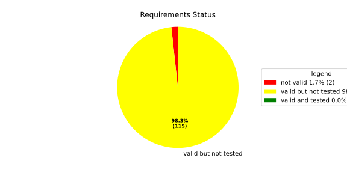
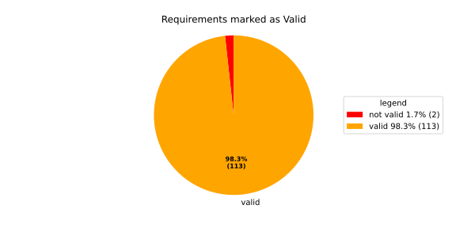
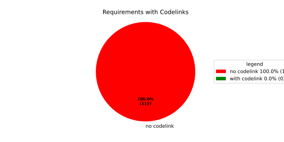

Component Requirements Statistics#
Overview#

In Detail#


No needs passed the filters
Failed Tests
Hint: This table should be empty. Before a PR can be merged all tests have to be successful.
No needs passed the filters
Skipped / Disabled Tests
No needs passed the filters
All passed Tests#
No needs passed the filters
Details About Testcases#
No needs passed the filters
No needs passed the filters
Test Log Files#
tests-report/score/health_monitor/src/rust/tests/test.log
exec ${PAGER:-/usr/bin/less} "$0" || exit 1
Executing tests from //score/health_monitor/src/rust:tests
-----------------------------------------------------------------------------
running 232 tests
test common::tests::duration_to_int_valid ... ok
test common::tests::time_offset_diff_too_large - should panic ... ok
test common::tests::time_offset_wrong_order ... ok
test common::tests::time_range_from_interval_lower_too_large - should panic ... ok
test common::tests::time_range_from_interval_valid ... ok
test common::tests::time_range_new_valid ... ok
test deadline::common::tests::acquire_and_release_deadline ... ok
test common::tests::duration_to_int_too_large - should panic ... ok
test common::tests::time_range_new_wrong_order - should panic ... ok
test common::tests::time_offset_valid ... ok
test deadline::deadline_monitor::tests::deadline_failed_on_first_run_and_then_restarted_is_evaluated_as_error ... ok
test deadline::deadline_monitor::tests::deadline_outside_time_range_is_error_when_dropped_after_evaluate ... ok
test deadline::deadline_monitor::tests::get_deadline_unknown_tag ... ok
test deadline::deadline_monitor::tests::start_stop_deadline_outside_ranges_is_error_when_dropped_before_evaluate ... ok
test deadline::deadline_monitor::tests::start_stop_deadline_outside_ranges_is_evaluated_as_error ... ok
test deadline::common::tests::concurrent_acquire ... ok
test deadline::common::tests::new_and_fields ... ok
test deadline::deadline_state::tests::as_u64_and_new ... ok
test deadline::deadline_state::tests::deadline_state_default_and_snapshot ... ok
test deadline::deadline_state::tests::deadline_state_update_none_returns_err ... ok
test deadline::deadline_state::tests::deadline_state_update_success ... ok
test deadline::deadline_state::tests::default_state ... ok
test deadline::deadline_state::tests::set_and_get_timestamp_ms ... ok
test deadline::deadline_state::tests::set_running ... ok
test deadline::deadline_state::tests::set_underrun ... ok
test deadline::ffi::tests::deadline_destroy_null_deadline ... ok
test deadline::ffi::tests::deadline_monitor_builder_add_deadline_invalid_range ... ok
test deadline::ffi::tests::deadline_monitor_builder_add_deadline_null_builder ... ok
test deadline::ffi::tests::deadline_monitor_builder_add_deadline_null_deadline_tag ... ok
test deadline::ffi::tests::deadline_monitor_builder_add_deadline_succeeds ... ok
test deadline::ffi::tests::deadline_monitor_builder_create_null_builder ... ok
test deadline::ffi::tests::deadline_monitor_builder_create_succeeds ... ok
test deadline::ffi::tests::deadline_monitor_destroy_null_monitor ... ok
test deadline::ffi::tests::deadline_monitor_builder_destroy_null_builder ... ok
test deadline::ffi::tests::deadline_monitor_get_deadline_null_deadline_handle ... ok
test deadline::ffi::tests::deadline_monitor_get_deadline_null_monitor ... ok
test deadline::ffi::tests::deadline_monitor_get_deadline_succeeds ... ok
test deadline::ffi::tests::deadline_monitor_get_deadline_unknown_deadline ... ok
test deadline::ffi::tests::deadline_monitor_get_deadline_null_deadline_tag ... ok
test deadline::ffi::tests::deadline_start_already_started ... ok
test deadline::ffi::tests::deadline_start_null_deadline ... ok
test deadline::ffi::tests::deadline_start_succeeds ... ok
test deadline::ffi::tests::deadline_stop_null_deadline ... ok
test deadline::ffi::tests::deadline_stop_succeeds ... ok
test ffi::tests::health_monitor_builder_add_deadline_monitor_null_deadline_monitor_builder ... ok
test ffi::tests::health_monitor_builder_add_deadline_monitor_null_hmon_builder ... ok
test ffi::tests::health_monitor_builder_add_deadline_monitor_null_monitor_tag ... ok
test ffi::tests::health_monitor_builder_add_deadline_monitor_succeeds ... ok
test ffi::tests::health_monitor_builder_add_heartbeat_monitor_null_heartbeat_monitor_builder ... ok
test ffi::tests::health_monitor_builder_add_heartbeat_monitor_null_hmon_builder ... ok
test ffi::tests::health_monitor_builder_add_heartbeat_monitor_null_monitor_tag ... ok
test ffi::tests::health_monitor_builder_add_heartbeat_monitor_succeeds ... ok
test ffi::tests::health_monitor_builder_add_logic_monitor_null_hmon_builder ... ok
test ffi::tests::health_monitor_builder_add_logic_monitor_null_logic_monitor_builder ... ok
test ffi::tests::health_monitor_builder_add_logic_monitor_null_monitor_tag ... ok
test ffi::tests::health_monitor_builder_add_logic_monitor_succeeds ... ok
test ffi::tests::health_monitor_builder_build_no_monitors ... ok
test ffi::tests::health_monitor_builder_build_invalid_cycle_intervals ... ok
test ffi::tests::health_monitor_builder_build_null_builder_handle ... ok
test ffi::tests::health_monitor_builder_build_null_monitor_handle ... ok
test ffi::tests::health_monitor_builder_build_succeeds ... ok
test ffi::tests::health_monitor_builder_build_thread_parameters ... ok
test ffi::tests::health_monitor_builder_build_valid_cycle_intervals_succeeds ... ok
test ffi::tests::health_monitor_builder_create_null_handle ... ok
test ffi::tests::health_monitor_builder_create_succeeds ... ok
test ffi::tests::health_monitor_builder_destroy_null_handle ... ok
test ffi::tests::health_monitor_destroy_null_hmon ... ok
test ffi::tests::health_monitor_get_deadline_monitor_already_taken ... ok
test ffi::tests::health_monitor_get_deadline_monitor_null_deadline_monitor ... ok
test ffi::tests::health_monitor_get_deadline_monitor_null_hmon ... ok
test ffi::tests::health_monitor_get_deadline_monitor_null_monitor_tag ... ok
test ffi::tests::health_monitor_get_deadline_monitor_succeeds ... ok
test ffi::tests::health_monitor_get_heartbeat_monitor_already_taken ... ok
test ffi::tests::health_monitor_get_heartbeat_monitor_null_heartbeat_monitor ... ok
test ffi::tests::health_monitor_get_heartbeat_monitor_null_hmon ... ok
test ffi::tests::health_monitor_get_heartbeat_monitor_null_monitor_tag ... ok
test ffi::tests::health_monitor_get_heartbeat_monitor_succeeds ... ok
test ffi::tests::health_monitor_get_logic_monitor_already_taken ... ok
test ffi::tests::health_monitor_get_logic_monitor_null_hmon ... ok
test ffi::tests::health_monitor_get_logic_monitor_null_logic_monitor ... ok
test ffi::tests::health_monitor_get_logic_monitor_null_monitor_tag ... ok
test ffi::tests::health_monitor_get_logic_monitor_succeeds ... ok
test ffi::tests::health_monitor_start_monitor_not_taken ... ok
test ffi::tests::health_monitor_start_null_hmon ... ok
test health_monitor::tests::health_monitor_builder_build_invalid_cycles ... [2026/06/08 12:01:46.1043409][6916][HMON][INFO] Monitoring thread started.
ok
[2026/06/08 12:01:46.1043523][6916][HMON][INFO] Monitoring thread exiting.
test ffi::tests::health_monitor_start_succeeds ... ok
test health_monitor::tests::health_monitor_builder_build_no_monitors ... ok
test health_monitor::tests::health_monitor_builder_build_succeeds ... ok
test health_monitor::tests::health_monitor_builder_new_succeeds ... ok
test health_monitor::tests::health_monitor_get_deadline_monitor_available ... ok
test health_monitor::tests::health_monitor_get_deadline_monitor_invalid_state ... ok
test health_monitor::tests::health_monitor_get_deadline_monitor_taken ... ok
test health_monitor::tests::health_monitor_get_deadline_monitor_unknown ... ok
test health_monitor::tests::health_monitor_get_heartbeat_monitor_available ... ok
test health_monitor::tests::health_monitor_get_heartbeat_monitor_invalid_state ... ok
test health_monitor::tests::health_monitor_get_heartbeat_monitor_taken ... ok
test health_monitor::tests::health_monitor_get_heartbeat_monitor_unknown ... ok
test health_monitor::tests::health_monitor_get_logic_monitor_available ... ok
test health_monitor::tests::health_monitor_get_logic_monitor_invalid_state ... ok
test health_monitor::tests::health_monitor_get_logic_monitor_taken ... ok
test health_monitor::tests::health_monitor_get_logic_monitor_unknown ... ok
test health_monitor::tests::health_monitor_start_monitors_not_taken - should panic ... ok
test heartbeat::ffi::tests::heartbeat_monitor_builder_create_invalid_range ... ok
[2026/06/08 12:01:46.1063202][6916][HMON][INFO] Monitoring thread started.
[2026/06/08 12:01:46.1063321][6916][HMON][INFO] Monitoring thread exiting.
test health_monitor::tests::health_monitor_start_succeeds ... ok
test heartbeat::ffi::tests::heartbeat_monitor_builder_create_null_builder ... ok
test heartbeat::ffi::tests::heartbeat_monitor_builder_create_succeeds ... ok
test heartbeat::ffi::tests::heartbeat_monitor_builder_destroy_null_builder ... ok
test heartbeat::ffi::tests::heartbeat_monitor_destroy_null_monitor ... ok
test heartbeat::ffi::tests::heartbeat_monitor_heartbeat_null_monitor ... ok
test heartbeat::ffi::tests::heartbeat_monitor_heartbeat_succeeds ... ok
test deadline::deadline_monitor::tests::monitor_with_multiple_running_deadlines ... ok
test heartbeat::heartbeat_monitor::tests::heartbeat_monitor_beat_early_evaluate_early ... ok
test heartbeat::heartbeat_monitor::tests::heartbeat_monitor_beat_early_evaluate_in_range ... ok
test heartbeat::heartbeat_monitor::tests::heartbeat_monitor_beat_in_range_evaluate_in_range ... ok
test heartbeat::heartbeat_monitor::tests::heartbeat_monitor_beat_early_evaluate_late ... ok
test heartbeat::heartbeat_monitor::tests::heartbeat_monitor_builder_build_invalid_internal_processing_cycle ... ok
test heartbeat::heartbeat_monitor::tests::heartbeat_monitor_builder_build_ok ... ok
test heartbeat::heartbeat_monitor::tests::heartbeat_monitor_beat_in_range_evaluate_late ... ok
test heartbeat::heartbeat_monitor::tests::heartbeat_monitor_beat_late_evaluate_late ... ok
test heartbeat::heartbeat_monitor::tests::heartbeat_monitor_cycle_early ... ok
test heartbeat::heartbeat_monitor::tests::heartbeat_monitor_multiple_beats_early_evaluate_early ... ok
test heartbeat::heartbeat_monitor::tests::heartbeat_monitor_cycle_in_range ... ok
test heartbeat::heartbeat_monitor::tests::heartbeat_monitor_multiple_beats_early_evaluate_in_range ... ok
test heartbeat::heartbeat_monitor::tests::heartbeat_monitor_cycle_late ... ok
test heartbeat::heartbeat_monitor::tests::heartbeat_monitor_multiple_beats_early_evaluate_late ... ok
test heartbeat::heartbeat_monitor::tests::heartbeat_monitor_multiple_beats_in_range_evaluate_in_range ... ok
test heartbeat::heartbeat_monitor::tests::heartbeat_monitor_no_beat_evaluate_early ... ok
test heartbeat::heartbeat_monitor::tests::heartbeat_monitor_no_beat_evaluate_in_range ... ok
test heartbeat::heartbeat_monitor::tests::heartbeat_monitor_multiple_beats_in_range_evaluate_late ... ok
test heartbeat::heartbeat_monitor::tests::heartbeat_monitor_multiple_beats_late_evaluate_late ... ok
test heartbeat::heartbeat_state::tests::snapshot_counter_increment ... ok
test heartbeat::heartbeat_state::tests::snapshot_default ... ok
test heartbeat::heartbeat_state::tests::snapshot_from_u64_max ... ok
test heartbeat::heartbeat_state::tests::snapshot_from_u64_valid ... ok
test heartbeat::heartbeat_state::tests::snapshot_from_u64_zero ... ok
test heartbeat::heartbeat_state::tests::snapshot_new_succeeds ... ok
test heartbeat::heartbeat_state::tests::snapshot_set_heartbeat_timestamp_out_of_range - should panic ... ok
test heartbeat::heartbeat_state::tests::snapshot_set_heartbeat_timestamp_valid ... ok
test heartbeat::heartbeat_state::tests::state_default ... ok
test heartbeat::heartbeat_state::tests::state_new ... ok
test heartbeat::heartbeat_state::tests::state_reset ... ok
test heartbeat::heartbeat_state::tests::state_snapshot ... ok
test heartbeat::heartbeat_state::tests::state_update_none ... ok
test heartbeat::heartbeat_state::tests::state_update_some ... ok
test logic::ffi::tests::logic_monitor_builder_add_state_null_allowed_states_many_elements ... ok
test logic::ffi::tests::logic_monitor_builder_add_state_null_allowed_states_zero_elements ... ok
test logic::ffi::tests::logic_monitor_builder_add_state_null_builder ... ok
test logic::ffi::tests::logic_monitor_builder_add_state_null_tag ... ok
test logic::ffi::tests::logic_monitor_builder_add_state_succeeds ... ok
test logic::ffi::tests::logic_monitor_builder_create_null_builder ... ok
test logic::ffi::tests::logic_monitor_builder_create_null_initial_state ... ok
test logic::ffi::tests::logic_monitor_builder_create_succeeds ... ok
test logic::ffi::tests::logic_monitor_builder_destroy_null_builder ... ok
test logic::ffi::tests::logic_monitor_destroy_null_monitor ... ok
test logic::ffi::tests::logic_monitor_state_fails ... ok
test logic::ffi::tests::logic_monitor_state_null_monitor ... ok
test logic::ffi::tests::logic_monitor_state_null_state ... ok
test logic::ffi::tests::logic_monitor_state_succeeds ... ok
test logic::ffi::tests::logic_monitor_transition_fails ... ok
test logic::ffi::tests::logic_monitor_transition_null_monitor ... ok
test logic::ffi::tests::logic_monitor_transition_null_target_state ... ok
test logic::ffi::tests::logic_monitor_transition_succeeds ... ok
test logic::logic_monitor::tests::logic_monitor_builder_build_no_states ... ok
test logic::logic_monitor::tests::logic_monitor_builder_build_succeeds ... ok
test logic::logic_monitor::tests::logic_monitor_builder_build_undefined_initial_state ... ok
test logic::logic_monitor::tests::logic_monitor_builder_build_undefined_target ... ok
test logic::logic_monitor::tests::logic_monitor_builder_new_succeeds ... ok
test logic::logic_monitor::tests::logic_monitor_evaluate_invalid_state ... ok
test logic::logic_monitor::tests::logic_monitor_evaluate_invalid_transition ... ok
test logic::logic_monitor::tests::logic_monitor_evaluate_succeeds ... ok
test logic::logic_monitor::tests::logic_monitor_state_indeterminate_current_state ... ok
test logic::logic_monitor::tests::logic_monitor_state_succeeds ... ok
test logic::logic_monitor::tests::logic_monitor_transition_indeterminate_current_state ... ok
test logic::logic_monitor::tests::logic_monitor_transition_invalid_transition ... ok
test logic::logic_monitor::tests::logic_monitor_transition_succeeds ... ok
test logic::logic_monitor::tests::logic_monitor_transition_unknown_node ... ok
test logic::logic_state::tests::snapshot_from_u64_max ... ok
test logic::logic_state::tests::snapshot_from_u64_valid ... ok
test logic::logic_state::tests::snapshot_from_u64_zero ... ok
test logic::logic_state::tests::snapshot_new_succeeds ... ok
test logic::logic_state::tests::snapshot_set_current_state_index_valid ... ok
test logic::logic_state::tests::snapshot_set_heartbeat_timestamp_out_of_range - should panic ... ok
test logic::logic_state::tests::snapshot_set_monitor_status_valid ... ok
test logic::logic_state::tests::state_new ... ok
test logic::logic_state::tests::state_snapshot ... ok
test logic::logic_state::tests::state_swap ... ok
test tag::tests::deadline_tag_debug ... ok
test tag::tests::deadline_tag_from_str ... ok
test tag::tests::deadline_tag_from_string ... ok
test tag::tests::deadline_tag_new ... ok
test tag::tests::deadline_tag_score_debug ... ok
test tag::tests::monitor_tag_debug ... ok
test tag::tests::monitor_tag_from_str ... ok
test tag::tests::monitor_tag_from_string ... ok
test tag::tests::monitor_tag_new ... ok
test tag::tests::monitor_tag_score_debug ... ok
test tag::tests::state_tag_debug ... ok
test tag::tests::state_tag_from_str ... ok
test tag::tests::state_tag_from_string ... ok
test tag::tests::state_tag_new ... ok
test tag::tests::state_tag_score_debug ... ok
test tag::tests::tag_debug ... ok
test tag::tests::tag_hash_is_eq ... ok
test tag::tests::tag_hash_is_ne ... ok
test tag::tests::tag_new ... ok
test tag::tests::tag_partial_eq_is_eq ... ok
test tag::tests::tag_partial_eq_is_ne ... ok
test tag::tests::tag_score_debug ... ok
test tag::tests::test_from_str ... ok
test tag::tests::test_from_string ... ok
test thread_ffi::tests::scheduler_policy_priority_max_null_priority ... ok
test thread_ffi::tests::scheduler_policy_priority_max_succeeds ... ok
test thread_ffi::tests::scheduler_policy_priority_min_null_priority ... ok
test thread_ffi::tests::scheduler_policy_priority_min_succeeds ... ok
test thread_ffi::tests::thread_parameters_affinity_null_affinity_many_elements ... ok
test thread_ffi::tests::thread_parameters_affinity_null_affinity_zero_elements ... ok
test thread_ffi::tests::thread_parameters_affinity_null_handle ... ok
test thread_ffi::tests::thread_parameters_affinity_succeeds ... ok
test thread_ffi::tests::thread_parameters_create_succeeds ... ok
test thread_ffi::tests::thread_parameters_destroy_null_handle ... ok
test thread_ffi::tests::thread_parameters_scheduler_parameters_invalid_priority ... ok
test thread_ffi::tests::thread_parameters_scheduler_parameters_null_handle ... ok
test thread_ffi::tests::thread_parameters_scheduler_parameters_succeeds ... ok
test thread_ffi::tests::thread_parameters_stack_size_null_handle ... ok
test thread_ffi::tests::thread_parameters_stack_size_succeeds ... ok
test worker::tests::monitoring_logic_report_alive_on_each_call_when_no_error ... ok
test heartbeat::heartbeat_monitor::tests::heartbeat_monitor_no_beat_evaluate_late ... ok
test worker::tests::monitoring_logic_report_error_when_deadline_failed ... ok
[2026/06/08 12:01:47.0640009][6916][HMON][INFO] Monitoring thread started.
test deadline::deadline_monitor::tests::start_stop_deadline_within_range_works ... ok
[2026/06/08 12:01:47.1256694][6916][HMON][WARN] Deadline (DeadlineTag(deadline_fast)) missed! Expected: 50, now: 61
[2026/06/08 12:01:47.1256989][6916][HMON][WARN] Deadline monitor with tag MonitorTag(deadline_monitor) reported error: TooLate.
[2026/06/08 12:01:47.1257082][6916][HMON][WARN] One or more monitors reported errors, skipping AliveAPI notification.
[2026/06/08 12:01:47.1257139][6916][HMON][INFO] Monitoring logic failed, stopping thread.
[2026/06/08 12:01:47.1257193][6916][HMON][INFO] Monitoring thread exiting.
test worker::tests::monitoring_logic_report_alive_respect_cycle ... ok
test worker::tests::unique_thread_runner_monitoring_works ... ok
test heartbeat::heartbeat_monitor::tests::heartbeat_monitor_timestamp_offset ... ok
test result: ok. 232 passed; 0 failed; 0 ignored; 0 measured; 0 filtered out; finished in 1.26s
tests-report/score/health_monitor/src/rust/loom_tests/test.log
exec ${PAGER:-/usr/bin/less} "$0" || exit 1
Executing tests from //score/health_monitor/src/rust:loom_tests
-----------------------------------------------------------------------------
running 3 tests
test heartbeat::heartbeat_monitor::loom_tests::heartbeat_monitor_heartbeat_evaluate_too_early ... ok
test heartbeat::heartbeat_monitor::loom_tests::heartbeat_monitor_heartbeat_evaluate_in_range ... ok
test heartbeat::heartbeat_monitor::loom_tests::heartbeat_monitor_heartbeat_evaluate_too_late ... ok
test result: ok. 3 passed; 0 failed; 0 ignored; 0 measured; 0 filtered out; finished in 0.72s
tests-report/score/health_monitor/src/cpp/cpp_integration_tests/test.log
exec ${PAGER:-/usr/bin/less} "$0" || exit 1
Executing tests from //score/health_monitor/src/cpp:cpp_integration_tests
-----------------------------------------------------------------------------
Running main() from gmock_main.cc
[==========] Running 1 test from 1 test suite.
[----------] Global test environment set-up.
[----------] 1 test from HealthMonitorTest
[ RUN ] HealthMonitorTest.Integrated
[2026/06/05 09:54:42.0717292][score/health_monitor/src/rust/deadline/deadline_monitor.rs:217][4986][HMON][ERROR] Deadline DeadlineTag(deadline_1) stopped too early by 100 ms
[2026/06/05 09:54:42.0717485][score/health_monitor/src/rust/worker.rs:121][4986][HMON][INFO] Monitoring thread started.
[2026/06/05 09:54:42.0717714][score/health_monitor/src/rust/worker.rs:139][4986][HMON][INFO] Monitoring thread exiting.
[ OK ] HealthMonitorTest.Integrated (3 ms)
[----------] 1 test from HealthMonitorTest (3 ms total)
[----------] Global test environment tear-down
[==========] 1 test from 1 test suite ran. (3 ms total)
[ PASSED ] 1 test.
tests-report/score/health_monitor/src/cpp/cpp_unit_tests/test.log
exec ${PAGER:-/usr/bin/less} "$0" || exit 1
Executing tests from //score/health_monitor/src/cpp:cpp_unit_tests
-----------------------------------------------------------------------------
Running main() from gmock_main.cc
[==========] Running 33 tests from 10 test suites.
[----------] Global test environment set-up.
[----------] 2 tests from DeadlineMonitorBuilderFixture
[ RUN ] DeadlineMonitorBuilderFixture.New_Succeeds
[ OK ] DeadlineMonitorBuilderFixture.New_Succeeds (0 ms)
[ RUN ] DeadlineMonitorBuilderFixture.AddDeadline_Succeeds
[ OK ] DeadlineMonitorBuilderFixture.AddDeadline_Succeeds (0 ms)
[----------] 2 tests from DeadlineMonitorBuilderFixture (0 ms total)
[----------] 2 tests from DeadlineMonitorFixture
[ RUN ] DeadlineMonitorFixture.GetDeadline_Succeeds
[ OK ] DeadlineMonitorFixture.GetDeadline_Succeeds (0 ms)
[ RUN ] DeadlineMonitorFixture.GetDeadline_Unknown
[ OK ] DeadlineMonitorFixture.GetDeadline_Unknown (0 ms)
[----------] 2 tests from DeadlineMonitorFixture (0 ms total)
[----------] 2 tests from DeadlineFixture
[ RUN ] DeadlineFixture.Start_Succeeds
[2026/06/05 09:54:43.4389358][score/health_monitor/src/rust/deadline/deadline_monitor.rs:217][5018][HMON][ERROR] Deadline DeadlineTag(deadline) stopped too early by 50 ms
[ OK ] DeadlineFixture.Start_Succeeds (0 ms)
[ RUN ] DeadlineFixture.Start_AlreadyRunning
[2026/06/05 09:54:43.4389870][score/health_monitor/src/rust/deadline/deadline_monitor.rs:217][5018][HMON][ERROR] Deadline DeadlineTag(deadline) stopped too early by 50 ms
[2026/06/05 09:54:43.4389935][score/health_monitor/src/rust/deadline/deadline_monitor.rs:172][5018][HMON][WARN] Trying to start deadline DeadlineTag(deadline) that already failed
[ OK ] DeadlineFixture.Start_AlreadyRunning (0 ms)
[----------] 2 tests from DeadlineFixture (0 ms total)
[----------] 4 tests from HealthMonitorBuilderFixture
[ RUN ] HealthMonitorBuilderFixture.New_Succeeds
[ OK ] HealthMonitorBuilderFixture.New_Succeeds (0 ms)
[ RUN ] HealthMonitorBuilderFixture.Build_Succeeds
[ OK ] HealthMonitorBuilderFixture.Build_Succeeds (0 ms)
[ RUN ] HealthMonitorBuilderFixture.Build_InvalidCycles
[2026/06/05 09:54:43.4390903][score/health_monitor/src/rust/health_monitor.rs:134][5018][HMON][ERROR] Supervisor API cycle duration (123 ms) must be a multiple of internal processing cycle interval (100 ms).
[ OK ] HealthMonitorBuilderFixture.Build_InvalidCycles (0 ms)
[ RUN ] HealthMonitorBuilderFixture.Build_NoMonitors
[2026/06/05 09:54:43.4391104][score/health_monitor/src/rust/health_monitor.rs:146][5018][HMON][ERROR] No monitors have been added. HealthMonitor cannot be created.
[ OK ] HealthMonitorBuilderFixture.Build_NoMonitors (0 ms)
[----------] 4 tests from HealthMonitorBuilderFixture (0 ms total)
[----------] 11 tests from HealthMonitor
[ RUN ] HealthMonitor.GetDeadlineMonitor_Available
[ OK ] HealthMonitor.GetDeadlineMonitor_Available (0 ms)
[ RUN ] HealthMonitor.GetDeadlineMonitor_Taken
[ OK ] HealthMonitor.GetDeadlineMonitor_Taken (0 ms)
[ RUN ] HealthMonitor.GetDeadlineMonitor_Unknown
[ OK ] HealthMonitor.GetDeadlineMonitor_Unknown (0 ms)
[ RUN ] HealthMonitor.GetHeartbeatMonitor_Available
[ OK ] HealthMonitor.GetHeartbeatMonitor_Available (0 ms)
[ RUN ] HealthMonitor.GetHeartbeatMonitor_Taken
[ OK ] HealthMonitor.GetHeartbeatMonitor_Taken (0 ms)
[ RUN ] HealthMonitor.GetHeartbeatMonitor_Unknown
[ OK ] HealthMonitor.GetHeartbeatMonitor_Unknown (0 ms)
[ RUN ] HealthMonitor.GetLogicMonitor_Available
[ OK ] HealthMonitor.GetLogicMonitor_Available (0 ms)
[ RUN ] HealthMonitor.GetLogicMonitor_Taken
[ OK ] HealthMonitor.GetLogicMonitor_Taken (0 ms)
[ RUN ] HealthMonitor.GetLogicMonitor_Unknown
[ OK ] HealthMonitor.GetLogicMonitor_Unknown (0 ms)
[ RUN ] HealthMonitor.Start_Succeeds
[2026/06/05 09:54:43.4393663][score/health_monitor/src/rust/worker.rs:121][5018][HMON][INFO] Monitoring thread started.
[2026/06/05 09:54:43.4393754][score/health_monitor/src/rust/worker.rs:139][5018][HMON][INFO] Monitoring thread exiting.
[ OK ] HealthMonitor.Start_Succeeds (0 ms)
[ RUN ] HealthMonitor.Start_MonitorsNotTaken
[2026/06/05 09:54:43.4400290][score/health_monitor/src/rust/health_monitor.rs:307][5023][HMON][ERROR] All monitors must be taken before starting HealthMonitor but MonitorTag(deadline_monitor) is not taken.
[ OK ] HealthMonitor.Start_MonitorsNotTaken (158 ms)
[----------] 11 tests from HealthMonitor (158 ms total)
[----------] 1 test from HeartbeatMonitorBuilder
[ RUN ] HeartbeatMonitorBuilder.New_Succeeds
[ OK ] HeartbeatMonitorBuilder.New_Succeeds (0 ms)
[----------] 1 test from HeartbeatMonitorBuilder (0 ms total)
[----------] 1 test from HeartbeatMonitor
[ RUN ] HeartbeatMonitor.Heartbeat_Succeeds
[ OK ] HeartbeatMonitor.Heartbeat_Succeeds (0 ms)
[----------] 1 test from HeartbeatMonitor (0 ms total)
[----------] 2 tests from LogicMonitorBuilderFixture
[ RUN ] LogicMonitorBuilderFixture.New_Succeeds
[ OK ] LogicMonitorBuilderFixture.New_Succeeds (0 ms)
[ RUN ] LogicMonitorBuilderFixture.AddState_Succeeds
[ OK ] LogicMonitorBuilderFixture.AddState_Succeeds (0 ms)
[----------] 2 tests from LogicMonitorBuilderFixture (0 ms total)
[----------] 5 tests from LogicMonitorFixture
[ RUN ] LogicMonitorFixture.Transition_Succeeds
[ OK ] LogicMonitorFixture.Transition_Succeeds (0 ms)
[ RUN ] LogicMonitorFixture.Transition_Unknown
[2026/06/05 09:54:43.5978984][score/health_monitor/src/rust/logic/logic_monitor.rs:265][5018][HMON][WARN] Requested state transition is invalid: StateTag(state1) -> StateTag(unknown)
[ OK ] LogicMonitorFixture.Transition_Unknown (0 ms)
[ RUN ] LogicMonitorFixture.Transition_Invalid
[2026/06/05 09:54:43.5979562][score/health_monitor/src/rust/logic/logic_monitor.rs:265][5018][HMON][WARN] Requested state transition is invalid: StateTag(state1) -> StateTag(unknown)
[2026/06/05 09:54:43.5979644][score/health_monitor/src/rust/logic/logic_monitor.rs:254][5018][HMON][WARN] Current logic monitor state cannot be determined
[ OK ] LogicMonitorFixture.Transition_Invalid (0 ms)
[ RUN ] LogicMonitorFixture.State_Succeeds
[ OK ] LogicMonitorFixture.State_Succeeds (0 ms)
[ RUN ] LogicMonitorFixture.State_Invalid
[2026/06/05 09:54:43.5980688][score/health_monitor/src/rust/logic/logic_monitor.rs:265][5018][HMON][WARN] Requested state transition is invalid: StateTag(state1) -> StateTag(unknown)
[2026/06/05 09:54:43.5980816][score/health_monitor/src/rust/logic/logic_monitor.rs:290][5018][HMON][WARN] Current logic monitor state cannot be determined
[ OK ] LogicMonitorFixture.State_Invalid (0 ms)
[----------] 5 tests from LogicMonitorFixture (0 ms total)
[----------] 3 tests from TimeRangeFixture
[ RUN ] TimeRangeFixture.New_Succeeds
[ OK ] TimeRangeFixture.New_Succeeds (0 ms)
[ RUN ] TimeRangeFixture.New_InvalidOrder
[ OK ] TimeRangeFixture.New_InvalidOrder (149 ms)
[ RUN ] TimeRangeFixture.MinMax
[ OK ] TimeRangeFixture.MinMax (0 ms)
[----------] 3 tests from TimeRangeFixture (149 ms total)
[----------] Global test environment tear-down
[==========] 33 tests from 10 test suites ran. (309 ms total)
[ PASSED ] 33 tests.
tests-report/score/launch_manager/exec_error_domain_UT/test.log
exec ${PAGER:-/usr/bin/less} "$0" || exit 1
Executing tests from //score/launch_manager:exec_error_domain_UT
-----------------------------------------------------------------------------
Running main() from gmock_main.cc
[==========] Running 3 tests from 1 test suite.
[----------] Global test environment set-up.
[----------] 3 tests from ExecErrorDomainTest
[ RUN ] ExecErrorDomainTest.AllKnownCodesReturnNonEmptyMessage
[ OK ] ExecErrorDomainTest.AllKnownCodesReturnNonEmptyMessage (0 ms)
[ RUN ] ExecErrorDomainTest.AllKnownCodesHaveDistinctMessages
[ OK ] ExecErrorDomainTest.AllKnownCodesHaveDistinctMessages (0 ms)
[ RUN ] ExecErrorDomainTest.UnknownCodeReturnsNonEmptyMessage
[ OK ] ExecErrorDomainTest.UnknownCodeReturnsNonEmptyMessage (0 ms)
[----------] 3 tests from ExecErrorDomainTest (0 ms total)
[----------] Global test environment tear-down
[==========] 3 tests from 1 test suite ran. (0 ms total)
[ PASSED ] 3 tests.
tests-report/score/launch_manager/daemon/src/process_state_client/process_state_client_ut/test.log
exec ${PAGER:-/usr/bin/less} "$0" || exit 1
Executing tests from //score/launch_manager/daemon/src/process_state_client:process_state_client_ut
-----------------------------------------------------------------------------
Running main() from gmock_main.cc
[==========] Running 4 tests from 1 test suite.
[----------] Global test environment set-up.
[----------] 4 tests from ProcessStateClient_UT
[ RUN ] ProcessStateClient_UT.ProcessStateClient_ConstructReceiver_Succeeds
[ OK ] ProcessStateClient_UT.ProcessStateClient_ConstructReceiver_Succeeds (0 ms)
[ RUN ] ProcessStateClient_UT.ProcessStateClient_QueueOneProcess_Succeeds
[ OK ] ProcessStateClient_UT.ProcessStateClient_QueueOneProcess_Succeeds (0 ms)
[ RUN ] ProcessStateClient_UT.ProcessStateClient_QueueMaxNumberOfProcesses_Succeeds
[ OK ] ProcessStateClient_UT.ProcessStateClient_QueueMaxNumberOfProcesses_Succeeds (8 ms)
[ RUN ] ProcessStateClient_UT.ProcessStateClient_QueueOneProcessTooMany_Fails
mw::log initialization error: Error No logging configuration files could be found. occurred with context information: Failed to load configuration files. Fallback to console logging.
2026/06/01 13:07:07.9227519 1538361 000 ECU1 NONE LM log error verbose 1 Failed to queue posix process
2026/06/01 13:07:07.9227520 1538363 000 ECU1 NONE LM log error verbose 1 ProcessStateReceiver::getNextChangedPosixProcess: Overflow occurred, will be reported as kCommunicationError
[ OK ] ProcessStateClient_UT.ProcessStateClient_QueueOneProcessTooMany_Fails (5 ms)
[----------] 4 tests from ProcessStateClient_UT (15 ms total)
[----------] Global test environment tear-down
[==========] 4 tests from 1 test suite ran. (15 ms total)
[ PASSED ] 4 tests.
tests-report/score/launch_manager/daemon/src/recovery_client/recovery_client_UT/test.log
exec ${PAGER:-/usr/bin/less} "$0" || exit 1
Executing tests from //score/launch_manager/daemon/src/recovery_client:recovery_client_UT
-----------------------------------------------------------------------------
Running main() from gmock_main.cc
[==========] Running 5 tests from 1 test suite.
[----------] Global test environment set-up.
[----------] 5 tests from RecoveryClientTest
[ RUN ] RecoveryClientTest.SendSingleRequest
[ OK ] RecoveryClientTest.SendSingleRequest (0 ms)
[ RUN ] RecoveryClientTest.GetNextRequest
[ OK ] RecoveryClientTest.GetNextRequest (0 ms)
[ RUN ] RecoveryClientTest.GetNextRequestEmpty
[ OK ] RecoveryClientTest.GetNextRequestEmpty (0 ms)
[ RUN ] RecoveryClientTest.RingBufferFull
[ OK ] RecoveryClientTest.RingBufferFull (0 ms)
[ RUN ] RecoveryClientTest.FIFOOrdering
[ OK ] RecoveryClientTest.FIFOOrdering (0 ms)
[----------] 5 tests from RecoveryClientTest (0 ms total)
[----------] Global test environment tear-down
[==========] 5 tests from 1 test suite ran. (0 ms total)
[ PASSED ] 5 tests.
tests-report/score/launch_manager/daemon/src/alive_monitor/details/supervision/Alive_UT/test.log
exec ${PAGER:-/usr/bin/less} "$0" || exit 1
Executing tests from //score/launch_manager/daemon/src/alive_monitor/details/supervision:Alive_UT
-----------------------------------------------------------------------------
Running main() from gmock_main.cc
[==========] Running 4 tests from 1 test suite.
[----------] Global test environment set-up.
[----------] 4 tests from AliveSupervisionTest
[ RUN ] AliveSupervisionTest.AliveTransitionsOkToExpiredOnMissingHeartbeat
mw::log initialization error: Error No logging configuration files could be found. occurred with context information: Failed to load configuration files. Fallback to console logging.
2026/06/08 12:01:45.105223 5159985 000 ECU1 NONE Sprv log warn verbose 13 Alive Supervision ( test_alive ) switched to EXPIRED , due to 0 reported alive indication(s) (expected >= 1 ). Failed supervision cycles: 0 / 0
[ OK ] AliveSupervisionTest.AliveTransitionsOkToExpiredOnMissingHeartbeat (4 ms)
[ RUN ] AliveSupervisionTest.AliveStaysOkWithCorrectHeartbeats
[ OK ] AliveSupervisionTest.AliveStaysOkWithCorrectHeartbeats (0 ms)
[ RUN ] AliveSupervisionTest.AliveReportsEnqueueFailureWhenRingBufferFull
2026/06/08 12:01:45.105224 5159995 000 ECU1 NONE Sprv log warn verbose 13 Alive Supervision ( test_alive ) switched to EXPIRED , due to 0 reported alive indication(s) (expected >= 1 ). Failed supervision cycles: 0 / 0
2026/06/08 12:01:45.105224 5159995 000 ECU1 NONE Sprv log error verbose 3 Failed to enqueue recovery request for alive supervision test_alive failure (ring buffer full)
[ OK ] AliveSupervisionTest.AliveReportsEnqueueFailureWhenRingBufferFull (0 ms)
[ RUN ] AliveSupervisionTest.AliveDebouncesThroughFailedBeforeExpired
2026/06/08 12:01:45.105224 5159997 000 ECU1 NONE Sprv log warn verbose 13 Alive Supervision ( test_alive ) switched to FAILED , due to 0 reported alive indication(s) (expected >= 1 ). Failed supervision cycles: 1 / 1
2026/06/08 12:01:45.105224 5159998 000 ECU1 NONE Sprv log warn verbose 13 Alive Supervision ( test_alive ) switched to EXPIRED , due to 0 reported alive indication(s) (expected >= 1 ). Failed supervision cycles: 2 / 1
[ OK ] AliveSupervisionTest.AliveDebouncesThroughFailedBeforeExpired (0 ms)
[----------] 4 tests from AliveSupervisionTest (5 ms total)
[----------] Global test environment tear-down
[==========] 4 tests from 1 test suite ran. (5 ms total)
[ PASSED ] 4 tests.
tests-report/score/launch_manager/daemon/src/alive_monitor/details/ifappl/MonitorIfDaemon_UT/test.log
exec ${PAGER:-/usr/bin/less} "$0" || exit 1
Executing tests from //score/launch_manager/daemon/src/alive_monitor/details/ifappl:MonitorIfDaemon_UT
-----------------------------------------------------------------------------
Running main() from gmock_main.cc
[==========] Running 16 tests from 1 test suite.
[----------] Global test environment set-up.
[----------] 16 tests from MonitorIfDaemonTest
[ RUN ] MonitorIfDaemonTest.GetInterfaceName_ReturnsNameGivenAtConstruction
mw::log initialization error: Error No logging configuration files could be found. occurred with context information: Failed to load configuration files. Fallback to console logging.
[ OK ] MonitorIfDaemonTest.GetInterfaceName_ReturnsNameGivenAtConstruction (2 ms)
[ RUN ] MonitorIfDaemonTest.InitiallyInactive_CheckForNewData_DoesNotNotifyCheckpoint
[ OK ] MonitorIfDaemonTest.InitiallyInactive_CheckForNewData_DoesNotNotifyCheckpoint (0 ms)
[ RUN ] MonitorIfDaemonTest.ProcessOffBeforeActivation_RemainsInactive
[ OK ] MonitorIfDaemonTest.ProcessOffBeforeActivation_RemainsInactive (0 ms)
[ RUN ] MonitorIfDaemonTest.ProcessRunning_ActivatesMonitorOnNextCheckForNewData
[ OK ] MonitorIfDaemonTest.ProcessRunning_ActivatesMonitorOnNextCheckForNewData (0 ms)
[ RUN ] MonitorIfDaemonTest.ProcessStarting_AlsoActivatesMonitor
[ OK ] MonitorIfDaemonTest.ProcessStarting_AlsoActivatesMonitor (0 ms)
[ RUN ] MonitorIfDaemonTest.ProcessOff_DeactivatesMonitor_NoFurtherDataForwarded
[ OK ] MonitorIfDaemonTest.ProcessOff_DeactivatesMonitor_NoFurtherDataForwarded (0 ms)
[ RUN ] MonitorIfDaemonTest.Active_CheckpointDataForwarded
[ OK ] MonitorIfDaemonTest.Active_CheckpointDataForwarded (0 ms)
[ RUN ] MonitorIfDaemonTest.Active_FutureTimestamp_NotForwardedInCurrentCycle
[ OK ] MonitorIfDaemonTest.Active_FutureTimestamp_NotForwardedInCurrentCycle (0 ms)
[ RUN ] MonitorIfDaemonTest.Active_FutureTimestampCheckpoint_ConsumedInLaterCycle
[ OK ] MonitorIfDaemonTest.Active_FutureTimestampCheckpoint_ConsumedInLaterCycle (0 ms)
[ RUN ] MonitorIfDaemonTest.Active_NonMatchingCheckpointId_NotForwarded
[ OK ] MonitorIfDaemonTest.Active_NonMatchingCheckpointId_NotForwarded (0 ms)
[ RUN ] MonitorIfDaemonTest.Active_MultipleCheckpointsInOneCycle_AllForwarded
[ OK ] MonitorIfDaemonTest.Active_MultipleCheckpointsInOneCycle_AllForwarded (0 ms)
[ RUN ] MonitorIfDaemonTest.Active_TwoAttachedCheckpoints_RoutedByCheckpointId
[ OK ] MonitorIfDaemonTest.Active_TwoAttachedCheckpoints_RoutedByCheckpointId (0 ms)
[ RUN ] MonitorIfDaemonTest.Active_OverflowDetected_TransitionsToInactiveOverflow
2026/06/03 10:29:52.2592545 1296648 000 ECU1 NONE Sprv log warn verbose 3 MonitorInterface: Potential data loss of checkpoint ring buffer occurred. Instance: test_interface
[ OK ] MonitorIfDaemonTest.Active_OverflowDetected_TransitionsToInactiveOverflow (1 ms)
[ RUN ] MonitorIfDaemonTest.InactiveOverflow_NoProcessRestart_DoesNotRepeatNotification
2026/06/03 10:29:52.2592546 1296653 000 ECU1 NONE Sprv log warn verbose 3 MonitorInterface: Potential data loss of checkpoint ring buffer occurred. Instance: test_interface
[ OK ] MonitorIfDaemonTest.InactiveOverflow_NoProcessRestart_DoesNotRepeatNotification (0 ms)
[ RUN ] MonitorIfDaemonTest.InactiveOverflow_ProcessRestarts_PushesOverflowNotificationAgain
2026/06/03 10:29:52.2592546 1296655 000 ECU1 NONE Sprv log warn verbose 3 MonitorInterface: Potential data loss of checkpoint ring buffer occurred. Instance: test_interface
[ OK ] MonitorIfDaemonTest.InactiveOverflow_ProcessRestarts_PushesOverflowNotificationAgain (0 ms)
[ RUN ] MonitorIfDaemonTest.InactiveOverflow_ProcessRestartFlag_ClearedAfterNotification
2026/06/03 10:29:52.2592546 1296658 000 ECU1 NONE Sprv log warn verbose 3 MonitorInterface: Potential data loss of checkpoint ring buffer occurred. Instance: test_interface
[ OK ] MonitorIfDaemonTest.InactiveOverflow_ProcessRestartFlag_ClearedAfterNotification (0 ms)
[----------] 16 tests from MonitorIfDaemonTest (7 ms total)
[----------] Global test environment tear-down
[==========] 16 tests from 1 test suite ran. (7 ms total)
[ PASSED ] 16 tests.
tests-report/score/launch_manager/daemon/src/process_group_manager/details/safeprocessmap_UT/test.log
exec ${PAGER:-/usr/bin/less} "$0" || exit 1
Executing tests from //score/launch_manager/daemon/src/process_group_manager/details:safeprocessmap_UT
-----------------------------------------------------------------------------
Running main() from gmock_main.cc
[==========] Running 13 tests from 1 test suite.
[----------] Global test environment set-up.
[----------] 13 tests from SafeProcessMapTest
[ RUN ] SafeProcessMapTest.ConstructWithZeroCapacity
[ OK ] SafeProcessMapTest.ConstructWithZeroCapacity (0 ms)
[ RUN ] SafeProcessMapTest.FindTerminatedWithNegativePidReturnsInvalid
[ OK ] SafeProcessMapTest.FindTerminatedWithNegativePidReturnsInvalid (0 ms)
[ RUN ] SafeProcessMapTest.FindTerminatedInsertsEntryWhenPidNotPresent
[ OK ] SafeProcessMapTest.FindTerminatedInsertsEntryWhenPidNotPresent (0 ms)
[ RUN ] SafeProcessMapTest.FindTerminatedMatchesExistingInsertAndCallsCallback
[ OK ] SafeProcessMapTest.FindTerminatedMatchesExistingInsertAndCallsCallback (0 ms)
[ RUN ] SafeProcessMapTest.InsertIntoEmptyTreeReturnsZero
[ OK ] SafeProcessMapTest.InsertIntoEmptyTreeReturnsZero (0 ms)
[ RUN ] SafeProcessMapTest.InsertMatchesExistingFindTerminatedEntry
[ OK ] SafeProcessMapTest.InsertMatchesExistingFindTerminatedEntry (0 ms)
[ RUN ] SafeProcessMapTest.InsertMultipleNodesThenFindTerminatedRemovesAll
[ OK ] SafeProcessMapTest.InsertMultipleNodesThenFindTerminatedRemovesAll (7 ms)
[ RUN ] SafeProcessMapTest.InsertBeyondCapacityReturnsOutOfMemory
[ OK ] SafeProcessMapTest.InsertBeyondCapacityReturnsOutOfMemory (2 ms)
[ RUN ] SafeProcessMapTest.InsertSamePidTwiceYieldsUntilFindTerminatedResolves
[ OK ] SafeProcessMapTest.InsertSamePidTwiceYieldsUntilFindTerminatedResolves (11 ms)
[ RUN ] SafeProcessMapTest.FindTerminatedSamePidTwiceYieldsUntilInsertResolves
[ OK ] SafeProcessMapTest.FindTerminatedSamePidTwiceYieldsUntilInsertResolves (11 ms)
[ RUN ] SafeProcessMapTest.FindTerminatedWorksAtMaxTreeDepth
[ OK ] SafeProcessMapTest.FindTerminatedWorksAtMaxTreeDepth (0 ms)
[ RUN ] SafeProcessMapTest.ConcurrentInsertAndFindFromMultipleThreads
[ OK ] SafeProcessMapTest.ConcurrentInsertAndFindFromMultipleThreads (2575 ms)
[ RUN ] SafeProcessMapTest.ConcurrentFindAndInsertFromMultipleThreads
[ OK ] SafeProcessMapTest.ConcurrentFindAndInsertFromMultipleThreads (2210 ms)
[----------] 13 tests from SafeProcessMapTest (4821 ms total)
[----------] Global test environment tear-down
[==========] 13 tests from 1 test suite ran. (4821 ms total)
[ PASSED ] 13 tests.
tests-report/score/launch_manager/daemon/src/process_group_manager/details/oshandler_UT/test.log
exec ${PAGER:-/usr/bin/less} "$0" || exit 1
Executing tests from //score/launch_manager/daemon/src/process_group_manager/details:oshandler_UT
-----------------------------------------------------------------------------
Running main() from gmock_main.cc
[==========] Running 6 tests from 1 test suite.
[----------] Global test environment set-up.
[----------] 6 tests from OsHandlerTest
[ RUN ] OsHandlerTest.WaitReturnsProcessId_FindTerminatedIsCalled
[ OK ] OsHandlerTest.WaitReturnsProcessId_FindTerminatedIsCalled (102 ms)
[ RUN ] OsHandlerTest.WaitReturnsError_OsHandlerSleepsAndDoesNotCallFindTerminated
[ OK ] OsHandlerTest.WaitReturnsError_OsHandlerSleepsAndDoesNotCallFindTerminated (101 ms)
[ RUN ] OsHandlerTest.WaitReturnsZeroPid_OsHandlerSleepsAndDoesNotCallFindTerminated
[ OK ] OsHandlerTest.WaitReturnsZeroPid_OsHandlerSleepsAndDoesNotCallFindTerminated (104 ms)
[ RUN ] OsHandlerTest.WaitReturnsProcessIdBeforeRegistration_LaterRegistrationReceivesStoredTermination
[ OK ] OsHandlerTest.WaitReturnsProcessIdBeforeRegistration_LaterRegistrationReceivesStoredTermination (102 ms)
[ RUN ] OsHandlerTest.WaitReturnsUnknownPidWhenMapIsFull_OutOfResourcesPathDoesNotNotifyCallbacks
mw::log initialization error: Error No logging configuration files could be found. occurred with context information: Failed to load configuration files. Fallback to console logging.
2026/06/03 06:59:29.9969867 1115355 000 ECU1 NONE LM log error verbose 3 No more resources available to track process with PID 9999 (SafeProcessMap capacity exceeded).
[ OK ] OsHandlerTest.WaitReturnsUnknownPidWhenMapIsFull_OutOfResourcesPathDoesNotNotifyCallbacks (112 ms)
[ RUN ] OsHandlerTest.WaitReturnsErrorThenProcessId_HandlerRecoversAndInvokesCallback
[ OK ] OsHandlerTest.WaitReturnsErrorThenProcessId_HandlerRecoversAndInvokesCallback (202 ms)
[----------] 6 tests from OsHandlerTest (813 ms total)
[----------] Global test environment tear-down
[==========] 6 tests from 1 test suite ran. (814 ms total)
[ PASSED ] 6 tests.
tests-report/score/launch_manager/daemon/src/common/identifier_hash_UT/test.log
exec ${PAGER:-/usr/bin/less} "$0" || exit 1
Executing tests from //score/launch_manager/daemon/src/common:identifier_hash_UT
-----------------------------------------------------------------------------
Running main() from gmock_main.cc
[==========] Running 7 tests from 1 test suite.
[----------] Global test environment set-up.
[----------] 7 tests from IdentifierHashTest
[ RUN ] IdentifierHashTest.IdentifierHash_with_string_view_created
[ OK ] IdentifierHashTest.IdentifierHash_with_string_view_created (0 ms)
[ RUN ] IdentifierHashTest.IdentifierHash_with_string_created
[ OK ] IdentifierHashTest.IdentifierHash_with_string_created (0 ms)
[ RUN ] IdentifierHashTest.IdentifierHash_default_created
[ OK ] IdentifierHashTest.IdentifierHash_default_created (0 ms)
[ RUN ] IdentifierHashTest.IdentifierHash_invalid_hash_no_string_representation
[ OK ] IdentifierHashTest.IdentifierHash_invalid_hash_no_string_representation (0 ms)
[ RUN ] IdentifierHashTest.IdentifierHash_no_dangling_pointer_after_source_string_dies
[ OK ] IdentifierHashTest.IdentifierHash_no_dangling_pointer_after_source_string_dies (0 ms)
[ RUN ] IdentifierHashTest.IdentifierHash_EqualityOperators
[ OK ] IdentifierHashTest.IdentifierHash_EqualityOperators (0 ms)
[ RUN ] IdentifierHashTest.IdentifierHash_LessThanOperator
[ OK ] IdentifierHashTest.IdentifierHash_LessThanOperator (0 ms)
[----------] 7 tests from IdentifierHashTest (0 ms total)
[----------] Global test environment tear-down
[==========] 7 tests from 1 test suite ran. (0 ms total)
[ PASSED ] 7 tests.
tests-report/score/launch_manager/daemon/src/common/concurrency/mpmc_concurrent_queue_tsan_test/test.log
exec ${PAGER:-/usr/bin/less} "$0" || exit 1
Executing tests from //score/launch_manager/daemon/src/common/concurrency:mpmc_concurrent_queue_tsan_test
-----------------------------------------------------------------------------
Running main() from gmock_main.cc
[==========] Running 15 tests from 5 test suites.
[----------] Global test environment set-up.
[----------] 5 tests from MPMCConcurrentQueueTest_Basic
[ RUN ] MPMCConcurrentQueueTest_Basic.PushAndPopSingleItem
[ OK ] MPMCConcurrentQueueTest_Basic.PushAndPopSingleItem (0 ms)
[ RUN ] MPMCConcurrentQueueTest_Basic.PushAndPopPreservesOrder
[ OK ] MPMCConcurrentQueueTest_Basic.PushAndPopPreservesOrder (0 ms)
[ RUN ] MPMCConcurrentQueueTest_Basic.LvaluePushCopiesItem
[ OK ] MPMCConcurrentQueueTest_Basic.LvaluePushCopiesItem (0 ms)
[ RUN ] MPMCConcurrentQueueTest_Basic.RvaluePushWorksWithMoveOnlyType
[ OK ] MPMCConcurrentQueueTest_Basic.RvaluePushWorksWithMoveOnlyType (0 ms)
[ RUN ] MPMCConcurrentQueueTest_Basic.PopReturnsNulloptOnSemaphoreWaitFailure
[ OK ] MPMCConcurrentQueueTest_Basic.PopReturnsNulloptOnSemaphoreWaitFailure (20 ms)
[----------] 5 tests from MPMCConcurrentQueueTest_Basic (21 ms total)
[----------] 2 tests from MPMCConcurrentQueueTest_Timeout
[ RUN ] MPMCConcurrentQueueTest_Timeout.PushWithTimeoutSucceedsWhenSlotAvailable
[ OK ] MPMCConcurrentQueueTest_Timeout.PushWithTimeoutSucceedsWhenSlotAvailable (0 ms)
[ RUN ] MPMCConcurrentQueueTest_Timeout.PushWithTimeoutReturnsFalseWhenFull
[ OK ] MPMCConcurrentQueueTest_Timeout.PushWithTimeoutReturnsFalseWhenFull (20 ms)
[----------] 2 tests from MPMCConcurrentQueueTest_Timeout (20 ms total)
[----------] 3 tests from MPMCConcurrentQueueTest_Stop
[ RUN ] MPMCConcurrentQueueTest_Stop.PushReturnsFalseAfterStop
[ OK ] MPMCConcurrentQueueTest_Stop.PushReturnsFalseAfterStop (0 ms)
[ RUN ] MPMCConcurrentQueueTest_Stop.PopReturnsNulloptWhenStoppedAndEmpty
[ OK ] MPMCConcurrentQueueTest_Stop.PopReturnsNulloptWhenStoppedAndEmpty (0 ms)
[ RUN ] MPMCConcurrentQueueTest_Stop.ItemsAreDroppedAfterStop
[ OK ] MPMCConcurrentQueueTest_Stop.ItemsAreDroppedAfterStop (0 ms)
[----------] 3 tests from MPMCConcurrentQueueTest_Stop (0 ms total)
[----------] 4 tests from MPMCConcurrentQueueTest_Blocking
[ RUN ] MPMCConcurrentQueueTest_Blocking.PopBlocksUntilItemAvailable
[ OK ] MPMCConcurrentQueueTest_Blocking.PopBlocksUntilItemAvailable (0 ms)
[ RUN ] MPMCConcurrentQueueTest_Blocking.PushBlocksWhenFull
[ OK ] MPMCConcurrentQueueTest_Blocking.PushBlocksWhenFull (0 ms)
[ RUN ] MPMCConcurrentQueueTest_Blocking.StopUnblocksBlockedConsumer
[ OK ] MPMCConcurrentQueueTest_Blocking.StopUnblocksBlockedConsumer (0 ms)
[ RUN ] MPMCConcurrentQueueTest_Blocking.StopUnblocksBlockedProducer
[ OK ] MPMCConcurrentQueueTest_Blocking.StopUnblocksBlockedProducer (0 ms)
[----------] 4 tests from MPMCConcurrentQueueTest_Blocking (0 ms total)
[----------] 1 test from MPMCConcurrentQueueTest_MPMC
[ RUN ] MPMCConcurrentQueueTest_MPMC.AllItemsDelivered
[ OK ] MPMCConcurrentQueueTest_MPMC.AllItemsDelivered (1 ms)
[----------] 1 test from MPMCConcurrentQueueTest_MPMC (1 ms total)
[----------] Global test environment tear-down
[==========] 15 tests from 5 test suites ran. (45 ms total)
[ PASSED ] 15 tests.
tests-report/score/launch_manager/daemon/src/common/concurrency/mpmc_concurrent_queue_test/test.log
exec ${PAGER:-/usr/bin/less} "$0" || exit 1
Executing tests from //score/launch_manager/daemon/src/common/concurrency:mpmc_concurrent_queue_test
-----------------------------------------------------------------------------
Running main() from gmock_main.cc
[==========] Running 15 tests from 5 test suites.
[----------] Global test environment set-up.
[----------] 5 tests from MPMCConcurrentQueueTest_Basic
[ RUN ] MPMCConcurrentQueueTest_Basic.PushAndPopSingleItem
[ OK ] MPMCConcurrentQueueTest_Basic.PushAndPopSingleItem (0 ms)
[ RUN ] MPMCConcurrentQueueTest_Basic.PushAndPopPreservesOrder
[ OK ] MPMCConcurrentQueueTest_Basic.PushAndPopPreservesOrder (0 ms)
[ RUN ] MPMCConcurrentQueueTest_Basic.LvaluePushCopiesItem
[ OK ] MPMCConcurrentQueueTest_Basic.LvaluePushCopiesItem (0 ms)
[ RUN ] MPMCConcurrentQueueTest_Basic.RvaluePushWorksWithMoveOnlyType
[ OK ] MPMCConcurrentQueueTest_Basic.RvaluePushWorksWithMoveOnlyType (0 ms)
[ RUN ] MPMCConcurrentQueueTest_Basic.PopReturnsNulloptOnSemaphoreWaitFailure
[ OK ] MPMCConcurrentQueueTest_Basic.PopReturnsNulloptOnSemaphoreWaitFailure (20 ms)
[----------] 5 tests from MPMCConcurrentQueueTest_Basic (20 ms total)
[----------] 2 tests from MPMCConcurrentQueueTest_Timeout
[ RUN ] MPMCConcurrentQueueTest_Timeout.PushWithTimeoutSucceedsWhenSlotAvailable
[ OK ] MPMCConcurrentQueueTest_Timeout.PushWithTimeoutSucceedsWhenSlotAvailable (0 ms)
[ RUN ] MPMCConcurrentQueueTest_Timeout.PushWithTimeoutReturnsFalseWhenFull
[ OK ] MPMCConcurrentQueueTest_Timeout.PushWithTimeoutReturnsFalseWhenFull (20 ms)
[----------] 2 tests from MPMCConcurrentQueueTest_Timeout (20 ms total)
[----------] 3 tests from MPMCConcurrentQueueTest_Stop
[ RUN ] MPMCConcurrentQueueTest_Stop.PushReturnsFalseAfterStop
[ OK ] MPMCConcurrentQueueTest_Stop.PushReturnsFalseAfterStop (0 ms)
[ RUN ] MPMCConcurrentQueueTest_Stop.PopReturnsNulloptWhenStoppedAndEmpty
[ OK ] MPMCConcurrentQueueTest_Stop.PopReturnsNulloptWhenStoppedAndEmpty (0 ms)
[ RUN ] MPMCConcurrentQueueTest_Stop.ItemsAreDroppedAfterStop
[ OK ] MPMCConcurrentQueueTest_Stop.ItemsAreDroppedAfterStop (0 ms)
[----------] 3 tests from MPMCConcurrentQueueTest_Stop (0 ms total)
[----------] 4 tests from MPMCConcurrentQueueTest_Blocking
[ RUN ] MPMCConcurrentQueueTest_Blocking.PopBlocksUntilItemAvailable
[ OK ] MPMCConcurrentQueueTest_Blocking.PopBlocksUntilItemAvailable (0 ms)
[ RUN ] MPMCConcurrentQueueTest_Blocking.PushBlocksWhenFull
[ OK ] MPMCConcurrentQueueTest_Blocking.PushBlocksWhenFull (0 ms)
[ RUN ] MPMCConcurrentQueueTest_Blocking.StopUnblocksBlockedConsumer
[ OK ] MPMCConcurrentQueueTest_Blocking.StopUnblocksBlockedConsumer (0 ms)
[ RUN ] MPMCConcurrentQueueTest_Blocking.StopUnblocksBlockedProducer
[ OK ] MPMCConcurrentQueueTest_Blocking.StopUnblocksBlockedProducer (0 ms)
[----------] 4 tests from MPMCConcurrentQueueTest_Blocking (0 ms total)
[----------] 1 test from MPMCConcurrentQueueTest_MPMC
[ RUN ] MPMCConcurrentQueueTest_MPMC.AllItemsDelivered
[ OK ] MPMCConcurrentQueueTest_MPMC.AllItemsDelivered (0 ms)
[----------] 1 test from MPMCConcurrentQueueTest_MPMC (0 ms total)
[----------] Global test environment tear-down
[==========] 15 tests from 5 test suites ran. (42 ms total)
[ PASSED ] 15 tests.
tests-report/score/launch_manager/alive/src/details/AliveImpl_UT/test.log
exec ${PAGER:-/usr/bin/less} "$0" || exit 1
Executing tests from //score/launch_manager/alive/src/details:AliveImpl_UT
-----------------------------------------------------------------------------
Running main() from gmock_main.cc
[==========] Running 3 tests from 1 test suite.
[----------] Global test environment set-up.
[----------] 3 tests from AliveImplTest
[ RUN ] AliveImplTest.ThrowsWhenInterfacePathEnvVarIsNotSet
mw::log initialization error: Error No logging configuration files could be found. occurred with context information: Failed to load configuration files. Fallback to console logging.
2026/06/08 12:01:31.91971 5027472 000 ECU1 NONE Sprv log error verbose 3 Failed to load interface path for Monitor ( test/instance )
[ OK ] AliveImplTest.ThrowsWhenInterfacePathEnvVarIsNotSet (6 ms)
[ RUN ] AliveImplTest.DoesNotThrowWhenInterfacePathEnvVarIsSet
2026/06/08 12:01:31.91972 5027476 000 ECU1 NONE Sprv log error verbose 3 Connection to PHM daemon failed, for the Monitor ( test/instance )
[ OK ] AliveImplTest.DoesNotThrowWhenInterfacePathEnvVarIsSet (0 ms)
[ RUN ] AliveImplTest.ReportCheckpointSafeWhenNotConnected
2026/06/08 12:01:31.91972 5027477 000 ECU1 NONE Sprv log error verbose 3 Connection to PHM daemon failed, for the Monitor ( test/instance )
[ OK ] AliveImplTest.ReportCheckpointSafeWhenNotConnected (0 ms)
[----------] 3 tests from AliveImplTest (6 ms total)
[----------] Global test environment tear-down
[==========] 3 tests from 1 test suite ran. (7 ms total)
[ PASSED ] 3 tests.
tests-report/tests/integration/smoke/smoke/test.log
exec ${PAGER:-/usr/bin/less} "$0" || exit 1
Executing tests from //tests/integration/smoke:smoke
-----------------------------------------------------------------------------
============================= test session starts ==============================
platform linux -- Python 3.12.12, pytest-9.0.3, pluggy-1.5.0
rootdir: /home/runner/.bazel/sandbox/processwrapper-sandbox/888/execroot/_main/bazel-out/k8-fastbuild/bin/tests/integration/smoke/smoke.runfiles/score_itf+
configfile: pytest.ini
collected 1 item
../score_itf+::test_smoke
-------------------------------- live log setup --------------------------------
[2026-06-08 12:01:46.452] [INFO] [score.itf.plugins.docker] Executing custom image bootstrap command: tests/utils/environments/x86_64-linux/x86_64-linux.sh
[2026-06-08 12:01:46.553] [DEBUG] [docker.utils.config] Trying paths: ['/home/runner/.docker/config.json', '/home/runner/.dockercfg']
[2026-06-08 12:01:46.554] [DEBUG] [docker.utils.config] Found file at path: /home/runner/.docker/config.json
[2026-06-08 12:01:46.554] [DEBUG] [docker.auth] Found 'auths' section
[2026-06-08 12:01:46.554] [DEBUG] [docker.auth] Found entry (registry='https://index.docker.io/v1/', username='githubactions')
[2026-06-08 12:01:46.562] [DEBUG] [urllib3.connectionpool] http://localhost:None "GET /version HTTP/1.1" 200 823
[2026-06-08 12:01:46.590] [DEBUG] [urllib3.connectionpool] http://localhost:None "POST /v1.48/containers/create HTTP/1.1" 201 88
[2026-06-08 12:01:46.593] [DEBUG] [urllib3.connectionpool] http://localhost:None "GET /v1.48/containers/3439dfe71d2eef9d41c2676678abccc6d5b91a7912a4d46b5429050fb01710ae/json HTTP/1.1" 200 None
[2026-06-08 12:01:46.708] [DEBUG] [urllib3.connectionpool] http://localhost:None "POST /v1.48/containers/3439dfe71d2eef9d41c2676678abccc6d5b91a7912a4d46b5429050fb01710ae/start HTTP/1.1" 204 0
[2026-06-08 12:01:46.709] [DEBUG] [docker.utils.config] Trying paths: ['/home/runner/.docker/config.json', '/home/runner/.dockercfg']
[2026-06-08 12:01:46.709] [DEBUG] [docker.utils.config] Found file at path: /home/runner/.docker/config.json
[2026-06-08 12:01:46.709] [DEBUG] [docker.auth] Found 'auths' section
[2026-06-08 12:01:46.709] [DEBUG] [docker.auth] Found entry (registry='https://index.docker.io/v1/', username='githubactions')
[2026-06-08 12:01:46.716] [DEBUG] [urllib3.connectionpool] http://localhost:None "GET /version HTTP/1.1" 200 823
[2026-06-08 12:01:46.852] [INFO] [tests.utils.testing_utils.setup_test] Test case setup finished
-------------------------------- live log call ---------------------------------
[2026-06-08 12:01:46.966] [INFO] [launch_manager] 2026/06/08 12:01:46.106964 5177395 000 ECU1 LM LM log debug verbose 1 Launch Manager Started !!!!
[2026-06-08 12:01:46.966] [INFO] [launch_manager] 2026/06/08 12:01:46.106964 5177397 000 ECU1 LM LM log debug verbose 1 Loading LCM Configurations...
[2026-06-08 12:01:46.966] [INFO] [launch_manager] 2026/06/08 12:01:46.106964 5177397 000 ECU1 LM LM log debug verbose 1 ECUCFG_ENV_VAR_ROOTFOLDER set successfully
[2026-06-08 12:01:46.966] [INFO] [launch_manager] 2026/06/08 12:01:46.106964 5177398 000 ECU1 LM LM log debug verbose 5 FlatBufferParser::getModeGroupPgName: MainPG ( IdentifierHash: 18079021346025578134 )
[2026-06-08 12:01:46.966] [INFO] [launch_manager] 2026/06/08 12:01:46.106964 5177398 000 ECU1 LM LM log debug verbose 5 FlatBufferParser::getModeGroupPgStateName: MainPG/Startup ( IdentifierHash: 10504605499600661529 )
[2026-06-08 12:01:46.966] [INFO] [launch_manager] 2026/06/08 12:01:46.106964 5177399 000 ECU1 LM LM log debug verbose 5 FlatBufferParser::getModeGroupPgStateName: MainPG/Running ( IdentifierHash: 15039935902284124227 )
[2026-06-08 12:01:46.966] [INFO] [launch_manager] 2026/06/08 12:01:46.106964 5177399 000 ECU1 LM LM log debug verbose 5 FlatBufferParser::getModeGroupPgStateName: MainPG/Off ( IdentifierHash: 15281793077830264047 )
[2026-06-08 12:01:46.967] [INFO] [launch_manager] 2026/06/08 12:01:46.106964 5177399 000 ECU1 LM LM log debug verbose 5 FlatBufferParser::getModeGroupPgStateName: MainPG/fallback_run_target ( IdentifierHash: 4059409696722237352 )
[2026-06-08 12:01:46.967] [INFO] [launch_manager] 2026/06/08 12:01:46.106964 5177400 000 ECU1 LM LM log debug verbose 4 parseProcessConfigurations: Process index: 0 executable_path_: /tmp/tests/smoke/control_daemon_mock
[2026-06-08 12:01:46.967] [INFO] [launch_manager] 2026/06/08 12:01:46.106964 5177400 000 ECU1 LM LM log debug verbose 3 Process control_daemon is Reporting execution state
[2026-06-08 12:01:46.967] [INFO] [launch_manager] 2026/06/08 12:01:46.106964 5177401 000 ECU1 LM LM log debug verbose 1 Process is STATE_MANAGEMENT function Cluster Affiliation
[2026-06-08 12:01:46.967] [INFO] [launch_manager] 2026/06/08 12:01:46.106964 5177401 000 ECU1 LM LM log debug verbose 3 Process control_daemon is NOT Self terminating
[2026-06-08 12:01:46.967] [INFO] [launch_manager] 2026/06/08 12:01:46.106964 5177401 000 ECU1 LM LM log debug verbose 4 ParseProcessProcessGroup: id:::pg_name_: MainPG , pg_state_name_: MainPG/Startup
[2026-06-08 12:01:46.967] [INFO] [launch_manager] 2026/06/08 12:01:46.106964 5177401 000 ECU1 LM LM log debug verbose 4 ParseProcessProcessGroup: id:::pg_name_: MainPG , pg_state_name_: MainPG/Running
[2026-06-08 12:01:46.967] [INFO] [launch_manager] 2026/06/08 12:01:46.106964 5177402 000 ECU1 LM LM log debug verbose 4 parseProcessConfigurations: Process index: 1 executable_path_: /tmp/tests/smoke/gtest_process
[2026-06-08 12:01:46.967] [INFO] [launch_manager] 2026/06/08 12:01:46.106964 5177402 000 ECU1 LM LM log debug verbose 3 Process gtest_process is Reporting execution state
[2026-06-08 12:01:46.967] [INFO] [launch_manager] 2026/06/08 12:01:46.106964 5177402 000 ECU1 LM LM log debug verbose 1 Process is NOT associated with any function Cluster Affiliation
[2026-06-08 12:01:46.967] [INFO] [launch_manager] 2026/06/08 12:01:46.106965 5177402 000 ECU1 LM LM log debug verbose 3 Process gtest_process is NOT Self terminating
[2026-06-08 12:01:46.968] [INFO] [launch_manager] 2026/06/08 12:01:46.106965 5177403 000 ECU1 LM LM log debug verbose 4 ParseProcessProcessGroup: id:::pg_name_: MainPG , pg_state_name_: MainPG/Running
[2026-06-08 12:01:46.968] [INFO] [launch_manager] 2026/06/08 12:01:46.106965 5177403 000 ECU1 LM LM log debug verbose 3 Loading SWCL Nr. 0 Succeeded
[2026-06-08 12:01:46.968] [INFO] [launch_manager] 2026/06/08 12:01:46.106965 5177403 000 ECU1 LM LM log debug verbose 2 1 process group(s)
[2026-06-08 12:01:46.968] [INFO] [launch_manager] 2026/06/08 12:01:46.106965 5177404 000 ECU1 LM LM log debug verbose 3 Creating graph with 2 nodes
[2026-06-08 12:01:46.968] [INFO] [launch_manager] 2026/06/08 12:01:46.106965 5177404 000 ECU1 LM LM log debug verbose 1 Process groups initialized successfully
[2026-06-08 12:01:46.968] [INFO] [launch_manager] 2026/06/08 12:01:46.106965 5177404 000 ECU1 LM LM log debug verbose 1 Process Group initialization done
[2026-06-08 12:01:46.968] [INFO] [launch_manager] 2026/06/08 12:01:46.106965 5177404 000 ECU1 LM LM log debug verbose 3 Creating Safe Process Map with 2 entries
[2026-06-08 12:01:46.968] [INFO] [launch_manager] 2026/06/08 12:01:46.106965 5177404 000 ECU1 LM LM log debug verbose 2 Creating job queue with capacity 1024
[2026-06-08 12:01:46.970] [INFO] [launch_manager] 2026/06/08 12:01:46.106965 5177405 000 ECU1 LM LM log debug verbose 1 Creating worker threads...
[2026-06-08 12:01:46.970] [INFO] [launch_manager] 2026/06/08 12:01:46.106967 5177427 000 ECU1 LM LM log debug verbose 7 Process group index 0 (with name MainPG ) has 2 processes
[2026-06-08 12:01:46.970] [INFO] [launch_manager] 2026/06/08 12:01:46.106967 5177428 000 ECU1 LM LM log debug verbose 2 Creating process node with id: 0
[2026-06-08 12:01:46.971] [INFO] [launch_manager] 2026/06/08 12:01:46.106967 5177429 000 ECU1 LM LM log debug verbose 5 Process 0 has 0 start dependencies
[2026-06-08 12:01:46.971] [INFO] [launch_manager] 2026/06/08 12:01:46.106967 5177429 000 ECU1 LM LM log debug verbose 2 Creating process node with id: 1
[2026-06-08 12:01:46.971] [INFO] [launch_manager] 2026/06/08 12:01:46.106967 5177431 000 ECU1 LM LM log debug verbose 5 Process 1 has 0 start dependencies
[2026-06-08 12:01:46.972] [INFO] [launch_manager] 2026/06/08 12:01:46.106967 5177431 000 ECU1 LM LM log debug verbose 3 Created 2 process nodes
[2026-06-08 12:01:46.972] [INFO] [launch_manager] 2026/06/08 12:01:46.106968 5177432 000 ECU1 LM LM log debug verbose 2 Creating successor lists for process group MainPG
[2026-06-08 12:01:46.972] [INFO] [launch_manager] 2026/06/08 12:01:46.106968 5177433 000 ECU1 LM LM log debug verbose 1 Graphs initialized
[2026-06-08 12:01:46.972] [INFO] [launch_manager] 2026/06/08 12:01:46.106968 5177439 000 ECU1 LM Fcty log info verbose 2 Factory for FlatCfg MachineConfig: Loading of HM Machine Configuration succeeded.
[2026-06-08 12:01:46.972] [INFO] [launch_manager] 2026/06/08 12:01:46.106969 5177443 000 ECU1 LM Fcty log debug verbose 3 Factory for FlatCfg MachineConfig: Alive Supervision buffer size: 100
[2026-06-08 12:01:46.972] [INFO] [launch_manager] 2026/06/08 12:01:46.106969 5177443 000 ECU1 LM Fcty log debug verbose 3 Factory for FlatCfg MachineConfig: Monitor buffer size: 512
[2026-06-08 12:01:46.973] [INFO] [launch_manager] 2026/06/08 12:01:46.106969 5177444 000 ECU1 LM Fcty log debug verbose 4 Factory for FlatCfg MachineConfig: Periodicity: 50000000 ns
[2026-06-08 12:01:46.973] [INFO] [launch_manager] 2026/06/08 12:01:46.106969 5177444 000 ECU1 LM Fcty log debug verbose 3 Factory for FlatCfg MachineConfig: Configured watchdogs: 0
[2026-06-08 12:01:46.973] [INFO] [launch_manager] 2026/06/08 12:01:46.106969 5177445 000 ECU1 LM Fcty log warn verbose 2 Factory for FlatCfg MachineConfig: No watchdog configured
[2026-06-08 12:01:46.973] [INFO] [launch_manager] 2026/06/08 12:01:46.106969 5177446 000 ECU1 LM Fcty log debug verbose 2 Software Cluster Handler starts constructing workers: MainCluster
[2026-06-08 12:01:46.973] [INFO] [launch_manager] 2026/06/08 12:01:46.106969 5177447 000 ECU1 LM Fcty log debug verbose 3 Factory for FlatCfg AR24-11: Successfully created Process States: control_daemon
[2026-06-08 12:01:46.973] [INFO] [launch_manager] 2026/06/08 12:01:46.106969 5177447 000 ECU1 LM Fcty log debug verbose 3 Factory for FlatCfg AR24-11: Number of constructed Process States: 1
[2026-06-08 12:01:46.973] [INFO] [launch_manager] 2026/06/08 12:01:46.106969 5177448 000 ECU1 LM Fcty log debug verbose 3 Factory for FlatCfg AR24-11: Successfully created Monitor interface IPC with path: lifecycle_health_control_daemon
[2026-06-08 12:01:46.973] [INFO] [launch_manager] 2026/06/08 12:01:46.106969 5177449 000 ECU1 LM Fcty log debug verbose 3 Factory for FlatCfg AR24-11: Number of constructed Monitor interface IPCs: 1
[2026-06-08 12:01:46.973] [INFO] [launch_manager] 2026/06/08 12:01:46.106969 5177451 000 ECU1 LM Fcty log debug verbose 3 Factory for FlatCfg AR24-11: Successfully created MonitorInterface: /lifecycle_health_control_daemon
[2026-06-08 12:01:46.973] [INFO] [launch_manager] 2026/06/08 12:01:46.106969 5177451 000 ECU1 LM Fcty log debug verbose 3 Factory for FlatCfg AR24-11: Number of constructed Monitor interfaces: 1
[2026-06-08 12:01:46.974] [INFO] [launch_manager] 2026/06/08 12:01:46.106969 5177452 000 ECU1 LM Fcty log debug verbose 3
[2026-06-08 12:01:46.974] [INFO] [launch_manager] Factory for FlatCfg AR24-11: Successfully created supervision checkpoint: control_daemon_checkpoint
[2026-06-08 12:01:46.974] [INFO] [launch_manager] 2026/06/08 12:01:46.106970 5177453 000 ECU1 LM Fcty log debug verbose 3
[2026-06-08 12:01:46.977] [INFO] [launch_manager] Factory for FlatCfg AR24-11: Number of constructed supervision checkpoints: 1
[2026-06-08 12:01:46.978] [INFO] [launch_manager] 2026/06/08 12:01:46.106974 5177501 000 ECU1 LM Fcty log debug verbose 3
[2026-06-08 12:01:46.979] [INFO] [launch_manager] Factory for FlatCfg AR24-11: Successfully created alive supervision worker object: control_daemon_alive_supervision
[2026-06-08 12:01:46.980] [INFO] [launch_manager] 2026/06/08 12:01:46.106974 5177502 000 ECU1 LM Fcty log debug verbose 3
[2026-06-08 12:01:46.980] [INFO] [launch_manager] Factory for FlatCfg AR24-11: Number of constructed alive supervisions: 1
[2026-06-08 12:01:46.980] [INFO] [launch_manager] 2026/06/08 12:01:46.106975 5177503 000 ECU1 LM Fcty log info verbose 2
[2026-06-08 12:01:46.981] [INFO] [launch_manager] Phm Daemon: The (configured) periodicity in [ns] is set to: 50000000
[2026-06-08 12:01:46.981] [INFO] [launch_manager] 2026/06/08 12:01:46.106975 5177504 000 ECU1 LM Fcty log debug verbose 2 Phm Daemon: The accuracy of the monotonic system clock in [ns] is: 1
[2026-06-08 12:01:46.981] [INFO] [launch_manager] 2026/06/08 12:01:46.106975 5177505 000 ECU1 LM Fcty log debug verbose 3
[2026-06-08 12:01:46.981] [INFO] [launch_manager] HealthMonitor: Initialization took 7 ms
[2026-06-08 12:01:46.981] [INFO] [launch_manager] 2026/06/08 12:01:46.106975 5177507 000 ECU1 LM LM log info verbose 1
[2026-06-08 12:01:46.981] [INFO] [launch_manager] LCM started successfully
[2026-06-08 12:01:46.981] [INFO] [launch_manager] 2026/06/08 12:01:46.106975 5177508 000 ECU1 LM LM log debug verbose 3
[2026-06-08 12:01:46.981] [INFO] [launch_manager] clock() at run(): 39.300000 ms
[2026-06-08 12:01:46.982] [INFO] [launch_manager] 2026/06/08 12:01:46.106975 5177510 000 ECU1 LM LM log debug verbose 1
[2026-06-08 12:01:46.982] [INFO] [launch_manager] =============STARTING MAINPG STARTUP STATE============
[2026-06-08 12:01:46.982] [INFO] [launch_manager] 2026/06/08 12:01:46.106975 5177511 000 ECU1 LM LM log debug verbose 9
[2026-06-08 12:01:46.982] [INFO] [launch_manager] Graph::setState changes from kSuccess to kInTransition for PG 0 ( MainPG )
[2026-06-08 12:01:46.982] [INFO] [launch_manager] 2026/06/08 12:01:46.106976 5177513 000 ECU1 LM LM log debug verbose 2
[2026-06-08 12:01:46.982] [INFO] [launch_manager] Stop Dependencies: 0
[2026-06-08 12:01:46.982] [INFO] [launch_manager] 2026/06/08 12:01:46.106976 5177514 000 ECU1 LM LM log debug verbose 2
[2026-06-08 12:01:46.982] [INFO] [launch_manager] Stop Dependencies: 0
[2026-06-08 12:01:46.982] [INFO] [launch_manager] 2026/06/08 12:01:46.106976 5177515 000 ECU1 LM LM log debug verbose 2
[2026-06-08 12:01:46.983] [INFO] [launch_manager] Start Dependencies: 0
[2026-06-08 12:01:46.983] [INFO] [launch_manager] 2026/06/08 12:01:46.106976 5177516 000 ECU1 LM LM log debug verbose 2
[2026-06-08 12:01:46.983] [INFO] [launch_manager] Start Dependencies: 0
[2026-06-08 12:01:46.983] [INFO] [launch_manager] 2026/06/08 12:01:46.106977 5177526 000 ECU1 LM LM log debug verbose 6
[2026-06-08 12:01:46.983] [INFO] [launch_manager] Starting process 0 ( control_daemon ) from executable /tmp/tests/smoke/control_daemon_mock
[2026-06-08 12:01:46.983] [INFO] [launch_manager] 2026/06/08 12:01:46.106977 5177528 000 ECU1 LM LM log debug verbose 3
[2026-06-08 12:01:46.984] [INFO] [launch_manager] Initialize the control client for control_daemon process
[2026-06-08 12:01:46.984] [INFO] [launch_manager] 2026/06/08 12:01:46.106977 5177531 000 ECU1 LM LM log debug verbose 1
[2026-06-08 12:01:46.984] [INFO] [launch_manager] ControlClientChannel initialized
[2026-06-08 12:01:46.984] [INFO] [launch_manager] 2026/06/08 12:01:46.106978 5177538 000 ECU1 LM LM log debug verbose 4
[2026-06-08 12:01:46.984] [INFO] [launch_manager] startProcess pid 67 received for process: control_daemon
[2026-06-08 12:01:46.984] [INFO] [launch_manager] 2026/06/08 12:01:46.106978 5177539 000 ECU1 LM LM log debug verbose 1
[2026-06-08 12:01:46.985] [INFO] [launch_manager] ControlClientChannel obtained from sync.
[2026-06-08 12:01:46.985] [INFO] [launch_manager] [==========] Running 1 test from 1 test suite.
[2026-06-08 12:01:46.985] [INFO] [launch_manager] [----------] Global test environment set-up.
[2026-06-08 12:01:46.985] [INFO] [launch_manager] [----------] 1 test from Smoke
[2026-06-08 12:01:46.985] [INFO] [launch_manager] [ RUN ] Smoke.Daemon
[2026-06-08 12:01:46.985] [INFO] [launch_manager] [ STEP ] Control daemon report kRunning
[2026-06-08 12:01:46.986] [INFO] [launch_manager] [ END STEP ] Control daemon report kRunning
[2026-06-08 12:01:46.986] [INFO] [launch_manager] [ STEP ] Activate RunTarget Running
[2026-06-08 12:01:46.986] [INFO] [launch_manager] 2026/06/08 12:01:46.106986 5177619 000 ECU1 LM LM log debug verbose 1 Request sent. Waiting for acknowledgment...
[2026-06-08 12:01:46.987] [INFO] [launch_manager] 2026/06/08 12:01:46.106987 5177624 000 ECU1 LM LM log debug verbose 8 Got kRunning for pid 67 ( control_daemon ) process 0 of group MainPG
[2026-06-08 12:01:46.987] [INFO] [launch_manager] 2026/06/08 12:01:46.106987 5177625 000 ECU1 LM LM log debug verbose 7 startProcess for MainPG process 0 ( control_daemon ) done
[2026-06-08 12:01:46.987] [INFO] [launch_manager] 2026/06/08 12:01:46.106987 5177625 000 ECU1 LM LM log debug verbose 1 Control Client handler nudged
[2026-06-08 12:01:46.987] [INFO] [launch_manager] 2026/06/08 12:01:46.106987 5177625 000 ECU1 LM LM log debug verbose 3 clock() at successful initial state transition: 40.799000 ms
[2026-06-08 12:01:46.987] [INFO] [launch_manager] 2026/06/08 12:01:46.106987 5177625 000 ECU1 LM LM log debug verbose 9 Graph::setState changes from kInTransition to kSuccess for PG 0 ( MainPG )
[2026-06-08 12:01:46.987] [INFO] [launch_manager] 2026/06/08 12:01:46.106987 5177626 000 ECU1 LM LM log info verbose 7 Completed the request for PG MainPG to State MainPG/Startup in 11 ms
[2026-06-08 12:01:46.987] [INFO] [launch_manager] 2026/06/08 12:01:46.106987 5177626 000 ECU1 LM LM log debug verbose 1 Control Client handler nudged
[2026-06-08 12:01:46.987] [INFO] [launch_manager] 2026/06/08 12:01:46.106987 5177626 000 ECU1 LM LM log debug verbose 8 ProcessGroupManager::ControlClientHandler: got request kSetStateRequest ( 16 ) re state MainPG/Running of PG MainPG
[2026-06-08 12:01:46.988] [INFO] [launch_manager] 2026/06/08 12:01:46.106987 5177627 000 ECU1 LM LM log debug verbose 6 Pending state for process group MainPG changed from to MainPG/Running
[2026-06-08 12:01:46.988] [INFO] [launch_manager] 2026/06/08 12:01:46.106987 5177627 000 ECU1 LM LM log debug verbose 1 Request acknowledged.
[2026-06-08 12:01:46.988] [INFO] [launch_manager] 2026/06/08 12:01:46.106987 5177627 000 ECU1 LM LM log debug verbose 6 Pending state for process group MainPG changed from MainPG/Running to
[2026-06-08 12:01:46.988] [INFO] [launch_manager] 2026/06/08 12:01:46.106987 5177627 000 ECU1 LM LM log debug verbose 4 Start transition to MainPG/Running for PG MainPG
[2026-06-08 12:01:46.988] [INFO] [launch_manager] 2026/06/08 12:01:46.106987 5177628 000 ECU1 LM LM log debug verbose 9 Graph::setState changes from kSuccess to kInTransition for PG 0 ( MainPG )
[2026-06-08 12:01:46.988] [INFO] [launch_manager] 2026/06/08 12:01:46.106987 5177628 000 ECU1 LM LM log debug verbose 2 Stop Dependencies: 0
[2026-06-08 12:01:46.988] [INFO] [launch_manager] 2026/06/08 12:01:46.106987 5177628 000 ECU1 LM LM log debug verbose 2 Stop Dependencies: 0
[2026-06-08 12:01:46.988] [INFO] [launch_manager] 2026/06/08 12:01:46.106987 5177628 000 ECU1 LM LM log debug verbose 2 Start Dependencies: 0
[2026-06-08 12:01:46.988] [INFO] [launch_manager] 2026/06/08 12:01:46.106987 5177629 000 ECU1 LM LM log debug verbose 2 Start Dependencies: 0
[2026-06-08 12:01:46.988] [INFO] [launch_manager] 2026/06/08 12:01:46.106987 5177629 000 ECU1 LM LM log debug verbose 1 Request acknowledged.
[2026-06-08 12:01:46.988] [INFO] [launch_manager] 2026/06/08 12:01:46.106987 5177630 000 ECU1 LM LM log debug verbose 6 Starting process 1 ( gtest_process ) from executable /tmp/tests/smoke/gtest_process
[2026-06-08 12:01:46.989] [INFO] [launch_manager] 2026/06/08 12:01:46.106988 5177636 000 ECU1 LM LM log debug verbose 4 startProcess pid 69 received for process: gtest_process
[2026-06-08 12:01:46.990] [INFO] [launch_manager] [==========] Running 1 test from 1 test suite.
[2026-06-08 12:01:46.991] [INFO] [launch_manager] [----------] Global test environment set-up.
[2026-06-08 12:01:46.991] [INFO] [launch_manager] [----------] 1 test from Smoke
[2026-06-08 12:01:46.991] [INFO] [launch_manager] [ RUN ] Smoke.Process
[2026-06-08 12:01:46.994] [INFO] [launch_manager] [ OK ] Smoke.Process (2 ms)
[2026-06-08 12:01:46.994] [INFO] [launch_manager] [----------] 1 test from Smoke (2 ms total)
[2026-06-08 12:01:46.994] [INFO] [launch_manager] [----------] Global test environment tear-down
[2026-06-08 12:01:46.994] [INFO] [launch_manager] [==========] 1 test from 1 test suite ran. (3 ms total)
[2026-06-08 12:01:46.994] [INFO] [launch_manager] [ PASSED ] 1 test.
[2026-06-08 12:01:46.995] [INFO] [launch_manager] 2026/06/08 12:01:46.106994 5177699 000 ECU1 LM LM log debug verbose 8 Got kRunning for pid 69 ( gtest_process ) process 1 of group MainPG
[2026-06-08 12:01:46.995] [INFO] [launch_manager] 2026/06/08 12:01:46.106994 5177701 000 ECU1 LM LM log debug verbose 7 startProcess for MainPG process 1 ( gtest_process ) done
[2026-06-08 12:01:46.995] [INFO] [launch_manager] 2026/06/08 12:01:46.106994 5177701 000 ECU1 LM LM log debug verbose 9 Graph::setState changes from kInTransition to kSuccess for PG 0 ( MainPG )
[2026-06-08 12:01:46.995] [INFO] [launch_manager] 2026/06/08 12:01:46.106994 5177702 000 ECU1 LM LM log info verbose 7 Completed the request for PG MainPG to State MainPG/Running in 7 ms
[2026-06-08 12:01:46.995] [INFO] [launch_manager] 2026/06/08 12:01:46.106994 5177702 000 ECU1 LM LM log debug verbose 1 Control Client handler nudged
[2026-06-08 12:01:46.997] [INFO] [launch_manager] 2026/06/08 12:01:46.106996 5177721 000 ECU1 LM LM log debug verbose 8 ProcessGroupManager::ControlClientHandler: Sending kSetStateSuccess ( 20 ) re state MainPG/Running of PG MainPG
[2026-06-08 12:01:46.997] [INFO] [launch_manager] 2026/06/08 12:01:46.106996 5177722 000 ECU1 LM LM log debug verbose 1 Response sent.
[2026-06-08 12:01:47.026] [INFO] [launch_manager] 2026/06/08 12:01:47.107025 5178008 000 ECU1 LM Sprv log debug verbose 6
[2026-06-08 12:01:47.028] [INFO] [launch_manager] Process with Id control_daemon changed state PG MainPG/Startup PS 1
[2026-06-08 12:01:47.028] [DEBUG] [tests.utils.testing_utils.run_until_file_deployed] Waiting for /tmp/tests/test_end
[2026-06-08 12:01:47.028] [INFO] [launch_manager] 2026/06/08 12:01:47.107026 5178014 000 ECU1 LM Sprv log debug verbose 6 Process with Id control_daemon changed state PG MainPG/Startup PS 2
[2026-06-08 12:01:47.029] [INFO] [launch_manager] 2026/06/08 12:01:47.107026 5178015 000 ECU1 LM Sprv log debug verbose 6
[2026-06-08 12:01:47.029] [INFO] [launch_manager] Process with Id gtest_process changed state PG MainPG/Running PS 1
[2026-06-08 12:01:47.029] [INFO] [launch_manager] 2026/06/08 12:01:47.107026 5178017 000 ECU1 LM Sprv log debug verbose 6 Process with Id gtest_process changed state PG MainPG/Running PS 2
[2026-06-08 12:01:47.029] [INFO] [launch_manager] 2026/06/08 12:01:47.107026 5178018 000 ECU1 LM Sprv log info verbose 3
[2026-06-08 12:01:47.029] [INFO] [launch_manager] Alive Supervision ( control_daemon_alive_supervision ) switched to OK.
[2026-06-08 12:01:47.086] [INFO] [launch_manager] 2026/06/08 12:01:47.107085 5178612 000 ECU1 LM LM log debug verbose 1
[2026-06-08 12:01:47.086] [INFO] [launch_manager] Response retrieved.
[2026-06-08 12:01:47.086] [INFO] [launch_manager] [ END STEP ] Activate RunTarget Running
[2026-06-08 12:01:47.086] [INFO] [launch_manager] [ STEP ] Activate RunTarget Startup
[2026-06-08 12:01:47.086] [INFO] [launch_manager] 2026/06/08 12:01:47.107086 5178614 000 ECU1 LM LM log debug verbose 1 Request sent. Waiting for acknowledgment...
[2026-06-08 12:01:47.087] [INFO] [launch_manager] 2026/06/08 12:01:47.107087 5178622 000 ECU1 LM LM log debug verbose 8 ProcessGroupManager::ControlClientHandler: got request kSetStateRequest ( 16 ) re state MainPG/Startup of PG MainPG
[2026-06-08 12:01:47.087] [INFO] [launch_manager] 2026/06/08 12:01:47.107087 5178623 000 ECU1 LM LM log debug verbose 6 Pending state for process group MainPG changed from to MainPG/Startup
[2026-06-08 12:01:47.087] [INFO] [launch_manager] 2026/06/08 12:01:47.107087 5178623 000 ECU1 LM LM log debug verbose 1 Request acknowledged.
[2026-06-08 12:01:47.087] [INFO] [launch_manager] 2026/06/08 12:01:47.107087 5178623 000 ECU1 LM LM log debug verbose 6 Pending state for process group MainPG changed from MainPG/Startup to
[2026-06-08 12:01:47.087] [INFO] [launch_manager] 2026/06/08 12:01:47.107087 5178623 000 ECU1 LM LM log debug verbose 4 Start transition to MainPG/Startup for PG MainPG
[2026-06-08 12:01:47.087] [INFO] [launch_manager] 2026/06/08 12:01:47.107087 5178623 000 ECU1 LM LM log debug verbose 9 Graph::setState changes from kSuccess to kInTransition for PG 0 ( MainPG )
[2026-06-08 12:01:47.088] [INFO] [launch_manager] 2026/06/08 12:01:47.107087 5178624 000 ECU1 LM LM log debug verbose 2 Stop Dependencies: 0
[2026-06-08 12:01:47.088] [INFO] [launch_manager] 2026/06/08 12:01:47.107087 5178624 000 ECU1 LM LM log debug verbose 2 Stop Dependencies: 0
[2026-06-08 12:01:47.088] [INFO] [launch_manager] 2026/06/08 12:01:47.107087 5178626 000 ECU1 LM LM log debug verbose 1 2026/06/08 12:01:47.107087 5178626 000 ECU1 LM LM log debug verbose 5 terminating process 1 ( gtest_process )
[2026-06-08 12:01:47.088] [INFO] [launch_manager] Request acknowledged.
[2026-06-08 12:01:47.088] [INFO] [launch_manager] 2026/06/08 12:01:47.107087 5178626 000 ECU1 LM LM log debug verbose 9 Requesting termination of process 1 of MainPG pid 69 ( gtest_process )
[2026-06-08 12:01:47.088] [INFO] [launch_manager] 2026/06/08 12:01:47.107087 5178627 000 ECU1 LM LM log debug verbose 2
[2026-06-08 12:01:47.088] [INFO] [launch_manager] Request termination received for 69
[2026-06-08 12:01:47.088] [INFO] [launch_manager] 2026/06/08 12:01:47.107088 5178633 000 ECU1 LM LM log debug verbose 12 Child process 1 of MainPG pid 69 ( gtest_process ) for node True terminated with status 0
[2026-06-08 12:01:47.089] [INFO] [launch_manager] 2026/06/08 12:01:47.107089 5178649 000 ECU1 LM LM log debug verbose 5 Queuing jobs after regular termination of process wait 1 ( gtest_process )
[2026-06-08 12:01:47.089] [INFO] [launch_manager] 2026/06/08 12:01:47.107089 5178649 000 ECU1 LM LM log debug verbose 7 terminateProcess for MainPG process 1 ( gtest_process ) done
[2026-06-08 12:01:47.090] [INFO] [launch_manager] 2026/06/08 12:01:47.107089 5178649 000 ECU1 LM LM log debug verbose 2 Start Dependencies: 0
[2026-06-08 12:01:47.090] [INFO] [launch_manager] 2026/06/08 12:01:47.107089 5178649 000 ECU1 LM LM log debug verbose 2 Start Dependencies: 0
[2026-06-08 12:01:47.090] [INFO] [launch_manager] 2026/06/08 12:01:47.107089 5178650 000 ECU1 LM LM log debug verbose 9 Graph::setState changes from kInTransition to kSuccess for PG 0 ( MainPG )
[2026-06-08 12:01:47.090] [INFO] [launch_manager] 2026/06/08 12:01:47.107089 5178650 000 ECU1 LM LM log info verbose 7 Completed the request for PG MainPG to State MainPG/Startup in 2 ms
[2026-06-08 12:01:47.090] [INFO] [launch_manager] 2026/06/08 12:01:47.107089 5178650 000 ECU1 LM LM log debug verbose 1 Control Client handler nudged
[2026-06-08 12:01:47.091] [INFO] [launch_manager] 2026/06/08 12:01:47.107091 5178666 000 ECU1 LM LM log debug verbose 8 ProcessGroupManager::ControlClientHandler: Sending kSetStateSuccess ( 20 ) re state MainPG/Startup of PG MainPG
[2026-06-08 12:01:47.091] [INFO] [launch_manager] 2026/06/08 12:01:47.107091 5178666 000 ECU1 LM LM log debug verbose 1 Response sent.
[2026-06-08 12:01:47.125] [INFO] [launch_manager] 2026/06/08 12:01:47.107125 5179008 000 ECU1 LM Sprv log debug verbose 6 Process with Id gtest_process changed state PG MainPG/Startup PS 3
[2026-06-08 12:01:47.126] [INFO] [launch_manager] 2026/06/08 12:01:47.107125 5179010 000 ECU1 LM Sprv log debug verbose 6 Process with Id gtest_process changed state PG MainPG/Startup PS 4
[2026-06-08 12:01:47.188] [INFO] [launch_manager] 2026/06/08 12:01:47.107186 5179617 000 ECU1 LM LM log debug verbose 1 Response retrieved.
[2026-06-08 12:01:47.188] [INFO] [launch_manager] [ END STEP ] Activate RunTarget Startup
[2026-06-08 12:01:47.188] [INFO] [launch_manager] [ STEP ] Activate RunTarget Off
[2026-06-08 12:01:47.188] [INFO] [launch_manager] 2026/06/08 12:01:47.107186 5179618 000 ECU1 LM LM log debug verbose 1 Request sent. Waiting for acknowledgment...
[2026-06-08 12:01:47.188] [INFO] [launch_manager] 2026/06/08 12:01:47.107188 5179637 000 ECU1 LM LM log debug verbose 8 ProcessGroupManager::ControlClientHandler: got request kSetStateRequest ( 16 ) re state MainPG/Off of PG MainPG
[2026-06-08 12:01:47.189] [INFO] [launch_manager] 2026/06/08 12:01:47.107188 5179638 000 ECU1 LM LM log debug verbose 6 Pending state for process group MainPG changed from to MainPG/Off
[2026-06-08 12:01:47.189] [INFO] [launch_manager] 2026/06/08 12:01:47.107188 5179638 000 ECU1 LM LM log debug verbose 1 Request acknowledged.
[2026-06-08 12:01:47.189] [INFO] [launch_manager] 2026/06/08 12:01:47.107188 5179638 000 ECU1 LM LM log debug verbose 6 Pending state for process group MainPG changed from MainPG/Off to
[2026-06-08 12:01:47.189] [INFO] [launch_manager] 2026/06/08 12:01:47.107188 5179638 000 ECU1 LM LM log debug verbose 4 Start transition to MainPG/Off for PG MainPG
[2026-06-08 12:01:47.189] [INFO] [launch_manager] 2026/06/08 12:01:47.107188 5179639 000 ECU1 LM LM log debug verbose 9 Graph::setState changes from kSuccess to kInTransition for PG 0 ( MainPG )
[2026-06-08 12:01:47.189] [INFO] [launch_manager] 2026/06/08 12:01:47.107188 5179639 000 ECU1 LM LM log debug verbose 2 Stop Dependencies: 0
[2026-06-08 12:01:47.189] [INFO] [launch_manager] 2026/06/08 12:01:47.107188 5179639 000 ECU1 LM LM log debug verbose 2 Stop Dependencies: 0
[2026-06-08 12:01:47.189] [INFO] [launch_manager] 2026/06/08 12:01:47.107188 5179640 000 ECU1 LM LM log debug verbose 1 Request acknowledged.
[2026-06-08 12:01:47.189] [INFO] [launch_manager] [ END STEP ] Activate RunTarget Off
[2026-06-08 12:01:47.189] [INFO] [launch_manager] 2026/06/08 12:01:47.107188 5179641 000 ECU1 LM LM log debug verbose 5 terminating process 0 ( control_daemon )
[2026-06-08 12:01:47.189] [INFO] [launch_manager] 2026/06/08 12:01:47.107188 5179641 000 ECU1 LM LM log debug verbose 9 Requesting termination of process 0 of MainPG pid 67 ( control_daemon )
[2026-06-08 12:01:47.189] [INFO] [launch_manager] 2026/06/08 12:01:47.107188 5179641 000 ECU1 LM LM log debug verbose 2 Request termination received for 67
[2026-06-08 12:01:47.225] [INFO] [launch_manager] 2026/06/08 12:01:47.107225 5180008 000 ECU1 LM Sprv log debug verbose 6
[2026-06-08 12:01:47.226] [INFO] [launch_manager] Process with Id control_daemon changed state PG MainPG/Off PS 3
[2026-06-08 12:01:47.226] [INFO] [launch_manager] 2026/06/08 12:01:47.107226 5180016 000 ECU1 LM Sprv log debug verbose 3
[2026-06-08 12:01:47.226] [INFO] [launch_manager] Alive Supervision ( control_daemon_alive_supervision ) switched to DEACTIVATED.
[2026-06-08 12:01:47.288] [INFO] [launch_manager] [ OK ] Smoke.Daemon (304 ms)
[2026-06-08 12:01:47.288] [INFO] [launch_manager] [----------] 1 test from Smoke (304 ms total)
[2026-06-08 12:01:47.288] [INFO] [launch_manager] [----------] Global test environment tear-down
[2026-06-08 12:01:47.288] [INFO] [launch_manager] [==========] 1 test from 1 test suite ran. (304 ms total)
[2026-06-08 12:01:47.288] [INFO] [launch_manager] [ PASSED ] 1 test.
[2026-06-08 12:01:47.289] [INFO] [launch_manager] 2026/06/08 12:01:47.107289 5180643 000 ECU1 LM LM log debug verbose 12
[2026-06-08 12:01:47.289] [INFO] [launch_manager] Child process 0 of MainPG pid 67 ( control_daemon ) for node True terminated with status 0
[2026-06-08 12:01:47.291] [INFO] [launch_manager] 2026/06/08 12:01:47.107290 5180661 000 ECU1 LM LM log debug verbose 5
[2026-06-08 12:01:47.291] [INFO] [launch_manager] Queuing jobs after regular termination of process wait 0 ( control_daemon )
[2026-06-08 12:01:47.291] [INFO] [launch_manager] 2026/06/08 12:01:47.107291 5180667 000 ECU1 LM LM log debug verbose 7
[2026-06-08 12:01:47.291] [INFO] [launch_manager] terminateProcess for MainPG process 0 ( control_daemon ) done
[2026-06-08 12:01:47.292] [INFO] [launch_manager] 2026/06/08 12:01:47.107292 5180673 000 ECU1 LM LM log debug verbose 2
[2026-06-08 12:01:47.292] [INFO] [launch_manager] Start Dependencies: 0
[2026-06-08 12:01:47.292] [INFO] [launch_manager] 2026/06/08 12:01:47.107292 5180678 000 ECU1 LM LM log debug verbose 2
[2026-06-08 12:01:47.292] [INFO] [launch_manager] Start Dependencies: 0
[2026-06-08 12:01:47.293] [INFO] [launch_manager] 2026/06/08 12:01:47.107293 5180684 000 ECU1 LM LM log debug verbose 9
[2026-06-08 12:01:47.293] [INFO] [launch_manager] Graph::setState changes from kInTransition to kSuccess for PG 0 ( MainPG )
[2026-06-08 12:01:47.293] [INFO] [launch_manager] 2026/06/08 12:01:47.107293 5180689 000 ECU1 LM LM log info verbose 7
[2026-06-08 12:01:47.294] [INFO] [launch_manager] Completed the request for PG MainPG to State MainPG/Off in 105 ms
[2026-06-08 12:01:47.294] [INFO] [launch_manager] 2026/06/08 12:01:47.107294 5180694 000 ECU1 LM LM log debug verbose 1
[2026-06-08 12:01:47.294] [INFO] [launch_manager] Control Client handler nudged
[2026-06-08 12:01:47.325] [INFO] [launch_manager] 2026/06/08 12:01:47.107325 5181008 000 ECU1 LM Sprv log debug verbose 6
[2026-06-08 12:01:47.326] [INFO] [launch_manager] Process with Id control_daemon changed state PG MainPG/Off PS 4
[2026-06-08 12:01:47.744] [INFO] [launch_manager] 2026/06/08 12:01:47.107742 5185174 000 ECU1 LM LM log debug verbose 1 Cancel all process group transitions
[2026-06-08 12:01:47.746] [INFO] [launch_manager] 2026/06/08 12:01:47.107742 5185174 000 ECU1 LM LM log debug verbose 9 Graph::setState changes from kSuccess to kUndefinedState for PG 0 ( MainPG )
[2026-06-08 12:01:47.746] [INFO] [launch_manager] 2026/06/08 12:01:47.107742 5185174 000 ECU1 LM LM log debug verbose 1 Wait for process group cancellations
[2026-06-08 12:01:47.746] [INFO] [launch_manager] 2026/06/08 12:01:47.107742 5185174 000 ECU1 LM LM log debug verbose 1 Start transitioning process groups to Off state
[2026-06-08 12:01:47.746] [INFO] [launch_manager] 2026/06/08 12:01:47.107742 5185175 000 ECU1 LM LM log debug verbose 9 Graph::setState changes from kUndefinedState to kInTransition for PG 0 ( MainPG )
[2026-06-08 12:01:47.746] [INFO] [launch_manager] 2026/06/08 12:01:47.107742 5185175 000 ECU1 LM LM log debug verbose 2 Stop Dependencies: 0
[2026-06-08 12:01:47.746] [INFO] [launch_manager] 2026/06/08 12:01:47.107742 5185175 000 ECU1 LM LM log debug verbose 2 Stop Dependencies: 0
[2026-06-08 12:01:47.746] [INFO] [launch_manager] 2026/06/08 12:01:47.107742 5185175 000 ECU1 LM LM log debug verbose 2 Start Dependencies: 0
[2026-06-08 12:01:47.749] [INFO] [launch_manager] 2026/06/08 12:01:47.107742 5185176 000 ECU1 LM LM log debug verbose 2 Start Dependencies: 0
[2026-06-08 12:01:47.749] [INFO] [launch_manager] 2026/06/08 12:01:47.107742 5185176 000 ECU1 LM LM log debug verbose 9 Graph::setState changes from kInTransition to kSuccess for PG 0 ( MainPG )
[2026-06-08 12:01:47.749] [INFO] [launch_manager] 2026/06/08 12:01:47.107742 5185176 000 ECU1 LM LM log info verbose 7 Completed the request for PG MainPG to State MainPG/Off in 0 ms
[2026-06-08 12:01:47.750] [INFO] [launch_manager] 2026/06/08 12:01:47.107742 5185176 000 ECU1 LM LM log debug verbose 1 Control Client handler nudged
[2026-06-08 12:01:47.750] [INFO] [launch_manager] 2026/06/08 12:01:47.107742 5185176 000 ECU1 LM LM log debug verbose 1 Wait for all process groups to complete the transition
[2026-06-08 12:01:47.792] [INFO] [launch_manager] 2026/06/08 12:01:47.107792 5185677 000 ECU1 LM LM log debug verbose 1 LCM run successfully
[2026-06-08 12:01:47.826] [INFO] [launch_manager] 2026/06/08 12:01:47.107825 5186008 000 ECU1 LM Fcty log info verbose 1 Phm Daemon: Received termination request - shutting down
[2026-06-08 12:01:47.827] [INFO] [launch_manager] 2026/06/08 12:01:47.107827 5186025 000 ECU1 LM LM log debug verbose 1 Graph destroyed
[2026-06-08 12:01:47.827] [INFO] [launch_manager] 2026/06/08 12:01:47.107827 5186026 000 ECU1 LM LM log info verbose 2 Launch Manager completed with exit code value: 0
PASSED [100%]
- generated xml file: /home/runner/.bazel/sandbox/processwrapper-sandbox/888/execroot/_main/bazel-out/k8-fastbuild/testlogs/tests/integration/smoke/smoke/test.xml -
============================== 1 passed in 2.11s ===============================
tests-report/tests/integration/process_launch_args/process_launch_args/test.log
exec ${PAGER:-/usr/bin/less} "$0" || exit 1
Executing tests from //tests/integration/process_launch_args:process_launch_args
-----------------------------------------------------------------------------
============================= test session starts ==============================
platform linux -- Python 3.12.12, pytest-9.0.3, pluggy-1.5.0
rootdir: /home/runner/.bazel/sandbox/processwrapper-sandbox/875/execroot/_main/bazel-out/k8-fastbuild/bin/tests/integration/process_launch_args/process_launch_args.runfiles/score_itf+
configfile: pytest.ini
collected 1 item
../score_itf+::test_process_launch_args
-------------------------------- live log setup --------------------------------
[2026-06-08 12:01:37.261] [INFO] [score.itf.plugins.docker] Executing custom image bootstrap command: tests/utils/environments/x86_64-linux/x86_64-linux.sh
[2026-06-08 12:01:41.420] [DEBUG] [docker.utils.config] Trying paths: ['/home/runner/.docker/config.json', '/home/runner/.dockercfg']
[2026-06-08 12:01:41.420] [DEBUG] [docker.utils.config] Found file at path: /home/runner/.docker/config.json
[2026-06-08 12:01:41.420] [DEBUG] [docker.auth] Found 'auths' section
[2026-06-08 12:01:41.421] [DEBUG] [docker.auth] Found entry (registry='https://index.docker.io/v1/', username='githubactions')
[2026-06-08 12:01:41.430] [DEBUG] [urllib3.connectionpool] http://localhost:None "GET /version HTTP/1.1" 200 823
[2026-06-08 12:01:41.517] [DEBUG] [urllib3.connectionpool] http://localhost:None "POST /v1.48/containers/create HTTP/1.1" 201 88
[2026-06-08 12:01:41.520] [DEBUG] [urllib3.connectionpool] http://localhost:None "GET /v1.48/containers/cb73b8b1cfab0209755566b15ecb3a99047657a965bd6961a9ced1035b57ced2/json HTTP/1.1" 200 None
[2026-06-08 12:01:42.284] [DEBUG] [urllib3.connectionpool] http://localhost:None "POST /v1.48/containers/cb73b8b1cfab0209755566b15ecb3a99047657a965bd6961a9ced1035b57ced2/start HTTP/1.1" 204 0
[2026-06-08 12:01:42.285] [DEBUG] [docker.utils.config] Trying paths: ['/home/runner/.docker/config.json', '/home/runner/.dockercfg']
[2026-06-08 12:01:42.285] [DEBUG] [docker.utils.config] Found file at path: /home/runner/.docker/config.json
[2026-06-08 12:01:42.286] [DEBUG] [docker.auth] Found 'auths' section
[2026-06-08 12:01:42.286] [DEBUG] [docker.auth] Found entry (registry='https://index.docker.io/v1/', username='githubactions')
[2026-06-08 12:01:42.304] [DEBUG] [urllib3.connectionpool] http://localhost:None "GET /version HTTP/1.1" 200 823
[2026-06-08 12:01:42.558] [INFO] [tests.utils.testing_utils.setup_test] Test case setup finished
-------------------------------- live log call ---------------------------------
[2026-06-08 12:01:42.683] [INFO] [launch_manager] 2026/06/08 12:01:42.102679 5134546 000 ECU1 LM LM log debug verbose 1 Launch Manager Started !!!!
[2026-06-08 12:01:42.685] [INFO] [launch_manager] 2026/06/08 12:01:42.102679 5134550 000 ECU1 LM LM log debug verbose 1
[2026-06-08 12:01:42.685] [INFO] [launch_manager] Loading LCM Configurations...
[2026-06-08 12:01:42.685] [INFO] [launch_manager] 2026/06/08 12:01:42.102679 5134551 000 ECU1 LM LM log debug verbose 1 ECUCFG_ENV_VAR_ROOTFOLDER set successfully
[2026-06-08 12:01:42.685] [INFO] [launch_manager] 2026/06/08 12:01:42.102680 5134553 000 ECU1 LM LM log debug verbose 5
[2026-06-08 12:01:42.686] [INFO] [launch_manager] FlatBufferParser::getModeGroupPgName: MainPG ( IdentifierHash: 18079021346025578134 )
[2026-06-08 12:01:42.686] [INFO] [launch_manager] 2026/06/08 12:01:42.102680 5134554 000 ECU1 LM LM log debug verbose 5 FlatBufferParser::getModeGroupPgStateName: MainPG/Startup ( IdentifierHash: 10504605499600661529 )
[2026-06-08 12:01:42.686] [INFO] [launch_manager] 2026/06/08 12:01:42.102680 5134555 000 ECU1 LM LM log debug verbose 5 FlatBufferParser::getModeGroupPgStateName: MainPG/fallback_run_target ( IdentifierHash: 4059409696722237352 )
[2026-06-08 12:01:42.686] [INFO] [launch_manager] 2026/06/08 12:01:42.102680 5134556 000 ECU1 LM LM log debug verbose 4
[2026-06-08 12:01:42.686] [INFO] [launch_manager] parseProcessConfigurations: Process index: 0 executable_path_: /tmp/tests/process_launch_args/process_initial
[2026-06-08 12:01:42.686] [INFO] [launch_manager] 2026/06/08 12:01:42.102680 5134558 000 ECU1 LM LM log debug verbose 3
[2026-06-08 12:01:42.686] [INFO] [launch_manager] Process component_initial is Reporting execution state
[2026-06-08 12:01:42.687] [INFO] [launch_manager] 2026/06/08 12:01:42.102680 5134559 000 ECU1 LM LM log debug verbose 1 Process is NOT associated with any function Cluster Affiliation
[2026-06-08 12:01:42.687] [INFO] [launch_manager] 2026/06/08 12:01:42.102680 5134559 000 ECU1 LM LM log debug verbose 3
[2026-06-08 12:01:42.687] [INFO] [launch_manager] Process component_initial is Self terminating
[2026-06-08 12:01:42.687] [INFO] [launch_manager] 2026/06/08 12:01:42.102680 5134560 000 ECU1 LM LM log debug verbose 4 ParseProcessProcessGroup: id:::pg_name_: MainPG , pg_state_name_: MainPG/Startup
[2026-06-08 12:01:42.687] [INFO] [launch_manager] 2026/06/08 12:01:42.102680 5134562 000 ECU1 LM LM log debug verbose 3
[2026-06-08 12:01:42.687] [INFO] [launch_manager] Loading SWCL Nr. 0 Succeeded
[2026-06-08 12:01:42.688] [INFO] [launch_manager] 2026/06/08 12:01:42.102681 5134563 000 ECU1 LM LM log debug verbose 2
[2026-06-08 12:01:42.688] [INFO] [launch_manager] 1 process group(s)
[2026-06-08 12:01:42.688] [INFO] [launch_manager] 2026/06/08 12:01:42.102681 5134564 000 ECU1 LM LM log debug verbose 3
[2026-06-08 12:01:42.688] [INFO] [launch_manager] Creating graph with 1 nodes
[2026-06-08 12:01:42.688] [INFO] [launch_manager] 2026/06/08 12:01:42.102681 5134565 000 ECU1 LM LM log debug verbose 1 Process groups initialized successfully
[2026-06-08 12:01:42.688] [INFO] [launch_manager] 2026/06/08 12:01:42.102681 5134566 000 ECU1 LM LM log debug verbose 1
[2026-06-08 12:01:42.689] [INFO] [launch_manager] Process Group initialization done
[2026-06-08 12:01:42.689] [INFO] [launch_manager] 2026/06/08 12:01:42.102681 5134567 000 ECU1 LM LM log debug verbose 3
[2026-06-08 12:01:42.689] [INFO] [launch_manager] Creating Safe Process Map with 1 entries
[2026-06-08 12:01:42.689] [INFO] [launch_manager] 2026/06/08 12:01:42.102681 5134568 000 ECU1 LM LM log debug verbose 2 Creating job queue with capacity 1024
[2026-06-08 12:01:42.689] [INFO] [launch_manager] 2026/06/08 12:01:42.102681 5134569 000 ECU1 LM LM log debug verbose 1
[2026-06-08 12:01:42.689] [INFO] [launch_manager] Creating worker threads...
[2026-06-08 12:01:42.689] [INFO] [launch_manager] 2026/06/08 12:01:42.102683 5134583 000 ECU1 LM LM log debug verbose 7
[2026-06-08 12:01:42.689] [INFO] [launch_manager] Process group index 0 (with name MainPG ) has 1 processes
[2026-06-08 12:01:42.689] [INFO] [launch_manager] 2026/06/08 12:01:42.102683 5134585 000 ECU1 LM LM log debug verbose 2
[2026-06-08 12:01:42.695] [INFO] [launch_manager] Creating process node with id: 0
[2026-06-08 12:01:42.695] [INFO] [launch_manager] 2026/06/08 12:01:42.102683 5134586 000 ECU1 LM LM log debug verbose 5
[2026-06-08 12:01:42.695] [INFO] [launch_manager] Process 0 has 0 start dependencies
[2026-06-08 12:01:42.695] [INFO] [launch_manager] 2026/06/08 12:01:42.102683 5134587 000 ECU1 LM LM log debug verbose 3
[2026-06-08 12:01:42.695] [INFO] [launch_manager] Created 1 process nodes
[2026-06-08 12:01:42.695] [INFO] [launch_manager] 2026/06/08 12:01:42.102683 5134588 000 ECU1 LM LM log debug verbose 2 Creating successor lists for process group MainPG
[2026-06-08 12:01:42.695] [INFO] [launch_manager] 2026/06/08 12:01:42.102683 5134588 000 ECU1 LM LM log debug verbose 1 Graphs initialized
[2026-06-08 12:01:42.696] [INFO] [launch_manager] 2026/06/08 12:01:42.102684 5134594 000 ECU1 LM Fcty log info verbose 2 Factory for FlatCfg MachineConfig: Loading of HM Machine Configuration succeeded.
[2026-06-08 12:01:42.696] [INFO] [launch_manager] 2026/06/08 12:01:42.102684 5134596 000 ECU1 LM Fcty log debug verbose 3 Factory for FlatCfg MachineConfig: Alive Supervision buffer size: 100
[2026-06-08 12:01:42.696] [INFO] [launch_manager] 2026/06/08 12:01:42.102684 5134597 000 ECU1 LM Fcty log debug verbose 3 Factory for FlatCfg MachineConfig: Monitor buffer size: 512
[2026-06-08 12:01:42.696] [INFO] [launch_manager] 2026/06/08 12:01:42.102684 5134597 000 ECU1 LM Fcty log debug verbose 4 Factory for FlatCfg MachineConfig: Periodicity: 50000000 ns
[2026-06-08 12:01:42.696] [INFO] [launch_manager] 2026/06/08 12:01:42.102684 5134598 000 ECU1 LM Fcty log debug verbose 3 Factory for FlatCfg MachineConfig: Configured watchdogs: 0
[2026-06-08 12:01:42.696] [INFO] [launch_manager] 2026/06/08 12:01:42.102684 5134598 000 ECU1 LM Fcty log warn verbose 2 Factory for FlatCfg MachineConfig: No watchdog configured
[2026-06-08 12:01:42.696] [INFO] [launch_manager] 2026/06/08 12:01:42.102684 5134599 000 ECU1 LM Fcty log debug verbose 2 Software Cluster Handler starts constructing workers: MainCluster
[2026-06-08 12:01:42.696] [INFO] [launch_manager] 2026/06/08 12:01:42.102684 5134601 000 ECU1 LM Fcty log debug verbose 3
[2026-06-08 12:01:42.696] [INFO] [launch_manager] Factory for FlatCfg AR24-11: Number of constructed Process States: 0
[2026-06-08 12:01:42.696] [INFO] [launch_manager] 2026/06/08 12:01:42.102684 5134602 000 ECU1 LM Fcty log debug verbose 3
[2026-06-08 12:01:42.697] [INFO] [launch_manager] Factory for FlatCfg AR24-11: Number of constructed Monitor interface IPCs: 0
[2026-06-08 12:01:42.697] [INFO] [launch_manager] 2026/06/08 12:01:42.102685 5134604 000 ECU1 LM Fcty log debug verbose 3
[2026-06-08 12:01:42.697] [INFO] [launch_manager] Factory for FlatCfg AR24-11: Number of constructed Monitor interfaces: 0
[2026-06-08 12:01:42.697] [INFO] [launch_manager] 2026/06/08 12:01:42.102685 5134605 000 ECU1 LM Fcty log debug verbose 3
[2026-06-08 12:01:42.697] [INFO] [launch_manager] Factory for FlatCfg AR24-11: Number of constructed supervision checkpoints: 0
[2026-06-08 12:01:42.697] [INFO] [launch_manager] 2026/06/08 12:01:42.102685 5134607 000 ECU1 LM Fcty log debug verbose 3
[2026-06-08 12:01:42.697] [INFO] [launch_manager] Factory for FlatCfg AR24-11: Number of constructed alive supervisions: 0
[2026-06-08 12:01:42.697] [INFO] [launch_manager] 2026/06/08 12:01:42.102685 5134610 000 ECU1 LM Fcty log info verbose 2
[2026-06-08 12:01:42.698] [INFO] [launch_manager] Phm Daemon: The (configured) periodicity in [ns] is set to: 50000000
[2026-06-08 12:01:42.699] [INFO] [launch_manager] 2026/06/08 12:01:42.102685 5134612 000 ECU1 LM Fcty log debug verbose 2
[2026-06-08 12:01:42.699] [INFO] [launch_manager] Phm Daemon: The accuracy of the monotonic system clock in [ns] is: 1
[2026-06-08 12:01:42.699] [INFO] [launch_manager] 2026/06/08 12:01:42.102686 5134614 000 ECU1 LM Fcty log debug verbose 3
[2026-06-08 12:01:42.699] [INFO] [launch_manager] HealthMonitor: Initialization took 2 ms
[2026-06-08 12:01:42.699] [INFO] [launch_manager] 2026/06/08 12:01:42.102686 5134616 000 ECU1 LM LM log info verbose 1
[2026-06-08 12:01:42.700] [INFO] [launch_manager] LCM started successfully
[2026-06-08 12:01:42.700] [INFO] [launch_manager] 2026/06/08 12:01:42.102686 5134619 000 ECU1 LM LM log debug verbose 3
[2026-06-08 12:01:42.701] [INFO] [launch_manager] clock() at run(): 37.865000 ms
[2026-06-08 12:01:42.701] [INFO] [launch_manager] 2026/06/08 12:01:42.102686 5134622 000 ECU1 LM LM log debug verbose 1 =============STARTING MAINPG STARTUP STATE============
[2026-06-08 12:01:42.702] [INFO] [launch_manager] 2026/06/08 12:01:42.102687 5134623 000 ECU1 LM LM log debug verbose 9
[2026-06-08 12:01:42.702] [INFO] [launch_manager] Graph::setState changes from kSuccess to kInTransition for PG 0 ( MainPG )
[2026-06-08 12:01:42.702] [INFO] [launch_manager] 2026/06/08 12:01:42.102687 5134625 000 ECU1 LM LM log debug verbose 2
[2026-06-08 12:01:42.702] [INFO] [launch_manager] Stop Dependencies: 0
[2026-06-08 12:01:42.704] [INFO] [launch_manager] 2026/06/08 12:01:42.102687 5134627 000 ECU1 LM LM log debug verbose 2
[2026-06-08 12:01:42.704] [INFO] [launch_manager] Start Dependencies: 0
[2026-06-08 12:01:42.704] [INFO] [launch_manager] 2026/06/08 12:01:42.102687 5134630 000 ECU1 LM LM log debug verbose 6 Starting process 0 ( component_initial ) from executable /tmp/tests/process_launch_args/process_initial
[2026-06-08 12:01:42.704] [INFO] [launch_manager] 2026/06/08 12:01:42.102688 5134637 000 ECU1 LM LM log debug verbose 4 startProcess pid 68 received for process: component_initial
[2026-06-08 12:01:42.705] [INFO] [launch_manager] [==========] Running 1 test from 1 test suite.
[2026-06-08 12:01:42.705] [INFO] [launch_manager] [----------] Global test environment set-up.
[2026-06-08 12:01:42.705] [INFO] [launch_manager] [----------] 1 test from ProcessLaunchArgs
[2026-06-08 12:01:42.705] [INFO] [launch_manager] [ RUN ] ProcessLaunchArgs.ProcessInitial
[2026-06-08 12:01:42.705] [INFO] [launch_manager] [ STEP ] Report kRunning
[2026-06-08 12:01:42.705] [INFO] [launch_manager] [ END STEP ] Report kRunning
[2026-06-08 12:01:42.707] [INFO] [launch_manager] [ STEP ] Check args
[2026-06-08 12:01:42.707] [INFO] [launch_manager] [ END STEP ] Check args
[2026-06-08 12:01:42.708] [INFO] [launch_manager] [ OK ] ProcessLaunchArgs.ProcessInitial (2 ms)
[2026-06-08 12:01:42.708] [INFO] [launch_manager] [----------] 1 test from ProcessLaunchArgs (2 ms total)
[2026-06-08 12:01:42.708] [INFO] [launch_manager] [----------] Global test environment tear-down
[2026-06-08 12:01:42.708] [INFO] [launch_manager] [==========] 1 test from 1 test suite ran. (2 ms total)
[2026-06-08 12:01:42.708] [INFO] [launch_manager] [ PASSED ] 1 test.
[2026-06-08 12:01:42.709] [INFO] [launch_manager] 2026/06/08 12:01:42.102694 5134700 000 ECU1 LM LM log debug verbose 8
[2026-06-08 12:01:42.709] [INFO] [launch_manager] Got kRunning for pid 68 ( component_initial ) process 0 of group MainPG
[2026-06-08 12:01:42.710] [INFO] [launch_manager] 2026/06/08 12:01:42.102695 5134703 000 ECU1 LM LM log debug verbose 7 startProcess for MainPG process 0 ( component_initial ) done
[2026-06-08 12:01:42.710] [INFO] [launch_manager] 2026/06/08 12:01:42.102695 5134703 000 ECU1 LM LM log debug verbose 1 Control Client handler nudged
[2026-06-08 12:01:42.710] [INFO] [launch_manager] 2026/06/08 12:01:42.102695 5134704 000 ECU1 LM LM log debug verbose 3 clock() at successful initial state transition: 39.266000 ms
[2026-06-08 12:01:42.710] [INFO] [launch_manager] 2026/06/08 12:01:42.102695 5134704 000 ECU1 LM LM log debug verbose 9 Graph::setState changes from kInTransition to kSuccess for PG 0 ( MainPG )
[2026-06-08 12:01:42.710] [INFO] [launch_manager] 2026/06/08 12:01:42.102695 5134705 000 ECU1 LM LM log info verbose 7 Completed the request for PG MainPG to State MainPG/Startup in 8 ms
[2026-06-08 12:01:42.710] [INFO] [launch_manager] 2026/06/08 12:01:42.102695 5134706 000 ECU1 LM LM log debug verbose 1 Control Client handler nudged
[2026-06-08 12:01:42.737] [INFO] [launch_manager] 2026/06/08 12:01:42.102736 5135121 000 ECU1 LM Sprv log debug verbose 6
[2026-06-08 12:01:42.738] [INFO] [launch_manager] Process with Id component_initial changed state PG MainPG/Startup PS 1
[2026-06-08 12:01:42.738] [INFO] [launch_manager] 2026/06/08 12:01:42.102737 5135123 000 ECU1 LM Sprv log debug verbose 6
[2026-06-08 12:01:42.738] [INFO] [launch_manager] Process with Id component_initial changed state PG MainPG/Startup PS 2
[2026-06-08 12:01:42.790] [INFO] [launch_manager] 2026/06/08 12:01:42.102790 5135653 000 ECU1 LM LM log debug verbose 12 Child process 0 of MainPG pid 68 ( component_initial ) for node True terminated with status 0
[2026-06-08 12:01:42.836] [INFO] [launch_manager] 2026/06/08 12:01:42.102836 5136117 000 ECU1 LM Sprv log debug verbose 6 Process with Id component_initial changed state PG MainPG/Startup PS 4
[2026-06-08 12:01:42.912] [INFO] [launch_manager] 2026/06/08 12:01:42.102911 5136870 000 ECU1 LM LM log debug verbose 1 Cancel all process group transitions
[2026-06-08 12:01:42.912] [INFO] [launch_manager] 2026/06/08 12:01:42.102911 5136871 000 ECU1 LM LM log debug verbose 9 Graph::setState changes from kSuccess to kUndefinedState for PG 0 ( MainPG )
[2026-06-08 12:01:42.912] [INFO] [launch_manager] 2026/06/08 12:01:42.102911 5136871 000 ECU1 LM LM log debug verbose 1 Wait for process group cancellations
[2026-06-08 12:01:42.912] [INFO] [launch_manager] 2026/06/08 12:01:42.102911 5136871 000 ECU1 LM LM log debug verbose 1 Start transitioning process groups to Off state
[2026-06-08 12:01:42.912] [INFO] [launch_manager] 2026/06/08 12:01:42.102911 5136872 000 ECU1 LM LM log debug verbose 9 Graph::setState changes from kUndefinedState to kInTransition for PG 0 ( MainPG )
[2026-06-08 12:01:42.912] [INFO] [launch_manager] 2026/06/08 12:01:42.102912 5136872 000 ECU1 LM LM log debug verbose 2 Stop Dependencies: 0
[2026-06-08 12:01:42.912] [INFO] [launch_manager] 2026/06/08 12:01:42.102912 5136873 000 ECU1 LM LM log debug verbose 2 Start Dependencies: 0
[2026-06-08 12:01:42.912] [INFO] [launch_manager] 2026/06/08 12:01:42.102912 5136873 000 ECU1 LM LM log debug verbose 9
[2026-06-08 12:01:42.912] [INFO] [launch_manager] Graph::setState changes from kInTransition to kSuccess for PG 0 ( MainPG )
[2026-06-08 12:01:42.912] [INFO] [launch_manager] 2026/06/08 12:01:42.102912 5136874 000 ECU1 LM LM log info verbose 7
[2026-06-08 12:01:42.913] [INFO] [launch_manager] Completed the request for PG MainPG to State Off in 0 ms
[2026-06-08 12:01:42.913] [INFO] [launch_manager] 2026/06/08 12:01:42.102912 5136875 000 ECU1 LM LM log debug verbose 1 Control Client handler nudged
[2026-06-08 12:01:42.913] [INFO] [launch_manager] 2026/06/08 12:01:42.102912 5136876 000 ECU1 LM LM log debug verbose 1 Wait for all process groups to complete the transition
[2026-06-08 12:01:42.990] [INFO] [launch_manager] 2026/06/08 12:01:42.102990 5137656 000 ECU1 LM LM log debug verbose 1 LCM run successfully
[2026-06-08 12:01:43.036] [INFO] [launch_manager] 2026/06/08 12:01:43.103036 5138117 000 ECU1 LM Fcty log info verbose 1 Phm Daemon: Received termination request - shutting down
[2026-06-08 12:01:43.038] [INFO] [launch_manager] 2026/06/08 12:01:43.103037 5138131 000 ECU1 LM LM log debug verbose 1 Graph destroyed
[2026-06-08 12:01:43.038] [INFO] [launch_manager] 2026/06/08 12:01:43.103037 5138132 000 ECU1 LM LM log info verbose 2 Launch Manager completed with exit code value: 0
PASSED [100%]
- generated xml file: /home/runner/.bazel/sandbox/processwrapper-sandbox/875/execroot/_main/bazel-out/k8-fastbuild/testlogs/tests/integration/process_launch_args/process_launch_args/test.xml -
============================== 1 passed in 6.45s ===============================
tests-report/tests/integration/crash_on_startup/crash_on_startup/test.log
exec ${PAGER:-/usr/bin/less} "$0" || exit 1
Executing tests from //tests/integration/crash_on_startup:crash_on_startup
-----------------------------------------------------------------------------
============================= test session starts ==============================
platform linux -- Python 3.12.12, pytest-9.0.3, pluggy-1.5.0
rootdir: /home/runner/.bazel/sandbox/processwrapper-sandbox/885/execroot/_main/bazel-out/k8-fastbuild/bin/tests/integration/crash_on_startup/crash_on_startup.runfiles/score_itf+
configfile: pytest.ini
collected 1 item
../score_itf+::test_crash_on_startup
-------------------------------- live log setup --------------------------------
[2026-06-08 12:01:45.930] [INFO] [score.itf.plugins.docker] Executing custom image bootstrap command: tests/utils/environments/x86_64-linux/x86_64-linux.sh
[2026-06-08 12:01:46.109] [DEBUG] [docker.utils.config] Trying paths: ['/home/runner/.docker/config.json', '/home/runner/.dockercfg']
[2026-06-08 12:01:46.109] [DEBUG] [docker.utils.config] Found file at path: /home/runner/.docker/config.json
[2026-06-08 12:01:46.110] [DEBUG] [docker.auth] Found 'auths' section
[2026-06-08 12:01:46.110] [DEBUG] [docker.auth] Found entry (registry='https://index.docker.io/v1/', username='githubactions')
[2026-06-08 12:01:46.126] [DEBUG] [urllib3.connectionpool] http://localhost:None "GET /version HTTP/1.1" 200 823
[2026-06-08 12:01:46.154] [DEBUG] [urllib3.connectionpool] http://localhost:None "POST /v1.48/containers/create HTTP/1.1" 201 88
[2026-06-08 12:01:46.156] [DEBUG] [urllib3.connectionpool] http://localhost:None "GET /v1.48/containers/c948aec0802f4fa6dbc4545162c947045f37c3939c9748c1d7cb070981135137/json HTTP/1.1" 200 None
[2026-06-08 12:01:46.299] [DEBUG] [urllib3.connectionpool] http://localhost:None "POST /v1.48/containers/c948aec0802f4fa6dbc4545162c947045f37c3939c9748c1d7cb070981135137/start HTTP/1.1" 204 0
[2026-06-08 12:01:46.300] [DEBUG] [docker.utils.config] Trying paths: ['/home/runner/.docker/config.json', '/home/runner/.dockercfg']
[2026-06-08 12:01:46.300] [DEBUG] [docker.utils.config] Found file at path: /home/runner/.docker/config.json
[2026-06-08 12:01:46.300] [DEBUG] [docker.auth] Found 'auths' section
[2026-06-08 12:01:46.300] [DEBUG] [docker.auth] Found entry (registry='https://index.docker.io/v1/', username='githubactions')
[2026-06-08 12:01:46.308] [DEBUG] [urllib3.connectionpool] http://localhost:None "GET /version HTTP/1.1" 200 823
[2026-06-08 12:01:46.485] [INFO] [tests.utils.testing_utils.setup_test] Test case setup finished
-------------------------------- live log call ---------------------------------
[2026-06-08 12:01:46.590] [INFO] [launch_manager] 2026/06/08 12:01:46.106589 5173648 000 ECU1 LM LM log debug verbose 1 Launch Manager Started !!!!
[2026-06-08 12:01:46.591] [INFO] [launch_manager] 2026/06/08 12:01:46.106589 5173652 000 ECU1 LM LM log debug verbose 1 Loading LCM Configurations...
[2026-06-08 12:01:46.591] [INFO] [launch_manager] 2026/06/08 12:01:46.106589 5173652 000 ECU1 LM LM log debug verbose 1
[2026-06-08 12:01:46.592] [INFO] [launch_manager] ECUCFG_ENV_VAR_ROOTFOLDER set successfully
[2026-06-08 12:01:46.592] [INFO] [launch_manager] 2026/06/08 12:01:46.106590 5173654 000 ECU1 LM LM log debug verbose 5 FlatBufferParser::getModeGroupPgName: MainPG ( IdentifierHash: 18079021346025578134 )
[2026-06-08 12:01:46.593] [INFO] [launch_manager] 2026/06/08 12:01:46.106590 5173654 000 ECU1 LM LM log debug verbose 5 FlatBufferParser::getModeGroupPgStateName: MainPG/Startup ( IdentifierHash: 10504605499600661529 )
[2026-06-08 12:01:46.593] [INFO] [launch_manager] 2026/06/08 12:01:46.106590 5173654 000 ECU1 LM LM log debug verbose 5 FlatBufferParser::getModeGroupPgStateName: MainPG/run_target_crash_on_startup_twice ( IdentifierHash: 16083544560338850016 )
[2026-06-08 12:01:46.593] [INFO] [launch_manager] 2026/06/08 12:01:46.106590 5173655 000 ECU1 LM LM log debug verbose 5 FlatBufferParser::getModeGroupPgStateName: MainPG/run_target_crash_on_startup_always ( IdentifierHash: 12093248490838190123 )
[2026-06-08 12:01:46.594] [INFO] [launch_manager] 2026/06/08 12:01:46.106590 5173656 000 ECU1 LM LM log debug verbose 5 FlatBufferParser::getModeGroupPgStateName: MainPG/Off ( IdentifierHash: 15281793077830264047 )
[2026-06-08 12:01:46.594] [INFO] [launch_manager] 2026/06/08 12:01:46.106590 5173656 000 ECU1 LM LM log debug verbose 5 FlatBufferParser::getModeGroupPgStateName: MainPG/fallback_run_target ( IdentifierHash: 4059409696722237352 )
[2026-06-08 12:01:46.595] [INFO] [launch_manager] 2026/06/08 12:01:46.106590 5173657 000 ECU1 LM LM log debug verbose 4 parseProcessConfigurations: Process index: 0 executable_path_: /tmp/tests/crash_on_startup/control_client_mock
[2026-06-08 12:01:46.595] [INFO] [launch_manager] 2026/06/08 12:01:46.106590 5173657 000 ECU1 LM LM log debug verbose 3 Process control_client_mock is Reporting execution state
[2026-06-08 12:01:46.595] [INFO] [launch_manager] 2026/06/08 12:01:46.106590 5173657 000 ECU1 LM LM log debug verbose 1 Process is STATE_MANAGEMENT function Cluster Affiliation
[2026-06-08 12:01:46.595] [INFO] [launch_manager] 2026/06/08 12:01:46.106590 5173658 000 ECU1 LM LM log debug verbose 3 Process control_client_mock is NOT Self terminating
[2026-06-08 12:01:46.595] [INFO] [launch_manager] 2026/06/08 12:01:46.106590 5173658 000 ECU1 LM LM log debug verbose 4 ParseProcessProcessGroup: id:::pg_name_: MainPG , pg_state_name_: MainPG/Startup
[2026-06-08 12:01:46.596] [INFO] [launch_manager] 2026/06/08 12:01:46.106590 5173658 000 ECU1 LM LM log debug verbose 4 ParseProcessProcessGroup: id:::pg_name_: MainPG , pg_state_name_: MainPG/run_target_crash_on_startup_twice
[2026-06-08 12:01:46.597] [INFO] [launch_manager] 2026/06/08 12:01:46.106590 5173659 000 ECU1 LM LM log debug verbose 4
[2026-06-08 12:01:46.597] [INFO] [launch_manager] ParseProcessProcessGroup: id:::pg_name_: MainPG , pg_state_name_: MainPG/run_target_crash_on_startup_always
[2026-06-08 12:01:46.597] [INFO] [launch_manager] 2026/06/08 12:01:46.106590 5173660 000 ECU1 LM LM log debug verbose 4 ParseProcessProcessGroup: id:::pg_name_: MainPG , pg_state_name_: MainPG/fallback_run_target
[2026-06-08 12:01:46.597] [INFO] [launch_manager] 2026/06/08 12:01:46.106590 5173661 000 ECU1 LM LM log debug verbose 4 parseProcessConfigurations: Process index: 1 executable_path_: /tmp/tests/crash_on_startup/process_crashing_on_startup_twice
[2026-06-08 12:01:46.597] [INFO] [launch_manager] 2026/06/08 12:01:46.106590 5173661 000 ECU1 LM LM log debug verbose 3 Process process_crashing_on_startup_twice is Reporting execution state
[2026-06-08 12:01:46.597] [INFO] [launch_manager] 2026/06/08 12:01:46.106590 5173662 000 ECU1 LM LM log debug verbose 1 Process is NOT associated with any function Cluster Affiliation
[2026-06-08 12:01:46.597] [INFO] [launch_manager] 2026/06/08 12:01:46.106590 5173662 000 ECU1 LM LM log debug verbose 3 Process process_crashing_on_startup_twice is NOT Self terminating
[2026-06-08 12:01:46.597] [INFO] [launch_manager] 2026/06/08 12:01:46.106591 5173662 000 ECU1 LM LM log debug verbose 4 ParseProcessProcessGroup: id:::pg_name_: MainPG , pg_state_name_: MainPG/run_target_crash_on_startup_twice
[2026-06-08 12:01:46.597] [INFO] [launch_manager] 2026/06/08 12:01:46.106591 5173664 000 ECU1 LM LM log debug verbose 4 parseProcessConfigurations: Process index: 2 executable_path_: /tmp/tests/crash_on_startup/process_crashing_on_startup_always
[2026-06-08 12:01:46.597] [INFO] [launch_manager] 2026/06/08 12:01:46.106591 5173664 000 ECU1 LM LM log debug verbose 3
[2026-06-08 12:01:46.598] [INFO] [launch_manager] Process process_crashing_on_startup_always is Reporting execution state
[2026-06-08 12:01:46.598] [INFO] [launch_manager] 2026/06/08 12:01:46.106591 5173665 000 ECU1 LM LM log debug verbose 1 Process is NOT associated with any function Cluster Affiliation
[2026-06-08 12:01:46.598] [INFO] [launch_manager] 2026/06/08 12:01:46.106591 5173665 000 ECU1 LM LM log debug verbose 3 Process process_crashing_on_startup_always is NOT Self terminating
[2026-06-08 12:01:46.598] [INFO] [launch_manager] 2026/06/08 12:01:46.106591 5173665 000 ECU1 LM LM log debug verbose 4 ParseProcessProcessGroup: id:::pg_name_: MainPG , pg_state_name_: MainPG/run_target_crash_on_startup_always
[2026-06-08 12:01:46.598] [INFO] [launch_manager] 2026/06/08 12:01:46.106591 5173666 000 ECU1 LM LM log debug verbose 4 parseProcessConfigurations: Process index: 3 executable_path_: /tmp/tests/crash_on_startup/verification_process
[2026-06-08 12:01:46.598] [INFO] [launch_manager] 2026/06/08 12:01:46.106591 5173666 000 ECU1 LM LM log debug verbose 3 Process verification_component is NOT Reporting execution state
[2026-06-08 12:01:46.598] [INFO] [launch_manager] 2026/06/08 12:01:46.106591 5173666 000 ECU1 LM LM log debug verbose 1 Process is NOT associated with any function Cluster Affiliation
[2026-06-08 12:01:46.598] [INFO] [launch_manager] 2026/06/08 12:01:46.106591 5173667 000 ECU1 LM LM log debug verbose 3 Process verification_component is Self terminating
[2026-06-08 12:01:46.598] [INFO] [launch_manager] 2026/06/08 12:01:46.106591 5173667 000 ECU1 LM LM log debug verbose 4 ParseProcessProcessGroup: id:::pg_name_: MainPG , pg_state_name_: MainPG/fallback_run_target
[2026-06-08 12:01:46.598] [INFO] [launch_manager] 2026/06/08 12:01:46.106591 5173667 000 ECU1 LM LM log debug verbose 3 Loading SWCL Nr. 0 Succeeded
[2026-06-08 12:01:46.598] [INFO] [launch_manager] 2026/06/08 12:01:46.106591 5173667 000 ECU1 LM LM log debug verbose 2 1 process group(s)
[2026-06-08 12:01:46.598] [INFO] [launch_manager] 2026/06/08 12:01:46.106591 5173668 000 ECU1 LM LM log debug verbose 3 Creating graph with 4 nodes
[2026-06-08 12:01:46.598] [INFO] [launch_manager] 2026/06/08 12:01:46.106591 5173668 000 ECU1 LM LM log debug verbose 1 Process groups initialized successfully
[2026-06-08 12:01:46.599] [INFO] [launch_manager] 2026/06/08 12:01:46.106591 5173668 000 ECU1 LM LM log debug verbose 1 Process Group initialization done
[2026-06-08 12:01:46.599] [INFO] [launch_manager] 2026/06/08 12:01:46.106591 5173668 000 ECU1 LM LM log debug verbose 3 Creating Safe Process Map with 4 entries
[2026-06-08 12:01:46.599] [INFO] [launch_manager] 2026/06/08 12:01:46.106591 5173668 000 ECU1 LM LM log debug verbose 2 Creating job queue with capacity 1024
[2026-06-08 12:01:46.599] [INFO] [launch_manager] 2026/06/08 12:01:46.106591 5173669 000 ECU1 LM LM log debug verbose 1 Creating worker threads...
[2026-06-08 12:01:46.599] [INFO] [launch_manager] 2026/06/08 12:01:46.106593 5173685 000 ECU1 LM LM log debug verbose 7
[2026-06-08 12:01:46.599] [INFO] [launch_manager] Process group index 0 (with name MainPG ) has 4 processes
[2026-06-08 12:01:46.599] [INFO] [launch_manager] 2026/06/08 12:01:46.106593 5173686 000 ECU1 LM LM log debug verbose 2
[2026-06-08 12:01:46.599] [INFO] [launch_manager] Creating process node with id: 0
[2026-06-08 12:01:46.600] [INFO] [launch_manager] 2026/06/08 12:01:46.106593 5173687 000 ECU1 LM LM log debug verbose 5 Process 0 has 0 start dependencies
[2026-06-08 12:01:46.600] [INFO] [launch_manager] 2026/06/08 12:01:46.106593 5173688 000 ECU1 LM LM log debug verbose 2
[2026-06-08 12:01:46.600] [INFO] [launch_manager] Creating process node with id: 1
[2026-06-08 12:01:46.600] [INFO] [launch_manager] 2026/06/08 12:01:46.106593 5173689 000 ECU1 LM LM log debug verbose 5 Process 1 has 0 start dependencies
[2026-06-08 12:01:46.600] [INFO] [launch_manager] 2026/06/08 12:01:46.106593 5173689 000 ECU1 LM LM log debug verbose 2 Creating process node with id: 2
[2026-06-08 12:01:46.600] [INFO] [launch_manager] 2026/06/08 12:01:46.106593 5173690 000 ECU1 LM LM log debug verbose 5
[2026-06-08 12:01:46.600] [INFO] [launch_manager] Process 2 has 0 start dependencies
[2026-06-08 12:01:46.600] [INFO] [launch_manager] 2026/06/08 12:01:46.106593 5173691 000 ECU1 LM LM log debug verbose 2
[2026-06-08 12:01:46.601] [INFO] [launch_manager] Creating process node with id: 3
[2026-06-08 12:01:46.601] [INFO] [launch_manager] 2026/06/08 12:01:46.106594 5173693 000 ECU1 LM LM log debug verbose 5 Process 3 has 0 start dependencies
[2026-06-08 12:01:46.601] [INFO] [launch_manager] 2026/06/08 12:01:46.106594 5173693 000 ECU1 LM LM log debug verbose 3
[2026-06-08 12:01:46.601] [INFO] [launch_manager] Created 4 process nodes
[2026-06-08 12:01:46.601] [INFO] [launch_manager] 2026/06/08 12:01:46.106594 5173695 000 ECU1 LM LM log debug verbose 2
[2026-06-08 12:01:46.601] [INFO] [launch_manager] Creating successor lists for process group MainPG
[2026-06-08 12:01:46.601] [INFO] [launch_manager] 2026/06/08 12:01:46.106594 5173696 000 ECU1 LM LM log debug verbose 1
[2026-06-08 12:01:46.601] [INFO] [launch_manager] Graphs initialized
[2026-06-08 12:01:46.602] [INFO] [launch_manager] 2026/06/08 12:01:46.106594 5173698 000 ECU1 LM Fcty log info verbose 2
[2026-06-08 12:01:46.602] [INFO] [launch_manager] Factory for FlatCfg MachineConfig: Loading of HM Machine Configuration succeeded.
[2026-06-08 12:01:46.602] [INFO] [launch_manager] 2026/06/08 12:01:46.106594 5173699 000 ECU1 LM Fcty log debug verbose 3 Factory for FlatCfg MachineConfig: Alive Supervision buffer size: 100
[2026-06-08 12:01:46.602] [INFO] [launch_manager] 2026/06/08 12:01:46.106594 5173699 000 ECU1 LM Fcty log debug verbose 3 Factory for FlatCfg MachineConfig: Monitor buffer size: 512
[2026-06-08 12:01:46.602] [INFO] [launch_manager] 2026/06/08 12:01:46.106594 5173700 000 ECU1 LM Fcty log debug verbose 4 Factory for FlatCfg MachineConfig: Periodicity: 50000000 ns
[2026-06-08 12:01:46.602] [INFO] [launch_manager] 2026/06/08 12:01:46.106594 5173700 000 ECU1 LM Fcty log debug verbose 3 Factory for FlatCfg MachineConfig: Configured watchdogs: 0
[2026-06-08 12:01:46.602] [INFO] [launch_manager] 2026/06/08 12:01:46.106594 5173701 000 ECU1 LM Fcty log warn verbose 2 Factory for FlatCfg MachineConfig: No watchdog configured
[2026-06-08 12:01:46.602] [INFO] [launch_manager] 2026/06/08 12:01:46.106594 5173702 000 ECU1 LM Fcty log debug verbose 2 Software Cluster Handler starts constructing workers: MainCluster
[2026-06-08 12:01:46.602] [INFO] [launch_manager] 2026/06/08 12:01:46.106594 5173702 000 ECU1 LM Fcty log debug verbose 3 Factory for FlatCfg AR24-11: Successfully created Process States: control_client_mock
[2026-06-08 12:01:46.602] [INFO] [launch_manager] 2026/06/08 12:01:46.106595 5173703 000 ECU1 LM Fcty log debug verbose 3
[2026-06-08 12:01:46.602] [INFO] [launch_manager] Factory for FlatCfg AR24-11: Number of constructed Process States: 1
[2026-06-08 12:01:46.603] [INFO] [launch_manager] 2026/06/08 12:01:46.106595 5173704 000 ECU1 LM Fcty log debug verbose 3
[2026-06-08 12:01:46.603] [INFO] [launch_manager] Factory for FlatCfg AR24-11: Successfully created Monitor interface IPC with path: lifecycle_health_control_client_mock
[2026-06-08 12:01:46.603] [INFO] [launch_manager] 2026/06/08 12:01:46.106595 5173705 000 ECU1 LM Fcty log debug verbose 3 Factory for FlatCfg AR24-11: Number of constructed Monitor interface IPCs: 1
[2026-06-08 12:01:46.603] [INFO] [launch_manager] 2026/06/08 12:01:46.106595 5173706 000 ECU1 LM Fcty log debug verbose 3 Factory for FlatCfg AR24-11: Successfully created MonitorInterface: /lifecycle_health_control_client_mock
[2026-06-08 12:01:46.603] [INFO] [launch_manager] 2026/06/08 12:01:46.106595 5173707 000 ECU1 LM Fcty log debug verbose 3 Factory for FlatCfg AR24-11: Number of constructed Monitor interfaces: 1
[2026-06-08 12:01:46.603] [INFO] [launch_manager] 2026/06/08 12:01:46.106595 5173707 000 ECU1 LM Fcty log debug verbose 3 Factory for FlatCfg AR24-11: Successfully created supervision checkpoint: control_client_mock_checkpoint
[2026-06-08 12:01:46.603] [INFO] [launch_manager] 2026/06/08 12:01:46.106595 5173707 000 ECU1 LM Fcty log debug verbose 3 Factory for FlatCfg AR24-11: Number of constructed supervision checkpoints: 1
[2026-06-08 12:01:46.603] [INFO] [launch_manager] 2026/06/08 12:01:46.106595 5173708 000 ECU1 LM Fcty log debug verbose 3 Factory for FlatCfg AR24-11: Successfully created alive supervision worker object: control_client_mock_alive_supervision
[2026-06-08 12:01:46.603] [INFO] [launch_manager] 2026/06/08 12:01:46.106595 5173708 000 ECU1 LM Fcty log debug verbose 3 Factory for FlatCfg AR24-11: Number of constructed alive supervisions: 1
[2026-06-08 12:01:46.603] [INFO] [launch_manager] 2026/06/08 12:01:46.106595 5173708 000 ECU1 LM Fcty log info verbose 2 Phm Daemon: The (configured) periodicity in [ns] is set to: 50000000
[2026-06-08 12:01:46.603] [INFO] [launch_manager] 2026/06/08 12:01:46.106595 5173708 000 ECU1 LM Fcty log debug verbose 2 Phm Daemon: The accuracy of the monotonic system clock in [ns] is: 1
[2026-06-08 12:01:46.604] [INFO] [launch_manager] 2026/06/08 12:01:46.106595 5173709 000 ECU1 LM Fcty log debug verbose 3 HealthMonitor: Initialization took 1 ms
[2026-06-08 12:01:46.604] [INFO] [launch_manager] 2026/06/08 12:01:46.106595 5173709 000 ECU1 LM LM log info verbose 1 LCM started successfully
[2026-06-08 12:01:46.604] [INFO] [launch_manager] 2026/06/08 12:01:46.106595 5173710 000 ECU1 LM LM log debug verbose 3 clock() at run(): 32.991000 ms
[2026-06-08 12:01:46.604] [INFO] [launch_manager] 2026/06/08 12:01:46.106595 5173711 000 ECU1 LM LM log debug verbose 1 =============STARTING MAINPG STARTUP STATE============
[2026-06-08 12:01:46.604] [INFO] [launch_manager] 2026/06/08 12:01:46.106596 5173713 000 ECU1 LM LM log debug verbose 9 Graph::setState changes from kSuccess to kInTransition for PG 0 ( MainPG )
[2026-06-08 12:01:46.604] [INFO] [launch_manager] 2026/06/08 12:01:46.106596 5173714 000 ECU1 LM LM log debug verbose 2 Stop Dependencies: 0
[2026-06-08 12:01:46.604] [INFO] [launch_manager] 2026/06/08 12:01:46.106596 5173715 000 ECU1 LM LM log debug verbose 2 Stop Dependencies: 0
[2026-06-08 12:01:46.604] [INFO] [launch_manager] 2026/06/08 12:01:46.106596 5173716 000 ECU1 LM LM log debug verbose 2 Stop Dependencies: 0
[2026-06-08 12:01:46.604] [INFO] [launch_manager] 2026/06/08 12:01:46.106596 5173716 000 ECU1 LM LM log debug verbose 2 Stop Dependencies: 0
[2026-06-08 12:01:46.604] [INFO] [launch_manager] 2026/06/08 12:01:46.106596 5173717 000 ECU1 LM LM log debug verbose 2 Start Dependencies: 0
[2026-06-08 12:01:46.604] [INFO] [launch_manager] 2026/06/08 12:01:46.106596 5173717 000 ECU1 LM LM log debug verbose 2 Start Dependencies: 0
[2026-06-08 12:01:46.605] [INFO] [launch_manager] 2026/06/08 12:01:46.106596 5173717 000 ECU1 LM LM log debug verbose 2
[2026-06-08 12:01:46.605] [INFO] [launch_manager] Start Dependencies: 0
[2026-06-08 12:01:46.605] [INFO] [launch_manager] 2026/06/08 12:01:46.106596 5173720 000 ECU1 LM LM log debug verbose 2 Start Dependencies: 0
[2026-06-08 12:01:46.605] [INFO] [launch_manager] 2026/06/08 12:01:46.106596 5173721 000 ECU1 LM LM log debug verbose 6 Starting process 0 ( control_client_mock ) from executable /tmp/tests/crash_on_startup/control_client_mock
[2026-06-08 12:01:46.605] [INFO] [launch_manager] 2026/06/08 12:01:46.106597 5173723 000 ECU1 LM LM log debug verbose 3 Initialize the control client for control_client_mock process
[2026-06-08 12:01:46.605] [INFO] [launch_manager] 2026/06/08 12:01:46.106597 5173724 000 ECU1 LM LM log debug verbose 1 ControlClientChannel initialized
[2026-06-08 12:01:46.605] [INFO] [launch_manager] 2026/06/08 12:01:46.106597 5173731 000 ECU1 LM LM log debug verbose 4 startProcess pid 68 received for process: control_client_mock
[2026-06-08 12:01:46.605] [INFO] [launch_manager] 2026/06/08 12:01:46.106597 5173731 000 ECU1 LM LM log debug verbose 1 ControlClientChannel obtained from sync.
[2026-06-08 12:01:46.605] [INFO] [launch_manager] [==========] Running 1 test from 1 test suite.
[2026-06-08 12:01:46.605] [INFO] [launch_manager] [----------] Global test environment set-up.
[2026-06-08 12:01:46.605] [INFO] [launch_manager] [----------] 1 test from CrashOnStartup
[2026-06-08 12:01:46.606] [INFO] [launch_manager] [ RUN ] CrashOnStartup.ControlClientMock
[2026-06-08 12:01:46.606] [INFO] [launch_manager] [ STEP ] Report kRunning
[2026-06-08 12:01:46.606] [INFO] [launch_manager] [ END STEP ] Report kRunning
[2026-06-08 12:01:46.606] [INFO] [launch_manager] [ STEP ] Launch process crashing on startup twice
[2026-06-08 12:01:46.606] [INFO] [launch_manager] 2026/06/08 12:01:46.106605 5173813 000 ECU1 LM LM log debug verbose 1
[2026-06-08 12:01:46.606] [INFO] [launch_manager] Request sent. Waiting for acknowledgment...
[2026-06-08 12:01:46.606] [INFO] [launch_manager] 2026/06/08 12:01:46.106606 5173817 000 ECU1 LM LM log debug verbose 8
[2026-06-08 12:01:46.607] [INFO] [launch_manager] Got kRunning for pid 68 ( control_client_mock ) process 0 of group MainPG
[2026-06-08 12:01:46.607] [INFO] [launch_manager] 2026/06/08 12:01:46.106606 5173819 000 ECU1 LM LM log debug verbose 7
[2026-06-08 12:01:46.607] [INFO] [launch_manager] startProcess for MainPG process 0 ( control_client_mock ) done
[2026-06-08 12:01:46.607] [INFO] [launch_manager] 2026/06/08 12:01:46.106606 5173821 000 ECU1 LM LM log debug verbose 1
[2026-06-08 12:01:46.607] [INFO] [launch_manager] Control Client handler nudged
[2026-06-08 12:01:46.607] [INFO] [launch_manager] 2026/06/08 12:01:46.106606 5173822 000 ECU1 LM LM log debug verbose 3 clock() at successful initial state transition: 34.729000 ms
[2026-06-08 12:01:46.607] [INFO] [launch_manager] 2026/06/08 12:01:46.106607 5173822 000 ECU1 LM LM log debug verbose 9
[2026-06-08 12:01:46.608] [INFO] [launch_manager] Graph::setState changes from kInTransition to kSuccess for PG 0 ( MainPG )
[2026-06-08 12:01:46.608] [INFO] [launch_manager] 2026/06/08 12:01:46.106607 5173825 000 ECU1 LM LM log info verbose 7
[2026-06-08 12:01:46.608] [INFO] [launch_manager] Completed the request for PG MainPG to State MainPG/Startup in 11 ms
[2026-06-08 12:01:46.608] [INFO] [launch_manager] 2026/06/08 12:01:46.106607 5173827 000 ECU1 LM LM log debug verbose 1
[2026-06-08 12:01:46.608] [INFO] [launch_manager] Control Client handler nudged
[2026-06-08 12:01:46.608] [INFO] [launch_manager] 2026/06/08 12:01:46.106607 5173831 000 ECU1 LM LM log debug verbose 8
[2026-06-08 12:01:46.609] [INFO] [launch_manager] ProcessGroupManager::ControlClientHandler: got request kSetStateRequest ( 16 ) re state MainPG/run_target_crash_on_startup_twice of PG MainPG
[2026-06-08 12:01:46.609] [INFO] [launch_manager] 2026/06/08 12:01:46.106608 5173833 000 ECU1 LM LM log debug verbose 6
[2026-06-08 12:01:46.609] [INFO] [launch_manager] Pending state for process group MainPG changed from to MainPG/run_target_crash_on_startup_twice
[2026-06-08 12:01:46.609] [INFO] [launch_manager] 2026/06/08 12:01:46.106608 5173835 000 ECU1 LM LM log debug verbose 1 Request acknowledged.
[2026-06-08 12:01:46.609] [INFO] [launch_manager] 2026/06/08 12:01:46.106608 5173836 000 ECU1 LM LM log debug verbose 1 Request acknowledged.
[2026-06-08 12:01:46.609] [INFO] [launch_manager] 2026/06/08 12:01:46.106608 5173840 000 ECU1 LM LM log debug verbose 6 Pending state for process group MainPG changed from MainPG/run_target_crash_on_startup_twice to
[2026-06-08 12:01:46.609] [INFO] [launch_manager] 2026/06/08 12:01:46.106608 5173842 000 ECU1 LM LM log debug verbose 4
[2026-06-08 12:01:46.610] [INFO] [launch_manager] Start transition to MainPG/run_target_crash_on_startup_twice for PG MainPG
[2026-06-08 12:01:46.610] [INFO] [launch_manager] 2026/06/08 12:01:46.106609 5173851 000 ECU1 LM LM log debug verbose 9
[2026-06-08 12:01:46.610] [INFO] [launch_manager] Graph::setState changes from kSuccess to kInTransition for PG 0 ( MainPG )
[2026-06-08 12:01:46.610] [INFO] [launch_manager] 2026/06/08 12:01:46.106610 5173852 000 ECU1 LM LM log debug verbose 2 Stop Dependencies: 0
[2026-06-08 12:01:46.610] [INFO] [launch_manager] 2026/06/08 12:01:46.106610 5173854 000 ECU1 LM LM log debug verbose 2
[2026-06-08 12:01:46.610] [INFO] [launch_manager] Stop Dependencies: 0
[2026-06-08 12:01:46.610] [INFO] [launch_manager] 2026/06/08 12:01:46.106610 5173854 000 ECU1 LM LM log debug verbose 2 Stop Dependencies: 0
[2026-06-08 12:01:46.610] [INFO] [launch_manager] 2026/06/08 12:01:46.106610 5173855 000 ECU1 LM LM log debug verbose 2 Stop Dependencies: 0
[2026-06-08 12:01:46.610] [INFO] [launch_manager] 2026/06/08 12:01:46.106610 5173855 000 ECU1 LM LM log debug verbose 2 Start Dependencies: 0
[2026-06-08 12:01:46.610] [INFO] [launch_manager] 2026/06/08 12:01:46.106610 5173855 000 ECU1 LM LM log debug verbose 2 Start Dependencies: 0
[2026-06-08 12:01:46.611] [INFO] [launch_manager] 2026/06/08 12:01:46.106610 5173855 000 ECU1 LM LM log debug verbose 2 Start Dependencies: 0
[2026-06-08 12:01:46.611] [INFO] [launch_manager] 2026/06/08 12:01:46.106610 5173856 000 ECU1 LM LM log debug verbose 2 Start Dependencies: 0
[2026-06-08 12:01:46.611] [INFO] [launch_manager] 2026/06/08 12:01:46.106610 5173856 000 ECU1 LM LM log debug verbose 6 Starting process 1 ( process_crashing_on_startup_twice ) from executable /tmp/tests/crash_on_startup/process_crashing_on_startup_twice
[2026-06-08 12:01:46.611] [INFO] [launch_manager] 2026/06/08 12:01:46.106611 5173867 000 ECU1 LM LM log debug verbose 4
[2026-06-08 12:01:46.612] [INFO] [launch_manager] startProcess pid 70 received for process: process_crashing_on_startup_twice
[2026-06-08 12:01:46.613] [INFO] [launch_manager] Process crashing on startup...
[2026-06-08 12:01:46.646] [DEBUG] [tests.utils.testing_utils.run_until_file_deployed] Waiting for /tmp/tests/test_end
[2026-06-08 12:01:46.646] [INFO] [launch_manager] 2026/06/08 12:01:46.106645 5174212 000 ECU1 LM Sprv log debug verbose 6 Process with Id control_client_mock changed state PG MainPG/Startup PS 1
[2026-06-08 12:01:46.647] [INFO] [launch_manager] 2026/06/08 12:01:46.106646 5174213 000 ECU1 LM Sprv log debug verbose 6 Process with Id control_client_mock changed state PG MainPG/Startup PS 2
[2026-06-08 12:01:46.647] [INFO] [launch_manager] 2026/06/08 12:01:46.106646 5174213 000 ECU1 LM Sprv log debug verbose 6 Process with Id process_crashing_on_startup_twice changed state PG MainPG/run_target_crash_on_startup_twice PS 1
[2026-06-08 12:01:46.647] [INFO] [launch_manager] 2026/06/08 12:01:46.106646 5174213 000 ECU1 LM Sprv log info verbose 3 Alive Supervision ( control_client_mock_alive_supervision ) switched to OK.
[2026-06-08 12:01:46.723] [INFO] [launch_manager] 2026/06/08 12:01:46.106723 5174986 000 ECU1 LM LM log debug verbose 12 Child process 1 of MainPG pid 70 ( process_crashing_on_startup_twice ) for node True terminated with status 134
[2026-06-08 12:01:46.724] [INFO] [launch_manager] 2026/06/08 12:01:46.106723 5174986 000 ECU1 LM LM log warn verbose 7 unexpected termination of process 1 pid 70 ( process_crashing_on_startup_twice )
[2026-06-08 12:01:46.746] [INFO] [launch_manager] 2026/06/08 12:01:46.106745 5175210 000 ECU1 LM Sprv log debug verbose 6 Process with Id process_crashing_on_startup_twice changed state PG MainPG/run_target_crash_on_startup_twice PS 4
[2026-06-08 12:01:46.831] [INFO] [launch_manager] 2026/06/08 12:01:46.106831 5176064 000 ECU1 LM LM log warn verbose 5 Got kRunning timeout for process 1 ( process_crashing_on_startup_twice )
[2026-06-08 12:01:46.831] [INFO] [launch_manager] 2026/06/08 12:01:46.106831 5176065 000 ECU1 LM LM log debug verbose 5
[2026-06-08 12:01:46.831] [INFO] [launch_manager] terminating process 1 ( process_crashing_on_startup_twice )
[2026-06-08 12:01:46.832] [INFO] [launch_manager] 2026/06/08 12:01:46.106831 5176066 000 ECU1 LM LM log debug verbose 7
[2026-06-08 12:01:46.832] [INFO] [launch_manager] terminateProcess for MainPG process 1 ( process_crashing_on_startup_twice ) done
[2026-06-08 12:01:46.832] [INFO] [launch_manager] 2026/06/08 12:01:46.106832 5176074 000 ECU1 LM LM log debug verbose 4
[2026-06-08 12:01:46.833] [INFO] [launch_manager] startProcess pid 77 received for process: process_crashing_on_startup_twice
[2026-06-08 12:01:46.834] [INFO] [launch_manager] Process crashing on startup...
[2026-06-08 12:01:46.846] [INFO] [launch_manager] 2026/06/08 12:01:46.106845 5176211 000 ECU1 LM Sprv log debug verbose 6 Process with Id process_crashing_on_startup_twice changed state PG MainPG/run_target_crash_on_startup_twice PS 1
[2026-06-08 12:01:46.938] [INFO] [launch_manager] 2026/06/08 12:01:46.106938 5177139 000 ECU1 LM LM log debug verbose 12 Child process 1 of MainPG pid 77 ( process_crashing_on_startup_twice ) for node True terminated with status 134
[2026-06-08 12:01:46.939] [INFO] [launch_manager] 2026/06/08 12:01:46.106938 5177140 000 ECU1 LM LM log warn verbose 7 unexpected termination of process 1 pid 77 ( process_crashing_on_startup_twice )
[2026-06-08 12:01:46.946] [INFO] [launch_manager] 2026/06/08 12:01:46.106945 5177210 000 ECU1 LM Sprv log debug verbose 6 Process with Id process_crashing_on_startup_twice changed state PG MainPG/run_target_crash_on_startup_twice PS 4
[2026-06-08 12:01:47.045] [INFO] [launch_manager] 2026/06/08 12:01:47.107044 5178201 000 ECU1 LM LM log warn verbose 5 Got kRunning timeout for process 1 ( process_crashing_on_startup_twice )
[2026-06-08 12:01:47.045] [INFO] [launch_manager] 2026/06/08 12:01:47.107044 5178202 000 ECU1 LM LM log debug verbose 5 terminating process 1 ( process_crashing_on_startup_twice )
[2026-06-08 12:01:47.046] [INFO] [launch_manager] 2026/06/08 12:01:47.107044 5178202 000 ECU1 LM LM log debug verbose 7 terminateProcess for MainPG process 1 ( process_crashing_on_startup_twice ) done
[2026-06-08 12:01:47.046] [INFO] [launch_manager] 2026/06/08 12:01:47.107045 5178207 000 ECU1 LM LM log debug verbose 4 startProcess pid 78 received for process: process_crashing_on_startup_twice
[2026-06-08 12:01:47.046] [INFO] [launch_manager] 2026/06/08 12:01:47.107046 5178215 000 ECU1 LM Sprv log debug verbose 6 Process with Id process_crashing_on_startup_twice changed state PG MainPG/run_target_crash_on_startup_twice PS 1
[2026-06-08 12:01:47.047] [INFO] [launch_manager] Process starting successfully...
[2026-06-08 12:01:47.047] [INFO] [launch_manager] [==========] Running 1 test from 1 test suite.
[2026-06-08 12:01:47.047] [INFO] [launch_manager] [----------] Global test environment set-up.
[2026-06-08 12:01:47.047] [INFO] [launch_manager] [----------] 1 test from CrashOnStartup
[2026-06-08 12:01:47.047] [INFO] [launch_manager] [ RUN ] CrashOnStartup.ProcessCrashingOnStartupTwice
[2026-06-08 12:01:47.047] [INFO] [launch_manager] [ STEP ] Report kRunning
[2026-06-08 12:01:47.049] [INFO] [launch_manager] [ END STEP ] Report kRunning
[2026-06-08 12:01:47.049] [INFO] [launch_manager] [ OK ] CrashOnStartup.ProcessCrashingOnStartupTwice (2 ms)
[2026-06-08 12:01:47.049] [INFO] [launch_manager] [----------] 1 test from CrashOnStartup (2 ms total)
[2026-06-08 12:01:47.049] [INFO] [launch_manager] [----------] Global test environment tear-down
[2026-06-08 12:01:47.049] [INFO] [launch_manager] [==========] 1 test from 1 test suite ran. (2 ms total)
[2026-06-08 12:01:47.049] [INFO] [launch_manager] [ PASSED ] 1 test.
[2026-06-08 12:01:47.050] [INFO] [launch_manager] 2026/06/08 12:01:47.107049 5178250 000 ECU1 LM LM log debug verbose 8 Got kRunning for pid 78 ( process_crashing_on_startup_twice ) process 1 of group MainPG
[2026-06-08 12:01:47.050] [INFO] [launch_manager] 2026/06/08 12:01:47.107049 5178250 000 ECU1 LM LM log debug verbose 7 startProcess for MainPG process 1 ( process_crashing_on_startup_twice ) done
[2026-06-08 12:01:47.050] [INFO] [launch_manager] 2026/06/08 12:01:47.107049 5178251 000 ECU1 LM LM log debug verbose 9 Graph::setState changes from kInTransition to kSuccess for PG 0 ( MainPG )
[2026-06-08 12:01:47.050] [INFO] [launch_manager] 2026/06/08 12:01:47.107049 5178251 000 ECU1 LM LM log info verbose 7 Completed the request for PG MainPG to State MainPG/run_target_crash_on_startup_twice in 441 ms
[2026-06-08 12:01:47.050] [INFO] [launch_manager] 2026/06/08 12:01:47.107049 5178251 000 ECU1 LM LM log debug verbose 1 Control Client handler nudged
[2026-06-08 12:01:47.051] [INFO] [launch_manager] 2026/06/08 12:01:47.107051 5178264 000 ECU1 LM LM log debug verbose 8
[2026-06-08 12:01:47.051] [INFO] [launch_manager] ProcessGroupManager::ControlClientHandler: Sending kSetStateSuccess ( 20 ) re state MainPG/run_target_crash_on_startup_twice of PG MainPG
[2026-06-08 12:01:47.051] [INFO] [launch_manager] 2026/06/08 12:01:47.107051 5178266 000 ECU1 LM LM log debug verbose 1
[2026-06-08 12:01:47.051] [INFO] [launch_manager] Response sent.
[2026-06-08 12:01:47.096] [INFO] [launch_manager] 2026/06/08 12:01:47.107095 5178710 000 ECU1 LM Sprv log debug verbose 6 Process with Id process_crashing_on_startup_twice changed state PG MainPG/run_target_crash_on_startup_twice PS 2
[2026-06-08 12:01:47.103] [INFO] [launch_manager] 2026/06/08 12:01:47.107103 5178787 000 ECU1 LM LM log debug verbose 1 Response retrieved.
[2026-06-08 12:01:47.104] [INFO] [launch_manager] [ END STEP ] Launch process crashing on startup twice
[2026-06-08 12:01:47.104] [INFO] [launch_manager] [ STEP ] Verify fallback run target was not activated, i.e. process eventually started successfully
[2026-06-08 12:01:47.104] [INFO] [launch_manager] [ END STEP ] Verify fallback run target was not activated, i.e. process eventually started successfully
[2026-06-08 12:01:47.104] [INFO] [launch_manager] [ STEP ] Attempt to launch process crashing on startup always
[2026-06-08 12:01:47.104] [INFO] [launch_manager] 2026/06/08 12:01:47.107103 5178788 000 ECU1 LM LM log debug verbose 1 Request sent. Waiting for acknowledgment...
[2026-06-08 12:01:47.104] [INFO] [launch_manager] 2026/06/08 12:01:47.107103 5178791 000 ECU1 LM LM log debug verbose 8 ProcessGroupManager::ControlClientHandler: got request kSetStateRequest ( 16 ) re state MainPG/run_target_crash_on_startup_always of PG MainPG
[2026-06-08 12:01:47.104] [INFO] [launch_manager] 2026/06/08 12:01:47.107103 5178792 000 ECU1 LM LM log debug verbose 6 Pending state for process group MainPG changed from to MainPG/run_target_crash_on_startup_always
[2026-06-08 12:01:47.105] [INFO] [launch_manager] 2026/06/08 12:01:47.107103 5178792 000 ECU1 LM LM log debug verbose 1 Request acknowledged.
[2026-06-08 12:01:47.105] [INFO] [launch_manager] 2026/06/08 12:01:47.107104 5178792 000 ECU1 LM LM log debug verbose 6 Pending state for process group MainPG changed from MainPG/run_target_crash_on_startup_always to
[2026-06-08 12:01:47.105] [INFO] [launch_manager] 2026/06/08 12:01:47.107104 5178792 000 ECU1 LM LM log debug verbose 4 Start transition to MainPG/run_target_crash_on_startup_always for PG MainPG
[2026-06-08 12:01:47.105] [INFO] [launch_manager] 2026/06/08 12:01:47.107104 5178793 000 ECU1 LM LM log debug verbose 9 Graph::setState changes from kSuccess to kInTransition for PG 0 ( MainPG )
[2026-06-08 12:01:47.105] [INFO] [launch_manager] 2026/06/08 12:01:47.107104 5178793 000 ECU1 LM LM log debug verbose 2 Stop Dependencies: 0
[2026-06-08 12:01:47.105] [INFO] [launch_manager] 2026/06/08 12:01:47.107104 5178793 000 ECU1 LM LM log debug verbose 2 Stop Dependencies: 0
[2026-06-08 12:01:47.105] [INFO] [launch_manager] 2026/06/08 12:01:47.107104 5178793 000 ECU1 LM LM log debug verbose 2 Stop Dependencies: 0
[2026-06-08 12:01:47.105] [INFO] [launch_manager] 2026/06/08 12:01:47.107104 5178793 000 ECU1 LM LM log debug verbose 2 Stop Dependencies: 0
[2026-06-08 12:01:47.105] [INFO] [launch_manager] 2026/06/08 12:01:47.107104 5178794 000 ECU1 LM LM log debug verbose 5 terminating process 1 ( process_crashing_on_startup_twice )
[2026-06-08 12:01:47.105] [INFO] [launch_manager] 2026/06/08 12:01:47.107104 5178795 000 ECU1 LM LM log debug verbose 9 Requesting termination of process 1 of MainPG pid 78 ( process_crashing_on_startup_twice )
[2026-06-08 12:01:47.105] [INFO] [launch_manager] 2026/06/08 12:01:47.107104 5178795 000 ECU1 LM LM log debug verbose 2 Request termination received for 78
[2026-06-08 12:01:47.105] [INFO] [launch_manager] 2026/06/08 12:01:47.107104 5178800 000 ECU1 LM LM log debug verbose 1 Request acknowledged.
[2026-06-08 12:01:47.106] [INFO] [launch_manager] 2026/06/08 12:01:47.107106 5178814 000 ECU1 LM LM log debug verbose 12
[2026-06-08 12:01:47.106] [INFO] [launch_manager] Child process 1 of MainPG pid 78 ( process_crashing_on_startup_twice ) for node True terminated with status 0
[2026-06-08 12:01:47.107] [INFO] [launch_manager] 2026/06/08 12:01:47.107106 5178816 000 ECU1 LM LM log debug verbose 5 Queuing jobs after regular termination of process wait 1 ( process_crashing_on_startup_twice )
[2026-06-08 12:01:47.107] [INFO] [launch_manager] 2026/06/08 12:01:47.107106 5178817 000 ECU1 LM LM log debug verbose 7 terminateProcess for MainPG process 1 ( process_crashing_on_startup_twice ) done
[2026-06-08 12:01:47.107] [INFO] [launch_manager] 2026/06/08 12:01:47.107106 5178817 000 ECU1 LM LM log debug verbose 2 Start Dependencies: 0
[2026-06-08 12:01:47.107] [INFO] [launch_manager] 2026/06/08 12:01:47.107106 5178817 000 ECU1 LM LM log debug verbose 2 Start Dependencies: 0
[2026-06-08 12:01:47.107] [INFO] [launch_manager] 2026/06/08 12:01:47.107106 5178817 000 ECU1 LM LM log debug verbose 2 Start Dependencies: 0
[2026-06-08 12:01:47.107] [INFO] [launch_manager] 2026/06/08 12:01:47.107106 5178818 000 ECU1 LM LM log debug verbose 2 Start Dependencies: 0
[2026-06-08 12:01:47.107] [INFO] [launch_manager] 2026/06/08 12:01:47.107106 5178818 000 ECU1 LM LM log debug verbose 6 Starting process 2 ( process_crashing_on_startup_always ) from executable /tmp/tests/crash_on_startup/process_crashing_on_startup_always
[2026-06-08 12:01:47.108] [INFO] [launch_manager] 2026/06/08 12:01:47.107107 5178824 000 ECU1 LM LM log debug verbose 4 startProcess pid 79 received for process: process_crashing_on_startup_always
[2026-06-08 12:01:47.108] [INFO] [launch_manager] Process crashing on startup (always)...
[2026-06-08 12:01:47.147] [INFO] [launch_manager] 2026/06/08 12:01:47.107146 5179221 000 ECU1 LM Sprv log debug verbose 6 Process with Id process_crashing_on_startup_twice changed state PG MainPG/run_target_crash_on_startup_always PS 3
[2026-06-08 12:01:47.147] [INFO] [launch_manager] 2026/06/08 12:01:47.107146 5179221 000 ECU1 LM Sprv log debug verbose 6 Process with Id process_crashing_on_startup_twice changed state PG MainPG/run_target_crash_on_startup_always PS 4
[2026-06-08 12:01:47.147] [INFO] [launch_manager] 2026/06/08 12:01:47.107146 5179222 000 ECU1 LM Sprv log debug verbose 6 Process with Id process_crashing_on_startup_always changed state PG MainPG/run_target_crash_on_startup_always PS 1
[2026-06-08 12:01:47.210] [DEBUG] [tests.utils.testing_utils.run_until_file_deployed] Waiting for /tmp/tests/test_end
[2026-06-08 12:01:47.213] [INFO] [launch_manager] 2026/06/08 12:01:47.107213 5179883 000 ECU1 LM LM log debug verbose 12
[2026-06-08 12:01:47.213] [INFO] [launch_manager] Child process 2 of MainPG pid 79 ( process_crashing_on_startup_always ) for node True terminated with status 134
[2026-06-08 12:01:47.213] [INFO] [launch_manager] 2026/06/08 12:01:47.107213 5179889 000 ECU1 LM LM log warn verbose 7
[2026-06-08 12:01:47.214] [INFO] [launch_manager] unexpected termination of process 2 pid 79 ( process_crashing_on_startup_always )
[2026-06-08 12:01:47.246] [INFO] [launch_manager] 2026/06/08 12:01:47.107245 5180210 000 ECU1 LM Sprv log debug verbose 6
[2026-06-08 12:01:47.246] [INFO] [launch_manager] Process with Id process_crashing_on_startup_always changed state PG MainPG/run_target_crash_on_startup_always PS 4
[2026-06-08 12:01:47.320] [INFO] [launch_manager] 2026/06/08 12:01:47.107320 5180958 000 ECU1 LM LM log warn verbose 5 Got kRunning timeout for process 2 ( process_crashing_on_startup_always )
[2026-06-08 12:01:47.321] [INFO] [launch_manager] 2026/06/08 12:01:47.107320 5180958 000 ECU1 LM LM log debug verbose 5 terminating process 2 ( process_crashing_on_startup_always )
[2026-06-08 12:01:47.321] [INFO] [launch_manager] 2026/06/08 12:01:47.107320 5180958 000 ECU1 LM LM log debug verbose 7 terminateProcess for MainPG process 2 ( process_crashing_on_startup_always ) done
[2026-06-08 12:01:47.322] [INFO] [launch_manager] 2026/06/08 12:01:47.107322 5180972 000 ECU1 LM LM log debug verbose 4
[2026-06-08 12:01:47.323] [INFO] [launch_manager] startProcess pid 86 received for process: process_crashing_on_startup_always
[2026-06-08 12:01:47.324] [INFO] [launch_manager] Process crashing on startup (always)...
[2026-06-08 12:01:47.346] [INFO] [launch_manager] 2026/06/08 12:01:47.107345 5181211 000 ECU1 LM Sprv log debug verbose 6 Process with Id process_crashing_on_startup_always changed state PG MainPG/run_target_crash_on_startup_always PS 1
[2026-06-08 12:01:47.547] [INFO] [launch_manager] 2026/06/08 12:01:47.107545 5183205 000 ECU1 LM LM log debug verbose 12
[2026-06-08 12:01:47.549] [INFO] [launch_manager] Child process 2 of MainPG pid 86 ( process_crashing_on_startup_always ) for node True terminated with status 134
[2026-06-08 12:01:47.553] [INFO] [launch_manager] 2026/06/08 12:01:47.107545 5183207 000 ECU1 LM LM log warn verbose 7 unexpected termination of process 2 pid 86 ( process_crashing_on_startup_always )
[2026-06-08 12:01:47.554] [INFO] [launch_manager] 2026/06/08 12:01:47.107546 5183214 000 ECU1 LM Sprv log debug verbose 6 Process with Id process_crashing_on_startup_always changed state PG MainPG/run_target_crash_on_startup_always PS 4
[2026-06-08 12:01:47.658] [INFO] [launch_manager] 2026/06/08 12:01:47.107655 5184312 000 ECU1 LM LM log warn verbose 5 Got kRunning timeout for process 2 ( process_crashing_on_startup_always )
[2026-06-08 12:01:47.665] [INFO] [launch_manager] 2026/06/08 12:01:47.107656 5184312 000 ECU1 LM LM log debug verbose 5 terminating process 2 ( process_crashing_on_startup_always )
[2026-06-08 12:01:47.665] [INFO] [launch_manager] 2026/06/08 12:01:47.107656 5184313 000 ECU1 LM LM log debug verbose 7 terminateProcess for MainPG process 2 ( process_crashing_on_startup_always ) done
[2026-06-08 12:01:47.666] [INFO] [launch_manager] 2026/06/08 12:01:47.107656 5184319 000 ECU1 LM LM log debug verbose 4 startProcess pid 87 received for process: process_crashing_on_startup_always
[2026-06-08 12:01:47.667] [INFO] [launch_manager] Process crashing on startup (always)...
[2026-06-08 12:01:47.696] [INFO] [launch_manager] 2026/06/08 12:01:47.107695 5184711 000 ECU1 LM Sprv log debug verbose 6 Process with Id process_crashing_on_startup_always changed state PG MainPG/run_target_crash_on_startup_always PS 1
[2026-06-08 12:01:47.788] [DEBUG] [tests.utils.testing_utils.run_until_file_deployed] Waiting for /tmp/tests/test_end
[2026-06-08 12:01:47.805] [INFO] [launch_manager] 2026/06/08 12:01:47.107804 5185802 000 ECU1 LM LM log debug verbose 12 Child process 2 of MainPG pid 87 ( process_crashing_on_startup_always ) for node True terminated with status 134
[2026-06-08 12:01:47.805] [INFO] [launch_manager] 2026/06/08 12:01:47.107805 5185802 000 ECU1 LM LM log warn verbose 7 unexpected termination of process 2 pid 87 ( process_crashing_on_startup_always )
[2026-06-08 12:01:47.846] [INFO] [launch_manager] 2026/06/08 12:01:47.107845 5186211 000 ECU1 LM Sprv log debug verbose 6 Process with Id process_crashing_on_startup_always changed state PG MainPG/run_target_crash_on_startup_always PS 4
[2026-06-08 12:01:47.909] [INFO] [launch_manager] 2026/06/08 12:01:47.107909 5186844 000 ECU1 LM LM log warn verbose 5 Got kRunning timeout for process 2 ( process_crashing_on_startup_always )
[2026-06-08 12:01:47.909] [INFO] [launch_manager] 2026/06/08 12:01:47.107909 5186844 000 ECU1 LM LM log debug verbose 5 terminating process 2 ( process_crashing_on_startup_always )
[2026-06-08 12:01:47.910] [INFO] [launch_manager] 2026/06/08 12:01:47.107909 5186845 000 ECU1 LM LM log debug verbose 7 terminateProcess for MainPG process 2 ( process_crashing_on_startup_always ) done
[2026-06-08 12:01:47.910] [INFO] [launch_manager] 2026/06/08 12:01:47.107909 5186845 000 ECU1 LM LM log debug verbose 9 Graph::setState changes from kInTransition to kAborting for PG 0 ( MainPG )
[2026-06-08 12:01:47.910] [INFO] [launch_manager] 2026/06/08 12:01:47.107909 5186845 000 ECU1 LM LM log debug verbose 7 startProcess for MainPG process 2 ( process_crashing_on_startup_always ) done
[2026-06-08 12:01:47.910] [INFO] [launch_manager] 2026/06/08 12:01:47.107909 5186846 000 ECU1 LM LM log debug verbose 9 Graph::setState changes from kAborting to kUndefinedState for PG 0 ( MainPG )
[2026-06-08 12:01:47.910] [INFO] [launch_manager] 2026/06/08 12:01:47.107909 5186846 000 ECU1 LM LM log debug verbose 1 Control Client handler nudged
[2026-06-08 12:01:47.911] [INFO] [launch_manager] 2026/06/08 12:01:47.107910 5186860 000 ECU1 LM LM log debug verbose 8 ProcessGroupManager::ControlClientHandler: Sending kFailedUnexpectedTerminationOnEnter ( 23 ) re state MainPG/run_target_crash_on_startup_always of PG MainPG
[2026-06-08 12:01:47.911] [INFO] [launch_manager] 2026/06/08 12:01:47.107910 5186861 000 ECU1 LM LM log debug verbose 1 Response sent.
[2026-06-08 12:01:47.911] [INFO] [launch_manager] 2026/06/08 12:01:47.107910 5186861 000 ECU1 LM LM log warn verbose 3 Problem discovered in PG MainPG Activating Recovery state.
[2026-06-08 12:01:47.911] [INFO] [launch_manager] 2026/06/08 12:01:47.107910 5186861 000 ECU1 LM LM log debug verbose 9 Graph::setState changes from kUndefinedState to kInTransition for PG 0 ( MainPG )
[2026-06-08 12:01:47.912] [INFO] [launch_manager] 2026/06/08 12:01:47.107910 5186862 000 ECU1 LM LM log debug verbose 2 Stop Dependencies: 0
[2026-06-08 12:01:47.912] [INFO] [launch_manager] 2026/06/08 12:01:47.107910 5186862 000 ECU1 LM LM log debug verbose 2 Stop Dependencies: 0
[2026-06-08 12:01:47.912] [INFO] [launch_manager] 2026/06/08 12:01:47.107910 5186862 000 ECU1 LM LM log debug verbose 2 Stop Dependencies: 0
[2026-06-08 12:01:47.912] [INFO] [launch_manager] 2026/06/08 12:01:47.107911 5186862 000 ECU1 LM LM log debug verbose 2 Stop Dependencies: 0
[2026-06-08 12:01:47.912] [INFO] [launch_manager] 2026/06/08 12:01:47.107911 5186862 000 ECU1 LM LM log debug verbose 2 Start Dependencies: 0
[2026-06-08 12:01:47.912] [INFO] [launch_manager] 2026/06/08 12:01:47.107911 5186863 000 ECU1 LM LM log debug verbose 2 Start Dependencies: 0
[2026-06-08 12:01:47.913] [INFO] [launch_manager] 2026/06/08 12:01:47.107911 5186863 000 ECU1 LM LM log debug verbose 2 Start Dependencies: 0
[2026-06-08 12:01:47.913] [INFO] [launch_manager] 2026/06/08 12:01:47.107911 5186863 000 ECU1 LM LM log debug verbose 2 Start Dependencies: 0
[2026-06-08 12:01:47.913] [INFO] [launch_manager] 2026/06/08 12:01:47.107911 5186864 000 ECU1 LM LM log debug verbose 6 Starting process 3 ( verification_component ) from executable /tmp/tests/crash_on_startup/verification_process
[2026-06-08 12:01:47.915] [INFO] [launch_manager] 2026/06/08 12:01:47.107911 5186870 000 ECU1 LM LM log debug verbose 4 startProcess pid 94 received for process: verification_component
[2026-06-08 12:01:47.915] [INFO] [launch_manager] 2026/06/08 12:01:47.107911 5186871 000 ECU1 LM LM log debug verbose 8 Considered kRunning for Non Reporting Process pid 94 ( verification_component ) process 3 of group MainPG
[2026-06-08 12:01:47.916] [INFO] [launch_manager] 2026/06/08 12:01:47.107911 5186871 000 ECU1 LM LM log debug verbose 7 startProcess for MainPG process 3 ( verification_component ) done
[2026-06-08 12:01:47.916] [INFO] [launch_manager] 2026/06/08 12:01:47.107911 5186872 000 ECU1 LM LM log debug verbose 9 Graph::setState changes from kInTransition to kSuccess for PG 0 ( MainPG )
[2026-06-08 12:01:47.916] [INFO] [launch_manager] 2026/06/08 12:01:47.107911 5186872 000 ECU1 LM LM log info verbose 7 Completed the request for PG MainPG to State MainPG/fallback_run_target in 1 ms
[2026-06-08 12:01:47.916] [INFO] [launch_manager] 2026/06/08 12:01:47.107911 5186872 000 ECU1 LM LM log debug verbose 1 Control Client handler nudged
[2026-06-08 12:01:47.916] [INFO] [launch_manager] 2026/06/08 12:01:47.107913 5186885 000 ECU1 LM LM log debug verbose 8 ProcessGroupManager::ControlClientHandler: Sending kSetStateSuccess ( 20 ) re state MainPG/fallback_run_target of PG MainPG
[2026-06-08 12:01:47.916] [INFO] [launch_manager] 2026/06/08 12:01:47.107913 5186885 000 ECU1 LM LM log debug verbose 1 Failed to send response: response is not empty.
[2026-06-08 12:01:47.916] [INFO] [launch_manager] 2026/06/08 12:01:47.107913 5186885 000 ECU1 LM LM log debug verbose 1 Control Client handler nudged
[2026-06-08 12:01:47.916] [INFO] [launch_manager] 2026/06/08 12:01:47.107913 5186886 000 ECU1 LM LM log debug verbose 8 ProcessGroupManager::ControlClientHandler: Sending kSetStateSuccess ( 20 ) re state MainPG/fallback_run_target of PG MainPG
[2026-06-08 12:01:47.916] [INFO] [launch_manager] 2026/06/08 12:01:47.107913 5186886 000 ECU1 LM LM log debug verbose 1 Failed to send response: response is not empty.
[2026-06-08 12:01:47.918] [INFO] [launch_manager] 2026/06/08 12:01:47.107913 5186886 000 ECU1 LM LM log debug verbose 1 Control Client handler nudged
[2026-06-08 12:01:47.919] [INFO] [launch_manager] 2026/06/08 12:01:47.107913 5186887 000 ECU1 LM LM log debug verbose 8 ProcessGroupManager::ControlClientHandler: Sending kSetStateSuccess ( 20 ) re state MainPG/fallback_run_target of PG MainPG
[2026-06-08 12:01:47.919] [INFO] [launch_manager] 2026/06/08 12:01:47.107913 5186887 000 ECU1 LM LM log debug verbose 1 Failed to send response: response is not empty.
[2026-06-08 12:01:47.919] [INFO] [launch_manager] 2026/06/08 12:01:47.107913 5186887 000 ECU1 LM LM log debug verbose 1 Control Client handler nudged
[2026-06-08 12:01:47.919] [INFO] [launch_manager] 2026/06/08 12:01:47.107913 5186887 000 ECU1 LM LM log debug verbose 8 ProcessGroupManager::ControlClientHandler: Sending kSetStateSuccess ( 20 ) re state MainPG/fallback_run_target of PG MainPG
[2026-06-08 12:01:47.919] [INFO] [launch_manager] 2026/06/08 12:01:47.107913 5186888 000 ECU1 LM LM log debug verbose 1 Failed to send response: response is not empty.
[2026-06-08 12:01:47.919] [INFO] [launch_manager] 2026/06/08 12:01:47.107913 5186888 000 ECU1 LM LM log debug verbose 1 Control Client handler nudged
[2026-06-08 12:01:47.919] [INFO] [launch_manager] 2026/06/08 12:01:47.107913 5186888 000 ECU1 LM LM log debug verbose 8 ProcessGroupManager::ControlClientHandler: Sending kSetStateSuccess ( 20 ) re state MainPG/fallback_run_target of PG MainPG
[2026-06-08 12:01:47.919] [INFO] [launch_manager] 2026/06/08 12:01:47.107913 5186888 000 ECU1 LM LM log debug verbose 1 Failed to send response: response is not empty.
[2026-06-08 12:01:47.919] [INFO] [launch_manager] 2026/06/08 12:01:47.107913 5186888 000 ECU1 LM LM log debug verbose 1 Control Client handler nudged
[2026-06-08 12:01:47.919] [INFO] [launch_manager] 2026/06/08 12:01:47.107913 5186889 000 ECU1 LM LM log debug verbose 8 ProcessGroupManager::ControlClientHandler: Sending kSetStateSuccess ( 20 ) re state MainPG/fallback_run_target of PG MainPG
[2026-06-08 12:01:47.919] [INFO] [launch_manager] 2026/06/08 12:01:47.107913 5186889 000 ECU1 LM LM log debug verbose 1 Failed to send response: response is not empty.
[2026-06-08 12:01:47.919] [INFO] [launch_manager] 2026/06/08 12:01:47.107913 5186889 000 ECU1 LM LM log debug verbose 1 Control Client handler nudged
[2026-06-08 12:01:47.919] [INFO] [launch_manager] 2026/06/08 12:01:47.107913 5186889 000 ECU1 LM LM log debug verbose 8 ProcessGroupManager::ControlClientHandler: Sending kSetStateSuccess ( 20 ) re state MainPG/fallback_run_target of PG MainPG
[2026-06-08 12:01:47.920] [INFO] [launch_manager] 2026/06/08 12:01:47.107913 5186890 000 ECU1 LM LM log debug verbose 1 Failed to send response: response is not empty.
[2026-06-08 12:01:47.920] [INFO] [launch_manager] 2026/06/08 12:01:47.107913 5186890 000 ECU1 LM LM log debug verbose 1 Control Client handler nudged
[2026-06-08 12:01:47.920] [INFO] [launch_manager] 2026/06/08 12:01:47.107913 5186890 000 ECU1 LM LM log debug verbose 8 ProcessGroupManager::ControlClientHandler: Sending kSetStateSuccess ( 20 ) re state MainPG/fallback_run_target of PG MainPG
[2026-06-08 12:01:47.920] [INFO] [launch_manager] 2026/06/08 12:01:47.107913 5186891 000 ECU1 LM LM log debug verbose 1 Failed to send response: response is not empty.
[2026-06-08 12:01:47.920] [INFO] [launch_manager] 2026/06/08 12:01:47.107913 5186891 000 ECU1 LM LM log debug verbose 1 Control Client handler nudged
[2026-06-08 12:01:47.920] [INFO] [launch_manager] 2026/06/08 12:01:47.107913 5186891 000 ECU1 LM LM log debug verbose 8 ProcessGroupManager::ControlClientHandler: Sending kSetStateSuccess ( 20 ) re state MainPG/fallback_run_target of PG MainPG
[2026-06-08 12:01:47.921] [INFO] [launch_manager] 2026/06/08 12:01:47.107913 5186891 000 ECU1 LM LM log debug verbose 1 Failed to send response: response is not empty.
[2026-06-08 12:01:47.921] [INFO] [launch_manager] 2026/06/08 12:01:47.107913 5186891 000 ECU1 LM LM log debug verbose 1 Control Client handler nudged
[2026-06-08 12:01:47.922] [INFO] [launch_manager] 2026/06/08 12:01:47.107913 5186892 000 ECU1 LM LM log debug verbose 8 ProcessGroupManager::ControlClientHandler: Sending kSetStateSuccess ( 20 ) re state MainPG/fallback_run_target of PG MainPG
[2026-06-08 12:01:47.922] [INFO] [launch_manager] 2026/06/08 12:01:47.107913 5186892 000 ECU1 LM LM log debug verbose 1 Failed to send response: response is not empty.
[2026-06-08 12:01:47.922] [INFO] [launch_manager] 2026/06/08 12:01:47.107913 5186892 000 ECU1 LM LM log debug verbose 1 Control Client handler nudged
[2026-06-08 12:01:47.922] [INFO] [launch_manager] 2026/06/08 12:01:47.107914 5186892 000 ECU1 LM LM log debug verbose 8 ProcessGroupManager::ControlClientHandler: Sending kSetStateSuccess ( 20 ) re state MainPG/fallback_run_target of PG MainPG
[2026-06-08 12:01:47.922] [INFO] [launch_manager] 2026/06/08 12:01:47.107914 5186892 000 ECU1 LM LM log debug verbose 1 Failed to send response: response is not empty.
[2026-06-08 12:01:47.922] [INFO] [launch_manager] 2026/06/08 12:01:47.107914 5186893 000 ECU1 LM LM log debug verbose 1 Control Client handler nudged
[2026-06-08 12:01:47.922] [INFO] [launch_manager] 2026/06/08 12:01:47.107914 5186893 000 ECU1 LM LM log debug verbose 8 ProcessGroupManager::ControlClientHandler: Sending kSetStateSuccess ( 20 ) re state MainPG/fallback_run_target of PG MainPG
[2026-06-08 12:01:47.922] [INFO] [launch_manager] 2026/06/08 12:01:47.107914 5186893 000 ECU1 LM LM log debug verbose 1 Failed to send response: response is not empty.
[2026-06-08 12:01:47.923] [INFO] [launch_manager] 2026/06/08 12:01:47.107914 5186893 000 ECU1 LM LM log debug verbose 1 Control Client handler nudged
[2026-06-08 12:01:47.923] [INFO] [launch_manager] 2026/06/08 12:01:47.107914 5186894 000 ECU1 LM LM log debug verbose 8 ProcessGroupManager::ControlClientHandler: Sending kSetStateSuccess ( 20 ) re state MainPG/fallback_run_target of PG MainPG
[2026-06-08 12:01:47.923] [INFO] [launch_manager] 2026/06/08 12:01:47.107914 5186894 000 ECU1 LM LM log debug verbose 1 Failed to send response: response is not empty.
[2026-06-08 12:01:47.923] [INFO] [launch_manager] 2026/06/08 12:01:47.107914 5186894 000 ECU1 LM LM log debug verbose 1 Control Client handler nudged
[2026-06-08 12:01:47.923] [INFO] [launch_manager] 2026/06/08 12:01:47.107914 5186894 000 ECU1 LM LM log debug verbose 8 ProcessGroupManager::ControlClientHandler: Sending kSetStateSuccess ( 20 ) re state MainPG/fallback_run_target of PG MainPG
[2026-06-08 12:01:47.923] [INFO] [launch_manager] 2026/06/08 12:01:47.107914 5186894 000 ECU1 LM LM log debug verbose 1 Failed to send response: response is not empty.
[2026-06-08 12:01:47.923] [INFO] [launch_manager] 2026/06/08 12:01:47.107914 5186895 000 ECU1 LM LM log debug verbose 1 Control Client handler nudged
[2026-06-08 12:01:47.923] [INFO] [launch_manager] 2026/06/08 12:01:47.107914 5186895 000 ECU1 LM LM log debug verbose 8 ProcessGroupManager::ControlClientHandler: Sending kSetStateSuccess ( 20 ) re state MainPG/fallback_run_target of PG MainPG
[2026-06-08 12:01:47.923] [INFO] [launch_manager] 2026/06/08 12:01:47.107914 5186895 000 ECU1 LM LM log debug verbose 1 Failed to send response: response is not empty.
[2026-06-08 12:01:47.923] [INFO] [launch_manager] 2026/06/08 12:01:47.107914 5186895 000 ECU1 LM LM log debug verbose 1 Control Client handler nudged
[2026-06-08 12:01:47.923] [INFO] [launch_manager] 2026/06/08 12:01:47.107914 5186896 000 ECU1 LM LM log debug verbose 8 ProcessGroupManager::ControlClientHandler: Sending kSetStateSuccess ( 20 ) re state MainPG/fallback_run_target of PG MainPG
[2026-06-08 12:01:47.923] [INFO] [launch_manager] 2026/06/08 12:01:47.107914 5186896 000 ECU1 LM LM log debug verbose 1 Failed to send response: response is not empty.
[2026-06-08 12:01:47.923] [INFO] [launch_manager] 2026/06/08 12:01:47.107914 5186896 000 ECU1 LM LM log debug verbose 1 Control Client handler nudged
[2026-06-08 12:01:47.923] [INFO] [launch_manager] 2026/06/08 12:01:47.107914 5186896 000 ECU1 LM LM log debug verbose 8 ProcessGroupManager::ControlClientHandler: Sending kSetStateSuccess ( 20 ) re state MainPG/fallback_run_target of PG MainPG
[2026-06-08 12:01:47.925] [INFO] [launch_manager] 2026/06/08 12:01:47.107914 5186896 000 ECU1 LM LM log debug verbose 1 Failed to send response: response is not empty.
[2026-06-08 12:01:47.925] [INFO] [launch_manager] 2026/06/08 12:01:47.107914 5186897 000 ECU1 LM LM log debug verbose 1 Control Client handler nudged
[2026-06-08 12:01:47.927] [INFO] [launch_manager] 2026/06/08 12:01:47.107914 5186897 000 ECU1 LM LM log debug verbose 8 ProcessGroupManager::ControlClientHandler: Sending kSetStateSuccess ( 20 ) re state MainPG/fallback_run_target of PG MainPG
[2026-06-08 12:01:47.927] [INFO] [launch_manager] 2026/06/08 12:01:47.107914 5186897 000 ECU1 LM LM log debug verbose 1 Failed to send response: response is not empty.
[2026-06-08 12:01:47.928] [INFO] [launch_manager] 2026/06/08 12:01:47.107914 5186897 000 ECU1 LM LM log debug verbose 1 Control Client handler nudged
[2026-06-08 12:01:47.928] [INFO] [launch_manager] 2026/06/08 12:01:47.107914 5186898 000 ECU1 LM LM log debug verbose 8 ProcessGroupManager::ControlClientHandler: Sending kSetStateSuccess ( 20 ) re state MainPG/fallback_run_target of PG MainPG
[2026-06-08 12:01:47.928] [INFO] [launch_manager] 2026/06/08 12:01:47.107914 5186898 000 ECU1 LM LM log debug verbose 1 Failed to send response: response is not empty.
[2026-06-08 12:01:47.928] [INFO] [launch_manager] 2026/06/08 12:01:47.107914 5186898 000 ECU1 LM LM log debug verbose 1 Control Client handler nudged
[2026-06-08 12:01:47.928] [INFO] [launch_manager] 2026/06/08 12:01:47.107914 5186898 000 ECU1 LM LM log debug verbose 8 ProcessGroupManager::ControlClientHandler: Sending kSetStateSuccess ( 20 ) re state MainPG/fallback_run_target of PG MainPG
[2026-06-08 12:01:47.928] [INFO] [launch_manager] 2026/06/08 12:01:47.107914 5186898 000 ECU1 LM LM log debug verbose 1 Failed to send response: response is not empty.
[2026-06-08 12:01:47.928] [INFO] [launch_manager] 2026/06/08 12:01:47.107914 5186898 000 ECU1 LM LM log debug verbose 1 Control Client handler nudged
[2026-06-08 12:01:47.928] [INFO] [launch_manager] 2026/06/08 12:01:47.107914 5186899 000 ECU1 LM LM log debug verbose 8 ProcessGroupManager::ControlClientHandler: Sending kSetStateSuccess ( 20 ) re state MainPG/fallback_run_target of PG MainPG
[2026-06-08 12:01:47.928] [INFO] [launch_manager] 2026/06/08 12:01:47.107914 5186899 000 ECU1 LM LM log debug verbose 1 Failed to send response: response is not empty.
[2026-06-08 12:01:47.928] [INFO] [launch_manager] 2026/06/08 12:01:47.107914 5186899 000 ECU1 LM LM log debug verbose 1 Control Client handler nudged
[2026-06-08 12:01:47.929] [INFO] [launch_manager] 2026/06/08 12:01:47.107914 5186899 000 ECU1 LM LM log debug verbose 8 ProcessGroupManager::ControlClientHandler: Sending kSetStateSuccess ( 20 ) re state MainPG/fallback_run_target of PG MainPG
[2026-06-08 12:01:47.929] [INFO] [launch_manager] 2026/06/08 12:01:47.107914 5186900 000 ECU1 LM LM log debug verbose 1 Failed to send response: response is not empty.
[2026-06-08 12:01:47.929] [INFO] [launch_manager] 2026/06/08 12:01:47.107914 5186900 000 ECU1 LM LM log debug verbose 1 Control Client handler nudged
[2026-06-08 12:01:47.929] [INFO] [launch_manager] 2026/06/08 12:01:47.107914 5186900 000 ECU1 LM LM log debug verbose 8 ProcessGroupManager::ControlClientHandler: Sending kSetStateSuccess ( 20 ) re state MainPG/fallback_run_target of PG MainPG
[2026-06-08 12:01:47.929] [INFO] [launch_manager] 2026/06/08 12:01:47.107914 5186901 000 ECU1 LM LM log debug verbose 1 Failed to send response: response is not empty.
[2026-06-08 12:01:47.931] [INFO] [launch_manager] 2026/06/08 12:01:47.107914 5186901 000 ECU1 LM LM log debug verbose 1 Control Client handler nudged
[2026-06-08 12:01:47.931] [INFO] [launch_manager] 2026/06/08 12:01:47.107914 5186901 000 ECU1 LM LM log debug verbose 8 ProcessGroupManager::ControlClientHandler: Sending kSetStateSuccess ( 20 ) re state MainPG/fallback_run_target of PG MainPG
[2026-06-08 12:01:47.932] [INFO] [launch_manager] 2026/06/08 12:01:47.107914 5186901 000 ECU1 LM LM log debug verbose 1 Failed to send response: response is not empty.
[2026-06-08 12:01:47.932] [INFO] [launch_manager] 2026/06/08 12:01:47.107914 5186901 000 ECU1 LM LM log debug verbose 1 Control Client handler nudged
[2026-06-08 12:01:47.932] [INFO] [launch_manager] 2026/06/08 12:01:47.107914 5186902 000 ECU1 LM LM log debug verbose 8 ProcessGroupManager::ControlClientHandler: Sending kSetStateSuccess ( 20 ) re state MainPG/fallback_run_target of PG MainPG
[2026-06-08 12:01:47.932] [INFO] [launch_manager] 2026/06/08 12:01:47.107914 5186902 000 ECU1 LM LM log debug verbose 1 Failed to send response: response is not empty.
[2026-06-08 12:01:47.932] [INFO] [launch_manager] 2026/06/08 12:01:47.107915 5186902 000 ECU1 LM LM log debug verbose 1 Control Client handler nudged
[2026-06-08 12:01:47.932] [INFO] [launch_manager] 2026/06/08 12:01:47.107915 5186903 000 ECU1 LM LM log debug verbose 8 ProcessGroupManager::ControlClientHandler: Sending kSetStateSuccess ( 20 ) re state MainPG/fallback_run_target of PG MainPG
[2026-06-08 12:01:47.932] [INFO] [launch_manager] 2026/06/08 12:01:47.107915 5186903 000 ECU1 LM LM log debug verbose 1 Failed to send response: response is not empty.
[2026-06-08 12:01:47.932] [INFO] [launch_manager] 2026/06/08 12:01:47.107915 5186903 000 ECU1 LM LM log debug verbose 1 Control Client handler nudged
[2026-06-08 12:01:47.933] [INFO] [launch_manager] 2026/06/08 12:01:47.107915 5186903 000 ECU1 LM LM log debug verbose 8 ProcessGroupManager::ControlClientHandler: Sending kSetStateSuccess ( 20 ) re state MainPG/fallback_run_target of PG MainPG
[2026-06-08 12:01:47.933] [INFO] [launch_manager] 2026/06/08 12:01:47.107915 5186903 000 ECU1 LM LM log debug verbose 1 Failed to send response: response is not empty.
[2026-06-08 12:01:47.933] [INFO] [launch_manager] 2026/06/08 12:01:47.107915 5186904 000 ECU1 LM LM log debug verbose 1 Control Client handler nudged
[2026-06-08 12:01:47.933] [INFO] [launch_manager] 2026/06/08 12:01:47.107915 5186904 000 ECU1 LM LM log debug verbose 8 ProcessGroupManager::ControlClientHandler: Sending kSetStateSuccess ( 20 ) re state MainPG/fallback_run_target of PG MainPG
[2026-06-08 12:01:47.933] [INFO] [launch_manager] 2026/06/08 12:01:47.107915 5186904 000 ECU1 LM LM log debug verbose 1 Failed to send response: response is not empty.
[2026-06-08 12:01:47.933] [INFO] [launch_manager] 2026/06/08 12:01:47.107915 5186904 000 ECU1 LM LM log debug verbose 1 Control Client handler nudged
[2026-06-08 12:01:47.933] [INFO] [launch_manager] 2026/06/08 12:01:47.107915 5186905 000 ECU1 LM LM log debug verbose 8 ProcessGroupManager::ControlClientHandler: Sending kSetStateSuccess ( 20 ) re state MainPG/fallback_run_target of PG MainPG
[2026-06-08 12:01:47.933] [INFO] [launch_manager] 2026/06/08 12:01:47.107915 5186905 000 ECU1 LM LM log debug verbose 1 Failed to send response: response is not empty.
[2026-06-08 12:01:47.933] [INFO] [launch_manager] 2026/06/08 12:01:47.107915 5186905 000 ECU1 LM LM log debug verbose 1 Control Client handler nudged
[2026-06-08 12:01:47.933] [INFO] [launch_manager] 2026/06/08 12:01:47.107915 5186905 000 ECU1 LM LM log debug verbose 8 ProcessGroupManager::ControlClientHandler: Sending kSetStateSuccess ( 20 ) re state MainPG/fallback_run_target of PG MainPG
[2026-06-08 12:01:47.933] [INFO] [launch_manager] 2026/06/08 12:01:47.107915 5186906 000 ECU1 LM LM log debug verbose 1 Failed to send response: response is not empty.
[2026-06-08 12:01:47.933] [INFO] [launch_manager] 2026/06/08 12:01:47.107915 5186906 000 ECU1 LM LM log debug verbose 1 Control Client handler nudged
[2026-06-08 12:01:47.933] [INFO] [launch_manager] 2026/06/08 12:01:47.107915 5186906 000 ECU1 LM LM log debug verbose 8 ProcessGroupManager::ControlClientHandler: Sending kSetStateSuccess ( 20 ) re state MainPG/fallback_run_target of PG MainPG
[2026-06-08 12:01:47.933] [INFO] [launch_manager] 2026/06/08 12:01:47.107915 5186906 000 ECU1 LM LM log debug verbose 1 Failed to send response: response is not empty.
[2026-06-08 12:01:47.933] [INFO] [launch_manager] 2026/06/08 12:01:47.107915 5186906 000 ECU1 LM LM log debug verbose 1 Control Client handler nudged
[2026-06-08 12:01:47.933] [INFO] [launch_manager] 2026/06/08 12:01:47.107915 5186907 000 ECU1 LM LM log debug verbose 8 ProcessGroupManager::ControlClientHandler: Sending kSetStateSuccess ( 20 ) re state MainPG/fallback_run_target of PG MainPG
[2026-06-08 12:01:47.933] [INFO] [launch_manager] 2026/06/08 12:01:47.107915 5186907 000 ECU1 LM LM log debug verbose 1 Failed to send response: response is not empty.
[2026-06-08 12:01:47.934] [INFO] [launch_manager] 2026/06/08 12:01:47.107915 5186907 000 ECU1 LM LM log debug verbose 1 Control Client handler nudged
[2026-06-08 12:01:47.934] [INFO] [launch_manager] 2026/06/08 12:01:47.107915 5186908 000 ECU1 LM LM log debug verbose 8 ProcessGroupManager::ControlClientHandler: Sending kSetStateSuccess ( 20 ) re state MainPG/fallback_run_target of PG MainPG
[2026-06-08 12:01:47.934] [INFO] [launch_manager] 2026/06/08 12:01:47.107915 5186908 000 ECU1 LM LM log debug verbose 1 Failed to send response: response is not empty.
[2026-06-08 12:01:47.934] [INFO] [launch_manager] 2026/06/08 12:01:47.107915 5186908 000 ECU1 LM LM log debug verbose 1 Control Client handler nudged
[2026-06-08 12:01:47.934] [INFO] [launch_manager] 2026/06/08 12:01:47.107915 5186908 000 ECU1 LM LM log debug verbose 8 ProcessGroupManager::ControlClientHandler: Sending kSetStateSuccess ( 20 ) re state MainPG/fallback_run_target of PG MainPG
[2026-06-08 12:01:47.934] [INFO] [launch_manager] 2026/06/08 12:01:47.107915 5186908 000 ECU1 LM LM log debug verbose 1 Failed to send response: response is not empty.
[2026-06-08 12:01:47.934] [INFO] [launch_manager] 2026/06/08 12:01:47.107915 5186909 000 ECU1 LM LM log debug verbose 1 Control Client handler nudged
[2026-06-08 12:01:47.934] [INFO] [launch_manager] 2026/06/08 12:01:47.107915 5186909 000 ECU1 LM LM log debug verbose 12 Child process 3 of MainPG pid 94 ( verification_component ) for node True terminated with status 0
[2026-06-08 12:01:47.934] [INFO] [launch_manager] 2026/06/08 12:01:47.107915 5186909 000 ECU1 LM LM log debug verbose 8
[2026-06-08 12:01:47.934] [INFO] [launch_manager] ProcessGroupManager::ControlClientHandler: Sending kSetStateSuccess ( 20 ) re state MainPG/fallback_run_target of PG MainPG
[2026-06-08 12:01:47.934] [INFO] [launch_manager] 2026/06/08 12:01:47.107915 5186911 000 ECU1 LM LM log debug verbose 1 Failed to send response: response is not empty.
[2026-06-08 12:01:47.938] [INFO] [launch_manager] 2026/06/08 12:01:47.107915 5186911 000 ECU1 LM LM log debug verbose 1 Control Client handler nudged
[2026-06-08 12:01:47.938] [INFO] [launch_manager] 2026/06/08 12:01:47.107915 5186911 000 ECU1 LM LM log debug verbose 8 ProcessGroupManager::ControlClientHandler: Sending kSetStateSuccess ( 20 ) re state MainPG/fallback_run_target of PG MainPG
[2026-06-08 12:01:47.938] [INFO] [launch_manager] 2026/06/08 12:01:47.107915 5186911 000 ECU1 LM LM log debug verbose 1 Failed to send response: response is not empty.
[2026-06-08 12:01:47.938] [INFO] [launch_manager] 2026/06/08 12:01:47.107915 5186912 000 ECU1 LM LM log debug verbose 1 Control Client handler nudged
[2026-06-08 12:01:47.939] [INFO] [launch_manager] 2026/06/08 12:01:47.107915 5186912 000 ECU1 LM LM log debug verbose 8 ProcessGroupManager::ControlClientHandler: Sending kSetStateSuccess ( 20 ) re state MainPG/fallback_run_target of PG MainPG
[2026-06-08 12:01:47.940] [INFO] [launch_manager] 2026/06/08 12:01:47.107915 5186912 000 ECU1 LM LM log debug verbose 1 Failed to send response: response is not empty.
[2026-06-08 12:01:47.940] [INFO] [launch_manager] 2026/06/08 12:01:47.107916 5186912 000 ECU1 LM LM log debug verbose 1 Control Client handler nudged
[2026-06-08 12:01:47.940] [INFO] [launch_manager] 2026/06/08 12:01:47.107916 5186913 000 ECU1 LM LM log debug verbose 8 ProcessGroupManager::ControlClientHandler: Sending kSetStateSuccess ( 20 ) re state MainPG/fallback_run_target of PG MainPG
[2026-06-08 12:01:47.941] [INFO] [launch_manager] 2026/06/08 12:01:47.107916 5186913 000 ECU1 LM LM log debug verbose 1 Failed to send response: response is not empty.
[2026-06-08 12:01:47.941] [INFO] [launch_manager] 2026/06/08 12:01:47.107916 5186913 000 ECU1 LM LM log debug verbose 1 Control Client handler nudged
[2026-06-08 12:01:47.941] [INFO] [launch_manager] 2026/06/08 12:01:47.107916 5186913 000 ECU1 LM LM log debug verbose 8 ProcessGroupManager::ControlClientHandler: Sending kSetStateSuccess ( 20 ) re state MainPG/fallback_run_target of PG MainPG
[2026-06-08 12:01:47.942] [INFO] [launch_manager] 2026/06/08 12:01:47.107916 5186913 000 ECU1 LM LM log debug verbose 1 Failed to send response: response is not empty.
[2026-06-08 12:01:47.942] [INFO] [launch_manager] 2026/06/08 12:01:47.107916 5186913 000 ECU1 LM LM log debug verbose 1 Control Client handler nudged
[2026-06-08 12:01:47.942] [INFO] [launch_manager] 2026/06/08 12:01:47.107916 5186914 000 ECU1 LM LM log debug verbose 8 ProcessGroupManager::ControlClientHandler: Sending kSetStateSuccess ( 20 ) re state MainPG/fallback_run_target of PG MainPG
[2026-06-08 12:01:47.943] [INFO] [launch_manager] 2026/06/08 12:01:47.107916 5186914 000 ECU1 LM LM log debug verbose 1 Failed to send response: response is not empty.
[2026-06-08 12:01:47.943] [INFO] [launch_manager] 2026/06/08 12:01:47.107916 5186914 000 ECU1 LM LM log debug verbose 1 Control Client handler nudged
[2026-06-08 12:01:47.944] [INFO] [launch_manager] 2026/06/08 12:01:47.107916 5186914 000 ECU1 LM LM log debug verbose 8 ProcessGroupManager::ControlClientHandler: Sending kSetStateSuccess ( 20 ) re state MainPG/fallback_run_target of PG MainPG
[2026-06-08 12:01:47.944] [INFO] [launch_manager] 2026/06/08 12:01:47.107916 5186915 000 ECU1 LM LM log debug verbose 1 Failed to send response: response is not empty.
[2026-06-08 12:01:47.944] [INFO] [launch_manager] 2026/06/08 12:01:47.107916 5186915 000 ECU1 LM LM log debug verbose 1 Control Client handler nudged
[2026-06-08 12:01:47.944] [INFO] [launch_manager] 2026/06/08 12:01:47.107916 5186915 000 ECU1 LM LM log debug verbose 8 ProcessGroupManager::ControlClientHandler: Sending kSetStateSuccess ( 20 ) re state MainPG/fallback_run_target of PG MainPG
[2026-06-08 12:01:47.945] [INFO] [launch_manager] 2026/06/08 12:01:47.107916 5186915 000 ECU1 LM LM log debug verbose 1 Failed to send response: response is not empty.
[2026-06-08 12:01:47.945] [INFO] [launch_manager] 2026/06/08 12:01:47.107916 5186915 000 ECU1 LM LM log debug verbose 1 Control Client handler nudged
[2026-06-08 12:01:47.946] [INFO] [launch_manager] 2026/06/08 12:01:47.107916 5186916 000 ECU1 LM LM log debug verbose 8 ProcessGroupManager::ControlClientHandler: Sending kSetStateSuccess ( 20 ) re state MainPG/fallback_run_target of PG MainPG
[2026-06-08 12:01:47.946] [INFO] [launch_manager] 2026/06/08 12:01:47.107916 5186916 000 ECU1 LM LM log debug verbose 1 Failed to send response: response is not empty.
[2026-06-08 12:01:47.947] [INFO] [launch_manager] 2026/06/08 12:01:47.107916 5186916 000 ECU1 LM LM log debug verbose 1 Control Client handler nudged
[2026-06-08 12:01:47.947] [INFO] [launch_manager] 2026/06/08 12:01:47.107916 5186916 000 ECU1 LM LM log debug verbose 8 ProcessGroupManager::ControlClientHandler: Sending kSetStateSuccess ( 20 ) re state MainPG/fallback_run_target of PG MainPG
[2026-06-08 12:01:47.947] [INFO] [launch_manager] 2026/06/08 12:01:47.107916 5186917 000 ECU1 LM LM log debug verbose 1 Failed to send response: response is not empty.
[2026-06-08 12:01:47.948] [INFO] [launch_manager] 2026/06/08 12:01:47.107916 5186917 000 ECU1 LM LM log debug verbose 1 Control Client handler nudged
[2026-06-08 12:01:47.948] [INFO] [launch_manager] 2026/06/08 12:01:47.107916 5186917 000 ECU1 LM LM log debug verbose 8 ProcessGroupManager::ControlClientHandler: Sending kSetStateSuccess ( 20 ) re state MainPG/fallback_run_target of PG MainPG
[2026-06-08 12:01:47.948] [INFO] [launch_manager] 2026/06/08 12:01:47.107916 5186917 000 ECU1 LM LM log debug verbose 1 Failed to send response: response is not empty.
[2026-06-08 12:01:47.948] [INFO] [launch_manager] 2026/06/08 12:01:47.107916 5186917 000 ECU1 LM LM log debug verbose 1 Control Client handler nudged
[2026-06-08 12:01:47.948] [INFO] [launch_manager] 2026/06/08 12:01:47.107916 5186918 000 ECU1 LM LM log debug verbose 8 ProcessGroupManager::ControlClientHandler: Sending kSetStateSuccess ( 20 ) re state MainPG/fallback_run_target of PG MainPG
[2026-06-08 12:01:47.948] [INFO] [launch_manager] 2026/06/08 12:01:47.107916 5186918 000 ECU1 LM LM log debug verbose 1 Failed to send response: response is not empty.
[2026-06-08 12:01:47.948] [INFO] [launch_manager] 2026/06/08 12:01:47.107916 5186918 000 ECU1 LM LM log debug verbose 1 Control Client handler nudged
[2026-06-08 12:01:47.948] [INFO] [launch_manager] 2026/06/08 12:01:47.107916 5186918 000 ECU1 LM LM log debug verbose 8 ProcessGroupManager::ControlClientHandler: Sending kSetStateSuccess ( 20 ) re state MainPG/fallback_run_target of PG MainPG
[2026-06-08 12:01:47.948] [INFO] [launch_manager] 2026/06/08 12:01:47.107916 5186919 000 ECU1 LM LM log debug verbose 1 Failed to send response: response is not empty.
[2026-06-08 12:01:47.950] [INFO] [launch_manager] 2026/06/08 12:01:47.107916 5186919 000 ECU1 LM LM log debug verbose 1 Control Client handler nudged
[2026-06-08 12:01:47.950] [INFO] [launch_manager] 2026/06/08 12:01:47.107916 5186919 000 ECU1 LM LM log debug verbose 8 ProcessGroupManager::ControlClientHandler: Sending kSetStateSuccess ( 20 ) re state MainPG/fallback_run_target of PG MainPG
[2026-06-08 12:01:47.950] [INFO] [launch_manager] 2026/06/08 12:01:47.107916 5186919 000 ECU1 LM LM log debug verbose 1 Failed to send response: response is not empty.
[2026-06-08 12:01:47.951] [INFO] [launch_manager] 2026/06/08 12:01:47.107916 5186919 000 ECU1 LM LM log debug verbose 1 Control Client handler nudged
[2026-06-08 12:01:47.951] [INFO] [launch_manager] 2026/06/08 12:01:47.107916 5186920 000 ECU1 LM LM log debug verbose 8 ProcessGroupManager::ControlClientHandler: Sending kSetStateSuccess ( 20 ) re state MainPG/fallback_run_target of PG MainPG
[2026-06-08 12:01:47.951] [INFO] [launch_manager] 2026/06/08 12:01:47.107916 5186920 000 ECU1 LM LM log debug verbose 1 Failed to send response: response is not empty.
[2026-06-08 12:01:47.951] [INFO] [launch_manager] 2026/06/08 12:01:47.107916 5186920 000 ECU1 LM LM log debug verbose 1 Control Client handler nudged
[2026-06-08 12:01:47.952] [INFO] [launch_manager] 2026/06/08 12:01:47.107916 5186921 000 ECU1 LM LM log debug verbose 8 ProcessGroupManager::ControlClientHandler: Sending kSetStateSuccess ( 20 ) re state MainPG/fallback_run_target of PG MainPG
[2026-06-08 12:01:47.952] [INFO] [launch_manager] 2026/06/08 12:01:47.107916 5186921 000 ECU1 LM LM log debug verbose 1 Failed to send response: response is not empty.
[2026-06-08 12:01:47.952] [INFO] [launch_manager] 2026/06/08 12:01:47.107916 5186921 000 ECU1 LM LM log debug verbose 1 Control Client handler nudged
[2026-06-08 12:01:47.953] [INFO] [launch_manager] 2026/06/08 12:01:47.107916 5186921 000 ECU1 LM LM log debug verbose 8 ProcessGroupManager::ControlClientHandler: Sending kSetStateSuccess ( 20 ) re state MainPG/fallback_run_target of PG MainPG
[2026-06-08 12:01:47.953] [INFO] [launch_manager] 2026/06/08 12:01:47.107916 5186921 000 ECU1 LM LM log debug verbose 1 Failed to send response: response is not empty.
[2026-06-08 12:01:47.953] [INFO] [launch_manager] 2026/06/08 12:01:47.107916 5186922 000 ECU1 LM LM log debug verbose 1 Control Client handler nudged
[2026-06-08 12:01:47.954] [INFO] [launch_manager] 2026/06/08 12:01:47.107916 5186922 000 ECU1 LM LM log debug verbose 8 ProcessGroupManager::ControlClientHandler: Sending kSetStateSuccess ( 20 ) re state MainPG/fallback_run_target of PG MainPG
[2026-06-08 12:01:47.954] [INFO] [launch_manager] 2026/06/08 12:01:47.107916 5186922 000 ECU1 LM LM log debug verbose 1 Failed to send response: response is not empty.
[2026-06-08 12:01:47.954] [INFO] [launch_manager] 2026/06/08 12:01:47.107917 5186922 000 ECU1 LM LM log debug verbose 1 Control Client handler nudged
[2026-06-08 12:01:47.954] [INFO] [launch_manager] 2026/06/08 12:01:47.107917 5186922 000 ECU1 LM LM log debug verbose 8 ProcessGroupManager::ControlClientHandler: Sending kSetStateSuccess ( 20 ) re state MainPG/fallback_run_target of PG MainPG
[2026-06-08 12:01:47.954] [INFO] [launch_manager] 2026/06/08 12:01:47.107917 5186923 000 ECU1 LM LM log debug verbose 1 Failed to send response: response is not empty.
[2026-06-08 12:01:47.954] [INFO] [launch_manager] 2026/06/08 12:01:47.107917 5186923 000 ECU1 LM LM log debug verbose 1 Control Client handler nudged
[2026-06-08 12:01:47.954] [INFO] [launch_manager] 2026/06/08 12:01:47.107917 5186923 000 ECU1 LM LM log debug verbose 8 ProcessGroupManager::ControlClientHandler: Sending kSetStateSuccess ( 20 ) re state MainPG/fallback_run_target of PG MainPG
[2026-06-08 12:01:47.954] [INFO] [launch_manager] 2026/06/08 12:01:47.107917 5186923 000 ECU1 LM LM log debug verbose 1 Failed to send response: response is not empty.
[2026-06-08 12:01:47.954] [INFO] [launch_manager] 2026/06/08 12:01:47.107917 5186923 000 ECU1 LM LM log debug verbose 1 Control Client handler nudged
[2026-06-08 12:01:47.954] [INFO] [launch_manager] 2026/06/08 12:01:47.107917 5186924 000 ECU1 LM LM log debug verbose 8 ProcessGroupManager::ControlClientHandler: Sending kSetStateSuccess ( 20 ) re state MainPG/fallback_run_target of PG MainPG
[2026-06-08 12:01:47.954] [INFO] [launch_manager] 2026/06/08 12:01:47.107917 5186924 000 ECU1 LM LM log debug verbose 1 Failed to send response: response is not empty.
[2026-06-08 12:01:47.954] [INFO] [launch_manager] 2026/06/08 12:01:47.107917 5186924 000 ECU1 LM LM log debug verbose 1 Control Client handler nudged
[2026-06-08 12:01:47.957] [INFO] [launch_manager] 2026/06/08 12:01:47.107917 5186924 000 ECU1 LM LM log debug verbose 8 ProcessGroupManager::ControlClientHandler: Sending kSetStateSuccess ( 20 ) re state MainPG/fallback_run_target of PG MainPG
[2026-06-08 12:01:47.957] [INFO] [launch_manager] 2026/06/08 12:01:47.107917 5186924 000 ECU1 LM LM log debug verbose 1 Failed to send response: response is not empty.
[2026-06-08 12:01:47.958] [INFO] [launch_manager] 2026/06/08 12:01:47.107917 5186924 000 ECU1 LM LM log debug verbose 1 Control Client handler nudged
[2026-06-08 12:01:47.958] [INFO] [launch_manager] 2026/06/08 12:01:47.107917 5186925 000 ECU1 LM LM log debug verbose 8 ProcessGroupManager::ControlClientHandler: Sending kSetStateSuccess ( 20 ) re state MainPG/fallback_run_target of PG MainPG
[2026-06-08 12:01:47.958] [INFO] [launch_manager] 2026/06/08 12:01:47.107917 5186925 000 ECU1 LM LM log debug verbose 1 Failed to send response: response is not empty.
[2026-06-08 12:01:47.958] [INFO] [launch_manager] 2026/06/08 12:01:47.107917 5186925 000 ECU1 LM LM log debug verbose 1 Control Client handler nudged
[2026-06-08 12:01:47.958] [INFO] [launch_manager] 2026/06/08 12:01:47.107917 5186925 000 ECU1 LM LM log debug verbose 8 ProcessGroupManager::ControlClientHandler: Sending kSetStateSuccess ( 20 ) re state MainPG/fallback_run_target of PG MainPG
[2026-06-08 12:01:47.959] [INFO] [launch_manager] 2026/06/08 12:01:47.107917 5186925 000 ECU1 LM LM log debug verbose 1 Failed to send response: response is not empty.
[2026-06-08 12:01:47.959] [INFO] [launch_manager] 2026/06/08 12:01:47.107917 5186926 000 ECU1 LM LM log debug verbose 1 Control Client handler nudged
[2026-06-08 12:01:47.959] [INFO] [launch_manager] 2026/06/08 12:01:47.107917 5186926 000 ECU1 LM LM log debug verbose 8 ProcessGroupManager::ControlClientHandler: Sending kSetStateSuccess ( 20 ) re state MainPG/fallback_run_target of PG MainPG
[2026-06-08 12:01:47.959] [INFO] [launch_manager] 2026/06/08 12:01:47.107917 5186926 000 ECU1 LM LM log debug verbose 1 Failed to send response: response is not empty.
[2026-06-08 12:01:47.960] [INFO] [launch_manager] 2026/06/08 12:01:47.107917 5186926 000 ECU1 LM LM log debug verbose 1 Control Client handler nudged
[2026-06-08 12:01:47.960] [INFO] [launch_manager] 2026/06/08 12:01:47.107917 5186926 000 ECU1 LM LM log debug verbose 8 ProcessGroupManager::ControlClientHandler: Sending kSetStateSuccess ( 20 ) re state MainPG/fallback_run_target of PG MainPG
[2026-06-08 12:01:47.960] [INFO] [launch_manager] 2026/06/08 12:01:47.107917 5186927 000 ECU1 LM LM log debug verbose 1 Failed to send response: response is not empty.
[2026-06-08 12:01:47.960] [INFO] [launch_manager] 2026/06/08 12:01:47.107917 5186927 000 ECU1 LM LM log debug verbose 1 Control Client handler nudged
[2026-06-08 12:01:47.961] [INFO] [launch_manager] 2026/06/08 12:01:47.107917 5186927 000 ECU1 LM LM log debug verbose 8 ProcessGroupManager::ControlClientHandler: Sending kSetStateSuccess ( 20 ) re state MainPG/fallback_run_target of PG MainPG
[2026-06-08 12:01:47.961] [INFO] [launch_manager] 2026/06/08 12:01:47.107917 5186927 000 ECU1 LM LM log debug verbose 1 Failed to send response: response is not empty.
[2026-06-08 12:01:47.961] [INFO] [launch_manager] 2026/06/08 12:01:47.107917 5186927 000 ECU1 LM LM log debug verbose 1 Control Client handler nudged
[2026-06-08 12:01:47.961] [INFO] [launch_manager] 2026/06/08 12:01:47.107917 5186928 000 ECU1 LM LM log debug verbose 8 ProcessGroupManager::ControlClientHandler: Sending kSetStateSuccess ( 20 ) re state MainPG/fallback_run_target of PG MainPG
[2026-06-08 12:01:47.962] [INFO] [launch_manager] 2026/06/08 12:01:47.107917 5186928 000 ECU1 LM LM log debug verbose 1 Failed to send response: response is not empty.
[2026-06-08 12:01:47.962] [INFO] [launch_manager] 2026/06/08 12:01:47.107917 5186928 000 ECU1 LM LM log debug verbose 1 Control Client handler nudged
[2026-06-08 12:01:47.962] [INFO] [launch_manager] 2026/06/08 12:01:47.107917 5186928 000 ECU1 LM LM log debug verbose 8 ProcessGroupManager::ControlClientHandler: Sending kSetStateSuccess ( 20 ) re state MainPG/fallback_run_target of PG MainPG
[2026-06-08 12:01:47.962] [INFO] [launch_manager] 2026/06/08 12:01:47.107917 5186929 000 ECU1 LM LM log debug verbose 1 Failed to send response: response is not empty.
[2026-06-08 12:01:47.962] [INFO] [launch_manager] 2026/06/08 12:01:47.107917 5186929 000 ECU1 LM LM log debug verbose 1 Control Client handler nudged
[2026-06-08 12:01:47.963] [INFO] [launch_manager] 2026/06/08 12:01:47.107917 5186929 000 ECU1 LM LM log debug verbose 8 ProcessGroupManager::ControlClientHandler: Sending kSetStateSuccess ( 20 ) re state MainPG/fallback_run_target of PG MainPG
[2026-06-08 12:01:47.963] [INFO] [launch_manager] 2026/06/08 12:01:47.107917 5186929 000 ECU1 LM LM log debug verbose 1 Failed to send response: response is not empty.
[2026-06-08 12:01:47.963] [INFO] [launch_manager] 2026/06/08 12:01:47.107917 5186929 000 ECU1 LM LM log debug verbose 1 Control Client handler nudged
[2026-06-08 12:01:47.963] [INFO] [launch_manager] 2026/06/08 12:01:47.107917 5186930 000 ECU1 LM LM log debug verbose 8 ProcessGroupManager::ControlClientHandler: Sending kSetStateSuccess ( 20 ) re state MainPG/fallback_run_target of PG MainPG
[2026-06-08 12:01:47.963] [INFO] [launch_manager] 2026/06/08 12:01:47.107917 5186930 000 ECU1 LM LM log debug verbose 1 Failed to send response: response is not empty.
[2026-06-08 12:01:47.963] [INFO] [launch_manager] 2026/06/08 12:01:47.107917 5186930 000 ECU1 LM LM log debug verbose 1 Control Client handler nudged
[2026-06-08 12:01:47.963] [INFO] [launch_manager] 2026/06/08 12:01:47.107917 5186931 000 ECU1 LM LM log debug verbose 8 ProcessGroupManager::ControlClientHandler: Sending kSetStateSuccess ( 20 ) re state MainPG/fallback_run_target of PG MainPG
[2026-06-08 12:01:47.963] [INFO] [launch_manager] 2026/06/08 12:01:47.107917 5186931 000 ECU1 LM LM log debug verbose 1 Failed to send response: response is not empty.
[2026-06-08 12:01:47.963] [INFO] [launch_manager] 2026/06/08 12:01:47.107917 5186931 000 ECU1 LM LM log debug verbose 1 Control Client handler nudged
[2026-06-08 12:01:47.963] [INFO] [launch_manager] 2026/06/08 12:01:47.107917 5186931 000 ECU1 LM LM log debug verbose 8 ProcessGroupManager::ControlClientHandler: Sending kSetStateSuccess ( 20 ) re state MainPG/fallback_run_target of PG MainPG
[2026-06-08 12:01:47.963] [INFO] [launch_manager] 2026/06/08 12:01:47.107917 5186931 000 ECU1 LM LM log debug verbose 1 Failed to send response: response is not empty.
[2026-06-08 12:01:47.963] [INFO] [launch_manager] 2026/06/08 12:01:47.107917 5186932 000 ECU1 LM LM log debug verbose 1 Control Client handler nudged
[2026-06-08 12:01:47.964] [INFO] [launch_manager] 2026/06/08 12:01:47.107917 5186932 000 ECU1 LM LM log debug verbose 8 ProcessGroupManager::ControlClientHandler: Sending kSetStateSuccess ( 20 ) re state MainPG/fallback_run_target of PG MainPG
[2026-06-08 12:01:47.964] [INFO] [launch_manager] 2026/06/08 12:01:47.107917 5186932 000 ECU1 LM LM log debug verbose 1 Failed to send response: response is not empty.
[2026-06-08 12:01:47.964] [INFO] [launch_manager] 2026/06/08 12:01:47.107918 5186932 000 ECU1 LM LM log debug verbose 1 Control Client handler nudged
[2026-06-08 12:01:47.964] [INFO] [launch_manager] 2026/06/08 12:01:47.107918 5186933 000 ECU1 LM LM log debug verbose 8 ProcessGroupManager::ControlClientHandler: Sending kSetStateSuccess ( 20 ) re state MainPG/fallback_run_target of PG MainPG
[2026-06-08 12:01:47.964] [INFO] [launch_manager] 2026/06/08 12:01:47.107918 5186933 000 ECU1 LM LM log debug verbose 1 Failed to send response: response is not empty.
[2026-06-08 12:01:47.964] [INFO] [launch_manager] 2026/06/08 12:01:47.107918 5186933 000 ECU1 LM LM log debug verbose 1 Control Client handler nudged
[2026-06-08 12:01:47.964] [INFO] [launch_manager] 2026/06/08 12:01:47.107918 5186933 000 ECU1 LM LM log debug verbose 8 ProcessGroupManager::ControlClientHandler: Sending kSetStateSuccess ( 20 ) re state MainPG/fallback_run_target of PG MainPG
[2026-06-08 12:01:47.964] [INFO] [launch_manager] 2026/06/08 12:01:47.107918 5186933 000 ECU1 LM LM log debug verbose 1 Failed to send response: response is not empty.
[2026-06-08 12:01:47.964] [INFO] [launch_manager] 2026/06/08 12:01:47.107918 5186934 000 ECU1 LM LM log debug verbose 1 Control Client handler nudged
[2026-06-08 12:01:47.964] [INFO] [launch_manager] 2026/06/08 12:01:47.107918 5186934 000 ECU1 LM LM log debug verbose 8 ProcessGroupManager::ControlClientHandler: Sending kSetStateSuccess ( 20 ) re state MainPG/fallback_run_target of PG MainPG
[2026-06-08 12:01:47.964] [INFO] [launch_manager] 2026/06/08 12:01:47.107918 5186934 000 ECU1 LM LM log debug verbose 1 Failed to send response: response is not empty.
[2026-06-08 12:01:47.964] [INFO] [launch_manager] 2026/06/08 12:01:47.107918 5186934 000 ECU1 LM LM log debug verbose 1 Control Client handler nudged
[2026-06-08 12:01:47.965] [INFO] [launch_manager] 2026/06/08 12:01:47.107918 5186935 000 ECU1 LM LM log debug verbose 8 ProcessGroupManager::ControlClientHandler: Sending kSetStateSuccess ( 20 ) re state MainPG/fallback_run_target of PG MainPG
[2026-06-08 12:01:47.965] [INFO] [launch_manager] 2026/06/08 12:01:47.107918 5186935 000 ECU1 LM LM log debug verbose 1 Failed to send response: response is not empty.
[2026-06-08 12:01:47.965] [INFO] [launch_manager] 2026/06/08 12:01:47.107918 5186935 000 ECU1 LM LM log debug verbose 1 Control Client handler nudged
[2026-06-08 12:01:47.965] [INFO] [launch_manager] 2026/06/08 12:01:47.107918 5186935 000 ECU1 LM LM log debug verbose 8 ProcessGroupManager::ControlClientHandler: Sending kSetStateSuccess ( 20 ) re state MainPG/fallback_run_target of PG MainPG
[2026-06-08 12:01:47.965] [INFO] [launch_manager] 2026/06/08 12:01:47.107918 5186935 000 ECU1 LM LM log debug verbose 1 Failed to send response: response is not empty.
[2026-06-08 12:01:47.965] [INFO] [launch_manager] 2026/06/08 12:01:47.107918 5186936 000 ECU1 LM LM log debug verbose 1 Control Client handler nudged
[2026-06-08 12:01:47.965] [INFO] [launch_manager] 2026/06/08 12:01:47.107918 5186936 000 ECU1 LM LM log debug verbose 8 ProcessGroupManager::ControlClientHandler: Sending kSetStateSuccess ( 20 ) re state MainPG/fallback_run_target of PG MainPG
[2026-06-08 12:01:47.965] [INFO] [launch_manager] 2026/06/08 12:01:47.107918 5186936 000 ECU1 LM LM log debug verbose 1 Failed to send response: response is not empty.
[2026-06-08 12:01:47.965] [INFO] [launch_manager] 2026/06/08 12:01:47.107918 5186936 000 ECU1 LM LM log debug verbose 1 Control Client handler nudged
[2026-06-08 12:01:47.965] [INFO] [launch_manager] 2026/06/08 12:01:47.107918 5186937 000 ECU1 LM LM log debug verbose 8 ProcessGroupManager::ControlClientHandler: Sending kSetStateSuccess ( 20 ) re state MainPG/fallback_run_target of PG MainPG
[2026-06-08 12:01:47.965] [INFO] [launch_manager] 2026/06/08 12:01:47.107918 5186937 000 ECU1 LM LM log debug verbose 1 Failed to send response: response is not empty.
[2026-06-08 12:01:47.965] [INFO] [launch_manager] 2026/06/08 12:01:47.107918 5186937 000 ECU1 LM LM log debug verbose 1 Control Client handler nudged
[2026-06-08 12:01:47.966] [INFO] [launch_manager] 2026/06/08 12:01:47.107918 5186937 000 ECU1 LM LM log debug verbose 8 ProcessGroupManager::ControlClientHandler: Sending kSetStateSuccess ( 20 ) re state MainPG/fallback_run_target of PG MainPG
[2026-06-08 12:01:47.966] [INFO] [launch_manager] 2026/06/08 12:01:47.107918 5186937 000 ECU1 LM LM log debug verbose 1 Failed to send response: response is not empty.
[2026-06-08 12:01:47.966] [INFO] [launch_manager] 2026/06/08 12:01:47.107918 5186937 000 ECU1 LM LM log debug verbose 1 Control Client handler nudged
[2026-06-08 12:01:47.966] [INFO] [launch_manager] 2026/06/08 12:01:47.107918 5186938 000 ECU1 LM LM log debug verbose 8 ProcessGroupManager::ControlClientHandler: Sending kSetStateSuccess ( 20 ) re state MainPG/fallback_run_target of PG MainPG
[2026-06-08 12:01:47.966] [INFO] [launch_manager] 2026/06/08 12:01:47.107918 5186938 000 ECU1 LM LM log debug verbose 1 Failed to send response: response is not empty.
[2026-06-08 12:01:47.966] [INFO] [launch_manager] 2026/06/08 12:01:47.107918 5186938 000 ECU1 LM LM log debug verbose 1 Control Client handler nudged
[2026-06-08 12:01:47.966] [INFO] [launch_manager] 2026/06/08 12:01:47.107918 5186938 000 ECU1 LM LM log debug verbose 8 ProcessGroupManager::ControlClientHandler: Sending kSetStateSuccess ( 20 ) re state MainPG/fallback_run_target of PG MainPG
[2026-06-08 12:01:47.966] [INFO] [launch_manager] 2026/06/08 12:01:47.107918 5186939 000 ECU1 LM LM log debug verbose 1 Failed to send response: response is not empty.
[2026-06-08 12:01:47.966] [INFO] [launch_manager] 2026/06/08 12:01:47.107918 5186939 000 ECU1 LM LM log debug verbose 1 Control Client handler nudged
[2026-06-08 12:01:47.966] [INFO] [launch_manager] 2026/06/08 12:01:47.107918 5186939 000 ECU1 LM LM log debug verbose 8 ProcessGroupManager::ControlClientHandler: Sending kSetStateSuccess ( 20 ) re state MainPG/fallback_run_target of PG MainPG
[2026-06-08 12:01:47.966] [INFO] [launch_manager] 2026/06/08 12:01:47.107918 5186939 000 ECU1 LM LM log debug verbose 1 Failed to send response: response is not empty.
[2026-06-08 12:01:47.967] [INFO] [launch_manager] 2026/06/08 12:01:47.107918 5186939 000 ECU1 LM LM log debug verbose 1 Control Client handler nudged
[2026-06-08 12:01:47.967] [INFO] [launch_manager] 2026/06/08 12:01:47.107918 5186941 000 ECU1 LM LM log debug verbose 8
[2026-06-08 12:01:47.967] [INFO] [launch_manager] ProcessGroupManager::ControlClientHandler: Sending kSetStateSuccess ( 20 ) re state MainPG/fallback_run_target of PG MainPG
[2026-06-08 12:01:47.967] [INFO] [launch_manager] 2026/06/08 12:01:47.107919 5186942 000 ECU1 LM LM log debug verbose 1
[2026-06-08 12:01:47.967] [INFO] [launch_manager] Failed to send response: response is not empty.
[2026-06-08 12:01:47.967] [INFO] [launch_manager] 2026/06/08 12:01:47.107919 5186943 000 ECU1 LM LM log debug verbose 1 Control Client handler nudged
[2026-06-08 12:01:47.967] [INFO] [launch_manager] 2026/06/08 12:01:47.107919 5186944 000 ECU1 LM LM log debug verbose 8 ProcessGroupManager::ControlClientHandler: Sending kSetStateSuccess ( 20 ) re state MainPG/fallback_run_target of PG MainPG
[2026-06-08 12:01:47.967] [INFO] [launch_manager] 2026/06/08 12:01:47.107919 5186944 000 ECU1 LM LM log debug verbose 1 Failed to send response: response is not empty.
[2026-06-08 12:01:47.967] [INFO] [launch_manager] 2026/06/08 12:01:47.107919 5186944 000 ECU1 LM LM log debug verbose 1 Control Client handler nudged
[2026-06-08 12:01:47.968] [INFO] [launch_manager] 2026/06/08 12:01:47.107919 5186944 000 ECU1 LM LM log debug verbose 8 ProcessGroupManager::ControlClientHandler: Sending kSetStateSuccess ( 20 ) re state MainPG/fallback_run_target of PG MainPG
[2026-06-08 12:01:47.968] [INFO] [launch_manager] 2026/06/08 12:01:47.107919 5186945 000 ECU1 LM LM log debug verbose 1 Failed to send response: response is not empty.
[2026-06-08 12:01:47.968] [INFO] [launch_manager] 2026/06/08 12:01:47.107919 5186945 000 ECU1 LM LM log debug verbose 1 Control Client handler nudged
[2026-06-08 12:01:47.968] [INFO] [launch_manager] 2026/06/08 12:01:47.107919 5186945 000 ECU1 LM LM log debug verbose 8 ProcessGroupManager::ControlClientHandler: Sending kSetStateSuccess ( 20 ) re state MainPG/fallback_run_target of PG MainPG
[2026-06-08 12:01:47.968] [INFO] [launch_manager] 2026/06/08 12:01:47.107919 5186945 000 ECU1 LM LM log debug verbose 1 Failed to send response: response is not empty.
[2026-06-08 12:01:47.968] [INFO] [launch_manager] 2026/06/08 12:01:47.107919 5186945 000 ECU1 LM LM log debug verbose 1 Control Client handler nudged
[2026-06-08 12:01:47.968] [INFO] [launch_manager] 2026/06/08 12:01:47.107919 5186946 000 ECU1 LM LM log debug verbose 8 ProcessGroupManager::ControlClientHandler: Sending kSetStateSuccess ( 20 ) re state MainPG/fallback_run_target of PG MainPG
[2026-06-08 12:01:47.968] [INFO] [launch_manager] 2026/06/08 12:01:47.107919 5186946 000 ECU1 LM LM log debug verbose 1 Failed to send response: response is not empty.
[2026-06-08 12:01:47.968] [INFO] [launch_manager] 2026/06/08 12:01:47.107919 5186946 000 ECU1 LM LM log debug verbose 1 Control Client handler nudged
[2026-06-08 12:01:47.969] [INFO] [launch_manager] 2026/06/08 12:01:47.107919 5186946 000 ECU1 LM LM log debug verbose 8 ProcessGroupManager::ControlClientHandler: Sending kSetStateSuccess ( 20 ) re state MainPG/fallback_run_target of PG MainPG
[2026-06-08 12:01:47.970] [INFO] [launch_manager] 2026/06/08 12:01:47.107919 5186947 000 ECU1 LM LM log debug verbose 1 Failed to send response: response is not empty.
[2026-06-08 12:01:47.970] [INFO] [launch_manager] 2026/06/08 12:01:47.107919 5186947 000 ECU1 LM LM log debug verbose 1 Control Client handler nudged
[2026-06-08 12:01:47.970] [INFO] [launch_manager] 2026/06/08 12:01:47.107919 5186947 000 ECU1 LM LM log debug verbose 8 ProcessGroupManager::ControlClientHandler: Sending kSetStateSuccess ( 20 ) re state MainPG/fallback_run_target of PG MainPG
[2026-06-08 12:01:47.970] [INFO] [launch_manager] 2026/06/08 12:01:47.107919 5186947 000 ECU1 LM LM log debug verbose 1 Failed to send response: response is not empty.
[2026-06-08 12:01:47.970] [INFO] [launch_manager] 2026/06/08 12:01:47.107919 5186947 000 ECU1 LM LM log debug verbose 1 Control Client handler nudged
[2026-06-08 12:01:47.970] [INFO] [launch_manager] 2026/06/08 12:01:47.107919 5186948 000 ECU1 LM LM log debug verbose 8 ProcessGroupManager::ControlClientHandler: Sending kSetStateSuccess ( 20 ) re state MainPG/fallback_run_target of PG MainPG
[2026-06-08 12:01:47.970] [INFO] [launch_manager] 2026/06/08 12:01:47.107919 5186948 000 ECU1 LM LM log debug verbose 1 Failed to send response: response is not empty.
[2026-06-08 12:01:47.970] [INFO] [launch_manager] 2026/06/08 12:01:47.107919 5186948 000 ECU1 LM LM log debug verbose 1 Control Client handler nudged
[2026-06-08 12:01:47.970] [INFO] [launch_manager] 2026/06/08 12:01:47.107919 5186948 000 ECU1 LM LM log debug verbose 8 ProcessGroupManager::ControlClientHandler: Sending kSetStateSuccess ( 20 ) re state MainPG/fallback_run_target of PG MainPG
[2026-06-08 12:01:47.970] [INFO] [launch_manager] 2026/06/08 12:01:47.107919 5186948 000 ECU1 LM LM log debug verbose 1 Failed to send response: response is not empty.
[2026-06-08 12:01:47.970] [INFO] [launch_manager] 2026/06/08 12:01:47.107919 5186949 000 ECU1 LM LM log debug verbose 1 Control Client handler nudged
[2026-06-08 12:01:47.970] [INFO] [launch_manager] 2026/06/08 12:01:47.107919 5186949 000 ECU1 LM LM log debug verbose 8 ProcessGroupManager::ControlClientHandler: Sending kSetStateSuccess ( 20 ) re state MainPG/fallback_run_target of PG MainPG
[2026-06-08 12:01:47.971] [INFO] [launch_manager] 2026/06/08 12:01:47.107919 5186949 000 ECU1 LM LM log debug verbose 1 Failed to send response: response is not empty.
[2026-06-08 12:01:47.971] [INFO] [launch_manager] 2026/06/08 12:01:47.107919 5186949 000 ECU1 LM LM log debug verbose 1 Control Client handler nudged
[2026-06-08 12:01:47.971] [INFO] [launch_manager] 2026/06/08 12:01:47.107919 5186950 000 ECU1 LM LM log debug verbose 8 ProcessGroupManager::ControlClientHandler: Sending kSetStateSuccess ( 20 ) re state MainPG/fallback_run_target of PG MainPG
[2026-06-08 12:01:47.971] [INFO] [launch_manager] 2026/06/08 12:01:47.107919 5186950 000 ECU1 LM LM log debug verbose 1 Failed to send response: response is not empty.
[2026-06-08 12:01:47.971] [INFO] [launch_manager] 2026/06/08 12:01:47.107919 5186950 000 ECU1 LM LM log debug verbose 1 Control Client handler nudged
[2026-06-08 12:01:47.971] [INFO] [launch_manager] 2026/06/08 12:01:47.107919 5186950 000 ECU1 LM LM log debug verbose 8 ProcessGroupManager::ControlClientHandler: Sending kSetStateSuccess ( 20 ) re state MainPG/fallback_run_target of PG MainPG
[2026-06-08 12:01:47.971] [INFO] [launch_manager] 2026/06/08 12:01:47.107919 5186951 000 ECU1 LM LM log debug verbose 1 Failed to send response: response is not empty.
[2026-06-08 12:01:47.971] [INFO] [launch_manager] 2026/06/08 12:01:47.107919 5186951 000 ECU1 LM LM log debug verbose 1 Control Client handler nudged
[2026-06-08 12:01:47.971] [INFO] [launch_manager] 2026/06/08 12:01:47.107919 5186951 000 ECU1 LM LM log debug verbose 8 ProcessGroupManager::ControlClientHandler: Sending kSetStateSuccess ( 20 ) re state MainPG/fallback_run_target of PG MainPG
[2026-06-08 12:01:47.973] [INFO] [launch_manager] 2026/06/08 12:01:47.107919 5186951 000 ECU1 LM LM log debug verbose 1 Failed to send response: response is not empty.
[2026-06-08 12:01:47.973] [INFO] [launch_manager] 2026/06/08 12:01:47.107919 5186951 000 ECU1 LM LM log debug verbose 1 Control Client handler nudged
[2026-06-08 12:01:47.974] [INFO] [launch_manager] 2026/06/08 12:01:47.107919 5186952 000 ECU1 LM LM log debug verbose 8 ProcessGroupManager::ControlClientHandler: Sending kSetStateSuccess ( 20 ) re state MainPG/fallback_run_target of PG MainPG
[2026-06-08 12:01:47.974] [INFO] [launch_manager] 2026/06/08 12:01:47.107919 5186952 000 ECU1 LM LM log debug verbose 1 Failed to send response: response is not empty.
[2026-06-08 12:01:47.974] [INFO] [launch_manager] 2026/06/08 12:01:47.107919 5186952 000 ECU1 LM LM log debug verbose 1 Control Client handler nudged
[2026-06-08 12:01:47.974] [INFO] [launch_manager] 2026/06/08 12:01:47.107920 5186952 000 ECU1 LM LM log debug verbose 8 ProcessGroupManager::ControlClientHandler: Sending kSetStateSuccess ( 20 ) re state MainPG/fallback_run_target of PG MainPG
[2026-06-08 12:01:47.974] [INFO] [launch_manager] 2026/06/08 12:01:47.107920 5186953 000 ECU1 LM LM log debug verbose 1 Failed to send response: response is not empty.
[2026-06-08 12:01:47.974] [INFO] [launch_manager] 2026/06/08 12:01:47.107920 5186953 000 ECU1 LM LM log debug verbose 1 Control Client handler nudged
[2026-06-08 12:01:47.974] [INFO] [launch_manager] 2026/06/08 12:01:47.107920 5186953 000 ECU1 LM LM log debug verbose 8 ProcessGroupManager::ControlClientHandler: Sending kSetStateSuccess ( 20 ) re state MainPG/fallback_run_target of PG MainPG
[2026-06-08 12:01:47.974] [INFO] [launch_manager] 2026/06/08 12:01:47.107920 5186953 000 ECU1 LM LM log debug verbose 1 Failed to send response: response is not empty.
[2026-06-08 12:01:47.974] [INFO] [launch_manager] 2026/06/08 12:01:47.107920 5186953 000 ECU1 LM LM log debug verbose 1 Control Client handler nudged
[2026-06-08 12:01:47.975] [INFO] [launch_manager] 2026/06/08 12:01:47.107920 5186954 000 ECU1 LM LM log debug verbose 8 ProcessGroupManager::ControlClientHandler: Sending kSetStateSuccess ( 20 ) re state MainPG/fallback_run_target of PG MainPG
[2026-06-08 12:01:47.975] [INFO] [launch_manager] 2026/06/08 12:01:47.107920 5186954 000 ECU1 LM LM log debug verbose 1 Failed to send response: response is not empty.
[2026-06-08 12:01:47.976] [INFO] [launch_manager] 2026/06/08 12:01:47.107920 5186954 000 ECU1 LM LM log debug verbose 1 Control Client handler nudged
[2026-06-08 12:01:47.976] [INFO] [launch_manager] 2026/06/08 12:01:47.107920 5186954 000 ECU1 LM LM log debug verbose 8 ProcessGroupManager::ControlClientHandler: Sending kSetStateSuccess ( 20 ) re state MainPG/fallback_run_target of PG MainPG
[2026-06-08 12:01:47.976] [INFO] [launch_manager] 2026/06/08 12:01:47.107920 5186955 000 ECU1 LM LM log debug verbose 1 Failed to send response: response is not empty.
[2026-06-08 12:01:47.976] [INFO] [launch_manager] 2026/06/08 12:01:47.107920 5186955 000 ECU1 LM LM log debug verbose 1 Control Client handler nudged
[2026-06-08 12:01:47.976] [INFO] [launch_manager] 2026/06/08 12:01:47.107920 5186955 000 ECU1 LM LM log debug verbose 8 ProcessGroupManager::ControlClientHandler: Sending kSetStateSuccess ( 20 ) re state MainPG/fallback_run_target of PG MainPG
[2026-06-08 12:01:47.976] [INFO] [launch_manager] 2026/06/08 12:01:47.107920 5186955 000 ECU1 LM LM log debug verbose 1 Failed to send response: response is not empty.
[2026-06-08 12:01:47.976] [INFO] [launch_manager] 2026/06/08 12:01:47.107920 5186955 000 ECU1 LM LM log debug verbose 1 Control Client handler nudged
[2026-06-08 12:01:47.976] [INFO] [launch_manager] 2026/06/08 12:01:47.107920 5186956 000 ECU1 LM LM log debug verbose 8 ProcessGroupManager::ControlClientHandler: Sending kSetStateSuccess ( 20 ) re state MainPG/fallback_run_target of PG MainPG
[2026-06-08 12:01:47.976] [INFO] [launch_manager] 2026/06/08 12:01:47.107920 5186956 000 ECU1 LM LM log debug verbose 1 Failed to send response: response is not empty.
[2026-06-08 12:01:47.976] [INFO] [launch_manager] 2026/06/08 12:01:47.107920 5186956 000 ECU1 LM LM log debug verbose 1 Control Client handler nudged
[2026-06-08 12:01:47.976] [INFO] [launch_manager] 2026/06/08 12:01:47.107920 5186956 000 ECU1 LM LM log debug verbose 8 ProcessGroupManager::ControlClientHandler: Sending kSetStateSuccess ( 20 ) re state MainPG/fallback_run_target of PG MainPG
[2026-06-08 12:01:47.976] [INFO] [launch_manager] 2026/06/08 12:01:47.107920 5186957 000 ECU1 LM LM log debug verbose 1 Failed to send response: response is not empty.
[2026-06-08 12:01:47.977] [INFO] [launch_manager] 2026/06/08 12:01:47.107920 5186957 000 ECU1 LM LM log debug verbose 1 Control Client handler nudged
[2026-06-08 12:01:47.977] [INFO] [launch_manager] 2026/06/08 12:01:47.107920 5186957 000 ECU1 LM LM log debug verbose 8 ProcessGroupManager::ControlClientHandler: Sending kSetStateSuccess ( 20 ) re state MainPG/fallback_run_target of PG MainPG
[2026-06-08 12:01:47.977] [INFO] [launch_manager] 2026/06/08 12:01:47.107920 5186957 000 ECU1 LM LM log debug verbose 1 Failed to send response: response is not empty.
[2026-06-08 12:01:47.977] [INFO] [launch_manager] 2026/06/08 12:01:47.107920 5186957 000 ECU1 LM LM log debug verbose 1 Control Client handler nudged
[2026-06-08 12:01:47.977] [INFO] [launch_manager] 2026/06/08 12:01:47.107920 5186958 000 ECU1 LM LM log debug verbose 8 ProcessGroupManager::ControlClientHandler: Sending kSetStateSuccess ( 20 ) re state MainPG/fallback_run_target of PG MainPG
[2026-06-08 12:01:47.977] [INFO] [launch_manager] 2026/06/08 12:01:47.107920 5186958 000 ECU1 LM LM log debug verbose 1 Failed to send response: response is not empty.
[2026-06-08 12:01:47.977] [INFO] [launch_manager] 2026/06/08 12:01:47.107920 5186958 000 ECU1 LM LM log debug verbose 1 Control Client handler nudged
[2026-06-08 12:01:47.977] [INFO] [launch_manager] 2026/06/08 12:01:47.107920 5186958 000 ECU1 LM LM log debug verbose 8 ProcessGroupManager::ControlClientHandler: Sending kSetStateSuccess ( 20 ) re state MainPG/fallback_run_target of PG MainPG
[2026-06-08 12:01:47.977] [INFO] [launch_manager] 2026/06/08 12:01:47.107920 5186958 000 ECU1 LM LM log debug verbose 1 Failed to send response: response is not empty.
[2026-06-08 12:01:47.977] [INFO] [launch_manager] 2026/06/08 12:01:47.107920 5186959 000 ECU1 LM LM log debug verbose 1 Control Client handler nudged
[2026-06-08 12:01:47.977] [INFO] [launch_manager] 2026/06/08 12:01:47.107920 5186959 000 ECU1 LM LM log debug verbose 8 ProcessGroupManager::ControlClientHandler: Sending kSetStateSuccess ( 20 ) re state MainPG/fallback_run_target of PG MainPG
[2026-06-08 12:01:47.978] [INFO] [launch_manager] 2026/06/08 12:01:47.107920 5186959 000 ECU1 LM LM log debug verbose 1 Failed to send response: response is not empty.
[2026-06-08 12:01:47.978] [INFO] [launch_manager] 2026/06/08 12:01:47.107920 5186959 000 ECU1 LM LM log debug verbose 1 Control Client handler nudged
[2026-06-08 12:01:47.978] [INFO] [launch_manager] 2026/06/08 12:01:47.107920 5186960 000 ECU1 LM LM log debug verbose 8 ProcessGroupManager::ControlClientHandler: Sending kSetStateSuccess ( 20 ) re state MainPG/fallback_run_target of PG MainPG
[2026-06-08 12:01:47.978] [INFO] [launch_manager] 2026/06/08 12:01:47.107920 5186960 000 ECU1 LM LM log debug verbose 1 Failed to send response: response is not empty.
[2026-06-08 12:01:47.978] [INFO] [launch_manager] 2026/06/08 12:01:47.107920 5186960 000 ECU1 LM LM log debug verbose 1 Control Client handler nudged
[2026-06-08 12:01:47.978] [INFO] [launch_manager] 2026/06/08 12:01:47.107920 5186960 000 ECU1 LM LM log debug verbose 8 ProcessGroupManager::ControlClientHandler: Sending kSetStateSuccess ( 20 ) re state MainPG/fallback_run_target of PG MainPG
[2026-06-08 12:01:47.978] [INFO] [launch_manager] 2026/06/08 12:01:47.107920 5186961 000 ECU1 LM LM log debug verbose 1 Failed to send response: response is not empty.
[2026-06-08 12:01:47.978] [INFO] [launch_manager] 2026/06/08 12:01:47.107920 5186961 000 ECU1 LM LM log debug verbose 1 Control Client handler nudged
[2026-06-08 12:01:47.978] [INFO] [launch_manager] 2026/06/08 12:01:47.107920 5186961 000 ECU1 LM LM log debug verbose 8 ProcessGroupManager::ControlClientHandler: Sending kSetStateSuccess ( 20 ) re state MainPG/fallback_run_target of PG MainPG
[2026-06-08 12:01:47.978] [INFO] [launch_manager] 2026/06/08 12:01:47.107920 5186961 000 ECU1 LM LM log debug verbose 1 Failed to send response: response is not empty.
[2026-06-08 12:01:47.981] [INFO] [launch_manager] 2026/06/08 12:01:47.107920 5186961 000 ECU1 LM LM log debug verbose 1 Control Client handler nudged
[2026-06-08 12:01:47.981] [INFO] [launch_manager] 2026/06/08 12:01:47.107920 5186962 000 ECU1 LM LM log debug verbose 8 ProcessGroupManager::ControlClientHandler: Sending kSetStateSuccess ( 20 ) re state MainPG/fallback_run_target of PG MainPG
[2026-06-08 12:01:47.982] [INFO] [launch_manager] 2026/06/08 12:01:47.107920 5186962 000 ECU1 LM LM log debug verbose 1 Failed to send response: response is not empty.
[2026-06-08 12:01:47.982] [INFO] [launch_manager] 2026/06/08 12:01:47.107920 5186962 000 ECU1 LM LM log debug verbose 1 Control Client handler nudged
[2026-06-08 12:01:47.982] [INFO] [launch_manager] 2026/06/08 12:01:47.107921 5186962 000 ECU1 LM LM log debug verbose 8 ProcessGroupManager::ControlClientHandler: Sending kSetStateSuccess ( 20 ) re state MainPG/fallback_run_target of PG MainPG
[2026-06-08 12:01:47.982] [INFO] [launch_manager] 2026/06/08 12:01:47.107921 5186963 000 ECU1 LM LM log debug verbose 1 Failed to send response: response is not empty.
[2026-06-08 12:01:47.982] [INFO] [launch_manager] 2026/06/08 12:01:47.107921 5186963 000 ECU1 LM LM log debug verbose 1 Control Client handler nudged
[2026-06-08 12:01:47.982] [INFO] [launch_manager] 2026/06/08 12:01:47.107921 5186963 000 ECU1 LM LM log debug verbose 8 ProcessGroupManager::ControlClientHandler: Sending kSetStateSuccess ( 20 ) re state MainPG/fallback_run_target of PG MainPG
[2026-06-08 12:01:47.982] [INFO] [launch_manager] 2026/06/08 12:01:47.107921 5186963 000 ECU1 LM LM log debug verbose 1 Failed to send response: response is not empty.
[2026-06-08 12:01:47.982] [INFO] [launch_manager] 2026/06/08 12:01:47.107921 5186963 000 ECU1 LM LM log debug verbose 1 Control Client handler nudged
[2026-06-08 12:01:47.982] [INFO] [launch_manager] 2026/06/08 12:01:47.107921 5186964 000 ECU1 LM LM log debug verbose 8 ProcessGroupManager::ControlClientHandler: Sending kSetStateSuccess ( 20 ) re state MainPG/fallback_run_target of PG MainPG
[2026-06-08 12:01:47.982] [INFO] [launch_manager] 2026/06/08 12:01:47.107921 5186964 000 ECU1 LM LM log debug verbose 1 Failed to send response: response is not empty.
[2026-06-08 12:01:47.982] [INFO] [launch_manager] 2026/06/08 12:01:47.107921 5186964 000 ECU1 LM LM log debug verbose 1 Control Client handler nudged
[2026-06-08 12:01:47.982] [INFO] [launch_manager] 2026/06/08 12:01:47.107921 5186964 000 ECU1 LM LM log debug verbose 8 ProcessGroupManager::ControlClientHandler: Sending kSetStateSuccess ( 20 ) re state MainPG/fallback_run_target of PG MainPG
[2026-06-08 12:01:47.982] [INFO] [launch_manager] 2026/06/08 12:01:47.107921 5186965 000 ECU1 LM LM log debug verbose 1 Failed to send response: response is not empty.
[2026-06-08 12:01:47.983] [INFO] [launch_manager] 2026/06/08 12:01:47.107921 5186965 000 ECU1 LM LM log debug verbose 1 Control Client handler nudged
[2026-06-08 12:01:47.983] [INFO] [launch_manager] 2026/06/08 12:01:47.107921 5186965 000 ECU1 LM LM log debug verbose 8 ProcessGroupManager::ControlClientHandler: Sending kSetStateSuccess ( 20 ) re state MainPG/fallback_run_target of PG MainPG
[2026-06-08 12:01:47.983] [INFO] [launch_manager] 2026/06/08 12:01:47.107921 5186965 000 ECU1 LM LM log debug verbose 1 Failed to send response: response is not empty.
[2026-06-08 12:01:47.983] [INFO] [launch_manager] 2026/06/08 12:01:47.107921 5186965 000 ECU1 LM LM log debug verbose 1 Control Client handler nudged
[2026-06-08 12:01:47.983] [INFO] [launch_manager] 2026/06/08 12:01:47.107921 5186966 000 ECU1 LM LM log debug verbose 8 ProcessGroupManager::ControlClientHandler: Sending kSetStateSuccess ( 20 ) re state MainPG/fallback_run_target of PG MainPG
[2026-06-08 12:01:47.983] [INFO] [launch_manager] 2026/06/08 12:01:47.107921 5186966 000 ECU1 LM LM log debug verbose 1 Failed to send response: response is not empty.
[2026-06-08 12:01:47.983] [INFO] [launch_manager] 2026/06/08 12:01:47.107921 5186966 000 ECU1 LM LM log debug verbose 1 Control Client handler nudged
[2026-06-08 12:01:47.983] [INFO] [launch_manager] 2026/06/08 12:01:47.107921 5186966 000 ECU1 LM LM log debug verbose 8 ProcessGroupManager::ControlClientHandler: Sending kSetStateSuccess ( 20 ) re state MainPG/fallback_run_target of PG MainPG
[2026-06-08 12:01:47.983] [INFO] [launch_manager] 2026/06/08 12:01:47.107921 5186966 000 ECU1 LM LM log debug verbose 1 Failed to send response: response is not empty.
[2026-06-08 12:01:47.983] [INFO] [launch_manager] 2026/06/08 12:01:47.107921 5186967 000 ECU1 LM LM log debug verbose 1 Control Client handler nudged
[2026-06-08 12:01:47.986] [INFO] [launch_manager] 2026/06/08 12:01:47.107921 5186967 000 ECU1 LM LM log debug verbose 8 ProcessGroupManager::ControlClientHandler: Sending kSetStateSuccess ( 20 ) re state MainPG/fallback_run_target of PG MainPG
[2026-06-08 12:01:47.986] [INFO] [launch_manager] 2026/06/08 12:01:47.107921 5186967 000 ECU1 LM LM log debug verbose 1 Failed to send response: response is not empty.
[2026-06-08 12:01:47.987] [INFO] [launch_manager] 2026/06/08 12:01:47.107921 5186967 000 ECU1 LM LM log debug verbose 1 Control Client handler nudged
[2026-06-08 12:01:47.987] [INFO] [launch_manager] 2026/06/08 12:01:47.107921 5186968 000 ECU1 LM LM log debug verbose 8 ProcessGroupManager::ControlClientHandler: Sending kSetStateSuccess ( 20 ) re state MainPG/fallback_run_target of PG MainPG
[2026-06-08 12:01:47.987] [INFO] [launch_manager] 2026/06/08 12:01:47.107921 5186968 000 ECU1 LM LM log debug verbose 1 Failed to send response: response is not empty.
[2026-06-08 12:01:47.987] [INFO] [launch_manager] 2026/06/08 12:01:47.107921 5186968 000 ECU1 LM LM log debug verbose 1 Control Client handler nudged
[2026-06-08 12:01:47.987] [INFO] [launch_manager] 2026/06/08 12:01:47.107921 5186968 000 ECU1 LM LM log debug verbose 8 ProcessGroupManager::ControlClientHandler: Sending kSetStateSuccess ( 20 ) re state MainPG/fallback_run_target of PG MainPG
[2026-06-08 12:01:47.987] [INFO] [launch_manager] 2026/06/08 12:01:47.107921 5186968 000 ECU1 LM LM log debug verbose 1 Failed to send response: response is not empty.
[2026-06-08 12:01:47.987] [INFO] [launch_manager] 2026/06/08 12:01:47.107921 5186969 000 ECU1 LM LM log debug verbose 1 Control Client handler nudged
[2026-06-08 12:01:47.987] [INFO] [launch_manager] 2026/06/08 12:01:47.107921 5186969 000 ECU1 LM LM log debug verbose 8 ProcessGroupManager::ControlClientHandler: Sending kSetStateSuccess ( 20 ) re state MainPG/fallback_run_target of PG MainPG
[2026-06-08 12:01:47.987] [INFO] [launch_manager] 2026/06/08 12:01:47.107921 5186969 000 ECU1 LM LM log debug verbose 1 Failed to send response: response is not empty.
[2026-06-08 12:01:47.987] [INFO] [launch_manager] 2026/06/08 12:01:47.107921 5186969 000 ECU1 LM LM log debug verbose 1 Control Client handler nudged
[2026-06-08 12:01:47.987] [INFO] [launch_manager] 2026/06/08 12:01:47.107921 5186969 000 ECU1 LM LM log debug verbose 8 ProcessGroupManager::ControlClientHandler: Sending kSetStateSuccess ( 20 ) re state MainPG/fallback_run_target of PG MainPG
[2026-06-08 12:01:47.988] [INFO] [launch_manager] 2026/06/08 12:01:47.107921 5186971 000 ECU1 LM LM log debug verbose 1
[2026-06-08 12:01:47.988] [INFO] [launch_manager] Failed to send response: response is not empty.
[2026-06-08 12:01:47.988] [INFO] [launch_manager] 2026/06/08 12:01:47.107922 5186973 000 ECU1 LM LM log debug verbose 1
[2026-06-08 12:01:47.988] [INFO] [launch_manager] Control Client handler nudged
[2026-06-08 12:01:47.988] [INFO] [launch_manager] 2026/06/08 12:01:47.107922 5186975 000 ECU1 LM LM log debug verbose 8
[2026-06-08 12:01:47.988] [INFO] [launch_manager] ProcessGroupManager::ControlClientHandler: Sending kSetStateSuccess ( 20 ) re state MainPG/fallback_run_target of PG MainPG
[2026-06-08 12:01:47.988] [INFO] [launch_manager] 2026/06/08 12:01:47.107922 5186977 000 ECU1 LM LM log debug verbose 1
[2026-06-08 12:01:47.988] [INFO] [launch_manager] Failed to send response: response is not empty.
[2026-06-08 12:01:47.989] [INFO] [launch_manager] 2026/06/08 12:01:47.107922 5186978 000 ECU1 LM LM log debug verbose 1 Control Client handler nudged
[2026-06-08 12:01:47.989] [INFO] [launch_manager] 2026/06/08 12:01:47.107922 5186979 000 ECU1 LM LM log debug verbose 8 ProcessGroupManager::ControlClientHandler: Sending kSetStateSuccess ( 20 ) re state MainPG/fallback_run_target of PG MainPG
[2026-06-08 12:01:47.989] [INFO] [launch_manager] 2026/06/08 12:01:47.107922 5186979 000 ECU1 LM LM log debug verbose 1 Failed to send response: response is not empty.
[2026-06-08 12:01:47.989] [INFO] [launch_manager] 2026/06/08 12:01:47.107922 5186979 000 ECU1 LM LM log debug verbose 1 Control Client handler nudged
[2026-06-08 12:01:47.989] [INFO] [launch_manager] 2026/06/08 12:01:47.107922 5186980 000 ECU1 LM LM log debug verbose 8 ProcessGroupManager::ControlClientHandler: Sending kSetStateSuccess ( 20 ) re state MainPG/fallback_run_target of PG MainPG
[2026-06-08 12:01:47.989] [INFO] [launch_manager] 2026/06/08 12:01:47.107922 5186980 000 ECU1 LM LM log debug verbose 1 Failed to send response: response is not empty.
[2026-06-08 12:01:47.989] [INFO] [launch_manager] 2026/06/08 12:01:47.107922 5186980 000 ECU1 LM LM log debug verbose 1 Control Client handler nudged
[2026-06-08 12:01:47.989] [INFO] [launch_manager] 2026/06/08 12:01:47.107922 5186981 000 ECU1 LM LM log debug verbose 8 ProcessGroupManager::ControlClientHandler: Sending kSetStateSuccess ( 20 ) re state MainPG/fallback_run_target of PG MainPG
[2026-06-08 12:01:47.989] [INFO] [launch_manager] 2026/06/08 12:01:47.107922 5186981 000 ECU1 LM LM log debug verbose 1 Failed to send response: response is not empty.
[2026-06-08 12:01:47.989] [INFO] [launch_manager] 2026/06/08 12:01:47.107922 5186981 000 ECU1 LM LM log debug verbose 1 Control Client handler nudged
[2026-06-08 12:01:47.989] [INFO] [launch_manager] 2026/06/08 12:01:47.107922 5186981 000 ECU1 LM LM log debug verbose 8 ProcessGroupManager::ControlClientHandler: Sending kSetStateSuccess ( 20 ) re state MainPG/fallback_run_target of PG MainPG
[2026-06-08 12:01:47.989] [INFO] [launch_manager] 2026/06/08 12:01:47.107922 5186981 000 ECU1 LM LM log debug verbose 1 Failed to send response: response is not empty.
[2026-06-08 12:01:47.990] [INFO] [launch_manager] 2026/06/08 12:01:47.107922 5186982 000 ECU1 LM LM log debug verbose 1 Control Client handler nudged
[2026-06-08 12:01:47.990] [INFO] [launch_manager] 2026/06/08 12:01:47.107922 5186982 000 ECU1 LM LM log debug verbose 8 ProcessGroupManager::ControlClientHandler: Sending kSetStateSuccess ( 20 ) re state MainPG/fallback_run_target of PG MainPG
[2026-06-08 12:01:47.990] [INFO] [launch_manager] 2026/06/08 12:01:47.107922 5186982 000 ECU1 LM LM log debug verbose 1 Failed to send response: response is not empty.
[2026-06-08 12:01:47.990] [INFO] [launch_manager] 2026/06/08 12:01:47.107923 5186982 000 ECU1 LM LM log debug verbose 1 Control Client handler nudged
[2026-06-08 12:01:47.990] [INFO] [launch_manager] 2026/06/08 12:01:47.107923 5186983 000 ECU1 LM LM log debug verbose 8 ProcessGroupManager::ControlClientHandler: Sending kSetStateSuccess ( 20 ) re state MainPG/fallback_run_target of PG MainPG
[2026-06-08 12:01:47.990] [INFO] [launch_manager] 2026/06/08 12:01:47.107923 5186983 000 ECU1 LM LM log debug verbose 1 Failed to send response: response is not empty.
[2026-06-08 12:01:47.990] [INFO] [launch_manager] 2026/06/08 12:01:47.107923 5186983 000 ECU1 LM LM log debug verbose 1 Control Client handler nudged
[2026-06-08 12:01:47.990] [INFO] [launch_manager] 2026/06/08 12:01:47.107923 5186983 000 ECU1 LM LM log debug verbose 8 ProcessGroupManager::ControlClientHandler: Sending kSetStateSuccess ( 20 ) re state MainPG/fallback_run_target of PG MainPG
[2026-06-08 12:01:47.990] [INFO] [launch_manager] 2026/06/08 12:01:47.107923 5186983 000 ECU1 LM LM log debug verbose 1 Failed to send response: response is not empty.
[2026-06-08 12:01:47.990] [INFO] [launch_manager] 2026/06/08 12:01:47.107923 5186984 000 ECU1 LM LM log debug verbose 1 Control Client handler nudged
[2026-06-08 12:01:47.990] [INFO] [launch_manager] 2026/06/08 12:01:47.107923 5186984 000 ECU1 LM LM log debug verbose 8 ProcessGroupManager::ControlClientHandler: Sending kSetStateSuccess ( 20 ) re state MainPG/fallback_run_target of PG MainPG
[2026-06-08 12:01:47.990] [INFO] [launch_manager] 2026/06/08 12:01:47.107923 5186984 000 ECU1 LM LM log debug verbose 1 Failed to send response: response is not empty.
[2026-06-08 12:01:47.990] [INFO] [launch_manager] 2026/06/08 12:01:47.107923 5186984 000 ECU1 LM LM log debug verbose 1 Control Client handler nudged
[2026-06-08 12:01:47.991] [INFO] [launch_manager] 2026/06/08 12:01:47.107923 5186985 000 ECU1 LM LM log debug verbose 8 ProcessGroupManager::ControlClientHandler: Sending kSetStateSuccess ( 20 ) re state MainPG/fallback_run_target of PG MainPG
[2026-06-08 12:01:47.991] [INFO] [launch_manager] 2026/06/08 12:01:47.107923 5186985 000 ECU1 LM LM log debug verbose 1 Failed to send response: response is not empty.
[2026-06-08 12:01:47.991] [INFO] [launch_manager] 2026/06/08 12:01:47.107923 5186985 000 ECU1 LM LM log debug verbose 1 Control Client handler nudged
[2026-06-08 12:01:47.991] [INFO] [launch_manager] 2026/06/08 12:01:47.107923 5186985 000 ECU1 LM LM log debug verbose 8 ProcessGroupManager::ControlClientHandler: Sending kSetStateSuccess ( 20 ) re state MainPG/fallback_run_target of PG MainPG
[2026-06-08 12:01:47.991] [INFO] [launch_manager] 2026/06/08 12:01:47.107923 5186985 000 ECU1 LM LM log debug verbose 1 Failed to send response: response is not empty.
[2026-06-08 12:01:47.991] [INFO] [launch_manager] 2026/06/08 12:01:47.107923 5186986 000 ECU1 LM LM log debug verbose 1 Control Client handler nudged
[2026-06-08 12:01:47.991] [INFO] [launch_manager] 2026/06/08 12:01:47.107923 5186986 000 ECU1 LM LM log debug verbose 8 ProcessGroupManager::ControlClientHandler: Sending kSetStateSuccess ( 20 ) re state MainPG/fallback_run_target of PG MainPG
[2026-06-08 12:01:47.991] [INFO] [launch_manager] 2026/06/08 12:01:47.107923 5186986 000 ECU1 LM LM log debug verbose 1 Failed to send response: response is not empty.
[2026-06-08 12:01:47.991] [INFO] [launch_manager] 2026/06/08 12:01:47.107923 5186986 000 ECU1 LM LM log debug verbose 1 Control Client handler nudged
[2026-06-08 12:01:47.991] [INFO] [launch_manager] 2026/06/08 12:01:47.107923 5186987 000 ECU1 LM LM log debug verbose 8 ProcessGroupManager::ControlClientHandler: Sending kSetStateSuccess ( 20 ) re state MainPG/fallback_run_target of PG MainPG
[2026-06-08 12:01:47.991] [INFO] [launch_manager] 2026/06/08 12:01:47.107923 5186987 000 ECU1 LM LM log debug verbose 1 Failed to send response: response is not empty.
[2026-06-08 12:01:47.992] [INFO] [launch_manager] 2026/06/08 12:01:47.107923 5186987 000 ECU1 LM LM log debug verbose 1 Control Client handler nudged
[2026-06-08 12:01:47.992] [INFO] [launch_manager] 2026/06/08 12:01:47.107923 5186987 000 ECU1 LM LM log debug verbose 8 ProcessGroupManager::ControlClientHandler: Sending kSetStateSuccess ( 20 ) re state MainPG/fallback_run_target of PG MainPG
[2026-06-08 12:01:47.992] [INFO] [launch_manager] 2026/06/08 12:01:47.107923 5186987 000 ECU1 LM LM log debug verbose 1 Failed to send response: response is not empty.
[2026-06-08 12:01:47.992] [INFO] [launch_manager] 2026/06/08 12:01:47.107923 5186988 000 ECU1 LM LM log debug verbose 1 Control Client handler nudged
[2026-06-08 12:01:47.992] [INFO] [launch_manager] 2026/06/08 12:01:47.107923 5186988 000 ECU1 LM LM log debug verbose 8 ProcessGroupManager::ControlClientHandler: Sending kSetStateSuccess ( 20 ) re state MainPG/fallback_run_target of PG MainPG
[2026-06-08 12:01:47.992] [INFO] [launch_manager] 2026/06/08 12:01:47.107923 5186988 000 ECU1 LM LM log debug verbose 1 Failed to send response: response is not empty.
[2026-06-08 12:01:47.992] [INFO] [launch_manager] 2026/06/08 12:01:47.107923 5186988 000 ECU1 LM LM log debug verbose 1 Control Client handler nudged
[2026-06-08 12:01:47.993] [INFO] [launch_manager] 2026/06/08 12:01:47.107923 5186988 000 ECU1 LM LM log debug verbose 8 ProcessGroupManager::ControlClientHandler: Sending kSetStateSuccess ( 20 ) re state MainPG/fallback_run_target of PG MainPG
[2026-06-08 12:01:47.993] [INFO] [launch_manager] 2026/06/08 12:01:47.107923 5186989 000 ECU1 LM LM log debug verbose 1 Failed to send response: response is not empty.
[2026-06-08 12:01:47.994] [INFO] [launch_manager] 2026/06/08 12:01:47.107923 5186989 000 ECU1 LM LM log debug verbose 1 Control Client handler nudged
[2026-06-08 12:01:47.994] [INFO] [launch_manager] 2026/06/08 12:01:47.107923 5186989 000 ECU1 LM LM log debug verbose 8 ProcessGroupManager::ControlClientHandler: Sending kSetStateSuccess ( 20 ) re state MainPG/fallback_run_target of PG MainPG
[2026-06-08 12:01:47.994] [INFO] [launch_manager] 2026/06/08 12:01:47.107923 5186989 000 ECU1 LM LM log debug verbose 1 Failed to send response: response is not empty.
[2026-06-08 12:01:47.994] [INFO] [launch_manager] 2026/06/08 12:01:47.107923 5186989 000 ECU1 LM LM log debug verbose 1 Control Client handler nudged
[2026-06-08 12:01:47.994] [INFO] [launch_manager] 2026/06/08 12:01:47.107923 5186990 000 ECU1 LM LM log debug verbose 8 ProcessGroupManager::ControlClientHandler: Sending kSetStateSuccess ( 20 ) re state MainPG/fallback_run_target of PG MainPG
[2026-06-08 12:01:47.994] [INFO] [launch_manager] 2026/06/08 12:01:47.107923 5186990 000 ECU1 LM LM log debug verbose 1 Failed to send response: response is not empty.
[2026-06-08 12:01:47.994] [INFO] [launch_manager] 2026/06/08 12:01:47.107923 5186990 000 ECU1 LM LM log debug verbose 1 Control Client handler nudged
[2026-06-08 12:01:47.994] [INFO] [launch_manager] 2026/06/08 12:01:47.107923 5186991 000 ECU1 LM LM log debug verbose 8 ProcessGroupManager::ControlClientHandler: Sending kSetStateSuccess ( 20 ) re state MainPG/fallback_run_target of PG MainPG
[2026-06-08 12:01:47.994] [INFO] [launch_manager] 2026/06/08 12:01:47.107923 5186991 000 ECU1 LM LM log debug verbose 1 Failed to send response: response is not empty.
[2026-06-08 12:01:47.994] [INFO] [launch_manager] 2026/06/08 12:01:47.107923 5186991 000 ECU1 LM LM log debug verbose 1 Control Client handler nudged
[2026-06-08 12:01:47.994] [INFO] [launch_manager] 2026/06/08 12:01:47.107923 5186991 000 ECU1 LM LM log debug verbose 8 ProcessGroupManager::ControlClientHandler: Sending kSetStateSuccess ( 20 ) re state MainPG/fallback_run_target of PG MainPG
[2026-06-08 12:01:47.994] [INFO] [launch_manager] 2026/06/08 12:01:47.107923 5186991 000 ECU1 LM LM log debug verbose 1 Failed to send response: response is not empty.
[2026-06-08 12:01:47.995] [INFO] [launch_manager] 2026/06/08 12:01:47.107923 5186992 000 ECU1 LM LM log debug verbose 1 Control Client handler nudged
[2026-06-08 12:01:47.995] [INFO] [launch_manager] 2026/06/08 12:01:47.107923 5186992 000 ECU1 LM LM log debug verbose 8 ProcessGroupManager::ControlClientHandler: Sending kSetStateSuccess ( 20 ) re state MainPG/fallback_run_target of PG MainPG
[2026-06-08 12:01:47.995] [INFO] [launch_manager] 2026/06/08 12:01:47.107923 5186992 000 ECU1 LM LM log debug verbose 1 Failed to send response: response is not empty.
[2026-06-08 12:01:47.995] [INFO] [launch_manager] 2026/06/08 12:01:47.107923 5186992 000 ECU1 LM LM log debug verbose 1 Control Client handler nudged
[2026-06-08 12:01:47.995] [INFO] [launch_manager] 2026/06/08 12:01:47.107924 5186992 000 ECU1 LM LM log debug verbose 8 ProcessGroupManager::ControlClientHandler: Sending kSetStateSuccess ( 20 ) re state MainPG/fallback_run_target of PG MainPG
[2026-06-08 12:01:47.995] [INFO] [launch_manager] 2026/06/08 12:01:47.107924 5186993 000 ECU1 LM LM log debug verbose 1 Failed to send response: response is not empty.
[2026-06-08 12:01:47.995] [INFO] [launch_manager] 2026/06/08 12:01:47.107924 5186993 000 ECU1 LM LM log debug verbose 1 Control Client handler nudged
[2026-06-08 12:01:47.995] [INFO] [launch_manager] 2026/06/08 12:01:47.107924 5186993 000 ECU1 LM LM log debug verbose 8 ProcessGroupManager::ControlClientHandler: Sending kSetStateSuccess ( 20 ) re state MainPG/fallback_run_target of PG MainPG
[2026-06-08 12:01:47.995] [INFO] [launch_manager] 2026/06/08 12:01:47.107924 5186993 000 ECU1 LM LM log debug verbose 1 Failed to send response: response is not empty.
[2026-06-08 12:01:47.995] [INFO] [launch_manager] 2026/06/08 12:01:47.107924 5186993 000 ECU1 LM LM log debug verbose 1 Control Client handler nudged
[2026-06-08 12:01:47.996] [INFO] [launch_manager] 2026/06/08 12:01:47.107924 5186994 000 ECU1 LM LM log debug verbose 8 ProcessGroupManager::ControlClientHandler: Sending kSetStateSuccess ( 20 ) re state MainPG/fallback_run_target of PG MainPG
[2026-06-08 12:01:47.996] [INFO] [launch_manager] 2026/06/08 12:01:47.107924 5186994 000 ECU1 LM LM log debug verbose 1 Failed to send response: response is not empty.
[2026-06-08 12:01:47.996] [INFO] [launch_manager] 2026/06/08 12:01:47.107924 5186994 000 ECU1 LM LM log debug verbose 1 Control Client handler nudged
[2026-06-08 12:01:47.997] [INFO] [launch_manager] 2026/06/08 12:01:47.107924 5186994 000 ECU1 LM LM log debug verbose 8 ProcessGroupManager::ControlClientHandler: Sending kSetStateSuccess ( 20 ) re state MainPG/fallback_run_target of PG MainPG
[2026-06-08 12:01:47.997] [INFO] [launch_manager] 2026/06/08 12:01:47.107924 5186994 000 ECU1 LM LM log debug verbose 1 Failed to send response: response is not empty.
[2026-06-08 12:01:47.997] [INFO] [launch_manager] 2026/06/08 12:01:47.107924 5186995 000 ECU1 LM LM log debug verbose 1 Control Client handler nudged
[2026-06-08 12:01:47.997] [INFO] [launch_manager] 2026/06/08 12:01:47.107924 5186995 000 ECU1 LM LM log debug verbose 8 ProcessGroupManager::ControlClientHandler: Sending kSetStateSuccess ( 20 ) re state MainPG/fallback_run_target of PG MainPG
[2026-06-08 12:01:47.997] [INFO] [launch_manager] 2026/06/08 12:01:47.107924 5186995 000 ECU1 LM LM log debug verbose 1 Failed to send response: response is not empty.
[2026-06-08 12:01:47.997] [INFO] [launch_manager] 2026/06/08 12:01:47.107924 5186995 000 ECU1 LM LM log debug verbose 1 Control Client handler nudged
[2026-06-08 12:01:47.997] [INFO] [launch_manager] 2026/06/08 12:01:47.107924 5186995 000 ECU1 LM LM log debug verbose 8 ProcessGroupManager::ControlClientHandler: Sending kSetStateSuccess ( 20 ) re state MainPG/fallback_run_target of PG MainPG
[2026-06-08 12:01:47.997] [INFO] [launch_manager] 2026/06/08 12:01:47.107924 5186995 000 ECU1 LM LM log debug verbose 1 Failed to send response: response is not empty.
[2026-06-08 12:01:47.997] [INFO] [launch_manager] 2026/06/08 12:01:47.107924 5186996 000 ECU1 LM LM log debug verbose 1 Control Client handler nudged
[2026-06-08 12:01:47.997] [INFO] [launch_manager] 2026/06/08 12:01:47.107924 5186996 000 ECU1 LM LM log debug verbose 8 ProcessGroupManager::ControlClientHandler: Sending kSetStateSuccess ( 20 ) re state MainPG/fallback_run_target of PG MainPG
[2026-06-08 12:01:48.000] [INFO] [launch_manager] 2026/06/08 12:01:47.107924 5186996 000 ECU1 LM LM log debug verbose 1 Failed to send response: response is not empty.
[2026-06-08 12:01:48.000] [INFO] [launch_manager] 2026/06/08 12:01:47.107924 5186996 000 ECU1 LM LM log debug verbose 1 Control Client handler nudged
[2026-06-08 12:01:48.001] [INFO] [launch_manager] 2026/06/08 12:01:47.107924 5186997 000 ECU1 LM LM log debug verbose 8 ProcessGroupManager::ControlClientHandler: Sending kSetStateSuccess ( 20 ) re state MainPG/fallback_run_target of PG MainPG
[2026-06-08 12:01:48.001] [INFO] [launch_manager] 2026/06/08 12:01:47.107924 5186997 000 ECU1 LM LM log debug verbose 1 Failed to send response: response is not empty.
[2026-06-08 12:01:48.001] [INFO] [launch_manager] 2026/06/08 12:01:47.107924 5186997 000 ECU1 LM LM log debug verbose 1 Control Client handler nudged
[2026-06-08 12:01:48.001] [INFO] [launch_manager] 2026/06/08 12:01:47.107924 5186997 000 ECU1 LM LM log debug verbose 8 ProcessGroupManager::ControlClientHandler: Sending kSetStateSuccess ( 20 ) re state MainPG/fallback_run_target of PG MainPG
[2026-06-08 12:01:48.001] [INFO] [launch_manager] 2026/06/08 12:01:47.107924 5186997 000 ECU1 LM LM log debug verbose 1 Failed to send response: response is not empty.
[2026-06-08 12:01:48.001] [INFO] [launch_manager] 2026/06/08 12:01:47.107924 5186997 000 ECU1 LM LM log debug verbose 1 Control Client handler nudged
[2026-06-08 12:01:48.001] [INFO] [launch_manager] 2026/06/08 12:01:47.107924 5186998 000 ECU1 LM LM log debug verbose 8 ProcessGroupManager::ControlClientHandler: Sending kSetStateSuccess ( 20 ) re state MainPG/fallback_run_target of PG MainPG
[2026-06-08 12:01:48.001] [INFO] [launch_manager] 2026/06/08 12:01:47.107924 5186998 000 ECU1 LM LM log debug verbose 1 Failed to send response: response is not empty.
[2026-06-08 12:01:48.001] [INFO] [launch_manager] 2026/06/08 12:01:47.107924 5186998 000 ECU1 LM LM log debug verbose 1 Control Client handler nudged
[2026-06-08 12:01:48.001] [INFO] [launch_manager] 2026/06/08 12:01:47.107924 5186998 000 ECU1 LM LM log debug verbose 8 ProcessGroupManager::ControlClientHandler: Sending kSetStateSuccess ( 20 ) re state MainPG/fallback_run_target of PG MainPG
[2026-06-08 12:01:48.001] [INFO] [launch_manager] 2026/06/08 12:01:47.107924 5186998 000 ECU1 LM LM log debug verbose 1 Failed to send response: response is not empty.
[2026-06-08 12:01:48.001] [INFO] [launch_manager] 2026/06/08 12:01:47.107924 5186999 000 ECU1 LM LM log debug verbose 1 Control Client handler nudged
[2026-06-08 12:01:48.002] [INFO] [launch_manager] 2026/06/08 12:01:47.107924 5186999 000 ECU1 LM LM log debug verbose 8 ProcessGroupManager::ControlClientHandler: Sending kSetStateSuccess ( 20 ) re state MainPG/fallback_run_target of PG MainPG
[2026-06-08 12:01:48.002] [INFO] [launch_manager] 2026/06/08 12:01:47.107924 5186999 000 ECU1 LM LM log debug verbose 1 Failed to send response: response is not empty.
[2026-06-08 12:01:48.002] [INFO] [launch_manager] 2026/06/08 12:01:47.107924 5186999 000 ECU1 LM LM log debug verbose 1 Control Client handler nudged
[2026-06-08 12:01:48.002] [INFO] [launch_manager] 2026/06/08 12:01:47.107924 5187000 000 ECU1 LM LM log debug verbose 8
[2026-06-08 12:01:48.002] [INFO] [launch_manager] ProcessGroupManager::ControlClientHandler: Sending kSetStateSuccess ( 20 ) re state MainPG/fallback_run_target of PG MainPG
[2026-06-08 12:01:48.002] [INFO] [launch_manager] 2026/06/08 12:01:47.107925 5187003 000 ECU1 LM LM log debug verbose 1
[2026-06-08 12:01:48.002] [INFO] [launch_manager] Failed to send response: response is not empty.
[2026-06-08 12:01:48.002] [INFO] [launch_manager] 2026/06/08 12:01:47.107925 5187004 000 ECU1 LM LM log debug verbose 1 Control Client handler nudged
[2026-06-08 12:01:48.002] [INFO] [launch_manager] 2026/06/08 12:01:47.107925 5187005 000 ECU1 LM LM log debug verbose 8 ProcessGroupManager::ControlClientHandler: Sending kSetStateSuccess ( 20 ) re state MainPG/fallback_run_target of PG MainPG
[2026-06-08 12:01:48.002] [INFO] [launch_manager] 2026/06/08 12:01:47.107925 5187005 000 ECU1 LM LM log debug verbose 1 Failed to send response: response is not empty.
[2026-06-08 12:01:48.003] [INFO] [launch_manager] 2026/06/08 12:01:47.107925 5187005 000 ECU1 LM LM log debug verbose 1 Control Client handler nudged
[2026-06-08 12:01:48.003] [INFO] [launch_manager] 2026/06/08 12:01:47.107925 5187005 000 ECU1 LM LM log debug verbose 8 ProcessGroupManager::ControlClientHandler: Sending kSetStateSuccess ( 20 ) re state MainPG/fallback_run_target of PG MainPG
[2026-06-08 12:01:48.003] [INFO] [launch_manager] 2026/06/08 12:01:47.107925 5187005 000 ECU1 LM LM log debug verbose 1 Failed to send response: response is not empty.
[2026-06-08 12:01:48.003] [INFO] [launch_manager] 2026/06/08 12:01:47.107925 5187006 000 ECU1 LM LM log debug verbose 1 Control Client handler nudged
[2026-06-08 12:01:48.003] [INFO] [launch_manager] 2026/06/08 12:01:47.107925 5187006 000 ECU1 LM LM log debug verbose 8 ProcessGroupManager::ControlClientHandler: Sending kSetStateSuccess ( 20 ) re state MainPG/fallback_run_target of PG MainPG
[2026-06-08 12:01:48.003] [INFO] [launch_manager] 2026/06/08 12:01:47.107925 5187006 000 ECU1 LM LM log debug verbose 1 Failed to send response: response is not empty.
[2026-06-08 12:01:48.003] [INFO] [launch_manager] 2026/06/08 12:01:47.107925 5187006 000 ECU1 LM LM log debug verbose 1 Control Client handler nudged
[2026-06-08 12:01:48.003] [INFO] [launch_manager] 2026/06/08 12:01:47.107925 5187006 000 ECU1 LM LM log debug verbose 8 ProcessGroupManager::ControlClientHandler: Sending kSetStateSuccess ( 20 ) re state MainPG/fallback_run_target of PG MainPG
[2026-06-08 12:01:48.003] [INFO] [launch_manager] 2026/06/08 12:01:47.107925 5187007 000 ECU1 LM LM log debug verbose 1 Failed to send response: response is not empty.
[2026-06-08 12:01:48.003] [INFO] [launch_manager] 2026/06/08 12:01:47.107925 5187007 000 ECU1 LM LM log debug verbose 1 Control Client handler nudged
[2026-06-08 12:01:48.003] [INFO] [launch_manager] 2026/06/08 12:01:47.107925 5187007 000 ECU1 LM LM log debug verbose 8 ProcessGroupManager::ControlClientHandler: Sending kSetStateSuccess ( 20 ) re state MainPG/fallback_run_target of PG MainPG
[2026-06-08 12:01:48.003] [INFO] [launch_manager] 2026/06/08 12:01:47.107925 5187007 000 ECU1 LM LM log debug verbose 1 Failed to send response: response is not empty.
[2026-06-08 12:01:48.004] [INFO] [launch_manager] 2026/06/08 12:01:47.107925 5187007 000 ECU1 LM LM log debug verbose 1 Control Client handler nudged
[2026-06-08 12:01:48.004] [INFO] [launch_manager] 2026/06/08 12:01:47.107925 5187008 000 ECU1 LM LM log debug verbose 8 ProcessGroupManager::ControlClientHandler: Sending kSetStateSuccess ( 20 ) re state MainPG/fallback_run_target of PG MainPG
[2026-06-08 12:01:48.004] [INFO] [launch_manager] 2026/06/08 12:01:47.107925 5187008 000 ECU1 LM LM log debug verbose 1 Failed to send response: response is not empty.
[2026-06-08 12:01:48.004] [INFO] [launch_manager] 2026/06/08 12:01:47.107925 5187008 000 ECU1 LM LM log debug verbose 1 Control Client handler nudged
[2026-06-08 12:01:48.004] [INFO] [launch_manager] 2026/06/08 12:01:47.107925 5187008 000 ECU1 LM LM log debug verbose 8 ProcessGroupManager::ControlClientHandler: Sending kSetStateSuccess ( 20 ) re state MainPG/fallback_run_target of PG MainPG
[2026-06-08 12:01:48.004] [INFO] [launch_manager] 2026/06/08 12:01:47.107925 5187008 000 ECU1 LM LM log debug verbose 1 Failed to send response: response is not empty.
[2026-06-08 12:01:48.004] [INFO] [launch_manager] 2026/06/08 12:01:47.107925 5187009 000 ECU1 LM LM log debug verbose 1 Control Client handler nudged
[2026-06-08 12:01:48.004] [INFO] [launch_manager] 2026/06/08 12:01:47.107925 5187009 000 ECU1 LM LM log debug verbose 8 ProcessGroupManager::ControlClientHandler: Sending kSetStateSuccess ( 20 ) re state MainPG/fallback_run_target of PG MainPG
[2026-06-08 12:01:48.004] [INFO] [launch_manager] 2026/06/08 12:01:47.107925 5187009 000 ECU1 LM LM log debug verbose 1 Failed to send response: response is not empty.
[2026-06-08 12:01:48.004] [INFO] [launch_manager] 2026/06/08 12:01:47.107925 5187009 000 ECU1 LM LM log debug verbose 1 Control Client handler nudged
[2026-06-08 12:01:48.004] [INFO] [launch_manager] 2026/06/08 12:01:47.107925 5187010 000 ECU1 LM LM log debug verbose 8 ProcessGroupManager::ControlClientHandler: Sending kSetStateSuccess ( 20 ) re state MainPG/fallback_run_target of PG MainPG
[2026-06-08 12:01:48.004] [INFO] [launch_manager] 2026/06/08 12:01:47.107925 5187010 000 ECU1 LM LM log debug verbose 1 Failed to send response: response is not empty.
[2026-06-08 12:01:48.004] [INFO] [launch_manager] 2026/06/08 12:01:47.107925 5187010 000 ECU1 LM LM log debug verbose 1 Control Client handler nudged
[2026-06-08 12:01:48.005] [INFO] [launch_manager] 2026/06/08 12:01:47.107925 5187010 000 ECU1 LM LM log debug verbose 8 ProcessGroupManager::ControlClientHandler: Sending kSetStateSuccess ( 20 ) re state MainPG/fallback_run_target of PG MainPG
[2026-06-08 12:01:48.005] [INFO] [launch_manager] 2026/06/08 12:01:47.107925 5187011 000 ECU1 LM LM log debug verbose 1 Failed to send response: response is not empty.
[2026-06-08 12:01:48.005] [INFO] [launch_manager] 2026/06/08 12:01:47.107925 5187011 000 ECU1 LM LM log debug verbose 1 Control Client handler nudged
[2026-06-08 12:01:48.005] [INFO] [launch_manager] 2026/06/08 12:01:47.107925 5187011 000 ECU1 LM LM log debug verbose 8 ProcessGroupManager::ControlClientHandler: Sending kSetStateSuccess ( 20 ) re state MainPG/fallback_run_target of PG MainPG
[2026-06-08 12:01:48.005] [INFO] [launch_manager] 2026/06/08 12:01:47.107925 5187011 000 ECU1 LM LM log debug verbose 1 Failed to send response: response is not empty.
[2026-06-08 12:01:48.005] [INFO] [launch_manager] 2026/06/08 12:01:47.107925 5187011 000 ECU1 LM LM log debug verbose 1 Control Client handler nudged
[2026-06-08 12:01:48.005] [INFO] [launch_manager] 2026/06/08 12:01:47.107925 5187012 000 ECU1 LM LM log debug verbose 8 ProcessGroupManager::ControlClientHandler: Sending kSetStateSuccess ( 20 ) re state MainPG/fallback_run_target of PG MainPG
[2026-06-08 12:01:48.005] [INFO] [launch_manager] 2026/06/08 12:01:47.107925 5187012 000 ECU1 LM LM log debug verbose 1 Failed to send response: response is not empty.
[2026-06-08 12:01:48.005] [INFO] [launch_manager] 2026/06/08 12:01:47.107925 5187012 000 ECU1 LM LM log debug verbose 1 Control Client handler nudged
[2026-06-08 12:01:48.005] [INFO] [launch_manager] 2026/06/08 12:01:47.107926 5187012 000 ECU1 LM LM log debug verbose 8 ProcessGroupManager::ControlClientHandler: Sending kSetStateSuccess ( 20 ) re state MainPG/fallback_run_target of PG MainPG
[2026-06-08 12:01:48.005] [INFO] [launch_manager] 2026/06/08 12:01:47.107926 5187013 000 ECU1 LM LM log debug verbose 1 Failed to send response: response is not empty.
[2026-06-08 12:01:48.007] [INFO] [launch_manager] 2026/06/08 12:01:47.107926 5187013 000 ECU1 LM LM log debug verbose 1 Control Client handler nudged
[2026-06-08 12:01:48.007] [INFO] [launch_manager] 2026/06/08 12:01:47.107926 5187013 000 ECU1 LM LM log debug verbose 8 ProcessGroupManager::ControlClientHandler: Sending kSetStateSuccess ( 20 ) re state MainPG/fallback_run_target of PG MainPG
[2026-06-08 12:01:48.007] [INFO] [launch_manager] 2026/06/08 12:01:47.107926 5187013 000 ECU1 LM LM log debug verbose 1 Failed to send response: response is not empty.
[2026-06-08 12:01:48.008] [INFO] [launch_manager] 2026/06/08 12:01:47.107926 5187013 000 ECU1 LM LM log debug verbose 1 Control Client handler nudged
[2026-06-08 12:01:48.008] [INFO] [launch_manager] 2026/06/08 12:01:47.107926 5187014 000 ECU1 LM LM log debug verbose 8 ProcessGroupManager::ControlClientHandler: Sending kSetStateSuccess ( 20 ) re state MainPG/fallback_run_target of PG MainPG
[2026-06-08 12:01:48.008] [INFO] [launch_manager] 2026/06/08 12:01:47.107926 5187014 000 ECU1 LM LM log debug verbose 1 Failed to send response: response is not empty.
[2026-06-08 12:01:48.008] [INFO] [launch_manager] 2026/06/08 12:01:47.107926 5187014 000 ECU1 LM LM log debug verbose 1 Control Client handler nudged
[2026-06-08 12:01:48.008] [INFO] [launch_manager] 2026/06/08 12:01:47.107926 5187014 000 ECU1 LM LM log debug verbose 8 ProcessGroupManager::ControlClientHandler: Sending kSetStateSuccess ( 20 ) re state MainPG/fallback_run_target of PG MainPG
[2026-06-08 12:01:48.008] [INFO] [launch_manager] 2026/06/08 12:01:47.107926 5187014 000 ECU1 LM LM log debug verbose 1 Failed to send response: response is not empty.
[2026-06-08 12:01:48.008] [INFO] [launch_manager] 2026/06/08 12:01:47.107926 5187015 000 ECU1 LM LM log debug verbose 1 Control Client handler nudged
[2026-06-08 12:01:48.008] [INFO] [launch_manager] 2026/06/08 12:01:47.107926 5187015 000 ECU1 LM LM log debug verbose 8 ProcessGroupManager::ControlClientHandler: Sending kSetStateSuccess ( 20 ) re state MainPG/fallback_run_target of PG MainPG
[2026-06-08 12:01:48.008] [INFO] [launch_manager] 2026/06/08 12:01:47.107926 5187015 000 ECU1 LM LM log debug verbose 1 Failed to send response: response is not empty.
[2026-06-08 12:01:48.008] [INFO] [launch_manager] 2026/06/08 12:01:47.107926 5187015 000 ECU1 LM LM log debug verbose 1 Control Client handler nudged
[2026-06-08 12:01:48.008] [INFO] [launch_manager] 2026/06/08 12:01:47.107926 5187016 000 ECU1 LM LM log debug verbose 8 ProcessGroupManager::ControlClientHandler: Sending kSetStateSuccess ( 20 ) re state MainPG/fallback_run_target of PG MainPG
[2026-06-08 12:01:48.008] [INFO] [launch_manager] 2026/06/08 12:01:47.107926 5187016 000 ECU1 LM LM log debug verbose 1 Failed to send response: response is not empty.
[2026-06-08 12:01:48.009] [INFO] [launch_manager] 2026/06/08 12:01:47.107926 5187016 000 ECU1 LM LM log debug verbose 1 Control Client handler nudged
[2026-06-08 12:01:48.009] [INFO] [launch_manager] 2026/06/08 12:01:47.107926 5187016 000 ECU1 LM LM log debug verbose 8 ProcessGroupManager::ControlClientHandler: Sending kSetStateSuccess ( 20 ) re state MainPG/fallback_run_target of PG MainPG
[2026-06-08 12:01:48.009] [INFO] [launch_manager] 2026/06/08 12:01:47.107926 5187016 000 ECU1 LM LM log debug verbose 1 Failed to send response: response is not empty.
[2026-06-08 12:01:48.009] [INFO] [launch_manager] 2026/06/08 12:01:47.107926 5187017 000 ECU1 LM LM log debug verbose 1 Control Client handler nudged
[2026-06-08 12:01:48.009] [INFO] [launch_manager] 2026/06/08 12:01:47.107926 5187017 000 ECU1 LM LM log debug verbose 8 ProcessGroupManager::ControlClientHandler: Sending kSetStateSuccess ( 20 ) re state MainPG/fallback_run_target of PG MainPG
[2026-06-08 12:01:48.009] [INFO] [launch_manager] 2026/06/08 12:01:47.107926 5187017 000 ECU1 LM LM log debug verbose 1 Failed to send response: response is not empty.
[2026-06-08 12:01:48.009] [INFO] [launch_manager] 2026/06/08 12:01:47.107926 5187017 000 ECU1 LM LM log debug verbose 1 Control Client handler nudged
[2026-06-08 12:01:48.009] [INFO] [launch_manager] 2026/06/08 12:01:47.107926 5187017 000 ECU1 LM LM log debug verbose 8 ProcessGroupManager::ControlClientHandler: Sending kSetStateSuccess ( 20 ) re state MainPG/fallback_run_target of PG MainPG
[2026-06-08 12:01:48.009] [INFO] [launch_manager] 2026/06/08 12:01:47.107926 5187018 000 ECU1 LM LM log debug verbose 1 Failed to send response: response is not empty.
[2026-06-08 12:01:48.009] [INFO] [launch_manager] 2026/06/08 12:01:47.107926 5187018 000 ECU1 LM LM log debug verbose 1 Control Client handler nudged
[2026-06-08 12:01:48.009] [INFO] [launch_manager] 2026/06/08 12:01:47.107926 5187018 000 ECU1 LM LM log debug verbose 8 ProcessGroupManager::ControlClientHandler: Sending kSetStateSuccess ( 20 ) re state MainPG/fallback_run_target of PG MainPG
[2026-06-08 12:01:48.009] [INFO] [launch_manager] 2026/06/08 12:01:47.107926 5187018 000 ECU1 LM LM log debug verbose 1 Failed to send response: response is not empty.
[2026-06-08 12:01:48.009] [INFO] [launch_manager] 2026/06/08 12:01:47.107926 5187018 000 ECU1 LM LM log debug verbose 1 Control Client handler nudged
[2026-06-08 12:01:48.009] [INFO] [launch_manager] 2026/06/08 12:01:47.107926 5187019 000 ECU1 LM LM log debug verbose 8 ProcessGroupManager::ControlClientHandler: Sending kSetStateSuccess ( 20 ) re state MainPG/fallback_run_target of PG MainPG
[2026-06-08 12:01:48.010] [INFO] [launch_manager] 2026/06/08 12:01:47.107926 5187019 000 ECU1 LM LM log debug verbose 1 Failed to send response: response is not empty.
[2026-06-08 12:01:48.010] [INFO] [launch_manager] 2026/06/08 12:01:47.107926 5187019 000 ECU1 LM LM log debug verbose 1 Control Client handler nudged
[2026-06-08 12:01:48.010] [INFO] [launch_manager] 2026/06/08 12:01:47.107926 5187019 000 ECU1 LM LM log debug verbose 8 ProcessGroupManager::ControlClientHandler: Sending kSetStateSuccess ( 20 ) re state MainPG/fallback_run_target of PG MainPG
[2026-06-08 12:01:48.010] [INFO] [launch_manager] 2026/06/08 12:01:47.107926 5187020 000 ECU1 LM LM log debug verbose 1 Failed to send response: response is not empty.
[2026-06-08 12:01:48.010] [INFO] [launch_manager] 2026/06/08 12:01:47.107926 5187020 000 ECU1 LM LM log debug verbose 1 Control Client handler nudged
[2026-06-08 12:01:48.010] [INFO] [launch_manager] 2026/06/08 12:01:47.107926 5187020 000 ECU1 LM LM log debug verbose 8 ProcessGroupManager::ControlClientHandler: Sending kSetStateSuccess ( 20 ) re state MainPG/fallback_run_target of PG MainPG
[2026-06-08 12:01:48.010] [INFO] [launch_manager] 2026/06/08 12:01:47.107926 5187021 000 ECU1 LM LM log debug verbose 1 Failed to send response: response is not empty.
[2026-06-08 12:01:48.010] [INFO] [launch_manager] 2026/06/08 12:01:47.107926 5187021 000 ECU1 LM LM log debug verbose 1 Control Client handler nudged
[2026-06-08 12:01:48.010] [INFO] [launch_manager] 2026/06/08 12:01:47.107926 5187021 000 ECU1 LM LM log debug verbose 8 ProcessGroupManager::ControlClientHandler: Sending kSetStateSuccess ( 20 ) re state MainPG/fallback_run_target of PG MainPG
[2026-06-08 12:01:48.010] [INFO] [launch_manager] 2026/06/08 12:01:47.107926 5187021 000 ECU1 LM LM log debug verbose 1 Failed to send response: response is not empty.
[2026-06-08 12:01:48.010] [INFO] [launch_manager] 2026/06/08 12:01:47.107926 5187021 000 ECU1 LM LM log debug verbose 1 Control Client handler nudged
[2026-06-08 12:01:48.010] [INFO] [launch_manager] 2026/06/08 12:01:47.107926 5187022 000 ECU1 LM LM log debug verbose 8 ProcessGroupManager::ControlClientHandler: Sending kSetStateSuccess ( 20 ) re state MainPG/fallback_run_target of PG MainPG
[2026-06-08 12:01:48.010] [INFO] [launch_manager] 2026/06/08 12:01:47.107926 5187022 000 ECU1 LM LM log debug verbose 1 Failed to send response: response is not empty.
[2026-06-08 12:01:48.011] [INFO] [launch_manager] 2026/06/08 12:01:47.107926 5187022 000 ECU1 LM LM log debug verbose 1 Control Client handler nudged
[2026-06-08 12:01:48.011] [INFO] [launch_manager] 2026/06/08 12:01:47.107927 5187022 000 ECU1 LM LM log debug verbose 8 ProcessGroupManager::ControlClientHandler: Sending kSetStateSuccess ( 20 ) re state MainPG/fallback_run_target of PG MainPG
[2026-06-08 12:01:48.011] [INFO] [launch_manager] 2026/06/08 12:01:47.107927 5187022 000 ECU1 LM LM log debug verbose 1 Failed to send response: response is not empty.
[2026-06-08 12:01:48.011] [INFO] [launch_manager] 2026/06/08 12:01:47.107927 5187023 000 ECU1 LM LM log debug verbose 1 Control Client handler nudged
[2026-06-08 12:01:48.011] [INFO] [launch_manager] 2026/06/08 12:01:47.107927 5187023 000 ECU1 LM LM log debug verbose 8 ProcessGroupManager::ControlClientHandler: Sending kSetStateSuccess ( 20 ) re state MainPG/fallback_run_target of PG MainPG
[2026-06-08 12:01:48.011] [INFO] [launch_manager] 2026/06/08 12:01:47.107927 5187023 000 ECU1 LM LM log debug verbose 1 Failed to send response: response is not empty.
[2026-06-08 12:01:48.011] [INFO] [launch_manager] 2026/06/08 12:01:47.107927 5187023 000 ECU1 LM LM log debug verbose 1 Control Client handler nudged
[2026-06-08 12:01:48.011] [INFO] [launch_manager] 2026/06/08 12:01:47.107927 5187024 000 ECU1 LM LM log debug verbose 8 ProcessGroupManager::ControlClientHandler: Sending kSetStateSuccess ( 20 ) re state MainPG/fallback_run_target of PG MainPG
[2026-06-08 12:01:48.011] [INFO] [launch_manager] 2026/06/08 12:01:47.107927 5187024 000 ECU1 LM LM log debug verbose 1 Failed to send response: response is not empty.
[2026-06-08 12:01:48.012] [INFO] [launch_manager] 2026/06/08 12:01:47.107927 5187024 000 ECU1 LM LM log debug verbose 1 Control Client handler nudged
[2026-06-08 12:01:48.012] [INFO] [launch_manager] 2026/06/08 12:01:47.107927 5187024 000 ECU1 LM LM log debug verbose 8 ProcessGroupManager::ControlClientHandler: Sending kSetStateSuccess ( 20 ) re state MainPG/fallback_run_target of PG MainPG
[2026-06-08 12:01:48.013] [INFO] [launch_manager] 2026/06/08 12:01:47.107927 5187024 000 ECU1 LM LM log debug verbose 1 Failed to send response: response is not empty.
[2026-06-08 12:01:48.013] [INFO] [launch_manager] 2026/06/08 12:01:47.107927 5187025 000 ECU1 LM LM log debug verbose 1 Control Client handler nudged
[2026-06-08 12:01:48.013] [INFO] [launch_manager] 2026/06/08 12:01:47.107927 5187025 000 ECU1 LM LM log debug verbose 8 ProcessGroupManager::ControlClientHandler: Sending kSetStateSuccess ( 20 ) re state MainPG/fallback_run_target of PG MainPG
[2026-06-08 12:01:48.013] [INFO] [launch_manager] 2026/06/08 12:01:47.107927 5187025 000 ECU1 LM LM log debug verbose 1 Failed to send response: response is not empty.
[2026-06-08 12:01:48.013] [INFO] [launch_manager] 2026/06/08 12:01:47.107927 5187025 000 ECU1 LM LM log debug verbose 1 Control Client handler nudged
[2026-06-08 12:01:48.013] [INFO] [launch_manager] 2026/06/08 12:01:47.107927 5187026 000 ECU1 LM LM log debug verbose 8 ProcessGroupManager::ControlClientHandler: Sending kSetStateSuccess ( 20 ) re state MainPG/fallback_run_target of PG MainPG
[2026-06-08 12:01:48.013] [INFO] [launch_manager] 2026/06/08 12:01:47.107927 5187026 000 ECU1 LM LM log debug verbose 1 Failed to send response: response is not empty.
[2026-06-08 12:01:48.013] [INFO] [launch_manager] 2026/06/08 12:01:47.107927 5187026 000 ECU1 LM LM log debug verbose 1 Control Client handler nudged
[2026-06-08 12:01:48.013] [INFO] [launch_manager] 2026/06/08 12:01:47.107927 5187026 000 ECU1 LM LM log debug verbose 8 ProcessGroupManager::ControlClientHandler: Sending kSetStateSuccess ( 20 ) re state MainPG/fallback_run_target of PG MainPG
[2026-06-08 12:01:48.013] [INFO] [launch_manager] 2026/06/08 12:01:47.107927 5187026 000 ECU1 LM LM log debug verbose 1 Failed to send response: response is not empty.
[2026-06-08 12:01:48.013] [INFO] [launch_manager] 2026/06/08 12:01:47.107927 5187027 000 ECU1 LM LM log debug verbose 1 Control Client handler nudged
[2026-06-08 12:01:48.013] [INFO] [launch_manager] 2026/06/08 12:01:47.107927 5187027 000 ECU1 LM LM log debug verbose 8 ProcessGroupManager::ControlClientHandler: Sending kSetStateSuccess ( 20 ) re state MainPG/fallback_run_target of PG MainPG
[2026-06-08 12:01:48.013] [INFO] [launch_manager] 2026/06/08 12:01:47.107927 5187027 000 ECU1 LM LM log debug verbose 1 Failed to send response: response is not empty.
[2026-06-08 12:01:48.014] [INFO] [launch_manager] 2026/06/08 12:01:47.107927 5187027 000 ECU1 LM LM log debug verbose 1 Control Client handler nudged
[2026-06-08 12:01:48.014] [INFO] [launch_manager] 2026/06/08 12:01:47.107927 5187027 000 ECU1 LM LM log debug verbose 8 ProcessGroupManager::ControlClientHandler: Sending kSetStateSuccess ( 20 ) re state MainPG/fallback_run_target of PG MainPG
[2026-06-08 12:01:48.014] [INFO] [launch_manager] 2026/06/08 12:01:47.107927 5187028 000 ECU1 LM LM log debug verbose 1 Failed to send response: response is not empty.
[2026-06-08 12:01:48.014] [INFO] [launch_manager] 2026/06/08 12:01:47.107927 5187028 000 ECU1 LM LM log debug verbose 1 Control Client handler nudged
[2026-06-08 12:01:48.014] [INFO] [launch_manager] 2026/06/08 12:01:47.107927 5187028 000 ECU1 LM LM log debug verbose 8 ProcessGroupManager::ControlClientHandler: Sending kSetStateSuccess ( 20 ) re state MainPG/fallback_run_target of PG MainPG
[2026-06-08 12:01:48.014] [INFO] [launch_manager] 2026/06/08 12:01:47.107927 5187028 000 ECU1 LM LM log debug verbose 1 Failed to send response: response is not empty.
[2026-06-08 12:01:48.014] [INFO] [launch_manager] 2026/06/08 12:01:47.107927 5187028 000 ECU1 LM LM log debug verbose 1 Control Client handler nudged
[2026-06-08 12:01:48.014] [INFO] [launch_manager] 2026/06/08 12:01:47.107927 5187029 000 ECU1 LM LM log debug verbose 8 ProcessGroupManager::ControlClientHandler: Sending kSetStateSuccess ( 20 ) re state MainPG/fallback_run_target of PG MainPG
[2026-06-08 12:01:48.014] [INFO] [launch_manager] 2026/06/08 12:01:47.107927 5187029 000 ECU1 LM LM log debug verbose 1 Failed to send response: response is not empty.
[2026-06-08 12:01:48.014] [INFO] [launch_manager] 2026/06/08 12:01:47.107927 5187029 000 ECU1 LM LM log debug verbose 1 Control Client handler nudged
[2026-06-08 12:01:48.014] [INFO] [launch_manager] 2026/06/08 12:01:47.107927 5187029 000 ECU1 LM LM log debug verbose 8 ProcessGroupManager::ControlClientHandler: Sending kSetStateSuccess ( 20 ) re state MainPG/fallback_run_target of PG MainPG
[2026-06-08 12:01:48.017] [INFO] [launch_manager] 2026/06/08 12:01:47.107927 5187029 000 ECU1 LM LM log debug verbose 1
[2026-06-08 12:01:48.018] [INFO] [launch_manager] Failed to send response: response is not empty.
[2026-06-08 12:01:48.018] [INFO] [launch_manager] 2026/06/08 12:01:47.107927 5187032 000 ECU1 LM LM log debug verbose 1
[2026-06-08 12:01:48.018] [INFO] [launch_manager] Control Client handler nudged
[2026-06-08 12:01:48.018] [INFO] [launch_manager] 2026/06/08 12:01:47.107928 5187034 000 ECU1 LM LM log debug verbose 8
[2026-06-08 12:01:48.018] [INFO] [launch_manager] ProcessGroupManager::ControlClientHandler: Sending kSetStateSuccess ( 20 ) re state MainPG/fallback_run_target of PG MainPG
[2026-06-08 12:01:48.018] [INFO] [launch_manager] 2026/06/08 12:01:47.107928 5187035 000 ECU1 LM LM log debug verbose 1
[2026-06-08 12:01:48.018] [INFO] [launch_manager] Failed to send response: response is not empty.
[2026-06-08 12:01:48.018] [INFO] [launch_manager] 2026/06/08 12:01:47.107928 5187037 000 ECU1 LM LM log debug verbose 1
[2026-06-08 12:01:48.018] [INFO] [launch_manager] Control Client handler nudged
[2026-06-08 12:01:48.018] [INFO] [launch_manager] 2026/06/08 12:01:47.107928 5187039 000 ECU1 LM LM log debug verbose 8
[2026-06-08 12:01:48.019] [INFO] [launch_manager] ProcessGroupManager::ControlClientHandler: Sending kSetStateSuccess ( 20 ) re state MainPG/fallback_run_target of PG MainPG
[2026-06-08 12:01:48.019] [INFO] [launch_manager] 2026/06/08 12:01:47.107928 5187041 000 ECU1 LM LM log debug verbose 1
[2026-06-08 12:01:48.019] [INFO] [launch_manager] Failed to send response: response is not empty.
[2026-06-08 12:01:48.019] [INFO] [launch_manager] 2026/06/08 12:01:47.107929 5187042 000 ECU1 LM LM log debug verbose 1
[2026-06-08 12:01:48.019] [INFO] [launch_manager] Control Client handler nudged
[2026-06-08 12:01:48.019] [INFO] [launch_manager] 2026/06/08 12:01:47.107929 5187044 000 ECU1 LM LM log debug verbose 8
[2026-06-08 12:01:48.019] [INFO] [launch_manager] ProcessGroupManager::ControlClientHandler: Sending kSetStateSuccess ( 20 ) re state MainPG/fallback_run_target of PG MainPG
[2026-06-08 12:01:48.019] [INFO] [launch_manager] 2026/06/08 12:01:47.107929 5187046 000 ECU1 LM LM log debug verbose 1
[2026-06-08 12:01:48.019] [INFO] [launch_manager] Failed to send response: response is not empty.
[2026-06-08 12:01:48.019] [INFO] [launch_manager] 2026/06/08 12:01:47.107929 5187048 000 ECU1 LM LM log debug verbose 1
[2026-06-08 12:01:48.020] [INFO] [launch_manager] Control Client handler nudged
[2026-06-08 12:01:48.020] [INFO] [launch_manager] 2026/06/08 12:01:47.107929 5187049 000 ECU1 LM LM log debug verbose 8 ProcessGroupManager::ControlClientHandler: Sending kSetStateSuccess ( 20 ) re state MainPG/fallback_run_target of PG MainPG
[2026-06-08 12:01:48.020] [INFO] [launch_manager] 2026/06/08 12:01:47.107929 5187049 000 ECU1 LM LM log debug verbose 1 Failed to send response: response is not empty.
[2026-06-08 12:01:48.020] [INFO] [launch_manager] 2026/06/08 12:01:47.107929 5187049 000 ECU1 LM LM log debug verbose 1 Control Client handler nudged
[2026-06-08 12:01:48.020] [INFO] [launch_manager] 2026/06/08 12:01:47.107929 5187050 000 ECU1 LM LM log debug verbose 8 ProcessGroupManager::ControlClientHandler: Sending kSetStateSuccess ( 20 ) re state MainPG/fallback_run_target of PG MainPG
[2026-06-08 12:01:48.020] [INFO] [launch_manager] 2026/06/08 12:01:47.107929 5187050 000 ECU1 LM LM log debug verbose 1 Failed to send response: response is not empty.
[2026-06-08 12:01:48.020] [INFO] [launch_manager] 2026/06/08 12:01:47.107929 5187050 000 ECU1 LM LM log debug verbose 1 Control Client handler nudged
[2026-06-08 12:01:48.020] [INFO] [launch_manager] 2026/06/08 12:01:47.107929 5187050 000 ECU1 LM LM log debug verbose 8 ProcessGroupManager::ControlClientHandler: Sending kSetStateSuccess ( 20 ) re state MainPG/fallback_run_target of PG MainPG
[2026-06-08 12:01:48.020] [INFO] [launch_manager] 2026/06/08 12:01:47.107929 5187051 000 ECU1 LM LM log debug verbose 1 Failed to send response: response is not empty.
[2026-06-08 12:01:48.020] [INFO] [launch_manager] 2026/06/08 12:01:47.107929 5187051 000 ECU1 LM LM log debug verbose 1 Control Client handler nudged
[2026-06-08 12:01:48.020] [INFO] [launch_manager] 2026/06/08 12:01:47.107929 5187051 000 ECU1 LM LM log debug verbose 8 ProcessGroupManager::ControlClientHandler: Sending kSetStateSuccess ( 20 ) re state MainPG/fallback_run_target of PG MainPG
[2026-06-08 12:01:48.020] [INFO] [launch_manager] 2026/06/08 12:01:47.107929 5187051 000 ECU1 LM LM log debug verbose 1 Failed to send response: response is not empty.
[2026-06-08 12:01:48.021] [INFO] [launch_manager] 2026/06/08 12:01:47.107929 5187051 000 ECU1 LM LM log debug verbose 1 Control Client handler nudged
[2026-06-08 12:01:48.021] [INFO] [launch_manager] 2026/06/08 12:01:47.107929 5187052 000 ECU1 LM LM log debug verbose 8 ProcessGroupManager::ControlClientHandler: Sending kSetStateSuccess ( 20 ) re state MainPG/fallback_run_target of PG MainPG
[2026-06-08 12:01:48.021] [INFO] [launch_manager] 2026/06/08 12:01:47.107929 5187052 000 ECU1 LM LM log debug verbose 1 Failed to send response: response is not empty.
[2026-06-08 12:01:48.021] [INFO] [launch_manager] 2026/06/08 12:01:47.107929 5187052 000 ECU1 LM LM log debug verbose 1 Control Client handler nudged
[2026-06-08 12:01:48.021] [INFO] [launch_manager] 2026/06/08 12:01:47.107930 5187052 000 ECU1 LM LM log debug verbose 8 ProcessGroupManager::ControlClientHandler: Sending kSetStateSuccess ( 20 ) re state MainPG/fallback_run_target of PG MainPG
[2026-06-08 12:01:48.021] [INFO] [launch_manager] 2026/06/08 12:01:47.107930 5187052 000 ECU1 LM LM log debug verbose 1 Failed to send response: response is not empty.
[2026-06-08 12:01:48.021] [INFO] [launch_manager] 2026/06/08 12:01:47.107930 5187053 000 ECU1 LM LM log debug verbose 1 Control Client handler nudged
[2026-06-08 12:01:48.021] [INFO] [launch_manager] 2026/06/08 12:01:47.107930 5187053 000 ECU1 LM LM log debug verbose 8 ProcessGroupManager::ControlClientHandler: Sending kSetStateSuccess ( 20 ) re state MainPG/fallback_run_target of PG MainPG
[2026-06-08 12:01:48.021] [INFO] [launch_manager] 2026/06/08 12:01:47.107930 5187053 000 ECU1 LM LM log debug verbose 1 Failed to send response: response is not empty.
[2026-06-08 12:01:48.021] [INFO] [launch_manager] 2026/06/08 12:01:47.107930 5187053 000 ECU1 LM LM log debug verbose 1 Control Client handler nudged
[2026-06-08 12:01:48.021] [INFO] [launch_manager] 2026/06/08 12:01:47.107930 5187053 000 ECU1 LM LM log debug verbose 8 ProcessGroupManager::ControlClientHandler: Sending kSetStateSuccess ( 20 ) re state MainPG/fallback_run_target of PG MainPG
[2026-06-08 12:01:48.021] [INFO] [launch_manager] 2026/06/08 12:01:47.107930 5187054 000 ECU1 LM LM log debug verbose 1 Failed to send response: response is not empty.
[2026-06-08 12:01:48.021] [INFO] [launch_manager] 2026/06/08 12:01:47.107930 5187054 000 ECU1 LM LM log debug verbose 1 Control Client handler nudged
[2026-06-08 12:01:48.022] [INFO] [launch_manager] 2026/06/08 12:01:47.107930 5187054 000 ECU1 LM LM log debug verbose 8 ProcessGroupManager::ControlClientHandler: Sending kSetStateSuccess ( 20 ) re state MainPG/fallback_run_target of PG MainPG
[2026-06-08 12:01:48.022] [INFO] [launch_manager] 2026/06/08 12:01:47.107930 5187054 000 ECU1 LM LM log debug verbose 1 Failed to send response: response is not empty.
[2026-06-08 12:01:48.022] [INFO] [launch_manager] 2026/06/08 12:01:47.107930 5187054 000 ECU1 LM LM log debug verbose 1 Control Client handler nudged
[2026-06-08 12:01:48.022] [INFO] [launch_manager] 2026/06/08 12:01:47.107930 5187055 000 ECU1 LM LM log debug verbose 8 ProcessGroupManager::ControlClientHandler: Sending kSetStateSuccess ( 20 ) re state MainPG/fallback_run_target of PG MainPG
[2026-06-08 12:01:48.022] [INFO] [launch_manager] 2026/06/08 12:01:47.107930 5187055 000 ECU1 LM LM log debug verbose 1 Failed to send response: response is not empty.
[2026-06-08 12:01:48.022] [INFO] [launch_manager] 2026/06/08 12:01:47.107930 5187055 000 ECU1 LM LM log debug verbose 1 Control Client handler nudged
[2026-06-08 12:01:48.022] [INFO] [launch_manager] 2026/06/08 12:01:47.107930 5187055 000 ECU1 LM LM log debug verbose 8 ProcessGroupManager::ControlClientHandler: Sending kSetStateSuccess ( 20 ) re state MainPG/fallback_run_target of PG MainPG
[2026-06-08 12:01:48.022] [INFO] [launch_manager] 2026/06/08 12:01:47.107930 5187055 000 ECU1 LM LM log debug verbose 1 Failed to send response: response is not empty.
[2026-06-08 12:01:48.022] [INFO] [launch_manager] 2026/06/08 12:01:47.107930 5187056 000 ECU1 LM LM log debug verbose 1 Control Client handler nudged
[2026-06-08 12:01:48.022] [INFO] [launch_manager] 2026/06/08 12:01:47.107930 5187056 000 ECU1 LM LM log debug verbose 8 ProcessGroupManager::ControlClientHandler: Sending kSetStateSuccess ( 20 ) re state MainPG/fallback_run_target of PG MainPG
[2026-06-08 12:01:48.022] [INFO] [launch_manager] 2026/06/08 12:01:47.107930 5187056 000 ECU1 LM LM log debug verbose 1 Failed to send response: response is not empty.
[2026-06-08 12:01:48.022] [INFO] [launch_manager] 2026/06/08 12:01:47.107930 5187056 000 ECU1 LM LM log debug verbose 1 Control Client handler nudged
[2026-06-08 12:01:48.022] [INFO] [launch_manager] 2026/06/08 12:01:47.107930 5187057 000 ECU1 LM LM log debug verbose 8 ProcessGroupManager::ControlClientHandler: Sending kSetStateSuccess ( 20 ) re state MainPG/fallback_run_target of PG MainPG
[2026-06-08 12:01:48.023] [INFO] [launch_manager] 2026/06/08 12:01:47.107930 5187057 000 ECU1 LM LM log debug verbose 1 Failed to send response: response is not empty.
[2026-06-08 12:01:48.023] [INFO] [launch_manager] 2026/06/08 12:01:47.107930 5187057 000 ECU1 LM LM log debug verbose 1 Control Client handler nudged
[2026-06-08 12:01:48.023] [INFO] [launch_manager] 2026/06/08 12:01:47.107930 5187057 000 ECU1 LM LM log debug verbose 8 ProcessGroupManager::ControlClientHandler: Sending kSetStateSuccess ( 20 ) re state MainPG/fallback_run_target of PG MainPG
[2026-06-08 12:01:48.023] [INFO] [launch_manager] 2026/06/08 12:01:47.107930 5187057 000 ECU1 LM LM log debug verbose 1 Failed to send response: response is not empty.
[2026-06-08 12:01:48.023] [INFO] [launch_manager] 2026/06/08 12:01:47.107930 5187057 000 ECU1 LM LM log debug verbose 1 Control Client handler nudged
[2026-06-08 12:01:48.023] [INFO] [launch_manager] 2026/06/08 12:01:47.107930 5187058 000 ECU1 LM LM log debug verbose 8 ProcessGroupManager::ControlClientHandler: Sending kSetStateSuccess ( 20 ) re state MainPG/fallback_run_target of PG MainPG
[2026-06-08 12:01:48.023] [INFO] [launch_manager] 2026/06/08 12:01:47.107930 5187058 000 ECU1 LM LM log debug verbose 1 Failed to send response: response is not empty.
[2026-06-08 12:01:48.023] [INFO] [launch_manager] 2026/06/08 12:01:47.107930 5187058 000 ECU1 LM LM log debug verbose 1 Control Client handler nudged
[2026-06-08 12:01:48.023] [INFO] [launch_manager] 2026/06/08 12:01:47.107930 5187058 000 ECU1 LM LM log debug verbose 8 ProcessGroupManager::ControlClientHandler: Sending kSetStateSuccess ( 20 ) re state MainPG/fallback_run_target of PG MainPG
[2026-06-08 12:01:48.023] [INFO] [launch_manager] 2026/06/08 12:01:47.107930 5187058 000 ECU1 LM LM log debug verbose 1 Failed to send response: response is not empty.
[2026-06-08 12:01:48.026] [INFO] [launch_manager] 2026/06/08 12:01:47.107930 5187059 000 ECU1 LM LM log debug verbose 1 Control Client handler nudged
[2026-06-08 12:01:48.026] [INFO] [launch_manager] 2026/06/08 12:01:47.107930 5187059 000 ECU1 LM LM log debug verbose 8 ProcessGroupManager::ControlClientHandler: Sending kSetStateSuccess ( 20 ) re state MainPG/fallback_run_target of PG MainPG
[2026-06-08 12:01:48.027] [INFO] [launch_manager] 2026/06/08 12:01:47.107930 5187059 000 ECU1 LM LM log debug verbose 1 Failed to send response: response is not empty.
[2026-06-08 12:01:48.027] [INFO] [launch_manager] 2026/06/08 12:01:47.107930 5187059 000 ECU1 LM LM log debug verbose 1 Control Client handler nudged
[2026-06-08 12:01:48.027] [INFO] [launch_manager] 2026/06/08 12:01:47.107930 5187060 000 ECU1 LM LM log debug verbose 8 ProcessGroupManager::ControlClientHandler: Sending kSetStateSuccess ( 20 ) re state MainPG/fallback_run_target of PG MainPG
[2026-06-08 12:01:48.027] [INFO] [launch_manager] 2026/06/08 12:01:47.107930 5187060 000 ECU1 LM LM log debug verbose 1 Failed to send response: response is not empty.
[2026-06-08 12:01:48.027] [INFO] [launch_manager] 2026/06/08 12:01:47.107930 5187060 000 ECU1 LM LM log debug verbose 1 Control Client handler nudged
[2026-06-08 12:01:48.027] [INFO] [launch_manager] 2026/06/08 12:01:47.107930 5187061 000 ECU1 LM LM log debug verbose 8 ProcessGroupManager::ControlClientHandler: Sending kSetStateSuccess ( 20 ) re state MainPG/fallback_run_target of PG MainPG
[2026-06-08 12:01:48.027] [INFO] [launch_manager] 2026/06/08 12:01:47.107930 5187061 000 ECU1 LM LM log debug verbose 1 Failed to send response: response is not empty.
[2026-06-08 12:01:48.027] [INFO] [launch_manager] 2026/06/08 12:01:47.107930 5187061 000 ECU1 LM LM log debug verbose 1 Control Client handler nudged
[2026-06-08 12:01:48.027] [INFO] [launch_manager] 2026/06/08 12:01:47.107930 5187061 000 ECU1 LM LM log debug verbose 8 ProcessGroupManager::ControlClientHandler: Sending kSetStateSuccess ( 20 ) re state MainPG/fallback_run_target of PG MainPG
[2026-06-08 12:01:48.027] [INFO] [launch_manager] 2026/06/08 12:01:47.107930 5187061 000 ECU1 LM LM log debug verbose 1 Failed to send response: response is not empty.
[2026-06-08 12:01:48.027] [INFO] [launch_manager] 2026/06/08 12:01:47.107930 5187062 000 ECU1 LM LM log debug verbose 1 Control Client handler nudged
[2026-06-08 12:01:48.027] [INFO] [launch_manager] 2026/06/08 12:01:47.107930 5187062 000 ECU1 LM LM log debug verbose 8 ProcessGroupManager::ControlClientHandler: Sending kSetStateSuccess ( 20 ) re state MainPG/fallback_run_target of PG MainPG
[2026-06-08 12:01:48.027] [INFO] [launch_manager] 2026/06/08 12:01:47.107930 5187062 000 ECU1 LM LM log debug verbose 1 Failed to send response: response is not empty.
[2026-06-08 12:01:48.028] [INFO] [launch_manager] 2026/06/08 12:01:47.107931 5187062 000 ECU1 LM LM log debug verbose 1 Control Client handler nudged
[2026-06-08 12:01:48.028] [INFO] [launch_manager] 2026/06/08 12:01:47.107931 5187063 000 ECU1 LM LM log debug verbose 8 ProcessGroupManager::ControlClientHandler: Sending kSetStateSuccess ( 20 ) re state MainPG/fallback_run_target of PG MainPG
[2026-06-08 12:01:48.028] [INFO] [launch_manager] 2026/06/08 12:01:47.107931 5187063 000 ECU1 LM LM log debug verbose 1 Failed to send response: response is not empty.
[2026-06-08 12:01:48.028] [INFO] [launch_manager] 2026/06/08 12:01:47.107931 5187063 000 ECU1 LM LM log debug verbose 1 Control Client handler nudged
[2026-06-08 12:01:48.028] [INFO] [launch_manager] 2026/06/08 12:01:47.107931 5187063 000 ECU1 LM LM log debug verbose 8 ProcessGroupManager::ControlClientHandler: Sending kSetStateSuccess ( 20 ) re state MainPG/fallback_run_target of PG MainPG
[2026-06-08 12:01:48.028] [INFO] [launch_manager] 2026/06/08 12:01:47.107931 5187063 000 ECU1 LM LM log debug verbose 1 Failed to send response: response is not empty.
[2026-06-08 12:01:48.028] [INFO] [launch_manager] 2026/06/08 12:01:47.107931 5187063 000 ECU1 LM LM log debug verbose 1 Control Client handler nudged
[2026-06-08 12:01:48.028] [INFO] [launch_manager] 2026/06/08 12:01:47.107931 5187064 000 ECU1 LM LM log debug verbose 8 ProcessGroupManager::ControlClientHandler: Sending kSetStateSuccess ( 20 ) re state MainPG/fallback_run_target of PG MainPG
[2026-06-08 12:01:48.028] [INFO] [launch_manager] 2026/06/08 12:01:47.107931 5187064 000 ECU1 LM LM log debug verbose 1 Failed to send response: response is not empty.
[2026-06-08 12:01:48.028] [INFO] [launch_manager] 2026/06/08 12:01:47.107931 5187064 000 ECU1 LM LM log debug verbose 1 Control Client handler nudged
[2026-06-08 12:01:48.029] [INFO] [launch_manager] 2026/06/08 12:01:47.107931 5187064 000 ECU1 LM LM log debug verbose 8 ProcessGroupManager::ControlClientHandler: Sending kSetStateSuccess ( 20 ) re state MainPG/fallback_run_target of PG MainPG
[2026-06-08 12:01:48.029] [INFO] [launch_manager] 2026/06/08 12:01:47.107931 5187065 000 ECU1 LM LM log debug verbose 1 Failed to send response: response is not empty.
[2026-06-08 12:01:48.029] [INFO] [launch_manager] 2026/06/08 12:01:47.107931 5187065 000 ECU1 LM LM log debug verbose 1 Control Client handler nudged
[2026-06-08 12:01:48.029] [INFO] [launch_manager] 2026/06/08 12:01:47.107931 5187065 000 ECU1 LM LM log debug verbose 8 ProcessGroupManager::ControlClientHandler: Sending kSetStateSuccess ( 20 ) re state MainPG/fallback_run_target of PG MainPG
[2026-06-08 12:01:48.029] [INFO] [launch_manager] 2026/06/08 12:01:47.107931 5187065 000 ECU1 LM LM log debug verbose 1 Failed to send response: response is not empty.
[2026-06-08 12:01:48.029] [INFO] [launch_manager] 2026/06/08 12:01:47.107931 5187065 000 ECU1 LM LM log debug verbose 1 Control Client handler nudged
[2026-06-08 12:01:48.029] [INFO] [launch_manager] 2026/06/08 12:01:47.107931 5187066 000 ECU1 LM LM log debug verbose 8 ProcessGroupManager::ControlClientHandler: Sending kSetStateSuccess ( 20 ) re state MainPG/fallback_run_target of PG MainPG
[2026-06-08 12:01:48.029] [INFO] [launch_manager] 2026/06/08 12:01:47.107931 5187066 000 ECU1 LM LM log debug verbose 1 Failed to send response: response is not empty.
[2026-06-08 12:01:48.029] [INFO] [launch_manager] 2026/06/08 12:01:47.107931 5187066 000 ECU1 LM LM log debug verbose 1 Control Client handler nudged
[2026-06-08 12:01:48.029] [INFO] [launch_manager] 2026/06/08 12:01:47.107931 5187066 000 ECU1 LM LM log debug verbose 8 ProcessGroupManager::ControlClientHandler: Sending kSetStateSuccess ( 20 ) re state MainPG/fallback_run_target of PG MainPG
[2026-06-08 12:01:48.029] [INFO] [launch_manager] 2026/06/08 12:01:47.107931 5187066 000 ECU1 LM LM log debug verbose 1 Failed to send response: response is not empty.
[2026-06-08 12:01:48.029] [INFO] [launch_manager] 2026/06/08 12:01:47.107931 5187066 000 ECU1 LM LM log debug verbose 1 Control Client handler nudged
[2026-06-08 12:01:48.029] [INFO] [launch_manager] 2026/06/08 12:01:47.107931 5187067 000 ECU1 LM LM log debug verbose 8 ProcessGroupManager::ControlClientHandler: Sending kSetStateSuccess ( 20 ) re state MainPG/fallback_run_target of PG MainPG
[2026-06-08 12:01:48.030] [INFO] [launch_manager] 2026/06/08 12:01:47.107931 5187067 000 ECU1 LM LM log debug verbose 1 Failed to send response: response is not empty.
[2026-06-08 12:01:48.030] [INFO] [launch_manager] 2026/06/08 12:01:47.107931 5187067 000 ECU1 LM LM log debug verbose 1 Control Client handler nudged
[2026-06-08 12:01:48.030] [INFO] [launch_manager] 2026/06/08 12:01:47.107931 5187067 000 ECU1 LM LM log debug verbose 8 ProcessGroupManager::ControlClientHandler: Sending kSetStateSuccess ( 20 ) re state MainPG/fallback_run_target of PG MainPG
[2026-06-08 12:01:48.030] [INFO] [launch_manager] 2026/06/08 12:01:47.107931 5187068 000 ECU1 LM LM log debug verbose 1 Failed to send response: response is not empty.
[2026-06-08 12:01:48.030] [INFO] [launch_manager] 2026/06/08 12:01:47.107931 5187068 000 ECU1 LM LM log debug verbose 1 Control Client handler nudged
[2026-06-08 12:01:48.030] [INFO] [launch_manager] 2026/06/08 12:01:47.107931 5187068 000 ECU1 LM LM log debug verbose 8 ProcessGroupManager::ControlClientHandler: Sending kSetStateSuccess ( 20 ) re state MainPG/fallback_run_target of PG MainPG
[2026-06-08 12:01:48.030] [INFO] [launch_manager] 2026/06/08 12:01:47.107931 5187068 000 ECU1 LM LM log debug verbose 1 Failed to send response: response is not empty.
[2026-06-08 12:01:48.030] [INFO] [launch_manager] 2026/06/08 12:01:47.107931 5187068 000 ECU1 LM LM log debug verbose 1 Control Client handler nudged
[2026-06-08 12:01:48.030] [INFO] [launch_manager] 2026/06/08 12:01:47.107931 5187069 000 ECU1 LM LM log debug verbose 8 ProcessGroupManager::ControlClientHandler: Sending kSetStateSuccess ( 20 ) re state MainPG/fallback_run_target of PG MainPG
[2026-06-08 12:01:48.030] [INFO] [launch_manager] 2026/06/08 12:01:47.107931 5187069 000 ECU1 LM LM log debug verbose 1 Failed to send response: response is not empty.
[2026-06-08 12:01:48.030] [INFO] [launch_manager] 2026/06/08 12:01:47.107931 5187069 000 ECU1 LM LM log debug verbose 1 Control Client handler nudged
[2026-06-08 12:01:48.030] [INFO] [launch_manager] 2026/06/08 12:01:47.107931 5187069 000 ECU1 LM LM log debug verbose 8 ProcessGroupManager::ControlClientHandler: Sending kSetStateSuccess ( 20 ) re state MainPG/fallback_run_target of PG MainPG
[2026-06-08 12:01:48.031] [INFO] [launch_manager] 2026/06/08 12:01:47.107931 5187069 000 ECU1 LM LM log debug verbose 1 Failed to send response: response is not empty.
[2026-06-08 12:01:48.031] [INFO] [launch_manager] 2026/06/08 12:01:47.107931 5187070 000 ECU1 LM LM log debug verbose 1
[2026-06-08 12:01:48.031] [INFO] [launch_manager] Control Client handler nudged
[2026-06-08 12:01:48.031] [INFO] [launch_manager] 2026/06/08 12:01:47.107932 5187073 000 ECU1 LM LM log debug verbose 8
[2026-06-08 12:01:48.031] [INFO] [launch_manager] ProcessGroupManager::ControlClientHandler: Sending kSetStateSuccess ( 20 ) re state MainPG/fallback_run_target of PG MainPG
[2026-06-08 12:01:48.031] [INFO] [launch_manager] 2026/06/08 12:01:47.107932 5187075 000 ECU1 LM LM log debug verbose 1
[2026-06-08 12:01:48.031] [INFO] [launch_manager] Failed to send response: response is not empty.
[2026-06-08 12:01:48.031] [INFO] [launch_manager] 2026/06/08 12:01:47.107932 5187077 000 ECU1 LM LM log debug verbose 1
[2026-06-08 12:01:48.031] [INFO] [launch_manager] Control Client handler nudged
[2026-06-08 12:01:48.031] [INFO] [launch_manager] 2026/06/08 12:01:47.107932 5187079 000 ECU1 LM LM log debug verbose 8
[2026-06-08 12:01:48.032] [INFO] [launch_manager] ProcessGroupManager::ControlClientHandler: Sending kSetStateSuccess ( 20 ) re state MainPG/fallback_run_target of PG MainPG
[2026-06-08 12:01:48.032] [INFO] [launch_manager] 2026/06/08 12:01:47.107932 5187081 000 ECU1 LM LM log debug verbose 1
[2026-06-08 12:01:48.032] [INFO] [launch_manager] Failed to send response: response is not empty.
[2026-06-08 12:01:48.032] [INFO] [launch_manager] 2026/06/08 12:01:47.107932 5187082 000 ECU1 LM LM log debug verbose 1 Control Client handler nudged
[2026-06-08 12:01:48.032] [INFO] [launch_manager] 2026/06/08 12:01:47.107932 5187082 000 ECU1 LM LM log debug verbose 8 ProcessGroupManager::ControlClientHandler: Sending kSetStateSuccess ( 20 ) re state MainPG/fallback_run_target of PG MainPG
[2026-06-08 12:01:48.032] [INFO] [launch_manager] 2026/06/08 12:01:47.107933 5187082 000 ECU1 LM LM log debug verbose 1 Failed to send response: response is not empty.
[2026-06-08 12:01:48.032] [INFO] [launch_manager] 2026/06/08 12:01:47.107933 5187082 000 ECU1 LM LM log debug verbose 1 Control Client handler nudged
[2026-06-08 12:01:48.032] [INFO] [launch_manager] 2026/06/08 12:01:47.107933 5187083 000 ECU1 LM LM log debug verbose 8 ProcessGroupManager::ControlClientHandler: Sending kSetStateSuccess ( 20 ) re state MainPG/fallback_run_target of PG MainPG
[2026-06-08 12:01:48.032] [INFO] [launch_manager] 2026/06/08 12:01:47.107933 5187083 000 ECU1 LM LM log debug verbose 1 Failed to send response: response is not empty.
[2026-06-08 12:01:48.032] [INFO] [launch_manager] 2026/06/08 12:01:47.107933 5187083 000 ECU1 LM LM log debug verbose 1 Control Client handler nudged
[2026-06-08 12:01:48.032] [INFO] [launch_manager] 2026/06/08 12:01:47.107933 5187083 000 ECU1 LM LM log debug verbose 8 ProcessGroupManager::ControlClientHandler: Sending kSetStateSuccess ( 20 ) re state MainPG/fallback_run_target of PG MainPG
[2026-06-08 12:01:48.033] [INFO] [launch_manager] 2026/06/08 12:01:47.107933 5187083 000 ECU1 LM LM log debug verbose 1 Failed to send response: response is not empty.
[2026-06-08 12:01:48.033] [INFO] [launch_manager] 2026/06/08 12:01:47.107933 5187084 000 ECU1 LM LM log debug verbose 1 Control Client handler nudged
[2026-06-08 12:01:48.033] [INFO] [launch_manager] 2026/06/08 12:01:47.107933 5187084 000 ECU1 LM LM log debug verbose 8 ProcessGroupManager::ControlClientHandler: Sending kSetStateSuccess ( 20 ) re state MainPG/fallback_run_target of PG MainPG
[2026-06-08 12:01:48.033] [INFO] [launch_manager] 2026/06/08 12:01:47.107933 5187084 000 ECU1 LM LM log debug verbose 1 Failed to send response: response is not empty.
[2026-06-08 12:01:48.033] [INFO] [launch_manager] 2026/06/08 12:01:47.107933 5187084 000 ECU1 LM LM log debug verbose 1 Control Client handler nudged
[2026-06-08 12:01:48.033] [INFO] [launch_manager] 2026/06/08 12:01:47.107933 5187084 000 ECU1 LM LM log debug verbose 8 ProcessGroupManager::ControlClientHandler: Sending kSetStateSuccess ( 20 ) re state MainPG/fallback_run_target of PG MainPG
[2026-06-08 12:01:48.033] [INFO] [launch_manager] 2026/06/08 12:01:47.107933 5187085 000 ECU1 LM LM log debug verbose 1 Failed to send response: response is not empty.
[2026-06-08 12:01:48.033] [INFO] [launch_manager] 2026/06/08 12:01:47.107933 5187085 000 ECU1 LM LM log debug verbose 1 Control Client handler nudged
[2026-06-08 12:01:48.033] [INFO] [launch_manager] 2026/06/08 12:01:47.107933 5187085 000 ECU1 LM LM log debug verbose 8 ProcessGroupManager::ControlClientHandler: Sending kSetStateSuccess ( 20 ) re state MainPG/fallback_run_target of PG MainPG
[2026-06-08 12:01:48.033] [INFO] [launch_manager] 2026/06/08 12:01:47.107933 5187085 000 ECU1 LM LM log debug verbose 1 Failed to send response: response is not empty.
[2026-06-08 12:01:48.033] [INFO] [launch_manager] 2026/06/08 12:01:47.107933 5187085 000 ECU1 LM LM log debug verbose 1 Control Client handler nudged
[2026-06-08 12:01:48.033] [INFO] [launch_manager] 2026/06/08 12:01:47.107933 5187086 000 ECU1 LM LM log debug verbose 8 ProcessGroupManager::ControlClientHandler: Sending kSetStateSuccess ( 20 ) re state MainPG/fallback_run_target of PG MainPG
[2026-06-08 12:01:48.033] [INFO] [launch_manager] 2026/06/08 12:01:47.107933 5187086 000 ECU1 LM LM log debug verbose 1 Failed to send response: response is not empty.
[2026-06-08 12:01:48.033] [INFO] [launch_manager] 2026/06/08 12:01:47.107933 5187086 000 ECU1 LM LM log debug verbose 1 Control Client handler nudged
[2026-06-08 12:01:48.034] [INFO] [launch_manager] 2026/06/08 12:01:47.107933 5187086 000 ECU1 LM LM log debug verbose 8 ProcessGroupManager::ControlClientHandler: Sending kSetStateSuccess ( 20 ) re state MainPG/fallback_run_target of PG MainPG
[2026-06-08 12:01:48.034] [INFO] [launch_manager] 2026/06/08 12:01:47.107933 5187086 000 ECU1 LM LM log debug verbose 1 Failed to send response: response is not empty.
[2026-06-08 12:01:48.034] [INFO] [launch_manager] 2026/06/08 12:01:47.107933 5187087 000 ECU1 LM LM log debug verbose 1 Control Client handler nudged
[2026-06-08 12:01:48.034] [INFO] [launch_manager] 2026/06/08 12:01:47.107933 5187087 000 ECU1 LM LM log debug verbose 8 ProcessGroupManager::ControlClientHandler: Sending kSetStateSuccess ( 20 ) re state MainPG/fallback_run_target of PG MainPG
[2026-06-08 12:01:48.034] [INFO] [launch_manager] 2026/06/08 12:01:47.107933 5187087 000 ECU1 LM LM log debug verbose 1 Failed to send response: response is not empty.
[2026-06-08 12:01:48.034] [INFO] [launch_manager] 2026/06/08 12:01:47.107933 5187087 000 ECU1 LM LM log debug verbose 1 Control Client handler nudged
[2026-06-08 12:01:48.034] [INFO] [launch_manager] 2026/06/08 12:01:47.107933 5187087 000 ECU1 LM LM log debug verbose 8 ProcessGroupManager::ControlClientHandler: Sending kSetStateSuccess ( 20 ) re state MainPG/fallback_run_target of PG MainPG
[2026-06-08 12:01:48.034] [INFO] [launch_manager] 2026/06/08 12:01:47.107933 5187088 000 ECU1 LM LM log debug verbose 1 Failed to send response: response is not empty.
[2026-06-08 12:01:48.034] [INFO] [launch_manager] 2026/06/08 12:01:47.107933 5187088 000 ECU1 LM LM log debug verbose 1 Control Client handler nudged
[2026-06-08 12:01:48.034] [INFO] [launch_manager] 2026/06/08 12:01:47.107933 5187088 000 ECU1 LM LM log debug verbose 8 ProcessGroupManager::ControlClientHandler: Sending kSetStateSuccess ( 20 ) re state MainPG/fallback_run_target of PG MainPG
[2026-06-08 12:01:48.034] [INFO] [launch_manager] 2026/06/08 12:01:47.107933 5187088 000 ECU1 LM LM log debug verbose 1 Failed to send response: response is not empty.
[2026-06-08 12:01:48.034] [INFO] [launch_manager] 2026/06/08 12:01:47.107933 5187088 000 ECU1 LM LM log debug verbose 1 Control Client handler nudged
[2026-06-08 12:01:48.034] [INFO] [launch_manager] 2026/06/08 12:01:47.107933 5187089 000 ECU1 LM LM log debug verbose 8 ProcessGroupManager::ControlClientHandler: Sending kSetStateSuccess ( 20 ) re state MainPG/fallback_run_target of PG MainPG
[2026-06-08 12:01:48.035] [INFO] [launch_manager] 2026/06/08 12:01:47.107933 5187089 000 ECU1 LM LM log debug verbose 1 Failed to send response: response is not empty.
[2026-06-08 12:01:48.035] [INFO] [launch_manager] 2026/06/08 12:01:47.107933 5187089 000 ECU1 LM LM log debug verbose 1 Control Client handler nudged
[2026-06-08 12:01:48.035] [INFO] [launch_manager] 2026/06/08 12:01:47.107933 5187089 000 ECU1 LM LM log debug verbose 8 ProcessGroupManager::ControlClientHandler: Sending kSetStateSuccess ( 20 ) re state MainPG/fallback_run_target of PG MainPG
[2026-06-08 12:01:48.035] [INFO] [launch_manager] 2026/06/08 12:01:47.107933 5187089 000 ECU1 LM LM log debug verbose 1 Failed to send response: response is not empty.
[2026-06-08 12:01:48.035] [INFO] [launch_manager] 2026/06/08 12:01:47.107933 5187089 000 ECU1 LM LM log debug verbose 1 Control Client handler nudged
[2026-06-08 12:01:48.035] [INFO] [launch_manager] 2026/06/08 12:01:47.107933 5187090 000 ECU1 LM LM log debug verbose 8 ProcessGroupManager::ControlClientHandler: Sending kSetStateSuccess ( 20 ) re state MainPG/fallback_run_target of PG MainPG
[2026-06-08 12:01:48.035] [INFO] [launch_manager] 2026/06/08 12:01:47.107933 5187090 000 ECU1 LM LM log debug verbose 1 Failed to send response: response is not empty.
[2026-06-08 12:01:48.035] [INFO] [launch_manager] 2026/06/08 12:01:47.107933 5187090 000 ECU1 LM LM log debug verbose 1 Control Client handler nudged
[2026-06-08 12:01:48.035] [INFO] [launch_manager] 2026/06/08 12:01:47.107933 5187091 000 ECU1 LM LM log debug verbose 8 ProcessGroupManager::ControlClientHandler: Sending kSetStateSuccess ( 20 ) re state MainPG/fallback_run_target of PG MainPG
[2026-06-08 12:01:48.037] [INFO] [launch_manager] 2026/06/08 12:01:47.107933 5187091 000 ECU1 LM LM log debug verbose 1 Failed to send response: response is not empty.
[2026-06-08 12:01:48.037] [INFO] [launch_manager] 2026/06/08 12:01:47.107933 5187091 000 ECU1 LM LM log debug verbose 1 Control Client handler nudged
[2026-06-08 12:01:48.038] [INFO] [launch_manager] 2026/06/08 12:01:47.107933 5187091 000 ECU1 LM LM log debug verbose 8 ProcessGroupManager::ControlClientHandler: Sending kSetStateSuccess ( 20 ) re state MainPG/fallback_run_target of PG MainPG
[2026-06-08 12:01:48.038] [INFO] [launch_manager] 2026/06/08 12:01:47.107933 5187092 000 ECU1 LM LM log debug verbose 1 Failed to send response: response is not empty.
[2026-06-08 12:01:48.038] [INFO] [launch_manager] 2026/06/08 12:01:47.107933 5187092 000 ECU1 LM LM log debug verbose 1 Control Client handler nudged
[2026-06-08 12:01:48.038] [INFO] [launch_manager] 2026/06/08 12:01:47.107933 5187092 000 ECU1 LM LM log debug verbose 8 ProcessGroupManager::ControlClientHandler: Sending kSetStateSuccess ( 20 ) re state MainPG/fallback_run_target of PG MainPG
[2026-06-08 12:01:48.038] [INFO] [launch_manager] 2026/06/08 12:01:47.107933 5187092 000 ECU1 LM LM log debug verbose 1 Failed to send response: response is not empty.
[2026-06-08 12:01:48.038] [INFO] [launch_manager] 2026/06/08 12:01:47.107934 5187092 000 ECU1 LM LM log debug verbose 1 Control Client handler nudged
[2026-06-08 12:01:48.038] [INFO] [launch_manager] 2026/06/08 12:01:47.107934 5187093 000 ECU1 LM LM log debug verbose 8 ProcessGroupManager::ControlClientHandler: Sending kSetStateSuccess ( 20 ) re state MainPG/fallback_run_target of PG MainPG
[2026-06-08 12:01:48.038] [INFO] [launch_manager] 2026/06/08 12:01:47.107934 5187093 000 ECU1 LM LM log debug verbose 1 Failed to send response: response is not empty.
[2026-06-08 12:01:48.038] [INFO] [launch_manager] 2026/06/08 12:01:47.107934 5187093 000 ECU1 LM LM log debug verbose 1 Control Client handler nudged
[2026-06-08 12:01:48.038] [INFO] [launch_manager] 2026/06/08 12:01:47.107934 5187093 000 ECU1 LM LM log debug verbose 8 ProcessGroupManager::ControlClientHandler: Sending kSetStateSuccess ( 20 ) re state MainPG/fallback_run_target of PG MainPG
[2026-06-08 12:01:48.038] [INFO] [launch_manager] 2026/06/08 12:01:47.107934 5187093 000 ECU1 LM LM log debug verbose 1 Failed to send response: response is not empty.
[2026-06-08 12:01:48.038] [INFO] [launch_manager] 2026/06/08 12:01:47.107934 5187094 000 ECU1 LM LM log debug verbose 1 Control Client handler nudged
[2026-06-08 12:01:48.038] [INFO] [launch_manager] 2026/06/08 12:01:47.107934 5187094 000 ECU1 LM LM log debug verbose 8 ProcessGroupManager::ControlClientHandler: Sending kSetStateSuccess ( 20 ) re state MainPG/fallback_run_target of PG MainPG
[2026-06-08 12:01:48.038] [INFO] [launch_manager] 2026/06/08 12:01:47.107934 5187094 000 ECU1 LM LM log debug verbose 1 Failed to send response: response is not empty.
[2026-06-08 12:01:48.038] [INFO] [launch_manager] 2026/06/08 12:01:47.107934 5187094 000 ECU1 LM LM log debug verbose 1 Control Client handler nudged
[2026-06-08 12:01:48.039] [INFO] [launch_manager] 2026/06/08 12:01:47.107934 5187095 000 ECU1 LM LM log debug verbose 8 ProcessGroupManager::ControlClientHandler: Sending kSetStateSuccess ( 20 ) re state MainPG/fallback_run_target of PG MainPG
[2026-06-08 12:01:48.039] [INFO] [launch_manager] 2026/06/08 12:01:47.107934 5187095 000 ECU1 LM LM log debug verbose 1 Failed to send response: response is not empty.
[2026-06-08 12:01:48.039] [INFO] [launch_manager] 2026/06/08 12:01:47.107934 5187095 000 ECU1 LM LM log debug verbose 1 Control Client handler nudged
[2026-06-08 12:01:48.039] [INFO] [launch_manager] 2026/06/08 12:01:47.107934 5187095 000 ECU1 LM LM log debug verbose 8 ProcessGroupManager::ControlClientHandler: Sending kSetStateSuccess ( 20 ) re state MainPG/fallback_run_target of PG MainPG
[2026-06-08 12:01:48.039] [INFO] [launch_manager] 2026/06/08 12:01:47.107934 5187095 000 ECU1 LM LM log debug verbose 1 Failed to send response: response is not empty.
[2026-06-08 12:01:48.039] [INFO] [launch_manager] 2026/06/08 12:01:47.107934 5187096 000 ECU1 LM LM log debug verbose 1 Control Client handler nudged
[2026-06-08 12:01:48.039] [INFO] [launch_manager] 2026/06/08 12:01:47.107934 5187096 000 ECU1 LM LM log debug verbose 8 ProcessGroupManager::ControlClientHandler: Sending kSetStateSuccess ( 20 ) re state MainPG/fallback_run_target of PG MainPG
[2026-06-08 12:01:48.039] [INFO] [launch_manager] 2026/06/08 12:01:47.107934 5187096 000 ECU1 LM LM log debug verbose 1 Failed to send response: response is not empty.
[2026-06-08 12:01:48.039] [INFO] [launch_manager] 2026/06/08 12:01:47.107934 5187096 000 ECU1 LM LM log debug verbose 1 Control Client handler nudged
[2026-06-08 12:01:48.040] [INFO] [launch_manager] 2026/06/08 12:01:47.107934 5187096 000 ECU1 LM LM log debug verbose 8 ProcessGroupManager::ControlClientHandler: Sending kSetStateSuccess ( 20 ) re state MainPG/fallback_run_target of PG MainPG
[2026-06-08 12:01:48.040] [INFO] [launch_manager] 2026/06/08 12:01:47.107934 5187097 000 ECU1 LM LM log debug verbose 1 Failed to send response: response is not empty.
[2026-06-08 12:01:48.041] [INFO] [launch_manager] 2026/06/08 12:01:47.107934 5187097 000 ECU1 LM LM log debug verbose 1 Control Client handler nudged
[2026-06-08 12:01:48.041] [INFO] [launch_manager] 2026/06/08 12:01:47.107934 5187097 000 ECU1 LM LM log debug verbose 8 ProcessGroupManager::ControlClientHandler: Sending kSetStateSuccess ( 20 ) re state MainPG/fallback_run_target of PG MainPG
[2026-06-08 12:01:48.041] [INFO] [launch_manager] 2026/06/08 12:01:47.107934 5187097 000 ECU1 LM LM log debug verbose 1 Failed to send response: response is not empty.
[2026-06-08 12:01:48.041] [INFO] [launch_manager] 2026/06/08 12:01:47.107934 5187097 000 ECU1 LM LM log debug verbose 1 Control Client handler nudged
[2026-06-08 12:01:48.041] [INFO] [launch_manager] 2026/06/08 12:01:47.107934 5187098 000 ECU1 LM LM log debug verbose 8 ProcessGroupManager::ControlClientHandler: Sending kSetStateSuccess ( 20 ) re state MainPG/fallback_run_target of PG MainPG
[2026-06-08 12:01:48.041] [INFO] [launch_manager] 2026/06/08 12:01:47.107934 5187098 000 ECU1 LM LM log debug verbose 1 Failed to send response: response is not empty.
[2026-06-08 12:01:48.041] [INFO] [launch_manager] 2026/06/08 12:01:47.107934 5187098 000 ECU1 LM LM log debug verbose 1 Control Client handler nudged
[2026-06-08 12:01:48.041] [INFO] [launch_manager] 2026/06/08 12:01:47.107934 5187098 000 ECU1 LM LM log debug verbose 8 ProcessGroupManager::ControlClientHandler: Sending kSetStateSuccess ( 20 ) re state MainPG/fallback_run_target of PG MainPG
[2026-06-08 12:01:48.041] [INFO] [launch_manager] 2026/06/08 12:01:47.107934 5187099 000 ECU1 LM LM log debug verbose 1 Failed to send response: response is not empty.
[2026-06-08 12:01:48.041] [INFO] [launch_manager] 2026/06/08 12:01:47.107934 5187099 000 ECU1 LM LM log debug verbose 1 Control Client handler nudged
[2026-06-08 12:01:48.041] [INFO] [launch_manager] 2026/06/08 12:01:47.107934 5187099 000 ECU1 LM LM log debug verbose 8 ProcessGroupManager::ControlClientHandler: Sending kSetStateSuccess ( 20 ) re state MainPG/fallback_run_target of PG MainPG
[2026-06-08 12:01:48.041] [INFO] [launch_manager] 2026/06/08 12:01:47.107934 5187099 000 ECU1 LM LM log debug verbose 1 Failed to send response: response is not empty.
[2026-06-08 12:01:48.041] [INFO] [launch_manager] 2026/06/08 12:01:47.107934 5187099 000 ECU1 LM LM log debug verbose 1 Control Client handler nudged
[2026-06-08 12:01:48.042] [INFO] [launch_manager] 2026/06/08 12:01:47.107934 5187101 000 ECU1 LM LM log debug verbose 8
[2026-06-08 12:01:48.042] [INFO] [launch_manager] ProcessGroupManager::ControlClientHandler: Sending kSetStateSuccess ( 20 ) re state MainPG/fallback_run_target of PG MainPG
[2026-06-08 12:01:48.042] [INFO] [launch_manager] 2026/06/08 12:01:47.107935 5187103 000 ECU1 LM LM log debug verbose 1
[2026-06-08 12:01:48.042] [INFO] [launch_manager] Failed to send response: response is not empty.
[2026-06-08 12:01:48.042] [INFO] [launch_manager] 2026/06/08 12:01:47.107935 5187105 000 ECU1 LM LM log debug verbose 1
[2026-06-08 12:01:48.042] [INFO] [launch_manager] Control Client handler nudged
[2026-06-08 12:01:48.042] [INFO] [launch_manager] 2026/06/08 12:01:47.107935 5187107 000 ECU1 LM LM log debug verbose 8
[2026-06-08 12:01:48.042] [INFO] [launch_manager] ProcessGroupManager::ControlClientHandler: Sending kSetStateSuccess ( 20 ) re state MainPG/fallback_run_target of PG MainPG
[2026-06-08 12:01:48.043] [INFO] [launch_manager] 2026/06/08 12:01:47.107935 5187109 000 ECU1 LM LM log debug verbose 1
[2026-06-08 12:01:48.043] [INFO] [launch_manager] Failed to send response: response is not empty.
[2026-06-08 12:01:48.044] [INFO] [launch_manager] 2026/06/08 12:01:47.107935 5187111 000 ECU1 LM LM log debug verbose 1
[2026-06-08 12:01:48.044] [INFO] [launch_manager] Control Client handler nudged
[2026-06-08 12:01:48.044] [INFO] [launch_manager] 2026/06/08 12:01:47.107936 5187113 000 ECU1 LM LM log debug verbose 8
[2026-06-08 12:01:48.044] [INFO] [launch_manager] ProcessGroupManager::ControlClientHandler: Sending kSetStateSuccess ( 20 ) re state MainPG/fallback_run_target of PG MainPG
[2026-06-08 12:01:48.044] [INFO] [launch_manager] 2026/06/08 12:01:47.107936 5187114 000 ECU1 LM LM log debug verbose 1
[2026-06-08 12:01:48.044] [INFO] [launch_manager] Failed to send response: response is not empty.
[2026-06-08 12:01:48.044] [INFO] [launch_manager] 2026/06/08 12:01:47.107936 5187116 000 ECU1 LM LM log debug verbose 1
[2026-06-08 12:01:48.044] [INFO] [launch_manager] Control Client handler nudged
[2026-06-08 12:01:48.044] [INFO] [launch_manager] 2026/06/08 12:01:47.107936 5187118 000 ECU1 LM LM log debug verbose 8
[2026-06-08 12:01:48.044] [INFO] [launch_manager] ProcessGroupManager::ControlClientHandler: Sending kSetStateSuccess ( 20 ) re state MainPG/fallback_run_target of PG MainPG
[2026-06-08 12:01:48.045] [INFO] [launch_manager] 2026/06/08 12:01:47.107936 5187119 000 ECU1 LM LM log debug verbose 1
[2026-06-08 12:01:48.045] [INFO] [launch_manager] Failed to send response: response is not empty.
[2026-06-08 12:01:48.045] [INFO] [launch_manager] 2026/06/08 12:01:47.107936 5187122 000 ECU1 LM LM log debug verbose 1
[2026-06-08 12:01:48.045] [INFO] [launch_manager] Control Client handler nudged
[2026-06-08 12:01:48.045] [INFO] [launch_manager] 2026/06/08 12:01:47.107937 5187123 000 ECU1 LM LM log debug verbose 8
[2026-06-08 12:01:48.045] [INFO] [launch_manager] ProcessGroupManager::ControlClientHandler: Sending kSetStateSuccess ( 20 ) re state MainPG/fallback_run_target of PG MainPG
[2026-06-08 12:01:48.045] [INFO] [launch_manager] 2026/06/08 12:01:47.107937 5187125 000 ECU1 LM LM log debug verbose 1
[2026-06-08 12:01:48.047] [INFO] [launch_manager] Failed to send response: response is not empty.
[2026-06-08 12:01:48.047] [INFO] [launch_manager] 2026/06/08 12:01:47.107937 5187127 000 ECU1 LM LM log debug verbose 1
[2026-06-08 12:01:48.048] [INFO] [launch_manager] Control Client handler nudged
[2026-06-08 12:01:48.048] [INFO] [launch_manager] 2026/06/08 12:01:47.107937 5187130 000 ECU1 LM LM log debug verbose 8
[2026-06-08 12:01:48.048] [INFO] [launch_manager] ProcessGroupManager::ControlClientHandler: Sending kSetStateSuccess ( 20 ) re state MainPG/fallback_run_target of PG MainPG
[2026-06-08 12:01:48.048] [INFO] [launch_manager] 2026/06/08 12:01:47.107937 5187132 000 ECU1 LM LM log debug verbose 1
[2026-06-08 12:01:48.048] [INFO] [launch_manager] Failed to send response: response is not empty.
[2026-06-08 12:01:48.048] [INFO] [launch_manager] 2026/06/08 12:01:47.107938 5187135 000 ECU1 LM LM log debug verbose 1
[2026-06-08 12:01:48.048] [INFO] [launch_manager] Control Client handler nudged
[2026-06-08 12:01:48.048] [INFO] [launch_manager] 2026/06/08 12:01:47.107938 5187137 000 ECU1 LM LM log debug verbose 8
[2026-06-08 12:01:48.048] [INFO] [launch_manager] ProcessGroupManager::ControlClientHandler: Sending kSetStateSuccess ( 20 ) re state MainPG/fallback_run_target of PG MainPG
[2026-06-08 12:01:48.048] [INFO] [launch_manager] 2026/06/08 12:01:47.107938 5187139 000 ECU1 LM LM log debug verbose 1
[2026-06-08 12:01:48.049] [INFO] [launch_manager] Failed to send response: response is not empty.
[2026-06-08 12:01:48.049] [INFO] [launch_manager] 2026/06/08 12:01:47.107938 5187141 000 ECU1 LM LM log debug verbose 1
[2026-06-08 12:01:48.049] [INFO] [launch_manager] Control Client handler nudged
[2026-06-08 12:01:48.049] [INFO] [launch_manager] 2026/06/08 12:01:47.107939 5187143 000 ECU1 LM LM log debug verbose 8
[2026-06-08 12:01:48.049] [INFO] [launch_manager] ProcessGroupManager::ControlClientHandler: Sending kSetStateSuccess ( 20 ) re state MainPG/fallback_run_target of PG MainPG
[2026-06-08 12:01:48.049] [INFO] [launch_manager] 2026/06/08 12:01:47.107939 5187145 000 ECU1 LM LM log debug verbose 1
[2026-06-08 12:01:48.049] [INFO] [launch_manager] Failed to send response: response is not empty.
[2026-06-08 12:01:48.051] [INFO] [launch_manager] 2026/06/08 12:01:47.107939 5187146 000 ECU1 LM LM log debug verbose 1
[2026-06-08 12:01:48.051] [INFO] [launch_manager] Control Client handler nudged
[2026-06-08 12:01:48.052] [INFO] [launch_manager] 2026/06/08 12:01:47.107939 5187148 000 ECU1 LM LM log debug verbose 8
[2026-06-08 12:01:48.052] [INFO] [launch_manager] ProcessGroupManager::ControlClientHandler: Sending kSetStateSuccess ( 20 ) re state MainPG/fallback_run_target of PG MainPG
[2026-06-08 12:01:48.052] [INFO] [launch_manager] 2026/06/08 12:01:47.107939 5187149 000 ECU1 LM LM log debug verbose 1
[2026-06-08 12:01:48.052] [INFO] [launch_manager] Failed to send response: response is not empty.
[2026-06-08 12:01:48.052] [INFO] [launch_manager] 2026/06/08 12:01:47.107939 5187151 000 ECU1 LM LM log debug verbose 1
[2026-06-08 12:01:48.052] [INFO] [launch_manager] Control Client handler nudged
[2026-06-08 12:01:48.052] [INFO] [launch_manager] 2026/06/08 12:01:47.107940 5187153 000 ECU1 LM LM log debug verbose 8
[2026-06-08 12:01:48.052] [INFO] [launch_manager] ProcessGroupManager::ControlClientHandler: Sending kSetStateSuccess ( 20 ) re state MainPG/fallback_run_target of PG MainPG
[2026-06-08 12:01:48.052] [INFO] [launch_manager] 2026/06/08 12:01:47.107940 5187155 000 ECU1 LM LM log debug verbose 1
[2026-06-08 12:01:48.053] [INFO] [launch_manager] Failed to send response: response is not empty.
[2026-06-08 12:01:48.053] [INFO] [launch_manager] 2026/06/08 12:01:47.107940 5187157 000 ECU1 LM LM log debug verbose 1
[2026-06-08 12:01:48.053] [INFO] [launch_manager] Control Client handler nudged
[2026-06-08 12:01:48.053] [INFO] [launch_manager] 2026/06/08 12:01:47.107940 5187158 000 ECU1 LM LM log debug verbose 8
[2026-06-08 12:01:48.053] [INFO] [launch_manager] ProcessGroupManager::ControlClientHandler: Sending kSetStateSuccess ( 20 ) re state MainPG/fallback_run_target of PG MainPG
[2026-06-08 12:01:48.053] [INFO] [launch_manager] 2026/06/08 12:01:47.107940 5187160 000 ECU1 LM LM log debug verbose 1
[2026-06-08 12:01:48.053] [INFO] [launch_manager] Failed to send response: response is not empty.
[2026-06-08 12:01:48.053] [INFO] [launch_manager] 2026/06/08 12:01:47.107940 5187162 000 ECU1 LM LM log debug verbose 1
[2026-06-08 12:01:48.054] [INFO] [launch_manager] Control Client handler nudged
[2026-06-08 12:01:48.054] [INFO] [launch_manager] 2026/06/08 12:01:47.107941 5187164 000 ECU1 LM LM log debug verbose 8
[2026-06-08 12:01:48.054] [INFO] [launch_manager] ProcessGroupManager::ControlClientHandler: Sending kSetStateSuccess ( 20 ) re state MainPG/fallback_run_target of PG MainPG
[2026-06-08 12:01:48.054] [INFO] [launch_manager] 2026/06/08 12:01:47.107941 5187166 000 ECU1 LM LM log debug verbose 1
[2026-06-08 12:01:48.054] [INFO] [launch_manager] Failed to send response: response is not empty.
[2026-06-08 12:01:48.054] [INFO] [launch_manager] 2026/06/08 12:01:47.107941 5187167 000 ECU1 LM LM log debug verbose 1
[2026-06-08 12:01:48.054] [INFO] [launch_manager] Control Client handler nudged
[2026-06-08 12:01:48.054] [INFO] [launch_manager] 2026/06/08 12:01:47.107941 5187169 000 ECU1 LM LM log debug verbose 8
[2026-06-08 12:01:48.056] [INFO] [launch_manager] ProcessGroupManager::ControlClientHandler: Sending kSetStateSuccess ( 20 ) re state MainPG/fallback_run_target of PG MainPG
[2026-06-08 12:01:48.057] [INFO] [launch_manager] 2026/06/08 12:01:47.107941 5187171 000 ECU1 LM LM log debug verbose 1
[2026-06-08 12:01:48.057] [INFO] [launch_manager] Failed to send response: response is not empty.
[2026-06-08 12:01:48.057] [INFO] [launch_manager] 2026/06/08 12:01:47.107942 5187173 000 ECU1 LM LM log debug verbose 1
[2026-06-08 12:01:48.057] [INFO] [launch_manager] Control Client handler nudged
[2026-06-08 12:01:48.057] [INFO] [launch_manager] 2026/06/08 12:01:47.107942 5187175 000 ECU1 LM LM log debug verbose 8
[2026-06-08 12:01:48.057] [INFO] [launch_manager] ProcessGroupManager::ControlClientHandler: Sending kSetStateSuccess ( 20 ) re state MainPG/fallback_run_target of PG MainPG
[2026-06-08 12:01:48.057] [INFO] [launch_manager] 2026/06/08 12:01:47.107942 5187177 000 ECU1 LM LM log debug verbose 1
[2026-06-08 12:01:48.057] [INFO] [launch_manager] Failed to send response: response is not empty.
[2026-06-08 12:01:48.057] [INFO] [launch_manager] 2026/06/08 12:01:47.107942 5187179 000 ECU1 LM LM log debug verbose 1
[2026-06-08 12:01:48.058] [INFO] [launch_manager] Control Client handler nudged
[2026-06-08 12:01:48.058] [INFO] [launch_manager] 2026/06/08 12:01:47.107942 5187181 000 ECU1 LM LM log debug verbose 8
[2026-06-08 12:01:48.058] [INFO] [launch_manager] ProcessGroupManager::ControlClientHandler: Sending kSetStateSuccess ( 20 ) re state MainPG/fallback_run_target of PG MainPG
[2026-06-08 12:01:48.058] [INFO] [launch_manager] 2026/06/08 12:01:47.107943 5187183 000 ECU1 LM LM log debug verbose 1
[2026-06-08 12:01:48.058] [INFO] [launch_manager] Failed to send response: response is not empty.
[2026-06-08 12:01:48.058] [INFO] [launch_manager] 2026/06/08 12:01:47.107943 5187185 000 ECU1 LM LM log debug verbose 1
[2026-06-08 12:01:48.058] [INFO] [launch_manager] Control Client handler nudged
[2026-06-08 12:01:48.058] [INFO] [launch_manager] 2026/06/08 12:01:47.107943 5187187 000 ECU1 LM LM log debug verbose 8
[2026-06-08 12:01:48.058] [INFO] [launch_manager] ProcessGroupManager::ControlClientHandler: Sending kSetStateSuccess ( 20 ) re state MainPG/fallback_run_target of PG MainPG
[2026-06-08 12:01:48.059] [INFO] [launch_manager] 2026/06/08 12:01:47.107943 5187189 000 ECU1 LM LM log debug verbose 1
[2026-06-08 12:01:48.059] [INFO] [launch_manager] Failed to send response: response is not empty.
[2026-06-08 12:01:48.059] [INFO] [launch_manager] 2026/06/08 12:01:47.107943 5187191 000 ECU1 LM LM log debug verbose 1
[2026-06-08 12:01:48.059] [INFO] [launch_manager] Control Client handler nudged
[2026-06-08 12:01:48.059] [INFO] [launch_manager] 2026/06/08 12:01:47.107944 5187193 000 ECU1 LM LM log debug verbose 8
[2026-06-08 12:01:48.059] [INFO] [launch_manager] ProcessGroupManager::ControlClientHandler: Sending kSetStateSuccess ( 20 ) re state MainPG/fallback_run_target of PG MainPG
[2026-06-08 12:01:48.059] [INFO] [launch_manager] 2026/06/08 12:01:47.107944 5187195 000 ECU1 LM LM log debug verbose 1
[2026-06-08 12:01:48.059] [INFO] [launch_manager] Failed to send response: response is not empty.
[2026-06-08 12:01:48.060] [INFO] [launch_manager] 2026/06/08 12:01:47.107944 5187197 000 ECU1 LM LM log debug verbose 1
[2026-06-08 12:01:48.060] [INFO] [launch_manager] Control Client handler nudged
[2026-06-08 12:01:48.061] [INFO] [launch_manager] 2026/06/08 12:01:47.107944 5187202 000 ECU1 LM LM log debug verbose 8
[2026-06-08 12:01:48.061] [INFO] [launch_manager] ProcessGroupManager::ControlClientHandler: Sending kSetStateSuccess ( 20 ) re state MainPG/fallback_run_target of PG MainPG
[2026-06-08 12:01:48.061] [INFO] [launch_manager] 2026/06/08 12:01:47.107945 5187204 000 ECU1 LM LM log debug verbose 1
[2026-06-08 12:01:48.061] [INFO] [launch_manager] Failed to send response: response is not empty.
[2026-06-08 12:01:48.061] [INFO] [launch_manager] 2026/06/08 12:01:47.107945 5187206 000 ECU1 LM LM log debug verbose 1
[2026-06-08 12:01:48.061] [INFO] [launch_manager] Control Client handler nudged
[2026-06-08 12:01:48.061] [INFO] [launch_manager] 2026/06/08 12:01:47.107945 5187208 000 ECU1 LM LM log debug verbose 8
[2026-06-08 12:01:48.061] [INFO] [launch_manager] ProcessGroupManager::ControlClientHandler: Sending kSetStateSuccess ( 20 ) re state MainPG/fallback_run_target of PG MainPG
[2026-06-08 12:01:48.062] [INFO] [launch_manager] 2026/06/08 12:01:47.107945 5187209 000 ECU1 LM LM log debug verbose 1
[2026-06-08 12:01:48.062] [INFO] [launch_manager] Failed to send response: response is not empty.
[2026-06-08 12:01:48.062] [INFO] [launch_manager] 2026/06/08 12:01:47.107945 5187211 000 ECU1 LM LM log debug verbose 1
[2026-06-08 12:01:48.062] [INFO] [launch_manager] Control Client handler nudged
[2026-06-08 12:01:48.062] [INFO] [launch_manager] 2026/06/08 12:01:47.107946 5187214 000 ECU1 LM LM log debug verbose 8
[2026-06-08 12:01:48.062] [INFO] [launch_manager] ProcessGroupManager::ControlClientHandler: Sending kSetStateSuccess ( 20 ) re state MainPG/fallback_run_target of PG MainPG
[2026-06-08 12:01:48.062] [INFO] [launch_manager] 2026/06/08 12:01:47.107946 5187216 000 ECU1 LM LM log debug verbose 1
[2026-06-08 12:01:48.065] [INFO] [launch_manager] Failed to send response: response is not empty.
[2026-06-08 12:01:48.066] [INFO] [launch_manager] 2026/06/08 12:01:47.107946 5187218 000 ECU1 LM LM log debug verbose 1
[2026-06-08 12:01:48.066] [INFO] [launch_manager] Control Client handler nudged
[2026-06-08 12:01:48.066] [INFO] [launch_manager] 2026/06/08 12:01:47.107946 5187220 000 ECU1 LM LM log debug verbose 8
[2026-06-08 12:01:48.066] [INFO] [launch_manager] ProcessGroupManager::ControlClientHandler: Sending kSetStateSuccess ( 20 ) re state MainPG/fallback_run_target of PG MainPG
[2026-06-08 12:01:48.066] [INFO] [launch_manager] 2026/06/08 12:01:47.107947 5187222 000 ECU1 LM LM log debug verbose 1
[2026-06-08 12:01:48.066] [INFO] [launch_manager] Failed to send response: response is not empty.
[2026-06-08 12:01:48.066] [INFO] [launch_manager] 2026/06/08 12:01:47.107947 5187225 000 ECU1 LM LM log debug verbose 1
[2026-06-08 12:01:48.066] [INFO] [launch_manager] Control Client handler nudged
[2026-06-08 12:01:48.066] [INFO] [launch_manager] 2026/06/08 12:01:47.107947 5187227 000 ECU1 LM LM log debug verbose 8
[2026-06-08 12:01:48.067] [INFO] [launch_manager] ProcessGroupManager::ControlClientHandler: Sending kSetStateSuccess ( 20 ) re state MainPG/fallback_run_target of PG MainPG
[2026-06-08 12:01:48.067] [INFO] [launch_manager] 2026/06/08 12:01:47.107947 5187229 000 ECU1 LM LM log debug verbose 1
[2026-06-08 12:01:48.067] [INFO] [launch_manager] Failed to send response: response is not empty.
[2026-06-08 12:01:48.067] [INFO] [launch_manager] 2026/06/08 12:01:47.107947 5187231 000 ECU1 LM LM log debug verbose 1
[2026-06-08 12:01:48.067] [INFO] [launch_manager] Control Client handler nudged
[2026-06-08 12:01:48.067] [INFO] [launch_manager] 2026/06/08 12:01:47.107948 5187233 000 ECU1 LM LM log debug verbose 8
[2026-06-08 12:01:48.067] [INFO] [launch_manager] ProcessGroupManager::ControlClientHandler: Sending kSetStateSuccess ( 20 ) re state MainPG/fallback_run_target of PG MainPG
[2026-06-08 12:01:48.067] [INFO] [launch_manager] 2026/06/08 12:01:47.107948 5187235 000 ECU1 LM LM log debug verbose 1 Failed to send response: response is not empty.
[2026-06-08 12:01:48.067] [INFO] [launch_manager] 2026/06/08 12:01:47.107948 5187236 000 ECU1 LM LM log debug verbose 1 Control Client handler nudged
[2026-06-08 12:01:48.068] [INFO] [launch_manager] 2026/06/08 12:01:47.107948 5187236 000 ECU1 LM LM log debug verbose 8 ProcessGroupManager::ControlClientHandler: Sending kSetStateSuccess ( 20 ) re state MainPG/fallback_run_target of PG MainPG
[2026-06-08 12:01:48.068] [INFO] [launch_manager] 2026/06/08 12:01:47.107948 5187236 000 ECU1 LM LM log debug verbose 1 Failed to send response: response is not empty.
[2026-06-08 12:01:48.068] [INFO] [launch_manager] 2026/06/08 12:01:47.107948 5187237 000 ECU1 LM LM log debug verbose 1 Control Client handler nudged
[2026-06-08 12:01:48.068] [INFO] [launch_manager] 2026/06/08 12:01:47.107948 5187237 000 ECU1 LM LM log debug verbose 8 ProcessGroupManager::ControlClientHandler: Sending kSetStateSuccess ( 20 ) re state MainPG/fallback_run_target of PG MainPG
[2026-06-08 12:01:48.068] [INFO] [launch_manager] 2026/06/08 12:01:47.107948 5187237 000 ECU1 LM LM log debug verbose 1 Failed to send response: response is not empty.
[2026-06-08 12:01:48.068] [INFO] [launch_manager] 2026/06/08 12:01:47.107948 5187237 000 ECU1 LM LM log debug verbose 1 Control Client handler nudged
[2026-06-08 12:01:48.068] [INFO] [launch_manager] 2026/06/08 12:01:47.107948 5187237 000 ECU1 LM LM log debug verbose 8 ProcessGroupManager::ControlClientHandler: Sending kSetStateSuccess ( 20 ) re state MainPG/fallback_run_target of PG MainPG
[2026-06-08 12:01:48.068] [INFO] [launch_manager] 2026/06/08 12:01:47.107948 5187238 000 ECU1 LM LM log debug verbose 1 Failed to send response: response is not empty.
[2026-06-08 12:01:48.068] [INFO] [launch_manager] 2026/06/08 12:01:47.107948 5187238 000 ECU1 LM LM log debug verbose 1 Control Client handler nudged
[2026-06-08 12:01:48.068] [INFO] [launch_manager] 2026/06/08 12:01:47.107948 5187238 000 ECU1 LM LM log debug verbose 8 ProcessGroupManager::ControlClientHandler: Sending kSetStateSuccess ( 20 ) re state MainPG/fallback_run_target of PG MainPG
[2026-06-08 12:01:48.068] [INFO] [launch_manager] 2026/06/08 12:01:47.107948 5187238 000 ECU1 LM LM log debug verbose 1 Failed to send response: response is not empty.
[2026-06-08 12:01:48.070] [INFO] [launch_manager] 2026/06/08 12:01:47.107948 5187238 000 ECU1 LM LM log debug verbose 1 Control Client handler nudged
[2026-06-08 12:01:48.070] [INFO] [launch_manager] 2026/06/08 12:01:47.107948 5187239 000 ECU1 LM LM log debug verbose 8 ProcessGroupManager::ControlClientHandler: Sending kSetStateSuccess ( 20 ) re state MainPG/fallback_run_target of PG MainPG
[2026-06-08 12:01:48.071] [INFO] [launch_manager] 2026/06/08 12:01:47.107948 5187239 000 ECU1 LM LM log debug verbose 1 Failed to send response: response is not empty.
[2026-06-08 12:01:48.071] [INFO] [launch_manager] 2026/06/08 12:01:47.107948 5187239 000 ECU1 LM LM log debug verbose 1 Control Client handler nudged
[2026-06-08 12:01:48.071] [INFO] [launch_manager] 2026/06/08 12:01:47.107948 5187239 000 ECU1 LM LM log debug verbose 8 ProcessGroupManager::ControlClientHandler: Sending kSetStateSuccess ( 20 ) re state MainPG/fallback_run_target of PG MainPG
[2026-06-08 12:01:48.071] [INFO] [launch_manager] 2026/06/08 12:01:47.107948 5187239 000 ECU1 LM LM log debug verbose 1 Failed to send response: response is not empty.
[2026-06-08 12:01:48.071] [INFO] [launch_manager] 2026/06/08 12:01:47.107948 5187239 000 ECU1 LM LM log debug verbose 1 Control Client handler nudged
[2026-06-08 12:01:48.071] [INFO] [launch_manager] 2026/06/08 12:01:47.107948 5187240 000 ECU1 LM LM log debug verbose 8 ProcessGroupManager::ControlClientHandler: Sending kSetStateSuccess ( 20 ) re state MainPG/fallback_run_target of PG MainPG
[2026-06-08 12:01:48.071] [INFO] [launch_manager] 2026/06/08 12:01:47.107948 5187240 000 ECU1 LM LM log debug verbose 1 Failed to send response: response is not empty.
[2026-06-08 12:01:48.071] [INFO] [launch_manager] 2026/06/08 12:01:47.107948 5187240 000 ECU1 LM LM log debug verbose 1 Control Client handler nudged
[2026-06-08 12:01:48.071] [INFO] [launch_manager] 2026/06/08 12:01:47.107948 5187241 000 ECU1 LM LM log debug verbose 8 ProcessGroupManager::ControlClientHandler: Sending kSetStateSuccess ( 20 ) re state MainPG/fallback_run_target of PG MainPG
[2026-06-08 12:01:48.072] [INFO] [launch_manager] 2026/06/08 12:01:47.107948 5187241 000 ECU1 LM LM log debug verbose 1 Failed to send response: response is not empty.
[2026-06-08 12:01:48.072] [INFO] [launch_manager] 2026/06/08 12:01:47.107948 5187241 000 ECU1 LM LM log debug verbose 1 Control Client handler nudged
[2026-06-08 12:01:48.072] [INFO] [launch_manager] 2026/06/08 12:01:47.107948 5187241 000 ECU1 LM LM log debug verbose 8 ProcessGroupManager::ControlClientHandler: Sending kSetStateSuccess ( 20 ) re state MainPG/fallback_run_target of PG MainPG
[2026-06-08 12:01:48.072] [INFO] [launch_manager] 2026/06/08 12:01:47.107948 5187242 000 ECU1 LM LM log debug verbose 1 Failed to send response: response is not empty.
[2026-06-08 12:01:48.072] [INFO] [launch_manager] 2026/06/08 12:01:47.107948 5187242 000 ECU1 LM LM log debug verbose 1 Control Client handler nudged
[2026-06-08 12:01:48.072] [INFO] [launch_manager] 2026/06/08 12:01:47.107948 5187242 000 ECU1 LM LM log debug verbose 8 ProcessGroupManager::ControlClientHandler: Sending kSetStateSuccess ( 20 ) re state MainPG/fallback_run_target of PG MainPG
[2026-06-08 12:01:48.072] [INFO] [launch_manager] 2026/06/08 12:01:47.107948 5187242 000 ECU1 LM LM log debug verbose 1 Failed to send response: response is not empty.
[2026-06-08 12:01:48.072] [INFO] [launch_manager] 2026/06/08 12:01:47.107949 5187242 000 ECU1 LM LM log debug verbose 1 Control Client handler nudged
[2026-06-08 12:01:48.072] [INFO] [launch_manager] 2026/06/08 12:01:47.107949 5187243 000 ECU1 LM LM log debug verbose 8 ProcessGroupManager::ControlClientHandler: Sending kSetStateSuccess ( 20 ) re state MainPG/fallback_run_target of PG MainPG
[2026-06-08 12:01:48.072] [INFO] [launch_manager] 2026/06/08 12:01:47.107949 5187243 000 ECU1 LM LM log debug verbose 1 Failed to send response: response is not empty.
[2026-06-08 12:01:48.073] [INFO] [launch_manager] 2026/06/08 12:01:47.107949 5187243 000 ECU1 LM LM log debug verbose 1 Control Client handler nudged
[2026-06-08 12:01:48.073] [INFO] [launch_manager] 2026/06/08 12:01:47.107949 5187243 000 ECU1 LM LM log debug verbose 8 ProcessGroupManager::ControlClientHandler: Sending kSetStateSuccess ( 20 ) re state MainPG/fallback_run_target of PG MainPG
[2026-06-08 12:01:48.073] [INFO] [launch_manager] 2026/06/08 12:01:47.107949 5187243 000 ECU1 LM LM log debug verbose 1 Failed to send response: response is not empty.
[2026-06-08 12:01:48.074] [INFO] [launch_manager] 2026/06/08 12:01:47.107949 5187244 000 ECU1 LM LM log debug verbose 1 Control Client handler nudged
[2026-06-08 12:01:48.074] [INFO] [launch_manager] 2026/06/08 12:01:47.107949 5187244 000 ECU1 LM LM log debug verbose 8 ProcessGroupManager::ControlClientHandler: Sending kSetStateSuccess ( 20 ) re state MainPG/fallback_run_target of PG MainPG
[2026-06-08 12:01:48.074] [INFO] [launch_manager] 2026/06/08 12:01:47.107949 5187244 000 ECU1 LM LM log debug verbose 1 Failed to send response: response is not empty.
[2026-06-08 12:01:48.074] [INFO] [launch_manager] 2026/06/08 12:01:47.107949 5187244 000 ECU1 LM LM log debug verbose 1 Control Client handler nudged
[2026-06-08 12:01:48.074] [INFO] [launch_manager] 2026/06/08 12:01:47.107949 5187245 000 ECU1 LM LM log debug verbose 8 ProcessGroupManager::ControlClientHandler: Sending kSetStateSuccess ( 20 ) re state MainPG/fallback_run_target of PG MainPG
[2026-06-08 12:01:48.074] [INFO] [launch_manager] 2026/06/08 12:01:47.107949 5187245 000 ECU1 LM LM log debug verbose 1 Failed to send response: response is not empty.
[2026-06-08 12:01:48.074] [INFO] [launch_manager] 2026/06/08 12:01:47.107949 5187245 000 ECU1 LM LM log debug verbose 1 Control Client handler nudged
[2026-06-08 12:01:48.074] [INFO] [launch_manager] 2026/06/08 12:01:47.107949 5187245 000 ECU1 LM LM log debug verbose 8 ProcessGroupManager::ControlClientHandler: Sending kSetStateSuccess ( 20 ) re state MainPG/fallback_run_target of PG MainPG
[2026-06-08 12:01:48.074] [INFO] [launch_manager] 2026/06/08 12:01:47.107949 5187246 000 ECU1 LM LM log debug verbose 1 Failed to send response: response is not empty.
[2026-06-08 12:01:48.074] [INFO] [launch_manager] 2026/06/08 12:01:47.107949 5187246 000 ECU1 LM LM log debug verbose 1 Control Client handler nudged
[2026-06-08 12:01:48.074] [INFO] [launch_manager] 2026/06/08 12:01:47.107949 5187246 000 ECU1 LM LM log debug verbose 8 ProcessGroupManager::ControlClientHandler: Sending kSetStateSuccess ( 20 ) re state MainPG/fallback_run_target of PG MainPG
[2026-06-08 12:01:48.074] [INFO] [launch_manager] 2026/06/08 12:01:47.107949 5187246 000 ECU1 LM LM log debug verbose 1 Failed to send response: response is not empty.
[2026-06-08 12:01:48.074] [INFO] [launch_manager] 2026/06/08 12:01:47.107949 5187246 000 ECU1 LM LM log debug verbose 1 Control Client handler nudged
[2026-06-08 12:01:48.075] [INFO] [launch_manager] 2026/06/08 12:01:47.107949 5187247 000 ECU1 LM LM log debug verbose 8 ProcessGroupManager::ControlClientHandler: Sending kSetStateSuccess ( 20 ) re state MainPG/fallback_run_target of PG MainPG
[2026-06-08 12:01:48.075] [INFO] [launch_manager] 2026/06/08 12:01:47.107949 5187247 000 ECU1 LM LM log debug verbose 1 Failed to send response: response is not empty.
[2026-06-08 12:01:48.075] [INFO] [launch_manager] 2026/06/08 12:01:47.107949 5187247 000 ECU1 LM LM log debug verbose 1 Control Client handler nudged
[2026-06-08 12:01:48.075] [INFO] [launch_manager] 2026/06/08 12:01:47.107949 5187247 000 ECU1 LM LM log debug verbose 8 ProcessGroupManager::ControlClientHandler: Sending kSetStateSuccess ( 20 ) re state MainPG/fallback_run_target of PG MainPG
[2026-06-08 12:01:48.075] [INFO] [launch_manager] 2026/06/08 12:01:47.107949 5187248 000 ECU1 LM LM log debug verbose 1 Failed to send response: response is not empty.
[2026-06-08 12:01:48.075] [INFO] [launch_manager] 2026/06/08 12:01:47.107949 5187248 000 ECU1 LM LM log debug verbose 1 Control Client handler nudged
[2026-06-08 12:01:48.075] [INFO] [launch_manager] 2026/06/08 12:01:47.107949 5187248 000 ECU1 LM LM log debug verbose 8 ProcessGroupManager::ControlClientHandler: Sending kSetStateSuccess ( 20 ) re state MainPG/fallback_run_target of PG MainPG
[2026-06-08 12:01:48.075] [INFO] [launch_manager] 2026/06/08 12:01:47.107949 5187248 000 ECU1 LM LM log debug verbose 1 Failed to send response: response is not empty.
[2026-06-08 12:01:48.075] [INFO] [launch_manager] 2026/06/08 12:01:47.107949 5187248 000 ECU1 LM LM log debug verbose 1 Control Client handler nudged
[2026-06-08 12:01:48.075] [INFO] [launch_manager] 2026/06/08 12:01:47.107949 5187249 000 ECU1 LM LM log debug verbose 8 ProcessGroupManager::ControlClientHandler: Sending kSetStateSuccess ( 20 ) re state MainPG/fallback_run_target of PG MainPG
[2026-06-08 12:01:48.077] [INFO] [launch_manager] 2026/06/08 12:01:47.107949 5187249 000 ECU1 LM LM log debug verbose 1 Failed to send response: response is not empty.
[2026-06-08 12:01:48.077] [INFO] [launch_manager] 2026/06/08 12:01:47.107949 5187249 000 ECU1 LM LM log debug verbose 1 Control Client handler nudged
[2026-06-08 12:01:48.077] [INFO] [launch_manager] 2026/06/08 12:01:47.107949 5187249 000 ECU1 LM LM log debug verbose 8 ProcessGroupManager::ControlClientHandler: Sending kSetStateSuccess ( 20 ) re state MainPG/fallback_run_target of PG MainPG
[2026-06-08 12:01:48.078] [INFO] [launch_manager] 2026/06/08 12:01:47.107949 5187250 000 ECU1 LM LM log debug verbose 1 Failed to send response: response is not empty.
[2026-06-08 12:01:48.078] [INFO] [launch_manager] 2026/06/08 12:01:47.107949 5187252 000 ECU1 LM LM log debug verbose 1 Control Client handler nudged
[2026-06-08 12:01:48.078] [INFO] [launch_manager] 2026/06/08 12:01:47.107950 5187253 000 ECU1 LM LM log debug verbose 8 ProcessGroupManager::ControlClientHandler: Sending kSetStateSuccess ( 20 ) re state MainPG/fallback_run_target of PG MainPG
[2026-06-08 12:01:48.078] [INFO] [launch_manager] 2026/06/08 12:01:47.107950 5187255 000 ECU1 LM LM log debug verbose 1 Failed to send response: response is not empty.
[2026-06-08 12:01:48.078] [INFO] [launch_manager] 2026/06/08 12:01:47.107950 5187256 000 ECU1 LM LM log debug verbose 1 Control Client handler nudged
[2026-06-08 12:01:48.078] [INFO] [launch_manager] 2026/06/08 12:01:47.107950 5187257 000 ECU1 LM LM log debug verbose 8 ProcessGroupManager::ControlClientHandler: Sending kSetStateSuccess ( 20 ) re state MainPG/fallback_run_target of PG MainPG
[2026-06-08 12:01:48.078] [INFO] [launch_manager] 2026/06/08 12:01:47.107950 5187258 000 ECU1 LM LM log debug verbose 1 Failed to send response: response is not empty.
[2026-06-08 12:01:48.078] [INFO] [launch_manager] 2026/06/08 12:01:47.107950 5187259 000 ECU1 LM LM log debug verbose 1 Control Client handler nudged
[2026-06-08 12:01:48.078] [INFO] [launch_manager] 2026/06/08 12:01:47.107950 5187261 000 ECU1 LM LM log debug verbose 8 ProcessGroupManager::ControlClientHandler: Sending kSetStateSuccess ( 20 ) re state MainPG/fallback_run_target of PG MainPG
[2026-06-08 12:01:48.078] [INFO] [launch_manager] 2026/06/08 12:01:47.107950 5187262 000 ECU1 LM LM log debug verbose 1 Failed to send response: response is not empty.
[2026-06-08 12:01:48.078] [INFO] [launch_manager] 2026/06/08 12:01:47.107951 5187263 000 ECU1 LM LM log debug verbose 1 Control Client handler nudged
[2026-06-08 12:01:48.078] [INFO] [launch_manager] 2026/06/08 12:01:47.107951 5187265 000 ECU1 LM LM log debug verbose 8 ProcessGroupManager::ControlClientHandler: Sending kSetStateSuccess ( 20 ) re state MainPG/fallback_run_target of PG MainPG
[2026-06-08 12:01:48.079] [INFO] [launch_manager] 2026/06/08 12:01:47.107951 5187266 000 ECU1 LM LM log debug verbose 1 Failed to send response: response is not empty.
[2026-06-08 12:01:48.079] [INFO] [launch_manager] 2026/06/08 12:01:47.107951 5187267 000 ECU1 LM LM log debug verbose 1 Control Client handler nudged
[2026-06-08 12:01:48.079] [INFO] [launch_manager] 2026/06/08 12:01:47.107951 5187268 000 ECU1 LM LM log debug verbose 8 ProcessGroupManager::ControlClientHandler: Sending kSetStateSuccess ( 20 ) re state MainPG/fallback_run_target of PG MainPG
[2026-06-08 12:01:48.079] [INFO] [launch_manager] 2026/06/08 12:01:47.107951 5187270 000 ECU1 LM LM log debug verbose 1 Failed to send response: response is not empty.
[2026-06-08 12:01:48.079] [INFO] [launch_manager] 2026/06/08 12:01:47.107951 5187271 000 ECU1 LM LM log debug verbose 1 Control Client handler nudged
[2026-06-08 12:01:48.079] [INFO] [launch_manager] 2026/06/08 12:01:47.107952 5187273 000 ECU1 LM LM log debug verbose 8 ProcessGroupManager::ControlClientHandler: Sending kSetStateSuccess ( 20 ) re state MainPG/fallback_run_target of PG MainPG
[2026-06-08 12:01:48.079] [INFO] [launch_manager] 2026/06/08 12:01:47.107952 5187274 000 ECU1 LM LM log debug verbose 1 Failed to send response: response is not empty.
[2026-06-08 12:01:48.079] [INFO] [launch_manager] 2026/06/08 12:01:47.107952 5187276 000 ECU1 LM LM log debug verbose 1 Control Client handler nudged
[2026-06-08 12:01:48.079] [INFO] [launch_manager] 2026/06/08 12:01:47.107952 5187277 000 ECU1 LM LM log debug verbose 8 ProcessGroupManager::ControlClientHandler: Sending kSetStateSuccess ( 20 ) re state MainPG/fallback_run_target of PG MainPG
[2026-06-08 12:01:48.082] [INFO] [launch_manager] 2026/06/08 12:01:47.107952 5187279 000 ECU1 LM LM log debug verbose 1 Failed to send response: response is not empty.
[2026-06-08 12:01:48.082] [INFO] [launch_manager] 2026/06/08 12:01:47.107952 5187281 000 ECU1 LM LM log debug verbose 1 Control Client handler nudged
[2026-06-08 12:01:48.083] [INFO] [launch_manager] 2026/06/08 12:01:47.107952 5187282 000 ECU1 LM LM log debug verbose 8 ProcessGroupManager::ControlClientHandler: Sending kSetStateSuccess ( 20 ) re state MainPG/fallback_run_target of PG MainPG
[2026-06-08 12:01:48.083] [INFO] [launch_manager] 2026/06/08 12:01:47.107953 5187283 000 ECU1 LM LM log debug verbose 1 Failed to send response: response is not empty.
[2026-06-08 12:01:48.083] [INFO] [launch_manager] 2026/06/08 12:01:47.107953 5187284 000 ECU1 LM LM log debug verbose 1 Control Client handler nudged
[2026-06-08 12:01:48.083] [INFO] [launch_manager] 2026/06/08 12:01:47.107953 5187286 000 ECU1 LM LM log debug verbose 8 ProcessGroupManager::ControlClientHandler: Sending kSetStateSuccess ( 20 ) re state MainPG/fallback_run_target of PG MainPG
[2026-06-08 12:01:48.083] [INFO] [launch_manager] 2026/06/08 12:01:47.107953 5187287 000 ECU1 LM LM log debug verbose 1 Failed to send response: response is not empty.
[2026-06-08 12:01:48.083] [INFO] [launch_manager] 2026/06/08 12:01:47.107953 5187288 000 ECU1 LM LM log debug verbose 1 Control Client handler nudged
[2026-06-08 12:01:48.083] [INFO] [launch_manager] 2026/06/08 12:01:47.107953 5187289 000 ECU1 LM LM log debug verbose 8 ProcessGroupManager::ControlClientHandler: Sending kSetStateSuccess ( 20 ) re state MainPG/fallback_run_target of PG MainPG
[2026-06-08 12:01:48.083] [INFO] [launch_manager] 2026/06/08 12:01:47.107953 5187290 000 ECU1 LM LM log debug verbose 1 Failed to send response: response is not empty.
[2026-06-08 12:01:48.083] [INFO] [launch_manager] 2026/06/08 12:01:47.107953 5187291 000 ECU1 LM LM log debug verbose 1 Control Client handler nudged
[2026-06-08 12:01:48.083] [INFO] [launch_manager] 2026/06/08 12:01:47.107953 5187292 000 ECU1 LM LM log debug verbose 8 ProcessGroupManager::ControlClientHandler: Sending kSetStateSuccess ( 20 ) re state MainPG/fallback_run_target of PG MainPG
[2026-06-08 12:01:48.083] [INFO] [launch_manager] 2026/06/08 12:01:47.107953 5187292 000 ECU1 LM LM log debug verbose 1 Failed to send response: response is not empty.
[2026-06-08 12:01:48.083] [INFO] [launch_manager] 2026/06/08 12:01:47.107953 5187292 000 ECU1 LM LM log debug verbose 1 Control Client handler nudged
[2026-06-08 12:01:48.083] [INFO] [launch_manager] 2026/06/08 12:01:47.107954 5187292 000 ECU1 LM LM log debug verbose 8 ProcessGroupManager::ControlClientHandler: Sending kSetStateSuccess ( 20 ) re state MainPG/fallback_run_target of PG MainPG
[2026-06-08 12:01:48.083] [INFO] [launch_manager] 2026/06/08 12:01:47.107954 5187292 000 ECU1 LM LM log debug verbose 1 Failed to send response: response is not empty.
[2026-06-08 12:01:48.084] [INFO] [launch_manager] 2026/06/08 12:01:47.107954 5187293 000 ECU1 LM LM log debug verbose 1 Control Client handler nudged
[2026-06-08 12:01:48.084] [INFO] [launch_manager] 2026/06/08 12:01:47.107954 5187293 000 ECU1 LM LM log debug verbose 8 ProcessGroupManager::ControlClientHandler: Sending kSetStateSuccess ( 20 ) re state MainPG/fallback_run_target of PG MainPG
[2026-06-08 12:01:48.084] [INFO] [launch_manager] 2026/06/08 12:01:47.107954 5187293 000 ECU1 LM LM log debug verbose 1 Failed to send response: response is not empty.
[2026-06-08 12:01:48.084] [INFO] [launch_manager] 2026/06/08 12:01:47.107954 5187293 000 ECU1 LM LM log debug verbose 1 Control Client handler nudged
[2026-06-08 12:01:48.084] [INFO] [launch_manager] 2026/06/08 12:01:47.107954 5187293 000 ECU1 LM LM log debug verbose 8 ProcessGroupManager::ControlClientHandler: Sending kSetStateSuccess ( 20 ) re state MainPG/fallback_run_target of PG MainPG
[2026-06-08 12:01:48.084] [INFO] [launch_manager] 2026/06/08 12:01:47.107954 5187294 000 ECU1 LM LM log debug verbose 1 Failed to send response: response is not empty.
[2026-06-08 12:01:48.084] [INFO] [launch_manager] 2026/06/08 12:01:47.107954 5187294 000 ECU1 LM LM log debug verbose 1 Control Client handler nudged
[2026-06-08 12:01:48.084] [INFO] [launch_manager] 2026/06/08 12:01:47.107954 5187294 000 ECU1 LM LM log debug verbose 8 ProcessGroupManager::ControlClientHandler: Sending kSetStateSuccess ( 20 ) re state MainPG/fallback_run_target of PG MainPG
[2026-06-08 12:01:48.084] [INFO] [launch_manager] 2026/06/08 12:01:47.107954 5187294 000 ECU1 LM LM log debug verbose 1 Failed to send response: response is not empty.
[2026-06-08 12:01:48.084] [INFO] [launch_manager] 2026/06/08 12:01:47.107954 5187294 000 ECU1 LM LM log debug verbose 1 Control Client handler nudged
[2026-06-08 12:01:48.084] [INFO] [launch_manager] 2026/06/08 12:01:47.107954 5187295 000 ECU1 LM LM log debug verbose 8 ProcessGroupManager::ControlClientHandler: Sending kSetStateSuccess ( 20 ) re state MainPG/fallback_run_target of PG MainPG
[2026-06-08 12:01:48.084] [INFO] [launch_manager] 2026/06/08 12:01:47.107954 5187295 000 ECU1 LM LM log debug verbose 1 Failed to send response: response is not empty.
[2026-06-08 12:01:48.084] [INFO] [launch_manager] 2026/06/08 12:01:47.107954 5187295 000 ECU1 LM LM log debug verbose 1 Control Client handler nudged
[2026-06-08 12:01:48.084] [INFO] [launch_manager] 2026/06/08 12:01:47.107954 5187295 000 ECU1 LM LM log debug verbose 8 ProcessGroupManager::ControlClientHandler: Sending kSetStateSuccess ( 20 ) re state MainPG/fallback_run_target of PG MainPG
[2026-06-08 12:01:48.085] [INFO] [launch_manager] 2026/06/08 12:01:47.107954 5187295 000 ECU1 LM LM log debug verbose 1 Failed to send response: response is not empty.
[2026-06-08 12:01:48.085] [INFO] [launch_manager] 2026/06/08 12:01:47.107954 5187296 000 ECU1 LM LM log debug verbose 1 Control Client handler nudged
[2026-06-08 12:01:48.085] [INFO] [launch_manager] 2026/06/08 12:01:47.107954 5187296 000 ECU1 LM LM log debug verbose 8 ProcessGroupManager::ControlClientHandler: Sending kSetStateSuccess ( 20 ) re state MainPG/fallback_run_target of PG MainPG
[2026-06-08 12:01:48.085] [INFO] [launch_manager] 2026/06/08 12:01:47.107954 5187296 000 ECU1 LM LM log debug verbose 1 Failed to send response: response is not empty.
[2026-06-08 12:01:48.085] [INFO] [launch_manager] 2026/06/08 12:01:47.107954 5187296 000 ECU1 LM LM log debug verbose 1 Control Client handler nudged
[2026-06-08 12:01:48.085] [INFO] [launch_manager] 2026/06/08 12:01:47.107954 5187296 000 ECU1 LM LM log debug verbose 8 ProcessGroupManager::ControlClientHandler: Sending kSetStateSuccess ( 20 ) re state MainPG/fallback_run_target of PG MainPG
[2026-06-08 12:01:48.085] [INFO] [launch_manager] 2026/06/08 12:01:47.107954 5187297 000 ECU1 LM LM log debug verbose 1 Failed to send response: response is not empty.
[2026-06-08 12:01:48.085] [INFO] [launch_manager] 2026/06/08 12:01:47.107954 5187297 000 ECU1 LM LM log debug verbose 1 Control Client handler nudged
[2026-06-08 12:01:48.085] [INFO] [launch_manager] 2026/06/08 12:01:47.107954 5187297 000 ECU1 LM LM log debug verbose 8 ProcessGroupManager::ControlClientHandler: Sending kSetStateSuccess ( 20 ) re state MainPG/fallback_run_target of PG MainPG
[2026-06-08 12:01:48.085] [INFO] [launch_manager] 2026/06/08 12:01:47.107954 5187297 000 ECU1 LM LM log debug verbose 1 Failed to send response: response is not empty.
[2026-06-08 12:01:48.086] [INFO] [launch_manager] 2026/06/08 12:01:47.107954 5187297 000 ECU1 LM LM log debug verbose 1 Control Client handler nudged
[2026-06-08 12:01:48.086] [INFO] [launch_manager] 2026/06/08 12:01:47.107954 5187298 000 ECU1 LM LM log debug verbose 8 ProcessGroupManager::ControlClientHandler: Sending kSetStateSuccess ( 20 ) re state MainPG/fallback_run_target of PG MainPG
[2026-06-08 12:01:48.086] [INFO] [launch_manager] 2026/06/08 12:01:47.107954 5187298 000 ECU1 LM LM log debug verbose 1 Failed to send response: response is not empty.
[2026-06-08 12:01:48.087] [INFO] [launch_manager] 2026/06/08 12:01:47.107954 5187298 000 ECU1 LM LM log debug verbose 1 Control Client handler nudged
[2026-06-08 12:01:48.087] [INFO] [launch_manager] 2026/06/08 12:01:47.107954 5187298 000 ECU1 LM LM log debug verbose 8 ProcessGroupManager::ControlClientHandler: Sending kSetStateSuccess ( 20 ) re state MainPG/fallback_run_target of PG MainPG
[2026-06-08 12:01:48.087] [INFO] [launch_manager] 2026/06/08 12:01:47.107954 5187298 000 ECU1 LM LM log debug verbose 1 Failed to send response: response is not empty.
[2026-06-08 12:01:48.087] [INFO] [launch_manager] 2026/06/08 12:01:47.107954 5187299 000 ECU1 LM LM log debug verbose 1 Control Client handler nudged
[2026-06-08 12:01:48.087] [INFO] [launch_manager] 2026/06/08 12:01:47.107954 5187299 000 ECU1 LM LM log debug verbose 8 ProcessGroupManager::ControlClientHandler: Sending kSetStateSuccess ( 20 ) re state MainPG/fallback_run_target of PG MainPG
[2026-06-08 12:01:48.087] [INFO] [launch_manager] 2026/06/08 12:01:47.107954 5187299 000 ECU1 LM LM log debug verbose 1 Failed to send response: response is not empty.
[2026-06-08 12:01:48.087] [INFO] [launch_manager] 2026/06/08 12:01:47.107954 5187299 000 ECU1 LM LM log debug verbose 1 Control Client handler nudged
[2026-06-08 12:01:48.087] [INFO] [launch_manager] 2026/06/08 12:01:47.107954 5187299 000 ECU1 LM LM log debug verbose 8 ProcessGroupManager::ControlClientHandler: Sending kSetStateSuccess ( 20 ) re state MainPG/fallback_run_target of PG MainPG
[2026-06-08 12:01:48.087] [INFO] [launch_manager] 2026/06/08 12:01:47.107954 5187301 000 ECU1 LM LM log debug verbose 1 Failed to send response: response is not empty.
[2026-06-08 12:01:48.087] [INFO] [launch_manager] 2026/06/08 12:01:47.107954 5187302 000 ECU1 LM LM log debug verbose 1 Control Client handler nudged
[2026-06-08 12:01:48.087] [INFO] [launch_manager] 2026/06/08 12:01:47.107955 5187303 000 ECU1 LM LM log debug verbose 8 ProcessGroupManager::ControlClientHandler: Sending kSetStateSuccess ( 20 ) re state MainPG/fallback_run_target of PG MainPG
[2026-06-08 12:01:48.090] [INFO] [launch_manager] 2026/06/08 12:01:47.107955 5187304 000 ECU1 LM LM log debug verbose 1 Failed to send response: response is not empty.
[2026-06-08 12:01:48.090] [INFO] [launch_manager] 2026/06/08 12:01:47.107955 5187305 000 ECU1 LM LM log debug verbose 1 Control Client handler nudged
[2026-06-08 12:01:48.091] [INFO] [launch_manager] 2026/06/08 12:01:47.107955 5187306 000 ECU1 LM LM log debug verbose 8 ProcessGroupManager::ControlClientHandler: Sending kSetStateSuccess ( 20 ) re state MainPG/fallback_run_target of PG MainPG
[2026-06-08 12:01:48.091] [INFO] [launch_manager] 2026/06/08 12:01:47.107955 5187307 000 ECU1 LM LM log debug verbose 1 Failed to send response: response is not empty.
[2026-06-08 12:01:48.091] [INFO] [launch_manager] 2026/06/08 12:01:47.107955 5187308 000 ECU1 LM LM log debug verbose 1 Control Client handler nudged
[2026-06-08 12:01:48.091] [INFO] [launch_manager] 2026/06/08 12:01:47.107955 5187309 000 ECU1 LM LM log debug verbose 8 ProcessGroupManager::ControlClientHandler: Sending kSetStateSuccess ( 20 ) re state MainPG/fallback_run_target of PG MainPG
[2026-06-08 12:01:48.091] [INFO] [launch_manager] 2026/06/08 12:01:47.107955 5187310 000 ECU1 LM LM log debug verbose 1 Failed to send response: response is not empty.
[2026-06-08 12:01:48.091] [INFO] [launch_manager] 2026/06/08 12:01:47.107955 5187310 000 ECU1 LM LM log debug verbose 1 Control Client handler nudged
[2026-06-08 12:01:48.091] [INFO] [launch_manager] 2026/06/08 12:01:47.107955 5187310 000 ECU1 LM LM log debug verbose 8 ProcessGroupManager::ControlClientHandler: Sending kSetStateSuccess ( 20 ) re state MainPG/fallback_run_target of PG MainPG
[2026-06-08 12:01:48.091] [INFO] [launch_manager] 2026/06/08 12:01:47.107955 5187310 000 ECU1 LM LM log debug verbose 1 Failed to send response: response is not empty.
[2026-06-08 12:01:48.091] [INFO] [launch_manager] 2026/06/08 12:01:47.107955 5187311 000 ECU1 LM LM log debug verbose 1 Control Client handler nudged
[2026-06-08 12:01:48.091] [INFO] [launch_manager] 2026/06/08 12:01:47.107955 5187311 000 ECU1 LM LM log debug verbose 8 ProcessGroupManager::ControlClientHandler: Sending kSetStateSuccess ( 20 ) re state MainPG/fallback_run_target of PG MainPG
[2026-06-08 12:01:48.091] [INFO] [launch_manager] 2026/06/08 12:01:47.107955 5187311 000 ECU1 LM LM log debug verbose 1 Failed to send response: response is not empty.
[2026-06-08 12:01:48.091] [INFO] [launch_manager] 2026/06/08 12:01:47.107955 5187311 000 ECU1 LM LM log debug verbose 1 Control Client handler nudged
[2026-06-08 12:01:48.091] [INFO] [launch_manager] 2026/06/08 12:01:47.107955 5187312 000 ECU1 LM LM log debug verbose 8 ProcessGroupManager::ControlClientHandler: Sending kSetStateSuccess ( 20 ) re state MainPG/fallback_run_target of PG MainPG
[2026-06-08 12:01:48.092] [INFO] [launch_manager] 2026/06/08 12:01:47.107955 5187312 000 ECU1 LM LM log debug verbose 1 Failed to send response: response is not empty.
[2026-06-08 12:01:48.092] [INFO] [launch_manager] 2026/06/08 12:01:47.107955 5187312 000 ECU1 LM LM log debug verbose 1 Control Client handler nudged
[2026-06-08 12:01:48.092] [INFO] [launch_manager] 2026/06/08 12:01:47.107956 5187312 000 ECU1 LM LM log debug verbose 8 ProcessGroupManager::ControlClientHandler: Sending kSetStateSuccess ( 20 ) re state MainPG/fallback_run_target of PG MainPG
[2026-06-08 12:01:48.092] [INFO] [launch_manager] 2026/06/08 12:01:47.107956 5187312 000 ECU1 LM LM log debug verbose 1 Failed to send response: response is not empty.
[2026-06-08 12:01:48.092] [INFO] [launch_manager] 2026/06/08 12:01:47.107956 5187313 000 ECU1 LM LM log debug verbose 1 Control Client handler nudged
[2026-06-08 12:01:48.092] [INFO] [launch_manager] 2026/06/08 12:01:47.107956 5187313 000 ECU1 LM LM log debug verbose 8 ProcessGroupManager::ControlClientHandler: Sending kSetStateSuccess ( 20 ) re state MainPG/fallback_run_target of PG MainPG
[2026-06-08 12:01:48.092] [INFO] [launch_manager] 2026/06/08 12:01:47.107956 5187313 000 ECU1 LM LM log debug verbose 1 Failed to send response: response is not empty.
[2026-06-08 12:01:48.092] [INFO] [launch_manager] 2026/06/08 12:01:47.107956 5187313 000 ECU1 LM LM log debug verbose 1 Control Client handler nudged
[2026-06-08 12:01:48.092] [INFO] [launch_manager] 2026/06/08 12:01:47.107956 5187314 000 ECU1 LM LM log debug verbose 8 ProcessGroupManager::ControlClientHandler: Sending kSetStateSuccess ( 20 ) re state MainPG/fallback_run_target of PG MainPG
[2026-06-08 12:01:48.092] [INFO] [launch_manager] 2026/06/08 12:01:47.107956 5187314 000 ECU1 LM LM log debug verbose 1 Failed to send response: response is not empty.
[2026-06-08 12:01:48.092] [INFO] [launch_manager] 2026/06/08 12:01:47.107956 5187314 000 ECU1 LM LM log debug verbose 1 Control Client handler nudged
[2026-06-08 12:01:48.092] [INFO] [launch_manager] 2026/06/08 12:01:47.107956 5187314 000 ECU1 LM LM log debug verbose 8 ProcessGroupManager::ControlClientHandler: Sending kSetStateSuccess ( 20 ) re state MainPG/fallback_run_target of PG MainPG
[2026-06-08 12:01:48.092] [INFO] [launch_manager] 2026/06/08 12:01:47.107956 5187315 000 ECU1 LM LM log debug verbose 1 Failed to send response: response is not empty.
[2026-06-08 12:01:48.093] [INFO] [launch_manager] 2026/06/08 12:01:47.107956 5187315 000 ECU1 LM LM log debug verbose 1 Control Client handler nudged
[2026-06-08 12:01:48.093] [INFO] [launch_manager] 2026/06/08 12:01:47.107956 5187315 000 ECU1 LM LM log debug verbose 8 ProcessGroupManager::ControlClientHandler: Sending kSetStateSuccess ( 20 ) re state MainPG/fallback_run_target of PG MainPG
[2026-06-08 12:01:48.093] [INFO] [launch_manager] 2026/06/08 12:01:47.107956 5187315 000 ECU1 LM LM log debug verbose 1 Failed to send response: response is not empty.
[2026-06-08 12:01:48.093] [INFO] [launch_manager] 2026/06/08 12:01:47.107956 5187315 000 ECU1 LM LM log debug verbose 1 Control Client handler nudged
[2026-06-08 12:01:48.093] [INFO] [launch_manager] 2026/06/08 12:01:47.107956 5187316 000 ECU1 LM LM log debug verbose 8 ProcessGroupManager::ControlClientHandler: Sending kSetStateSuccess ( 20 ) re state MainPG/fallback_run_target of PG MainPG
[2026-06-08 12:01:48.093] [INFO] [launch_manager] 2026/06/08 12:01:47.107956 5187316 000 ECU1 LM LM log debug verbose 1 Failed to send response: response is not empty.
[2026-06-08 12:01:48.093] [INFO] [launch_manager] 2026/06/08 12:01:47.107956 5187316 000 ECU1 LM LM log debug verbose 1 Control Client handler nudged
[2026-06-08 12:01:48.093] [INFO] [launch_manager] 2026/06/08 12:01:47.107956 5187316 000 ECU1 LM LM log debug verbose 8 ProcessGroupManager::ControlClientHandler: Sending kSetStateSuccess ( 20 ) re state MainPG/fallback_run_target of PG MainPG
[2026-06-08 12:01:48.093] [INFO] [launch_manager] 2026/06/08 12:01:47.107956 5187317 000 ECU1 LM LM log debug verbose 1 Failed to send response: response is not empty.
[2026-06-08 12:01:48.093] [INFO] [launch_manager] 2026/06/08 12:01:47.107956 5187317 000 ECU1 LM LM log debug verbose 1 Control Client handler nudged
[2026-06-08 12:01:48.093] [INFO] [launch_manager] 2026/06/08 12:01:47.107956 5187317 000 ECU1 LM LM log debug verbose 8 ProcessGroupManager::ControlClientHandler: Sending kSetStateSuccess ( 20 ) re state MainPG/fallback_run_target of PG MainPG
[2026-06-08 12:01:48.093] [INFO] [launch_manager] 2026/06/08 12:01:47.107956 5187317 000 ECU1 LM LM log debug verbose 1 Failed to send response: response is not empty.
[2026-06-08 12:01:48.093] [INFO] [launch_manager] 2026/06/08 12:01:47.107956 5187317 000 ECU1 LM LM log debug verbose 1 Control Client handler nudged
[2026-06-08 12:01:48.094] [INFO] [launch_manager] 2026/06/08 12:01:47.107956 5187318 000 ECU1 LM LM log debug verbose 8 ProcessGroupManager::ControlClientHandler: Sending kSetStateSuccess ( 20 ) re state MainPG/fallback_run_target of PG MainPG
[2026-06-08 12:01:48.094] [INFO] [launch_manager] 2026/06/08 12:01:47.107956 5187318 000 ECU1 LM LM log debug verbose 1 Failed to send response: response is not empty.
[2026-06-08 12:01:48.094] [INFO] [launch_manager] 2026/06/08 12:01:47.107956 5187318 000 ECU1 LM LM log debug verbose 1 Control Client handler nudged
[2026-06-08 12:01:48.094] [INFO] [launch_manager] 2026/06/08 12:01:47.107956 5187318 000 ECU1 LM LM log debug verbose 8 ProcessGroupManager::ControlClientHandler: Sending kSetStateSuccess ( 20 ) re state MainPG/fallback_run_target of PG MainPG
[2026-06-08 12:01:48.094] [INFO] [launch_manager] 2026/06/08 12:01:47.107956 5187318 000 ECU1 LM LM log debug verbose 1 Failed to send response: response is not empty.
[2026-06-08 12:01:48.094] [INFO] [launch_manager] 2026/06/08 12:01:47.107956 5187319 000 ECU1 LM LM log debug verbose 1 Control Client handler nudged
[2026-06-08 12:01:48.094] [INFO] [launch_manager] 2026/06/08 12:01:47.107956 5187319 000 ECU1 LM LM log debug verbose 8 ProcessGroupManager::ControlClientHandler: Sending kSetStateSuccess ( 20 ) re state MainPG/fallback_run_target of PG MainPG
[2026-06-08 12:01:48.094] [INFO] [launch_manager] 2026/06/08 12:01:47.107956 5187319 000 ECU1 LM LM log debug verbose 1 Failed to send response: response is not empty.
[2026-06-08 12:01:48.094] [INFO] [launch_manager] 2026/06/08 12:01:47.107956 5187319 000 ECU1 LM LM log debug verbose 1 Control Client handler nudged
[2026-06-08 12:01:48.094] [INFO] [launch_manager] 2026/06/08 12:01:47.107956 5187320 000 ECU1 LM LM log debug verbose 8 ProcessGroupManager::ControlClientHandler: Sending kSetStateSuccess ( 20 ) re state MainPG/fallback_run_target of PG MainPG
[2026-06-08 12:01:48.094] [INFO] [launch_manager] 2026/06/08 12:01:47.107956 5187320 000 ECU1 LM LM log debug verbose 1 Failed to send response: response is not empty.
[2026-06-08 12:01:48.094] [INFO] [launch_manager] 2026/06/08 12:01:47.107956 5187320 000 ECU1 LM LM log debug verbose 1 Control Client handler nudged
[2026-06-08 12:01:48.094] [INFO] [launch_manager] 2026/06/08 12:01:47.107956 5187321 000 ECU1 LM LM log debug verbose 8 ProcessGroupManager::ControlClientHandler: Sending kSetStateSuccess ( 20 ) re state MainPG/fallback_run_target of PG MainPG
[2026-06-08 12:01:48.094] [INFO] [launch_manager] 2026/06/08 12:01:47.107956 5187321 000 ECU1 LM LM log debug verbose 1 Failed to send response: response is not empty.
[2026-06-08 12:01:48.095] [INFO] [launch_manager] 2026/06/08 12:01:47.107956 5187321 000 ECU1 LM LM log debug verbose 1 Control Client handler nudged
[2026-06-08 12:01:48.095] [INFO] [launch_manager] 2026/06/08 12:01:47.107956 5187321 000 ECU1 LM LM log debug verbose 8 ProcessGroupManager::ControlClientHandler: Sending kSetStateSuccess ( 20 ) re state MainPG/fallback_run_target of PG MainPG
[2026-06-08 12:01:48.095] [INFO] [launch_manager] 2026/06/08 12:01:47.107956 5187321 000 ECU1 LM LM log debug verbose 1 Failed to send response: response is not empty.
[2026-06-08 12:01:48.095] [INFO] [launch_manager] 2026/06/08 12:01:47.107956 5187322 000 ECU1 LM LM log debug verbose 1 Control Client handler nudged
[2026-06-08 12:01:48.095] [INFO] [launch_manager] 2026/06/08 12:01:47.107956 5187322 000 ECU1 LM LM log debug verbose 8 ProcessGroupManager::ControlClientHandler: Sending kSetStateSuccess ( 20 ) re state MainPG/fallback_run_target of PG MainPG
[2026-06-08 12:01:48.095] [INFO] [launch_manager] 2026/06/08 12:01:47.107956 5187322 000 ECU1 LM LM log debug verbose 1 Failed to send response: response is not empty.
[2026-06-08 12:01:48.095] [INFO] [launch_manager] 2026/06/08 12:01:47.107957 5187322 000 ECU1 LM LM log debug verbose 1 Control Client handler nudged
[2026-06-08 12:01:48.095] [INFO] [launch_manager] 2026/06/08 12:01:47.107957 5187323 000 ECU1 LM LM log debug verbose 8 ProcessGroupManager::ControlClientHandler: Sending kSetStateSuccess ( 20 ) re state MainPG/fallback_run_target of PG MainPG
[2026-06-08 12:01:48.095] [INFO] [launch_manager] 2026/06/08 12:01:47.107957 5187323 000 ECU1 LM LM log debug verbose 1 Failed to send response: response is not empty.
[2026-06-08 12:01:48.095] [INFO] [launch_manager] 2026/06/08 12:01:47.107957 5187323 000 ECU1 LM LM log debug verbose 1 Control Client handler nudged
[2026-06-08 12:01:48.095] [INFO] [launch_manager] 2026/06/08 12:01:47.107957 5187323 000 ECU1 LM LM log debug verbose 8 ProcessGroupManager::ControlClientHandler: Sending kSetStateSuccess ( 20 ) re state MainPG/fallback_run_target of PG MainPG
[2026-06-08 12:01:48.095] [INFO] [launch_manager] 2026/06/08 12:01:47.107957 5187323 000 ECU1 LM LM log debug verbose 1 Failed to send response: response is not empty.
[2026-06-08 12:01:48.095] [INFO] [launch_manager] 2026/06/08 12:01:47.107957 5187324 000 ECU1 LM LM log debug verbose 1 Control Client handler nudged
[2026-06-08 12:01:48.095] [INFO] [launch_manager] 2026/06/08 12:01:47.107957 5187324 000 ECU1 LM LM log debug verbose 8 ProcessGroupManager::ControlClientHandler: Sending kSetStateSuccess ( 20 ) re state MainPG/fallback_run_target of PG MainPG
[2026-06-08 12:01:48.096] [INFO] [launch_manager] 2026/06/08 12:01:47.107957 5187324 000 ECU1 LM LM log debug verbose 1 Failed to send response: response is not empty.
[2026-06-08 12:01:48.096] [INFO] [launch_manager] 2026/06/08 12:01:47.107957 5187324 000 ECU1 LM LM log debug verbose 1 Control Client handler nudged
[2026-06-08 12:01:48.096] [INFO] [launch_manager] 2026/06/08 12:01:47.107957 5187325 000 ECU1 LM LM log debug verbose 8 ProcessGroupManager::ControlClientHandler: Sending kSetStateSuccess ( 20 ) re state MainPG/fallback_run_target of PG MainPG
[2026-06-08 12:01:48.096] [INFO] [launch_manager] 2026/06/08 12:01:47.107957 5187325 000 ECU1 LM LM log debug verbose 1 Failed to send response: response is not empty.
[2026-06-08 12:01:48.096] [INFO] [launch_manager] 2026/06/08 12:01:47.107957 5187325 000 ECU1 LM LM log debug verbose 1 Control Client handler nudged
[2026-06-08 12:01:48.096] [INFO] [launch_manager] 2026/06/08 12:01:47.107957 5187325 000 ECU1 LM LM log debug verbose 8 ProcessGroupManager::ControlClientHandler: Sending kSetStateSuccess ( 20 ) re state MainPG/fallback_run_target of PG MainPG
[2026-06-08 12:01:48.096] [INFO] [launch_manager] 2026/06/08 12:01:47.107957 5187325 000 ECU1 LM LM log debug verbose 1 Failed to send response: response is not empty.
[2026-06-08 12:01:48.096] [INFO] [launch_manager] 2026/06/08 12:01:47.107957 5187326 000 ECU1 LM LM log debug verbose 1 Control Client handler nudged
[2026-06-08 12:01:48.096] [INFO] [launch_manager] 2026/06/08 12:01:47.107957 5187326 000 ECU1 LM LM log debug verbose 8 ProcessGroupManager::ControlClientHandler: Sending kSetStateSuccess ( 20 ) re state MainPG/fallback_run_target of PG MainPG
[2026-06-08 12:01:48.096] [INFO] [launch_manager] 2026/06/08 12:01:47.107957 5187326 000 ECU1 LM LM log debug verbose 1 Failed to send response: response is not empty.
[2026-06-08 12:01:48.096] [INFO] [launch_manager] 2026/06/08 12:01:47.107957 5187326 000 ECU1 LM LM log debug verbose 1 Control Client handler nudged
[2026-06-08 12:01:48.096] [INFO] [launch_manager] 2026/06/08 12:01:47.107957 5187327 000 ECU1 LM LM log debug verbose 8 ProcessGroupManager::ControlClientHandler: Sending kSetStateSuccess ( 20 ) re state MainPG/fallback_run_target of PG MainPG
[2026-06-08 12:01:48.096] [INFO] [launch_manager] 2026/06/08 12:01:47.107957 5187327 000 ECU1 LM LM log debug verbose 1 Failed to send response: response is not empty.
[2026-06-08 12:01:48.096] [INFO] [launch_manager] 2026/06/08 12:01:47.107957 5187327 000 ECU1 LM LM log debug verbose 1 Control Client handler nudged
[2026-06-08 12:01:48.097] [INFO] [launch_manager] 2026/06/08 12:01:47.107957 5187327 000 ECU1 LM LM log debug verbose 8 ProcessGroupManager::ControlClientHandler: Sending kSetStateSuccess ( 20 ) re state MainPG/fallback_run_target of PG MainPG
[2026-06-08 12:01:48.097] [INFO] [launch_manager] 2026/06/08 12:01:47.107957 5187327 000 ECU1 LM LM log debug verbose 1 Failed to send response: response is not empty.
[2026-06-08 12:01:48.097] [INFO] [launch_manager] 2026/06/08 12:01:47.107957 5187328 000 ECU1 LM LM log debug verbose 1 Control Client handler nudged
[2026-06-08 12:01:48.097] [INFO] [launch_manager] 2026/06/08 12:01:47.107957 5187328 000 ECU1 LM LM log debug verbose 8 ProcessGroupManager::ControlClientHandler: Sending kSetStateSuccess ( 20 ) re state MainPG/fallback_run_target of PG MainPG
[2026-06-08 12:01:48.097] [INFO] [launch_manager] 2026/06/08 12:01:47.107957 5187328 000 ECU1 LM LM log debug verbose 1 Failed to send response: response is not empty.
[2026-06-08 12:01:48.097] [INFO] [launch_manager] 2026/06/08 12:01:47.107957 5187328 000 ECU1 LM LM log debug verbose 1 Control Client handler nudged
[2026-06-08 12:01:48.097] [INFO] [launch_manager] 2026/06/08 12:01:47.107957 5187329 000 ECU1 LM LM log debug verbose 8 ProcessGroupManager::ControlClientHandler: Sending kSetStateSuccess ( 20 ) re state MainPG/fallback_run_target of PG MainPG
[2026-06-08 12:01:48.097] [INFO] [launch_manager] 2026/06/08 12:01:47.107957 5187329 000 ECU1 LM LM log debug verbose 1 Failed to send response: response is not empty.
[2026-06-08 12:01:48.097] [INFO] [launch_manager] 2026/06/08 12:01:47.107957 5187329 000 ECU1 LM LM log debug verbose 1 Control Client handler nudged
[2026-06-08 12:01:48.097] [INFO] [launch_manager] 2026/06/08 12:01:47.107957 5187329 000 ECU1 LM LM log debug verbose 8 ProcessGroupManager::ControlClientHandler: Sending kSetStateSuccess ( 20 ) re state MainPG/fallback_run_target of PG MainPG
[2026-06-08 12:01:48.097] [INFO] [launch_manager] 2026/06/08 12:01:47.107957 5187329 000 ECU1 LM LM log debug verbose 1 Failed to send response: response is not empty.
[2026-06-08 12:01:48.097] [INFO] [launch_manager] 2026/06/08 12:01:47.107957 5187331 000 ECU1 LM LM log debug verbose 1 Control Client handler nudged
[2026-06-08 12:01:48.097] [INFO] [launch_manager] 2026/06/08 12:01:47.107958 5187333 000 ECU1 LM LM log debug verbose 8 ProcessGroupManager::ControlClientHandler: Sending kSetStateSuccess ( 20 ) re state MainPG/fallback_run_target of PG MainPG
[2026-06-08 12:01:48.097] [INFO] [launch_manager] 2026/06/08 12:01:47.107958 5187334 000 ECU1 LM LM log debug verbose 1 Failed to send response: response is not empty.
[2026-06-08 12:01:48.097] [INFO] [launch_manager] 2026/06/08 12:01:47.107958 5187335 000 ECU1 LM LM log debug verbose 1 Control Client handler nudged
[2026-06-08 12:01:48.098] [INFO] [launch_manager] 2026/06/08 12:01:47.107958 5187336 000 ECU1 LM LM log debug verbose 8 ProcessGroupManager::ControlClientHandler: Sending kSetStateSuccess ( 20 ) re state MainPG/fallback_run_targ
[2026-06-08 12:01:48.098] [INFO] [launch_manager] et of PG MainPG
[2026-06-08 12:01:48.098] [INFO] [launch_manager] 2026/06/08 12:01:47.107958 5187338 000 ECU1 LM LM log debug verbose 1 Failed to send response: response is not empty.
[2026-06-08 12:01:48.098] [INFO] [launch_manager] 2026/06/08 12:01:47.107958 5187339 000 ECU1 LM LM log debug verbose 1 Control Client handler nudged
[2026-06-08 12:01:48.098] [INFO] [launch_manager] 2026/06/08 12:01:47.107958 5187340 000 ECU1 LM LM log debug verbose 8 ProcessGroupManager::ControlClientHandler: Sending kSetStateSuccess ( 20 ) re state MainPG/fallback_run_target of PG MainPG
[2026-06-08 12:01:48.100] [INFO] [launch_manager] 2026/06/08 12:01:47.107958 5187341 000 ECU1 LM LM log debug verbose 1 Failed to send response: response is not empty.
[2026-06-08 12:01:48.100] [INFO] [launch_manager] 2026/06/08 12:01:47.107959 5187343 000 ECU1 LM LM log debug verbose 1 Control Client handler nudged
[2026-06-08 12:01:48.101] [INFO] [launch_manager] 2026/06/08 12:01:47.107959 5187344 000 ECU1 LM LM log debug verbose 8 ProcessGroupManager::ControlClientHandler: Sending kSetStateSuccess ( 20 ) re state MainPG/fallback_run_target of PG MainPG
[2026-06-08 12:01:48.101] [INFO] [launch_manager] 2026/06/08 12:01:47.107959 5187345 000 ECU1 LM LM log debug verbose 1 Failed to send response: response is not empty.
[2026-06-08 12:01:48.101] [INFO] [launch_manager] 2026/06/08 12:01:47.107959 5187346 000 ECU1 LM LM log debug verbose 1 Control Client handler nudged
[2026-06-08 12:01:48.101] [INFO] [launch_manager] 2026/06/08 12:01:47.107959 5187347 000 ECU1 LM LM log debug verbose 8 ProcessGroupManager::ControlClientHandler: Sending kSetStateSuccess ( 20 ) re state MainPG/fallback_run_target of PG MainPG
[2026-06-08 12:01:48.101] [INFO] [launch_manager] 2026/06/08 12:01:47.107959 5187348 000 ECU1 LM LM log debug verbose 1 Failed to send response: response is not empty.
[2026-06-08 12:01:48.101] [INFO] [launch_manager] 2026/06/08 12:01:47.107959 5187349 000 ECU1 LM LM log debug verbose 1 Control Client handler nudged
[2026-06-08 12:01:48.101] [INFO] [launch_manager] 2026/06/08 12:01:47.107959 5187351 000 ECU1 LM LM log debug verbose 8 ProcessGroupManager::ControlClientHandler: Sending kSetStateSuccess ( 20 ) re state MainPG/fallback_run_target of PG MainPG
[2026-06-08 12:01:48.101] [INFO] [launch_manager] 2026/06/08 12:01:47.107959 5187352 000 ECU1 LM LM log debug verbose 1 Failed to send response: response is not empty.
[2026-06-08 12:01:48.101] [INFO] [launch_manager] 2026/06/08 12:01:47.107960 5187353 000 ECU1 LM LM log debug verbose 1 Control Client handler nudged
[2026-06-08 12:01:48.101] [INFO] [launch_manager] 2026/06/08 12:01:47.107960 5187354 000 ECU1 LM LM log debug verbose 8 ProcessGroupManager::ControlClientHandler: Sending kSetStateSuccess ( 20 ) re state MainPG/fallback_run_target of PG MainPG
[2026-06-08 12:01:48.101] [INFO] [launch_manager] 2026/06/08 12:01:47.107960 5187355 000 ECU1 LM LM log debug verbose 1 Failed to send response: response is not empty.
[2026-06-08 12:01:48.103] [INFO] [launch_manager] 2026/06/08 12:01:47.107960 5187356 000 ECU1 LM LM log debug verbose 1 Control Client handler nudged
[2026-06-08 12:01:48.103] [INFO] [launch_manager] 2026/06/08 12:01:47.107960 5187357 000 ECU1 LM LM log debug verbose 8 ProcessGroupManager::ControlClientHandler: Sending kSetStateSuccess ( 20 ) re state MainPG/fallback_run_target of PG MainPG
[2026-06-08 12:01:48.104] [INFO] [launch_manager] 2026/06/08 12:01:47.107960 5187358 000 ECU1 LM LM log debug verbose 1 Failed to send response: response is not empty.
[2026-06-08 12:01:48.104] [INFO] [launch_manager] 2026/06/08 12:01:47.107960 5187359 000 ECU1 LM LM log debug verbose 1 Control Client handler nudged
[2026-06-08 12:01:48.104] [INFO] [launch_manager] 2026/06/08 12:01:47.107960 5187361 000 ECU1 LM LM log debug verbose 8 ProcessGroupManager::ControlClientHandler: Sending kSetStateSuccess ( 20 ) re state MainPG/fallback_run_target of PG MainPG
[2026-06-08 12:01:48.104] [INFO] [launch_manager] 2026/06/08 12:01:47.107960 5187362 000 ECU1 LM LM log debug verbose 1 Failed to send response: response is not empty.
[2026-06-08 12:01:48.104] [INFO] [launch_manager] 2026/06/08 12:01:47.107961 5187363 000 ECU1 LM LM log debug verbose 1 Control Client handler nudged
[2026-06-08 12:01:48.104] [INFO] [launch_manager] 2026/06/08 12:01:47.107961 5187364 000 ECU1 LM LM log debug verbose 8 ProcessGroupManager::ControlClientHandler: Sending kSetStateSuccess ( 20 ) re state MainPG/fallback_run_target of PG MainPG
[2026-06-08 12:01:48.104] [INFO] [launch_manager] 2026/06/08 12:01:47.107961 5187365 000 ECU1 LM LM log debug verbose 1 Failed to send response: response is not empty.
[2026-06-08 12:01:48.104] [INFO] [launch_manager] 2026/06/08 12:01:47.107961 5187366 000 ECU1 LM LM log debug verbose 1 Control Client handler nudged
[2026-06-08 12:01:48.104] [INFO] [launch_manager] 2026/06/08 12:01:47.107961 5187367 000 ECU1 LM LM log debug verbose 8 ProcessGroupManager::ControlClientHandler: Sending kSetStateSuccess ( 20 ) re state MainPG/fallback_run_target of PG MainPG
[2026-06-08 12:01:48.104] [INFO] [launch_manager] 2026/06/08 12:01:47.107961 5187368 000 ECU1 LM LM log debug verbose 1 Failed to send response: response is not empty.
[2026-06-08 12:01:48.104] [INFO] [launch_manager] 2026/06/08 12:01:47.107961 5187369 000 ECU1 LM LM log debug verbose 1 Control Client handler nudged
[2026-06-08 12:01:48.104] [INFO] [launch_manager] 2026/06/08 12:01:47.107961 5187371 000 ECU1 LM LM log debug verbose 8 ProcessGroupManager::ControlClientHandler: Sending kSetStateSuccess ( 20 ) re state MainPG/fallback_run_target of PG MainPG
[2026-06-08 12:01:48.104] [INFO] [launch_manager] 2026/06/08 12:01:47.107961 5187372 000 ECU1 LM LM log debug verbose 1 Failed to send response: response is not empty.
[2026-06-08 12:01:48.104] [INFO] [launch_manager] 2026/06/08 12:01:47.107962 5187373 000 ECU1 LM LM log debug verbose 1 Control Client handler nudged
[2026-06-08 12:01:48.105] [INFO] [launch_manager] 2026/06/08 12:01:47.107962 5187374 000 ECU1 LM LM log debug verbose 8 ProcessGroupManager::ControlClientHandler: Sending kSetStateSuccess ( 20 ) re state MainPG/fallback_run_target of PG MainPG
[2026-06-08 12:01:48.105] [INFO] [launch_manager] 2026/06/08 12:01:47.107962 5187375 000 ECU1 LM LM log debug verbose 1 Failed to send response: response is not empty.
[2026-06-08 12:01:48.105] [INFO] [launch_manager] 2026/06/08 12:01:47.107962 5187376 000 ECU1 LM LM log debug verbose 1 Control Client handler nudged
[2026-06-08 12:01:48.105] [INFO] [launch_manager] 2026/06/08 12:01:47.107962 5187378 000 ECU1 LM LM log debug verbose 8 ProcessGroupManager::ControlClientHandler: Sending kSetStateSuccess ( 20 ) re state MainPG/fallback_run_target of PG MainPG
[2026-06-08 12:01:48.105] [INFO] [launch_manager] 2026/06/08 12:01:47.107962 5187379 000 ECU1 LM LM log debug verbose 1 Failed to send response: response is not empty.
[2026-06-08 12:01:48.105] [INFO] [launch_manager] 2026/06/08 12:01:47.107962 5187380 000 ECU1 LM LM log debug verbose 1 Control Client handler nudged
[2026-06-08 12:01:48.105] [INFO] [launch_manager] 2026/06/08 12:01:47.107962 5187381 000 ECU1 LM LM log debug verbose 8 ProcessGroupManager::ControlClientHandler: Sending kSetStateSuccess ( 20 ) re state MainPG/fallback_run_target of PG MainPG
[2026-06-08 12:01:48.105] [INFO] [launch_manager] 2026/06/08 12:01:47.107962 5187382 000 ECU1 LM LM log debug verbose 1 Failed to send response: response is not empty.
[2026-06-08 12:01:48.105] [INFO] [launch_manager] 2026/06/08 12:01:47.107963 5187383 000 ECU1 LM LM log debug verbose 1 Control Client handler nudged
[2026-06-08 12:01:48.105] [INFO] [launch_manager] 2026/06/08 12:01:47.107963 5187384 000 ECU1 LM LM log debug verbose 8 ProcessGroupManager::ControlClientHandler: Sending kSetStateSuccess ( 20 ) re state MainPG/fallback_run_target of PG MainPG
[2026-06-08 12:01:48.105] [INFO] [launch_manager] 2026/06/08 12:01:47.107963 5187385 000 ECU1 LM LM log debug verbose 1 Failed to send response: response is not empty.
[2026-06-08 12:01:48.105] [INFO] [launch_manager] 2026/06/08 12:01:47.107963 5187385 000 ECU1 LM LM log debug verbose 1 Control Client handler nudged
[2026-06-08 12:01:48.105] [INFO] [launch_manager] 2026/06/08 12:01:47.107963 5187385 000 ECU1 LM LM log debug verbose 8 ProcessGroupManager::ControlClientHandler: Sending kSetStateSuccess ( 20 ) re state MainPG/fallback_run_target of PG MainPG
[2026-06-08 12:01:48.105] [INFO] [launch_manager] 2026/06/08 12:01:47.107963 5187385 000 ECU1 LM LM log debug verbose 1 Failed to send response: response is not empty.
[2026-06-08 12:01:48.106] [INFO] [launch_manager] 2026/06/08 12:01:47.107963 5187385 000 ECU1 LM LM log debug verbose 1 Control Client handler nudged
[2026-06-08 12:01:48.106] [INFO] [launch_manager] 2026/06/08 12:01:47.107963 5187386 000 ECU1 LM LM log debug verbose 8 ProcessGroupManager::ControlClientHandler: Sending kSetStateSuccess ( 20 ) re state MainPG/fallback_run_target of PG MainPG
[2026-06-08 12:01:48.106] [INFO] [launch_manager] 2026/06/08 12:01:47.107963 5187386 000 ECU1 LM LM log debug verbose 1 Failed to send response: response is not empty.
[2026-06-08 12:01:48.106] [INFO] [launch_manager] 2026/06/08 12:01:47.107963 5187386 000 ECU1 LM LM log debug verbose 1 Control Client handler nudged
[2026-06-08 12:01:48.106] [INFO] [launch_manager] 2026/06/08 12:01:47.107963 5187386 000 ECU1 LM LM log debug verbose 8 ProcessGroupManager::ControlClientHandler: Sending kSetStateSuccess ( 20 ) re state MainPG/fallback_run_target of PG MainPG
[2026-06-08 12:01:48.106] [INFO] [launch_manager] 2026/06/08 12:01:47.107963 5187387 000 ECU1 LM LM log debug verbose 1 Failed to send response: response is not empty.
[2026-06-08 12:01:48.106] [INFO] [launch_manager] 2026/06/08 12:01:47.107963 5187387 000 ECU1 LM LM log debug verbose 1 Control Client handler nudged
[2026-06-08 12:01:48.106] [INFO] [launch_manager] 2026/06/08 12:01:47.107963 5187387 000 ECU1 LM LM log debug verbose 8 ProcessGroupManager::ControlClientHandler: Sending kSetStateSuccess ( 20 ) re state MainPG/fallback_run_target of PG MainPG
[2026-06-08 12:01:48.106] [INFO] [launch_manager] 2026/06/08 12:01:47.107963 5187387 000 ECU1 LM LM log debug verbose 1 Failed to send response: response is not empty.
[2026-06-08 12:01:48.106] [INFO] [launch_manager] 2026/06/08 12:01:47.107963 5187387 000 ECU1 LM LM log debug verbose 1 Control Client handler nudged
[2026-06-08 12:01:48.106] [INFO] [launch_manager] 2026/06/08 12:01:47.107963 5187388 000 ECU1 LM LM log debug verbose 8 ProcessGroupManager::ControlClientHandler: Sending kSetStateSuccess ( 20 ) re state MainPG/fallback_run_target of PG MainPG
[2026-06-08 12:01:48.106] [INFO] [launch_manager] 2026/06/08 12:01:47.107963 5187388 000 ECU1 LM LM log debug verbose 1 Failed to send response: response is not empty.
[2026-06-08 12:01:48.106] [INFO] [launch_manager] 2026/06/08 12:01:47.107963 5187388 000 ECU1 LM LM log debug verbose 1 Control Client handler nudged
[2026-06-08 12:01:48.106] [INFO] [launch_manager] 2026/06/08 12:01:47.107963 5187388 000 ECU1 LM LM log debug verbose 8 ProcessGroupManager::ControlClientHandler: Sending kSetStateSuccess ( 20 ) re state MainPG/fallback_run_target of PG MainPG
[2026-06-08 12:01:48.106] [INFO] [launch_manager] 2026/06/08 12:01:47.107963 5187389 000 ECU1 LM LM log debug verbose 1 Failed to send response: response is not empty.
[2026-06-08 12:01:48.107] [INFO] [launch_manager] 2026/06/08 12:01:47.107963 5187389 000 ECU1 LM LM log debug verbose 1 Control Client handler nudged
[2026-06-08 12:01:48.107] [INFO] [launch_manager] 2026/06/08 12:01:47.107963 5187389 000 ECU1 LM LM log debug verbose 8 ProcessGroupManager::ControlClientHandler: Sending kSetStateSuccess ( 20 ) re state MainPG/fallback_run_target of PG MainPG
[2026-06-08 12:01:48.107] [INFO] [launch_manager] 2026/06/08 12:01:47.107963 5187389 000 ECU1 LM LM log debug verbose 1 Failed to send response: response is not empty.
[2026-06-08 12:01:48.107] [INFO] [launch_manager] 2026/06/08 12:01:47.107963 5187389 000 ECU1 LM LM log debug verbose 1 Control Client handler nudged
[2026-06-08 12:01:48.107] [INFO] [launch_manager] 2026/06/08 12:01:47.107963 5187390 000 ECU1 LM LM log debug verbose 8 ProcessGroupManager::ControlClientHandler: Sending kSetStateSuccess ( 20 ) re state MainPG/fallback_run_target of PG MainPG
[2026-06-08 12:01:48.107] [INFO] [launch_manager] 2026/06/08 12:01:47.107963 5187391 000 ECU1 LM LM log debug verbose 1 Failed to send response: response is not empty.
[2026-06-08 12:01:48.107] [INFO] [launch_manager] 2026/06/08 12:01:47.107964 5187393 000 ECU1 LM LM log debug verbose 1 Control Client handler nudged
[2026-06-08 12:01:48.107] [INFO] [launch_manager] 2026/06/08 12:01:47.107964 5187394 000 ECU1 LM LM log debug verbose 8 ProcessGroupManager::ControlClientHandler: Sending kSetStateSuccess ( 20 ) re state MainPG/fallback_run_target of PG MainPG
[2026-06-08 12:01:48.107] [INFO] [launch_manager] 2026/06/08 12:01:47.107964 5187395 000 ECU1 LM LM log debug verbose 1 Failed to send response: response is not empty.
[2026-06-08 12:01:48.107] [INFO] [launch_manager] 2026/06/08 12:01:47.107964 5187396 000 ECU1 LM LM log debug verbose 1 Control Client handler nudged
[2026-06-08 12:01:48.107] [INFO] [launch_manager] 2026/06/08 12:01:47.107964 5187397 000 ECU1 LM LM log debug verbose 8 ProcessGroupManager::ControlClientHandler: Sending kSetStateSuccess ( 20 ) re state MainPG/fallback_run_target of PG MainPG
[2026-06-08 12:01:48.107] [INFO] [launch_manager] 2026/06/08 12:01:47.107964 5187398 000 ECU1 LM LM log debug verbose 1 Failed to send response: response is not empty.
[2026-06-08 12:01:48.107] [INFO] [launch_manager] 2026/06/08 12:01:47.107964 5187399 000 ECU1 LM LM log debug verbose 1 Control Client handler nudged
[2026-06-08 12:01:48.107] [INFO] [launch_manager] 2026/06/08 12:01:47.107964 5187401 000 ECU1 LM LM log debug verbose 8 ProcessGroupManager::ControlClientHandler: Sending kSetStateSuccess ( 20 ) re state MainPG/fallback_run_target of PG MainPG
[2026-06-08 12:01:48.108] [INFO] [launch_manager] 2026/06/08 12:01:47.107964 5187402 000 ECU1 LM LM log debug verbose 1 Failed to send response: response is not empty.
[2026-06-08 12:01:48.108] [INFO] [launch_manager] 2026/06/08 12:01:47.107965 5187403 000 ECU1 LM LM log debug verbose 1 Control Client handler nudged
[2026-06-08 12:01:48.108] [INFO] [launch_manager] 2026/06/08 12:01:47.107965 5187404 000 ECU1 LM LM log debug verbose 8 ProcessGroupManager::ControlClientHandler: Sending kSetStateSuccess ( 20 ) re state MainPG/fallback_run_target of PG MainPG
[2026-06-08 12:01:48.108] [INFO] [launch_manager] 2026/06/08 12:01:47.107965 5187405 000 ECU1 LM LM log debug verbose 1 Failed to send response: response is not empty.
[2026-06-08 12:01:48.108] [INFO] [launch_manager] 2026/06/08 12:01:47.107965 5187406 000 ECU1 LM LM log debug verbose 1 Control Client handler nudged
[2026-06-08 12:01:48.108] [INFO] [launch_manager] 2026/06/08 12:01:47.107965 5187406 000 ECU1 LM LM log debug verbose 8 ProcessGroupManager::ControlClientHandler: Sending kSetStateSuccess ( 20 ) re state MainPG/fallback_run_target of PG MainPG
[2026-06-08 12:01:48.108] [INFO] [launch_manager] 2026/06/08 12:01:47.107965 5187406 000 ECU1 LM LM log debug verbose 1 Failed to send response: response is not empty.
[2026-06-08 12:01:48.108] [INFO] [launch_manager] 2026/06/08 12:01:47.107965 5187407 000 ECU1 LM LM log debug verbose 1 Control Client handler nudged
[2026-06-08 12:01:48.108] [INFO] [launch_manager] 2026/06/08 12:01:47.107965 5187407 000 ECU1 LM LM log debug verbose 8 ProcessGroupManager::ControlClientHandler: Sending kSetStateSuccess ( 20 ) re state MainPG/fallback_run_target of PG MainPG
[2026-06-08 12:01:48.108] [INFO] [launch_manager] 2026/06/08 12:01:47.107965 5187407 000 ECU1 LM LM log debug verbose 1 Failed to send response: response is not empty.
[2026-06-08 12:01:48.108] [INFO] [launch_manager] 2026/06/08 12:01:47.107965 5187407 000 ECU1 LM LM log debug verbose 1 Control Client handler nudged
[2026-06-08 12:01:48.108] [INFO] [launch_manager] 2026/06/08 12:01:47.107965 5187408 000 ECU1 LM LM log debug verbose 8 ProcessGroupManager::ControlClientHandler: Sending kSetStateSuccess ( 20 ) re state MainPG/fallback_run_target of PG MainPG
[2026-06-08 12:01:48.108] [INFO] [launch_manager] 2026/06/08 12:01:47.107965 5187408 000 ECU1 LM LM log debug verbose 1 Failed to send response: response is not empty.
[2026-06-08 12:01:48.108] [INFO] [launch_manager] 2026/06/08 12:01:47.107965 5187408 000 ECU1 LM LM log debug verbose 1 Control Client handler nudged
[2026-06-08 12:01:48.108] [INFO] [launch_manager] 2026/06/08 12:01:47.107965 5187408 000 ECU1 LM LM log debug verbose 8 ProcessGroupManager::ControlClientHandler: Sending kSetStateSuccess ( 20 ) re state MainPG/fallback_run_target of PG MainPG
[2026-06-08 12:01:48.109] [INFO] [launch_manager] 2026/06/08 12:01:47.107965 5187408 000 ECU1 LM LM log debug verbose 1 Failed to send response: response is not empty.
[2026-06-08 12:01:48.109] [INFO] [launch_manager] 2026/06/08 12:01:47.107965 5187409 000 ECU1 LM LM log debug verbose 1 Control Client handler nudged
[2026-06-08 12:01:48.109] [INFO] [launch_manager] 2026/06/08 12:01:47.107965 5187409 000 ECU1 LM LM log debug verbose 8 ProcessGroupManager::ControlClientHandler: Sending kSetStateSuccess ( 20 ) re state MainPG/fallback_run_target of PG MainPG
[2026-06-08 12:01:48.109] [INFO] [launch_manager] 2026/06/08 12:01:47.107965 5187409 000 ECU1 LM LM log debug verbose 1 Failed to send response: response is not empty.
[2026-06-08 12:01:48.109] [INFO] [launch_manager] 2026/06/08 12:01:47.107965 5187409 000 ECU1 LM LM log debug verbose 1 Control Client handler nudged
[2026-06-08 12:01:48.109] [INFO] [launch_manager] 2026/06/08 12:01:47.107965 5187410 000 ECU1 LM LM log debug verbose 8 ProcessGroupManager::ControlClientHandler: Sending kSetStateSuccess ( 20 ) re state MainPG/fallback_run_target of PG MainPG
[2026-06-08 12:01:48.109] [INFO] [launch_manager] 2026/06/08 12:01:47.107965 5187410 000 ECU1 LM LM log debug verbose 1 Failed to send response: response is not empty.
[2026-06-08 12:01:48.109] [INFO] [launch_manager] 2026/06/08 12:01:47.107965 5187410 000 ECU1 LM LM log debug verbose 1 Control Client handler nudged
[2026-06-08 12:01:48.109] [INFO] [launch_manager] 2026/06/08 12:01:47.107965 5187411 000 ECU1 LM LM log debug verbose 8 ProcessGroupManager::ControlClientHandler: Sending kSetStateSuccess ( 20 ) re state MainPG/fallback_run_target of PG MainPG
[2026-06-08 12:01:48.109] [INFO] [launch_manager] 2026/06/08 12:01:47.107965 5187411 000 ECU1 LM LM log debug verbose 1 Failed to send response: response is not empty.
[2026-06-08 12:01:48.109] [INFO] [launch_manager] 2026/06/08 12:01:47.107965 5187411 000 ECU1 LM LM log debug verbose 1 Control Client handler nudged
[2026-06-08 12:01:48.110] [INFO] [launch_manager] 2026/06/08 12:01:47.107965 5187411 000 ECU1 LM LM log debug verbose 8 ProcessGroupManager::ControlClientHandler: Sending kSetStateSuccess ( 20 ) re state MainPG/fallback_run_target of PG MainPG
[2026-06-08 12:01:48.110] [INFO] [launch_manager] 2026/06/08 12:01:47.107965 5187411 000 ECU1 LM LM log debug verbose 1 Failed to send response: response is not empty.
[2026-06-08 12:01:48.110] [INFO] [launch_manager] 2026/06/08 12:01:47.107965 5187412 000 ECU1 LM LM log debug verbose 1 Control Client handler nudged
[2026-06-08 12:01:48.111] [INFO] [launch_manager] 2026/06/08 12:01:47.107965 5187412 000 ECU1 LM LM log debug verbose 8 ProcessGroupManager::ControlClientHandler: Sending kSetStateSuccess ( 20 ) re state MainPG/fallback_run_target of PG MainPG
[2026-06-08 12:01:48.111] [INFO] [launch_manager] 2026/06/08 12:01:47.107965 5187412 000 ECU1 LM LM log debug verbose 1 Failed to send response: response is not empty.
[2026-06-08 12:01:48.111] [INFO] [launch_manager] 2026/06/08 12:01:47.107966 5187412 000 ECU1 LM LM log debug verbose 1 Control Client handler nudged
[2026-06-08 12:01:48.111] [INFO] [launch_manager] 2026/06/08 12:01:47.107966 5187413 000 ECU1 LM LM log debug verbose 8 ProcessGroupManager::ControlClientHandler: Sending kSetStateSuccess ( 20 ) re state MainPG/fallback_run_target of PG MainPG
[2026-06-08 12:01:48.111] [INFO] [launch_manager] 2026/06/08 12:01:47.107966 5187413 000 ECU1 LM LM log debug verbose 1 Failed to send response: response is not empty.
[2026-06-08 12:01:48.111] [INFO] [launch_manager] 2026/06/08 12:01:47.107966 5187413 000 ECU1 LM LM log debug verbose 1 Control Client handler nudged
[2026-06-08 12:01:48.111] [INFO] [launch_manager] 2026/06/08 12:01:47.107966 5187413 000 ECU1 LM LM log debug verbose 8 ProcessGroupManager::ControlClientHandler: Sending kSetStateSuccess ( 20 ) re state MainPG/fallback_run_target of PG MainPG
[2026-06-08 12:01:48.111] [INFO] [launch_manager] 2026/06/08 12:01:47.107966 5187413 000 ECU1 LM LM log debug verbose 1 Failed to send response: response is not empty.
[2026-06-08 12:01:48.111] [INFO] [launch_manager] 2026/06/08 12:01:47.107966 5187414 000 ECU1 LM LM log debug verbose 1 Control Client handler nudged
[2026-06-08 12:01:48.111] [INFO] [launch_manager] 2026/06/08 12:01:47.107966 5187414 000 ECU1 LM LM log debug verbose 8 ProcessGroupManager::ControlClientHandler: Sending kSetStateSuccess ( 20 ) re state MainPG/fallback_run_target of PG MainPG
[2026-06-08 12:01:48.111] [INFO] [launch_manager] 2026/06/08 12:01:47.107966 5187414 000 ECU1 LM LM log debug verbose 1 Failed to send response: response is not empty.
[2026-06-08 12:01:48.111] [INFO] [launch_manager] 2026/06/08 12:01:47.107966 5187414 000 ECU1 LM LM log debug verbose 1 Control Client handler nudged
[2026-06-08 12:01:48.113] [INFO] [launch_manager] 2026/06/08 12:01:47.107966 5187415 000 ECU1 LM LM log debug verbose 8 ProcessGroupManager::ControlClientHandler: Sending kSetStateSuccess ( 20 ) re state MainPG/fallback_run_target of PG MainPG
[2026-06-08 12:01:48.113] [INFO] [launch_manager] 2026/06/08 12:01:47.107966 5187415 000 ECU1 LM LM log debug verbose 1 Failed to send response: response is not empty.
[2026-06-08 12:01:48.114] [INFO] [launch_manager] 2026/06/08 12:01:47.107966 5187415 000 ECU1 LM LM log debug verbose 1 Control Client handler nudged
[2026-06-08 12:01:48.114] [INFO] [launch_manager] 2026/06/08 12:01:47.107966 5187415 000 ECU1 LM LM log debug verbose 8 ProcessGroupManager::ControlClientHandler: Sending kSetStateSuccess ( 20 ) re state MainPG/fallback_run_target of PG MainPG
[2026-06-08 12:01:48.114] [INFO] [launch_manager] 2026/06/08 12:01:47.107966 5187415 000 ECU1 LM LM log debug verbose 1 Failed to send response: response is not empty.
[2026-06-08 12:01:48.114] [INFO] [launch_manager] 2026/06/08 12:01:47.107966 5187416 000 ECU1 LM LM log debug verbose 1 Control Client handler nudged
[2026-06-08 12:01:48.114] [INFO] [launch_manager] 2026/06/08 12:01:47.107966 5187416 000 ECU1 LM LM log debug verbose 8 ProcessGroupManager::ControlClientHandler: Sending kSetStateSuccess ( 20 ) re state MainPG/fallback_run_target of PG MainPG
[2026-06-08 12:01:48.114] [INFO] [launch_manager] 2026/06/08 12:01:47.107966 5187416 000 ECU1 LM LM log debug verbose 1 Failed to send response: response is not empty.
[2026-06-08 12:01:48.114] [INFO] [launch_manager] 2026/06/08 12:01:47.107966 5187417 000 ECU1 LM LM log debug verbose 1 Control Client handler nudged
[2026-06-08 12:01:48.114] [INFO] [launch_manager] 2026/06/08 12:01:47.107966 5187418 000 ECU1 LM LM log debug verbose 8 ProcessGroupManager::ControlClientHandler: Sending kSetStateSuccess ( 20 ) re state MainPG/fallback_run_target of PG MainPG
[2026-06-08 12:01:48.114] [INFO] [launch_manager] 2026/06/08 12:01:47.107966 5187419 000 ECU1 LM LM log debug verbose 1 Failed to send response: response is not empty.
[2026-06-08 12:01:48.114] [INFO] [launch_manager] 2026/06/08 12:01:47.107966 5187421 000 ECU1 LM LM log debug verbose 1 Control Client handler nudged
[2026-06-08 12:01:48.114] [INFO] [launch_manager] 2026/06/08 12:01:47.107966 5187422 000 ECU1 LM LM log debug verbose 8 ProcessGroupManager::ControlClientHandler: Sending kSetStateSuccess ( 20 ) re state MainPG/fallback_run_target of PG MainPG
[2026-06-08 12:01:48.114] [INFO] [launch_manager] 2026/06/08 12:01:47.107967 5187423 000 ECU1 LM LM log debug verbose 1 Failed to send response: response is not empty.
[2026-06-08 12:01:48.114] [INFO] [launch_manager] 2026/06/08 12:01:47.107967 5187424 000 ECU1 LM LM log debug verbose 1 Control Client handler nudged
[2026-06-08 12:01:48.115] [INFO] [launch_manager] 2026/06/08 12:01:47.107967 5187427 000 ECU1 LM LM log debug verbose 8 ProcessGroupManager::ControlClientHandler: Sending kSetStateSuccess ( 20 ) re state MainPG/fallback_run_target of PG MainPG
[2026-06-08 12:01:48.115] [INFO] [launch_manager] 2026/06/08 12:01:47.107967 5187428 000 ECU1 LM LM log debug verbose 1 Failed to send response: response is not empty.
[2026-06-08 12:01:48.115] [INFO] [launch_manager] 2026/06/08 12:01:47.107967 5187429 000 ECU1 LM LM log debug verbose 1 Control Client handler nudged
[2026-06-08 12:01:48.115] [INFO] [launch_manager] 2026/06/08 12:01:47.107967 5187430 000 ECU1 LM LM log debug verbose 8 ProcessGroupManager::ControlClientHandler: Sending kSetStateSuccess ( 20 ) re state MainPG/fallback_run_target of PG MainPG
[2026-06-08 12:01:48.115] [INFO] [launch_manager] 2026/06/08 12:01:47.107967 5187431 000 ECU1 LM LM log debug verbose 1 Failed to send response: response is not empty.
[2026-06-08 12:01:48.115] [INFO] [launch_manager] 2026/06/08 12:01:47.107967 5187432 000 ECU1 LM LM log debug verbose 1 Control Client handler nudged
[2026-06-08 12:01:48.115] [INFO] [launch_manager] 2026/06/08 12:01:47.107968 5187433 000 ECU1 LM LM log debug verbose 8 ProcessGroupManager::ControlClientHandler: Sending kSetStateSuccess ( 20 ) re state MainPG/fallback_run_target of PG MainPG
[2026-06-08 12:01:48.115] [INFO] [launch_manager] 2026/06/08 12:01:47.107968 5187434 000 ECU1 LM LM log debug verbose 1 Failed to send response: response is not empty.
[2026-06-08 12:01:48.115] [INFO] [launch_manager] 2026/06/08 12:01:47.107968 5187435 000 ECU1 LM LM log debug verbose 1 Control Client handler nudged
[2026-06-08 12:01:48.115] [INFO] [launch_manager] 2026/06/08 12:01:47.107968 5187436 000 ECU1 LM LM log debug verbose 8 ProcessGroupManager::ControlClientHandler: Sending kSetStateSuccess ( 20 ) re state MainPG/fallback_run_target of PG MainPG
[2026-06-08 12:01:48.115] [INFO] [launch_manager] 2026/06/08 12:01:47.107968 5187437 000 ECU1 LM LM log debug verbose 1 Failed to send response: response is not empty.
[2026-06-08 12:01:48.115] [INFO] [launch_manager] 2026/06/08 12:01:47.107968 5187438 000 ECU1 LM LM log debug verbose 1 Control Client handler nudged
[2026-06-08 12:01:48.115] [INFO] [launch_manager] 2026/06/08 12:01:47.107968 5187439 000 ECU1 LM LM log debug verbose 8 ProcessGroupManager::ControlClientHandler: Sending kSetStateSuccess ( 20 ) re state MainPG/fallback_run_target of PG MainPG
[2026-06-08 12:01:48.115] [INFO] [launch_manager] 2026/06/08 12:01:47.107968 5187441 000 ECU1 LM LM log debug verbose 1 Failed to send response: response is not empty.
[2026-06-08 12:01:48.116] [INFO] [launch_manager] 2026/06/08 12:01:47.107968 5187441 000 ECU1 LM LM log debug verbose 1 Control Client handler nudged
[2026-06-08 12:01:48.116] [INFO] [launch_manager] 2026/06/08 12:01:47.107968 5187442 000 ECU1 LM LM log debug verbose 8 ProcessGroupManager::ControlClientHandler: Sending kSetStateSuccess ( 20 ) re state MainPG/fallback_run_target of PG MainPG
[2026-06-08 12:01:48.116] [INFO] [launch_manager] 2026/06/08 12:01:47.107969 5187442 000 ECU1 LM LM log debug verbose 1 Failed to send response: response is not empty.
[2026-06-08 12:01:48.116] [INFO] [launch_manager] 2026/06/08 12:01:47.107969 5187442 000 ECU1 LM LM log debug verbose 1 Control Client handler nudged
[2026-06-08 12:01:48.116] [INFO] [launch_manager] 2026/06/08 12:01:47.107969 5187443 000 ECU1 LM LM log debug verbose 8 ProcessGroupManager::ControlClientHandler: Sending kSetStateSuccess ( 20 ) re state MainPG/fallback_run_target of PG MainPG
[2026-06-08 12:01:48.116] [INFO] [launch_manager] 2026/06/08 12:01:47.107969 5187443 000 ECU1 LM LM log debug verbose 1 Failed to send response: response is not empty.
[2026-06-08 12:01:48.116] [INFO] [launch_manager] 2026/06/08 12:01:47.107969 5187443 000 ECU1 LM LM log debug verbose 1 Control Client handler nudged
[2026-06-08 12:01:48.116] [INFO] [launch_manager] 2026/06/08 12:01:47.107969 5187443 000 ECU1 LM LM log debug verbose 8 ProcessGroupManager::ControlClientHandler: Sending kSetStateSuccess ( 20 ) re state MainPG/fallback_run_target of PG MainPG
[2026-06-08 12:01:48.116] [INFO] [launch_manager] 2026/06/08 12:01:47.107969 5187444 000 ECU1 LM LM log debug verbose 1 Failed to send response: response is not empty.
[2026-06-08 12:01:48.116] [INFO] [launch_manager] 2026/06/08 12:01:47.107969 5187444 000 ECU1 LM LM log debug verbose 1 Control Client handler nudged
[2026-06-08 12:01:48.116] [INFO] [launch_manager] 2026/06/08 12:01:47.107969 5187444 000 ECU1 LM LM log debug verbose 8 ProcessGroupManager::ControlClientHandler: Sending kSetStateSuccess ( 20 ) re state MainPG/fallback_run_target of PG MainPG
[2026-06-08 12:01:48.116] [INFO] [launch_manager] 2026/06/08 12:01:47.107969 5187444 000 ECU1 LM LM log debug verbose 1 Failed to send response: response is not empty.
[2026-06-08 12:01:48.116] [INFO] [launch_manager] 2026/06/08 12:01:47.107969 5187444 000 ECU1 LM LM log debug verbose 1 Control Client handler nudged
[2026-06-08 12:01:48.116] [INFO] [launch_manager] 2026/06/08 12:01:47.107969 5187445 000 ECU1 LM LM log debug verbose 8 ProcessGroupManager::ControlClientHandler: Sending kSetStateSuccess ( 20 ) re state MainPG/fallback_run_target of PG MainPG
[2026-06-08 12:01:48.117] [INFO] [launch_manager] 2026/06/08 12:01:47.107969 5187445 000 ECU1 LM LM log debug verbose 1 Failed to send response: response is not empty.
[2026-06-08 12:01:48.117] [INFO] [launch_manager] 2026/06/08 12:01:47.107969 5187445 000 ECU1 LM LM log debug verbose 1 Control Client handler nudged
[2026-06-08 12:01:48.117] [INFO] [launch_manager] 2026/06/08 12:01:47.107969 5187445 000 ECU1 LM LM log debug verbose 8 ProcessGroupManager::ControlClientHandler: Sending kSetStateSuccess ( 20 ) re state MainPG/fallback_run_target of PG MainPG
[2026-06-08 12:01:48.117] [INFO] [launch_manager] 2026/06/08 12:01:47.107969 5187445 000 ECU1 LM LM log debug verbose 1 Failed to send response: response is not empty.
[2026-06-08 12:01:48.117] [INFO] [launch_manager] 2026/06/08 12:01:47.107969 5187446 000 ECU1 LM LM log debug verbose 1 Control Client handler nudged
[2026-06-08 12:01:48.117] [INFO] [launch_manager] 2026/06/08 12:01:47.107969 5187446 000 ECU1 LM LM log debug verbose 8 ProcessGroupManager::ControlClientHandler: Sending kSetStateSuccess ( 20 ) re state MainPG/fallback_run_target of PG MainPG
[2026-06-08 12:01:48.117] [INFO] [launch_manager] 2026/06/08 12:01:47.107969 5187446 000 ECU1 LM LM log debug verbose 1 Failed to send response: response is not empty.
[2026-06-08 12:01:48.117] [INFO] [launch_manager] 2026/06/08 12:01:47.107969 5187446 000 ECU1 LM LM log debug verbose 1 Control Client handler nudged
[2026-06-08 12:01:48.117] [INFO] [launch_manager] 2026/06/08 12:01:47.107969 5187447 000 ECU1 LM LM log debug verbose 8 ProcessGroupManager::ControlClientHandler: Sending kSetStateSuccess ( 20 ) re state MainPG/fallback_run_target of PG MainPG
[2026-06-08 12:01:48.117] [INFO] [launch_manager] 2026/06/08 12:01:47.107969 5187447 000 ECU1 LM LM log debug verbose 1 Failed to send response: response is not empty.
[2026-06-08 12:01:48.117] [INFO] [launch_manager] 2026/06/08 12:01:47.107969 5187447 000 ECU1 LM LM log debug verbose 1 Control Client handler nudged
[2026-06-08 12:01:48.117] [INFO] [launch_manager] 2026/06/08 12:01:47.107969 5187447 000 ECU1 LM LM log debug verbose 8 ProcessGroupManager::ControlClientHandler: Sending kSetStateSuccess ( 20 ) re state MainPG/fallback_run_target of PG MainPG
[2026-06-08 12:01:48.117] [INFO] [launch_manager] 2026/06/08 12:01:47.107969 5187448 000 ECU1 LM LM log debug verbose 1 Failed to send response: response is not empty.
[2026-06-08 12:01:48.118] [INFO] [launch_manager] 2026/06/08 12:01:47.107969 5187448 000 ECU1 LM LM log debug verbose 1 Control Client handler nudged
[2026-06-08 12:01:48.118] [INFO] [launch_manager] 2026/06/08 12:01:47.107969 5187448 000 ECU1 LM LM log debug verbose 8 ProcessGroupManager::ControlClientHandler: Sending kSetStateSuccess ( 20 ) re state MainPG/fallback_run_target of PG MainPG
[2026-06-08 12:01:48.118] [INFO] [launch_manager] 2026/06/08 12:01:47.107969 5187448 000 ECU1 LM LM log debug verbose 1 Failed to send response: response is not empty.
[2026-06-08 12:01:48.118] [INFO] [launch_manager] 2026/06/08 12:01:47.107969 5187448 000 ECU1 LM LM log debug verbose 1 Control Client handler nudged
[2026-06-08 12:01:48.118] [INFO] [launch_manager] 2026/06/08 12:01:47.107969 5187449 000 ECU1 LM LM log debug verbose 8 ProcessGroupManager::ControlClientHandler: Sending kSetStateSuccess ( 20 ) re state MainPG/fallback_run_target of PG MainPG
[2026-06-08 12:01:48.118] [INFO] [launch_manager] 2026/06/08 12:01:47.107969 5187449 000 ECU1 LM LM log debug verbose 1 Failed to send response: response is not empty.
[2026-06-08 12:01:48.118] [INFO] [launch_manager] 2026/06/08 12:01:47.107969 5187449 000 ECU1 LM LM log debug verbose 1 Control Client handler nudged
[2026-06-08 12:01:48.118] [INFO] [launch_manager] 2026/06/08 12:01:47.107969 5187449 000 ECU1 LM LM log debug verbose 8 ProcessGroupManager::ControlClientHandler: Sending kSetStateSuccess ( 20 ) re state MainPG/fallback_run_target of PG MainPG
[2026-06-08 12:01:48.118] [INFO] [launch_manager] 2026/06/08 12:01:47.107969 5187449 000 ECU1 LM LM log debug verbose 1 Failed to send response: response is not empty.
[2026-06-08 12:01:48.118] [INFO] [launch_manager] 2026/06/08 12:01:47.107969 5187450 000 ECU1 LM LM log debug verbose 1 Control Client handler nudged
[2026-06-08 12:01:48.118] [INFO] [launch_manager] 2026/06/08 12:01:47.107969 5187450 000 ECU1 LM LM log debug verbose 8 ProcessGroupManager::ControlClientHandler: Sending kSetStateSuccess ( 20 ) re state MainPG/fallback_run_target of PG MainPG
[2026-06-08 12:01:48.118] [INFO] [launch_manager] 2026/06/08 12:01:47.107969 5187450 000 ECU1 LM LM log debug verbose 1 Failed to send response: response is not empty.
[2026-06-08 12:01:48.118] [INFO] [launch_manager] 2026/06/08 12:01:47.107969 5187451 000 ECU1 LM LM log debug verbose 1 Control Client handler nudged
[2026-06-08 12:01:48.118] [INFO] [launch_manager] 2026/06/08 12:01:47.107969 5187451 000 ECU1 LM LM log debug verbose 8 ProcessGroupManager::ControlClientHandler: Sending kSetStateSuccess ( 20 ) re state MainPG/fallback_run_target of PG MainPG
[2026-06-08 12:01:48.118] [INFO] [launch_manager] 2026/06/08 12:01:47.107969 5187451 000 ECU1 LM LM log debug verbose 1 Failed to send response: response is not empty.
[2026-06-08 12:01:48.118] [INFO] [launch_manager] 2026/06/08 12:01:47.107969 5187451 000 ECU1 LM LM log debug verbose 1 Control Client handler nudged
[2026-06-08 12:01:48.119] [INFO] [launch_manager] 2026/06/08 12:01:47.107969 5187452 000 ECU1 LM LM log debug verbose 8 ProcessGroupManager::ControlClientHandler: Sending kSetStateSuccess ( 20 ) re state MainPG/fallback_run_target of PG MainPG
[2026-06-08 12:01:48.119] [INFO] [launch_manager] 2026/06/08 12:01:47.107969 5187452 000 ECU1 LM LM log debug verbose 1 Failed to send response: response is not empty.
[2026-06-08 12:01:48.119] [INFO] [launch_manager] 2026/06/08 12:01:47.107969 5187452 000 ECU1 LM LM log debug verbose 1 Control Client handler nudged
[2026-06-08 12:01:48.119] [INFO] [launch_manager] 2026/06/08 12:01:47.107970 5187452 000 ECU1 LM LM log debug verbose 8 ProcessGroupManager::ControlClientHandler: Sending kSetStateSuccess ( 20 ) re state MainPG/fallback_run_target of PG MainPG
[2026-06-08 12:01:48.119] [INFO] [launch_manager] 2026/06/08 12:01:47.107970 5187452 000 ECU1 LM LM log debug verbose 1 Failed to send response: response is not empty.
[2026-06-08 12:01:48.119] [INFO] [launch_manager] 2026/06/08 12:01:47.107970 5187453 000 ECU1 LM LM log debug verbose 1 Control Client handler nudged
[2026-06-08 12:01:48.119] [INFO] [launch_manager] 2026/06/08 12:01:47.107970 5187453 000 ECU1 LM LM log debug verbose 8 ProcessGroupManager::ControlClientHandler: Sending kSetStateSuccess ( 20 ) re state MainPG/fallback_run_target of PG MainPG
[2026-06-08 12:01:48.119] [INFO] [launch_manager] 2026/06/08 12:01:47.107970 5187453 000 ECU1 LM LM log debug verbose 1 Failed to send response: response is not empty.
[2026-06-08 12:01:48.119] [INFO] [launch_manager] 2026/06/08 12:01:47.107970 5187453 000 ECU1 LM LM log debug verbose 1 Control Client handler nudged
[2026-06-08 12:01:48.119] [INFO] [launch_manager] 2026/06/08 12:01:47.107970 5187454 000 ECU1 LM LM log debug verbose 8 ProcessGroupManager::ControlClientHandler: Sending kSetStateSuccess ( 20 ) re state MainPG/fallback_run_target of PG MainPG
[2026-06-08 12:01:48.119] [INFO] [launch_manager] 2026/06/08 12:01:47.107970 5187454 000 ECU1 LM LM log debug verbose 1 Failed to send response: response is not empty.
[2026-06-08 12:01:48.119] [INFO] [launch_manager] 2026/06/08 12:01:47.107970 5187454 000 ECU1 LM LM log debug verbose 1 Control Client handler nudged
[2026-06-08 12:01:48.119] [INFO] [launch_manager] 2026/06/08 12:01:47.107970 5187454 000 ECU1 LM LM log debug verbose 8 ProcessGroupManager::ControlClientHandler: Sending kSetStateSuccess ( 20 ) re state MainPG/fallback_run_target of PG MainPG
[2026-06-08 12:01:48.120] [INFO] [launch_manager] 2026/06/08 12:01:47.107970 5187454 000 ECU1 LM LM log debug verbose 1 Failed to send response: response is not empty.
[2026-06-08 12:01:48.120] [INFO] [launch_manager] 2026/06/08 12:01:47.107970 5187455 000 ECU1 LM LM log debug verbose 1 Control Client handler nudged
[2026-06-08 12:01:48.120] [INFO] [launch_manager] 2026/06/08 12:01:47.107970 5187455 000 ECU1 LM LM log debug verbose 8 ProcessGroupManager::ControlClientHandler: Sending kSetStateSuccess ( 20 ) re state MainPG/fallback_run_target of PG MainPG
[2026-06-08 12:01:48.120] [INFO] [launch_manager] 2026/06/08 12:01:47.107970 5187455 000 ECU1 LM LM log debug verbose 1 Failed to send response: response is not empty.
[2026-06-08 12:01:48.120] [INFO] [launch_manager] 2026/06/08 12:01:47.107970 5187455 000 ECU1 LM LM log debug verbose 1 Control Client handler nudged
[2026-06-08 12:01:48.120] [INFO] [launch_manager] 2026/06/08 12:01:47.107970 5187456 000 ECU1 LM LM log debug verbose 8 ProcessGroupManager::ControlClientHandler: Sending kSetStateSuccess ( 20 ) re state MainPG/fallback_run_target of PG MainPG
[2026-06-08 12:01:48.120] [INFO] [launch_manager] 2026/06/08 12:01:47.107970 5187456 000 ECU1 LM LM log debug verbose 1 Failed to send response: response is not empty.
[2026-06-08 12:01:48.120] [INFO] [launch_manager] 2026/06/08 12:01:47.107970 5187456 000 ECU1 LM LM log debug verbose 1 Control Client handler nudged
[2026-06-08 12:01:48.120] [INFO] [launch_manager] 2026/06/08 12:01:47.107970 5187456 000 ECU1 LM LM log debug verbose 8 ProcessGroupManager::ControlClientHandler: Sending kSetStateSuccess ( 20 ) re state MainPG/fallback_run_target of PG MainPG
[2026-06-08 12:01:48.120] [INFO] [launch_manager] 2026/06/08 12:01:47.107970 5187456 000 ECU1 LM LM log debug verbose 1 Failed to send response: response is not empty.
[2026-06-08 12:01:48.120] [INFO] [launch_manager] 2026/06/08 12:01:47.107970 5187457 000 ECU1 LM LM log debug verbose 1 Control Client handler nudged
[2026-06-08 12:01:48.120] [INFO] [launch_manager] 2026/06/08 12:01:47.107970 5187457 000 ECU1 LM LM log debug verbose 8 ProcessGroupManager::ControlClientHandler: Sending kSetStateSuccess ( 20 ) re state MainPG/fallback_run_target of PG MainPG
[2026-06-08 12:01:48.120] [INFO] [launch_manager] 2026/06/08 12:01:47.107970 5187457 000 ECU1 LM LM log debug verbose 1 Failed to send response: response is not empty.
[2026-06-08 12:01:48.120] [INFO] [launch_manager] 2026/06/08 12:01:47.107970 5187457 000 ECU1 LM LM log debug verbose 1 Control Client handler nudged
[2026-06-08 12:01:48.121] [INFO] [launch_manager] 2026/06/08 12:01:47.107970 5187458 000 ECU1 LM LM log debug verbose 8 ProcessGroupManager::ControlClientHandler: Sending kSetStateSuccess ( 20 ) re state MainPG/fallback_run_target of PG MainPG
[2026-06-08 12:01:48.121] [INFO] [launch_manager] 2026/06/08 12:01:47.107970 5187458 000 ECU1 LM LM log debug verbose 1 Failed to send response: response is not empty.
[2026-06-08 12:01:48.121] [INFO] [launch_manager] 2026/06/08 12:01:47.107970 5187458 000 ECU1 LM LM log debug verbose 1 Control Client handler nudged
[2026-06-08 12:01:48.121] [INFO] [launch_manager] 2026/06/08 12:01:47.107970 5187458 000 ECU1 LM LM log debug verbose 8 ProcessGroupManager::ControlClientHandler: Sending kSetStateSuccess ( 20 ) re state MainPG/fallback_run_target of PG MainPG
[2026-06-08 12:01:48.121] [INFO] [launch_manager] 2026/06/08 12:01:47.107970 5187458 000 ECU1 LM LM log debug verbose 1 Failed to send response: response is not empty.
[2026-06-08 12:01:48.121] [INFO] [launch_manager] 2026/06/08 12:01:47.107970 5187459 000 ECU1 LM LM log debug verbose 1 Control Client handler nudged
[2026-06-08 12:01:48.121] [INFO] [launch_manager] 2026/06/08 12:01:47.107970 5187459 000 ECU1 LM LM log debug verbose 8 ProcessGroupManager::ControlClientHandler: Sending kSetStateSuccess ( 20 ) re state MainPG/fallback_run_target of PG MainPG
[2026-06-08 12:01:48.121] [INFO] [launch_manager] 2026/06/08 12:01:47.107970 5187459 000 ECU1 LM LM log debug verbose 1 Failed to send response: response is not empty.
[2026-06-08 12:01:48.121] [INFO] [launch_manager] 2026/06/08 12:01:47.107970 5187459 000 ECU1 LM LM log debug verbose 1 Control Client handler nudged
[2026-06-08 12:01:48.121] [INFO] [launch_manager] 2026/06/08 12:01:47.107970 5187460 000 ECU1 LM LM log debug verbose 8 ProcessGroupManager::ControlClientHandler: Sending kSetStateSuccess ( 20 ) re state MainPG/fallback_run_target of PG MainPG
[2026-06-08 12:01:48.122] [INFO] [launch_manager] 2026/06/08 12:01:47.107970 5187461 000 ECU1 LM LM log debug verbose 1 Failed to send response: response is not empty.
[2026-06-08 12:01:48.122] [INFO] [launch_manager] 2026/06/08 12:01:47.107970 5187462 000 ECU1 LM LM log debug verbose 1 Control Client handler nudged
[2026-06-08 12:01:48.122] [INFO] [launch_manager] 2026/06/08 12:01:47.107971 5187463 000 ECU1 LM LM log debug verbose 8 ProcessGroupManager::ControlClientHandler: Sending kSetStateSuccess ( 20 ) re state MainPG/fallback_run_target of PG MainPG
[2026-06-08 12:01:48.123] [INFO] [launch_manager] 2026/06/08 12:01:47.107971 5187464 000 ECU1 LM LM log debug verbose 1 Failed to send response: response is not empty.
[2026-06-08 12:01:48.123] [INFO] [launch_manager] 2026/06/08 12:01:47.107971 5187465 000 ECU1 LM LM log debug verbose 1 Control Client handler nudged
[2026-06-08 12:01:48.123] [INFO] [launch_manager] 2026/06/08 12:01:47.107971 5187466 000 ECU1 LM LM log debug verbose 8 ProcessGroupManager::ControlClientHandler: Sending kSetStateSuccess ( 20 ) re state MainPG/fallback_run_target of PG MainPG
[2026-06-08 12:01:48.123] [INFO] [launch_manager] 2026/06/08 12:01:47.107971 5187467 000 ECU1 LM LM log debug verbose 1 Failed to send response: response is not empty.
[2026-06-08 12:01:48.123] [INFO] [launch_manager] 2026/06/08 12:01:47.107971 5187468 000 ECU1 LM LM log debug verbose 1 Control Client handler nudged
[2026-06-08 12:01:48.123] [INFO] [launch_manager] 2026/06/08 12:01:47.107971 5187469 000 ECU1 LM LM log debug verbose 8 ProcessGroupManager::ControlClientHandler: Sending kSetStateSuccess ( 20 ) re state MainPG/fallback_run_target of PG MainPG
[2026-06-08 12:01:48.123] [INFO] [launch_manager] 2026/06/08 12:01:47.107971 5187470 000 ECU1 LM LM log debug verbose 1 Failed to send response: response is not empty.
[2026-06-08 12:01:48.123] [INFO] [launch_manager] 2026/06/08 12:01:47.107971 5187471 000 ECU1 LM LM log debug verbose 1 Control Client handler nudged
[2026-06-08 12:01:48.123] [INFO] [launch_manager] 2026/06/08 12:01:47.107972 5187472 000 ECU1 LM LM log debug verbose 8 ProcessGroupManager::ControlClientHandler: Sending kSetStateSuccess ( 20 ) re state MainPG/
[2026-06-08 12:01:48.123] [INFO] [launch_manager] fallback_run_target of PG MainPG
[2026-06-08 12:01:48.123] [INFO] [launch_manager] 2026/06/08 12:01:47.107972 5187473 000 ECU1 LM LM log debug verbose 1 Failed to send response: response is not empty.
[2026-06-08 12:01:48.124] [INFO] [launch_manager] 2026/06/08 12:01:47.107972 5187474 000 ECU1 LM LM log debug verbose 1 Control Client handler nudged
[2026-06-08 12:01:48.124] [INFO] [launch_manager] 2026/06/08 12:01:47.107972 5187475 000 ECU1 LM LM log debug verbose 8 ProcessGroupManager::ControlClientHandler: Sending kSetStateSuccess ( 20 ) re state MainPG/fallback_run_target of PG MainPG
[2026-06-08 12:01:48.124] [INFO] [launch_manager] 2026/06/08 12:01:47.107972 5187476 000 ECU1 LM LM log debug verbose 1 Failed to send response: response is not empty.
[2026-06-08 12:01:48.124] [INFO] [launch_manager] 2026/06/08 12:01:47.107972 5187477 000 ECU1 LM LM log debug verbose 1 Control Client handler nudged
[2026-06-08 12:01:48.124] [INFO] [launch_manager] 2026/06/08 12:01:47.107972 5187478 000 ECU1 LM LM log debug verbose 8 ProcessGroupManager::ControlClientHandler: Sending kSetStateSuccess ( 20 ) re state MainPG/fallback_run_target of PG MainPG
[2026-06-08 12:01:48.124] [INFO] [launch_manager] 2026/06/08 12:01:47.107972 5187480 000 ECU1 LM LM log debug verbose 1 Failed to send response: response is not empty.
[2026-06-08 12:01:48.124] [INFO] [launch_manager] 2026/06/08 12:01:47.107972 5187481 000 ECU1 LM LM log debug verbose 1 Control Client handler nudged
[2026-06-08 12:01:48.124] [INFO] [launch_manager] 2026/06/08 12:01:47.107973 5187482 000 ECU1 LM LM log debug verbose 8 ProcessGroupManager::ControlClientHandler: Sending kSetStateSuccess ( 20 ) re state MainPG/fallback_run_target of PG MainPG
[2026-06-08 12:01:48.124] [INFO] [launch_manager] 2026/06/08 12:01:47.107973 5187483 000 ECU1 LM LM log debug verbose 1 Failed to send response: response is not empty.
[2026-06-08 12:01:48.124] [INFO] [launch_manager] 2026/06/08 12:01:47.107973 5187484 000 ECU1 LM LM log debug verbose 1 Control Client handler nudged
[2026-06-08 12:01:48.126] [INFO] [launch_manager] 2026/06/08 12:01:47.107973 5187485 000 ECU1 LM LM log debug verbose 8 ProcessGroupManager::ControlClientHandler: Sending kSetStateSuccess ( 20 ) re state MainPG/fallback_run_target of PG MainPG
[2026-06-08 12:01:48.126] [INFO] [launch_manager] 2026/06/08 12:01:47.107973 5187486 000 ECU1 LM LM log debug verbose 1 Failed to send response: response is not empty.
[2026-06-08 12:01:48.126] [INFO] [launch_manager] 2026/06/08 12:01:47.107973 5187487 000 ECU1 LM LM log debug verbose 1 Control Client handler nudged
[2026-06-08 12:01:48.127] [INFO] [launch_manager] 2026/06/08 12:01:47.107973 5187489 000 ECU1 LM LM log debug verbose 8 ProcessGroupManager::ControlClientHandler: Sending kSetStateSuccess ( 20 ) re state MainPG/fallback_run_target of PG MainPG
[2026-06-08 12:01:48.127] [INFO] [launch_manager] 2026/06/08 12:01:47.107973 5187490 000 ECU1 LM LM log debug verbose 1 Failed to send response: response is not empty.
[2026-06-08 12:01:48.127] [INFO] [launch_manager] 2026/06/08 12:01:47.107973 5187491 000 ECU1 LM LM log debug verbose 1 Control Client handler nudged
[2026-06-08 12:01:48.127] [INFO] [launch_manager] 2026/06/08 12:01:47.107973 5187492 000 ECU1 LM LM log debug verbose 8 ProcessGroupManager::ControlClientHandler: Sending kSetStateSuccess ( 20 ) re state MainPG/fallback_run_target of PG MainPG
[2026-06-08 12:01:48.127] [INFO] [launch_manager] 2026/06/08 12:01:47.107974 5187493 000 ECU1 LM LM log debug verbose 1 Failed to send response: response is not empty.
[2026-06-08 12:01:48.127] [INFO] [launch_manager] 2026/06/08 12:01:47.107974 5187494 000 ECU1 LM LM log debug verbose 1 Control Client handler nudged
[2026-06-08 12:01:48.127] [INFO] [launch_manager] 2026/06/08 12:01:47.107974 5187495 000 ECU1 LM LM log debug verbose 8 ProcessGroupManager::ControlClientHandler: Sending kSetStateSuccess ( 20 ) re state MainPG/fallback_run_target of PG MainPG
[2026-06-08 12:01:48.127] [INFO] [launch_manager] 2026/06/08 12:01:47.107974 5187496 000 ECU1 LM LM log debug verbose 1 Failed to send response: response is not empty.
[2026-06-08 12:01:48.127] [INFO] [launch_manager] 2026/06/08 12:01:47.107974 5187497 000 ECU1 LM LM log debug verbose 1 Control Client handler nudged
[2026-06-08 12:01:48.127] [INFO] [launch_manager] 2026/06/08 12:01:47.107974 5187498 000 ECU1 LM LM log debug verbose 8 ProcessGroupManager::ControlClientHandler: Sending kSetStateSuccess ( 20 ) re state MainPG/fallback_run_target of PG MainPG
[2026-06-08 12:01:48.127] [INFO] [launch_manager] 2026/06/08 12:01:47.107974 5187499 000 ECU1 LM LM log debug verbose 1 Failed to send response: response is not empty.
[2026-06-08 12:01:48.128] [INFO] [launch_manager] 2026/06/08 12:01:47.107974 5187501 000 ECU1 LM LM log debug verbose 1 Control Client handler nudged
[2026-06-08 12:01:48.128] [INFO] [launch_manager] 2026/06/08 12:01:47.107974 5187502 000 ECU1 LM LM log debug verbose 8 ProcessGroupManager::ControlClientHandler: Sending kSetStateSuccess ( 20 ) re state MainPG/fallback_run_target of PG MainPG
[2026-06-08 12:01:48.129] [INFO] [launch_manager] 2026/06/08 12:01:47.107974 5187502 000 ECU1 LM LM log debug verbose 1 Failed to send response: response is not empty.
[2026-06-08 12:01:48.129] [INFO] [launch_manager] 2026/06/08 12:01:47.107974 5187502 000 ECU1 LM LM log debug verbose 1 Control Client handler nudged
[2026-06-08 12:01:48.129] [INFO] [launch_manager] 2026/06/08 12:01:47.107975 5187502 000 ECU1 LM LM log debug verbose 8 ProcessGroupManager::ControlClientHandler: Sending kSetStateSuccess ( 20 ) re state MainPG/fallback_run_target of PG MainPG
[2026-06-08 12:01:48.129] [INFO] [launch_manager] 2026/06/08 12:01:47.107975 5187502 000 ECU1 LM LM log debug verbose 1 Failed to send response: response is not empty.
[2026-06-08 12:01:48.129] [INFO] [launch_manager] 2026/06/08 12:01:47.107975 5187503 000 ECU1 LM LM log debug verbose 1 Control Client handler nudged
[2026-06-08 12:01:48.129] [INFO] [launch_manager] 2026/06/08 12:01:47.107975 5187503 000 ECU1 LM LM log debug verbose 8 ProcessGroupManager::ControlClientHandler: Sending kSetStateSuccess ( 20 ) re state MainPG/fallback_run_target of PG MainPG
[2026-06-08 12:01:48.129] [INFO] [launch_manager] 2026/06/08 12:01:47.107975 5187503 000 ECU1 LM LM log debug verbose 1 Failed to send response: response is not empty.
[2026-06-08 12:01:48.129] [INFO] [launch_manager] 2026/06/08 12:01:47.107975 5187503 000 ECU1 LM LM log debug verbose 1 Control Client handler nudged
[2026-06-08 12:01:48.129] [INFO] [launch_manager] 2026/06/08 12:01:47.107975 5187504 000 ECU1 LM LM log debug verbose 8 ProcessGroupManager::ControlClientHandler: Sending kSetStateSuccess ( 20 ) re state MainPG/fallback_run_target of PG MainPG
[2026-06-08 12:01:48.129] [INFO] [launch_manager] 2026/06/08 12:01:47.107975 5187504 000 ECU1 LM LM log debug verbose 1 Failed to send response: response is not empty.
[2026-06-08 12:01:48.129] [INFO] [launch_manager] 2026/06/08 12:01:47.107975 5187504 000 ECU1 LM LM log debug verbose 1 Control Client handler nudged
[2026-06-08 12:01:48.129] [INFO] [launch_manager] 2026/06/08 12:01:47.107975 5187504 000 ECU1 LM LM log debug verbose 8 ProcessGroupManager::ControlClientHandler: Sending kSetStateSuccess ( 20 ) re state MainPG/fallback_run_target of PG MainPG
[2026-06-08 12:01:48.129] [INFO] [launch_manager] 2026/06/08 12:01:47.107975 5187504 000 ECU1 LM LM log debug verbose 1 Failed to send response: response is not empty.
[2026-06-08 12:01:48.129] [INFO] [launch_manager] 2026/06/08 12:01:47.107975 5187505 000 ECU1 LM LM log debug verbose 1 Control Client handler nudged
[2026-06-08 12:01:48.130] [INFO] [launch_manager] 2026/06/08 12:01:47.107975 5187505 000 ECU1 LM LM log debug verbose 8 ProcessGroupManager::ControlClientHandler: Sending kSetStateSuccess ( 20 ) re state MainPG/fallback_run_target of PG MainPG
[2026-06-08 12:01:48.130] [INFO] [launch_manager] 2026/06/08 12:01:47.107975 5187505 000 ECU1 LM LM log debug verbose 1 Failed to send response: response is not empty.
[2026-06-08 12:01:48.130] [INFO] [launch_manager] 2026/06/08 12:01:47.107975 5187505 000 ECU1 LM LM log debug verbose 1 Control Client handler nudged
[2026-06-08 12:01:48.130] [INFO] [launch_manager] 2026/06/08 12:01:47.107975 5187506 000 ECU1 LM LM log debug verbose 8 ProcessGroupManager::ControlClientHandler: Sending kSetStateSuccess ( 20 ) re state MainPG/fallback_run_target of PG MainPG
[2026-06-08 12:01:48.130] [INFO] [launch_manager] 2026/06/08 12:01:47.107975 5187506 000 ECU1 LM LM log debug verbose 1 Failed to send response: response is not empty.
[2026-06-08 12:01:48.130] [INFO] [launch_manager] 2026/06/08 12:01:47.107975 5187506 000 ECU1 LM LM log debug verbose 1 Control Client handler nudged
[2026-06-08 12:01:48.130] [INFO] [launch_manager] 2026/06/08 12:01:47.107975 5187506 000 ECU1 LM LM log debug verbose 8 ProcessGroupManager::ControlClientHandler: Sending kSetStateSuccess ( 20 ) re state MainPG/fallback_run_target of PG MainPG
[2026-06-08 12:01:48.130] [INFO] [launch_manager] 2026/06/08 12:01:47.107975 5187506 000 ECU1 LM LM log debug verbose 1 Failed to send response: response is not empty.
[2026-06-08 12:01:48.130] [INFO] [launch_manager] 2026/06/08 12:01:47.107975 5187507 000 ECU1 LM LM log debug verbose 1 Control Client handler nudged
[2026-06-08 12:01:48.130] [INFO] [launch_manager] 2026/06/08 12:01:47.107975 5187507 000 ECU1 LM LM log debug verbose 8 ProcessGroupManager::ControlClientHandler: Sending kSetStateSuccess ( 20 ) re state MainPG/fallback_run_target of PG MainPG
[2026-06-08 12:01:48.132] [INFO] [launch_manager] 2026/06/08 12:01:47.107975 5187507 000 ECU1 LM LM log debug verbose 1 Failed to send response: response is not empty.
[2026-06-08 12:01:48.132] [INFO] [launch_manager] 2026/06/08 12:01:47.107975 5187507 000 ECU1 LM LM log debug verbose 1 Control Client handler nudged
[2026-06-08 12:01:48.132] [INFO] [launch_manager] 2026/06/08 12:01:47.107975 5187508 000 ECU1 LM LM log debug verbose 8 ProcessGroupManager::ControlClientHandler: Sending kSetStateSuccess ( 20 ) re state MainPG/fallback_run_target of PG MainPG
[2026-06-08 12:01:48.133] [INFO] [launch_manager] 2026/06/08 12:01:47.107975 5187508 000 ECU1 LM LM log debug verbose 1 Failed to send response: response is not empty.
[2026-06-08 12:01:48.133] [INFO] [launch_manager] 2026/06/08 12:01:47.107975 5187508 000 ECU1 LM LM log debug verbose 1 Control Client handler nudged
[2026-06-08 12:01:48.133] [INFO] [launch_manager] 2026/06/08 12:01:47.107975 5187508 000 ECU1 LM LM log debug verbose 8 ProcessGroupManager::ControlClientHandler: Sending kSetStateSuccess ( 20 ) re state MainPG/fallback_run_target of PG MainPG
[2026-06-08 12:01:48.133] [INFO] [launch_manager] 2026/06/08 12:01:47.107975 5187508 000 ECU1 LM LM log debug verbose 1 Failed to send response: response is not empty.
[2026-06-08 12:01:48.133] [INFO] [launch_manager] 2026/06/08 12:01:47.107975 5187509 000 ECU1 LM LM log debug verbose 1 Control Client handler nudged
[2026-06-08 12:01:48.133] [INFO] [launch_manager] 2026/06/08 12:01:47.107975 5187509 000 ECU1 LM LM log debug verbose 8 ProcessGroupManager::ControlClientHandler: Sending kSetStateSuccess ( 20 ) re state MainPG/fallback_run_target of PG MainPG
[2026-06-08 12:01:48.133] [INFO] [launch_manager] 2026/06/08 12:01:47.107975 5187509 000 ECU1 LM LM log debug verbose 1 Failed to send response: response is not empty.
[2026-06-08 12:01:48.133] [INFO] [launch_manager] 2026/06/08 12:01:47.107975 5187509 000 ECU1 LM LM log debug verbose 1 Control Client handler nudged
[2026-06-08 12:01:48.133] [INFO] [launch_manager] 2026/06/08 12:01:47.107975 5187510 000 ECU1 LM LM log debug verbose 8 ProcessGroupManager::ControlClientHandler: Sending kSetStateSuccess ( 20 ) re state MainPG/fallback_run_target of PG MainPG
[2026-06-08 12:01:48.133] [INFO] [launch_manager] 2026/06/08 12:01:47.107975 5187511 000 ECU1 LM LM log debug verbose 1 Failed to send response: response is not empty.
[2026-06-08 12:01:48.133] [INFO] [launch_manager] 2026/06/08 12:01:47.107975 5187512 000 ECU1 LM LM log debug verbose 1 Control Client handler nudged
[2026-06-08 12:01:48.133] [INFO] [launch_manager] 2026/06/08 12:01:47.107976 5187513 000 ECU1 LM LM log debug verbose 8 ProcessGroupManager::ControlClientHandler: Sending kSetStateSuccess ( 20 ) re state MainPG/fallback_run_target of PG MainPG
[2026-06-08 12:01:48.134] [INFO] [launch_manager] 2026/06/08 12:01:47.107976 5187514 000 ECU1 LM LM log debug verbose 1 Failed to send response: response is not empty.
[2026-06-08 12:01:48.134] [INFO] [launch_manager] 2026/06/08 12:01:47.107976 5187515 000 ECU1 LM LM log debug verbose 1 Control Client handler nudged
[2026-06-08 12:01:48.134] [INFO] [launch_manager] 2026/06/08 12:01:47.107976 5187516 000 ECU1 LM LM log debug verbose 8 ProcessGroupManager::ControlClientHandler: Sending kSetStateSuccess ( 20 ) re state MainPG/fallback_run_target of PG MainPG
[2026-06-08 12:01:48.134] [INFO] [launch_manager] 2026/06/08 12:01:47.107976 5187517 000 ECU1 LM LM log debug verbose 1 Failed to send response: response is not empty.
[2026-06-08 12:01:48.134] [INFO] [launch_manager] 2026/06/08 12:01:47.107976 5187518 000 ECU1 LM LM log debug verbose 1 Control Client handler nudged
[2026-06-08 12:01:48.134] [INFO] [launch_manager] 2026/06/08 12:01:47.107976 5187519 000 ECU1 LM LM log debug verbose 8 ProcessGroupManager::ControlClientHandler: Sending kSetStateSuccess ( 20 ) re state MainPG/fallback_run_target of PG MainPG
[2026-06-08 12:01:48.134] [INFO] [launch_manager] 2026/06/08 12:01:47.107976 5187521 000 ECU1 LM LM log debug verbose 1 Failed to send response: response is not empty.
[2026-06-08 12:01:48.134] [INFO] [launch_manager] 2026/06/08 12:01:47.107976 5187522 000 ECU1 LM LM log debug verbose 1 Control Client handler nudged
[2026-06-08 12:01:48.134] [INFO] [launch_manager] 2026/06/08 12:01:47.107977 5187523 000 ECU1 LM LM log debug verbose 8 ProcessGroupManager::ControlClientHandler: Sending kSetStateSuccess ( 20 ) re state MainPG/fallback_run_target of PG MainPG
[2026-06-08 12:01:48.134] [INFO] [launch_manager] 2026/06/08 12:01:47.107977 5187524 000 ECU1 LM LM log debug verbose 1 Failed to send response: response is not empty.
[2026-06-08 12:01:48.135] [INFO] [launch_manager] 2026/06/08 12:01:47.107977 5187525 000 ECU1 LM LM log debug verbose 1 Control Client handler nudged
[2026-06-08 12:01:48.135] [INFO] [launch_manager] 2026/06/08 12:01:47.107977 5187526 000 ECU1 LM LM log debug verbose 8 ProcessGroupManager::ControlClientHandler: Sending kSetStateSuccess ( 20 ) re state MainPG/fallback_run_target of PG MainPG
[2026-06-08 12:01:48.135] [INFO] [launch_manager] 2026/06/08 12:01:47.107977 5187527 000 ECU1 LM LM log debug verbose 1 Failed to send response: response is not empty.
[2026-06-08 12:01:48.136] [INFO] [launch_manager] 2026/06/08 12:01:47.107977 5187528 000 ECU1 LM LM log debug verbose 1 Control Client handler nudged
[2026-06-08 12:01:48.136] [INFO] [launch_manager] 2026/06/08 12:01:47.107977 5187529 000 ECU1 LM LM log debug verbose 8 ProcessGroupManager::ControlClientHandler: Sending kSetStateSuccess ( 20 ) re state MainPG/fallback_run_target of PG MainPG
[2026-06-08 12:01:48.136] [INFO] [launch_manager] 2026/06/08 12:01:47.107977 5187529 000 ECU1 LM LM log debug verbose 1 Failed to send response: response is not empty.
[2026-06-08 12:01:48.136] [INFO] [launch_manager] 2026/06/08 12:01:47.107977 5187530 000 ECU1 LM LM log debug verbose 1 Control Client handler nudged
[2026-06-08 12:01:48.136] [INFO] [launch_manager] 2026/06/08 12:01:47.107977 5187530 000 ECU1 LM LM log debug verbose 8 ProcessGroupManager::ControlClientHandler: Sending kSetStateSuccess ( 20 ) re state MainPG/fallback_run_target of PG MainPG
[2026-06-08 12:01:48.136] [INFO] [launch_manager] 2026/06/08 12:01:47.107977 5187530 000 ECU1 LM LM log debug verbose 1 Failed to send response: response is not empty.
[2026-06-08 12:01:48.136] [INFO] [launch_manager] 2026/06/08 12:01:47.107977 5187531 000 ECU1 LM LM log debug verbose 1 Control Client handler nudged
[2026-06-08 12:01:48.136] [INFO] [launch_manager] 2026/06/08 12:01:47.107977 5187531 000 ECU1 LM LM log debug verbose 8 ProcessGroupManager::ControlClientHandler: Sending kSetStateSuccess ( 20 ) re state MainPG/fallback_run_target of PG MainPG
[2026-06-08 12:01:48.136] [INFO] [launch_manager] 2026/06/08 12:01:47.107977 5187531 000 ECU1 LM LM log debug verbose 1 Failed to send response: response is not empty.
[2026-06-08 12:01:48.136] [INFO] [launch_manager] 2026/06/08 12:01:47.107977 5187531 000 ECU1 LM LM log debug verbose 1 Control Client handler nudged
[2026-06-08 12:01:48.136] [INFO] [launch_manager] 2026/06/08 12:01:47.107977 5187532 000 ECU1 LM LM log debug verbose 8 ProcessGroupManager::ControlClientHandler: Sending kSetStateSuccess ( 20 ) re state MainPG/fallback_run_target of PG MainPG
[2026-06-08 12:01:48.136] [INFO] [launch_manager] 2026/06/08 12:01:47.107977 5187532 000 ECU1 LM LM log debug verbose 1 Failed to send response: response is not empty.
[2026-06-08 12:01:48.136] [INFO] [launch_manager] 2026/06/08 12:01:47.107977 5187532 000 ECU1 LM LM log debug verbose 1 Control Client handler nudged
[2026-06-08 12:01:48.137] [INFO] [launch_manager] 2026/06/08 12:01:47.107978 5187532 000 ECU1 LM LM log debug verbose 8 ProcessGroupManager::ControlClientHandler: Sending kSetStateSuccess ( 20 ) re state MainPG/fallback_run_target of PG MainPG
[2026-06-08 12:01:48.137] [INFO] [launch_manager] 2026/06/08 12:01:47.107978 5187532 000 ECU1 LM LM log debug verbose 1 Failed to send response: response is not empty.
[2026-06-08 12:01:48.137] [INFO] [launch_manager] 2026/06/08 12:01:47.107978 5187533 000 ECU1 LM LM log debug verbose 1 Control Client handler nudged
[2026-06-08 12:01:48.137] [INFO] [launch_manager] 2026/06/08 12:01:47.107978 5187533 000 ECU1 LM LM log debug verbose 8 ProcessGroupManager::ControlClientHandler: Sending kSetStateSuccess ( 20 ) re state MainPG/fallback_run_target of PG MainPG
[2026-06-08 12:01:48.137] [INFO] [launch_manager] 2026/06/08 12:01:47.107978 5187533 000 ECU1 LM LM log debug verbose 1 Failed to send response: response is not empty.
[2026-06-08 12:01:48.137] [INFO] [launch_manager] 2026/06/08 12:01:47.107978 5187533 000 ECU1 LM LM log debug verbose 1 Control Client handler nudged
[2026-06-08 12:01:48.137] [INFO] [launch_manager] 2026/06/08 12:01:47.107978 5187534 000 ECU1 LM LM log debug verbose 8 ProcessGroupManager::ControlClientHandler: Sending kSetStateSuccess ( 20 ) re state MainPG/fallback_run_target of PG MainPG
[2026-06-08 12:01:48.137] [INFO] [launch_manager] 2026/06/08 12:01:47.107978 5187534 000 ECU1 LM LM log debug verbose 1 Failed to send response: response is not empty.
[2026-06-08 12:01:48.137] [INFO] [launch_manager] 2026/06/08 12:01:47.107978 5187534 000 ECU1 LM LM log debug verbose 1 Control Client handler nudged
[2026-06-08 12:01:48.138] [INFO] [launch_manager] 2026/06/08 12:01:47.107978 5187534 000 ECU1 LM LM log debug verbose 8 ProcessGroupManager::ControlClientHandler: Sending kSetStateSuccess ( 20 ) re state MainPG/fallback_run_target of PG MainPG
[2026-06-08 12:01:48.138] [INFO] [launch_manager] 2026/06/08 12:01:47.107978 5187534 000 ECU1 LM LM log debug verbose 1 Failed to send response: response is not empty.
[2026-06-08 12:01:48.139] [INFO] [launch_manager] 2026/06/08 12:01:47.107978 5187535 000 ECU1 LM LM log debug verbose 1 Control Client handler nudged
[2026-06-08 12:01:48.139] [INFO] [launch_manager] 2026/06/08 12:01:47.107978 5187535 000 ECU1 LM LM log debug verbose 8 ProcessGroupManager::ControlClientHandler: Sending kSetStateSuccess ( 20 ) re state MainPG/fallback_run_target of PG MainPG
[2026-06-08 12:01:48.140] [INFO] [launch_manager] 2026/06/08 12:01:47.107978 5187535 000 ECU1 LM LM log debug verbose 1 Failed to send response: response is not empty.
[2026-06-08 12:01:48.141] [INFO] [launch_manager] 2026/06/08 12:01:47.107978 5187535 000 ECU1 LM LM log debug verbose 1 Control Client handler nudged
[2026-06-08 12:01:48.141] [INFO] [launch_manager] 2026/06/08 12:01:47.107978 5187536 000 ECU1 LM LM log debug verbose 8 ProcessGroupManager::ControlClientHandler: Sending kSetStateSuccess ( 20 ) re state MainPG/fallback_run_target of PG MainPG
[2026-06-08 12:01:48.141] [INFO] [launch_manager] 2026/06/08 12:01:47.107978 5187536 000 ECU1 LM LM log debug verbose 1 Failed to send response: response is not empty.
[2026-06-08 12:01:48.141] [INFO] [launch_manager] 2026/06/08 12:01:47.107978 5187536 000 ECU1 LM LM log debug verbose 1 Control Client handler nudged
[2026-06-08 12:01:48.141] [INFO] [launch_manager] 2026/06/08 12:01:47.107978 5187536 000 ECU1 LM LM log debug verbose 8 ProcessGroupManager::ControlClientHandler: Sending kSetStateSuccess ( 20 ) re state MainPG/fallback_run_target of PG MainPG
[2026-06-08 12:01:48.142] [INFO] [launch_manager] 2026/06/08 12:01:47.107978 5187536 000 ECU1 LM LM log debug verbose 1 Failed to send response: response is not empty.
[2026-06-08 12:01:48.142] [INFO] [launch_manager] 2026/06/08 12:01:47.107978 5187537 000 ECU1 LM LM log debug verbose 1 Control Client handler nudged
[2026-06-08 12:01:48.142] [INFO] [launch_manager] 2026/06/08 12:01:47.107978 5187537 000 ECU1 LM LM log debug verbose 8 ProcessGroupManager::ControlClientHandler: Sending kSetStateSuccess ( 20 ) re state MainPG/fallback_run_target of PG MainPG
[2026-06-08 12:01:48.142] [INFO] [launch_manager] 2026/06/08 12:01:47.107978 5187537 000 ECU1 LM LM log debug verbose 1 Failed to send response: response is not empty.
[2026-06-08 12:01:48.142] [INFO] [launch_manager] 2026/06/08 12:01:47.107978 5187537 000 ECU1 LM LM log debug verbose 1 Control Client handler nudged
[2026-06-08 12:01:48.143] [INFO] [launch_manager] 2026/06/08 12:01:47.107978 5187537 000 ECU1 LM LM log debug verbose 8 ProcessGroupManager::ControlClientHandler: Sending kSetStateSuccess ( 20 ) re state MainPG/fallback_run_target of PG MainPG
[2026-06-08 12:01:48.143] [INFO] [launch_manager] 2026/06/08 12:01:47.107978 5187538 000 ECU1 LM LM log debug verbose 1 Failed to send response: response is not empty.
[2026-06-08 12:01:48.143] [INFO] [launch_manager] 2026/06/08 12:01:47.107978 5187538 000 ECU1 LM LM log debug verbose 1 Control Client handler nudged
[2026-06-08 12:01:48.143] [INFO] [launch_manager] 2026/06/08 12:01:47.107978 5187538 000 ECU1 LM LM log debug verbose 8 ProcessGroupManager::ControlClientHandler: Sending kSetStateSuccess ( 20 ) re state MainPG/fallback_run_target of PG MainPG
[2026-06-08 12:01:48.143] [INFO] [launch_manager] 2026/06/08 12:01:47.107978 5187538 000 ECU1 LM LM log debug verbose 1 Failed to send response: response is not empty.
[2026-06-08 12:01:48.144] [INFO] [launch_manager] 2026/06/08 12:01:47.107978 5187539 000 ECU1 LM LM log debug verbose 1 Control Client handler nudged
[2026-06-08 12:01:48.145] [INFO] [launch_manager] 2026/06/08 12:01:47.107978 5187539 000 ECU1 LM LM log debug verbose 8 ProcessGroupManager::ControlClientHandler: Sending kSetStateSuccess ( 20 ) re state MainPG/fallback_run_target of PG MainPG
[2026-06-08 12:01:48.145] [INFO] [launch_manager] 2026/06/08 12:01:47.107978 5187539 000 ECU1 LM LM log debug verbose 1 Failed to send response: response is not empty.
[2026-06-08 12:01:48.145] [INFO] [launch_manager] 2026/06/08 12:01:47.107978 5187539 000 ECU1 LM LM log debug verbose 1 Control Client handler nudged
[2026-06-08 12:01:48.145] [INFO] [launch_manager] 2026/06/08 12:01:47.107978 5187540 000 ECU1 LM LM log debug verbose 8 ProcessGroupManager::ControlClientHandler: Sending kSetStateSuccess ( 20 ) re state MainPG/fallback_run_target of PG MainPG
[2026-06-08 12:01:48.145] [INFO] [launch_manager] 2026/06/08 12:01:47.107978 5187540 000 ECU1 LM LM log debug verbose 1 Failed to send response: response is not empty.
[2026-06-08 12:01:48.145] [INFO] [launch_manager] 2026/06/08 12:01:47.107978 5187540 000 ECU1 LM LM log debug verbose 1 Control Client handler nudged
[2026-06-08 12:01:48.145] [INFO] [launch_manager] 2026/06/08 12:01:47.107978 5187540 000 ECU1 LM LM log debug verbose 8 ProcessGroupManager::ControlClientHandler: Sending kSetStateSuccess ( 20 ) re state MainPG/fallback_run_target of PG MainPG
[2026-06-08 12:01:48.145] [INFO] [launch_manager] 2026/06/08 12:01:47.107978 5187541 000 ECU1 LM LM log debug verbose 1 Failed to send response: response is not empty.
[2026-06-08 12:01:48.146] [INFO] [launch_manager] 2026/06/08 12:01:47.107978 5187541 000 ECU1 LM LM log debug verbose 1 Control Client handler nudged
[2026-06-08 12:01:48.146] [INFO] [launch_manager] 2026/06/08 12:01:47.107978 5187541 000 ECU1 LM LM log debug verbose 8 ProcessGroupManager::ControlClientHandler: Sending kSetStateSuccess ( 20 ) re state MainPG/fallback_run_target of PG MainPG
[2026-06-08 12:01:48.146] [INFO] [launch_manager] 2026/06/08 12:01:47.107978 5187541 000 ECU1 LM LM log debug verbose 1 Failed to send response: response is not empty.
[2026-06-08 12:01:48.146] [INFO] [launch_manager] 2026/06/08 12:01:47.107978 5187541 000 ECU1 LM LM log debug verbose 1 Control Client handler nudged
[2026-06-08 12:01:48.147] [INFO] [launch_manager] 2026/06/08 12:01:47.107978 5187542 000 ECU1 LM LM log debug verbose 8 ProcessGroupManager::ControlClientHandler: Sending kSetStateSuccess ( 20 ) re state MainPG/fallback_run_target of PG MainPG
[2026-06-08 12:01:48.147] [INFO] [launch_manager] 2026/06/08 12:01:47.107978 5187542 000 ECU1 LM LM log debug verbose 1 Failed to send response: response is not empty.
[2026-06-08 12:01:48.147] [INFO] [launch_manager] 2026/06/08 12:01:47.107978 5187542 000 ECU1 LM LM log debug verbose 1 Control Client handler nudged
[2026-06-08 12:01:48.147] [INFO] [launch_manager] 2026/06/08 12:01:47.107979 5187542 000 ECU1 LM LM log debug verbose 8 ProcessGroupManager::ControlClientHandler: Sending kSetStateSuccess ( 20 ) re state MainPG/fallback_run_target of PG MainPG
[2026-06-08 12:01:48.148] [INFO] [launch_manager] 2026/06/08 12:01:47.107979 5187543 000 ECU1 LM LM log debug verbose 1 Failed to send response: response is not empty.
[2026-06-08 12:01:48.149] [INFO] [launch_manager] 2026/06/08 12:01:47.107979 5187543 000 ECU1 LM LM log debug verbose 1 Control Client handler nudged
[2026-06-08 12:01:48.149] [INFO] [launch_manager] 2026/06/08 12:01:47.107979 5187543 000 ECU1 LM LM log debug verbose 8 ProcessGroupManager::ControlClientHandler: Sending kSetStateSuccess ( 20 ) re state MainPG/fallback_run_target of PG MainPG
[2026-06-08 12:01:48.149] [INFO] [launch_manager] 2026/06/08 12:01:47.107979 5187543 000 ECU1 LM LM log debug verbose 1 Failed to send response: response is not empty.
[2026-06-08 12:01:48.149] [INFO] [launch_manager] 2026/06/08 12:01:47.107979 5187543 000 ECU1 LM LM log debug verbose 1 Control Client handler nudged
[2026-06-08 12:01:48.149] [INFO] [launch_manager] 2026/06/08 12:01:47.107979 5187544 000 ECU1 LM LM log debug verbose 8 ProcessGroupManager::ControlClientHandler: Sending kSetStateSuccess ( 20 ) re state MainPG/fallback_run_target of PG MainPG
[2026-06-08 12:01:48.150] [INFO] [launch_manager] 2026/06/08 12:01:47.107979 5187544 000 ECU1 LM LM log debug verbose 1 Failed to send response: response is not empty.
[2026-06-08 12:01:48.150] [INFO] [launch_manager] 2026/06/08 12:01:47.107979 5187544 000 ECU1 LM LM log debug verbose 1 Control Client handler nudged
[2026-06-08 12:01:48.150] [INFO] [launch_manager] 2026/06/08 12:01:47.107979 5187544 000 ECU1 LM LM log debug verbose 8 ProcessGroupManager::ControlClientHandler: Sending kSetStateSuccess ( 20 ) re state MainPG/fallback_run_target of PG MainPG
[2026-06-08 12:01:48.150] [INFO] [launch_manager] 2026/06/08 12:01:47.107979 5187545 000 ECU1 LM LM log debug verbose 1 Failed to send response: response is not empty.
[2026-06-08 12:01:48.150] [INFO] [launch_manager] 2026/06/08 12:01:47.107979 5187545 000 ECU1 LM LM log debug verbose 1 Control Client handler nudged
[2026-06-08 12:01:48.150] [INFO] [launch_manager] 2026/06/08 12:01:47.107979 5187545 000 ECU1 LM LM log debug verbose 8 ProcessGroupManager::ControlClientHandler: Sending kSetStateSuccess ( 20 ) re state MainPG/fallback_run_target of PG MainPG
[2026-06-08 12:01:48.150] [INFO] [launch_manager] 2026/06/08 12:01:47.107979 5187545 000 ECU1 LM LM log debug verbose 1 Failed to send response: response is not empty.
[2026-06-08 12:01:48.150] [INFO] [launch_manager] 2026/06/08 12:01:47.107979 5187545 000 ECU1 LM LM log debug verbose 1 Control Client handler nudged
[2026-06-08 12:01:48.150] [INFO] [launch_manager] 2026/06/08 12:01:47.107979 5187546 000 ECU1 LM LM log debug verbose 8 ProcessGroupManager::ControlClientHandler: Sending kSetStateSuccess ( 20 ) re state MainPG/fallback_run_target of PG MainPG
[2026-06-08 12:01:48.150] [INFO] [launch_manager] 2026/06/08 12:01:47.107979 5187546 000 ECU1 LM LM log debug verbose 1 Failed to send response: response is not empty.
[2026-06-08 12:01:48.151] [INFO] [launch_manager] 2026/06/08 12:01:47.107979 5187546 000 ECU1 LM LM log debug verbose 1 Control Client handler nudged
[2026-06-08 12:01:48.151] [INFO] [launch_manager] 2026/06/08 12:01:47.107979 5187546 000 ECU1 LM LM log debug verbose 8 ProcessGroupManager::ControlClientHandler: Sending kSetStateSuccess ( 20 ) re state MainPG/fallback_run_target of PG MainPG
[2026-06-08 12:01:48.151] [INFO] [launch_manager] 2026/06/08 12:01:47.107979 5187547 000 ECU1 LM LM log debug verbose 1 Failed to send response: response is not empty.
[2026-06-08 12:01:48.152] [INFO] [launch_manager] 2026/06/08 12:01:47.107979 5187547 000 ECU1 LM LM log debug verbose 1 Control Client handler nudged
[2026-06-08 12:01:48.152] [INFO] [launch_manager] 2026/06/08 12:01:47.107979 5187547 000 ECU1 LM LM log debug verbose 8 ProcessGroupManager::ControlClientHandler: Sending kSetStateSuccess ( 20 ) re state MainPG/fallback_run_target of PG MainPG
[2026-06-08 12:01:48.152] [INFO] [launch_manager] 2026/06/08 12:01:47.107979 5187547 000 ECU1 LM LM log debug verbose 1 Failed to send response: response is not empty.
[2026-06-08 12:01:48.152] [INFO] [launch_manager] 2026/06/08 12:01:47.107979 5187547 000 ECU1 LM LM log debug verbose 1 Control Client handler nudged
[2026-06-08 12:01:48.152] [INFO] [launch_manager] 2026/06/08 12:01:47.107979 5187548 000 ECU1 LM LM log debug verbose 8 ProcessGroupManager::ControlClientHandler: Sending kSetStateSuccess ( 20 ) re state MainPG/fallback_run_target of PG MainPG
[2026-06-08 12:01:48.152] [INFO] [launch_manager] 2026/06/08 12:01:47.107979 5187548 000 ECU1 LM LM log debug verbose 1 Failed to send response: response is not empty.
[2026-06-08 12:01:48.152] [INFO] [launch_manager] 2026/06/08 12:01:47.107979 5187548 000 ECU1 LM LM log debug verbose 1 Control Client handler nudged
[2026-06-08 12:01:48.152] [INFO] [launch_manager] 2026/06/08 12:01:47.107979 5187548 000 ECU1 LM LM log debug verbose 8 ProcessGroupManager::ControlClientHandler: Sending kSetStateSuccess ( 20 ) re state MainPG/fallback_run_target of PG MainPG
[2026-06-08 12:01:48.152] [INFO] [launch_manager] 2026/06/08 12:01:47.107979 5187549 000 ECU1 LM LM log debug verbose 1 Failed to send response: response is not empty.
[2026-06-08 12:01:48.152] [INFO] [launch_manager] 2026/06/08 12:01:47.107979 5187549 000 ECU1 LM LM log debug verbose 1 Control Client handler nudged
[2026-06-08 12:01:48.152] [INFO] [launch_manager] 2026/06/08 12:01:47.107979 5187549 000 ECU1 LM LM log debug verbose 8 ProcessGroupManager::ControlClientHandler: Sending kSetStateSuccess ( 20 ) re state MainPG/fallback_run_target of PG MainPG
[2026-06-08 12:01:48.153] [INFO] [launch_manager] 2026/06/08 12:01:47.107979 5187549 000 ECU1 LM LM log debug verbose 1 Failed to send response: response is not empty.
[2026-06-08 12:01:48.153] [INFO] [launch_manager] 2026/06/08 12:01:47.107979 5187549 000 ECU1 LM LM log debug verbose 1 Control Client handler nudged
[2026-06-08 12:01:48.153] [INFO] [launch_manager] 2026/06/08 12:01:47.107979 5187551 000 ECU1 LM LM log debug verbose 8 ProcessGroupManager::ControlClientHandler: Sending kSetStateSuccess ( 20 ) re state MainPG/fallback_run_target of PG MainPG
[2026-06-08 12:01:48.153] [INFO] [launch_manager] 2026/06/08 12:01:47.107979 5187552 000 ECU1 LM LM log debug verbose 1 Failed to send response: response is not empty.
[2026-06-08 12:01:48.153] [INFO] [launch_manager] 2026/06/08 12:01:47.107980 5187553 000 ECU1 LM LM log debug verbose 1 Control Client handler nudged
[2026-06-08 12:01:48.153] [INFO] [launch_manager] 2026/06/08 12:01:47.107980 5187554 000 ECU1 LM LM log debug verbose 8 ProcessGroupManager::ControlClientHandler: Sending kSetStateSuccess ( 20 ) re state MainPG/fallback_run_target of PG MainPG
[2026-06-08 12:01:48.153] [INFO] [launch_manager] 2026/06/08 12:01:47.107980 5187555 000 ECU1 LM LM log debug verbose 1 Failed to send response: response is not empty.
[2026-06-08 12:01:48.154] [INFO] [launch_manager] 2026/06/08 12:01:47.107980 5187556 000 ECU1 LM LM log debug verbose 1 Control Client handler nudged
[2026-06-08 12:01:48.154] [INFO] [launch_manager] 2026/06/08 12:01:47.107980 5187557 000 ECU1 LM LM log debug verbose 8 ProcessGroupManager::ControlClientHandler: Sending kSetStateSuccess ( 20 ) re state MainPG/fallback_run_target of PG MainPG
[2026-06-08 12:01:48.154] [INFO] [launch_manager] 2026/06/08 12:01:47.107980 5187558 000 ECU1 LM LM log debug verbose 1 Failed to send response: response is not empty.
[2026-06-08 12:01:48.154] [INFO] [launch_manager] 2026/06/08 12:01:47.107980 5187559 000 ECU1 LM LM log debug verbose 1 Control Client handler nudged
[2026-06-08 12:01:48.154] [INFO] [launch_manager] 2026/06/08 12:01:47.107980 5187560 000 ECU1 LM LM log debug verbose 8 ProcessGroupManager::ControlClientHandler: Sending kSetStateSuccess ( 20 ) re state MainPG/fallback_run_target of PG MainPG
[2026-06-08 12:01:48.154] [INFO] [launch_manager] 2026/06/08 12:01:47.107980 5187561 000 ECU1 LM LM log debug verbose 1 Failed to send response: response is not empty.
[2026-06-08 12:01:48.155] [INFO] [launch_manager] 2026/06/08 12:01:47.107981 5187562 000 ECU1 LM LM log debug verbose 1 Control Client handler nudged
[2026-06-08 12:01:48.155] [INFO] [launch_manager] 2026/06/08 12:01:47.107981 5187564 000 ECU1 LM LM log debug verbose 8 ProcessGroupManager::ControlClientHandler: Sending kSetStateSuccess ( 20 ) re state MainPG/fallback_run_target of PG MainPG
[2026-06-08 12:01:48.156] [INFO] [launch_manager] 2026/06/08 12:01:47.107981 5187565 000 ECU1 LM LM log debug verbose 1 Failed to send response: response is not empty.
[2026-06-08 12:01:48.156] [INFO] [launch_manager] 2026/06/08 12:01:47.107981 5187566 000 ECU1 LM LM log debug verbose 1 Control Client handler nudged
[2026-06-08 12:01:48.156] [INFO] [launch_manager] 2026/06/08 12:01:47.107981 5187567 000 ECU1 LM LM log debug verbose 8 ProcessGroupManager::ControlClientHandler: Sending kSetStateSuccess ( 20 ) re state MainPG/fallback_run_target of PG MainPG
[2026-06-08 12:01:48.156] [INFO] [launch_manager] 2026/06/08 12:01:47.107981 5187568 000 ECU1 LM LM log debug verbose 1 Failed to send response: response is not empty.
[2026-06-08 12:01:48.156] [INFO] [launch_manager] 2026/06/08 12:01:47.107981 5187569 000 ECU1 LM LM log debug verbose 1 Control Client handler nudged
[2026-06-08 12:01:48.156] [INFO] [launch_manager] 2026/06/08 12:01:47.107981 5187570 000 ECU1 LM LM log debug verbose 8 ProcessGroupManager::ControlClientHandler: Sending kSetStateSuccess ( 20 ) re state MainPG/fallback_run_target of PG MainPG
[2026-06-08 12:01:48.156] [INFO] [launch_manager] 2026/06/08 12:01:47.107981 5187571 000 ECU1 LM LM log debug verbose 1 Failed to send response: response is not empty.
[2026-06-08 12:01:48.156] [INFO] [launch_manager] 2026/06/08 12:01:47.107981 5187572 000 ECU1 LM LM log debug verbose 1 Control Client handler nudged
[2026-06-08 12:01:48.157] [INFO] [launch_manager] 2026/06/08 12:01:47.107982 5187573 000 ECU1 LM LM log debug verbose 8 ProcessGroupManager::ControlClientHandler: Sending kSetStateSuccess ( 20 ) re state MainPG/fallback_run_target of PG MainPG
[2026-06-08 12:01:48.157] [INFO] [launch_manager] 2026/06/08 12:01:47.107982 5187574 000 ECU1 LM LM log debug verbose 1 Failed to send response: response is not empty.
[2026-06-08 12:01:48.158] [INFO] [launch_manager] 2026/06/08 12:01:47.107982 5187575 000 ECU1 LM LM log debug verbose 1 Control Client handler nudged
[2026-06-08 12:01:48.158] [INFO] [launch_manager] 2026/06/08 12:01:47.107982 5187576 000 ECU1 LM LM log debug verbose 8 ProcessGroupManager::ControlClientHandler: Sending kSetStateSuccess ( 20 ) re state MainPG/fallback_run_target of PG MainPG
[2026-06-08 12:01:48.158] [INFO] [launch_manager] 2026/06/08 12:01:47.107982 5187577 000 ECU1 LM LM log debug verbose 1 Failed to send response: response is not empty.
[2026-06-08 12:01:48.158] [INFO] [launch_manager] 2026/06/08 12:01:47.107982 5187578 000 ECU1 LM LM log debug verbose 1 Control Client handler nudged
[2026-06-08 12:01:48.158] [INFO] [launch_manager] 2026/06/08 12:01:47.107982 5187580 000 ECU1 LM LM log debug verbose 8 ProcessGroupManager::ControlClientHandler: Sending kSetStateSuccess ( 20 ) re state MainPG/fallback_run_target of PG MainPG
[2026-06-08 12:01:48.158] [INFO] [launch_manager] 2026/06/08 12:01:47.107982 5187581 000 ECU1 LM LM log debug verbose 1 Failed to send response: response is not empty.
[2026-06-08 12:01:48.158] [INFO] [launch_manager] 2026/06/08 12:01:47.107982 5187582 000 ECU1 LM LM log debug verbose 1 Control Client handler nudged
[2026-06-08 12:01:48.158] [INFO] [launch_manager] 2026/06/08 12:01:47.107983 5187583 000 ECU1 LM LM log debug verbose 8 ProcessGroupManager::ControlClientHandler: Sending kSetStateSuccess ( 20 ) re state MainPG/fallback_run_target of PG MainPG
[2026-06-08 12:01:48.158] [INFO] [launch_manager] 2026/06/08 12:01:47.107983 5187584 000 ECU1 LM LM log debug verbose 1 Failed to send response: response is not empty.
[2026-06-08 12:01:48.158] [INFO] [launch_manager] 2026/06/08 12:01:47.107983 5187585 000 ECU1 LM LM log debug verbose 1 Control Client handler nudged
[2026-06-08 12:01:48.158] [INFO] [launch_manager] 2026/06/08 12:01:47.107983 5187586 000 ECU1 LM LM log debug verbose 8 ProcessGroupManager::ControlClientHandler: Sending kSetStateSuccess ( 20 ) re state MainPG/fallback_run_target of PG MainPG
[2026-06-08 12:01:48.158] [INFO] [launch_manager] 2026/06/08 12:01:47.107983 5187588 000 ECU1 LM LM log debug verbose 1 Failed to send response: response is not empty.
[2026-06-08 12:01:48.159] [INFO] [launch_manager] 2026/06/08 12:01:47.107983 5187588 000 ECU1 LM LM log debug verbose 1 Control Client handler nudged
[2026-06-08 12:01:48.159] [INFO] [launch_manager] 2026/06/08 12:01:47.107983 5187590 000 ECU1 LM LM log debug verbose 8 ProcessGroupManager::ControlClientHandler: Sending kSetStateSuccess ( 20 ) re state MainPG/fallback_run_target of PG MainPG
[2026-06-08 12:01:48.159] [INFO] [launch_manager] 2026/06/08 12:01:47.107983 5187591 000 ECU1 LM LM log debug verbose 1 Failed to send response: response is not empty.
[2026-06-08 12:01:48.159] [INFO] [launch_manager] 2026/06/08 12:01:47.107983 5187592 000 ECU1 LM LM log debug verbose 1 Control Client handler nudged
[2026-06-08 12:01:48.159] [INFO] [launch_manager] 2026/06/08 12:01:47.107984 5187593 000 ECU1 LM LM log debug verbose 8 ProcessGroupManager::ControlClientHandler: Sending kSetStateSuccess ( 20 ) re state MainPG/fallback_run_target of PG MainPG
[2026-06-08 12:01:48.159] [INFO] [launch_manager] 2026/06/08 12:01:47.107984 5187594 000 ECU1 LM LM log debug verbose 1 Failed to send response: response is not empty.
[2026-06-08 12:01:48.159] [INFO] [launch_manager] 2026/06/08 12:01:47.107984 5187595 000 ECU1 LM LM log debug verbose 1 Control Client handler nudged
[2026-06-08 12:01:48.159] [INFO] [launch_manager] 2026/06/08 12:01:47.107984 5187596 000 ECU1 LM LM log debug verbose 8 ProcessGroupManager::ControlClientHandler: Sending kSetStateSuccess ( 20 ) re state MainPG/fallback_run_target of PG MainPG
[2026-06-08 12:01:48.159] [INFO] [launch_manager] 2026/06/08 12:01:47.107984 5187597 000 ECU1 LM LM log debug verbose 1 Failed to send response: response is not empty.
[2026-06-08 12:01:48.159] [INFO] [launch_manager] 2026/06/08 12:01:47.107984 5187598 000 ECU1 LM LM log debug verbose 1 Control Client handler nudged
[2026-06-08 12:01:48.160] [INFO] [launch_manager] 2026/06/08 12:01:47.107984 5187599 000 ECU1 LM LM log debug verbose 8 ProcessGroupManager::ControlClientHandler: Sending kSetStateSuccess ( 20 ) re state MainPG/fallback_run_target of PG MainPG
[2026-06-08 12:01:48.160] [INFO] [launch_manager] 2026/06/08 12:01:47.107984 5187599 000 ECU1 LM LM log debug verbose 1 Failed to send response: response is not empty.
[2026-06-08 12:01:48.160] [INFO] [launch_manager] 2026/06/08 12:01:47.107984 5187599 000 ECU1 LM LM log debug verbose 1 Control Client handler nudged
[2026-06-08 12:01:48.161] [INFO] [launch_manager] 2026/06/08 12:01:47.107984 5187599 000 ECU1 LM LM log debug verbose 8 ProcessGroupManager::ControlClientHandler: Sending kSetStateSuccess ( 20 ) re state MainPG/fallback_run_target of PG MainPG
[2026-06-08 12:01:48.161] [INFO] [launch_manager] 2026/06/08 12:01:47.107984 5187599 000 ECU1 LM LM log debug verbose 1 Failed to send response: response is not empty.
[2026-06-08 12:01:48.161] [INFO] [launch_manager] 2026/06/08 12:01:47.107984 5187600 000 ECU1 LM LM log debug verbose 1 Control Client handler nudged
[2026-06-08 12:01:48.161] [INFO] [launch_manager] 2026/06/08 12:01:47.107984 5187600 000 ECU1 LM LM log debug verbose 8 ProcessGroupManager::ControlClientHandler: Sending kSetStateSuccess ( 20 ) re state MainPG/fallback_run_target of PG MainPG
[2026-06-08 12:01:48.161] [INFO] [launch_manager] 2026/06/08 12:01:47.107984 5187600 000 ECU1 LM LM log debug verbose 1 Failed to send response: response is not empty.
[2026-06-08 12:01:48.161] [INFO] [launch_manager] 2026/06/08 12:01:47.107984 5187600 000 ECU1 LM LM log debug verbose 1 Control Client handler nudged
[2026-06-08 12:01:48.161] [INFO] [launch_manager] 2026/06/08 12:01:47.107984 5187601 000 ECU1 LM LM log debug verbose 8 ProcessGroupManager::ControlClientHandler: Sending kSetStateSuccess ( 20 ) re state MainPG/fallback_run_target of PG MainPG
[2026-06-08 12:01:48.161] [INFO] [launch_manager] 2026/06/08 12:01:47.107984 5187601 000 ECU1 LM LM log debug verbose 1 Failed to send response: response is not empty.
[2026-06-08 12:01:48.161] [INFO] [launch_manager] 2026/06/08 12:01:47.107984 5187601 000 ECU1 LM LM log debug verbose 1 Control Client handler nudged
[2026-06-08 12:01:48.161] [INFO] [launch_manager] 2026/06/08 12:01:47.107984 5187601 000 ECU1 LM LM log debug verbose 8 ProcessGroupManager::ControlClientHandler: Sending kSetStateSuccess ( 20 ) re state MainPG/fallback_run_target of PG MainPG
[2026-06-08 12:01:48.161] [INFO] [launch_manager] 2026/06/08 12:01:47.107984 5187602 000 ECU1 LM LM log debug verbose 1 Failed to send response: response is not empty.
[2026-06-08 12:01:48.161] [INFO] [launch_manager] 2026/06/08 12:01:47.107984 5187602 000 ECU1 LM LM log debug verbose 1 Control Client handler nudged
[2026-06-08 12:01:48.162] [INFO] [launch_manager] 2026/06/08 12:01:47.107984 5187602 000 ECU1 LM LM log debug verbose 8 ProcessGroupManager::ControlClientHandler: Sending kSetStateSuccess ( 20 ) re state MainPG/fallback_run_target of PG MainPG
[2026-06-08 12:01:48.162] [INFO] [launch_manager] 2026/06/08 12:01:47.107985 5187602 000 ECU1 LM LM log debug verbose 1 Failed to send response: response is not empty.
[2026-06-08 12:01:48.162] [INFO] [launch_manager] 2026/06/08 12:01:47.107985 5187603 000 ECU1 LM LM log debug verbose 1 Control Client handler nudged
[2026-06-08 12:01:48.162] [INFO] [launch_manager] 2026/06/08 12:01:47.107985 5187603 000 ECU1 LM LM log debug verbose 8 ProcessGroupManager::ControlClientHandler: Sending kSetStateSuccess ( 20 ) re state MainPG/fallback_run_target of PG MainPG
[2026-06-08 12:01:48.162] [INFO] [launch_manager] 2026/06/08 12:01:47.107985 5187603 000 ECU1 LM LM log debug verbose 1 Failed to send response: response is not empty.
[2026-06-08 12:01:48.162] [INFO] [launch_manager] 2026/06/08 12:01:47.107985 5187603 000 ECU1 LM LM log debug verbose 1 Control Client handler nudged
[2026-06-08 12:01:48.162] [INFO] [launch_manager] 2026/06/08 12:01:47.107985 5187603 000 ECU1 LM LM log debug verbose 8 ProcessGroupManager::ControlClientHandler: Sending kSetStateSuccess ( 20 )
[2026-06-08 12:01:48.163] [INFO] [launch_manager] re state MainPG/fallback_run_target of PG MainPG
[2026-06-08 12:01:48.163] [INFO] [launch_manager] 2026/06/08 12:01:47.107985 5187604 000 ECU1 LM LM log debug verbose 1 Failed to send response: response is not empty.
[2026-06-08 12:01:48.164] [INFO] [launch_manager] 2026/06/08 12:01:47.107985 5187604 000 ECU1 LM LM log debug verbose 1 Control Client handler nudged
[2026-06-08 12:01:48.164] [INFO] [launch_manager] 2026/06/08 12:01:47.107985 5187604 000 ECU1 LM LM log debug verbose 8 ProcessGroupManager::ControlClientHandler: Sending kSetStateSuccess ( 20 ) re state MainPG/fallback_run_target of PG MainPG
[2026-06-08 12:01:48.164] [INFO] [launch_manager] 2026/06/08 12:01:47.107985 5187604 000 ECU1 LM LM log debug verbose 1 Failed to send response: response is not empty.
[2026-06-08 12:01:48.164] [INFO] [launch_manager] 2026/06/08 12:01:47.107985 5187604 000 ECU1 LM LM log debug verbose 1 Control Client handler nudged
[2026-06-08 12:01:48.164] [INFO] [launch_manager] 2026/06/08 12:01:47.107985 5187605 000 ECU1 LM LM log debug verbose 8 ProcessGroupManager::ControlClientHandler: Sending kSetStateSuccess ( 20 ) re state MainPG/fallback_run_target of PG MainPG
[2026-06-08 12:01:48.164] [INFO] [launch_manager] 2026/06/08 12:01:47.107985 5187605 000 ECU1 LM LM log debug verbose 1 Failed to send response: response is not empty.
[2026-06-08 12:01:48.164] [INFO] [launch_manager] 2026/06/08 12:01:47.107985 5187605 000 ECU1 LM LM log debug verbose 1 Control Client handler nudged
[2026-06-08 12:01:48.164] [INFO] [launch_manager] 2026/06/08 12:01:47.107985 5187605 000 ECU1 LM LM log debug verbose 8 ProcessGroupManager::ControlClientHandler: Sending kSetStateSuccess ( 20 ) re state MainPG/fallback_run_target of PG MainPG
[2026-06-08 12:01:48.164] [INFO] [launch_manager] 2026/06/08 12:01:47.107985 5187606 000 ECU1 LM LM log debug verbose 1 Failed to send response: response is not empty.
[2026-06-08 12:01:48.164] [INFO] [launch_manager] 2026/06/08 12:01:47.107985 5187606 000 ECU1 LM LM log debug verbose 1 Control Client handler nudged
[2026-06-08 12:01:48.166] [INFO] [launch_manager] 2026/06/08 12:01:47.107985 5187606 000 ECU1 LM LM log debug verbose 8 ProcessGroupManager::ControlClientHandler: Sending kSetStateSuccess ( 20 ) re state MainPG/fallback_run_target of PG MainPG
[2026-06-08 12:01:48.166] [INFO] [launch_manager] 2026/06/08 12:01:47.107985 5187606 000 ECU1 LM LM log debug verbose 1 Failed to send response: response is not empty.
[2026-06-08 12:01:48.167] [INFO] [launch_manager] 2026/06/08 12:01:47.107985 5187606 000 ECU1 LM LM log debug verbose 1 Control Client handler nudged
[2026-06-08 12:01:48.167] [INFO] [launch_manager] 2026/06/08 12:01:47.107985 5187607 000 ECU1 LM LM log debug verbose 8 ProcessGroupManager::ControlClientHandler: Sending kSetStateSuccess ( 20 ) re state MainPG/fallback_run_target of PG MainPG
[2026-06-08 12:01:48.167] [INFO] [launch_manager] 2026/06/08 12:01:47.107985 5187607 000 ECU1 LM LM log debug verbose 1 Failed to send response: response is not empty.
[2026-06-08 12:01:48.167] [INFO] [launch_manager] 2026/06/08 12:01:47.107985 5187607 000 ECU1 LM LM log debug verbose 1 Control Client handler nudged
[2026-06-08 12:01:48.167] [INFO] [launch_manager] 2026/06/08 12:01:47.107985 5187607 000 ECU1 LM LM log debug verbose 8 ProcessGroupManager::ControlClientHandler: Sending kSetStateSuccess ( 20 ) re state MainPG/fallback_run_target of PG MainPG
[2026-06-08 12:01:48.167] [INFO] [launch_manager] 2026/06/08 12:01:47.107985 5187608 000 ECU1 LM LM log debug verbose 1 Failed to send response: response is not empty.
[2026-06-08 12:01:48.167] [INFO] [launch_manager] 2026/06/08 12:01:47.107985 5187608 000 ECU1 LM LM log debug verbose 1 Control Client handler nudged
[2026-06-08 12:01:48.167] [INFO] [launch_manager] 2026/06/08 12:01:47.107985 5187608 000 ECU1 LM LM log debug verbose 8 ProcessGroupManager::ControlClientHandler: Sending kSetStateSuccess ( 20 ) re state MainPG/fallback_run_target of PG MainPG
[2026-06-08 12:01:48.167] [INFO] [launch_manager] 2026/06/08 12:01:47.107985 5187608 000 ECU1 LM LM log debug verbose 1 Failed to send response: response is not empty.
[2026-06-08 12:01:48.167] [INFO] [launch_manager] 2026/06/08 12:01:47.107985 5187608 000 ECU1 LM LM log debug verbose 1 Control Client handler nudged
[2026-06-08 12:01:48.167] [INFO] [launch_manager] 2026/06/08 12:01:47.107985 5187609 000 ECU1 LM LM log debug verbose 8 ProcessGroupManager::ControlClientHandler: Sending kSetStateSuccess ( 20 ) re state MainPG/fallback_run_target of PG MainPG
[2026-06-08 12:01:48.167] [INFO] [launch_manager] 2026/06/08 12:01:47.107985 5187609 000 ECU1 LM LM log debug verbose 1 Failed to send response: response is not empty.
[2026-06-08 12:01:48.167] [INFO] [launch_manager] 2026/06/08 12:01:47.107985 5187609 000 ECU1 LM LM log debug verbose 1 Control Client handler nudged
[2026-06-08 12:01:48.168] [INFO] [launch_manager] 2026/06/08 12:01:47.107985 5187609 000 ECU1 LM LM log debug verbose 8 ProcessGroupManager::ControlClientHandler: Sending kSetStateSuccess ( 20 ) re state MainPG/fallback_run_target of PG MainPG
[2026-06-08 12:01:48.168] [INFO] [launch_manager] 2026/06/08 12:01:47.107985 5187610 000 ECU1 LM LM log debug verbose 1 Failed to send response: response is not empty.
[2026-06-08 12:01:48.168] [INFO] [launch_manager] 2026/06/08 12:01:47.107985 5187611 000 ECU1 LM LM log debug verbose 1 Control Client handler nudged
[2026-06-08 12:01:48.168] [INFO] [launch_manager] 2026/06/08 12:01:47.107986 5187612 000 ECU1 LM LM log debug verbose 8 ProcessGroupManager::ControlClientHandler: Sending kSetStateSuccess ( 20 ) re state MainPG/fallback_run_target of PG MainPG
[2026-06-08 12:01:48.168] [INFO] [launch_manager] 2026/06/08 12:01:47.107986 5187614 000 ECU1 LM LM log debug verbose 1 Failed to send response: response is not empty.
[2026-06-08 12:01:48.168] [INFO] [launch_manager] 2026/06/08 12:01:47.107986 5187614 000 ECU1 LM LM log debug verbose 1 Control Client handler nudged
[2026-06-08 12:01:48.168] [INFO] [launch_manager] 2026/06/08 12:01:47.107986 5187616 000 ECU1 LM LM log debug verbose 8 ProcessGroupManager::ControlClientHandler: Sending kSetStateSuccess ( 20 ) re state MainPG/fallback_run_target of PG MainPG
[2026-06-08 12:01:48.168] [INFO] [launch_manager] 2026/06/08 12:01:47.107986 5187616 000 ECU1 LM LM log debug verbose 1 Failed to send response: response is not empty.
[2026-06-08 12:01:48.168] [INFO] [launch_manager] 2026/06/08 12:01:47.107986 5187617 000 ECU1 LM LM log debug verbose 1 Control Client handler nudged
[2026-06-08 12:01:48.168] [INFO] [launch_manager] 2026/06/08 12:01:47.107986 5187618 000 ECU1 LM LM log debug verbose 8 ProcessGroupManager::ControlClientHandler: Sending kSetStateSuccess ( 20 ) re state MainPG/fallback_run_target of PG MainPG
[2026-06-08 12:01:48.168] [INFO] [launch_manager] 2026/06/08 12:01:47.107986 5187619 000 ECU1 LM LM log debug verbose 1 Failed to send response: response is not empty.
[2026-06-08 12:01:48.168] [INFO] [launch_manager] 2026/06/08 12:01:47.107986 5187621 000 ECU1 LM LM log debug verbose 1 Control Client handler nudged
[2026-06-08 12:01:48.168] [INFO] [launch_manager] 2026/06/08 12:01:47.107986 5187622 000 ECU1 LM LM log debug verbose 8 ProcessGroupManager::ControlClientHandler: Sending kSetStateSuccess ( 20 ) re state MainPG/fallback_run_target of PG MainPG
[2026-06-08 12:01:48.168] [INFO] [launch_manager] 2026/06/08 12:01:47.107987 5187623 000 ECU1 LM LM log debug verbose 1 Failed to send response: response is not empty.
[2026-06-08 12:01:48.169] [INFO] [launch_manager] 2026/06/08 12:01:47.107987 5187624 000 ECU1 LM LM log debug verbose 1 Control Client handler nudged
[2026-06-08 12:01:48.169] [INFO] [launch_manager] 2026/06/08 12:01:47.107987 5187625 000 ECU1 LM LM log debug verbose 8 ProcessGroupManager::ControlClientHandler: Sending kSetStateSuccess ( 20 ) re state MainPG/fallback_run_target of PG MainPG
[2026-06-08 12:01:48.169] [INFO] [launch_manager] 2026/06/08 12:01:47.107987 5187626 000 ECU1 LM LM log debug verbose 1 Failed to send response: response is not empty.
[2026-06-08 12:01:48.169] [INFO] [launch_manager] 2026/06/08 12:01:47.107987 5187627 000 ECU1 LM LM log debug verbose 1 Control Client handler nudged
[2026-06-08 12:01:48.169] [INFO] [launch_manager] 2026/06/08 12:01:47.107987 5187628 000 ECU1 LM LM log debug verbose 8 ProcessGroupManager::ControlClientHandler: Sending kSetStateSuccess ( 20 ) re state MainPG/fallback_run_target of PG MainPG
[2026-06-08 12:01:48.169] [INFO] [launch_manager] 2026/06/08 12:01:47.107987 5187629 000 ECU1 LM LM log debug verbose 1 Failed to send response: response is not empty.
[2026-06-08 12:01:48.169] [INFO] [launch_manager] 2026/06/08 12:01:47.107987 5187631 000 ECU1 LM LM log debug verbose 1 Control Client handler nudged
[2026-06-08 12:01:48.169] [INFO] [launch_manager] 2026/06/08 12:01:47.107987 5187632 000 ECU1 LM LM log debug verbose 8 ProcessGroupManager::ControlClientHandler: Sending kSetStateSuccess ( 20 ) re state MainPG/fallback_run_target of PG MainPG
[2026-06-08 12:01:48.169] [INFO] [launch_manager] 2026/06/08 12:01:47.107988 5187633 000 ECU1 LM LM log debug verbose 1 Failed to send response: response is not empty.
[2026-06-08 12:01:48.169] [INFO] [launch_manager] 2026/06/08 12:01:47.107988 5187634 000 ECU1 LM LM log debug verbose 1 Control Client handler nudged
[2026-06-08 12:01:48.169] [INFO] [launch_manager] 2026/06/08 12:01:47.107988 5187635 000 ECU1 LM LM log debug verbose 8 ProcessGroupManager::ControlClientHandler: Sending kSetStateSuccess ( 20 ) re state MainPG/fallback_run_target of PG MainPG
[2026-06-08 12:01:48.171] [INFO] [launch_manager] 2026/06/08 12:01:47.107988 5187636 000 ECU1 LM LM log debug verbose 1 Failed to send response: response is not empty.
[2026-06-08 12:01:48.171] [INFO] [launch_manager] 2026/06/08 12:01:47.107988 5187636 000 ECU1 LM LM log debug verbose 1 Control Client handler nudged
[2026-06-08 12:01:48.171] [INFO] [launch_manager] 2026/06/08 12:01:47.107988 5187636 000 ECU1 LM LM log debug verbose 8 ProcessGroupManager::ControlClientHandler: Sending kSetStateSuccess ( 20 ) re state MainPG/fallback_run_target of PG MainPG
[2026-06-08 12:01:48.171] [INFO] [launch_manager] 2026/06/08 12:01:47.107988 5187637 000 ECU1 LM LM log debug verbose 1 Failed to send response: response is not empty.
[2026-06-08 12:01:48.171] [INFO] [launch_manager] 2026/06/08 12:01:47.107988 5187637 000 ECU1 LM LM log debug verbose 1 Control Client handler nudged
[2026-06-08 12:01:48.171] [INFO] [launch_manager] 2026/06/08 12:01:47.107988 5187637 000 ECU1 LM LM log debug verbose 8 ProcessGroupManager::ControlClientHandler: Sending kSetStateSuccess ( 20 ) re state MainPG/fallback_run_target of PG MainPG
[2026-06-08 12:01:48.171] [INFO] [launch_manager] 2026/06/08 12:01:47.107988 5187637 000 ECU1 LM LM log debug verbose 1 Failed to send response: response is not empty.
[2026-06-08 12:01:48.172] [INFO] [launch_manager] 2026/06/08 12:01:47.107988 5187637 000 ECU1 LM LM log debug verbose 1 Control Client handler nudged
[2026-06-08 12:01:48.172] [INFO] [launch_manager] 2026/06/08 12:01:47.107988 5187638 000 ECU1 LM LM log debug verbose 8 ProcessGroupManager::ControlClientHandler: Sending kSetStateSuccess ( 20 ) re state MainPG/fallback_run_target of PG MainPG
[2026-06-08 12:01:48.172] [INFO] [launch_manager] 2026/06/08 12:01:47.107988 5187638 000 ECU1 LM LM log debug verbose 1 Failed to send response: response is not empty.
[2026-06-08 12:01:48.172] [INFO] [launch_manager] 2026/06/08 12:01:47.107988 5187638 000 ECU1 LM LM log debug verbose 1 Control Client handler nudged
[2026-06-08 12:01:48.172] [INFO] [launch_manager] 2026/06/08 12:01:47.107988 5187638 000 ECU1 LM LM log debug verbose 8 ProcessGroupManager::ControlClientHandler: Sending kSetStateSuccess ( 20 ) re state MainPG/fallback_run_target of PG MainPG
[2026-06-08 12:01:48.172] [INFO] [launch_manager] 2026/06/08 12:01:47.107988 5187639 000 ECU1 LM LM log debug verbose 1 Failed to send response: response is not empty.
[2026-06-08 12:01:48.172] [INFO] [launch_manager] 2026/06/08 12:01:47.107988 5187639 000 ECU1 LM LM log debug verbose 1 Control Client handler nudged
[2026-06-08 12:01:48.172] [INFO] [launch_manager] 2026/06/08 12:01:47.107988 5187639 000 ECU1 LM LM log debug verbose 8 ProcessGroupManager::ControlClientHandler: Sending kSetStateSuccess ( 20 ) re state MainPG/fallback_run_target of PG MainPG
[2026-06-08 12:01:48.172] [INFO] [launch_manager] 2026/06/08 12:01:47.107988 5187639 000 ECU1 LM LM log debug verbose 1 Failed to send response: response is not empty.
[2026-06-08 12:01:48.172] [INFO] [launch_manager] 2026/06/08 12:01:47.107988 5187639 000 ECU1 LM LM log debug verbose 1 Control Client handler nudged
[2026-06-08 12:01:48.172] [INFO] [launch_manager] 2026/06/08 12:01:47.107988 5187640 000 ECU1 LM LM log debug verbose 8 ProcessGroupManager::ControlClientHandler: Sending kSetStateSuccess ( 20 ) re state MainPG/fallback_run_target of PG MainPG
[2026-06-08 12:01:48.172] [INFO] [launch_manager] 2026/06/08 12:01:47.107988 5187640 000 ECU1 LM LM log debug verbose 1 Failed to send response: response is not empty.
[2026-06-08 12:01:48.172] [INFO] [launch_manager] 2026/06/08 12:01:47.107988 5187640 000 ECU1 LM LM log debug verbose 1 Control Client handler nudged
[2026-06-08 12:01:48.173] [INFO] [launch_manager] 2026/06/08 12:01:47.107988 5187641 000 ECU1 LM LM log debug verbose 8 ProcessGroupManager::ControlClientHandler: Sending kSetStateSuccess ( 20 ) re state MainPG/fallback_run_target of PG MainPG
[2026-06-08 12:01:48.173] [INFO] [launch_manager] 2026/06/08 12:01:47.107988 5187641 000 ECU1 LM LM log debug verbose 1 Failed to send response: response is not empty.
[2026-06-08 12:01:48.173] [INFO] [launch_manager] 2026/06/08 12:01:47.107988 5187641 000 ECU1 LM LM log debug verbose 1 Control Client handler nudged
[2026-06-08 12:01:48.173] [INFO] [launch_manager] 2026/06/08 12:01:47.107988 5187641 000 ECU1 LM LM log debug verbose 8 ProcessGroupManager::ControlClientHandler: Sending kSetStateSuccess ( 20 ) re state MainPG/fallback_run_target of PG MainPG
[2026-06-08 12:01:48.173] [INFO] [launch_manager] 2026/06/08 12:01:47.107988 5187641 000 ECU1 LM LM log debug verbose 1 Failed to send response: response is not empty.
[2026-06-08 12:01:48.173] [INFO] [launch_manager] 2026/06/08 12:01:47.107988 5187642 000 ECU1 LM LM log debug verbose 1 Control Client handler nudged
[2026-06-08 12:01:48.173] [INFO] [launch_manager] 2026/06/08 12:01:47.107988 5187642 000 ECU1 LM LM log debug verbose 8 ProcessGroupManager::ControlClientHandler: Sending kSetStateSuccess ( 20 ) re state MainPG/fallback_run_target of PG MainPG
[2026-06-08 12:01:48.173] [INFO] [launch_manager] 2026/06/08 12:01:47.107988 5187642 000 ECU1 LM LM log debug verbose 1 Failed to send response: response is not empty.
[2026-06-08 12:01:48.173] [INFO] [launch_manager] 2026/06/08 12:01:47.107989 5187642 000 ECU1 LM LM log debug verbose 1 Control Client handler nudged
[2026-06-08 12:01:48.173] [INFO] [launch_manager] 2026/06/08 12:01:47.107989 5187643 000 ECU1 LM LM log debug verbose 8 ProcessGroupManager::ControlClientHandler: Sending kSetStateSuccess ( 20 ) re state MainPG/fallback_run_target of PG MainPG
[2026-06-08 12:01:48.174] [INFO] [launch_manager] 2026/06/08 12:01:47.107989 5187643 000 ECU1 LM LM log debug verbose 1 Failed to send response: response is not empty.
[2026-06-08 12:01:48.174] [INFO] [launch_manager] 2026/06/08 12:01:47.107989 5187643 000 ECU1 LM LM log debug verbose 1 Control Client handler nudged
[2026-06-08 12:01:48.175] [INFO] [launch_manager] 2026/06/08 12:01:47.107989 5187643 000 ECU1 LM LM log debug verbose 8 ProcessGroupManager::ControlClientHandler: Sending kSetStateSuccess ( 20 ) re state MainPG/fallback_run_target of PG MainPG
[2026-06-08 12:01:48.175] [INFO] [launch_manager] 2026/06/08 12:01:47.107989 5187643 000 ECU1 LM LM log debug verbose 1 Failed to send response: response is not empty.
[2026-06-08 12:01:48.175] [INFO] [launch_manager] 2026/06/08 12:01:47.107989 5187644 000 ECU1 LM LM log debug verbose 1 Control Client handler nudged
[2026-06-08 12:01:48.175] [INFO] [launch_manager] 2026/06/08 12:01:47.107989 5187644 000 ECU1 LM LM log debug verbose 8 ProcessGroupManager::ControlClientHandler: Sending kSetStateSuccess ( 20 ) re state MainPG/fallback_run_target of PG MainPG
[2026-06-08 12:01:48.175] [INFO] [launch_manager] 2026/06/08 12:01:47.107989 5187644 000 ECU1 LM LM log debug verbose 1 Failed to send response: response is not empty.
[2026-06-08 12:01:48.175] [INFO] [launch_manager] 2026/06/08 12:01:47.107989 5187644 000 ECU1 LM LM log debug verbose 1 Control Client handler nudged
[2026-06-08 12:01:48.175] [INFO] [launch_manager] 2026/06/08 12:01:47.107989 5187645 000 ECU1 LM LM log debug verbose 8 ProcessGroupManager::ControlClientHandler: Sending kSetStateSuccess ( 20 ) re state MainPG/fallback_run_target of PG MainPG
[2026-06-08 12:01:48.175] [INFO] [launch_manager] 2026/06/08 12:01:47.107989 5187645 000 ECU1 LM LM log debug verbose 1 Failed to send response: response is not empty.
[2026-06-08 12:01:48.175] [INFO] [launch_manager] 2026/06/08 12:01:47.107989 5187645 000 ECU1 LM LM log debug verbose 1 Control Client handler nudged
[2026-06-08 12:01:48.175] [INFO] [launch_manager] 2026/06/08 12:01:47.107989 5187645 000 ECU1 LM LM log debug verbose 8 ProcessGroupManager::ControlClientHandler: Sending kSetStateSuccess ( 20 ) re state MainPG/fallback_run_target of PG MainPG
[2026-06-08 12:01:48.175] [INFO] [launch_manager] 2026/06/08 12:01:47.107989 5187645 000 ECU1 LM LM log debug verbose 1 Failed to send response: response is not empty.
[2026-06-08 12:01:48.175] [INFO] [launch_manager] 2026/06/08 12:01:47.107989 5187646 000 ECU1 LM LM log debug verbose 1 Control Client handler nudged
[2026-06-08 12:01:48.175] [INFO] [launch_manager] 2026/06/08 12:01:47.107989 5187646 000 ECU1 LM LM log debug verbose 8 ProcessGroupManager::ControlClientHandler: Sending kSetStateSuccess ( 20 ) re state MainPG/fallback_run_target of PG MainPG
[2026-06-08 12:01:48.176] [INFO] [launch_manager] 2026/06/08 12:01:47.107989 5187646 000 ECU1 LM LM log debug verbose 1 Failed to send response: response is not empty.
[2026-06-08 12:01:48.176] [INFO] [launch_manager] 2026/06/08 12:01:47.107989 5187646 000 ECU1 LM LM log debug verbose 1 Control Client handler nudged
[2026-06-08 12:01:48.176] [INFO] [launch_manager] 2026/06/08 12:01:47.107989 5187646 000 ECU1 LM LM log debug verbose 8 ProcessGroupManager::ControlClientHandler: Sending kSetStateSuccess ( 20 ) re state MainPG/fallback_run_target of PG MainPG
[2026-06-08 12:01:48.176] [INFO] [launch_manager] 2026/06/08 12:01:47.107989 5187647 000 ECU1 LM LM log debug verbose 1 Failed to send response: response is not empty.
[2026-06-08 12:01:48.176] [INFO] [launch_manager] 2026/06/08 12:01:47.107989 5187647 000 ECU1 LM LM log debug verbose 1 Control Client handler nudged
[2026-06-08 12:01:48.176] [INFO] [launch_manager] 2026/06/08 12:01:47.107989 5187647 000 ECU1 LM LM log debug verbose 8 ProcessGroupManager::ControlClientHandler: Sending kSetStateSuccess ( 20 ) re state MainPG/fallback_run_target of PG MainPG
[2026-06-08 12:01:48.176] [INFO] [launch_manager] 2026/06/08 12:01:47.107989 5187647 000 ECU1 LM LM log debug verbose 1 Failed to send response: response is not empty.
[2026-06-08 12:01:48.176] [INFO] [launch_manager] 2026/06/08 12:01:47.107989 5187647 000 ECU1 LM LM log debug verbose 1 Control Client handler nudged
[2026-06-08 12:01:48.176] [INFO] [launch_manager] 2026/06/08 12:01:47.107989 5187648 000 ECU1 LM LM log debug verbose 8 ProcessGroupManager::ControlClientHandler: Sending kSetStateSuccess ( 20 ) re state MainPG/fallback_run_target of PG MainPG
[2026-06-08 12:01:48.176] [INFO] [launch_manager] 2026/06/08 12:01:47.107989 5187648 000 ECU1 LM LM log debug verbose 1 Failed to send response: response is not empty.
[2026-06-08 12:01:48.178] [INFO] [launch_manager] 2026/06/08 12:01:47.107989 5187648 000 ECU1 LM LM log debug verbose 1 Control Client handler nudged
[2026-06-08 12:01:48.178] [INFO] [launch_manager] 2026/06/08 12:01:47.107989 5187648 000 ECU1 LM LM log debug verbose 8 ProcessGroupManager::ControlClientHandler: Sending kSetStateSuccess ( 20 ) re state MainPG/fallback_run_target of PG MainPG
[2026-06-08 12:01:48.178] [INFO] [launch_manager] 2026/06/08 12:01:47.107989 5187648 000 ECU1 LM LM log debug verbose 1 Failed to send response: response is not empty.
[2026-06-08 12:01:48.179] [INFO] [launch_manager] 2026/06/08 12:01:47.107989 5187649 000 ECU1 LM LM log debug verbose 1 Control Client handler nudged
[2026-06-08 12:01:48.179] [INFO] [launch_manager] 2026/06/08 12:01:47.107989 5187649 000 ECU1 LM LM log debug verbose 8 ProcessGroupManager::ControlClientHandler: Sending kSetStateSuccess ( 20 ) re state MainPG/fallback_run_target of PG MainPG
[2026-06-08 12:01:48.179] [INFO] [launch_manager] 2026/06/08 12:01:47.107989 5187649 000 ECU1 LM LM log debug verbose 1 Failed to send response: response is not empty.
[2026-06-08 12:01:48.179] [INFO] [launch_manager] 2026/06/08 12:01:47.107989 5187649 000 ECU1 LM LM log debug verbose 1 Control Client handler nudged
[2026-06-08 12:01:48.179] [INFO] [launch_manager] 2026/06/08 12:01:47.107989 5187651 000 ECU1 LM LM log debug verbose 8 ProcessGroupManager::ControlClientHandler: Sending kSetStateSuccess ( 20 ) re state MainPG/fallback_run_target of PG MainPG
[2026-06-08 12:01:48.179] [INFO] [launch_manager] 2026/06/08 12:01:47.107989 5187652 000 ECU1 LM LM log debug verbose 1 Failed to send response: response is not empty.
[2026-06-08 12:01:48.179] [INFO] [launch_manager] 2026/06/08 12:01:47.107990 5187653 000 ECU1 LM LM log debug verbose 1 Control Client handler nudged
[2026-06-08 12:01:48.179] [INFO] [launch_manager] 2026/06/08 12:01:47.107990 5187654 000 ECU1 LM LM log debug verbose 8 ProcessGroupManager::ControlClientHandler: Sending kSetStateSuccess ( 20 ) re state MainPG/fallback_run_target of PG MainPG
[2026-06-08 12:01:48.179] [INFO] [launch_manager] 2026/06/08 12:01:47.107990 5187655 000 ECU1 LM LM log debug verbose 1 Failed to send response: response is not empty.
[2026-06-08 12:01:48.180] [INFO] [launch_manager] 2026/06/08 12:01:47.107990 5187656 000 ECU1 LM LM log debug verbose 1 Control Client handler nudged
[2026-06-08 12:01:48.181] [INFO] [launch_manager] 2026/06/08 12:01:47.107990 5187657 000 ECU1 LM LM log debug verbose 8 ProcessGroupManager::ControlClientHandler: Sending kSetStateSuccess ( 20 ) re state MainPG/fallback_run_target of PG MainPG
[2026-06-08 12:01:48.182] [INFO] [launch_manager] 2026/06/08 12:01:47.107990 5187658 000 ECU1 LM LM log debug verbose 1 Failed to send response: response is not empty.
[2026-06-08 12:01:48.182] [INFO] [launch_manager] 2026/06/08 12:01:47.107990 5187659 000 ECU1 LM LM log debug verbose 1 Control Client handler nudged
[2026-06-08 12:01:48.182] [INFO] [launch_manager] 2026/06/08 12:01:47.107990 5187660 000 ECU1 LM LM log debug verbose 8 ProcessGroupManager::ControlClientHandler: Sending kSetStateSuccess ( 20 ) re state MainPG/fallback_run_target of PG MainPG
[2026-06-08 12:01:48.182] [INFO] [launch_manager] 2026/06/08 12:01:47.107990 5187660 000 ECU1 LM LM log debug verbose 1 Failed to send response: response is not empty.
[2026-06-08 12:01:48.182] [INFO] [launch_manager] 2026/06/08 12:01:47.107990 5187660 000 ECU1 LM LM log debug verbose 1 Control Client handler nudged
[2026-06-08 12:01:48.182] [INFO] [launch_manager] 2026/06/08 12:01:47.107990 5187660 000 ECU1 LM LM log debug verbose 8 ProcessGroupManager::ControlClientHandler: Sending kSetStateSuccess ( 20 ) re state MainPG/fallback_run_target of PG MainPG
[2026-06-08 12:01:48.182] [INFO] [launch_manager] 2026/06/08 12:01:47.107990 5187661 000 ECU1 LM LM log debug verbose 1 Failed to send response: response is not empty.
[2026-06-08 12:01:48.182] [INFO] [launch_manager] 2026/06/08 12:01:47.107990 5187661 000 ECU1 LM LM log debug verbose 1 Control Client handler nudged
[2026-06-08 12:01:48.182] [INFO] [launch_manager] 2026/06/08 12:01:47.107990 5187661 000 ECU1 LM LM log debug verbose 8 ProcessGroupManager::ControlClientHandler: Sending kSetStateSuccess ( 20 ) re state MainPG/fallback_run_target of PG MainPG
[2026-06-08 12:01:48.182] [INFO] [launch_manager] 2026/06/08 12:01:47.107990 5187661 000 ECU1 LM LM log debug verbose 1 Failed to send response: response is not empty.
[2026-06-08 12:01:48.182] [INFO] [launch_manager] 2026/06/08 12:01:47.107990 5187661 000 ECU1 LM LM log debug verbose 1 Control Client handler nudged
[2026-06-08 12:01:48.182] [INFO] [launch_manager] 2026/06/08 12:01:47.107990 5187662 000 ECU1 LM LM log debug verbose 8 ProcessGroupManager::ControlClientHandler: Sending kSetStateSuccess ( 20 ) re state MainPG/fallback_run_target of PG MainPG
[2026-06-08 12:01:48.183] [INFO] [launch_manager] 2026/06/08 12:01:47.107990 5187662 000 ECU1 LM LM log debug verbose 1 Failed to send response: response is not empty.
[2026-06-08 12:01:48.183] [INFO] [launch_manager] 2026/06/08 12:01:47.107990 5187662 000 ECU1 LM LM log debug verbose 1 Control Client handler nudged
[2026-06-08 12:01:48.183] [INFO] [launch_manager] 2026/06/08 12:01:47.107991 5187662 000 ECU1 LM LM log debug verbose 8 ProcessGroupManager::ControlClientHandler: Sending kSetStateSuccess ( 20 ) re state MainPG/fallback_run_target of PG MainPG
[2026-06-08 12:01:48.183] [INFO] [launch_manager] 2026/06/08 12:01:47.107991 5187663 000 ECU1 LM LM log debug verbose 1 Failed to send response: response is not empty.
[2026-06-08 12:01:48.183] [INFO] [launch_manager] 2026/06/08 12:01:47.107991 5187663 000 ECU1 LM LM log debug verbose 1 Control Client handler nudged
[2026-06-08 12:01:48.183] [INFO] [launch_manager] 2026/06/08 12:01:47.107991 5187663 000 ECU1 LM LM log debug verbose 8 ProcessGroupManager::ControlClientHandler: Sending kSetStateSuccess ( 20 ) re state MainPG/fallback_run_target of PG MainPG
[2026-06-08 12:01:48.183] [INFO] [launch_manager] 2026/06/08 12:01:47.107991 5187663 000 ECU1 LM LM log debug verbose 1 Failed to send response: response is not empty.
[2026-06-08 12:01:48.183] [INFO] [launch_manager] 2026/06/08 12:01:47.107991 5187663 000 ECU1 LM LM log debug verbose 1 Control Client handler nudged
[2026-06-08 12:01:48.184] [INFO] [launch_manager] 2026/06/08 12:01:47.107991 5187664 000 ECU1 LM LM log debug verbose 8 ProcessGroupManager::ControlClientHandler: Sending kSetStateSuccess ( 20 ) re state MainPG/fallback_run_target of PG MainPG
[2026-06-08 12:01:48.184] [INFO] [launch_manager] 2026/06/08 12:01:47.107991 5187664 000 ECU1 LM LM log debug verbose 1 Failed to send response: response is not empty.
[2026-06-08 12:01:48.184] [INFO] [launch_manager] 2026/06/08 12:01:47.107991 5187664 000 ECU1 LM LM log debug verbose 1 Control Client handler nudged
[2026-06-08 12:01:48.184] [INFO] [launch_manager] 2026/06/08 12:01:47.107991 5187664 000 ECU1 LM LM log debug verbose 8 ProcessGroupManager::ControlClientHandler: Sending kSetStateSuccess ( 20 ) re state MainPG/fallback_run_target of PG MainPG
[2026-06-08 12:01:48.184] [INFO] [launch_manager] 2026/06/08 12:01:47.107991 5187665 000 ECU1 LM LM log debug verbose 1 Failed to send response: response is not empty.
[2026-06-08 12:01:48.184] [INFO] [launch_manager] 2026/06/08 12:01:47.107991 5187665 000 ECU1 LM LM log debug verbose 1 Control Client handler nudged
[2026-06-08 12:01:48.184] [INFO] [launch_manager] 2026/06/08 12:01:47.107991 5187665 000 ECU1 LM LM log debug verbose 8 ProcessGroupManager::ControlClientHandler: Sending kSetStateSuccess ( 20 ) re state MainPG/fallback_run_target of PG MainPG
[2026-06-08 12:01:48.184] [INFO] [launch_manager] 2026/06/08 12:01:47.107991 5187665 000 ECU1 LM LM log debug verbose 1 Failed to send response: response is not empty.
[2026-06-08 12:01:48.184] [INFO] [launch_manager] 2026/06/08 12:01:47.107991 5187665 000 ECU1 LM LM log debug verbose 1 Control Client handler nudged
[2026-06-08 12:01:48.186] [INFO] [launch_manager] 2026/06/08 12:01:47.107991 5187666 000 ECU1 LM LM log debug verbose 8 ProcessGroupManager::ControlClientHandler: Sending kSetStateSuccess ( 20 ) re state MainPG/fallback_run_target of PG MainPG
[2026-06-08 12:01:48.186] [INFO] [launch_manager] 2026/06/08 12:01:47.107991 5187666 000 ECU1 LM LM log debug verbose 1 Failed to send response: response is not empty.
[2026-06-08 12:01:48.186] [INFO] [launch_manager] 2026/06/08 12:01:47.107991 5187666 000 ECU1 LM LM log debug verbose 1 Control Client handler nudged
[2026-06-08 12:01:48.186] [INFO] [launch_manager] 2026/06/08 12:01:47.107991 5187666 000 ECU1 LM LM log debug verbose 8 ProcessGroupManager::ControlClientHandler: Sending kSetStateSuccess ( 20 ) re state MainPG/fallback_run_target of PG MainPG
[2026-06-08 12:01:48.186] [INFO] [launch_manager] 2026/06/08 12:01:47.107991 5187667 000 ECU1 LM LM log debug verbose 1 Failed to send response: response is not empty.
[2026-06-08 12:01:48.186] [INFO] [launch_manager] 2026/06/08 12:01:47.107991 5187667 000 ECU1 LM LM log debug verbose 1 Control Client handler nudged
[2026-06-08 12:01:48.186] [INFO] [launch_manager] 2026/06/08 12:01:47.107991 5187667 000 ECU1 LM LM log debug verbose 8 ProcessGroupManager::ControlClientHandler: Sending kSetStateSuccess ( 20 ) re state MainPG/fallback_run_target of PG MainPG
[2026-06-08 12:01:48.186] [INFO] [launch_manager] 2026/06/08 12:01:47.107991 5187667 000 ECU1 LM LM log debug verbose 1 Failed to send response: response is not empty.
[2026-06-08 12:01:48.186] [INFO] [launch_manager] 2026/06/08 12:01:47.107991 5187667 000 ECU1 LM LM log debug verbose 1 Control Client handler nudged
[2026-06-08 12:01:48.186] [INFO] [launch_manager] 2026/06/08 12:01:47.107991 5187668 000 ECU1 LM LM log debug verbose 8 ProcessGroupManager::ControlClientHandler: Sending kSetStateSuccess ( 20 ) re state MainPG/fallback_run_target of PG MainPG
[2026-06-08 12:01:48.186] [INFO] [launch_manager] 2026/06/08 12:01:47.107991 5187668 000 ECU1 LM LM log debug verbose 1 Failed to send response: response is not empty.
[2026-06-08 12:01:48.186] [INFO] [launch_manager] 2026/06/08 12:01:47.107991 5187668 000 ECU1 LM LM log debug verbose 1 Control Client handler nudged
[2026-06-08 12:01:48.187] [INFO] [launch_manager] 2026/06/08 12:01:47.107991 5187668 000 ECU1 LM LM log debug verbose 8 ProcessGroupManager::ControlClientHandler: Sending kSetStateSuccess ( 20 ) re state MainPG/fallback_run_target of PG MainPG
[2026-06-08 12:01:48.187] [INFO] [launch_manager] 2026/06/08 12:01:47.107991 5187668 000 ECU1 LM LM log debug verbose 1 Failed to send response: response is not empty.
[2026-06-08 12:01:48.187] [INFO] [launch_manager] 2026/06/08 12:01:47.107991 5187669 000 ECU1 LM LM log debug verbose 1 Control Client handler nudged
[2026-06-08 12:01:48.187] [INFO] [launch_manager] 2026/06/08 12:01:47.107991 5187669 000 ECU1 LM LM log debug verbose 8 ProcessGroupManager::ControlClientHandler: Sending kSetStateSuccess ( 20 ) re state MainPG/fallback_run_target of PG MainPG
[2026-06-08 12:01:48.187] [INFO] [launch_manager] 2026/06/08 12:01:47.107991 5187669 000 ECU1 LM LM log debug verbose 1 Failed to send response: response is not empty.
[2026-06-08 12:01:48.187] [INFO] [launch_manager] 2026/06/08 12:01:47.107991 5187669 000 ECU1 LM LM log debug verbose 1 Control Client handler nudged
[2026-06-08 12:01:48.187] [INFO] [launch_manager] 2026/06/08 12:01:47.107991 5187670 000 ECU1 LM LM log debug verbose 8 ProcessGroupManager::ControlClientHandler: Sending kSetStateSuccess ( 20 ) re state MainPG/fallback_run_target of PG MainPG
[2026-06-08 12:01:48.187] [INFO] [launch_manager] 2026/06/08 12:01:47.107991 5187670 000 ECU1 LM LM log debug verbose 1 Failed to send response: response is not empty.
[2026-06-08 12:01:48.187] [INFO] [launch_manager] 2026/06/08 12:01:47.107991 5187670 000 ECU1 LM LM log debug verbose 1 Control Client handler nudged
[2026-06-08 12:01:48.187] [INFO] [launch_manager] 2026/06/08 12:01:47.107991 5187671 000 ECU1 LM LM log debug verbose 8 ProcessGroupManager::ControlClientHandler: Sending kSetStateSuccess ( 20 ) re state MainPG/fallback_run_target of PG MainPG
[2026-06-08 12:01:48.187] [INFO] [launch_manager] 2026/06/08 12:01:47.107991 5187671 000 ECU1 LM LM log debug verbose 1 Failed to send response: response is not empty.
[2026-06-08 12:01:48.187] [INFO] [launch_manager] 2026/06/08 12:01:47.107991 5187671 000 ECU1 LM LM log debug verbose 1 Control Client handler nudged
[2026-06-08 12:01:48.187] [INFO] [launch_manager] 2026/06/08 12:01:47.107991 5187671 000 ECU1 LM LM log debug verbose 8 ProcessGroupManager::ControlClientHandler: Sending kSetStateSuccess ( 20 ) re state MainPG/fallback_run_target of PG MainPG
[2026-06-08 12:01:48.188] [INFO] [launch_manager] 2026/06/08 12:01:47.107991 5187671 000 ECU1 LM LM log debug verbose 1 Failed to send response: response is not empty.
[2026-06-08 12:01:48.188] [INFO] [launch_manager] 2026/06/08 12:01:47.107991 5187672 000 ECU1 LM LM log debug verbose 1 Control Client handler nudged
[2026-06-08 12:01:48.188] [INFO] [launch_manager] 2026/06/08 12:01:47.107991 5187672 000 ECU1 LM LM log debug verbose 8 ProcessGroupManager::ControlClientHandler: Sending kSetStateSuccess ( 20 ) re state MainPG/fallback_run_target of PG MainPG
[2026-06-08 12:01:48.188] [INFO] [launch_manager] 2026/06/08 12:01:47.107991 5187672 000 ECU1 LM LM log debug verbose 1 Failed to send response: response is not empty.
[2026-06-08 12:01:48.188] [INFO] [launch_manager] 2026/06/08 12:01:47.107992 5187672 000 ECU1 LM LM log debug verbose 1 Control Client handler nudged
[2026-06-08 12:01:48.188] [INFO] [launch_manager] 2026/06/08 12:01:47.107992 5187673 000 ECU1 LM LM log debug verbose 8 ProcessGroupManager::ControlClientHandler: Sending kSetStateSuccess ( 20 ) re state MainPG/fallback_run_target of PG MainPG
[2026-06-08 12:01:48.188] [INFO] [launch_manager] 2026/06/08 12:01:47.107992 5187673 000 ECU1 LM LM log debug verbose 1 Failed to send response: response is not empty.
[2026-06-08 12:01:48.188] [INFO] [launch_manager] 2026/06/08 12:01:47.107992 5187673 000 ECU1 LM LM log debug verbose 1 Control Client handler nudged
[2026-06-08 12:01:48.188] [INFO] [launch_manager] 2026/06/08 12:01:47.107992 5187673 000 ECU1 LM LM log debug verbose 8 ProcessGroupManager::ControlClientHandler: Sending kSetStateSuccess ( 20 ) re state MainPG/fallback_run_target of PG MainPG
[2026-06-08 12:01:48.188] [INFO] [launch_manager] 2026/06/08 12:01:47.107992 5187673 000 ECU1 LM LM log debug verbose 1 Failed to send response: response is not empty.
[2026-06-08 12:01:48.188] [INFO] [launch_manager] 2026/06/08 12:01:47.107992 5187673 000 ECU1 LM LM log debug verbose 1 Control Client handler nudged
[2026-06-08 12:01:48.188] [INFO] [launch_manager] 2026/06/08 12:01:47.107992 5187674 000 ECU1 LM LM log debug verbose 8 ProcessGroupManager::ControlClientHandler: Sending kSetStateSuccess ( 20 ) re state MainPG/fallback_run_target of PG MainPG
[2026-06-08 12:01:48.188] [INFO] [launch_manager] 2026/06/08 12:01:47.107992 5187674 000 ECU1 LM LM log debug verbose 1 Failed to send response: response is not empty.
[2026-06-08 12:01:48.189] [INFO] [launch_manager] 2026/06/08 12:01:47.107992 5187674 000 ECU1 LM LM log debug verbose 1 Control Client handler nudged
[2026-06-08 12:01:48.189] [INFO] [launch_manager] 2026/06/08 12:01:47.107992 5187674 000 ECU1 LM LM log debug verbose 8 ProcessGroupManager::ControlClientHandler: Sending kSetStateSuccess ( 20 ) re state MainPG/fallback_run_target of PG MainPG
[2026-06-08 12:01:48.189] [INFO] [launch_manager] 2026/06/08 12:01:47.107992 5187675 000 ECU1 LM LM log debug verbose 1 Failed to send response: response is not empty.
[2026-06-08 12:01:48.189] [INFO] [launch_manager] 2026/06/08 12:01:47.107992 5187675 000 ECU1 LM LM log debug verbose 1 Control Client handler nudged
[2026-06-08 12:01:48.189] [INFO] [launch_manager] 2026/06/08 12:01:47.107992 5187675 000 ECU1 LM LM log debug verbose 8 ProcessGroupManager::ControlClientHandler: Sending kSetStateSuccess ( 20 ) re state MainPG/fallback_run_target of PG MainPG
[2026-06-08 12:01:48.189] [INFO] [launch_manager] 2026/06/08 12:01:47.107992 5187675 000 ECU1 LM LM log debug verbose 1 Failed to send response: response is not empty.
[2026-06-08 12:01:48.189] [INFO] [launch_manager] 2026/06/08 12:01:47.107992 5187675 000 ECU1 LM LM log debug verbose 1 Control Client handler nudged
[2026-06-08 12:01:48.189] [INFO] [launch_manager] 2026/06/08 12:01:47.107992 5187676 000 ECU1 LM LM log debug verbose 8 ProcessGroupManager::ControlClientHandler: Sending kSetStateSuccess ( 20 ) re state MainPG/fallback_run_target of PG MainPG
[2026-06-08 12:01:48.189] [INFO] [launch_manager] 2026/06/08 12:01:47.107992 5187676 000 ECU1 LM LM log debug verbose 1 Failed to send response: response is not empty.
[2026-06-08 12:01:48.189] [INFO] [launch_manager] 2026/06/08 12:01:47.107992 5187676 000 ECU1 LM LM log debug verbose 1 Control Client handler nudged
[2026-06-08 12:01:48.189] [INFO] [launch_manager] 2026/06/08 12:01:47.107992 5187676 000 ECU1 LM LM log debug verbose 8 ProcessGroupManager::ControlClientHandler: Sending kSetStateSuccess ( 20 ) re state MainPG/fallback_run_target of PG MainPG
[2026-06-08 12:01:48.189] [INFO] [launch_manager] 2026/06/08 12:01:47.107992 5187677 000 ECU1 LM LM log debug verbose 1 Failed to send response: response is not empty.
[2026-06-08 12:01:48.189] [INFO] [launch_manager] 2026/06/08 12:01:47.107992 5187677 000 ECU1 LM LM log debug verbose 1 Control Client handler nudged
[2026-06-08 12:01:48.190] [INFO] [launch_manager] 2026/06/08 12:01:47.107992 5187677 000 ECU1 LM LM log debug verbose 8 ProcessGroupManager::ControlClientHandler: Sending kSetStateSuccess ( 20 ) re state MainPG/fallback_run_target of PG MainPG
[2026-06-08 12:01:48.190] [INFO] [launch_manager] 2026/06/08 12:01:47.107992 5187677 000 ECU1 LM LM log debug verbose 1 Failed to send response: response is not empty.
[2026-06-08 12:01:48.190] [INFO] [launch_manager] 2026/06/08 12:01:47.107992 5187677 000 ECU1 LM LM log debug verbose 1 Control Client handler nudged
[2026-06-08 12:01:48.190] [INFO] [launch_manager] 2026/06/08 12:01:47.107992 5187678 000 ECU1 LM LM log debug verbose 8 ProcessGroupManager::ControlClientHandler: Sending kSetStateSuccess ( 20 ) re state MainPG/fallback_run_target of PG MainPG
[2026-06-08 12:01:48.190] [INFO] [launch_manager] 2026/06/08 12:01:47.107992 5187678 000 ECU1 LM LM log debug verbose 1 Failed to send response: response is not empty.
[2026-06-08 12:01:48.190] [INFO] [launch_manager] 2026/06/08 12:01:47.107992 5187678 000 ECU1 LM LM log debug verbose 1 Control Client handler nudged
[2026-06-08 12:01:48.190] [INFO] [launch_manager] 2026/06/08 12:01:47.107992 5187678 000 ECU1 LM LM log debug verbose 8 ProcessGroupManager::ControlClientHandler: Sending kSetStateSuccess ( 20 ) re state MainPG/fallback_run_target of PG MainPG
[2026-06-08 12:01:48.190] [INFO] [launch_manager] 2026/06/08 12:01:47.107992 5187679 000 ECU1 LM LM log debug verbose 1 Failed to send response: response is not empty.
[2026-06-08 12:01:48.190] [INFO] [launch_manager] 2026/06/08 12:01:47.107992 5187679 000 ECU1 LM LM log debug verbose 1 Control Client handler nudged
[2026-06-08 12:01:48.190] [INFO] [launch_manager] 2026/06/08 12:01:47.107992 5187679 000 ECU1 LM LM log debug verbose 8 ProcessGroupManager::ControlClientHandler: Sending kSetStateSuccess ( 20 ) re state MainPG/fallback_run_target of PG MainPG
[2026-06-08 12:01:48.190] [INFO] [launch_manager] 2026/06/08 12:01:47.107992 5187679 000 ECU1 LM LM log debug verbose 1 Failed to send response: response is not empty.
[2026-06-08 12:01:48.190] [INFO] [launch_manager] 2026/06/08 12:01:47.107992 5187679 000 ECU1 LM LM log debug verbose 1 Control Client handler nudged
[2026-06-08 12:01:48.191] [INFO] [launch_manager] 2026/06/08 12:01:47.107992 5187681 000 ECU1 LM LM log debug verbose 8 ProcessGroupManager::ControlClientHandler: Sending kSetStateSuccess ( 20 ) re state MainPG/fallback_run_target of PG MainPG
[2026-06-08 12:01:48.191] [INFO] [launch_manager] 2026/06/08 12:01:47.107992 5187682 000 ECU1 LM LM log debug verbose 1 Failed to send response: response is not empty.
[2026-06-08 12:01:48.191] [INFO] [launch_manager] 2026/06/08 12:01:47.107993 5187683 000 ECU1 LM LM log debug verbose 1 Control Client handler nudged
[2026-06-08 12:01:48.191] [INFO] [launch_manager] 2026/06/08 12:01:47.107993 5187684 000 ECU1 LM LM log debug verbose 8 ProcessGroupManager::ControlClientHandler: Sending kSetStateSuccess ( 20 ) re state MainPG/fallback_run_target of PG MainPG
[2026-06-08 12:01:48.191] [INFO] [launch_manager] 2026/06/08 12:01:47.107993 5187684 000 ECU1 LM LM log debug verbose 1 Failed to send response: response is not empty.
[2026-06-08 12:01:48.191] [INFO] [launch_manager] 2026/06/08 12:01:47.107993 5187686 000 ECU1 LM LM log debug verbose 1 Control Client handler nudged
[2026-06-08 12:01:48.191] [INFO] [launch_manager] 2026/06/08 12:01:47.107993 5187687 000 ECU1 LM LM log debug verbose 8 ProcessGroupManager::ControlClientHandler: Sending kSetStateSuccess ( 20 ) re state MainPG/fallback_run_target of PG MainPG
[2026-06-08 12:01:48.191] [INFO] [launch_manager] 2026/06/08 12:01:47.107993 5187688 000 ECU1 LM LM log debug verbose 1 Failed to send response: response is not empty.
[2026-06-08 12:01:48.191] [INFO] [launch_manager] 2026/06/08 12:01:47.107993 5187689 000 ECU1 LM LM log debug verbose 1 Control Client handler nudged
[2026-06-08 12:01:48.191] [INFO] [launch_manager] 2026/06/08 12:01:47.107993 5187690 000 ECU1 LM LM log debug verbose 8 ProcessGroupManager::ControlClientHandler: Sending kSetStateSuccess ( 20 ) re state MainPG/fallback_run_target of PG MainPG
[2026-06-08 12:01:48.191] [INFO] [launch_manager] 2026/06/08 12:01:47.107993 5187691 000 ECU1 LM LM log debug verbose 1 Failed to send response: response is not empty.
[2026-06-08 12:01:48.191] [INFO] [launch_manager] 2026/06/08 12:01:47.107993 5187692 000 ECU1 LM LM log debug verbose 1 Control Client handler nudged
[2026-06-08 12:01:48.191] [INFO] [launch_manager] 2026/06/08 12:01:47.107994 5187693 000 ECU1 LM LM log debug verbose 8 ProcessGroupManager::ControlClientHandler: Sending kSetStateSuccess ( 20 ) re state MainPG/fallback_run_target of PG MainPG
[2026-06-08 12:01:48.192] [INFO] [launch_manager] 2026/06/08 12:01:47.107994 5187694 000 ECU1 LM LM log debug verbose 1 Failed to send response: response is not empty.
[2026-06-08 12:01:48.192] [INFO] [launch_manager] 2026/06/08 12:01:47.107994 5187695 000 ECU1 LM LM log debug verbose 1 Control Client handler nudged
[2026-06-08 12:01:48.192] [INFO] [launch_manager] 2026/06/08 12:01:47.107994 5187696 000 ECU1 LM LM log debug verbose 8 ProcessGroupManager::ControlClientHandler: Sending kSetStateSuccess ( 20 ) re state MainPG/fallback_run_target of PG MainPG
[2026-06-08 12:01:48.192] [INFO] [launch_manager] 2026/06/08 12:01:47.107994 5187697 000 ECU1 LM LM log debug verbose 1 Failed to send response: response is not empty.
[2026-06-08 12:01:48.192] [INFO] [launch_manager] 2026/06/08 12:01:47.107994 5187699 000 ECU1 LM LM log debug verbose 1 Control Client handler nudged
[2026-06-08 12:01:48.192] [INFO] [launch_manager] 2026/06/08 12:01:47.107994 5187699 000 ECU1 LM LM log debug verbose 8 ProcessGroupManager::ControlClientHandler: Sending kSetStateSuccess ( 20 ) re state MainPG/fallback_run_target of PG MainPG
[2026-06-08 12:01:48.192] [INFO] [launch_manager] 2026/06/08 12:01:47.107994 5187701 000 ECU1 LM LM log debug verbose 1 Failed to send response: response is not empty.
[2026-06-08 12:01:48.192] [INFO] [launch_manager] 2026/06/08 12:01:47.107994 5187702 000 ECU1 LM LM log debug verbose 1 Control Client handler nudged
[2026-06-08 12:01:48.192] [INFO] [launch_manager] 2026/06/08 12:01:47.107995 5187703 000 ECU1 LM LM log debug verbose 8 ProcessGroupManager::ControlClientHandler: Sending kSetStateSuccess ( 20 ) re state MainPG/fallback_run_target of PG MainPG
[2026-06-08 12:01:48.192] [INFO] [launch_manager] 2026/06/08 12:01:47.107995 5187705 000 ECU1 LM LM log debug verbose 1 Failed to send response: response is not empty.
[2026-06-08 12:01:48.192] [INFO] [launch_manager] 2026/06/08 12:01:47.107995 5187706 000 ECU1 LM LM log debug verbose 1 Control Client handler nudged
[2026-06-08 12:01:48.192] [INFO] [launch_manager] 2026/06/08 12:01:47.107995 5187707 000 ECU1 LM LM log debug verbose 8 ProcessGroupManager::ControlClientHandler: Sending kSetSt
[2026-06-08 12:01:48.193] [INFO] [launch_manager] ateSuccess ( 20 ) re state MainPG/fallback_run_target of PG MainPG
[2026-06-08 12:01:48.193] [INFO] [launch_manager] 2026/06/08 12:01:47.107995 5187708 000 ECU1 LM LM log debug verbose 1 Failed to send response: response is not empty.
[2026-06-08 12:01:48.193] [INFO] [launch_manager] 2026/06/08 12:01:47.107995 5187708 000 ECU1 LM LM log debug verbose 1 Control Client handler nudged
[2026-06-08 12:01:48.193] [INFO] [launch_manager] 2026/06/08 12:01:47.107995 5187709 000 ECU1 LM LM log debug verbose 8 ProcessGroupManager::ControlClientHandler: Sending kSetStateSuccess ( 20 ) re state MainPG/fallback_run_target of PG MainPG
[2026-06-08 12:01:48.193] [INFO] [launch_manager] 2026/06/08 12:01:47.107995 5187709 000 ECU1 LM LM log debug verbose 1 Failed to send response: response is not empty.
[2026-06-08 12:01:48.193] [INFO] [launch_manager] 2026/06/08 12:01:47.107995 5187709 000 ECU1 LM LM log debug verbose 1 Control Client handler nudged
[2026-06-08 12:01:48.193] [INFO] [launch_manager] 2026/06/08 12:01:47.107995 5187709 000 ECU1 LM LM log debug verbose 8 ProcessGroupManager::ControlClientHandler: Sending kSetStateSuccess ( 20 ) re state MainPG/fallback_run_target of PG MainPG
[2026-06-08 12:01:48.193] [INFO] [launch_manager] 2026/06/08 12:01:47.107995 5187709 000 ECU1 LM LM log debug verbose 1 Failed to send response: response is not empty.
[2026-06-08 12:01:48.193] [INFO] [launch_manager] 2026/06/08 12:01:47.107995 5187710 000 ECU1 LM LM log debug verbose 1 Control Client handler nudged
[2026-06-08 12:01:48.193] [INFO] [launch_manager] 2026/06/08 12:01:47.107995 5187710 000 ECU1 LM LM log debug verbose 8 ProcessGroupManager::ControlClientHandler: Sending kSetStateSuccess ( 20 ) re state MainPG/fallback_run_target of PG MainPG
[2026-06-08 12:01:48.193] [INFO] [launch_manager] 2026/06/08 12:01:47.107995 5187710 000 ECU1 LM LM log debug verbose 1 Failed to send response: response is not empty.
[2026-06-08 12:01:48.193] [INFO] [launch_manager] 2026/06/08 12:01:47.107995 5187711 000 ECU1 LM LM log debug verbose 1 Control Client handler nudged
[2026-06-08 12:01:48.193] [INFO] [launch_manager] 2026/06/08 12:01:47.107995 5187711 000 ECU1 LM LM log debug verbose 8 ProcessGroupManager::ControlClientHandler: Sending kSetStateSuccess ( 20 ) re state MainPG/fallback_run_target of PG MainPG
[2026-06-08 12:01:48.194] [INFO] [launch_manager] 2026/06/08 12:01:47.107995 5187711 000 ECU1 LM LM log debug verbose 1 Failed to send response: response is not empty.
[2026-06-08 12:01:48.194] [INFO] [launch_manager] 2026/06/08 12:01:47.107995 5187711 000 ECU1 LM LM log debug verbose 1 Control Client handler nudged
[2026-06-08 12:01:48.194] [INFO] [launch_manager] 2026/06/08 12:01:47.107995 5187712 000 ECU1 LM LM log debug verbose 8 ProcessGroupManager::ControlClientHandler: Sending kSetStateSuccess ( 20 ) re state MainPG/fallback_run_target of PG MainPG
[2026-06-08 12:01:48.194] [INFO] [launch_manager] 2026/06/08 12:01:47.107995 5187712 000 ECU1 LM LM log debug verbose 1 Failed to send response: response is not empty.
[2026-06-08 12:01:48.194] [INFO] [launch_manager] 2026/06/08 12:01:47.107995 5187712 000 ECU1 LM LM log debug verbose 1 Control Client handler nudged
[2026-06-08 12:01:48.194] [INFO] [launch_manager] 2026/06/08 12:01:47.107995 5187712 000 ECU1 LM LM log debug verbose 8 ProcessGroupManager::ControlClientHandler: Sending kSetStateSuccess ( 20 ) re state MainPG/fallback_run_target of PG MainPG
[2026-06-08 12:01:48.194] [INFO] [launch_manager] 2026/06/08 12:01:47.107996 5187712 000 ECU1 LM LM log debug verbose 1 Failed to send response: response is not empty.
[2026-06-08 12:01:48.194] [INFO] [launch_manager] 2026/06/08 12:01:47.107996 5187713 000 ECU1 LM LM log debug verbose 1 Control Client handler nudged
[2026-06-08 12:01:48.194] [INFO] [launch_manager] 2026/06/08 12:01:47.107996 5187713 000 ECU1 LM LM log debug verbose 8 ProcessGroupManager::ControlClientHandler: Sending kSetStateSuccess ( 20 ) re state MainPG/fallback_run_target of PG MainPG
[2026-06-08 12:01:48.194] [INFO] [launch_manager] 2026/06/08 12:01:47.107996 5187713 000 ECU1 LM LM log debug verbose 1 Failed to send response: response is not empty.
[2026-06-08 12:01:48.194] [INFO] [launch_manager] 2026/06/08 12:01:47.107996 5187713 000 ECU1 LM LM log debug verbose 1 Control Client handler nudged
[2026-06-08 12:01:48.194] [INFO] [launch_manager] 2026/06/08 12:01:47.107996 5187713 000 ECU1 LM LM log debug verbose 8 ProcessGroupManager::ControlClientHandler: Sending kSetStateSuccess ( 20 ) re state MainPG/fallback_run_target of PG MainPG
[2026-06-08 12:01:48.194] [INFO] [launch_manager] 2026/06/08 12:01:47.107996 5187714 000 ECU1 LM LM log debug verbose 1 Failed to send response: response is not empty.
[2026-06-08 12:01:48.195] [INFO] [launch_manager] 2026/06/08 12:01:47.107996 5187714 000 ECU1 LM LM log debug verbose 1 Control Client handler nudged
[2026-06-08 12:01:48.195] [INFO] [launch_manager] 2026/06/08 12:01:47.107996 5187714 000 ECU1 LM LM log debug verbose 8 ProcessGroupManager::ControlClientHandler: Sending kSetStateSuccess ( 20 ) re state MainPG/fallback_run_target of PG MainPG
[2026-06-08 12:01:48.195] [INFO] [launch_manager] 2026/06/08 12:01:47.107996 5187714 000 ECU1 LM LM log debug verbose 1 Failed to send response: response is not empty.
[2026-06-08 12:01:48.195] [INFO] [launch_manager] 2026/06/08 12:01:47.107996 5187714 000 ECU1 LM LM log debug verbose 1 Control Client handler nudged
[2026-06-08 12:01:48.195] [INFO] [launch_manager] 2026/06/08 12:01:47.107996 5187715 000 ECU1 LM LM log debug verbose 8 ProcessGroupManager::ControlClientHandler: Sending kSetStateSuccess ( 20 ) re state MainPG/fallback_run_target of PG MainPG
[2026-06-08 12:01:48.195] [INFO] [launch_manager] 2026/06/08 12:01:47.107996 5187715 000 ECU1 LM LM log debug verbose 1 Failed to send response: response is not empty.
[2026-06-08 12:01:48.195] [INFO] [launch_manager] 2026/06/08 12:01:47.107996 5187715 000 ECU1 LM LM log debug verbose 1 Control Client handler nudged
[2026-06-08 12:01:48.195] [INFO] [launch_manager] 2026/06/08 12:01:47.107996 5187715 000 ECU1 LM LM log debug verbose 8 ProcessGroupManager::ControlClientHandler: Sending kSetStateSuccess ( 20 ) re state MainPG/fallback_run_target of PG MainPG
[2026-06-08 12:01:48.195] [INFO] [launch_manager] 2026/06/08 12:01:47.107996 5187716 000 ECU1 LM LM log debug verbose 1 Failed to send response: response is not empty.
[2026-06-08 12:01:48.195] [INFO] [launch_manager] 2026/06/08 12:01:47.107996 5187716 000 ECU1 LM LM log debug verbose 1 Control Client handler nudged
[2026-06-08 12:01:48.195] [INFO] [launch_manager] 2026/06/08 12:01:47.107996 5187716 000 ECU1 LM LM log debug verbose 8 ProcessGroupManager::ControlClientHandler: Sending kSetStateSuccess ( 20 ) re state MainPG/fallback_run_target of PG MainPG
[2026-06-08 12:01:48.196] [INFO] [launch_manager] 2026/06/08 12:01:47.107996 5187716 000 ECU1 LM LM log debug verbose 1 Failed to send response: response is not empty.
[2026-06-08 12:01:48.196] [INFO] [launch_manager] 2026/06/08 12:01:47.107996 5187716 000 ECU1 LM LM log debug verbose 1 Control Client handler nudged
[2026-06-08 12:01:48.196] [INFO] [launch_manager] 2026/06/08 12:01:47.107996 5187717 000 ECU1 LM LM log debug verbose 8 ProcessGroupManager::ControlClientHandler: Sending kSetStateSuccess ( 20 ) re state MainPG/fallback_run_target of PG MainPG
[2026-06-08 12:01:48.196] [INFO] [launch_manager] 2026/06/08 12:01:47.107996 5187717 000 ECU1 LM LM log debug verbose 1 Failed to send response: response is not empty.
[2026-06-08 12:01:48.196] [INFO] [launch_manager] 2026/06/08 12:01:47.107996 5187717 000 ECU1 LM LM log debug verbose 1 Control Client handler nudged
[2026-06-08 12:01:48.196] [INFO] [launch_manager] 2026/06/08 12:01:47.107996 5187717 000 ECU1 LM LM log debug verbose 8 ProcessGroupManager::ControlClientHandler: Sending kSetStateSuccess ( 20 ) re state MainPG/fallback_run_target of PG MainPG
[2026-06-08 12:01:48.196] [INFO] [launch_manager] 2026/06/08 12:01:47.107996 5187718 000 ECU1 LM LM log debug verbose 1 Failed to send response: response is not empty.
[2026-06-08 12:01:48.196] [INFO] [launch_manager] 2026/06/08 12:01:47.107996 5187718 000 ECU1 LM LM log debug verbose 1 Control Client handler nudged
[2026-06-08 12:01:48.196] [INFO] [launch_manager] 2026/06/08 12:01:47.107996 5187718 000 ECU1 LM LM log debug verbose 8 ProcessGroupManager::ControlClientHandler: Sending kSetStateSuccess ( 20 ) re state MainPG/fallback_run_target of PG MainPG
[2026-06-08 12:01:48.196] [INFO] [launch_manager] 2026/06/08 12:01:47.107996 5187718 000 ECU1 LM LM log debug verbose 1 Failed to send response: response is not empty.
[2026-06-08 12:01:48.196] [INFO] [launch_manager] 2026/06/08 12:01:47.107996 5187718 000 ECU1 LM LM log debug verbose 1 Control Client handler nudged
[2026-06-08 12:01:48.196] [INFO] [launch_manager] 2026/06/08 12:01:47.107996 5187719 000 ECU1 LM LM log debug verbose 8 ProcessGroupManager::ControlClientHandler: Sending kSetStateSuccess ( 20 ) re state MainPG/fallback_run_target of PG MainPG
[2026-06-08 12:01:48.197] [INFO] [launch_manager] 2026/06/08 12:01:47.107996 5187719 000 ECU1 LM LM log debug verbose 1 Failed to send response: response is not empty.
[2026-06-08 12:01:48.197] [INFO] [launch_manager] 2026/06/08 12:01:47.107996 5187719 000 ECU1 LM LM log debug verbose 1 Control Client handler nudged
[2026-06-08 12:01:48.197] [INFO] [launch_manager] 2026/06/08 12:01:47.107996 5187719 000 ECU1 LM LM log debug verbose 8 ProcessGroupManager::ControlClientHandler: Sending kSetStateSuccess ( 20 ) re state MainPG/fallback_run_target of PG MainPG
[2026-06-08 12:01:48.197] [INFO] [launch_manager] 2026/06/08 12:01:47.107996 5187719 000 ECU1 LM LM log debug verbose 1 Failed to send response: response is not empty.
[2026-06-08 12:01:48.197] [INFO] [launch_manager] 2026/06/08 12:01:47.107996 5187721 000 ECU1 LM LM log debug verbose 1 Control Client handler nudged
[2026-06-08 12:01:48.197] [INFO] [launch_manager] 2026/06/08 12:01:47.107996 5187722 000 ECU1 LM LM log debug verbose 8 ProcessGroupManager::ControlClientHandler: Sending kSetStateSuccess ( 20 ) re state MainPG/fallback_run_target of PG MainPG
[2026-06-08 12:01:48.197] [INFO] [launch_manager] 2026/06/08 12:01:47.107997 5187723 000 ECU1 LM LM log debug verbose 1 Failed to send response: response is not empty.
[2026-06-08 12:01:48.197] [INFO] [launch_manager] 2026/06/08 12:01:47.107997 5187724 000 ECU1 LM LM log debug verbose 1 Control Client handler nudged
[2026-06-08 12:01:48.197] [INFO] [launch_manager] 2026/06/08 12:01:47.107997 5187725 000 ECU1 LM LM log debug verbose 8 ProcessGroupManager::ControlClientHandler: Sending kSetStateSuccess ( 20 ) re state MainPG/fallback_run_target of PG MainPG
[2026-06-08 12:01:48.197] [INFO] [launch_manager] 2026/06/08 12:01:47.107997 5187726 000 ECU1 LM LM log debug verbose 1 Failed to send response: response is not empty.
[2026-06-08 12:01:48.198] [INFO] [launch_manager] 2026/06/08 12:01:47.107997 5187727 000 ECU1 LM LM log debug verbose 1 Control Client handler nudged
[2026-06-08 12:01:48.198] [INFO] [launch_manager] 2026/06/08 12:01:47.107997 5187728 000 ECU1 LM LM log debug verbose 8 ProcessGroupManager::ControlClientHandler: Sending kSetStateSuccess ( 20 ) re state MainPG/fallback_run_target of PG MainPG
[2026-06-08 12:01:48.198] [INFO] [launch_manager] 2026/06/08 12:01:47.107997 5187729 000 ECU1 LM LM log debug verbose 1 Failed to send response: response is not empty.
[2026-06-08 12:01:48.198] [INFO] [launch_manager] 2026/06/08 12:01:47.107997 5187730 000 ECU1 LM LM log debug verbose 1 Control Client handler nudged
[2026-06-08 12:01:48.198] [INFO] [launch_manager] 2026/06/08 12:01:47.107997 5187731 000 ECU1 LM LM log debug verbose 8 ProcessGroupManager::ControlClientHandler: Sending kSetStateSuccess ( 20 ) re state MainPG/fallback_run_target of PG MainPG
[2026-06-08 12:01:48.198] [INFO] [launch_manager] 2026/06/08 12:01:47.107998 5187732 000 ECU1 LM LM log debug verbose 1 Failed to send response: response is not empty.
[2026-06-08 12:01:48.198] [INFO] [launch_manager] 2026/06/08 12:01:47.107998 5187733 000 ECU1 LM LM log debug verbose 1 Control Client handler nudged
[2026-06-08 12:01:48.198] [INFO] [launch_manager] 2026/06/08 12:01:47.107998 5187733 000 ECU1 LM LM log debug verbose 8 ProcessGroupManager::ControlClientHandler: Sending kSetStateSuccess ( 20 ) re state MainPG/fallback_run_target of PG MainPG
[2026-06-08 12:01:48.198] [INFO] [launch_manager] 2026/06/08 12:01:47.107998 5187733 000 ECU1 LM LM log debug verbose 1 Failed to send response: response is not empty.
[2026-06-08 12:01:48.198] [INFO] [launch_manager] 2026/06/08 12:01:47.107998 5187733 000 ECU1 LM LM log debug verbose 1 Control Client handler nudged
[2026-06-08 12:01:48.200] [INFO] [launch_manager] 2026/06/08 12:01:47.107998 5187734 000 ECU1 LM LM log debug verbose 8 ProcessGroupManager::ControlClientHandler: Sending kSetStateSuccess ( 20 ) re state MainPG/fallback_run_target of PG MainPG
[2026-06-08 12:01:48.200] [INFO] [launch_manager] 2026/06/08 12:01:47.107998 5187734 000 ECU1 LM LM log debug verbose 1 Failed to send response: response is not empty.
[2026-06-08 12:01:48.201] [INFO] [launch_manager] 2026/06/08 12:01:47.107998 5187734 000 ECU1 LM LM log debug verbose 1 Control Client handler nudged
[2026-06-08 12:01:48.201] [INFO] [launch_manager] 2026/06/08 12:01:47.107998 5187734 000 ECU1 LM LM log debug verbose 8 ProcessGroupManager::ControlClientHandler: Sending kSetStateSuccess ( 20 ) re state MainPG/fallback_run_target of PG MainPG
[2026-06-08 12:01:48.201] [INFO] [launch_manager] 2026/06/08 12:01:47.107998 5187735 000 ECU1 LM LM log debug verbose 1 Failed to send response: response is not empty.
[2026-06-08 12:01:48.201] [INFO] [launch_manager] 2026/06/08 12:01:47.107998 5187735 000 ECU1 LM LM log debug verbose 1 Control Client handler nudged
[2026-06-08 12:01:48.201] [INFO] [launch_manager] 2026/06/08 12:01:47.107998 5187735 000 ECU1 LM LM log debug verbose 8 ProcessGroupManager::ControlClientHandler: Sending kSetStateSuccess ( 20 ) re state MainPG/fallback_run_target of PG MainPG
[2026-06-08 12:01:48.201] [INFO] [launch_manager] 2026/06/08 12:01:47.107998 5187735 000 ECU1 LM LM log debug verbose 1 Failed to send response: response is not empty.
[2026-06-08 12:01:48.201] [INFO] [launch_manager] 2026/06/08 12:01:47.107998 5187735 000 ECU1 LM LM log debug verbose 1 Control Client handler nudged
[2026-06-08 12:01:48.201] [INFO] [launch_manager] 2026/06/08 12:01:47.107998 5187736 000 ECU1 LM LM log debug verbose 8 ProcessGroupManager::ControlClientHandler: Sending kSetStateSuccess ( 20 ) re state MainPG/fallback_run_target of PG MainPG
[2026-06-08 12:01:48.201] [INFO] [launch_manager] 2026/06/08 12:01:47.107998 5187736 000 ECU1 LM LM log debug verbose 1 Failed to send response: response is not empty.
[2026-06-08 12:01:48.201] [INFO] [launch_manager] 2026/06/08 12:01:47.107998 5187736 000 ECU1 LM LM log debug verbose 1 Control Client handler nudged
[2026-06-08 12:01:48.201] [INFO] [launch_manager] 2026/06/08 12:01:47.107998 5187736 000 ECU1 LM LM log debug verbose 8 ProcessGroupManager::ControlClientHandler: Sending kSetStateSuccess ( 20 ) re state MainPG/fallback_run_target of PG MainPG
[2026-06-08 12:01:48.201] [INFO] [launch_manager] 2026/06/08 12:01:47.107998 5187736 000 ECU1 LM LM log debug verbose 1 Failed to send response: response is not empty.
[2026-06-08 12:01:48.201] [INFO] [launch_manager] 2026/06/08 12:01:47.107998 5187737 000 ECU1 LM LM log debug verbose 1 Control Client handler nudged
[2026-06-08 12:01:48.202] [INFO] [launch_manager] 2026/06/08 12:01:47.107998 5187737 000 ECU1 LM LM log debug verbose 8 ProcessGroupManager::ControlClientHandler: Sending kSetStateSuccess ( 20 ) re state MainPG/fallback_run_target of PG MainPG
[2026-06-08 12:01:48.202] [INFO] [launch_manager] 2026/06/08 12:01:47.107998 5187737 000 ECU1 LM LM log debug verbose 1 Failed to send response: response is not empty.
[2026-06-08 12:01:48.202] [INFO] [launch_manager] 2026/06/08 12:01:47.107998 5187737 000 ECU1 LM LM log debug verbose 1 Control Client handler nudged
[2026-06-08 12:01:48.202] [INFO] [launch_manager] 2026/06/08 12:01:47.107998 5187738 000 ECU1 LM LM log debug verbose 8 ProcessGroupManager::ControlClientHandler: Sending kSetStateSuccess ( 20 ) re state MainPG/fallback_run_target of PG MainPG
[2026-06-08 12:01:48.202] [INFO] [launch_manager] 2026/06/08 12:01:47.107998 5187738 000 ECU1 LM LM log debug verbose 1 Failed to send response: response is not empty.
[2026-06-08 12:01:48.202] [INFO] [launch_manager] 2026/06/08 12:01:47.107998 5187738 000 ECU1 LM LM log debug verbose 1 Control Client handler nudged
[2026-06-08 12:01:48.202] [INFO] [launch_manager] 2026/06/08 12:01:47.107998 5187738 000 ECU1 LM LM log debug verbose 8 ProcessGroupManager::ControlClientHandler: Sending kSetStateSuccess ( 20 ) re state MainPG/fallback_run_target of PG MainPG
[2026-06-08 12:01:48.202] [INFO] [launch_manager] 2026/06/08 12:01:47.107998 5187738 000 ECU1 LM LM log debug verbose 1 Failed to send response: response is not empty.
[2026-06-08 12:01:48.202] [INFO] [launch_manager] 2026/06/08 12:01:47.107998 5187739 000 ECU1 LM LM log debug verbose 1 Control Client handler nudged
[2026-06-08 12:01:48.202] [INFO] [launch_manager] 2026/06/08 12:01:47.107998 5187739 000 ECU1 LM LM log debug verbose 8 ProcessGroupManager::ControlClientHandler: Sending kSetStateSuccess ( 20 ) re state MainPG/fallback_run_target of PG MainPG
[2026-06-08 12:01:48.202] [INFO] [launch_manager] 2026/06/08 12:01:47.107998 5187739 000 ECU1 LM LM log debug verbose 1 Failed to send response: response is not empty.
[2026-06-08 12:01:48.202] [INFO] [launch_manager] 2026/06/08 12:01:47.107998 5187739 000 ECU1 LM LM log debug verbose 1 Control Client handler nudged
[2026-06-08 12:01:48.203] [INFO] [launch_manager] 2026/06/08 12:01:47.107998 5187740 000 ECU1 LM LM log debug verbose 8 ProcessGroupManager::ControlClientHandler: Sending kSetStateSuccess ( 20 ) re state MainPG/fallback_run_target of PG MainPG
[2026-06-08 12:01:48.203] [INFO] [launch_manager] 2026/06/08 12:01:47.107998 5187740 000 ECU1 LM LM log debug verbose 1 Failed to send response: response is not empty.
[2026-06-08 12:01:48.203] [INFO] [launch_manager] 2026/06/08 12:01:47.107998 5187740 000 ECU1 LM LM log debug verbose 1 Control Client handler nudged
[2026-06-08 12:01:48.203] [INFO] [launch_manager] 2026/06/08 12:01:47.107998 5187741 000 ECU1 LM LM log debug verbose 8 ProcessGroupManager::ControlClientHandler: Sending kSetStateSuccess ( 20 ) re state MainPG/fallback_run_target of PG MainPG
[2026-06-08 12:01:48.203] [INFO] [launch_manager] 2026/06/08 12:01:47.107998 5187741 000 ECU1 LM LM log debug verbose 1 Failed to send response: response is not empty.
[2026-06-08 12:01:48.203] [INFO] [launch_manager] 2026/06/08 12:01:47.107998 5187741 000 ECU1 LM LM log debug verbose 1 Control Client handler nudged
[2026-06-08 12:01:48.203] [INFO] [launch_manager] 2026/06/08 12:01:47.107998 5187741 000 ECU1 LM LM log debug verbose 8 ProcessGroupManager::ControlClientHandler: Sending kSetStateSuccess ( 20 ) re state MainPG/fallback_run_target of PG MainPG
[2026-06-08 12:01:48.203] [INFO] [launch_manager] 2026/06/08 12:01:47.107998 5187741 000 ECU1 LM LM log debug verbose 1 Failed to send response: response is not empty.
[2026-06-08 12:01:48.205] [INFO] [launch_manager] 2026/06/08 12:01:47.107998 5187742 000 ECU1 LM LM log debug verbose 1 Control Client handler nudged
[2026-06-08 12:01:48.205] [INFO] [launch_manager] 2026/06/08 12:01:47.107998 5187742 000 ECU1 LM LM log debug verbose 8 ProcessGroupManager::ControlClientHandler: Sending kSetStateSuccess ( 20 ) re state MainPG/fallback_run_target of PG MainPG
[2026-06-08 12:01:48.206] [INFO] [launch_manager] 2026/06/08 12:01:47.107998 5187742 000 ECU1 LM LM log debug verbose 1 Failed to send response: response is not empty.
[2026-06-08 12:01:48.206] [INFO] [launch_manager] 2026/06/08 12:01:47.107998 5187742 000 ECU1 LM LM log debug verbose 1 Control Client handler nudged
[2026-06-08 12:01:48.206] [INFO] [launch_manager] 2026/06/08 12:01:47.107999 5187742 000 ECU1 LM LM log debug verbose 8 ProcessGroupManager::ControlClientHandler: Sending kSetStateSuccess ( 20 ) re state MainPG/fallback_run_target of PG MainPG
[2026-06-08 12:01:48.206] [INFO] [launch_manager] 2026/06/08 12:01:47.107999 5187743 000 ECU1 LM LM log debug verbose 1 Failed to send response: response is not empty.
[2026-06-08 12:01:48.206] [INFO] [launch_manager] 2026/06/08 12:01:47.107999 5187743 000 ECU1 LM LM log debug verbose 1 Control Client handler nudged
[2026-06-08 12:01:48.206] [INFO] [launch_manager] 2026/06/08 12:01:47.107999 5187743 000 ECU1 LM LM log debug verbose 8 ProcessGroupManager::ControlClientHandler: Sending kSetStateSuccess ( 20 ) re state MainPG/fallback_run_target of PG MainPG
[2026-06-08 12:01:48.206] [INFO] [launch_manager] 2026/06/08 12:01:47.107999 5187743 000 ECU1 LM LM log debug verbose 1 Failed to send response: response is not empty.
[2026-06-08 12:01:48.206] [INFO] [launch_manager] 2026/06/08 12:01:47.107999 5187743 000 ECU1 LM LM log debug verbose 1 Control Client handler nudged
[2026-06-08 12:01:48.206] [INFO] [launch_manager] 2026/06/08 12:01:47.107999 5187744 000 ECU1 LM LM log debug verbose 8 ProcessGroupManager::ControlClientHandler: Sending kSetStateSuccess ( 20 ) re state MainPG/fallback_run_target of PG MainPG
[2026-06-08 12:01:48.206] [INFO] [launch_manager] 2026/06/08 12:01:47.107999 5187744 000 ECU1 LM LM log debug verbose 1 Failed to send response: response is not empty.
[2026-06-08 12:01:48.206] [INFO] [launch_manager] 2026/06/08 12:01:47.107999 5187744 000 ECU1 LM LM log debug verbose 1 Control Client handler nudged
[2026-06-08 12:01:48.206] [INFO] [launch_manager] 2026/06/08 12:01:47.107999 5187745 000 ECU1 LM LM log debug verbose 8 ProcessGroupManager::ControlClientHandler: Sending kSetStateSuccess ( 20 ) re state MainPG/fallback_run_target of PG MainPG
[2026-06-08 12:01:48.206] [INFO] [launch_manager] 2026/06/08 12:01:47.107999 5187745 000 ECU1 LM LM log debug verbose 1 Failed to send response: response is not empty.
[2026-06-08 12:01:48.207] [INFO] [launch_manager] 2026/06/08 12:01:47.107999 5187745 000 ECU1 LM LM log debug verbose 1 Control Client handler nudged
[2026-06-08 12:01:48.207] [INFO] [launch_manager] 2026/06/08 12:01:47.107999 5187745 000 ECU1 LM LM log debug verbose 8 ProcessGroupManager::ControlClientHandler: Sending kSetStateSuccess ( 20 ) re state MainPG/fallback_run_target of PG MainPG
[2026-06-08 12:01:48.207] [INFO] [launch_manager] 2026/06/08 12:01:47.107999 5187745 000 ECU1 LM LM log debug verbose 1 Failed to send response: response is not empty.
[2026-06-08 12:01:48.207] [INFO] [launch_manager] 2026/06/08 12:01:47.107999 5187746 000 ECU1 LM LM log debug verbose 1 Control Client handler nudged
[2026-06-08 12:01:48.207] [INFO] [launch_manager] 2026/06/08 12:01:47.107999 5187746 000 ECU1 LM LM log debug verbose 8 ProcessGroupManager::ControlClientHandler: Sending kSetStateSuccess ( 20 ) re state MainPG/fallback_run_target of PG MainPG
[2026-06-08 12:01:48.207] [INFO] [launch_manager] 2026/06/08 12:01:47.107999 5187746 000 ECU1 LM LM log debug verbose 1 Failed to send response: response is not empty.
[2026-06-08 12:01:48.207] [INFO] [launch_manager] 2026/06/08 12:01:47.107999 5187746 000 ECU1 LM LM log debug verbose 1 Control Client handler nudged
[2026-06-08 12:01:48.207] [INFO] [launch_manager] 2026/06/08 12:01:47.107999 5187746 000 ECU1 LM LM log debug verbose 8 ProcessGroupManager::ControlClientHandler: Sending kSetStateSuccess ( 20 ) re state MainPG/fallback_run_target of PG MainPG
[2026-06-08 12:01:48.207] [INFO] [launch_manager] 2026/06/08 12:01:47.107999 5187747 000 ECU1 LM LM log debug verbose 1 Failed to send response: response is not empty.
[2026-06-08 12:01:48.207] [INFO] [launch_manager] 2026/06/08 12:01:47.107999 5187747 000 ECU1 LM LM log debug verbose 1 Control Client handler nudged
[2026-06-08 12:01:48.207] [INFO] [launch_manager] 2026/06/08 12:01:47.107999 5187747 000 ECU1 LM LM log debug verbose 8 ProcessGroupManager::ControlClientHandler: Sending kSetStateSuccess ( 20 ) re state MainPG/fallback_run_target of PG MainPG
[2026-06-08 12:01:48.207] [INFO] [launch_manager] 2026/06/08 12:01:47.107999 5187747 000 ECU1 LM LM log debug verbose 1 Failed to send response: response is not empty.
[2026-06-08 12:01:48.207] [INFO] [launch_manager] 2026/06/08 12:01:47.107999 5187748 000 ECU1 LM LM log debug verbose 1 Control Client handler nudged
[2026-06-08 12:01:48.207] [INFO] [launch_manager] 2026/06/08 12:01:47.107999 5187748 000 ECU1 LM LM log debug verbose 8 ProcessGroupManager::ControlClientHandler: Sending kSetStateSuccess ( 20 ) re state MainPG/fallback_run_target of PG MainPG
[2026-06-08 12:01:48.208] [INFO] [launch_manager] 2026/06/08 12:01:47.107999 5187748 000 ECU1 LM LM log debug verbose 1 Failed to send response: response is not empty.
[2026-06-08 12:01:48.208] [INFO] [launch_manager] 2026/06/08 12:01:47.107999 5187748 000 ECU1 LM LM log debug verbose 1 Control Client handler nudged
[2026-06-08 12:01:48.208] [INFO] [launch_manager] 2026/06/08 12:01:47.107999 5187749 000 ECU1 LM LM log debug verbose 8 ProcessGroupManager::ControlClientHandler: Sending kSetStateSuccess ( 20 ) re state MainPG/fallback_run_target of PG MainPG
[2026-06-08 12:01:48.208] [INFO] [launch_manager] 2026/06/08 12:01:47.107999 5187749 000 ECU1 LM LM log debug verbose 1 Failed to send response: response is not empty.
[2026-06-08 12:01:48.208] [INFO] [launch_manager] 2026/06/08 12:01:47.107999 5187749 000 ECU1 LM LM log debug verbose 1 Control Client handler nudged
[2026-06-08 12:01:48.208] [INFO] [launch_manager] 2026/06/08 12:01:47.107999 5187749 000 ECU1 LM LM log debug verbose 8 ProcessGroupManager::ControlClientHandler: Sending kSetStateSuccess ( 20 ) re state MainPG/fallback_run_target of PG MainPG
[2026-06-08 12:01:48.208] [INFO] [launch_manager] 2026/06/08 12:01:47.107999 5187749 000 ECU1 LM LM log debug verbose 1 Failed to send response: response is not empty.
[2026-06-08 12:01:48.208] [INFO] [launch_manager] 2026/06/08 12:01:47.107999 5187749 000 ECU1 LM LM log debug verbose 1 Control Client handler nudged
[2026-06-08 12:01:48.208] [INFO] [launch_manager] 2026/06/08 12:01:47.107999 5187751 000 ECU1 LM LM log debug verbose 8 ProcessGroupManager::ControlClientHandler: Sending kSetStateSuccess ( 20 ) re state MainPG/fallback_run_target of PG MainPG
[2026-06-08 12:01:48.208] [INFO] [launch_manager] 2026/06/08 12:01:47.107999 5187752 000 ECU1 LM LM log debug verbose 1 Failed to send response: response is not empty.
[2026-06-08 12:01:48.208] [INFO] [launch_manager] 2026/06/08 12:01:48.108000 5187753 000 ECU1 LM LM log debug verbose 1 Control Client handler nudged
[2026-06-08 12:01:48.209] [INFO] [launch_manager] 2026/06/08 12:01:48.108000 5187754 000 ECU1 LM LM log debug verbose 8 ProcessGroupManager::ControlClientHandler: Sending kSetStateSuccess ( 20 ) re state MainPG/fallback_run_target of PG MainPG
[2026-06-08 12:01:48.209] [INFO] [launch_manager] 2026/06/08 12:01:48.108000 5187755 000 ECU1 LM LM log debug verbose 1 Failed to send response: response is not empty.
[2026-06-08 12:01:48.210] [INFO] [launch_manager] 2026/06/08 12:01:48.108000 5187756 000 ECU1 LM LM log debug verbose 1 Control Client handler nudged
[2026-06-08 12:01:48.210] [INFO] [launch_manager] 2026/06/08 12:01:48.108000 5187757 000 ECU1 LM LM log debug verbose 8 ProcessGroupManager::ControlClientHandler: Sending kSetStateSuccess ( 20 ) re state MainPG/fallback_run_target of PG MainPG
[2026-06-08 12:01:48.210] [INFO] [launch_manager] 2026/06/08 12:01:48.108000 5187758 000 ECU1 LM LM log debug verbose 1 Failed to send response: response is not empty.
[2026-06-08 12:01:48.210] [INFO] [launch_manager] 2026/06/08 12:01:48.108000 5187759 000 ECU1 LM LM log debug verbose 1 Control Client handler nudged
[2026-06-08 12:01:48.210] [INFO] [launch_manager] 2026/06/08 12:01:48.108000 5187760 000 ECU1 LM LM log debug verbose 8 ProcessGroupManager::ControlClientHandler: Sending kSetStateSuccess ( 20 ) re state MainPG/fallback_run_target of PG MainPG
[2026-06-08 12:01:48.210] [INFO] [launch_manager] 2026/06/08 12:01:48.108000 5187760 000 ECU1 LM LM log debug verbose 1 Failed to send response: response is not empty.
[2026-06-08 12:01:48.210] [INFO] [launch_manager] 2026/06/08 12:01:48.108000 5187760 000 ECU1 LM LM log debug verbose 1 Control Client handler nudged
[2026-06-08 12:01:48.210] [INFO] [launch_manager] 2026/06/08 12:01:48.108000 5187761 000 ECU1 LM LM log debug verbose 8 ProcessGroupManager::ControlClientHandler: Sending kSetStateSuccess ( 20 ) re state MainPG/fallback_run_target of PG MainPG
[2026-06-08 12:01:48.210] [INFO] [launch_manager] 2026/06/08 12:01:48.108000 5187761 000 ECU1 LM LM log debug verbose 1 Failed to send response: response is not empty.
[2026-06-08 12:01:48.210] [INFO] [launch_manager] 2026/06/08 12:01:48.108000 5187761 000 ECU1 LM LM log debug verbose 1 Control Client handler nudged
[2026-06-08 12:01:48.210] [INFO] [launch_manager] 2026/06/08 12:01:48.108000 5187761 000 ECU1 LM LM log debug verbose 8 ProcessGroupManager::ControlClientHandler: Sending kSetStateSuccess ( 20 ) re state MainPG/fallback_run_target of PG MainPG
[2026-06-08 12:01:48.210] [INFO] [launch_manager] 2026/06/08 12:01:48.108000 5187761 000 ECU1 LM LM log debug verbose 1 Failed to send response: response is not empty.
[2026-06-08 12:01:48.210] [INFO] [launch_manager] 2026/06/08 12:01:48.108000 5187762 000 ECU1 LM LM log debug verbose 1 Control Client handler nudged
[2026-06-08 12:01:48.211] [INFO] [launch_manager] 2026/06/08 12:01:48.108000 5187762 000 ECU1 LM LM log debug verbose 8 ProcessGroupManager::ControlClientHandler: Sending kSetStateSuccess ( 20 ) re state MainPG/fallback_run_target of PG MainPG
[2026-06-08 12:01:48.211] [INFO] [launch_manager] 2026/06/08 12:01:48.108000 5187762 000 ECU1 LM LM log debug verbose 1 Failed to send response: response is not empty.
[2026-06-08 12:01:48.211] [INFO] [launch_manager] 2026/06/08 12:01:48.108001 5187762 000 ECU1 LM LM log debug verbose 1 Control Client handler nudged
[2026-06-08 12:01:48.211] [INFO] [launch_manager] 2026/06/08 12:01:48.108001 5187762 000 ECU1 LM LM log debug verbose 8 ProcessGroupManager::ControlClientHandler: Sending kSetStateSuccess ( 20 ) re state MainPG/fallback_run_target of PG MainPG
[2026-06-08 12:01:48.211] [INFO] [launch_manager] 2026/06/08 12:01:48.108001 5187763 000 ECU1 LM LM log debug verbose 1 Failed to send response: response is not empty.
[2026-06-08 12:01:48.211] [INFO] [launch_manager] 2026/06/08 12:01:48.108001 5187763 000 ECU1 LM LM log debug verbose 1 Control Client handler nudged
[2026-06-08 12:01:48.211] [INFO] [launch_manager] 2026/06/08 12:01:48.108001 5187763 000 ECU1 LM LM log debug verbose 8 ProcessGroupManager::ControlClientHandler: Sending kSetStateSuccess ( 20 ) re state MainPG/fallback_run_target of PG MainPG
[2026-06-08 12:01:48.211] [INFO] [launch_manager] 2026/06/08 12:01:48.108001 5187763 000 ECU1 LM LM log debug verbose 1 Failed to send response: response is not empty.
[2026-06-08 12:01:48.211] [INFO] [launch_manager] 2026/06/08 12:01:48.108001 5187764 000 ECU1 LM LM log debug verbose 1 Control Client handler nudged
[2026-06-08 12:01:48.211] [INFO] [launch_manager] 2026/06/08 12:01:48.108001 5187764 000 ECU1 LM LM log debug verbose 8 ProcessGroupManager::ControlClientHandler: Sending kSetStateSuccess ( 20 ) re state MainPG/fallback_run_target of PG MainPG
[2026-06-08 12:01:48.211] [INFO] [launch_manager] 2026/06/08 12:01:48.108001 5187764 000 ECU1 LM LM log debug verbose 1 Failed to send response: response is not empty.
[2026-06-08 12:01:48.211] [INFO] [launch_manager] 2026/06/08 12:01:48.108001 5187764 000 ECU1 LM LM log debug verbose 1 Control Client handler nudged
[2026-06-08 12:01:48.211] [INFO] [launch_manager] 2026/06/08 12:01:48.108001 5187764 000 ECU1 LM LM log debug verbose 8 ProcessGroupManager::ControlClientHandler: Sending kSetStateSuccess ( 20 ) re state MainPG/fallback_run_target of PG MainPG
[2026-06-08 12:01:48.211] [INFO] [launch_manager] 2026/06/08 12:01:48.108001 5187765 000 ECU1 LM LM log debug verbose 1 Failed to send response: response is not empty.
[2026-06-08 12:01:48.211] [INFO] [launch_manager] 2026/06/08 12:01:48.108001 5187765 000 ECU1 LM LM log debug verbose 1 Control Client handler nudged
[2026-06-08 12:01:48.212] [INFO] [launch_manager] 2026/06/08 12:01:48.108001 5187765 000 ECU1 LM LM log debug verbose 8 ProcessGroupManager::ControlClientHandler: Sending kSetStateSuccess ( 20 ) re state MainPG/fallback_run_target of PG MainPG
[2026-06-08 12:01:48.212] [INFO] [launch_manager] 2026/06/08 12:01:48.108001 5187765 000 ECU1 LM LM log debug verbose 1 Failed to send response: response is not empty.
[2026-06-08 12:01:48.212] [INFO] [launch_manager] 2026/06/08 12:01:48.108001 5187765 000 ECU1 LM LM log debug verbose 1 Control Client handler nudged
[2026-06-08 12:01:48.212] [INFO] [launch_manager] 2026/06/08 12:01:48.108001 5187766 000 ECU1 LM LM log debug verbose 8 ProcessGroupManager::ControlClientHandler: Sending kSetStateSuccess ( 20 ) re state MainPG/fallback_run_target of PG MainPG
[2026-06-08 12:01:48.212] [INFO] [launch_manager] 2026/06/08 12:01:48.108001 5187766 000 ECU1 LM LM log debug verbose 1 Failed to send response: response is not empty.
[2026-06-08 12:01:48.212] [INFO] [launch_manager] 2026/06/08 12:01:48.108001 5187766 000 ECU1 LM LM log debug verbose 1 Control Client handler nudged
[2026-06-08 12:01:48.212] [INFO] [launch_manager] 2026/06/08 12:01:48.108001 5187766 000 ECU1 LM LM log debug verbose 8 ProcessGroupManager::ControlClientHandler: Sending kSetStateSuccess ( 20 ) re state MainPG/fallback_run_target of PG MainPG
[2026-06-08 12:01:48.212] [INFO] [launch_manager] 2026/06/08 12:01:48.108001 5187767 000 ECU1 LM LM log debug verbose 1 Failed to send response: response is not empty.
[2026-06-08 12:01:48.212] [INFO] [launch_manager] 2026/06/08 12:01:48.108001 5187767 000 ECU1 LM LM log debug verbose 1 Control Client handler nudged
[2026-06-08 12:01:48.212] [INFO] [launch_manager] 2026/06/08 12:01:48.108001 5187767 000 ECU1 LM LM log debug verbose 8 ProcessGroupManager::ControlClientHandler: Sending kSetStateSuccess ( 20 ) re state MainPG/fallback_run_target of PG MainPG
[2026-06-08 12:01:48.212] [INFO] [launch_manager] 2026/06/08 12:01:48.108001 5187767 000 ECU1 LM LM log debug verbose 1 Failed to send response: response is not empty.
[2026-06-08 12:01:48.213] [INFO] [launch_manager] 2026/06/08 12:01:48.108001 5187767 000 ECU1 LM LM log debug verbose 1 Control Client handler nudged
[2026-06-08 12:01:48.213] [INFO] [launch_manager] 2026/06/08 12:01:48.108001 5187768 000 ECU1 LM LM log debug verbose 8 ProcessGroupManager::ControlClientHandler: Sending kSetStateSuccess ( 20 ) re state MainPG/fallback_run_target of PG MainPG
[2026-06-08 12:01:48.213] [INFO] [launch_manager] 2026/06/08 12:01:48.108001 5187768 000 ECU1 LM LM log debug verbose 1 Failed to send response: response is not empty.
[2026-06-08 12:01:48.214] [INFO] [launch_manager] 2026/06/08 12:01:48.108001 5187768 000 ECU1 LM LM log debug verbose 1 Control Client handler nudged
[2026-06-08 12:01:48.214] [INFO] [launch_manager] 2026/06/08 12:01:48.108001 5187768 000 ECU1 LM LM log debug verbose 8 ProcessGroupManager::ControlClientHandler: Sending kSetStateSuccess ( 20 ) re state MainPG/fallback_run_target of PG MainPG
[2026-06-08 12:01:48.214] [INFO] [launch_manager] 2026/06/08 12:01:48.108001 5187768 000 ECU1 LM LM log debug verbose 1 Failed to send response: response is not empty.
[2026-06-08 12:01:48.214] [INFO] [launch_manager] 2026/06/08 12:01:48.108001 5187769 000 ECU1 LM LM log debug verbose 1 Control Client handler nudged
[2026-06-08 12:01:48.214] [INFO] [launch_manager] 2026/06/08 12:01:48.108001 5187769 000 ECU1 LM LM log debug verbose 8 ProcessGroupManager::ControlClientHandler: Sending kSetStateSuccess ( 20 ) re state MainPG/fallback_run_target of PG MainPG
[2026-06-08 12:01:48.214] [INFO] [launch_manager] 2026/06/08 12:01:48.108001 5187769 000 ECU1 LM LM log debug verbose 1 Failed to send response: response is not empty.
[2026-06-08 12:01:48.214] [INFO] [launch_manager] 2026/06/08 12:01:48.108001 5187769 000 ECU1 LM LM log debug verbose 1 Control Client handler nudged
[2026-06-08 12:01:48.214] [INFO] [launch_manager] 2026/06/08 12:01:48.108001 5187770 000 ECU1 LM LM log debug verbose 8 ProcessGroupManager::ControlClientHandler: Sending kSetStateSuccess ( 20 ) re state MainPG/fallback_run_target of PG MainPG
[2026-06-08 12:01:48.214] [INFO] [launch_manager] 2026/06/08 12:01:48.108001 5187770 000 ECU1 LM LM log debug verbose 1 Failed to send response: response is not empty.
[2026-06-08 12:01:48.214] [INFO] [launch_manager] 2026/06/08 12:01:48.108001 5187770 000 ECU1 LM LM log debug verbose 1 Control Client handler nudged
[2026-06-08 12:01:48.214] [INFO] [launch_manager] 2026/06/08 12:01:48.108001 5187770 000 ECU1 LM LM log debug verbose 8 ProcessGroupManager::ControlClientHandler: Sending kSetStateSuccess ( 20 ) re state MainPG/fallback_run_target of PG MainPG
[2026-06-08 12:01:48.214] [INFO] [launch_manager] 2026/06/08 12:01:48.108001 5187771 000 ECU1 LM LM log debug verbose 1 Failed to send response: response is not empty.
[2026-06-08 12:01:48.214] [INFO] [launch_manager] 2026/06/08 12:01:48.108001 5187771 000 ECU1 LM LM log debug verbose 1 Control Client handler nudged
[2026-06-08 12:01:48.214] [INFO] [launch_manager] 2026/06/08 12:01:48.108001 5187771 000 ECU1 LM LM log debug verbose 8 ProcessGroupManager::ControlClientHandler: Sending kSetStateSuccess ( 20 ) re state MainPG/fallback_run_target of PG MainPG
[2026-06-08 12:01:48.215] [INFO] [launch_manager] 2026/06/08 12:01:48.108001 5187771 000 ECU1 LM LM log debug verbose 1 Failed to send response: response is not empty.
[2026-06-08 12:01:48.215] [INFO] [launch_manager] 2026/06/08 12:01:48.108001 5187771 000 ECU1 LM LM log debug verbose 1 Control Client handler nudged
[2026-06-08 12:01:48.215] [INFO] [launch_manager] 2026/06/08 12:01:48.108001 5187772 000 ECU1 LM LM log debug verbose 8 ProcessGroupManager::ControlClientHandler: Sending kSetStateSuccess ( 20 ) re state MainPG/fallback_run_target of PG MainPG
[2026-06-08 12:01:48.215] [INFO] [launch_manager] 2026/06/08 12:01:48.108001 5187772 000 ECU1 LM LM log debug verbose 1 Failed to send response: response is not empty.
[2026-06-08 12:01:48.215] [INFO] [launch_manager] 2026/06/08 12:01:48.108001 5187772 000 ECU1 LM LM log debug verbose 1 Control Client handler nudged
[2026-06-08 12:01:48.215] [INFO] [launch_manager] 2026/06/08 12:01:48.108002 5187772 000 ECU1 LM LM log debug verbose 8 ProcessGroupManager::ControlClientHandler: Sending kSetStateSuccess ( 20 ) re state MainPG/fallback_run_target of PG MainPG
[2026-06-08 12:01:48.215] [INFO] [launch_manager] 2026/06/08 12:01:48.108002 5187773 000 ECU1 LM LM log debug verbose 1 Failed to send response: response is not empty.
[2026-06-08 12:01:48.215] [INFO] [launch_manager] 2026/06/08 12:01:48.108002 5187773 000 ECU1 LM LM log debug verbose 1 Control Client handler nudged
[2026-06-08 12:01:48.215] [INFO] [launch_manager] 2026/06/08 12:01:48.108002 5187773 000 ECU1 LM LM log debug verbose 8 ProcessGroupManager::ControlClientHandler: Sending kSetStateSuccess ( 20 ) re state MainPG/fallback_run_target of PG MainPG
[2026-06-08 12:01:48.215] [INFO] [launch_manager] 2026/06/08 12:01:48.108002 5187773 000 ECU1 LM LM log debug verbose 1 Failed to send response: response is not empty.
[2026-06-08 12:01:48.217] [INFO] [launch_manager] 2026/06/08 12:01:48.108002 5187773 000 ECU1 LM LM log debug verbose 1 Control Client handler nudged
[2026-06-08 12:01:48.217] [INFO] [launch_manager] 2026/06/08 12:01:48.108002 5187774 000 ECU1 LM LM log debug verbose 8 ProcessGroupManager::ControlClientHandler: Sending kSetStateSuccess ( 20 ) re state MainPG/fallback_run_target of PG MainPG
[2026-06-08 12:01:48.218] [INFO] [launch_manager] 2026/06/08 12:01:48.108002 5187774 000 ECU1 LM LM log debug verbose 1 Failed to send response: response is not empty.
[2026-06-08 12:01:48.218] [INFO] [launch_manager] 2026/06/08 12:01:48.108002 5187774 000 ECU1 LM LM log debug verbose 1 Control Client handler nudged
[2026-06-08 12:01:48.218] [INFO] [launch_manager] 2026/06/08 12:01:48.108002 5187774 000 ECU1 LM LM log debug verbose 8 ProcessGroupManager::ControlClientHandler: Sending kSetStateSuccess ( 20 ) re state MainPG/fallback_run_target of PG MainPG
[2026-06-08 12:01:48.218] [INFO] [launch_manager] 2026/06/08 12:01:48.108002 5187774 000 ECU1 LM LM log debug verbose 1 Failed to send response: response is not empty.
[2026-06-08 12:01:48.218] [INFO] [launch_manager] 2026/06/08 12:01:48.108002 5187775 000 ECU1 LM LM log debug verbose 1 Control Client handler nudged
[2026-06-08 12:01:48.218] [INFO] [launch_manager] 2026/06/08 12:01:48.108002 5187775 000 ECU1 LM LM log debug verbose 8 ProcessGroupManager::ControlClientHandler: Sending kSetStateSuccess ( 20 ) re state MainPG/fallback_run_target of PG MainPG
[2026-06-08 12:01:48.218] [INFO] [launch_manager] 2026/06/08 12:01:48.108002 5187775 000 ECU1 LM LM log debug verbose 1 Failed to send response: response is not empty.
[2026-06-08 12:01:48.218] [INFO] [launch_manager] 2026/06/08 12:01:48.108002 5187775 000 ECU1 LM LM log debug verbose 1 Control Client handler nudged
[2026-06-08 12:01:48.218] [INFO] [launch_manager] 2026/06/08 12:01:48.108002 5187776 000 ECU1 LM LM log debug verbose 8 ProcessGroupManager::ControlClientHandler: Sending kSetStateSuccess ( 20 ) re state MainPG/fallback_run_target of PG MainPG
[2026-06-08 12:01:48.218] [INFO] [launch_manager] 2026/06/08 12:01:48.108002 5187776 000 ECU1 LM LM log debug verbose 1 Failed to send response: response is not empty.
[2026-06-08 12:01:48.218] [INFO] [launch_manager] 2026/06/08 12:01:48.108002 5187776 000 ECU1 LM LM log debug verbose 1 Control Client handler nudged
[2026-06-08 12:01:48.218] [INFO] [launch_manager] 2026/06/08 12:01:48.108002 5187776 000 ECU1 LM LM log debug verbose 8 ProcessGroupManager::ControlClientHandler: Sending kSetStateSuccess ( 20 ) re state MainPG/fallback_run_target of PG MainPG
[2026-06-08 12:01:48.218] [INFO] [launch_manager] 2026/06/08 12:01:48.108002 5187776 000 ECU1 LM LM log debug verbose 1 Failed to send response: response is not empty.
[2026-06-08 12:01:48.218] [INFO] [launch_manager] 2026/06/08 12:01:48.108002 5187776 000 ECU1 LM LM log debug verbose 1 Control Client handler nudged
[2026-06-08 12:01:48.219] [INFO] [launch_manager] 2026/06/08 12:01:48.108002 5187777 000 ECU1 LM LM log debug verbose 8 ProcessGroupManager::ControlClientHandler: Sending kSetStateSuccess ( 20 ) re state MainPG/fallback_run_target of PG MainPG
[2026-06-08 12:01:48.219] [INFO] [launch_manager] 2026/06/08 12:01:48.108002 5187777 000 ECU1 LM LM log debug verbose 1 Failed to send response: response is not empty.
[2026-06-08 12:01:48.219] [INFO] [launch_manager] 2026/06/08 12:01:48.108002 5187777 000 ECU1 LM LM log debug verbose 1 Control Client handler nudged
[2026-06-08 12:01:48.219] [INFO] [launch_manager] 2026/06/08 12:01:48.108002 5187777 000 ECU1 LM LM log debug verbose 8 ProcessGroupManager::ControlClientHandler: Sending kSetStateSuccess ( 20 ) re state MainPG/fallback_run_target of PG MainPG
[2026-06-08 12:01:48.219] [INFO] [launch_manager] 2026/06/08 12:01:48.108002 5187778 000 ECU1 LM LM log debug verbose 1 Failed to send response: response is not empty.
[2026-06-08 12:01:48.219] [INFO] [launch_manager] 2026/06/08 12:01:48.108002 5187778 000 ECU1 LM LM log debug verbose 1 Control Client handler nudged
[2026-06-08 12:01:48.219] [INFO] [launch_manager] 2026/06/08 12:01:48.108002 5187778 000 ECU1 LM LM log debug verbose 8 ProcessGroupManager::ControlClientHandler: Sending kSetStateSuccess ( 20 ) re state MainPG/fallback_run_target of PG MainPG
[2026-06-08 12:01:48.219] [INFO] [launch_manager] 2026/06/08 12:01:48.108002 5187778 000 ECU1 LM LM log debug verbose 1 Failed to send response: response is not empty.
[2026-06-08 12:01:48.219] [INFO] [launch_manager] 2026/06/08 12:01:48.108002 5187778 000 ECU1 LM LM log debug verbose 1 Control Client handler nudged
[2026-06-08 12:01:48.219] [INFO] [launch_manager] 2026/06/08 12:01:48.108002 5187779 000 ECU1 LM LM log debug verbose 8 ProcessGroupManager::ControlClientHandle
[2026-06-08 12:01:48.219] [INFO] [launch_manager] r: Sending kSetStateSuccess ( 20 ) re state MainPG/fallback_run_target of PG MainPG
[2026-06-08 12:01:48.219] [INFO] [launch_manager] 2026/06/08 12:01:48.108002 5187779 000 ECU1 LM LM log debug verbose 1 Failed to send response: response is not empty.
[2026-06-08 12:01:48.220] [INFO] [launch_manager] 2026/06/08 12:01:48.108002 5187779 000 ECU1 LM LM log debug verbose 1 Control Client handler nudged
[2026-06-08 12:01:48.220] [INFO] [launch_manager] 2026/06/08 12:01:48.108002 5187779 000 ECU1 LM LM log debug verbose 8 ProcessGroupManager::ControlClientHandler: Sending kSetStateSuccess ( 20 ) re state MainPG/fallback_run_target of PG MainPG
[2026-06-08 12:01:48.220] [INFO] [launch_manager] 2026/06/08 12:01:48.108002 5187779 000 ECU1 LM LM log debug verbose 1 Failed to send response: response is not empty.
[2026-06-08 12:01:48.220] [INFO] [launch_manager] 2026/06/08 12:01:48.108002 5187780 000 ECU1 LM LM log debug verbose 1 Control Client handler nudged
[2026-06-08 12:01:48.220] [INFO] [launch_manager] 2026/06/08 12:01:48.108002 5187781 000 ECU1 LM LM log debug verbose 8 ProcessGroupManager::ControlClientHandler: Sending kSetStateSuccess ( 20 ) re state MainPG/fallback_run_target of PG MainPG
[2026-06-08 12:01:48.220] [INFO] [launch_manager] 2026/06/08 12:01:48.108003 5187783 000 ECU1 LM LM log debug verbose 1 Failed to send response: response is not empty.
[2026-06-08 12:01:48.220] [INFO] [launch_manager] 2026/06/08 12:01:48.108003 5187783 000 ECU1 LM LM log debug verbose 1 Control Client handler nudged
[2026-06-08 12:01:48.220] [INFO] [launch_manager] 2026/06/08 12:01:48.108003 5187785 000 ECU1 LM LM log debug verbose 8 ProcessGroupManager::ControlClientHandler: Sending kSetStateSuccess ( 20 ) re state MainPG/fallback_run_target of PG MainPG
[2026-06-08 12:01:48.220] [INFO] [launch_manager] 2026/06/08 12:01:48.108003 5187786 000 ECU1 LM LM log debug verbose 1 Failed to send response: response is not empty.
[2026-06-08 12:01:48.220] [INFO] [launch_manager] 2026/06/08 12:01:48.108003 5187786 000 ECU1 LM LM log debug verbose 1 Control Client handler nudged
[2026-06-08 12:01:48.220] [INFO] [launch_manager] 2026/06/08 12:01:48.108003 5187787 000 ECU1 LM LM log debug verbose 8 ProcessGroupManager::ControlClientHandler: Sending kSetStateSuccess ( 20 ) re state MainPG/fallback_run_target of PG MainPG
[2026-06-08 12:01:48.220] [INFO] [launch_manager] 2026/06/08 12:01:48.108003 5187788 000 ECU1 LM LM log debug verbose 1 Failed to send response: response is not empty.
[2026-06-08 12:01:48.220] [INFO] [launch_manager] 2026/06/08 12:01:48.108003 5187789 000 ECU1 LM LM log debug verbose 1 Control Client handler nudged
[2026-06-08 12:01:48.222] [INFO] [launch_manager] 2026/06/08 12:01:48.108003 5187790 000 ECU1 LM LM log debug verbose 8 ProcessGroupManager::ControlClientHandler: Sending kSetStateSuccess ( 20 ) re state MainPG/fallback_run_target of PG MainPG
[2026-06-08 12:01:48.222] [INFO] [launch_manager] 2026/06/08 12:01:48.108003 5187790 000 ECU1 LM LM log debug verbose 1 Failed to send response: response is not empty.
[2026-06-08 12:01:48.223] [INFO] [launch_manager] 2026/06/08 12:01:48.108003 5187790 000 ECU1 LM LM log debug verbose 1 Control Client handler nudged
[2026-06-08 12:01:48.223] [INFO] [launch_manager] 2026/06/08 12:01:48.108003 5187791 000 ECU1 LM LM log debug verbose 8 ProcessGroupManager::ControlClientHandler: Sending kSetStateSuccess ( 20 ) re state MainPG/fallback_run_target of PG MainPG
[2026-06-08 12:01:48.223] [INFO] [launch_manager] 2026/06/08 12:01:48.108003 5187791 000 ECU1 LM LM log debug verbose 1 Failed to send response: response is not empty.
[2026-06-08 12:01:48.223] [INFO] [launch_manager] 2026/06/08 12:01:48.108003 5187791 000 ECU1 LM LM log debug verbose 1 Control Client handler nudged
[2026-06-08 12:01:48.223] [INFO] [launch_manager] 2026/06/08 12:01:48.108003 5187791 000 ECU1 LM LM log debug verbose 8 ProcessGroupManager::ControlClientHandler: Sending kSetStateSuccess ( 20 ) re state MainPG/fallback_run_target of PG MainPG
[2026-06-08 12:01:48.223] [INFO] [launch_manager] 2026/06/08 12:01:48.108003 5187791 000 ECU1 LM LM log debug verbose 1 Failed to send response: response is not empty.
[2026-06-08 12:01:48.223] [INFO] [launch_manager] 2026/06/08 12:01:48.108003 5187792 000 ECU1 LM LM log debug verbose 1 Control Client handler nudged
[2026-06-08 12:01:48.223] [INFO] [launch_manager] 2026/06/08 12:01:48.108003 5187792 000 ECU1 LM LM log debug verbose 8 ProcessGroupManager::ControlClientHandler: Sending kSetStateSuccess ( 20 ) re state MainPG/fallback_run_target of PG MainPG
[2026-06-08 12:01:48.223] [INFO] [launch_manager] 2026/06/08 12:01:48.108003 5187792 000 ECU1 LM LM log debug verbose 1 Failed to send response: response is not empty.
[2026-06-08 12:01:48.223] [INFO] [launch_manager] 2026/06/08 12:01:48.108003 5187792 000 ECU1 LM LM log debug verbose 1 Control Client handler nudged
[2026-06-08 12:01:48.223] [INFO] [launch_manager] 2026/06/08 12:01:48.108004 5187792 000 ECU1 LM LM log debug verbose 8 ProcessGroupManager::ControlClientHandler: Sending kSetStateSuccess ( 20 ) re state MainPG/fallback_run_target of PG MainPG
[2026-06-08 12:01:48.223] [INFO] [launch_manager] 2026/06/08 12:01:48.108004 5187793 000 ECU1 LM LM log debug verbose 1 Failed to send response: response is not empty.
[2026-06-08 12:01:48.223] [INFO] [launch_manager] 2026/06/08 12:01:48.108004 5187793 000 ECU1 LM LM log debug verbose 1 Control Client handler nudged
[2026-06-08 12:01:48.223] [INFO] [launch_manager] 2026/06/08 12:01:48.108004 5187793 000 ECU1 LM LM log debug verbose 8 ProcessGroupManager::ControlClientHandler: Sending kSetStateSuccess ( 20 ) re state MainPG/fallback_run_target of PG MainPG
[2026-06-08 12:01:48.224] [INFO] [launch_manager] 2026/06/08 12:01:48.108004 5187793 000 ECU1 LM LM log debug verbose 1 Failed to send response: response is not empty.
[2026-06-08 12:01:48.224] [INFO] [launch_manager] 2026/06/08 12:01:48.108004 5187793 000 ECU1 LM LM log debug verbose 1 Control Client handler nudged
[2026-06-08 12:01:48.224] [INFO] [launch_manager] 2026/06/08 12:01:48.108004 5187794 000 ECU1 LM LM log debug verbose 8 ProcessGroupManager::ControlClientHandler: Sending kSetStateSuccess ( 20 ) re state MainPG/fallback_run_target of PG MainPG
[2026-06-08 12:01:48.224] [INFO] [launch_manager] 2026/06/08 12:01:48.108004 5187794 000 ECU1 LM LM log debug verbose 1 Failed to send response: response is not empty.
[2026-06-08 12:01:48.224] [INFO] [launch_manager] 2026/06/08 12:01:48.108004 5187794 000 ECU1 LM LM log debug verbose 1 Control Client handler nudged
[2026-06-08 12:01:48.224] [INFO] [launch_manager] 2026/06/08 12:01:48.108004 5187794 000 ECU1 LM LM log debug verbose 8 ProcessGroupManager::ControlClientHandler: Sending kSetStateSuccess ( 20 ) re state MainPG/fallback_run_target of PG MainPG
[2026-06-08 12:01:48.224] [INFO] [launch_manager] 2026/06/08 12:01:48.108004 5187795 000 ECU1 LM LM log debug verbose 1 Failed to send response: response is not empty.
[2026-06-08 12:01:48.224] [INFO] [launch_manager] 2026/06/08 12:01:48.108004 5187795 000 ECU1 LM LM log debug verbose 1 Control Client handler nudged
[2026-06-08 12:01:48.224] [INFO] [launch_manager] 2026/06/08 12:01:48.108004 5187795 000 ECU1 LM LM log debug verbose 8 ProcessGroupManager::ControlClientHandler: Sending kSetStateSuccess ( 20 ) re state MainPG/fallback_run_target of PG MainPG
[2026-06-08 12:01:48.224] [INFO] [launch_manager] 2026/06/08 12:01:48.108004 5187795 000 ECU1 LM LM log debug verbose 1 Failed to send response: response is not empty.
[2026-06-08 12:01:48.224] [INFO] [launch_manager] 2026/06/08 12:01:48.108004 5187795 000 ECU1 LM LM log debug verbose 1 Control Client handler nudged
[2026-06-08 12:01:48.224] [INFO] [launch_manager] 2026/06/08 12:01:48.108004 5187796 000 ECU1 LM LM log debug verbose 8 ProcessGroupManager::ControlClientHandler: Sending kSetStateSuccess ( 20 ) re state MainPG/fallback_run_target of PG MainPG
[2026-06-08 12:01:48.224] [INFO] [launch_manager] 2026/06/08 12:01:48.108004 5187796 000 ECU1 LM LM log debug verbose 1 Failed to send response: response is not empty.
[2026-06-08 12:01:48.224] [INFO] [launch_manager] 2026/06/08 12:01:48.108004 5187796 000 ECU1 LM LM log debug verbose 1 Control Client handler nudged
[2026-06-08 12:01:48.225] [INFO] [launch_manager] 2026/06/08 12:01:48.108004 5187796 000 ECU1 LM LM log debug verbose 8 ProcessGroupManager::ControlClientHandler: Sending kSetStateSuccess ( 20 ) re state MainPG/fallback_run_target of PG MainPG
[2026-06-08 12:01:48.225] [INFO] [launch_manager] 2026/06/08 12:01:48.108004 5187796 000 ECU1 LM LM log debug verbose 1 Failed to send response: response is not empty.
[2026-06-08 12:01:48.225] [INFO] [launch_manager] 2026/06/08 12:01:48.108004 5187797 000 ECU1 LM LM log debug verbose 1 Control Client handler nudged
[2026-06-08 12:01:48.225] [INFO] [launch_manager] 2026/06/08 12:01:48.108004 5187797 000 ECU1 LM LM log debug verbose 8 ProcessGroupManager::ControlClientHandler: Sending kSetStateSuccess ( 20 ) re state MainPG/fallback_run_target of PG MainPG
[2026-06-08 12:01:48.225] [INFO] [launch_manager] 2026/06/08 12:01:48.108004 5187797 000 ECU1 LM LM log debug verbose 1 Failed to send response: response is not empty.
[2026-06-08 12:01:48.225] [INFO] [launch_manager] 2026/06/08 12:01:48.108004 5187797 000 ECU1 LM LM log debug verbose 1 Control Client handler nudged
[2026-06-08 12:01:48.225] [INFO] [launch_manager] 2026/06/08 12:01:48.108004 5187798 000 ECU1 LM LM log debug verbose 8 ProcessGroupManager::ControlClientHandler: Sending kSetStateSuccess ( 20 ) re state MainPG/fallback_run_target of PG MainPG
[2026-06-08 12:01:48.225] [INFO] [launch_manager] 2026/06/08 12:01:48.108004 5187798 000 ECU1 LM LM log debug verbose 1 Response sent.
[2026-06-08 12:01:48.225] [INFO] [launch_manager] 2026/06/08 12:01:48.108004 5187798 000 ECU1 LM LM log debug verbose 1 Response retrieved.
[2026-06-08 12:01:48.225] [INFO] [launch_manager] [ END STEP ] Attempt to launch process crashing on startup always
[2026-06-08 12:01:48.225] [INFO] [launch_manager] 2026/06/08 12:01:48.108113 5188890 000 ECU1 LM LM log debug verbose 1 Response retrieved.
[2026-06-08 12:01:48.356] [DEBUG] [tests.utils.testing_utils.run_until_file_deployed] Waiting for /tmp/tests/test_end
[2026-06-08 12:01:48.934] [DEBUG] [tests.utils.testing_utils.run_until_file_deployed] Waiting for /tmp/tests/test_end
[2026-06-08 12:01:49.005] [INFO] [launch_manager] [ STEP ] Verify fallback run target was activated
[2026-06-08 12:01:49.006] [INFO] [launch_manager] [ END STEP ] Verify fallback run target was activated
[2026-06-08 12:01:49.006] [INFO] [launch_manager] [ STEP ] Activate RunTarget Off
[2026-06-08 12:01:49.006] [INFO] [launch_manager] 2026/06/08 12:01:49.109005 5197810 000 ECU1 LM LM log debug verbose 1 Request sent. Waiting for acknowledgment...
[2026-06-08 12:01:49.007] [INFO] [launch_manager] 2026/06/08 12:01:49.109006 5197821 000 ECU1 LM LM log debug verbose 8 ProcessGroupManager::ControlClientHandler: got request kSetStateRequest ( 16 ) re state MainPG/Off of PG MainPG
[2026-06-08 12:01:49.007] [INFO] [launch_manager] 2026/06/08 12:01:49.109006 5197821 000 ECU1 LM LM log debug verbose 6 Pending state for process group MainPG changed from to MainPG/Off
[2026-06-08 12:01:49.007] [INFO] [launch_manager] 2026/06/08 12:01:49.109006 5197821 000 ECU1 LM LM log debug verbose 1 Request acknowledged.
[2026-06-08 12:01:49.007] [INFO] [launch_manager] 2026/06/08 12:01:49.109006 5197821 000 ECU1 LM LM log debug verbose 6 Pending state for process group MainPG changed from MainPG/Off to
[2026-06-08 12:01:49.007] [INFO] [launch_manager] 2026/06/08 12:01:49.109006 5197821 000 ECU1 LM LM log debug verbose 4 Start transition to MainPG/Off for PG MainPG
[2026-06-08 12:01:49.007] [INFO] [launch_manager] 2026/06/08 12:01:49.109006 5197822 000 ECU1 LM LM log debug verbose 9 2026/06/08 12:01:49.109006 5197822 000 ECU1 LM LM log debug verbose 1 Graph::setState changes from kSuccess to kInTransition for PG 0 ( MainPG )
[2026-06-08 12:01:49.007] [INFO] [launch_manager] Request acknowledged.
[2026-06-08 12:01:49.007] [INFO] [launch_manager] [ END STEP ] Activate RunTarget Off
[2026-06-08 12:01:49.007] [INFO] [launch_manager] 2026/06/08 12:01:49.109006 5197822 000 ECU1 LM LM log debug verbose 2 Stop Dependencies: 0
[2026-06-08 12:01:49.007] [INFO] [launch_manager] 2026/06/08 12:01:49.109006 5197822 000 ECU1 LM LM log debug verbose 2 Stop Dependencies: 0
[2026-06-08 12:01:49.007] [INFO] [launch_manager] 2026/06/08 12:01:49.109007 5197822 000 ECU1 LM LM log debug verbose 2 Stop Dependencies: 0
[2026-06-08 12:01:49.007] [INFO] [launch_manager] 2026/06/08 12:01:49.109007 5197822 000 ECU1 LM LM log debug verbose 2 Stop Dependencies: 0
[2026-06-08 12:01:49.008] [INFO] [launch_manager] 2026/06/08 12:01:49.109007 5197824 000 ECU1 LM LM log debug verbose 5 terminating process 0 ( control_client_mock )
[2026-06-08 12:01:49.008] [INFO] [launch_manager] 2026/06/08 12:01:49.109007 5197824 000 ECU1 LM LM log debug verbose 9 Requesting termination of process 0 of MainPG pid 68 ( control_client_mock )
[2026-06-08 12:01:49.008] [INFO] [launch_manager] 2026/06/08 12:01:49.109007 5197826 000 ECU1 LM LM log debug verbose 2 Request termination received for 68
[2026-06-08 12:01:49.021] [INFO] [launch_manager] [ OK ] CrashOnStartup.ControlClientMock (2419 ms)
[2026-06-08 12:01:49.021] [INFO] [launch_manager] [----------] 1 test from CrashOnStartup (2419 ms total)
[2026-06-08 12:01:49.021] [INFO] [launch_manager] [----------] Global test environment tear-down
[2026-06-08 12:01:49.022] [INFO] [launch_manager] [==========] 1 test from 1 test suite ran. (2419 ms total)
[2026-06-08 12:01:49.022] [INFO] [launch_manager] [ PASSED ] 1 test.
[2026-06-08 12:01:49.022] [INFO] [launch_manager] 2026/06/08 12:01:49.109022 5197976 000 ECU1 LM LM log debug verbose 12
[2026-06-08 12:01:49.022] [INFO] [launch_manager] Child process 0 of MainPG pid 68 ( control_client_mock ) for node True terminated with status 0
[2026-06-08 12:01:49.024] [INFO] [launch_manager] 2026/06/08 12:01:49.109024 5197996 000 ECU1 LM LM log debug verbose 5 Queuing jobs after regular termination of process wait 0 ( control_client_mock )
[2026-06-08 12:01:49.024] [INFO] [launch_manager] 2026/06/08 12:01:49.109024 5197996 000 ECU1 LM LM log debug verbose 7 terminateProcess for MainPG process 0 ( control_client_mock ) done
[2026-06-08 12:01:49.024] [INFO] [launch_manager] 2026/06/08 12:01:49.109024 5197997 000 ECU1 LM LM log debug verbose 2 Start Dependencies: 0
[2026-06-08 12:01:49.025] [INFO] [launch_manager] 2026/06/08 12:01:49.109024 5197997 000 ECU1 LM LM log debug verbose 2 Start Dependencies: 0
[2026-06-08 12:01:49.025] [INFO] [launch_manager] 2026/06/08 12:01:49.109024 5197997 000 ECU1 LM LM log debug verbose 2 Start Dependencies: 0
[2026-06-08 12:01:49.025] [INFO] [launch_manager] 2026/06/08 12:01:49.109024 5197998 000 ECU1 LM LM log debug verbose 2 Start Dependencies: 0
[2026-06-08 12:01:49.025] [INFO] [launch_manager] 2026/06/08 12:01:49.109024 5197998 000 ECU1 LM LM log debug verbose 9 Graph::setState changes from kInTransition to kSuccess for PG 0 ( MainPG )
[2026-06-08 12:01:49.025] [INFO] [launch_manager] 2026/06/08 12:01:49.109024 5197998 000 ECU1 LM LM log info verbose 7 Completed the request for PG MainPG to State MainPG/Off in 17 ms
[2026-06-08 12:01:49.025] [INFO] [launch_manager] 2026/06/08 12:01:49.109024 5197999 000 ECU1 LM LM log debug verbose 1 Control Client handler nudged
[2026-06-08 12:01:49.046] [INFO] [launch_manager] 2026/06/08 12:01:49.109045 5198211 000 ECU1 LM Sprv log debug verbose 6 Process with Id control_client_mock changed state PG MainPG/Off PS 3
[2026-06-08 12:01:49.046] [INFO] [launch_manager] 2026/06/08 12:01:49.109045 5198211 000 ECU1 LM Sprv log debug verbose 6 Process with Id control_client_mock changed state PG MainPG/Off PS 4
[2026-06-08 12:01:49.046] [INFO] [launch_manager] 2026/06/08 12:01:49.109045 5198212 000 ECU1 LM Sprv log debug verbose 3 Alive Supervision ( control_client_mock_alive_supervision ) switched to DEACTIVATED.
[2026-06-08 12:01:49.562] [INFO] [launch_manager] 2026/06/08 12:01:49.109561 5203370 000 ECU1 LM LM log debug verbose 1 Cancel all process group transitions
[2026-06-08 12:01:49.566] [INFO] [launch_manager] 2026/06/08 12:01:49.109561 5203371 000 ECU1 LM LM log debug verbose 9 Graph::setState changes from kSuccess to kUndefinedState for PG 0 ( MainPG )
[2026-06-08 12:01:49.566] [INFO] [launch_manager] 2026/06/08 12:01:49.109561 5203371 000 ECU1 LM LM log debug verbose 1 Wait for process group cancellations
[2026-06-08 12:01:49.566] [INFO] [launch_manager] 2026/06/08 12:01:49.109561 5203371 000 ECU1 LM LM log debug verbose 1 Start transitioning process groups to Off state
[2026-06-08 12:01:49.566] [INFO] [launch_manager] 2026/06/08 12:01:49.109561 5203372 000 ECU1 LM LM log debug verbose 9 Graph::setState changes from kUndefinedState to kInTransition for PG 0 ( MainPG )
[2026-06-08 12:01:49.566] [INFO] [launch_manager] 2026/06/08 12:01:49.109561 5203372 000 ECU1 LM LM log debug verbose 2 Stop Dependencies: 0
[2026-06-08 12:01:49.567] [INFO] [launch_manager] 2026/06/08 12:01:49.109561 5203372 000 ECU1 LM LM log debug verbose 2 Stop Dependencies: 0
[2026-06-08 12:01:49.567] [INFO] [launch_manager] 2026/06/08 12:01:49.109562 5203372 000 ECU1 LM LM log debug verbose 2 Stop Dependencies: 0
[2026-06-08 12:01:49.567] [INFO] [launch_manager] 2026/06/08 12:01:49.109562 5203372 000 ECU1 LM LM log debug verbose 2 Stop Dependencies: 0
[2026-06-08 12:01:49.567] [INFO] [launch_manager] 2026/06/08 12:01:49.109562 5203373 000 ECU1 LM LM log debug verbose 2 Start Dependencies: 0
[2026-06-08 12:01:49.567] [INFO] [launch_manager] 2026/06/08 12:01:49.109562 5203373 000 ECU1 LM LM log debug verbose 2 Start Dependencies: 0
[2026-06-08 12:01:49.567] [INFO] [launch_manager] 2026/06/08 12:01:49.109562 5203373 000 ECU1 LM LM log debug verbose 2 Start Dependencies: 0
[2026-06-08 12:01:49.567] [INFO] [launch_manager] 2026/06/08 12:01:49.109562 5203373 000 ECU1 LM LM log debug verbose 2 Start Dependencies: 0
[2026-06-08 12:01:49.567] [INFO] [launch_manager] 2026/06/08 12:01:49.109562 5203373 000 ECU1 LM LM log debug verbose 9 Graph::setState changes from kInTransition to kSuccess for PG 0 ( MainPG )
[2026-06-08 12:01:49.567] [INFO] [launch_manager] 2026/06/08 12:01:49.109562 5203374 000 ECU1 LM LM log info verbose 7 Completed the request for PG MainPG to State MainPG/Off in 0 ms
[2026-06-08 12:01:49.567] [INFO] [launch_manager] 2026/06/08 12:01:49.109562 5203374 000 ECU1 LM LM log debug verbose 1 Control Client handler nudged
[2026-06-08 12:01:49.567] [INFO] [launch_manager] 2026/06/08 12:01:49.109562 5203374 000 ECU1 LM LM log debug verbose 1 Wait for all process groups to complete the transition
[2026-06-08 12:01:49.623] [INFO] [launch_manager] 2026/06/08 12:01:49.109623 5203984 000 ECU1 LM LM log debug verbose 1 LCM run successfully
[2026-06-08 12:01:49.647] [INFO] [launch_manager] 2026/06/08 12:01:49.109645 5204211 000 ECU1 LM Fcty log info verbose 1 Phm Daemon: Received termination request - shutting down
[2026-06-08 12:01:49.650] [INFO] [launch_manager] 2026/06/08 12:01:49.109650 5204257 000 ECU1 LM LM log debug verbose 1
[2026-06-08 12:01:49.650] [INFO] [launch_manager] Graph destroyed
[2026-06-08 12:01:49.651] [INFO] [launch_manager] 2026/06/08 12:01:49.109650 5204258 000 ECU1 LM LM log info verbose 2 Launch Manager completed with exit code value: 0
PASSED [100%]
- generated xml file: /home/runner/.bazel/sandbox/processwrapper-sandbox/885/execroot/_main/bazel-out/k8-fastbuild/testlogs/tests/integration/crash_on_startup/crash_on_startup/test.xml -
============================== 1 passed in 4.42s ===============================
tests-report/tests/integration/process_crash_monitoring/process_crash_monitoring/test.log
exec ${PAGER:-/usr/bin/less} "$0" || exit 1
Executing tests from //tests/integration/process_crash_monitoring:process_crash_monitoring
-----------------------------------------------------------------------------
============================= test session starts ==============================
platform linux -- Python 3.12.12, pytest-9.0.3, pluggy-1.5.0
rootdir: /home/runner/.bazel/sandbox/processwrapper-sandbox/886/execroot/_main/bazel-out/k8-fastbuild/bin/tests/integration/process_crash_monitoring/process_crash_monitoring.runfiles/score_itf+
configfile: pytest.ini
collected 1 item
../score_itf+::test_process_crash_monitoring
-------------------------------- live log setup --------------------------------
[2026-06-08 12:01:45.672] [INFO] [score.itf.plugins.docker] Executing custom image bootstrap command: tests/utils/environments/x86_64-linux/x86_64-linux.sh
[2026-06-08 12:01:45.787] [DEBUG] [docker.utils.config] Trying paths: ['/home/runner/.docker/config.json', '/home/runner/.dockercfg']
[2026-06-08 12:01:45.787] [DEBUG] [docker.utils.config] Found file at path: /home/runner/.docker/config.json
[2026-06-08 12:01:45.787] [DEBUG] [docker.auth] Found 'auths' section
[2026-06-08 12:01:45.787] [DEBUG] [docker.auth] Found entry (registry='https://index.docker.io/v1/', username='githubactions')
[2026-06-08 12:01:45.799] [DEBUG] [urllib3.connectionpool] http://localhost:None "GET /version HTTP/1.1" 200 823
[2026-06-08 12:01:45.872] [DEBUG] [urllib3.connectionpool] http://localhost:None "POST /v1.48/containers/create HTTP/1.1" 201 88
[2026-06-08 12:01:45.874] [DEBUG] [urllib3.connectionpool] http://localhost:None "GET /v1.48/containers/8f553e1cae94ee17c1700b290ca2fb7bb69803565bd90a5ca84d45ad42f54107/json HTTP/1.1" 200 None
[2026-06-08 12:01:45.997] [DEBUG] [urllib3.connectionpool] http://localhost:None "POST /v1.48/containers/8f553e1cae94ee17c1700b290ca2fb7bb69803565bd90a5ca84d45ad42f54107/start HTTP/1.1" 204 0
[2026-06-08 12:01:45.998] [DEBUG] [docker.utils.config] Trying paths: ['/home/runner/.docker/config.json', '/home/runner/.dockercfg']
[2026-06-08 12:01:45.998] [DEBUG] [docker.utils.config] Found file at path: /home/runner/.docker/config.json
[2026-06-08 12:01:45.998] [DEBUG] [docker.auth] Found 'auths' section
[2026-06-08 12:01:45.998] [DEBUG] [docker.auth] Found entry (registry='https://index.docker.io/v1/', username='githubactions')
[2026-06-08 12:01:46.007] [DEBUG] [urllib3.connectionpool] http://localhost:None "GET /version HTTP/1.1" 200 823
[2026-06-08 12:01:46.213] [INFO] [tests.utils.testing_utils.setup_test] Test case setup finished
-------------------------------- live log call ---------------------------------
[2026-06-08 12:01:46.345] [INFO] [launch_manager] 2026/06/08 12:01:46.106344 5171196 000 ECU1 LM LM log debug verbose 1 Launch Manager Started !!!!
[2026-06-08 12:01:46.348] [INFO] [launch_manager] 2026/06/08 12:01:46.106344 5171199 000 ECU1 LM LM log debug verbose 1 Loading LCM Configurations...
[2026-06-08 12:01:46.348] [INFO] [launch_manager] 2026/06/08 12:01:46.106344 5171199 000 ECU1 LM LM log debug verbose 1 ECUCFG_ENV_VAR_ROOTFOLDER set successfully
[2026-06-08 12:01:46.348] [INFO] [launch_manager] 2026/06/08 12:01:46.106344 5171201 000 ECU1 LM LM log debug verbose 5 FlatBufferParser::getModeGroupPgName: MainPG ( IdentifierHash: 18079021346025578134 )
[2026-06-08 12:01:46.349] [INFO] [launch_manager] 2026/06/08 12:01:46.106344 5171201 000 ECU1 LM LM log debug verbose 5 FlatBufferParser::getModeGroupPgStateName: MainPG/Startup ( IdentifierHash: 10504605499600661529 )
[2026-06-08 12:01:46.349] [INFO] [launch_manager] 2026/06/08 12:01:46.106344 5171201 000 ECU1 LM LM log debug verbose 5 FlatBufferParser::getModeGroupPgStateName: MainPG/run_target_crashing_app_on_runtime ( IdentifierHash: 2790219684262892047 )
[2026-06-08 12:01:46.349] [INFO] [launch_manager] 2026/06/08 12:01:46.106344 5171202 000 ECU1 LM LM log debug verbose 5 FlatBufferParser::getModeGroupPgStateName: MainPG/Off ( IdentifierHash: 15281793077830264047 )
[2026-06-08 12:01:46.349] [INFO] [launch_manager] 2026/06/08 12:01:46.106344 5171202 000 ECU1 LM LM log debug verbose 5 FlatBufferParser::getModeGroupPgStateName: MainPG/fallback_run_target ( IdentifierHash: 4059409696722237352 )
[2026-06-08 12:01:46.350] [INFO] [launch_manager] 2026/06/08 12:01:46.106345 5171202 000 ECU1 LM LM log debug verbose 4 parseProcessConfigurations: Process index: 0 executable_path_: /tmp/tests/process_crash_monitoring/control_client_mock
[2026-06-08 12:01:46.350] [INFO] [launch_manager] 2026/06/08 12:01:46.106345 5171203 000 ECU1 LM LM log debug verbose 3 Process control_client_mock is Reporting execution state
[2026-06-08 12:01:46.356] [INFO] [launch_manager] 2026/06/08 12:01:46.106345 5171203 000 ECU1 LM LM log debug verbose 1 Process is STATE_MANAGEMENT function Cluster Affiliation
[2026-06-08 12:01:46.356] [INFO] [launch_manager] 2026/06/08 12:01:46.106345 5171203 000 ECU1 LM LM log debug verbose 3 Process control_client_mock is NOT Self terminating
[2026-06-08 12:01:46.356] [INFO] [launch_manager] 2026/06/08 12:01:46.106345 5171203 000 ECU1 LM LM log debug verbose 4 ParseProcessProcessGroup: id:::pg_name_: MainPG , pg_state_name_: MainPG/Startup
[2026-06-08 12:01:46.356] [INFO] [launch_manager] 2026/06/08 12:01:46.106345 5171204 000 ECU1 LM LM log debug verbose 4
[2026-06-08 12:01:46.358] [INFO] [launch_manager] ParseProcessProcessGroup: id:::pg_name_: MainPG , pg_state_name_: MainPG/run_target_crashing_app_on_runtime
[2026-06-08 12:01:46.358] [INFO] [launch_manager] 2026/06/08 12:01:46.106345 5171205 000 ECU1 LM LM log debug verbose 4 ParseProcessProcessGroup: id:::pg_name_: MainPG , pg_state_name_: MainPG/fallback_run_target
[2026-06-08 12:01:46.358] [INFO] [launch_manager] 2026/06/08 12:01:46.106345 5171206 000 ECU1 LM LM log debug verbose 4
[2026-06-08 12:01:46.358] [INFO] [launch_manager] parseProcessConfigurations: Process index: 1 executable_path_: /tmp/tests/process_crash_monitoring/process_crashing_on_runtime
[2026-06-08 12:01:46.359] [INFO] [launch_manager] 2026/06/08 12:01:46.106345 5171207 000 ECU1 LM LM log debug verbose 3 Process component_crashing_on_runtime is Reporting execution state
[2026-06-08 12:01:46.359] [INFO] [launch_manager] 2026/06/08 12:01:46.106345 5171208 000 ECU1 LM LM log debug verbose 1
[2026-06-08 12:01:46.359] [INFO] [launch_manager] Process is NOT associated with any function Cluster Affiliation
[2026-06-08 12:01:46.359] [INFO] [launch_manager] 2026/06/08 12:01:46.106345 5171208 000 ECU1 LM LM log debug verbose 3 Process component_crashing_on_runtime is NOT Self terminating
[2026-06-08 12:01:46.360] [INFO] [launch_manager] 2026/06/08 12:01:46.106345 5171209 000 ECU1 LM LM log debug verbose 4 ParseProcessProcessGroup: id:::pg_name_: MainPG , pg_state_name_: MainPG/run_target_crashing_app_on_runtime
[2026-06-08 12:01:46.360] [INFO] [launch_manager] 2026/06/08 12:01:46.106345 5171209 000 ECU1 LM LM log debug verbose 4 parseProcessConfigurations: Process index: 2 executable_path_: /tmp/tests/process_crash_monitoring/verification_process
[2026-06-08 12:01:46.360] [INFO] [launch_manager] 2026/06/08 12:01:46.106345 5171209 000 ECU1 LM LM log debug verbose 3 Process verification_component is NOT Reporting execution state
[2026-06-08 12:01:46.360] [INFO] [launch_manager] 2026/06/08 12:01:46.106345 5171210 000 ECU1 LM LM log debug verbose 1 Process is NOT associated with any function Cluster Affiliation
[2026-06-08 12:01:46.360] [INFO] [launch_manager] 2026/06/08 12:01:46.106345 5171210 000 ECU1 LM LM log debug verbose 3 Process verification_component is Self terminating
[2026-06-08 12:01:46.360] [INFO] [launch_manager] 2026/06/08 12:01:46.106345 5171210 000 ECU1 LM LM log debug verbose 4 ParseProcessProcessGroup: id:::pg_name_: MainPG , pg_state_name_: MainPG/fallback_run_target
[2026-06-08 12:01:46.360] [INFO] [launch_manager] 2026/06/08 12:01:46.106345 5171211 000 ECU1 LM LM log debug verbose 3 Loading SWCL Nr. 0 Succeeded
[2026-06-08 12:01:46.360] [INFO] [launch_manager] 2026/06/08 12:01:46.106345 5171211 000 ECU1 LM LM log debug verbose 2 1 process group(s)
[2026-06-08 12:01:46.361] [INFO] [launch_manager] 2026/06/08 12:01:46.106345 5171211 000 ECU1 LM LM log debug verbose 3 Creating graph with 3 nodes
[2026-06-08 12:01:46.361] [INFO] [launch_manager] 2026/06/08 12:01:46.106345 5171211 000 ECU1 LM LM log debug verbose 1 Process groups initialized successfully
[2026-06-08 12:01:46.361] [INFO] [launch_manager] 2026/06/08 12:01:46.106345 5171211 000 ECU1 LM LM log debug verbose 1 Process Group initialization done
[2026-06-08 12:01:46.361] [INFO] [launch_manager] 2026/06/08 12:01:46.106345 5171212 000 ECU1 LM LM log debug verbose 3 Creating Safe Process Map with 3 entries
[2026-06-08 12:01:46.361] [INFO] [launch_manager] 2026/06/08 12:01:46.106345 5171212 000 ECU1 LM LM log debug verbose 2 Creating job queue with capacity 1024
[2026-06-08 12:01:46.361] [INFO] [launch_manager] 2026/06/08 12:01:46.106345 5171212 000 ECU1 LM LM log debug verbose 1 Creating worker threads...
[2026-06-08 12:01:46.361] [INFO] [launch_manager] 2026/06/08 12:01:46.106347 5171227 000 ECU1 LM LM log debug verbose 7 Process group index 0 (with name MainPG ) has 3 processes
[2026-06-08 12:01:46.361] [INFO] [launch_manager] 2026/06/08 12:01:46.106347 5171227 000 ECU1 LM LM log debug verbose 2 Creating process node with id: 0
[2026-06-08 12:01:46.362] [INFO] [launch_manager] 2026/06/08 12:01:46.106347 5171227 000 ECU1 LM LM log debug verbose 5 Process 0 has 0 start dependencies
[2026-06-08 12:01:46.362] [INFO] [launch_manager] 2026/06/08 12:01:46.106347 5171227 000 ECU1 LM LM log debug verbose 2 Creating process node with id: 1
[2026-06-08 12:01:46.362] [INFO] [launch_manager] 2026/06/08 12:01:46.106347 5171228 000 ECU1 LM LM log debug verbose 5 Process 1 has 0 start dependencies
[2026-06-08 12:01:46.362] [INFO] [launch_manager] 2026/06/08 12:01:46.106347 5171228 000 ECU1 LM LM log debug verbose 2 Creating process node with id: 2
[2026-06-08 12:01:46.362] [INFO] [launch_manager] 2026/06/08 12:01:46.106347 5171228 000 ECU1 LM LM log debug verbose 5 Process 2 has 0 start dependencies
[2026-06-08 12:01:46.362] [INFO] [launch_manager] 2026/06/08 12:01:46.106347 5171228 000 ECU1 LM LM log debug verbose 3 Created 3 process nodes
[2026-06-08 12:01:46.362] [INFO] [launch_manager] 2026/06/08 12:01:46.106347 5171228 000 ECU1 LM LM log debug verbose 2 Creating successor lists for process group MainPG
[2026-06-08 12:01:46.362] [INFO] [launch_manager] 2026/06/08 12:01:46.106347 5171228 000 ECU1 LM LM log debug verbose 1 Graphs initialized
[2026-06-08 12:01:46.362] [INFO] [launch_manager] 2026/06/08 12:01:46.106347 5171231 000 ECU1 LM Fcty log info verbose 2 Factory for FlatCfg MachineConfig: Loading of HM Machine Configuration succeeded.
[2026-06-08 12:01:46.363] [INFO] [launch_manager] 2026/06/08 12:01:46.106347 5171231 000 ECU1 LM Fcty log debug verbose 3 Factory for FlatCfg MachineConfig: Alive Supervision buffer size: 100
[2026-06-08 12:01:46.363] [INFO] [launch_manager] 2026/06/08 12:01:46.106347 5171231 000 ECU1 LM Fcty log debug verbose 3 Factory for FlatCfg MachineConfig: Monitor buffer size: 512
[2026-06-08 12:01:46.363] [INFO] [launch_manager] 2026/06/08 12:01:46.106347 5171231 000 ECU1 LM Fcty log debug verbose 4 Factory for FlatCfg MachineConfig: Periodicity: 50000000 ns
[2026-06-08 12:01:46.363] [INFO] [launch_manager] 2026/06/08 12:01:46.106347 5171232 000 ECU1 LM Fcty log debug verbose 3 Factory for FlatCfg MachineConfig: Configured watchdogs: 0
[2026-06-08 12:01:46.363] [INFO] [launch_manager] 2026/06/08 12:01:46.106347 5171232 000 ECU1 LM Fcty log warn verbose 2 Factory for FlatCfg MachineConfig: No watchdog configured
[2026-06-08 12:01:46.363] [INFO] [launch_manager] 2026/06/08 12:01:46.106348 5171233 000 ECU1 LM Fcty log debug verbose 2
[2026-06-08 12:01:46.363] [INFO] [launch_manager] Software Cluster Handler starts constructing workers: MainCluster
[2026-06-08 12:01:46.363] [INFO] [launch_manager] 2026/06/08 12:01:46.106348 5171235 000 ECU1 LM Fcty log debug verbose 3 Factory for FlatCfg AR24-11: Successfully created Process States: control_client_mock
[2026-06-08 12:01:46.364] [INFO] [launch_manager] 2026/06/08 12:01:46.106348 5171235 000 ECU1 LM Fcty log debug verbose 3 Factory for FlatCfg AR24-11: Number of constructed Process States: 1
[2026-06-08 12:01:46.364] [INFO] [launch_manager] 2026/06/08 12:01:46.106348 5171237 000 ECU1 LM Fcty log debug verbose 3 Factory for FlatCfg AR24-11: Successfully created Monitor interface IPC with path: lifecycle_health_control_client_mock
[2026-06-08 12:01:46.364] [INFO] [launch_manager] 2026/06/08 12:01:46.106348 5171238 000 ECU1 LM Fcty log debug verbose 3 Factory for FlatCfg AR24-11: Number of constructed Monitor interface IPCs: 1
[2026-06-08 12:01:46.364] [INFO] [launch_manager] 2026/06/08 12:01:46.106348 5171238 000 ECU1 LM Fcty log debug verbose 3
[2026-06-08 12:01:46.364] [INFO] [launch_manager] Factory for FlatCfg AR24-11: Successfully created MonitorInterface: /lifecycle_health_control_client_mock
[2026-06-08 12:01:46.364] [INFO] [launch_manager] 2026/06/08 12:01:46.106348 5171239 000 ECU1 LM Fcty log debug verbose 3 Factory for FlatCfg AR24-11: Number of constructed Monitor interfaces: 1
[2026-06-08 12:01:46.364] [INFO] [launch_manager] 2026/06/08 12:01:46.106348 5171239 000 ECU1 LM Fcty log debug verbose 3
[2026-06-08 12:01:46.365] [INFO] [launch_manager] Factory for FlatCfg AR24-11: Successfully created supervision checkpoint: control_client_mock_checkpoint
[2026-06-08 12:01:46.365] [INFO] [launch_manager] 2026/06/08 12:01:46.106348 5171240 000 ECU1 LM Fcty log debug verbose 3 Factory for FlatCfg AR24-11: Number of constructed supervision checkpoints: 1
[2026-06-08 12:01:46.366] [INFO] [launch_manager] 2026/06/08 12:01:46.106348 5171241 000 ECU1 LM Fcty log debug verbose 3 Factory for FlatCfg AR24-11: Successfully created alive supervision worker object: control_client_mock_alive_supervision
[2026-06-08 12:01:46.366] [INFO] [launch_manager] 2026/06/08 12:01:46.106348 5171241 000 ECU1 LM Fcty log debug verbose 3 Factory for FlatCfg AR24-11: Number of constructed alive supervisions: 1
[2026-06-08 12:01:46.367] [INFO] [launch_manager] 2026/06/08 12:01:46.106348 5171241 000 ECU1 LM Fcty log info verbose 2 Phm Daemon: The (configured) periodicity in [ns] is set to: 50000000
[2026-06-08 12:01:46.367] [INFO] [launch_manager] 2026/06/08 12:01:46.106348 5171241 000 ECU1 LM Fcty log debug verbose 2 Phm Daemon: The accuracy of the monotonic system clock in [ns] is: 1
[2026-06-08 12:01:46.367] [INFO] [launch_manager] 2026/06/08 12:01:46.106348 5171241 000 ECU1 LM Fcty log debug verbose 3 HealthMonitor: Initialization took 1 ms
[2026-06-08 12:01:46.367] [INFO] [launch_manager] 2026/06/08 12:01:46.106348 5171242 000 ECU1 LM LM log info verbose 1 LCM started successfully
[2026-06-08 12:01:46.367] [INFO] [launch_manager] 2026/06/08 12:01:46.106349 5171242 000 ECU1 LM LM log debug verbose 3
[2026-06-08 12:01:46.367] [INFO] [launch_manager] clock() at run(): 35.700000 ms
[2026-06-08 12:01:46.367] [INFO] [launch_manager] 2026/06/08 12:01:46.106349 5171244 000 ECU1 LM LM log debug verbose 1
[2026-06-08 12:01:46.368] [INFO] [launch_manager] =============STARTING MAINPG STARTUP STATE============
[2026-06-08 12:01:46.368] [INFO] [launch_manager] 2026/06/08 12:01:46.106349 5171246 000 ECU1 LM LM log debug verbose 9
[2026-06-08 12:01:46.368] [INFO] [launch_manager] Graph::setState changes from kSuccess to kInTransition for PG 0 ( MainPG )
[2026-06-08 12:01:46.368] [INFO] [launch_manager] 2026/06/08 12:01:46.106349 5171248 000 ECU1 LM LM log debug verbose 2
[2026-06-08 12:01:46.368] [INFO] [launch_manager] Stop Dependencies: 0
[2026-06-08 12:01:46.368] [INFO] [launch_manager] 2026/06/08 12:01:46.106349 5171251 000 ECU1 LM LM log debug verbose 2
[2026-06-08 12:01:46.368] [INFO] [launch_manager] Stop Dependencies: 0
[2026-06-08 12:01:46.369] [INFO] [launch_manager] 2026/06/08 12:01:46.106350 5171255 000 ECU1 LM LM log debug verbose 2
[2026-06-08 12:01:46.369] [INFO] [launch_manager] Stop Dependencies: 0
[2026-06-08 12:01:46.369] [INFO] [launch_manager] 2026/06/08 12:01:46.106350 5171257 000 ECU1 LM LM log debug verbose 2 Start Dependencies: 0
[2026-06-08 12:01:46.369] [INFO] [launch_manager] 2026/06/08 12:01:46.106350 5171257 000 ECU1 LM LM log debug verbose 2 Start Dependencies: 0
[2026-06-08 12:01:46.369] [INFO] [launch_manager] 2026/06/08 12:01:46.106350 5171258 000 ECU1 LM LM log debug verbose 2
[2026-06-08 12:01:46.369] [INFO] [launch_manager] Start Dependencies: 0
[2026-06-08 12:01:46.370] [INFO] [launch_manager] 2026/06/08 12:01:46.106350 5171260 000 ECU1 LM LM log debug verbose 6 Starting process 0 ( control_client_mock ) from executable /tmp/tests/process_crash_monitoring/control_client_mock
[2026-06-08 12:01:46.370] [INFO] [launch_manager] 2026/06/08 12:01:46.106350 5171261 000 ECU1 LM LM log debug verbose 3 Initialize the control client for control_client_mock process
[2026-06-08 12:01:46.370] [INFO] [launch_manager] 2026/06/08 12:01:46.106350 5171262 000 ECU1 LM LM log debug verbose 1 ControlClientChannel initialized
[2026-06-08 12:01:46.370] [INFO] [launch_manager] 2026/06/08 12:01:46.106351 5171267 000 ECU1 LM LM log debug verbose 4
[2026-06-08 12:01:46.370] [INFO] [launch_manager] startProcess pid 71 received for process: control_client_mock
[2026-06-08 12:01:46.370] [INFO] [launch_manager] 2026/06/08 12:01:46.106351 5171269 000 ECU1 LM LM log debug verbose 1
[2026-06-08 12:01:46.370] [INFO] [launch_manager] ControlClientChannel obtained from sync.
[2026-06-08 12:01:46.370] [INFO] [launch_manager] [==========] Running 1 test from 1 test suite.
[2026-06-08 12:01:46.370] [INFO] [launch_manager] [----------] Global test environment set-up.
[2026-06-08 12:01:46.371] [INFO] [launch_manager] [----------] 1 test from ProcessCrashMonitoring
[2026-06-08 12:01:46.371] [INFO] [launch_manager] [ RUN ] ProcessCrashMonitoring.ControlClientMock
[2026-06-08 12:01:46.371] [INFO] [launch_manager] [ STEP ] Report kRunning
[2026-06-08 12:01:46.371] [INFO] [launch_manager] [ END STEP ] Report kRunning
[2026-06-08 12:01:46.371] [INFO] [launch_manager] [ STEP ] Start crashing process
[2026-06-08 12:01:46.371] [INFO] [launch_manager] 2026/06/08 12:01:46.106358 5171335 000 ECU1 LM LM log debug verbose 1 Request sent. Waiting for acknowledgment...
[2026-06-08 12:01:46.372] [INFO] [launch_manager] 2026/06/08 12:01:46.106358 5171335 000 ECU1 LM LM log debug verbose 8 Got kRunning for pid 71 ( control_client_mock ) process 0 of group MainPG
[2026-06-08 12:01:46.372] [INFO] [launch_manager] 2026/06/08 12:01:46.106358 5171336 000 ECU1 LM LM log debug verbose 7 startProcess for MainPG process 0 ( control_client_mock ) done
[2026-06-08 12:01:46.372] [INFO] [launch_manager] 2026/06/08 12:01:46.106358 5171336 000 ECU1 LM LM log debug verbose 1
[2026-06-08 12:01:46.372] [INFO] [launch_manager] Control Client handler nudged
[2026-06-08 12:01:46.372] [INFO] [launch_manager] 2026/06/08 12:01:46.106358 5171336 000 ECU1 LM LM log debug verbose 3 clock() at successful initial state transition: 37.258000 ms
[2026-06-08 12:01:46.372] [INFO] [launch_manager] 2026/06/08 12:01:46.106358 5171337 000 ECU1 LM LM log debug verbose 9
[2026-06-08 12:01:46.372] [INFO] [launch_manager] Graph::setState changes from kInTransition to kSuccess for PG 0 ( MainPG )
[2026-06-08 12:01:46.372] [INFO] [launch_manager] 2026/06/08 12:01:46.106358 5171337 000 ECU1 LM LM log info verbose 7 Completed the request for PG MainPG to State MainPG/Startup in 9 ms
[2026-06-08 12:01:46.373] [INFO] [launch_manager] 2026/06/08 12:01:46.106358 5171337 000 ECU1 LM LM log debug verbose 1 Control Client handler nudged
[2026-06-08 12:01:46.373] [INFO] [launch_manager] 2026/06/08 12:01:46.106360 5171353 000 ECU1 LM LM log debug verbose 8
[2026-06-08 12:01:46.373] [INFO] [launch_manager] ProcessGroupManager::ControlClientHandler: got request kSetStateRequest ( 16 ) re state MainPG/run_target_crashing_app_on_runtime of PG MainPG
[2026-06-08 12:01:46.373] [INFO] [launch_manager] 2026/06/08 12:01:46.106360 5171357 000 ECU1 LM LM log debug verbose 6
[2026-06-08 12:01:46.373] [INFO] [launch_manager] Pending state for process group MainPG changed from to MainPG/run_target_crashing_app_on_runtime
[2026-06-08 12:01:46.373] [INFO] [launch_manager] 2026/06/08 12:01:46.106361 5171363 000 ECU1 LM LM log debug verbose 1
[2026-06-08 12:01:46.374] [INFO] [launch_manager] 2026/06/08 12:01:46.106361 5171366 000 ECU1 LM LM log debug verbose 1
[2026-06-08 12:01:46.374] [INFO] [launch_manager] Request acknowledged.
[2026-06-08 12:01:46.374] [INFO] [launch_manager] Request acknowledged.
[2026-06-08 12:01:46.374] [INFO] [launch_manager] 2026/06/08 12:01:46.106362 5171374 000 ECU1 LM LM log debug verbose 6
[2026-06-08 12:01:46.374] [INFO] [launch_manager] Pending state for process group MainPG changed from MainPG/run_target_crashing_app_on_runtime to
[2026-06-08 12:01:46.374] [INFO] [launch_manager] 2026/06/08 12:01:46.106362 5171380 000 ECU1 LM LM log debug verbose 4
[2026-06-08 12:01:46.374] [INFO] [launch_manager] Start transition to MainPG/run_target_crashing_app_on_runtime for PG MainPG
[2026-06-08 12:01:46.374] [INFO] [launch_manager] 2026/06/08 12:01:46.106362 5171382 000 ECU1 LM LM log debug verbose 9
[2026-06-08 12:01:46.375] [INFO] [launch_manager] Graph::setState changes from kSuccess to kInTransition for PG 0 ( MainPG )
[2026-06-08 12:01:46.375] [INFO] [launch_manager] 2026/06/08 12:01:46.106363 5171387 000 ECU1 LM LM log debug verbose 2
[2026-06-08 12:01:46.375] [INFO] [launch_manager] Stop Dependencies: 0
[2026-06-08 12:01:46.375] [INFO] [launch_manager] 2026/06/08 12:01:46.106363 5171392 000 ECU1 LM LM log debug verbose 2
[2026-06-08 12:01:46.375] [INFO] [launch_manager] Stop Dependencies: 0
[2026-06-08 12:01:46.375] [INFO] [launch_manager] 2026/06/08 12:01:46.106364 5171396 000 ECU1 LM LM log debug verbose 2
[2026-06-08 12:01:46.375] [INFO] [launch_manager] Stop Dependencies: 0
[2026-06-08 12:01:46.375] [INFO] [launch_manager] 2026/06/08 12:01:46.106364 5171398 000 ECU1 LM LM log debug verbose 2
[2026-06-08 12:01:46.376] [INFO] [launch_manager] Start Dependencies: 0
[2026-06-08 12:01:46.376] [INFO] [launch_manager] 2026/06/08 12:01:46.106364 5171400 000 ECU1 LM LM log debug verbose 2
[2026-06-08 12:01:46.376] [INFO] [launch_manager] Start Dependencies: 0
[2026-06-08 12:01:46.376] [INFO] [launch_manager] 2026/06/08 12:01:46.106365 5171403 000 ECU1 LM LM log debug verbose 2
[2026-06-08 12:01:46.376] [INFO] [launch_manager] Start Dependencies: 0
[2026-06-08 12:01:46.376] [INFO] [launch_manager] 2026/06/08 12:01:46.106365 5171411 000 ECU1 LM LM log debug verbose 6
[2026-06-08 12:01:46.376] [INFO] [launch_manager] Starting process 1 ( component_crashing_on_runtime ) from executable /tmp/tests/process_crash_monitoring/process_crashing_on_runtime
[2026-06-08 12:01:46.377] [INFO] [launch_manager] 2026/06/08 12:01:46.106366 5171419 000 ECU1 LM LM log debug verbose 4
[2026-06-08 12:01:46.377] [INFO] [launch_manager] startProcess pid 74 received for process: component_crashing_on_runtime
[2026-06-08 12:01:46.377] [INFO] [launch_manager] [==========] Running 1 test from 1 test suite.
[2026-06-08 12:01:46.377] [INFO] [launch_manager] [----------] Global test environment set-up.
[2026-06-08 12:01:46.377] [INFO] [launch_manager] [----------] 1 test from ProcessCrashMonitoring
[2026-06-08 12:01:46.377] [INFO] [launch_manager] [ RUN ] ProcessCrashMonitoring.CrashingProcess
[2026-06-08 12:01:46.378] [INFO] [launch_manager] [ STEP ] Report kRunning
[2026-06-08 12:01:46.378] [INFO] [launch_manager] [ END STEP ] Report kRunning
[2026-06-08 12:01:46.378] [INFO] [launch_manager] [ OK ] ProcessCrashMonitoring.CrashingProcess (2 ms)
[2026-06-08 12:01:46.378] [INFO] [launch_manager] [----------] 1 test from ProcessCrashMonitoring (2 ms total)
[2026-06-08 12:01:46.378] [INFO] [launch_manager] [----------] Global test environment tear-down
[2026-06-08 12:01:46.378] [INFO] [launch_manager] [==========] 1 test from 1 test suite ran. (2 ms total)
[2026-06-08 12:01:46.378] [INFO] [launch_manager] [ PASSED ] 1 test.
[2026-06-08 12:01:46.378] [INFO] [launch_manager] 2026/06/08 12:01:46.106377 5171523 000 ECU1 LM LM log debug verbose 8
[2026-06-08 12:01:46.378] [INFO] [launch_manager] Got kRunning for pid 74 ( component_crashing_on_runtime ) process 1 of group MainPG
[2026-06-08 12:01:46.378] [INFO] [launch_manager] 2026/06/08 12:01:46.106377 5171527 000 ECU1 LM LM log debug verbose 7
[2026-06-08 12:01:46.379] [INFO] [launch_manager] startProcess for MainPG process 1 ( component_crashing_on_runtime ) done
[2026-06-08 12:01:46.379] [INFO] [launch_manager] 2026/06/08 12:01:46.106379 5171546 000 ECU1 LM LM log debug verbose 9 Graph::setState changes from kInTransition to kSuccess for PG 0 ( MainPG )
[2026-06-08 12:01:46.379] [INFO] [launch_manager] 2026/06/08 12:01:46.106379 5171546 000 ECU1 LM LM log info verbose 7 Completed the request for PG MainPG to State MainPG/run_target_crashing_app_on_runtime in 18 ms
[2026-06-08 12:01:46.379] [INFO] [launch_manager] 2026/06/08 12:01:46.106379 5171546 000 ECU1 LM LM log debug verbose 1 Control Client handler nudged
[2026-06-08 12:01:46.381] [INFO] [launch_manager] 2026/06/08 12:01:46.106381 5171567 000 ECU1 LM LM log debug verbose 8 ProcessGroupManager::ControlClientHandler: Sending kSetStateSuccess ( 20 ) re state MainPG/run_target_crashing_app_on_runtime of PG MainPG
[2026-06-08 12:01:46.381] [INFO] [launch_manager] 2026/06/08 12:01:46.106381 5171567 000 ECU1 LM LM log debug verbose 1 Response sent.
[2026-06-08 12:01:46.399] [INFO] [launch_manager] 2026/06/08 12:01:46.106399 5171743 000 ECU1 LM Sprv log debug verbose 6
[2026-06-08 12:01:46.399] [INFO] [launch_manager] Process with Id control_client_mock changed state PG MainPG/Startup PS 1
[2026-06-08 12:01:46.399] [INFO] [launch_manager] 2026/06/08 12:01:46.106399 5171749 000 ECU1 LM Sprv log debug verbose 6
[2026-06-08 12:01:46.400] [INFO] [launch_manager] Process with Id control_client_mock changed state PG MainPG/Startup PS 2
[2026-06-08 12:01:46.400] [INFO] [launch_manager] 2026/06/08 12:01:46.106399 5171750 000 ECU1 LM Sprv log debug verbose 6 Process with Id component_crashing_on_runtime changed state PG MainPG/run_target_crashing_app_on_runtime PS 1
[2026-06-08 12:01:46.400] [INFO] [launch_manager] 2026/06/08 12:01:46.106399 5171751 000 ECU1 LM Sprv log debug verbose 6 Process with Id component_crashing_on_runtime changed state PG MainPG/run_target_crashing_app_on_runtime PS 2
[2026-06-08 12:01:46.400] [INFO] [launch_manager] 2026/06/08 12:01:46.106399 5171751 000 ECU1 LM Sprv log info verbose 3 Alive Supervision ( control_client_mock_alive_supervision ) switched to OK.
[2026-06-08 12:01:46.418] [DEBUG] [tests.utils.testing_utils.run_until_file_deployed] Waiting for /tmp/tests/test_end
[2026-06-08 12:01:46.456] [INFO] [launch_manager] 2026/06/08 12:01:46.106455 5172312 000 ECU1 LM LM log debug verbose 1 Response retrieved.
[2026-06-08 12:01:46.457] [INFO] [launch_manager] [ END STEP ] Start crashing process
[2026-06-08 12:01:46.980] [DEBUG] [tests.utils.testing_utils.run_until_file_deployed] Waiting for /tmp/tests/test_end
[2026-06-08 12:01:47.376] [INFO] [launch_manager] Process crashing...
[2026-06-08 12:01:47.579] [INFO] [launch_manager] 2026/06/08 12:01:47.107577 5183525 000 ECU1 LM LM log debug verbose 12
[2026-06-08 12:01:47.582] [INFO] [launch_manager] Child process 1 of MainPG pid 74 ( component_crashing_on_runtime ) for node True terminated with status 134
[2026-06-08 12:01:47.583] [INFO] [launch_manager] 2026/06/08 12:01:47.107579 5183546 000 ECU1 LM LM log warn verbose 7
[2026-06-08 12:01:47.583] [INFO] [launch_manager] unexpected termination of process 1 pid 74 ( component_crashing_on_runtime )
[2026-06-08 12:01:47.583] [INFO] [launch_manager] 2026/06/08 12:01:47.107579 5183554 000 ECU1 LM LM log debug verbose 9
[2026-06-08 12:01:47.583] [INFO] [launch_manager] Graph::setState changes from kSuccess to kUndefinedState for PG 0 ( MainPG )
[2026-06-08 12:01:47.600] [INFO] [launch_manager] 2026/06/08 12:01:47.107599 5183743 000 ECU1 LM Sprv log debug verbose 6 Process with Id component_crashing_on_runtime changed state PG MainPG/run_target_crashing_app_on_runtime PS 4
[2026-06-08 12:01:47.631] [DEBUG] [tests.utils.testing_utils.run_until_file_deployed] Waiting for /tmp/tests/test_end
[2026-06-08 12:01:47.667] [INFO] [launch_manager] 2026/06/08 12:01:47.107667 5184428 000 ECU1 LM LM log warn verbose 3 Problem discovered in PG MainPG Activating Recovery state.
[2026-06-08 12:01:47.668] [INFO] [launch_manager] 2026/06/08 12:01:47.107667 5184428 000 ECU1 LM LM log debug verbose 9 Graph::setState changes from kUndefinedState to kInTransition for PG 0 ( MainPG )
[2026-06-08 12:01:47.669] [INFO] [launch_manager] 2026/06/08 12:01:47.107667 5184429 000 ECU1 LM LM log debug verbose 2 Stop Dependencies: 0
[2026-06-08 12:01:47.669] [INFO] [launch_manager] 2026/06/08 12:01:47.107667 5184429 000 ECU1 LM LM log debug verbose 2 Stop Dependencies: 0
[2026-06-08 12:01:47.669] [INFO] [launch_manager] 2026/06/08 12:01:47.107667 5184429 000 ECU1 LM LM log debug verbose 2 Stop Dependencies: 0
[2026-06-08 12:01:47.676] [INFO] [launch_manager] 2026/06/08 12:01:47.107667 5184429 000 ECU1 LM LM log debug verbose 2 Start Dependencies: 0
[2026-06-08 12:01:47.676] [INFO] [launch_manager] 2026/06/08 12:01:47.107667 5184429 000 ECU1 LM LM log debug verbose 2 Start Dependencies: 0
[2026-06-08 12:01:47.677] [INFO] [launch_manager] 2026/06/08 12:01:47.107667 5184430 000 ECU1 LM LM log debug verbose 2 Start Dependencies: 0
[2026-06-08 12:01:47.677] [INFO] [launch_manager] 2026/06/08 12:01:47.107667 5184431 000 ECU1 LM LM log debug verbose 6 Starting process 2 ( verification_component ) from executable /tmp/tests/process_crash_monitoring/verification_process
[2026-06-08 12:01:47.677] [INFO] [launch_manager] 2026/06/08 12:01:47.107668 5184437 000 ECU1 LM LM log debug verbose 4 startProcess pid 93 received for process: verification_component
[2026-06-08 12:01:47.677] [INFO] [launch_manager] 2026/06/08 12:01:47.107668 5184438 000 ECU1 LM LM log debug verbose 8 Considered kRunning for Non Reporting Process pid 93 ( verification_component ) process 2 of group MainPG
[2026-06-08 12:01:47.679] [INFO] [launch_manager] 2026/06/08 12:01:47.107668 5184438 000 ECU1 LM LM log debug verbose 7 startProcess for MainPG process 2 ( verification_component ) done
[2026-06-08 12:01:47.680] [INFO] [launch_manager] 2026/06/08 12:01:47.107668 5184438 000 ECU1 LM LM log debug verbose 9 Graph::setState changes from kInTransition to kSuccess for PG 0 ( MainPG )
[2026-06-08 12:01:47.680] [INFO] [launch_manager] 2026/06/08 12:01:47.107668 5184439 000 ECU1 LM LM log info verbose 7 Completed the request for PG MainPG to State MainPG/fallback_run_target in 1 ms
[2026-06-08 12:01:47.680] [INFO] [launch_manager] 2026/06/08 12:01:47.107668 5184439 000 ECU1 LM LM log debug verbose 1 Control Client handler nudged
[2026-06-08 12:01:47.682] [INFO] [launch_manager] 2026/06/08 12:01:47.107670 5184457 000 ECU1 LM LM log debug verbose 8
[2026-06-08 12:01:47.682] [INFO] [launch_manager] ProcessGroupManager::ControlClientHandler: Sending kSetStateSuccess ( 20 ) re state MainPG/fallback_run_target of PG MainPG
[2026-06-08 12:01:47.682] [INFO] [launch_manager] 2026/06/08 12:01:47.107670 5184458 000 ECU1 LM LM log debug verbose 1 Response sent.
[2026-06-08 12:01:47.684] [INFO] [launch_manager] 2026/06/08 12:01:47.107670 5184460 000 ECU1 LM LM log debug verbose 12 Child process 2 of MainPG pid 93 ( verification_component ) for node True terminated with status 0
[2026-06-08 12:01:47.757] [INFO] [launch_manager] 2026/06/08 12:01:47.107757 5185327 000 ECU1 LM LM log debug verbose 1 Response retrieved.
[2026-06-08 12:01:48.197] [DEBUG] [tests.utils.testing_utils.run_until_file_deployed] Waiting for /tmp/tests/test_end
[2026-06-08 12:01:48.456] [INFO] [launch_manager] [ STEP ] Verify state changed to fallback run target
[2026-06-08 12:01:48.457] [INFO] [launch_manager] [ END STEP ] Verify state changed to fallback run target
[2026-06-08 12:01:48.457] [INFO] [launch_manager] [ STEP ] Activate RunTarget Off
[2026-06-08 12:01:48.457] [INFO] [launch_manager] 2026/06/08 12:01:48.108456 5192317 000 ECU1 LM LM log debug verbose 1 Request sent. Waiting for acknowledgment...
[2026-06-08 12:01:48.459] [INFO] [launch_manager] 2026/06/08 12:01:48.108457 5192332 000 ECU1 LM LM log debug verbose 8 ProcessGroupManager::ControlClientHandler: got request kSetStateRequest ( 16 ) re state MainPG/Off of PG MainPG
[2026-06-08 12:01:48.459] [INFO] [launch_manager] 2026/06/08 12:01:48.108457 5192332 000 ECU1 LM LM log debug verbose 6 Pending state for process group MainPG changed from to MainPG/Off
[2026-06-08 12:01:48.459] [INFO] [launch_manager] 2026/06/08 12:01:48.108458 5192332 000 ECU1 LM LM log debug verbose 1 Request acknowledged.
[2026-06-08 12:01:48.459] [INFO] [launch_manager] 2026/06/08 12:01:48.108458 5192333 000 ECU1 LM LM log debug verbose 6 Pending state for process group MainPG changed from MainPG/Off to
[2026-06-08 12:01:48.459] [INFO] [launch_manager] 2026/06/08 12:01:48.108458 5192333 000 ECU1 LM LM log debug verbose 4 Start transition to MainPG/Off for PG MainPG
[2026-06-08 12:01:48.460] [INFO] [launch_manager] 2026/06/08 12:01:48.108458 5192335 000 ECU1 LM LM log debug verbose 9
[2026-06-08 12:01:48.461] [INFO] [launch_manager] Graph::setState changes from kSuccess to kInTransition for PG 0 ( MainPG )
[2026-06-08 12:01:48.461] [INFO] [launch_manager] 2026/06/08 12:01:48.108458 5192336 000 ECU1 LM LM log debug verbose 2 Stop Dependencies: 0
[2026-06-08 12:01:48.461] [INFO] [launch_manager] 2026/06/08 12:01:48.108458 5192336 000 ECU1 LM LM log debug verbose 2 Stop Dependencies: 0
[2026-06-08 12:01:48.461] [INFO] [launch_manager] 2026/06/08 12:01:48.108458 5192336 000 ECU1 LM LM log debug verbose 2 Stop Dependencies: 0
[2026-06-08 12:01:48.462] [INFO] [launch_manager] 2026/06/08 12:01:48.108458 5192338 000 ECU1 LM LM log debug verbose 5 terminating process 0 ( control_client_mock )
[2026-06-08 12:01:48.462] [INFO] [launch_manager] 2026/06/08 12:01:48.108458 5192339 000 ECU1 LM LM log debug verbose 9 Requesting termination of process 0 of MainPG pid 71 ( control_client_mock )
[2026-06-08 12:01:48.464] [INFO] [launch_manager] 2026/06/08 12:01:48.108458 5192339 000 ECU1 LM LM log debug verbose 2 Request termination received for 71
[2026-06-08 12:01:48.465] [INFO] [launch_manager] 2026/06/08 12:01:48.108458 5192341 000 ECU1 LM LM log debug verbose 1 Request acknowledged.
[2026-06-08 12:01:48.465] [INFO] [launch_manager] [ END STEP ] Activate RunTarget Off
[2026-06-08 12:01:48.500] [INFO] [launch_manager] 2026/06/08 12:01:48.108499 5192743 000 ECU1 LM Sprv log debug verbose 6 Process with Id control_client_mock changed state PG MainPG/Off PS 3
[2026-06-08 12:01:48.501] [INFO] [launch_manager] 2026/06/08 12:01:48.108499 5192744 000 ECU1 LM Sprv log debug verbose 3 Alive Supervision ( control_client_mock_alive_supervision ) switched to DEACTIVATED.
[2026-06-08 12:01:48.560] [INFO] [launch_manager] [ OK ] ProcessCrashMonitoring.ControlClientMock (2204 ms)
[2026-06-08 12:01:48.560] [INFO] [launch_manager] [----------] 1 test from ProcessCrashMonitoring (2204 ms total)
[2026-06-08 12:01:48.560] [INFO] [launch_manager] [----------] Global test environment tear-down
[2026-06-08 12:01:48.560] [INFO] [launch_manager] [==========] 1 test from 1 test suite ran. (2205 ms total)
[2026-06-08 12:01:48.561] [INFO] [launch_manager] [ PASSED ] 1 test.
[2026-06-08 12:01:48.561] [INFO] [launch_manager] 2026/06/08 12:01:48.108559 5193351 000 ECU1 LM LM log debug verbose 12 Child process 0 of MainPG pid 71 ( control_client_mock ) for node True terminated with status 0
[2026-06-08 12:01:48.562] [INFO] [launch_manager] 2026/06/08 12:01:48.108560 5193359 000 ECU1 LM LM log debug verbose 5 Queuing jobs after regular termination of process wait 0 ( control_client_mock )
[2026-06-08 12:01:48.562] [INFO] [launch_manager] 2026/06/08 12:01:48.108560 5193360 000 ECU1 LM LM log debug verbose 7 terminateProcess for MainPG process 0 ( control_client_mock ) done
[2026-06-08 12:01:48.562] [INFO] [launch_manager] 2026/06/08 12:01:48.108560 5193360 000 ECU1 LM LM log debug verbose 2 Start Dependencies: 0
[2026-06-08 12:01:48.562] [INFO] [launch_manager] 2026/06/08 12:01:48.108560 5193360 000 ECU1 LM LM log debug verbose 2 Start Dependencies: 0
[2026-06-08 12:01:48.562] [INFO] [launch_manager] 2026/06/08 12:01:48.108560 5193361 000 ECU1 LM LM log debug verbose 2 Start Dependencies: 0
[2026-06-08 12:01:48.562] [INFO] [launch_manager] 2026/06/08 12:01:48.108560 5193361 000 ECU1 LM LM log debug verbose 9 Graph::setState changes from kInTransition to kSuccess for PG 0 ( MainPG )
[2026-06-08 12:01:48.562] [INFO] [launch_manager] 2026/06/08 12:01:48.108560 5193361 000 ECU1 LM LM log info verbose 7 Completed the request for PG MainPG to State MainPG/Off in 102 ms
[2026-06-08 12:01:48.562] [INFO] [launch_manager] 2026/06/08 12:01:48.108560 5193362 000 ECU1 LM LM log debug verbose 1 Control Client handler nudged
[2026-06-08 12:01:48.599] [INFO] [launch_manager] 2026/06/08 12:01:48.108599 5193743 000 ECU1 LM Sprv log debug verbose 6
[2026-06-08 12:01:48.599] [INFO] [launch_manager] Process with Id control_client_mock changed state PG MainPG/Off PS 4
[2026-06-08 12:01:48.882] [INFO] [launch_manager] 2026/06/08 12:01:48.108882 5196573 000 ECU1 LM LM log debug verbose 1 Cancel all process group transitions
[2026-06-08 12:01:48.882] [INFO] [launch_manager] 2026/06/08 12:01:48.108882 5196574 000 ECU1 LM LM log debug verbose 9 Graph::setState changes from kSuccess to kUndefinedState for PG 0 ( MainPG )
[2026-06-08 12:01:48.882] [INFO] [launch_manager] 2026/06/08 12:01:48.108882 5196574 000 ECU1 LM LM log debug verbose 1 Wait for process group cancellations
[2026-06-08 12:01:48.883] [INFO] [launch_manager] 2026/06/08 12:01:48.108882 5196574 000 ECU1 LM LM log debug verbose 1 Start transitioning process groups to Off state
[2026-06-08 12:01:48.883] [INFO] [launch_manager] 2026/06/08 12:01:48.108882 5196574 000 ECU1 LM LM log debug verbose 9 Graph::setState changes from kUndefinedState to kInTransition for PG 0 ( MainPG )
[2026-06-08 12:01:48.883] [INFO] [launch_manager] 2026/06/08 12:01:48.108882 5196574 000 ECU1 LM LM log debug verbose 2 Stop Dependencies: 0
[2026-06-08 12:01:48.883] [INFO] [launch_manager] 2026/06/08 12:01:48.108882 5196575 000 ECU1 LM LM log debug verbose 2 Stop Dependencies: 0
[2026-06-08 12:01:48.883] [INFO] [launch_manager] 2026/06/08 12:01:48.108882 5196575 000 ECU1 LM LM log debug verbose 2 Stop Dependencies: 0
[2026-06-08 12:01:48.883] [INFO] [launch_manager] 2026/06/08 12:01:48.108882 5196575 000 ECU1 LM LM log debug verbose 2 Start Dependencies: 0
[2026-06-08 12:01:48.883] [INFO] [launch_manager] 2026/06/08 12:01:48.108882 5196575 000 ECU1 LM LM log debug verbose 2 Start Dependencies: 0
[2026-06-08 12:01:48.883] [INFO] [launch_manager] 2026/06/08 12:01:48.108882 5196575 000 ECU1 LM LM log debug verbose 2 Start Dependencies: 0
[2026-06-08 12:01:48.883] [INFO] [launch_manager] 2026/06/08 12:01:48.108882 5196576 000 ECU1 LM LM log debug verbose 9 Graph::setState changes from kInTransition to kSuccess for PG 0 ( MainPG )
[2026-06-08 12:01:48.883] [INFO] [launch_manager] 2026/06/08 12:01:48.108882 5196576 000 ECU1 LM LM log info verbose 7 Completed the request for PG MainPG to State MainPG/Off in 0 ms
[2026-06-08 12:01:48.883] [INFO] [launch_manager] 2026/06/08 12:01:48.108882 5196576 000 ECU1 LM LM log debug verbose 1 Control Client handler nudged
[2026-06-08 12:01:48.883] [INFO] [launch_manager] 2026/06/08 12:01:48.108882 5196576 000 ECU1 LM LM log debug verbose 1 Wait for all process groups to complete the transition
[2026-06-08 12:01:48.960] [INFO] [launch_manager] 2026/06/08 12:01:48.108960 5197357 000 ECU1 LM LM log debug verbose 1
[2026-06-08 12:01:48.961] [INFO] [launch_manager] LCM run successfully
[2026-06-08 12:01:48.999] [INFO] [launch_manager] 2026/06/08 12:01:48.108999 5197743 000 ECU1 LM Fcty log info verbose 1 Phm Daemon: Received termination request - shutting down
[2026-06-08 12:01:49.001] [INFO] [launch_manager] 2026/06/08 12:01:49.109000 5197761 000 ECU1 LM LM log debug verbose 1
[2026-06-08 12:01:49.001] [INFO] [launch_manager] Graph destroyed
[2026-06-08 12:01:49.001] [INFO] [launch_manager] 2026/06/08 12:01:49.109001 5197763 000 ECU1 LM LM log info verbose 2 Launch Manager completed with exit code value: 0
PASSED [100%]
- generated xml file: /home/runner/.bazel/sandbox/processwrapper-sandbox/886/execroot/_main/bazel-out/k8-fastbuild/testlogs/tests/integration/process_crash_monitoring/process_crash_monitoring/test.xml -
============================== 1 passed in 4.05s ===============================
tests-report/tests/integration/switch_run_target/switch_run_target/test.log
exec ${PAGER:-/usr/bin/less} "$0" || exit 1
Executing tests from //tests/integration/switch_run_target:switch_run_target
-----------------------------------------------------------------------------
============================= test session starts ==============================
platform linux -- Python 3.12.12, pytest-9.0.3, pluggy-1.5.0
rootdir: /home/runner/.bazel/sandbox/processwrapper-sandbox/822/execroot/_main/bazel-out/k8-fastbuild/bin/tests/integration/switch_run_target/switch_run_target.runfiles/score_itf+
configfile: pytest.ini
collected 1 item
../score_itf+::test_switch_run_target
-------------------------------- live log setup --------------------------------
[2026-06-08 12:01:35.994] [INFO] [score.itf.plugins.docker] Executing custom image bootstrap command: tests/utils/environments/x86_64-linux/x86_64-linux.sh
[2026-06-08 12:01:41.522] [DEBUG] [docker.utils.config] Trying paths: ['/home/runner/.docker/config.json', '/home/runner/.dockercfg']
[2026-06-08 12:01:41.522] [DEBUG] [docker.utils.config] Found file at path: /home/runner/.docker/config.json
[2026-06-08 12:01:41.523] [DEBUG] [docker.auth] Found 'auths' section
[2026-06-08 12:01:41.523] [DEBUG] [docker.auth] Found entry (registry='https://index.docker.io/v1/', username='githubactions')
[2026-06-08 12:01:41.534] [DEBUG] [urllib3.connectionpool] http://localhost:None "GET /version HTTP/1.1" 200 823
[2026-06-08 12:01:41.546] [DEBUG] [urllib3.connectionpool] http://localhost:None "POST /v1.48/containers/create HTTP/1.1" 201 88
[2026-06-08 12:01:41.547] [DEBUG] [urllib3.connectionpool] http://localhost:None "GET /v1.48/containers/9589e480c765acbec06c6e0bc882dd8bfb7e16a95a33b112bef34452dfb5d80b/json HTTP/1.1" 200 None
[2026-06-08 12:01:42.278] [DEBUG] [urllib3.connectionpool] http://localhost:None "POST /v1.48/containers/9589e480c765acbec06c6e0bc882dd8bfb7e16a95a33b112bef34452dfb5d80b/start HTTP/1.1" 204 0
[2026-06-08 12:01:42.278] [DEBUG] [docker.utils.config] Trying paths: ['/home/runner/.docker/config.json', '/home/runner/.dockercfg']
[2026-06-08 12:01:42.284] [DEBUG] [docker.utils.config] Found file at path: /home/runner/.docker/config.json
[2026-06-08 12:01:42.284] [DEBUG] [docker.auth] Found 'auths' section
[2026-06-08 12:01:42.284] [DEBUG] [docker.auth] Found entry (registry='https://index.docker.io/v1/', username='githubactions')
[2026-06-08 12:01:42.304] [DEBUG] [urllib3.connectionpool] http://localhost:None "GET /version HTTP/1.1" 200 823
[2026-06-08 12:01:42.636] [INFO] [tests.utils.testing_utils.setup_test] Test case setup finished
-------------------------------- live log call ---------------------------------
[2026-06-08 12:01:42.781] [INFO] [launch_manager] 2026/06/08 12:01:42.102773 5135486 000 ECU1 LM LM log debug verbose 1 Launch Manager Started !!!!
[2026-06-08 12:01:42.781] [INFO] [launch_manager] 2026/06/08 12:01:42.102773 5135488 000 ECU1 LM LM log debug verbose 1 Loading LCM Configurations...
[2026-06-08 12:01:42.781] [INFO] [launch_manager] 2026/06/08 12:01:42.102773 5135488 000 ECU1 LM LM log debug verbose 1 ECUCFG_ENV_VAR_ROOTFOLDER set successfully
[2026-06-08 12:01:42.781] [INFO] [launch_manager] 2026/06/08 12:01:42.102773 5135489 000 ECU1 LM LM log debug verbose 5 FlatBufferParser::getModeGroupPgName: MainPG ( IdentifierHash: 18079021346025578134 )
[2026-06-08 12:01:42.781] [INFO] [launch_manager] 2026/06/08 12:01:42.102773 5135489 000 ECU1 LM LM log debug verbose 5 FlatBufferParser::getModeGroupPgStateName: MainPG/Startup ( IdentifierHash: 10504605499600661529 )
[2026-06-08 12:01:42.781] [INFO] [launch_manager] 2026/06/08 12:01:42.102773 5135490 000 ECU1 LM LM log debug verbose 5 FlatBufferParser::getModeGroupPgStateName: MainPG/run_target_a ( IdentifierHash: 4535707649935996147 )
[2026-06-08 12:01:42.782] [INFO] [launch_manager] 2026/06/08 12:01:42.102773 5135490 000 ECU1 LM LM log debug verbose 5 FlatBufferParser::getModeGroupPgStateName: MainPG/run_target_c ( IdentifierHash: 6199163020077258462 )
[2026-06-08 12:01:42.782] [INFO] [launch_manager] 2026/06/08 12:01:42.102773 5135490 000 ECU1 LM LM log debug verbose 5 FlatBufferParser::getModeGroupPgStateName: MainPG/Off ( IdentifierHash: 15281793077830264047 )
[2026-06-08 12:01:42.782] [INFO] [launch_manager] 2026/06/08 12:01:42.102773 5135491 000 ECU1 LM LM log debug verbose 5 FlatBufferParser::getModeGroupPgStateName: MainPG/fallback_run_target ( IdentifierHash: 4059409696722237352 )
[2026-06-08 12:01:42.782] [INFO] [launch_manager] 2026/06/08 12:01:42.102773 5135491 000 ECU1 LM LM log debug verbose 4 parseProcessConfigurations: Process index: 0 executable_path_: /tmp/tests/switch_run_target/control_client_mock
[2026-06-08 12:01:42.782] [INFO] [launch_manager] 2026/06/08 12:01:42.102773 5135492 000 ECU1 LM LM log debug verbose 3 Process component_initial is Reporting execution state
[2026-06-08 12:01:42.782] [INFO] [launch_manager] 2026/06/08 12:01:42.102773 5135492 000 ECU1 LM LM log debug verbose 1 Process is STATE_MANAGEMENT function Cluster Affiliation
[2026-06-08 12:01:42.782] [INFO] [launch_manager] 2026/06/08 12:01:42.102773 5135492 000 ECU1 LM LM log debug verbose 3 Process component_initial is NOT Self terminating
[2026-06-08 12:01:42.782] [INFO] [launch_manager] 2026/06/08 12:01:42.102774 5135492 000 ECU1 LM LM log debug verbose 4 ParseProcessProcessGroup: id:::pg_name_: MainPG , pg_state_name_: MainPG/Startup
[2026-06-08 12:01:42.782] [INFO] [launch_manager] 2026/06/08 12:01:42.102774 5135493 000 ECU1 LM LM log debug verbose 4 ParseProcessProcessGroup: id:::pg_name_: MainPG , pg_state_name_: MainPG/run_target_a
[2026-06-08 12:01:42.782] [INFO] [launch_manager] 2026/06/08 12:01:42.102774 5135493 000 ECU1 LM LM log debug verbose 4 parseProcessConfigurations: Process index: 1 executable_path_: /tmp/tests/switch_run_target/component_a
[2026-06-08 12:01:42.783] [INFO] [launch_manager] 2026/06/08 12:01:42.102774 5135494 000 ECU1 LM LM log debug verbose 3 Process component_a is Reporting execution state
[2026-06-08 12:01:42.783] [INFO] [launch_manager] 2026/06/08 12:01:42.102774 5135494 000 ECU1 LM LM log debug verbose 1 Process is NOT associated with any function Cluster Affiliation
[2026-06-08 12:01:42.783] [INFO] [launch_manager] 2026/06/08 12:01:42.102774 5135494 000 ECU1 LM LM log debug verbose 3 Process component_a is NOT Self terminating
[2026-06-08 12:01:42.783] [INFO] [launch_manager] 2026/06/08 12:01:42.102774 5135494 000 ECU1 LM LM log debug verbose 4 ParseProcessExecutionDependency: target process path: component_b ID: component_b
[2026-06-08 12:01:42.783] [INFO] [launch_manager] 2026/06/08 12:01:42.102774 5135495 000 ECU1 LM LM log debug verbose 4 ParseProcessProcessGroup: id:::pg_name_: MainPG , pg_state_name_: MainPG/run_target_a
[2026-06-08 12:01:42.783] [INFO] [launch_manager] 2026/06/08 12:01:42.102774 5135495 000 ECU1 LM LM log debug verbose 4 parseProcessConfigurations: Process index: 2 executable_path_: /tmp/tests/switch_run_target/component_b
[2026-06-08 12:01:42.784] [INFO] [launch_manager] 2026/06/08 12:01:42.102774 5135496 000 ECU1 LM LM log debug verbose 3 Process component_b is Reporting execution state
[2026-06-08 12:01:42.784] [INFO] [launch_manager] 2026/06/08 12:01:42.102774 5135496 000 ECU1 LM LM log debug verbose 1
[2026-06-08 12:01:42.784] [INFO] [launch_manager] Process is NOT associated with any function Cluster Affiliation
[2026-06-08 12:01:42.784] [INFO] [launch_manager] 2026/06/08 12:01:42.102774 5135496 000 ECU1 LM LM log debug verbose 3 Process component_b is NOT Self terminating
[2026-06-08 12:01:42.784] [INFO] [launch_manager] 2026/06/08 12:01:42.102774 5135497 000 ECU1 LM LM log debug verbose 4 ParseProcessProcessGroup: id:::pg_name_: MainPG , pg_state_name_: MainPG/run_target_a
[2026-06-08 12:01:42.784] [INFO] [launch_manager] 2026/06/08 12:01:42.102774 5135497 000 ECU1 LM LM log debug verbose 4 parseProcessConfigurations: Process index: 3 executable_path_: /tmp/tests/switch_run_target/reporting_process
[2026-06-08 12:01:42.784] [INFO] [launch_manager] 2026/06/08 12:01:42.102774 5135497 000 ECU1 LM LM log debug verbose 3 Process component_e is Reporting execution state
[2026-06-08 12:01:42.785] [INFO] [launch_manager] 2026/06/08 12:01:42.102774 5135498 000 ECU1 LM LM log debug verbose 1 Process is NOT associated with any function Cluster Affiliation
[2026-06-08 12:01:42.785] [INFO] [launch_manager] 2026/06/08 12:01:42.102774 5135498 000 ECU1 LM LM log debug verbose 3 Process component_e is NOT Self terminating
[2026-06-08 12:01:42.785] [INFO] [launch_manager] 2026/06/08 12:01:42.102774 5135498 000 ECU1 LM LM log debug verbose 4 parseProcessConfigurations: Process index: 4 executable_path_: /tmp/tests/switch_run_target/component_d
[2026-06-08 12:01:42.785] [INFO] [launch_manager] 2026/06/08 12:01:42.102774 5135499 000 ECU1 LM LM log debug verbose 3 Process component_d is Reporting execution state
[2026-06-08 12:01:42.785] [INFO] [launch_manager] 2026/06/08 12:01:42.102774 5135499 000 ECU1 LM LM log debug verbose 1 Process is NOT associated with any function Cluster Affiliation
[2026-06-08 12:01:42.786] [INFO] [launch_manager] 2026/06/08 12:01:42.102774 5135499 000 ECU1 LM LM log debug verbose 3 Process component_d is NOT Self terminating
[2026-06-08 12:01:42.787] [INFO] [launch_manager] 2026/06/08 12:01:42.102774 5135499 000 ECU1 LM LM log debug verbose 4 ParseProcessProcessGroup: id:::pg_name_: MainPG , pg_state_name_: MainPG/run_target_a
[2026-06-08 12:01:42.788] [INFO] [launch_manager] 2026/06/08 12:01:42.102774 5135500 000 ECU1 LM LM log debug verbose 4 ParseProcessProcessGroup: id:::pg_name_: MainPG , pg_state_name_: MainPG/run_target_c
[2026-06-08 12:01:42.788] [INFO] [launch_manager] 2026/06/08 12:01:42.102774 5135501 000 ECU1 LM LM log debug verbose 3 Loading SWCL Nr. 0 Succeeded
[2026-06-08 12:01:42.788] [INFO] [launch_manager] 2026/06/08 12:01:42.102774 5135501 000 ECU1 LM LM log debug verbose 2 1 process group(s)
[2026-06-08 12:01:42.788] [INFO] [launch_manager] 2026/06/08 12:01:42.102774 5135501 000 ECU1 LM LM log debug verbose 3 Creating graph with 4 nodes
[2026-06-08 12:01:42.788] [INFO] [launch_manager] 2026/06/08 12:01:42.102774 5135501 000 ECU1 LM LM log debug verbose 1 Process groups initialized successfully
[2026-06-08 12:01:42.788] [INFO] [launch_manager] 2026/06/08 12:01:42.102774 5135501 000 ECU1 LM LM log debug verbose 1 Process Group initialization done
[2026-06-08 12:01:42.788] [INFO] [launch_manager] 2026/06/08 12:01:42.102774 5135502 000 ECU1 LM LM log debug verbose 3 Creating Safe Process Map with 4 entries
[2026-06-08 12:01:42.788] [INFO] [launch_manager] 2026/06/08 12:01:42.102774 5135502 000 ECU1 LM LM log debug verbose 2 Creating job queue with capacity 1024
[2026-06-08 12:01:42.789] [INFO] [launch_manager] 2026/06/08 12:01:42.102775 5135502 000 ECU1 LM LM log debug verbose 1 Creating worker threads...
[2026-06-08 12:01:42.789] [INFO] [launch_manager] 2026/06/08 12:01:42.102776 5135517 000 ECU1 LM LM log debug verbose 7 Process group index 0 (with name MainPG ) has 4 processes
[2026-06-08 12:01:42.789] [INFO] [launch_manager] 2026/06/08 12:01:42.102776 5135517 000 ECU1 LM LM log debug verbose 2 Creating process node with id: 0
[2026-06-08 12:01:42.789] [INFO] [launch_manager] 2026/06/08 12:01:42.102776 5135517 000 ECU1 LM LM log debug verbose 5 Process 0 has 0 start dependencies
[2026-06-08 12:01:42.789] [INFO] [launch_manager] 2026/06/08 12:01:42.102776 5135517 000 ECU1 LM LM log debug verbose 2 Creating process node with id: 1
[2026-06-08 12:01:42.789] [INFO] [launch_manager] 2026/06/08 12:01:42.102776 5135518 000 ECU1 LM LM log debug verbose 5 Process 1 has 1 start dependencies
[2026-06-08 12:01:42.789] [INFO] [launch_manager] 2026/06/08 12:01:42.102776 5135518 000 ECU1 LM LM log debug verbose 2 Creating process node with id: 2
[2026-06-08 12:01:42.789] [INFO] [launch_manager] 2026/06/08 12:01:42.102776 5135518 000 ECU1 LM LM log debug verbose 5 Process 2 has 0 start dependencies
[2026-06-08 12:01:42.789] [INFO] [launch_manager] 2026/06/08 12:01:42.102776 5135518 000 ECU1 LM LM log debug verbose 2 Creating process node with id: 3
[2026-06-08 12:01:42.790] [INFO] [launch_manager] 2026/06/08 12:01:42.102776 5135518 000 ECU1 LM LM log debug verbose 5 Process 3 has 0 start dependencies
[2026-06-08 12:01:42.790] [INFO] [launch_manager] 2026/06/08 12:01:42.102776 5135519 000 ECU1 LM LM log debug verbose 3 Created 4 process nodes
[2026-06-08 12:01:42.790] [INFO] [launch_manager] 2026/06/08 12:01:42.102776 5135519 000 ECU1 LM LM log debug verbose 2 Creating successor lists for process group MainPG
[2026-06-08 12:01:42.790] [INFO] [launch_manager] 2026/06/08 12:01:42.102776 5135519 000 ECU1 LM LM log debug verbose 4 Adding kRunning successor for process 2 : 1
[2026-06-08 12:01:42.791] [INFO] [launch_manager] 2026/06/08 12:01:42.102776 5135519 000 ECU1 LM LM log debug verbose 4 Added successor node dependency: 2 -> 1
[2026-06-08 12:01:42.791] [INFO] [launch_manager] 2026/06/08 12:01:42.102776 5135519 000 ECU1 LM LM log debug verbose 1 Graphs initialized
[2026-06-08 12:01:42.791] [INFO] [launch_manager] 2026/06/08 12:01:42.102776 5135521 000 ECU1 LM Fcty log info verbose 2 Factory for FlatCfg MachineConfig: Loading of HM Machine Configuration succeeded.
[2026-06-08 12:01:42.791] [INFO] [launch_manager] 2026/06/08 12:01:42.102776 5135521 000 ECU1 LM Fcty log debug verbose 3 Factory for FlatCfg MachineConfig: Alive Supervision buffer size: 100
[2026-06-08 12:01:42.792] [INFO] [launch_manager] 2026/06/08 12:01:42.102776 5135522 000 ECU1 LM Fcty log debug verbose 3 Factory for FlatCfg MachineConfig: Monitor buffer size: 512
[2026-06-08 12:01:42.792] [INFO] [launch_manager] 2026/06/08 12:01:42.102776 5135522 000 ECU1 LM Fcty log debug verbose 4 Factory for FlatCfg MachineConfig: Periodicity: 50000000 ns
[2026-06-08 12:01:42.792] [INFO] [launch_manager] 2026/06/08 12:01:42.102776 5135522 000 ECU1 LM Fcty log debug verbose 3 Factory for FlatCfg MachineConfig: Configured watchdogs: 0
[2026-06-08 12:01:42.792] [INFO] [launch_manager] 2026/06/08 12:01:42.102776 5135522 000 ECU1 LM Fcty log warn verbose 2 Factory for FlatCfg MachineConfig: No watchdog configured
[2026-06-08 12:01:42.792] [INFO] [launch_manager] 2026/06/08 12:01:42.102777 5135523 000 ECU1 LM Fcty log debug verbose 2 Software Cluster Handler starts constructing workers: MainCluster
[2026-06-08 12:01:42.792] [INFO] [launch_manager] 2026/06/08 12:01:42.102777 5135523 000 ECU1 LM Fcty log debug verbose 3 Factory for FlatCfg AR24-11: Successfully created Process States: component_initial
[2026-06-08 12:01:42.792] [INFO] [launch_manager] 2026/06/08 12:01:42.102777 5135523 000 ECU1 LM Fcty log debug verbose 3 Factory for FlatCfg AR24-11: Number of constructed Process States: 1
[2026-06-08 12:01:42.792] [INFO] [launch_manager] 2026/06/08 12:01:42.102777 5135524 000 ECU1 LM Fcty log debug verbose 3 Factory for FlatCfg AR24-11: Successfully created Monitor interface IPC with path: lifecycle_health_component_initial
[2026-06-08 12:01:42.792] [INFO] [launch_manager] 2026/06/08 12:01:42.102777 5135524 000 ECU1 LM Fcty log debug verbose 3 Factory for FlatCfg AR24-11: Number of constructed Monitor interface IPCs: 1
[2026-06-08 12:01:42.792] [INFO] [launch_manager] 2026/06/08 12:01:42.102777 5135525 000 ECU1 LM Fcty log debug verbose 3 Factory for FlatCfg AR24-11: Successfully created MonitorInterface: /lifecycle_health_component_initial
[2026-06-08 12:01:42.793] [INFO] [launch_manager] 2026/06/08 12:01:42.102777 5135525 000 ECU1 LM Fcty log debug verbose 3 Factory for FlatCfg AR24-11: Number of constructed Monitor interfaces: 1
[2026-06-08 12:01:42.793] [INFO] [launch_manager] 2026/06/08 12:01:42.102777 5135525 000 ECU1 LM Fcty log debug verbose 3 Factory for FlatCfg AR24-11: Successfully created supervision checkpoint: component_initial_checkpoint
[2026-06-08 12:01:42.793] [INFO] [launch_manager] 2026/06/08 12:01:42.102777 5135525 000 ECU1 LM Fcty log debug verbose 3 Factory for FlatCfg AR24-11: Number of constructed supervision checkpoints: 1
[2026-06-08 12:01:42.793] [INFO] [launch_manager] 2026/06/08 12:01:42.102777 5135526 000 ECU1 LM Fcty log debug verbose 3 Factory for FlatCfg AR24-11: Successfully created alive supervision worker object: component_initial_alive_supervision
[2026-06-08 12:01:42.793] [INFO] [launch_manager] 2026/06/08 12:01:42.102777 5135526 000 ECU1 LM Fcty log debug verbose 3 Factory for FlatCfg AR24-11: Number of constructed alive supervisions: 1
[2026-06-08 12:01:42.793] [INFO] [launch_manager] 2026/06/08 12:01:42.102777 5135526 000 ECU1 LM Fcty log info verbose 2 Phm Daemon: The (configured) periodicity in [ns] is set to: 50000000
[2026-06-08 12:01:42.793] [INFO] [launch_manager] 2026/06/08 12:01:42.102777 5135526 000 ECU1 LM Fcty log debug verbose 2 Phm Daemon: The accuracy of the monotonic system clock in [ns] is: 1
[2026-06-08 12:01:42.793] [INFO] [launch_manager] 2026/06/08 12:01:42.102777 5135526 000 ECU1 LM Fcty log debug verbose 3 HealthMonitor: Initialization took 0 ms
[2026-06-08 12:01:42.793] [INFO] [launch_manager] 2026/06/08 12:01:42.102777 5135527 000 ECU1 LM LM log info verbose 1 LCM started successfully
[2026-06-08 12:01:42.794] [INFO] [launch_manager] 2026/06/08 12:01:42.102777 5135527 000 ECU1 LM LM log debug verbose 3 clock() at run(): 36.349000 ms
[2026-06-08 12:01:42.795] [INFO] [launch_manager] 2026/06/08 12:01:42.102777 5135528 000 ECU1 LM LM log debug verbose 1 =============STARTING MAINPG STARTUP STATE============
[2026-06-08 12:01:42.795] [INFO] [launch_manager] 2026/06/08 12:01:42.102777 5135528 000 ECU1 LM LM log debug verbose 9 Graph::setState changes from kSuccess to kInTransition for PG 0 ( MainPG )
[2026-06-08 12:01:42.795] [INFO] [launch_manager] 2026/06/08 12:01:42.102777 5135528 000 ECU1 LM LM log debug verbose 2 Stop Dependencies: 0
[2026-06-08 12:01:42.795] [INFO] [launch_manager] 2026/06/08 12:01:42.102777 5135528 000 ECU1 LM LM log debug verbose 2 Stop Dependencies: 0
[2026-06-08 12:01:42.795] [INFO] [launch_manager] 2026/06/08 12:01:42.102777 5135528 000 ECU1 LM LM log debug verbose 2 Stop Dependencies: 0
[2026-06-08 12:01:42.795] [INFO] [launch_manager] 2026/06/08 12:01:42.102777 5135529 000 ECU1 LM LM log debug verbose 2 Stop Dependencies: 0
[2026-06-08 12:01:42.795] [INFO] [launch_manager] 2026/06/08 12:01:42.102777 5135529 000 ECU1 LM LM log debug verbose 2 Start Dependencies: 0
[2026-06-08 12:01:42.795] [INFO] [launch_manager] 2026/06/08 12:01:42.102777 5135529 000 ECU1 LM LM log debug verbose 2 Start Dependencies: 1
[2026-06-08 12:01:42.795] [INFO] [launch_manager] 2026/06/08 12:01:42.102777 5135529 000 ECU1 LM LM log debug verbose 2 Start Dependencies: 0
[2026-06-08 12:01:42.795] [INFO] [launch_manager] 2026/06/08 12:01:42.102777 5135529 000 ECU1 LM LM log debug verbose 2 Start Dependencies: 0
[2026-06-08 12:01:42.795] [INFO] [launch_manager] 2026/06/08 12:01:42.102777 5135530 000 ECU1 LM LM log debug verbose 6 Starting process 0 ( component_initial ) from executable /tmp/tests/switch_run_target/control_client_mock
[2026-06-08 12:01:42.795] [INFO] [launch_manager] 2026/06/08 12:01:42.102777 5135531 000 ECU1 LM LM log debug verbose 3 Initialize the control client for component_initial process
[2026-06-08 12:01:42.796] [INFO] [launch_manager] 2026/06/08 12:01:42.102777 5135531 000 ECU1 LM LM log debug verbose 1 ControlClientChannel initialized
[2026-06-08 12:01:42.796] [INFO] [launch_manager] 2026/06/08 12:01:42.102778 5135536 000 ECU1 LM LM log debug verbose 4 startProcess pid 68 received for process: component_initial
[2026-06-08 12:01:42.796] [INFO] [launch_manager] 2026/06/08 12:01:42.102778 5135536 000 ECU1 LM LM log debug verbose 1 ControlClientChannel obtained from sync.
[2026-06-08 12:01:42.796] [INFO] [launch_manager] 2026/06/08 12:01:42.102778 5135537 000 ECU1 LM Sprv log debug verbose 6 Process with Id component_initial changed state PG MainPG/Startup PS 1
[2026-06-08 12:01:42.796] [INFO] [launch_manager] [==========] Running 1 test from 1 test suite.
[2026-06-08 12:01:42.796] [INFO] [launch_manager] [----------] Global test environment set-up.
[2026-06-08 12:01:42.796] [INFO] [launch_manager] [----------] 1 test from SwitchRunTarget
[2026-06-08 12:01:42.796] [INFO] [launch_manager] [ RUN ] SwitchRunTarget.ControlClientMock
[2026-06-08 12:01:42.796] [INFO] [launch_manager] [ STEP ] Report kRunning
[2026-06-08 12:01:42.796] [INFO] [launch_manager] [ END STEP ] Report kRunning
[2026-06-08 12:01:42.796] [INFO] [launch_manager] [ STEP ] Activate run target A
[2026-06-08 12:01:42.797] [INFO] [launch_manager] 2026/06/08 12:01:42.102784 5135599 000 ECU1 LM LM log debug verbose 8 Got kRunning for pid 68 ( component_initial ) process 0 of group MainPG
[2026-06-08 12:01:42.797] [INFO] [launch_manager] 2026/06/08 12:01:42.102784 5135600 000 ECU1 LM LM log debug verbose 7 startProcess for MainPG process 0 ( component_initial ) done
[2026-06-08 12:01:42.797] [INFO] [launch_manager] 2026/06/08 12:01:42.102784 5135600 000 ECU1 LM LM log debug verbose 1 Request sent. Waiting for acknowledgment...
[2026-06-08 12:01:42.797] [INFO] [launch_manager] 2026/06/08 12:01:42.102784 5135600 000 ECU1 LM LM log debug verbose 1 Control Client handler nudged
[2026-06-08 12:01:42.797] [INFO] [launch_manager] 2026/06/08 12:01:42.102784 5135601 000 ECU1 LM LM log debug verbose 3 clock() at successful initial state transition: 37.760000 ms
[2026-06-08 12:01:42.797] [INFO] [launch_manager] 2026/06/08 12:01:42.102784 5135601 000 ECU1 LM LM log debug verbose 9 Graph::setState changes from kInTransition to kSuccess for PG 0 ( MainPG )
[2026-06-08 12:01:42.797] [INFO] [launch_manager] 2026/06/08 12:01:42.102784 5135601 000 ECU1 LM LM log info verbose 7 Completed the request for PG MainPG to State MainPG/Startup in 7 ms
[2026-06-08 12:01:42.797] [INFO] [launch_manager] 2026/06/08 12:01:42.102784 5135601 000 ECU1 LM LM log debug verbose 1 Control Client handler nudged
[2026-06-08 12:01:42.797] [INFO] [launch_manager] 2026/06/08 12:01:42.102786 5135613 000 ECU1 LM LM log debug verbose 8 ProcessGroupManager::ControlClientHandler: got request kSetStateRequest ( 16 ) re state MainPG/run_target_a of PG MainPG
[2026-06-08 12:01:42.797] [INFO] [launch_manager] 2026/06/08 12:01:42.102786 5135614 000 ECU1 LM LM log debug verbose 6 Pending state for process group MainPG changed from to MainPG/run_target_a
[2026-06-08 12:01:42.797] [INFO] [launch_manager] 2026/06/08 12:01:42.102786 5135614 000 ECU1 LM LM log debug verbose 1 Request acknowledged.
[2026-06-08 12:01:42.798] [INFO] [launch_manager] 2026/06/08 12:01:42.102786 5135614 000 ECU1 LM LM log debug verbose 6 Pending state for process group MainPG changed from MainPG/run_target_a to
[2026-06-08 12:01:42.798] [INFO] [launch_manager] 2026/06/08 12:01:42.102786 5135615 000 ECU1 LM LM log debug verbose 4 Start transition to MainPG/run_target_a for PG MainPG
[2026-06-08 12:01:42.798] [INFO] [launch_manager] 2026/06/08 12:01:42.102786 5135615 000 ECU1 LM LM log debug verbose 9 Graph::setState changes from kSuccess to kInTransition for PG 0 ( MainPG )
[2026-06-08 12:01:42.798] [INFO] [launch_manager] 2026/06/08 12:01:42.102786 5135615 000 ECU1 LM LM log debug verbose 2 Stop Dependencies: 0
[2026-06-08 12:01:42.798] [INFO] [launch_manager] 2026/06/08 12:01:42.102786 5135615 000 ECU1 LM LM log debug verbose 2 Stop Dependencies: 0
[2026-06-08 12:01:42.798] [INFO] [launch_manager] 2026/06/08 12:01:42.102786 5135615 000 ECU1 LM LM log debug verbose 2 Stop Dependencies: 0
[2026-06-08 12:01:42.798] [INFO] [launch_manager] 2026/06/08 12:01:42.102786 5135616 000 ECU1 LM LM log debug verbose 2 Stop Dependencies: 0
[2026-06-08 12:01:42.798] [INFO] [launch_manager] 2026/06/08 12:01:42.102786 5135616 000 ECU1 LM LM log debug verbose 2 Start Dependencies: 0
[2026-06-08 12:01:42.798] [INFO] [launch_manager] 2026/06/08 12:01:42.102786 5135619 000 ECU1 LM LM log debug verbose 1 Request acknowledged.
[2026-06-08 12:01:42.798] [INFO] [launch_manager] 2026/06/08 12:01:42.102786 5135620 000 ECU1 LM LM log debug verbose 2
[2026-06-08 12:01:42.798] [INFO] [launch_manager] Start Dependencies: 1
[2026-06-08 12:01:42.798] [INFO] [launch_manager] 2026/06/08 12:01:42.102786 5135621 000 ECU1 LM LM log debug verbose 2 Start Dependencies: 0
[2026-06-08 12:01:42.798] [INFO] [launch_manager] 2026/06/08 12:01:42.102786 5135622 000 ECU1 LM LM log debug verbose 2 Start Dependencies: 0
[2026-06-08 12:01:42.798] [INFO] [launch_manager] 2026/06/08 12:01:42.102787 5135623 000 ECU1 LM LM log debug verbose 6 Starting process 2 ( component_b ) from executable /tmp/tests/switch_run_target/component_b
[2026-06-08 12:01:42.798] [INFO] [launch_manager] 2026/06/08 12:01:42.102787 5135628 000 ECU1 LM LM log debug verbose 4 startProcess pid 70 received for process: component_b
[2026-06-08 12:01:42.798] [INFO] [launch_manager] 2026/06/08 12:01:42.102788 5135634 000 ECU1 LM LM log debug verbose 6 Starting process 3 ( component_d ) from executable /tmp/tests/switch_run_target/component_d
[2026-06-08 12:01:42.798] [INFO] [launch_manager] 2026/06/08 12:01:42.102788 5135641 000 ECU1 LM LM log debug verbose 4 startProcess pid 71 received for process: component_d
[2026-06-08 12:01:42.799] [INFO] [launch_manager] [==========] Running 1 test from 1 test suite.
[2026-06-08 12:01:42.799] [INFO] [launch_manager] [----------] Global test environment set-up.
[2026-06-08 12:01:42.799] [INFO] [launch_manager] [----------] 1 test from ComponentB
[2026-06-08 12:01:42.799] [INFO] [launch_manager] [ RUN ] ComponentB.RunAndVerify
[2026-06-08 12:01:42.799] [INFO] [launch_manager] [ STEP ] Verify startup order
[2026-06-08 12:01:42.799] [INFO] [launch_manager] [ END STEP ] Verify startup order
[2026-06-08 12:01:42.799] [INFO] [launch_manager] [ STEP ] Report running
[2026-06-08 12:01:42.799] [INFO] [launch_manager] [==========] Running 1 test from 1 test suite.
[2026-06-08 12:01:42.799] [INFO] [launch_manager] [----------] Global test environment set-up.
[2026-06-08 12:01:42.799] [INFO] [launch_manager] [----------] 1 test from ComponentD
[2026-06-08 12:01:42.799] [INFO] [launch_manager] [ RUN ] ComponentD.RunAndVerify
[2026-06-08 12:01:42.799] [INFO] [launch_manager] [ END STEP ] Report running
[2026-06-08 12:01:42.799] [INFO] [launch_manager] [ STEP ] Report running
[2026-06-08 12:01:42.799] [INFO] [launch_manager] 2026/06/08 12:01:42.102791 5135670 000 ECU1 LM LM log debug verbose 8 Got kRunning for pid 70 ( component_b ) process 2 of group MainPG
[2026-06-08 12:01:42.799] [INFO] [launch_manager] 2026/06/08 12:01:42.102791 5135672 000 ECU1 LM LM log debug verbose 6 Starting process 1 ( component_a ) from executable /tmp/tests/switch_run_target/component_a
[2026-06-08 12:01:42.800] [INFO] [launch_manager] 2026/06/08 12:01:42.102792 5135677 000 ECU1 LM LM log debug verbose 7
[2026-06-08 12:01:42.800] [INFO] [launch_manager] startProcess for MainPG process 2 ( component_b ) done
[2026-06-08 12:01:42.800] [INFO] [launch_manager] 2026/06/08 12:01:42.102793 5135683 000 ECU1 LM LM log debug verbose 4
[2026-06-08 12:01:42.800] [INFO] [launch_manager] startProcess pid 72 received for process: component_a
[2026-06-08 12:01:42.800] [INFO] [launch_manager] [ END STEP ] Report running
[2026-06-08 12:01:42.800] [INFO] [launch_manager] 2026/06/08 12:01:42.102795 5135704 000 ECU1 LM LM log debug verbose 8 Got kRunning for pid 71 ( component_d ) process 3 of group MainPG
[2026-06-08 12:01:42.800] [INFO] [launch_manager] 2026/06/08 12:01:42.102795 5135705 000 ECU1 LM LM log debug verbose 7 startProcess for MainPG process 3 ( component_d ) done
[2026-06-08 12:01:42.801] [INFO] [launch_manager] [==========] Running 1 test from 1 test suite.
[2026-06-08 12:01:42.801] [INFO] [launch_manager] [----------] Global test environment set-up.
[2026-06-08 12:01:42.801] [INFO] [launch_manager] [----------] 1 test from ComponentA
[2026-06-08 12:01:42.801] [INFO] [launch_manager] [ RUN ] ComponentA.RunAndVerify
[2026-06-08 12:01:42.801] [INFO] [launch_manager] [ STEP ] Report running
[2026-06-08 12:01:42.801] [INFO] [launch_manager] [ END STEP ] Report running
[2026-06-08 12:01:42.801] [INFO] [launch_manager] [ STEP ] Verify startup order
[2026-06-08 12:01:42.801] [INFO] [launch_manager] [ END STEP ] Verify startup order
[2026-06-08 12:01:42.801] [INFO] [launch_manager] 2026/06/08 12:01:42.102799 5135747 000 ECU1 LM LM log debug verbose 8 Got kRunning for pid 72 ( component_a ) process 1 of group MainPG
[2026-06-08 12:01:42.801] [INFO] [launch_manager] 2026/06/08 12:01:42.102799 5135748 000 ECU1 LM LM log debug verbose 7 startProcess for MainPG process 1 ( component_a ) done
[2026-06-08 12:01:42.801] [INFO] [launch_manager] 2026/06/08 12:01:42.102799 5135748 000 ECU1 LM LM log debug verbose 9 Graph::setState changes from kInTransition to kSuccess for PG 0 ( MainPG )
[2026-06-08 12:01:42.801] [INFO] [launch_manager] 2026/06/08 12:01:42.102799 5135749 000 ECU1 LM LM log info verbose 7 Completed the request for PG MainPG to State MainPG/run_target_a in 13 ms
[2026-06-08 12:01:42.801] [INFO] [launch_manager] 2026/06/08 12:01:42.102799 5135749 000 ECU1 LM LM log debug verbose 1 Control Client handler nudged
[2026-06-08 12:01:42.802] [INFO] [launch_manager] 2026/06/08 12:01:42.102801 5135768 000 ECU1 LM LM log debug verbose 8 ProcessGroupManager::ControlClientHandler: Sending kSetStateSuccess ( 20 ) re state MainPG/run_target_a of PG MainPG
[2026-06-08 12:01:42.802] [INFO] [launch_manager] 2026/06/08 12:01:42.102801 5135768 000 ECU1 LM LM log debug verbose 1 Response sent.
[2026-06-08 12:01:42.828] [INFO] [launch_manager] 2026/06/08 12:01:42.102828 5136037 000 ECU1 LM Sprv log debug verbose 6 Process with Id component_initial changed state PG MainPG/Startup PS 2
[2026-06-08 12:01:42.829] [INFO] [launch_manager] 2026/06/08 12:01:42.102828 5136038 000 ECU1 LM Sprv log debug verbose 6 Process with Id component_b changed state PG MainPG/run_target_a PS 1
[2026-06-08 12:01:42.829] [INFO] [launch_manager] 2026/06/08 12:01:42.102828 5136038 000 ECU1 LM Sprv log debug verbose 6 Process with Id component_d changed state PG MainPG/run_target_a PS 1
[2026-06-08 12:01:42.829] [INFO] [launch_manager] 2026/06/08 12:01:42.102828 5136038 000 ECU1 LM Sprv log debug verbose 6 Process with Id component_b changed state PG MainPG/run_target_a PS 2
[2026-06-08 12:01:42.829] [INFO] [launch_manager] 2026/06/08 12:01:42.102828 5136039 000 ECU1 LM Sprv log debug verbose 6 Process with Id component_a changed state PG MainPG/run_target_a PS 1
[2026-06-08 12:01:42.829] [INFO] [launch_manager] 2026/06/08 12:01:42.102828 5136039 000 ECU1 LM Sprv log debug verbose 6 Process with Id component_d changed state PG MainPG/run_target_a PS 2
[2026-06-08 12:01:42.829] [INFO] [launch_manager] 2026/06/08 12:01:42.102828 5136039 000 ECU1 LM Sprv log debug verbose 6 Process with Id component_a changed state PG MainPG/run_target_a PS 2
[2026-06-08 12:01:42.829] [INFO] [launch_manager] 2026/06/08 12:01:42.102828 5136041 000 ECU1 LM Sprv log info verbose 3
[2026-06-08 12:01:42.829] [INFO] [launch_manager] Alive Supervision ( component_initial_alive_supervision ) switched to OK.
[2026-06-08 12:01:42.856] [DEBUG] [tests.utils.testing_utils.run_until_file_deployed] Waiting for /tmp/tests/test_end
[2026-06-08 12:01:42.882] [INFO] [launch_manager] 2026/06/08 12:01:42.102882 5136573 000 ECU1 LM LM log debug verbose 1 Response retrieved.
[2026-06-08 12:01:42.882] [INFO] [launch_manager] [ END STEP ] Activate run target A
[2026-06-08 12:01:42.882] [INFO] [launch_manager] [ STEP ] Verify running processes
[2026-06-08 12:01:42.882] [INFO] [launch_manager] [ END STEP ] Verify running processes
[2026-06-08 12:01:42.882] [INFO] [launch_manager] [ STEP ] Activate RunTarget Startup
[2026-06-08 12:01:42.883] [INFO] [launch_manager] 2026/06/08 12:01:42.102882 5136574 000 ECU1 LM LM log debug verbose 1 Request sent. Waiting for acknowledgment...
[2026-06-08 12:01:42.883] [INFO] [launch_manager] 2026/06/08 12:01:42.102882 5136579 000 ECU1 LM LM log debug verbose 8 ProcessGroupManager::ControlClientHandler: got request kSetStateRequest ( 16 ) re state MainPG/Startup of PG MainPG
[2026-06-08 12:01:42.883] [INFO] [launch_manager] 2026/06/08 12:01:42.102882 5136580 000 ECU1 LM LM log debug verbose 6 Pending state for process group MainPG changed from to MainPG/Startup
[2026-06-08 12:01:42.883] [INFO] [launch_manager] 2026/06/08 12:01:42.102882 5136580 000 ECU1 LM LM log debug verbose 1 Request acknowledged.
[2026-06-08 12:01:42.883] [INFO] [launch_manager] 2026/06/08 12:01:42.102882 5136581 000 ECU1 LM LM log debug verbose 6 Pending state for process group MainPG changed from MainPG/Startup to
[2026-06-08 12:01:42.883] [INFO] [launch_manager] 2026/06/08 12:01:42.102882 5136581 000 ECU1 LM LM log debug verbose 4 Start transition to MainPG/Startup for PG MainPG
[2026-06-08 12:01:42.883] [INFO] [launch_manager] 2026/06/08 12:01:42.102882 5136582 000 ECU1 LM LM log debug verbose 9
[2026-06-08 12:01:42.883] [INFO] [launch_manager] Graph::setState changes from kSuccess to kInTransition for PG 0 ( MainPG )
[2026-06-08 12:01:42.884] [INFO] [launch_manager] 2026/06/08 12:01:42.102883 5136583 000 ECU1 LM LM log debug verbose 2
[2026-06-08 12:01:42.884] [INFO] [launch_manager] Stop Dependencies: 0
[2026-06-08 12:01:42.884] [INFO] [launch_manager] 2026/06/08 12:01:42.102883 5136584 000 ECU1 LM LM log debug verbose 2 Stop Dependencies: 0
[2026-06-08 12:01:42.884] [INFO] [launch_manager] 2026/06/08 12:01:42.102883 5136584 000 ECU1 LM LM log debug verbose 2 Stop Dependencies: 1
[2026-06-08 12:01:42.884] [INFO] [launch_manager] 2026/06/08 12:01:42.102883 5136585 000 ECU1 LM LM log debug verbose 2 Stop Dependencies: 0
[2026-06-08 12:01:42.884] [INFO] [launch_manager] 2026/06/08 12:01:42.102883 5136586 000 ECU1 LM LM log debug verbose 1 2026/06/08 12:01:42.102883 5136586 000 ECU1 LM LM log debug verbose 5 terminating process 1 ( component_a )
[2026-06-08 12:01:42.884] [INFO] [launch_manager] 2026/06/08 12:01:42.102883 5136586 000 ECU1 LM LM log debug verbose 9 Requesting termination of process 1 of MainPG pid 72 ( component_a )
[2026-06-08 12:01:42.884] [INFO] [launch_manager] Request acknowledged.
[2026-06-08 12:01:42.884] [INFO] [launch_manager] 2026/06/08 12:01:42.102883 5136587 000 ECU1 LM LM log debug verbose 2
[2026-06-08 12:01:42.884] [INFO] [launch_manager] Request termination received for 72
[2026-06-08 12:01:42.885] [INFO] [launch_manager] [ STEP ] Verify termination order
[2026-06-08 12:01:42.885] [INFO] [launch_manager] [ END STEP ] Verify termination order
[2026-06-08 12:01:42.885] [INFO] [launch_manager] [ OK ] ComponentA.RunAndVerify (87 ms)
[2026-06-08 12:01:42.885] [INFO] [launch_manager] [----------] 1 test from ComponentA (87 ms total)
[2026-06-08 12:01:42.885] [INFO] [launch_manager] [----------] Global test environment tear-down
[2026-06-08 12:01:42.885] [INFO] [launch_manager] 2026/06/08 12:01:42.102884 5136594 000 ECU1 LM LM log debug verbose 5 terminating process 3 ( component_d )
[2026-06-08 12:01:42.885] [INFO] [launch_manager] 2026/06/08 12:01:42.102884 5136594 000 ECU1 LM LM log debug verbose 9 Requesting termination of process 3 of MainPG pid 71 ( component_d )
[2026-06-08 12:01:42.885] [INFO] [launch_manager] 2026/06/08 12:01:42.102884 5136595 000 ECU1 LM LM log debug verbose 2 Request termination received for 71
[2026-06-08 12:01:42.885] [INFO] [launch_manager] [==========] 1 test from 1 test suite ran. (88 ms total)
[2026-06-08 12:01:42.885] [INFO] [launch_manager] [ PASSED ] 1 test.
[2026-06-08 12:01:42.885] [INFO] [launch_manager] [ OK ] ComponentD.RunAndVerify (92 ms)
[2026-06-08 12:01:42.885] [INFO] [launch_manager] [----------] 1 test from ComponentD (92 ms total)
[2026-06-08 12:01:42.886] [INFO] [launch_manager] [----------] Global test environment tear-down
[2026-06-08 12:01:42.886] [INFO] [launch_manager] [==========] 1 test from 1 test suite ran. (93 ms total)
[2026-06-08 12:01:42.886] [INFO] [launch_manager] [ PASSED ] 1 test.
[2026-06-08 12:01:42.886] [INFO] [launch_manager] 2026/06/08 12:01:42.102884 5136602 000 ECU1 LM LM log debug verbose 12 Child process 1 of MainPG pid 72 ( component_a ) for node True terminated with status 0
[2026-06-08 12:01:42.886] [INFO] [launch_manager] 2026/06/08 12:01:42.102885 5136605 000 ECU1 LM LM log debug verbose 12 Child process 3 of MainPG pid 71 ( component_d ) for node True terminated with status 0
[2026-06-08 12:01:42.886] [INFO] [launch_manager] 2026/06/08 12:01:42.102885 5136609 000 ECU1 LM LM log debug verbose 5 Queuing jobs after regular termination of process wait 1 ( component_a )
[2026-06-08 12:01:42.886] [INFO] [launch_manager] 2026/06/08 12:01:42.102885 5136609 000 ECU1 LM LM log debug verbose 7 terminateProcess for MainPG process 1 ( component_a ) done
[2026-06-08 12:01:42.886] [INFO] [launch_manager] 2026/06/08 12:01:42.102885 5136610 000 ECU1 LM LM log debug verbose 5 terminating process 2 ( component_b )
[2026-06-08 12:01:42.886] [INFO] [launch_manager] 2026/06/08 12:01:42.102885 5136611 000 ECU1 LM LM log debug verbose 9 Requesting termination of process 2 of MainPG pid 70 ( component_b )
[2026-06-08 12:01:42.886] [INFO] [launch_manager] 2026/06/08 12:01:42.102885 5136611 000 ECU1 LM LM log debug verbose 2 Request termination received for 70
[2026-06-08 12:01:42.887] [INFO] [launch_manager] [ STEP ] Verify termination order
[2026-06-08 12:01:42.887] [INFO] [launch_manager] [ END STEP ] Verify termination order
[2026-06-08 12:01:42.887] [INFO] [launch_manager] [ OK ] ComponentB.RunAndVerify (96 ms)
[2026-06-08 12:01:42.887] [INFO] [launch_manager] [----------] 1 test from ComponentB (96 ms total)
[2026-06-08 12:01:42.887] [INFO] [launch_manager] [----------] Global test environment tear-down
[2026-06-08 12:01:42.887] [INFO] [launch_manager] [==========] 1 test from 1 test suite ran. (96 ms total)
[2026-06-08 12:01:42.887] [INFO] [launch_manager] [ PASSED ] 1 test.
[2026-06-08 12:01:42.887] [INFO] [launch_manager] 2026/06/08 12:01:42.102886 5136618 000 ECU1 LM LM log debug verbose 5
[2026-06-08 12:01:42.887] [INFO] [launch_manager] Queuing jobs after regular termination of process wait 3 ( component_d )
[2026-06-08 12:01:42.887] [INFO] [launch_manager] 2026/06/08 12:01:42.102886 5136619 000 ECU1 LM LM log debug verbose 7
[2026-06-08 12:01:42.887] [INFO] [launch_manager] terminateProcess for MainPG process 3 ( component_d ) done
[2026-06-08 12:01:42.887] [INFO] [launch_manager] 2026/06/08 12:01:42.102887 5136623 000 ECU1 LM LM log debug verbose 12 Child process 2 of MainPG pid 70 ( component_b ) for node True terminated with status 0
[2026-06-08 12:01:42.888] [INFO] [launch_manager] 2026/06/08 12:01:42.102888 5136633 000 ECU1 LM LM log debug verbose 5 Queuing jobs after regular termination of process wait 2 ( component_b )
[2026-06-08 12:01:42.888] [INFO] [launch_manager] 2026/06/08 12:01:42.102888 5136633 000 ECU1 LM LM log debug verbose 7 terminateProcess for MainPG process 2 ( component_b ) done
[2026-06-08 12:01:42.888] [INFO] [launch_manager] 2026/06/08 12:01:42.102888 5136633 000 ECU1 LM LM log debug verbose 2 Start Dependencies: 0
[2026-06-08 12:01:42.888] [INFO] [launch_manager] 2026/06/08 12:01:42.102888 5136633 000 ECU1 LM LM log debug verbose 2 Start Dependencies: 1
[2026-06-08 12:01:42.888] [INFO] [launch_manager] 2026/06/08 12:01:42.102888 5136634 000 ECU1 LM LM log debug verbose 2 Start Dependencies: 0
[2026-06-08 12:01:42.888] [INFO] [launch_manager] 2026/06/08 12:01:42.102888 5136634 000 ECU1 LM LM log debug verbose 2 Start Dependencies: 0
[2026-06-08 12:01:42.888] [INFO] [launch_manager] 2026/06/08 12:01:42.102888 5136635 000 ECU1 LM LM log debug verbose 9 Graph::setState changes from kInTransition to kSuccess for PG 0 ( MainPG )
[2026-06-08 12:01:42.888] [INFO] [launch_manager] 2026/06/08 12:01:42.102888 5136635 000 ECU1 LM LM log info verbose 7 Completed the request for PG MainPG to State MainPG/Startup in 5 ms
[2026-06-08 12:01:42.888] [INFO] [launch_manager] 2026/06/08 12:01:42.102888 5136635 000 ECU1 LM LM log debug verbose 1 Control Client handler nudged
[2026-06-08 12:01:42.889] [INFO] [launch_manager] 2026/06/08 12:01:42.102889 5136648 000 ECU1 LM LM log debug verbose 8 ProcessGroupManager::ControlClientHandler: Sending kSetStateSuccess ( 20 ) re state MainPG/Startup of PG MainPG
[2026-06-08 12:01:42.889] [INFO] [launch_manager] 2026/06/08 12:01:42.102889 5136648 000 ECU1 LM LM log debug verbose 1 Response sent.
[2026-06-08 12:01:42.928] [INFO] [launch_manager] 2026/06/08 12:01:42.102928 5137038 000 ECU1 LM Sprv log debug verbose 6 Process with Id component_a changed state PG MainPG/Startup PS 3
[2026-06-08 12:01:42.929] [INFO] [launch_manager] 2026/06/08 12:01:42.102928 5137038 000 ECU1 LM Sprv log debug verbose 6 Process with Id component_d changed state PG MainPG/Startup PS 3
[2026-06-08 12:01:42.929] [INFO] [launch_manager] 2026/06/08 12:01:42.102928 5137038 000 ECU1 LM Sprv log debug verbose 6 Process with Id component_a changed state PG MainPG/Startup PS 4
[2026-06-08 12:01:42.929] [INFO] [launch_manager] 2026/06/08 12:01:42.102928 5137039 000 ECU1 LM Sprv log debug verbose 6 Process with Id component_d changed state PG MainPG/Startup PS 4
[2026-06-08 12:01:42.929] [INFO] [launch_manager] 2026/06/08 12:01:42.102928 5137039 000 ECU1 LM Sprv log debug verbose 6 Process with Id component_b changed state PG MainPG/Startup PS 3
[2026-06-08 12:01:42.929] [INFO] [launch_manager] 2026/06/08 12:01:42.102928 5137039 000 ECU1 LM Sprv log debug verbose 6 Process with Id component_b changed state PG MainPG/Startup PS 4
[2026-06-08 12:01:42.982] [INFO] [launch_manager] 2026/06/08 12:01:42.102982 5137574 000 ECU1 LM LM log debug verbose 1 Response retrieved.
[2026-06-08 12:01:42.982] [INFO] [launch_manager] [ END STEP ] Activate RunTarget Startup
[2026-06-08 12:01:42.982] [INFO] [launch_manager] [ STEP ] Activate RunTarget Off
[2026-06-08 12:01:42.982] [INFO] [launch_manager] 2026/06/08 12:01:42.102982 5137576 000 ECU1 LM LM log debug verbose 1 Request sent. Waiting for acknowledgment...
[2026-06-08 12:01:42.983] [INFO] [launch_manager] 2026/06/08 12:01:42.102982 5137581 000 ECU1 LM LM log debug verbose 8 ProcessGroupManager::ControlClientHandler: got request kSetStateRequest ( 16 ) re state MainPG/Off of PG MainPG
[2026-06-08 12:01:42.983] [INFO] [launch_manager] 2026/06/08 12:01:42.102982 5137582 000 ECU1 LM LM log debug verbose 6 Pending state for process group MainPG changed from to MainPG/Off
[2026-06-08 12:01:42.983] [INFO] [launch_manager] 2026/06/08 12:01:42.102983 5137582 000 ECU1 LM LM log debug verbose 1 Request acknowledged.
[2026-06-08 12:01:42.983] [INFO] [launch_manager] 2026/06/08 12:01:42.102983 5137583 000 ECU1 LM LM log debug verbose 6 Pending state for process group MainPG changed from MainPG/Off to
[2026-06-08 12:01:42.983] [INFO] [launch_manager] 2026/06/08 12:01:42.102983 5137583 000 ECU1 LM LM log debug verbose 4 Start transition to MainPG/Off for PG MainPG
[2026-06-08 12:01:42.983] [INFO] [launch_manager] 2026/06/08 12:01:42.102983 5137583 000 ECU1 LM LM log debug verbose 9 Graph::setState changes from kSuccess to kInTransition for PG 0 ( MainPG )
[2026-06-08 12:01:42.983] [INFO] [launch_manager] 2026/06/08 12:01:42.102983 5137584 000 ECU1 LM LM log debug verbose 2 Stop Dependencies: 0
[2026-06-08 12:01:42.983] [INFO] [launch_manager] 2026/06/08 12:01:42.102983 5137584 000 ECU1 LM LM log debug verbose 2 Stop Dependencies: 0
[2026-06-08 12:01:42.983] [INFO] [launch_manager] 2026/06/08 12:01:42.102983 5137584 000 ECU1 LM LM log debug verbose 2 Stop Dependencies: 0
[2026-06-08 12:01:42.984] [INFO] [launch_manager] 2026/06/08 12:01:42.102983 5137584 000 ECU1 LM LM log debug verbose 2 Stop Dependencies: 0
[2026-06-08 12:01:42.984] [INFO] [launch_manager] 2026/06/08 12:01:42.102983 5137586 000 ECU1 LM LM log debug verbose 5
[2026-06-08 12:01:42.984] [INFO] [launch_manager] terminating process 0 ( component_initial )
[2026-06-08 12:01:42.984] [INFO] [launch_manager] 2026/06/08 12:01:42.102983 5137587 000 ECU1 LM LM log debug verbose 9 Requesting termination of process 0 of MainPG pid 68 ( component_initial )
[2026-06-08 12:01:42.984] [INFO] [launch_manager] 2026/06/08 12:01:42.102983 5137587 000 ECU1 LM LM log debug verbose 2
[2026-06-08 12:01:42.984] [INFO] [launch_manager] Request termination received for 68
[2026-06-08 12:01:42.984] [INFO] [launch_manager] 2026/06/08 12:01:42.102983 5137588 000 ECU1 LM LM log debug verbose 1 Request acknowledged.
[2026-06-08 12:01:42.984] [INFO] [launch_manager] [ END STEP ] Activate RunTarget Off
[2026-06-08 12:01:43.028] [INFO] [launch_manager] 2026/06/08 12:01:43.103028 5138038 000 ECU1 LM Sprv log debug verbose 6 Process with Id component_initial changed state PG MainPG/Off PS 3
[2026-06-08 12:01:43.029] [INFO] [launch_manager] 2026/06/08 12:01:43.103028 5138038 000 ECU1 LM Sprv log debug verbose 3 Alive Supervision ( component_initial_alive_supervision ) switched to DEACTIVATED.
[2026-06-08 12:01:43.083] [INFO] [launch_manager] [ OK ] SwitchRunTarget.ControlClientMock (301 ms)
[2026-06-08 12:01:43.084] [INFO] [launch_manager] [----------] 1 test from SwitchRunTarget (301 ms total)
[2026-06-08 12:01:43.084] [INFO] [launch_manager] [----------] Global test environment tear-down
[2026-06-08 12:01:43.084] [INFO] [launch_manager] [==========] 1 test from 1 test suite ran. (302 ms total)
[2026-06-08 12:01:43.084] [INFO] [launch_manager] [ PASSED ] 1 test.
[2026-06-08 12:01:43.084] [INFO] [launch_manager] 2026/06/08 12:01:43.103083 5138587 000 ECU1 LM LM log debug verbose 12 Child process 0 of MainPG pid 68 ( component_initial ) for node True terminated with status 0
[2026-06-08 12:01:43.085] [INFO] [launch_manager] 2026/06/08 12:01:43.103085 5138603 000 ECU1 LM LM log debug verbose 5 Queuing jobs after regular termination of process wait 0 ( component_initial )
[2026-06-08 12:01:43.085] [INFO] [launch_manager] 2026/06/08 12:01:43.103085 5138604 000 ECU1 LM LM log debug verbose 7 terminateProcess for MainPG process 0 ( component_initial ) done
[2026-06-08 12:01:43.085] [INFO] [launch_manager] 2026/06/08 12:01:43.103085 5138604 000 ECU1 LM LM log debug verbose 2 Start Dependencies: 0
[2026-06-08 12:01:43.085] [INFO] [launch_manager] 2026/06/08 12:01:43.103085 5138605 000 ECU1 LM LM log debug verbose 2
[2026-06-08 12:01:43.085] [INFO] [launch_manager] Start Dependencies: 1
[2026-06-08 12:01:43.086] [INFO] [launch_manager] 2026/06/08 12:01:43.103085 5138606 000 ECU1 LM LM log debug verbose 2 Start Dependencies: 0
[2026-06-08 12:01:43.086] [INFO] [launch_manager] 2026/06/08 12:01:43.103085 5138606 000 ECU1 LM LM log debug verbose 2 Start Dependencies: 0
[2026-06-08 12:01:43.086] [INFO] [launch_manager] 2026/06/08 12:01:43.103085 5138606 000 ECU1 LM LM log debug verbose 9 Graph::setState changes from kInTransition to kSuccess for PG 0 ( MainPG )
[2026-06-08 12:01:43.086] [INFO] [launch_manager] 2026/06/08 12:01:43.103085 5138606 000 ECU1 LM LM log info verbose 7 Completed the request for PG MainPG to State MainPG/Off in 102 ms
[2026-06-08 12:01:43.086] [INFO] [launch_manager] 2026/06/08 12:01:43.103085 5138607 000 ECU1 LM LM log debug verbose 1 Control Client handler nudged
[2026-06-08 12:01:43.128] [INFO] [launch_manager] 2026/06/08 12:01:43.103128 5139037 000 ECU1 LM Sprv log debug verbose 6 Process with Id component_initial changed state PG MainPG/Off PS 4
[2026-06-08 12:01:43.511] [INFO] [launch_manager] 2026/06/08 12:01:43.103509 5142846 000 ECU1 LM LM log debug verbose 1 Cancel all process group transitions
[2026-06-08 12:01:43.511] [INFO] [launch_manager] 2026/06/08 12:01:43.103509 5142846 000 ECU1 LM LM log debug verbose 9 Graph::setState changes from kSuccess to kUndefinedState for PG 0 ( MainPG )
[2026-06-08 12:01:43.511] [INFO] [launch_manager] 2026/06/08 12:01:43.103509 5142847 000 ECU1 LM LM log debug verbose 1 Wait for process group cancellations
[2026-06-08 12:01:43.511] [INFO] [launch_manager] 2026/06/08 12:01:43.103509 5142847 000 ECU1 LM LM log debug verbose 1 Start transitioning process groups to Off state
[2026-06-08 12:01:43.511] [INFO] [launch_manager] 2026/06/08 12:01:43.103509 5142847 000 ECU1 LM LM log debug verbose 9 Graph::setState changes from kUndefinedState to kInTransition for PG 0 ( MainPG )
[2026-06-08 12:01:43.511] [INFO] [launch_manager] 2026/06/08 12:01:43.103509 5142847 000 ECU1 LM LM log debug verbose 2 Stop Dependencies: 0
[2026-06-08 12:01:43.512] [INFO] [launch_manager] 2026/06/08 12:01:43.103509 5142847 000 ECU1 LM LM log debug verbose 2 Stop Dependencies: 0
[2026-06-08 12:01:43.512] [INFO] [launch_manager] 2026/06/08 12:01:43.103509 5142848 000 ECU1 LM LM log debug verbose 2 Stop Dependencies: 0
[2026-06-08 12:01:43.512] [INFO] [launch_manager] 2026/06/08 12:01:43.103509 5142848 000 ECU1 LM LM log debug verbose 2 Stop Dependencies: 0
[2026-06-08 12:01:43.512] [INFO] [launch_manager] 2026/06/08 12:01:43.103509 5142848 000 ECU1 LM LM log debug verbose 2 Start Dependencies: 0
[2026-06-08 12:01:43.512] [INFO] [launch_manager] 2026/06/08 12:01:43.103509 5142848 000 ECU1 LM LM log debug verbose 2 Start Dependencies: 1
[2026-06-08 12:01:43.512] [INFO] [launch_manager] 2026/06/08 12:01:43.103509 5142848 000 ECU1 LM LM log debug verbose 2 Start Dependencies: 0
[2026-06-08 12:01:43.512] [INFO] [launch_manager] 2026/06/08 12:01:43.103509 5142848 000 ECU1 LM LM log debug verbose 2 Start Dependencies: 0
[2026-06-08 12:01:43.512] [INFO] [launch_manager] 2026/06/08 12:01:43.103509 5142849 000 ECU1 LM LM log debug verbose 9 Graph::setState changes from kInTransition to kSuccess for PG 0 ( MainPG )
[2026-06-08 12:01:43.512] [INFO] [launch_manager] 2026/06/08 12:01:43.103509 5142849 000 ECU1 LM LM log info verbose 7 Completed the request for PG MainPG to State MainPG/Off in 0 ms
[2026-06-08 12:01:43.512] [INFO] [launch_manager] 2026/06/08 12:01:43.103509 5142849 000 ECU1 LM LM log debug verbose 1 Control Client handler nudged
[2026-06-08 12:01:43.512] [INFO] [launch_manager] 2026/06/08 12:01:43.103509 5142849 000 ECU1 LM LM log debug verbose 1 Wait for all process groups to complete the transition
[2026-06-08 12:01:43.585] [INFO] [launch_manager] 2026/06/08 12:01:43.103585 5143606 000 ECU1 LM LM log debug verbose 1
[2026-06-08 12:01:43.586] [INFO] [launch_manager] LCM run successfully
[2026-06-08 12:01:43.629] [INFO] [launch_manager] 2026/06/08 12:01:43.103628 5144038 000 ECU1 LM Fcty log info verbose 1
[2026-06-08 12:01:43.629] [INFO] [launch_manager] Phm Daemon: Received termination request - shutting down
[2026-06-08 12:01:43.631] [INFO] [launch_manager] 2026/06/08 12:01:43.103631 5144063 000 ECU1 LM LM log debug verbose 1
[2026-06-08 12:01:43.631] [INFO] [launch_manager] Graph destroyed
[2026-06-08 12:01:43.631] [INFO] [launch_manager] 2026/06/08 12:01:43.103631 5144070 000 ECU1 LM LM log info verbose 2 Launch Manager completed with exit code value: 0
PASSED [100%]
- generated xml file: /home/runner/.bazel/sandbox/processwrapper-sandbox/822/execroot/_main/bazel-out/k8-fastbuild/testlogs/tests/integration/switch_run_target/switch_run_target/test.xml -
============================== 1 passed in 8.47s ===============================
tests-report/tests/integration/incorrect_config_non_reporting/incorrect_config_non_reporting/test.log
exec ${PAGER:-/usr/bin/less} "$0" || exit 1
Executing tests from //tests/integration/incorrect_config_non_reporting:incorrect_config_non_reporting
-----------------------------------------------------------------------------
============================= test session starts ==============================
platform linux -- Python 3.12.12, pytest-9.0.3, pluggy-1.5.0
rootdir: /home/runner/.bazel/sandbox/processwrapper-sandbox/678/execroot/_main/bazel-out/k8-fastbuild/bin/tests/integration/incorrect_config_non_reporting/incorrect_config_non_reporting.runfiles/score_itf+
configfile: pytest.ini
collected 1 item
../score_itf+::test_incorrect_config_non_reporting
-------------------------------- live log setup --------------------------------
[2026-06-08 12:01:34.976] [INFO] [score.itf.plugins.docker] Executing custom image bootstrap command: tests/utils/environments/x86_64-linux/x86_64-linux.sh
[2026-06-08 12:01:41.418] [DEBUG] [docker.utils.config] Trying paths: ['/home/runner/.docker/config.json', '/home/runner/.dockercfg']
[2026-06-08 12:01:41.418] [DEBUG] [docker.utils.config] Found file at path: /home/runner/.docker/config.json
[2026-06-08 12:01:41.418] [DEBUG] [docker.auth] Found 'auths' section
[2026-06-08 12:01:41.419] [DEBUG] [docker.auth] Found entry (registry='https://index.docker.io/v1/', username='githubactions')
[2026-06-08 12:01:41.429] [DEBUG] [urllib3.connectionpool] http://localhost:None "GET /version HTTP/1.1" 200 823
[2026-06-08 12:01:41.515] [DEBUG] [urllib3.connectionpool] http://localhost:None "POST /v1.48/containers/create HTTP/1.1" 201 88
[2026-06-08 12:01:41.520] [DEBUG] [urllib3.connectionpool] http://localhost:None "GET /v1.48/containers/eb840da92a633240ffbd87b669b0937e773f7d9ff67524ba993aada2f518202f/json HTTP/1.1" 200 None
[2026-06-08 12:01:42.257] [DEBUG] [urllib3.connectionpool] http://localhost:None "POST /v1.48/containers/eb840da92a633240ffbd87b669b0937e773f7d9ff67524ba993aada2f518202f/start HTTP/1.1" 204 0
[2026-06-08 12:01:42.258] [DEBUG] [docker.utils.config] Trying paths: ['/home/runner/.docker/config.json', '/home/runner/.dockercfg']
[2026-06-08 12:01:42.258] [DEBUG] [docker.utils.config] Found file at path: /home/runner/.docker/config.json
[2026-06-08 12:01:42.258] [DEBUG] [docker.auth] Found 'auths' section
[2026-06-08 12:01:42.258] [DEBUG] [docker.auth] Found entry (registry='https://index.docker.io/v1/', username='githubactions')
[2026-06-08 12:01:42.279] [DEBUG] [urllib3.connectionpool] http://localhost:None "GET /version HTTP/1.1" 200 823
[2026-06-08 12:01:42.561] [INFO] [tests.utils.testing_utils.setup_test] Test case setup finished
-------------------------------- live log call ---------------------------------
[2026-06-08 12:01:42.702] [INFO] [launch_manager] 2026/06/08 12:01:42.102699 5134749 000 ECU1 LM LM log debug verbose 1
[2026-06-08 12:01:42.703] [INFO] [launch_manager] Launch Manager Started !!!!
[2026-06-08 12:01:42.703] [INFO] [launch_manager] 2026/06/08 12:01:42.102700 5134758 000 ECU1 LM LM log debug verbose 1 Loading LCM Configurations...
[2026-06-08 12:01:42.703] [INFO] [launch_manager] 2026/06/08 12:01:42.102700 5134758 000 ECU1 LM LM log debug verbose 1 ECUCFG_ENV_VAR_ROOTFOLDER set successfully
[2026-06-08 12:01:42.703] [INFO] [launch_manager] 2026/06/08 12:01:42.102700 5134759 000 ECU1 LM LM log debug verbose 5 FlatBufferParser::getModeGroupPgName: MainPG ( IdentifierHash: 18079021346025578134 )
[2026-06-08 12:01:42.703] [INFO] [launch_manager] 2026/06/08 12:01:42.102700 5134759 000 ECU1 LM LM log debug verbose 5 FlatBufferParser::getModeGroupPgStateName: MainPG/Startup ( IdentifierHash: 10504605499600661529 )
[2026-06-08 12:01:42.704] [INFO] [launch_manager] 2026/06/08 12:01:42.102700 5134759 000 ECU1 LM LM log debug verbose 5 FlatBufferParser::getModeGroupPgStateName: MainPG/Off ( IdentifierHash: 15281793077830264047 )
[2026-06-08 12:01:42.704] [INFO] [launch_manager] 2026/06/08 12:01:42.102700 5134759 000 ECU1 LM LM log debug verbose 5 FlatBufferParser::getModeGroupPgStateName: MainPG/fallback_run_target ( IdentifierHash: 4059409696722237352 )
[2026-06-08 12:01:42.704] [INFO] [launch_manager] 2026/06/08 12:01:42.102700 5134760 000 ECU1 LM LM log debug verbose 4 parseProcessConfigurations: Process index: 0 executable_path_: /tmp/tests/incorrect_config_non_reporting/non_reporting_process
[2026-06-08 12:01:42.704] [INFO] [launch_manager] 2026/06/08 12:01:42.102700 5134761 000 ECU1 LM LM log debug verbose 3 Process non_reporting_process is NOT Reporting execution state
[2026-06-08 12:01:42.704] [INFO] [launch_manager] 2026/06/08 12:01:42.102700 5134761 000 ECU1 LM LM log debug verbose 1 Process is NOT associated with any function Cluster Affiliation
[2026-06-08 12:01:42.704] [INFO] [launch_manager] 2026/06/08 12:01:42.102700 5134761 000 ECU1 LM LM log debug verbose 3 Process non_reporting_process is Self terminating
[2026-06-08 12:01:42.705] [INFO] [launch_manager] 2026/06/08 12:01:42.102700 5134761 000 ECU1 LM LM log debug verbose 4 ParseProcessProcessGroup: id:::pg_name_: MainPG , pg_state_name_: MainPG/Startup
[2026-06-08 12:01:42.706] [INFO] [launch_manager] 2026/06/08 12:01:42.102700 5134761 000 ECU1 LM LM log debug verbose 3 Loading SWCL Nr. 0 Succeeded
[2026-06-08 12:01:42.707] [INFO] [launch_manager] 2026/06/08 12:01:42.102700 5134762 000 ECU1 LM LM log debug verbose 2 1 process group(s)
[2026-06-08 12:01:42.707] [INFO] [launch_manager] 2026/06/08 12:01:42.102700 5134762 000 ECU1 LM LM log debug verbose 3 Creating graph with 1 nodes
[2026-06-08 12:01:42.707] [INFO] [launch_manager] 2026/06/08 12:01:42.102700 5134762 000 ECU1 LM LM log debug verbose 1 Process groups initialized successfully
[2026-06-08 12:01:42.707] [INFO] [launch_manager] 2026/06/08 12:01:42.102701 5134762 000 ECU1 LM LM log debug verbose 1 Process Group initialization done
[2026-06-08 12:01:42.707] [INFO] [launch_manager] 2026/06/08 12:01:42.102701 5134762 000 ECU1 LM LM log debug verbose 3 Creating Safe Process Map with 1 entries
[2026-06-08 12:01:42.707] [INFO] [launch_manager] 2026/06/08 12:01:42.102701 5134763 000 ECU1 LM LM log debug verbose 2 Creating job queue with capacity 1024
[2026-06-08 12:01:42.708] [INFO] [launch_manager] 2026/06/08 12:01:42.102701 5134763 000 ECU1 LM LM log debug verbose 1 Creating worker threads...
[2026-06-08 12:01:42.708] [INFO] [launch_manager] 2026/06/08 12:01:42.102704 5134794 000 ECU1 LM LM log debug verbose 7
[2026-06-08 12:01:42.708] [INFO] [launch_manager] Process group index 0 (with name MainPG ) has 1 processes
[2026-06-08 12:01:42.709] [INFO] [launch_manager] 2026/06/08 12:01:42.102704 5134797 000 ECU1 LM LM log debug verbose 2
[2026-06-08 12:01:42.709] [INFO] [launch_manager] Creating process node with id: 0
[2026-06-08 12:01:42.709] [INFO] [launch_manager] 2026/06/08 12:01:42.102704 5134799 000 ECU1 LM LM log debug verbose 5
[2026-06-08 12:01:42.709] [INFO] [launch_manager] Process 0 has 0 start dependencies
[2026-06-08 12:01:42.709] [INFO] [launch_manager] 2026/06/08 12:01:42.102704 5134801 000 ECU1 LM LM log debug verbose 3
[2026-06-08 12:01:42.709] [INFO] [launch_manager] Created 1 process nodes
[2026-06-08 12:01:42.709] [INFO] [launch_manager] 2026/06/08 12:01:42.102705 5134803 000 ECU1 LM LM log debug verbose 2
[2026-06-08 12:01:42.712] [INFO] [launch_manager] Creating successor lists for process group MainPG
[2026-06-08 12:01:42.712] [INFO] [launch_manager] 2026/06/08 12:01:42.102705 5134805 000 ECU1 LM LM log debug verbose 1
[2026-06-08 12:01:42.713] [INFO] [launch_manager] Graphs initialized
[2026-06-08 12:01:42.713] [INFO] [launch_manager] 2026/06/08 12:01:42.102705 5134809 000 ECU1 LM Fcty log info verbose 2
[2026-06-08 12:01:42.713] [INFO] [launch_manager] Factory for FlatCfg MachineConfig: Loading of HM Machine Configuration succeeded.
[2026-06-08 12:01:42.714] [INFO] [launch_manager] 2026/06/08 12:01:42.102706 5134814 000 ECU1 LM Fcty log debug verbose 3
[2026-06-08 12:01:42.714] [INFO] [launch_manager] Factory for FlatCfg MachineConfig: Alive Supervision buffer size: 100
[2026-06-08 12:01:42.714] [INFO] [launch_manager] 2026/06/08 12:01:42.102706 5134815 000 ECU1 LM Fcty log debug verbose 3
[2026-06-08 12:01:42.714] [INFO] [launch_manager] Factory for FlatCfg MachineConfig: Monitor buffer size: 512
[2026-06-08 12:01:42.714] [INFO] [launch_manager] 2026/06/08 12:01:42.102706 5134817 000 ECU1 LM Fcty log debug verbose 4
[2026-06-08 12:01:42.714] [INFO] [launch_manager] Factory for FlatCfg MachineConfig: Periodicity: 50000000 ns
[2026-06-08 12:01:42.714] [INFO] [launch_manager] 2026/06/08 12:01:42.102706 5134818 000 ECU1 LM Fcty log debug verbose 3
[2026-06-08 12:01:42.715] [INFO] [launch_manager] Factory for FlatCfg MachineConfig: Configured watchdogs: 0
[2026-06-08 12:01:42.715] [INFO] [launch_manager] 2026/06/08 12:01:42.102706 5134820 000 ECU1 LM Fcty log warn verbose 2
[2026-06-08 12:01:42.715] [INFO] [launch_manager] Factory for FlatCfg MachineConfig: No watchdog configured
[2026-06-08 12:01:42.715] [INFO] [launch_manager] 2026/06/08 12:01:42.102706 5134822 000 ECU1 LM Fcty log debug verbose 2
[2026-06-08 12:01:42.715] [INFO] [launch_manager] Software Cluster Handler starts constructing workers: MainCluster
[2026-06-08 12:01:42.716] [INFO] [launch_manager] 2026/06/08 12:01:42.102707 5134828 000 ECU1 LM Fcty log debug verbose 3
[2026-06-08 12:01:42.716] [INFO] [launch_manager] Factory for FlatCfg AR24-11: Number of constructed Process States: 0
[2026-06-08 12:01:42.716] [INFO] [launch_manager] 2026/06/08 12:01:42.102707 5134830 000 ECU1 LM Fcty log debug verbose 3
[2026-06-08 12:01:42.716] [INFO] [launch_manager] Factory for FlatCfg AR24-11: Number of constructed Monitor interface IPCs: 0
[2026-06-08 12:01:42.716] [INFO] [launch_manager] 2026/06/08 12:01:42.102708 5134834 000 ECU1 LM Fcty log debug verbose 3
[2026-06-08 12:01:42.717] [INFO] [launch_manager] Factory for FlatCfg AR24-11: Number of constructed Monitor interfaces: 0
[2026-06-08 12:01:42.717] [INFO] [launch_manager] 2026/06/08 12:01:42.102711 5134872 000 ECU1 LM Fcty log debug verbose 3
[2026-06-08 12:01:42.717] [INFO] [launch_manager] Factory for FlatCfg AR24-11: Number of constructed supervision checkpoints: 0
[2026-06-08 12:01:42.717] [INFO] [launch_manager] 2026/06/08 12:01:42.102714 5134897 000 ECU1 LM Fcty log debug verbose 3
[2026-06-08 12:01:42.717] [INFO] [launch_manager] Factory for FlatCfg AR24-11: Number of constructed alive supervisions: 0
[2026-06-08 12:01:42.718] [INFO] [launch_manager] 2026/06/08 12:01:42.102714 5134899 000 ECU1 LM Fcty log info verbose 2 Phm Daemon: The (configured) periodicity in [ns] is set to: 50000000
[2026-06-08 12:01:42.718] [INFO] [launch_manager] 2026/06/08 12:01:42.102714 5134899 000 ECU1 LM Fcty log debug verbose 2 Phm Daemon: The accuracy of the monotonic system clock in [ns] is: 1
[2026-06-08 12:01:42.718] [INFO] [launch_manager] 2026/06/08 12:01:42.102714 5134900 000 ECU1 LM Fcty log debug verbose 3 HealthMonitor: Initialization took 9 ms
[2026-06-08 12:01:42.718] [INFO] [launch_manager] 2026/06/08 12:01:42.102714 5134901 000 ECU1 LM LM log info verbose 1 LCM started successfully
[2026-06-08 12:01:42.718] [INFO] [launch_manager] 2026/06/08 12:01:42.102714 5134901 000 ECU1 LM LM log debug verbose 3 clock() at run(): 38.103000 ms
[2026-06-08 12:01:42.718] [INFO] [launch_manager] 2026/06/08 12:01:42.102715 5134903 000 ECU1 LM LM log debug verbose 1 =============STARTING MAINPG STARTUP STATE============
[2026-06-08 12:01:42.718] [INFO] [launch_manager] 2026/06/08 12:01:42.102715 5134903 000 ECU1 LM LM log debug verbose 9 Graph::setState changes from kSuccess to kInTransition for PG 0 ( MainPG )
[2026-06-08 12:01:42.719] [INFO] [launch_manager] 2026/06/08 12:01:42.102715 5134904 000 ECU1 LM LM log debug verbose 2 Stop Dependencies: 0
[2026-06-08 12:01:42.719] [INFO] [launch_manager] 2026/06/08 12:01:42.102715 5134904 000 ECU1 LM LM log debug verbose 2 Start Dependencies: 0
[2026-06-08 12:01:42.719] [INFO] [launch_manager] 2026/06/08 12:01:42.102715 5134910 000 ECU1 LM LM log debug verbose 6 Starting process 0 ( non_reporting_process ) from executable /tmp/tests/incorrect_config_non_reporting/non_reporting_process
[2026-06-08 12:01:42.719] [INFO] [launch_manager] 2026/06/08 12:01:42.102716 5134916 000 ECU1 LM LM log debug verbose 4 startProcess pid 68 received for process: non_reporting_process
[2026-06-08 12:01:42.719] [INFO] [launch_manager] 2026/06/08 12:01:42.102716 5134917 000 ECU1 LM LM log debug verbose 8 Considered kRunning for Non Reporting Process pid 68 ( non_reporting_process ) process 0 of group MainPG
[2026-06-08 12:01:42.719] [INFO] [launch_manager] 2026/06/08 12:01:42.102716 5134917 000 ECU1 LM LM log debug verbose 7 startProcess for MainPG process 0 ( non_reporting_process ) done
[2026-06-08 12:01:42.719] [INFO] [launch_manager] 2026/06/08 12:01:42.102716 5134917 000 ECU1 LM LM log debug verbose 1 Control Client handler nudged
[2026-06-08 12:01:42.719] [INFO] [launch_manager] 2026/06/08 12:01:42.102716 5134918 000 ECU1 LM LM log debug verbose 3 clock() at successful initial state transition: 39.064000 ms
[2026-06-08 12:01:42.719] [INFO] [launch_manager] 2026/06/08 12:01:42.102716 5134918 000 ECU1 LM LM log debug verbose 9 Graph::setState changes from kInTransition to kSuccess for PG 0 ( MainPG )
[2026-06-08 12:01:42.719] [INFO] [launch_manager] 2026/06/08 12:01:42.102716 5134918 000 ECU1 LM LM log info verbose 7 Completed the request for PG MainPG to State MainPG/Startup in 1 ms
[2026-06-08 12:01:42.719] [INFO] [launch_manager] 2026/06/08 12:01:42.102716 5134918 000 ECU1 LM LM log debug verbose 1 Control Client handler nudged
[2026-06-08 12:01:42.720] [INFO] [launch_manager] [==========] Running 1 test from 1 test suite.
[2026-06-08 12:01:42.720] [INFO] [launch_manager] [----------] Global test environment set-up.
[2026-06-08 12:01:42.720] [INFO] [launch_manager] [----------] 1 test from NonReporting
[2026-06-08 12:01:42.720] [INFO] [launch_manager] [ RUN ] NonReporting.Process
[2026-06-08 12:01:42.721] [INFO] [launch_manager] 2026/06/08 12:01:42.102720 5134957 000 ECU1 LM LM log error verbose 3 [Lifecycle client] FD 3 is invalid for kRunning report
[2026-06-08 12:01:42.721] [INFO] [launch_manager] [ OK ] NonReporting.Process (0 ms)
[2026-06-08 12:01:42.721] [INFO] [launch_manager] [----------] 1 test from NonReporting (0 ms total)
[2026-06-08 12:01:42.721] [INFO] [launch_manager] [----------] Global test environment tear-down
[2026-06-08 12:01:42.721] [INFO] [launch_manager] [==========] 1 test from 1 test suite ran. (0 ms total)
[2026-06-08 12:01:42.721] [INFO] [launch_manager] [ PASSED ] 1 test.
[2026-06-08 12:01:42.816] [INFO] [launch_manager] 2026/06/08 12:01:42.102815 5135905 000 ECU1 LM LM log debug verbose 12 Child process 0 of MainPG pid 68 ( non_reporting_process ) for node True terminated with status 0
[2026-06-08 12:01:42.933] [INFO] [launch_manager] 2026/06/08 12:01:42.102932 5137081 000 ECU1 LM LM log debug verbose 1 Cancel all process group transitions
[2026-06-08 12:01:42.933] [INFO] [launch_manager] 2026/06/08 12:01:42.102932 5137081 000 ECU1 LM LM log debug verbose 9 Graph::setState changes from kSuccess to kUndefinedState for PG 0 ( MainPG )
[2026-06-08 12:01:42.933] [INFO] [launch_manager] 2026/06/08 12:01:42.102932 5137081 000 ECU1 LM LM log debug verbose 1 Wait for process group cancellations
[2026-06-08 12:01:42.933] [INFO] [launch_manager] 2026/06/08 12:01:42.102932 5137082 000 ECU1 LM LM log debug verbose 1 Start transitioning process groups to Off state
[2026-06-08 12:01:42.933] [INFO] [launch_manager] 2026/06/08 12:01:42.102932 5137082 000 ECU1 LM LM log debug verbose 9 Graph::setState changes from kUndefinedState to kInTransition for PG 0 ( MainPG )
[2026-06-08 12:01:42.933] [INFO] [launch_manager] 2026/06/08 12:01:42.102932 5137082 000 ECU1 LM LM log debug verbose 2 Stop Dependencies: 0
[2026-06-08 12:01:42.933] [INFO] [launch_manager] 2026/06/08 12:01:42.102933 5137083 000 ECU1 LM LM log debug verbose 2 Start Dependencies: 0
[2026-06-08 12:01:42.933] [INFO] [launch_manager] 2026/06/08 12:01:42.102933 5137083 000 ECU1 LM LM log debug verbose 9 Graph::setState changes from kInTransition to kSuccess for PG 0 ( MainPG )
[2026-06-08 12:01:42.933] [INFO] [launch_manager] 2026/06/08 12:01:42.102933 5137084 000 ECU1 LM LM log info verbose 7 Completed the request for PG MainPG to State MainPG/Off in 0 ms
[2026-06-08 12:01:42.934] [INFO] [launch_manager] 2026/06/08 12:01:42.102933 5137084 000 ECU1 LM LM log debug verbose 1 Control Client handler nudged
[2026-06-08 12:01:42.934] [INFO] [launch_manager] 2026/06/08 12:01:42.102933 5137084 000 ECU1 LM LM log debug verbose 1 Wait for all process groups to complete the transition
[2026-06-08 12:01:43.015] [INFO] [launch_manager] 2026/06/08 12:01:43.103015 5137907 000 ECU1 LM LM log debug verbose 1 LCM run successfully
[2026-06-08 12:01:43.065] [INFO] [launch_manager] 2026/06/08 12:01:43.103064 5138402 000 ECU1 LM Fcty log info verbose 1 Phm Daemon: Received termination request - shutting down
[2026-06-08 12:01:43.066] [INFO] [launch_manager] 2026/06/08 12:01:43.103066 5138416 000 ECU1 LM LM log debug verbose 1 Graph destroyed
[2026-06-08 12:01:43.066] [INFO] [launch_manager] 2026/06/08 12:01:43.103066 5138416 000 ECU1 LM LM log info verbose 2 Launch Manager completed with exit code value: 0
PASSED [100%]
- generated xml file: /home/runner/.bazel/sandbox/processwrapper-sandbox/678/execroot/_main/bazel-out/k8-fastbuild/testlogs/tests/integration/incorrect_config_non_reporting/incorrect_config_non_reporting/test.xml -
============================== 1 passed in 8.72s ===============================
tests-report/tests/integration/complex_monitoring/complex_monitoring/test.log
exec ${PAGER:-/usr/bin/less} "$0" || exit 1
Executing tests from //tests/integration/complex_monitoring:complex_monitoring
-----------------------------------------------------------------------------
============================= test session starts ==============================
platform linux -- Python 3.12.12, pytest-9.0.3, pluggy-1.5.0
rootdir: /home/runner/.bazel/sandbox/processwrapper-sandbox/896/execroot/_main/bazel-out/k8-fastbuild/bin/tests/integration/complex_monitoring/complex_monitoring.runfiles/score_itf+
configfile: pytest.ini
collected 1 item
../score_itf+::test_complex_monitoring
-------------------------------- live log setup --------------------------------
[2026-06-08 12:01:49.726] [INFO] [score.itf.plugins.docker] Executing custom image bootstrap command: tests/utils/environments/x86_64-linux/x86_64-linux.sh
[2026-06-08 12:01:49.902] [DEBUG] [docker.utils.config] Trying paths: ['/home/runner/.docker/config.json', '/home/runner/.dockercfg']
[2026-06-08 12:01:49.902] [DEBUG] [docker.utils.config] Found file at path: /home/runner/.docker/config.json
[2026-06-08 12:01:49.902] [DEBUG] [docker.auth] Found 'auths' section
[2026-06-08 12:01:49.903] [DEBUG] [docker.auth] Found entry (registry='https://index.docker.io/v1/', username='githubactions')
[2026-06-08 12:01:49.913] [DEBUG] [urllib3.connectionpool] http://localhost:None "GET /version HTTP/1.1" 200 823
[2026-06-08 12:01:49.941] [DEBUG] [urllib3.connectionpool] http://localhost:None "POST /v1.48/containers/create HTTP/1.1" 201 88
[2026-06-08 12:01:49.943] [DEBUG] [urllib3.connectionpool] http://localhost:None "GET /v1.48/containers/87f7a5a52c0ca2f4a8dbbe83a315b56356ab7d6d01ced3dfa8d2a0c3b51c513d/json HTTP/1.1" 200 None
[2026-06-08 12:01:50.048] [DEBUG] [urllib3.connectionpool] http://localhost:None "POST /v1.48/containers/87f7a5a52c0ca2f4a8dbbe83a315b56356ab7d6d01ced3dfa8d2a0c3b51c513d/start HTTP/1.1" 204 0
[2026-06-08 12:01:50.048] [DEBUG] [docker.utils.config] Trying paths: ['/home/runner/.docker/config.json', '/home/runner/.dockercfg']
[2026-06-08 12:01:50.048] [DEBUG] [docker.utils.config] Found file at path: /home/runner/.docker/config.json
[2026-06-08 12:01:50.048] [DEBUG] [docker.auth] Found 'auths' section
[2026-06-08 12:01:50.048] [DEBUG] [docker.auth] Found entry (registry='https://index.docker.io/v1/', username='githubactions')
[2026-06-08 12:01:50.055] [DEBUG] [urllib3.connectionpool] http://localhost:None "GET /version HTTP/1.1" 200 823
[2026-06-08 12:01:50.228] [INFO] [tests.utils.testing_utils.setup_test] Test case setup finished
-------------------------------- live log call ---------------------------------
[2026-06-08 12:01:50.329] [INFO] [launch_manager] 2026/06/08 12:01:50.110327 5211025 000 ECU1 LM LM log debug verbose 1 Launch Manager Started !!!!
[2026-06-08 12:01:50.330] [INFO] [launch_manager] 2026/06/08 12:01:50.110327 5211027 000 ECU1 LM LM log debug verbose 1 Loading LCM Configurations...
[2026-06-08 12:01:50.330] [INFO] [launch_manager] 2026/06/08 12:01:50.110327 5211027 000 ECU1 LM LM log debug verbose 1 ECUCFG_ENV_VAR_ROOTFOLDER set successfully
[2026-06-08 12:01:50.331] [INFO] [launch_manager] 2026/06/08 12:01:50.110327 5211028 000 ECU1 LM LM log debug verbose 5 FlatBufferParser::getModeGroupPgName: MainPG ( IdentifierHash: 18079021346025578134 )
[2026-06-08 12:01:50.331] [INFO] [launch_manager] 2026/06/08 12:01:50.110327 5211028 000 ECU1 LM LM log debug verbose 5 FlatBufferParser::getModeGroupPgStateName: MainPG/Startup ( IdentifierHash: 10504605499600661529 )
[2026-06-08 12:01:50.331] [INFO] [launch_manager] 2026/06/08 12:01:50.110327 5211029 000 ECU1 LM LM log debug verbose 5 FlatBufferParser::getModeGroupPgStateName: MainPG/run_target_complex_monitoring ( IdentifierHash: 581828208140588256 )
[2026-06-08 12:01:50.331] [INFO] [launch_manager] 2026/06/08 12:01:50.110327 5211029 000 ECU1 LM LM log debug verbose 5 FlatBufferParser::getModeGroupPgStateName: MainPG/Off ( IdentifierHash: 15281793077830264047 )
[2026-06-08 12:01:50.332] [INFO] [launch_manager] 2026/06/08 12:01:50.110327 5211029 000 ECU1 LM LM log debug verbose 5 FlatBufferParser::getModeGroupPgStateName: MainPG/fallback_run_target ( IdentifierHash: 4059409696722237352 )
[2026-06-08 12:01:50.332] [INFO] [launch_manager] 2026/06/08 12:01:50.110327 5211030 000 ECU1 LM LM log debug verbose 4 parseProcessConfigurations: Process index: 0 executable_path_: /tmp/tests/complex_monitoring/control_client_mock
[2026-06-08 12:01:50.332] [INFO] [launch_manager] 2026/06/08 12:01:50.110327 5211031 000 ECU1 LM LM log debug verbose 3 Process control_client_mock is Reporting execution state
[2026-06-08 12:01:50.333] [INFO] [launch_manager] 2026/06/08 12:01:50.110327 5211031 000 ECU1 LM LM log debug verbose 1 Process is STATE_MANAGEMENT function Cluster Affiliation
[2026-06-08 12:01:50.334] [INFO] [launch_manager] 2026/06/08 12:01:50.110327 5211032 000 ECU1 LM LM log debug verbose 3 Process control_client_mock is NOT Self terminating
[2026-06-08 12:01:50.334] [INFO] [launch_manager] 2026/06/08 12:01:50.110327 5211032 000 ECU1 LM LM log debug verbose 4 ParseProcessProcessGroup: id:::pg_name_: MainPG , pg_state_name_: MainPG/Startup
[2026-06-08 12:01:50.334] [INFO] [launch_manager] 2026/06/08 12:01:50.110328 5211033 000 ECU1 LM LM log debug verbose 4 ParseProcessProcessGroup: id:::pg_name_: MainPG , pg_state_name_: MainPG/run_target_complex_monitoring
[2026-06-08 12:01:50.335] [INFO] [launch_manager] 2026/06/08 12:01:50.110328 5211033 000 ECU1 LM LM log debug verbose 4 ParseProcessProcessGroup: id:::pg_name_: MainPG , pg_state_name_: MainPG/fallback_run_target
[2026-06-08 12:01:50.335] [INFO] [launch_manager] 2026/06/08 12:01:50.110328 5211034 000 ECU1 LM LM log debug verbose 4 parseProcessConfigurations: Process index: 1 executable_path_: /tmp/tests/complex_monitoring/component_complex_monitoring
[2026-06-08 12:01:50.335] [INFO] [launch_manager] 2026/06/08 12:01:50.110328 5211034 000 ECU1 LM LM log debug verbose 3 Process component_complex_monitoring is Reporting execution state
[2026-06-08 12:01:50.335] [INFO] [launch_manager] 2026/06/08 12:01:50.110328 5211035 000 ECU1 LM LM log debug verbose 1 Process is NOT associated with any function Cluster Affiliation
[2026-06-08 12:01:50.335] [INFO] [launch_manager] 2026/06/08 12:01:50.110328 5211035 000 ECU1 LM LM log debug verbose 3 Process component_complex_monitoring is NOT Self terminating
[2026-06-08 12:01:50.335] [INFO] [launch_manager] 2026/06/08 12:01:50.110328 5211035 000 ECU1 LM LM log debug verbose 4 ParseProcessProcessGroup: id:::pg_name_: MainPG , pg_state_name_: MainPG/run_target_complex_monitoring
[2026-06-08 12:01:50.335] [INFO] [launch_manager] 2026/06/08 12:01:50.110328 5211036 000 ECU1 LM LM log debug verbose 4
[2026-06-08 12:01:50.335] [INFO] [launch_manager] parseProcessConfigurations: Process index: 2 executable_path_: /tmp/tests/complex_monitoring/verification_process
[2026-06-08 12:01:50.335] [INFO] [launch_manager] 2026/06/08 12:01:50.110328 5211037 000 ECU1 LM LM log debug verbose 3 Process verification_component is NOT Reporting execution state
[2026-06-08 12:01:50.336] [INFO] [launch_manager] 2026/06/08 12:01:50.110328 5211037 000 ECU1 LM LM log debug verbose 1 Process is NOT associated with any function Cluster Affiliation
[2026-06-08 12:01:50.336] [INFO] [launch_manager] 2026/06/08 12:01:50.110328 5211038 000 ECU1 LM LM log debug verbose 3 Process verification_component is Self terminating
[2026-06-08 12:01:50.336] [INFO] [launch_manager] 2026/06/08 12:01:50.110328 5211038 000 ECU1 LM LM log debug verbose 4 ParseProcessProcessGroup: id:::pg_name_: MainPG , pg_state_name_: MainPG/fallback_run_target
[2026-06-08 12:01:50.336] [INFO] [launch_manager] 2026/06/08 12:01:50.110328 5211038 000 ECU1 LM LM log debug verbose 3 Loading SWCL Nr. 0 Succeeded
[2026-06-08 12:01:50.336] [INFO] [launch_manager] 2026/06/08 12:01:50.110328 5211038 000 ECU1 LM LM log debug verbose 2 1 process group(s)
[2026-06-08 12:01:50.336] [INFO] [launch_manager] 2026/06/08 12:01:50.110328 5211039 000 ECU1 LM LM log debug verbose 3
[2026-06-08 12:01:50.336] [INFO] [launch_manager] Creating graph with 3 nodes
[2026-06-08 12:01:50.336] [INFO] [launch_manager] 2026/06/08 12:01:50.110328 5211039 000 ECU1 LM LM log debug verbose 1
[2026-06-08 12:01:50.337] [INFO] [launch_manager] Process groups initialized successfully
[2026-06-08 12:01:50.337] [INFO] [launch_manager] 2026/06/08 12:01:50.110328 5211040 000 ECU1 LM LM log debug verbose 1 Process Group initialization done
[2026-06-08 12:01:50.337] [INFO] [launch_manager] 2026/06/08 12:01:50.110328 5211041 000 ECU1 LM LM log debug verbose 3 Creating Safe Process Map with 3 entries
[2026-06-08 12:01:50.337] [INFO] [launch_manager] 2026/06/08 12:01:50.110328 5211041 000 ECU1 LM LM log debug verbose 2
[2026-06-08 12:01:50.337] [INFO] [launch_manager] Creating job queue with capacity 1024
[2026-06-08 12:01:50.337] [INFO] [launch_manager] 2026/06/08 12:01:50.110328 5211042 000 ECU1 LM LM log debug verbose 1 Creating worker threads...
[2026-06-08 12:01:50.337] [INFO] [launch_manager] 2026/06/08 12:01:50.110330 5211057 000 ECU1 LM LM log debug verbose 7 Process group index 0 (with name MainPG ) has 3 processes
[2026-06-08 12:01:50.337] [INFO] [launch_manager] 2026/06/08 12:01:50.110330 5211058 000 ECU1 LM LM log debug verbose 2
[2026-06-08 12:01:50.337] [INFO] [launch_manager] Creating process node with id: 0
[2026-06-08 12:01:50.337] [INFO] [launch_manager] 2026/06/08 12:01:50.110330 5211058 000 ECU1 LM LM log debug verbose 5 Process 0 has 0 start dependencies
[2026-06-08 12:01:50.337] [INFO] [launch_manager] 2026/06/08 12:01:50.110330 5211058 000 ECU1 LM LM log debug verbose 2 Creating process node with id: 1
[2026-06-08 12:01:50.337] [INFO] [launch_manager] 2026/06/08 12:01:50.110330 5211059 000 ECU1 LM LM log debug verbose 5 Process 1 has 0 start dependencies
[2026-06-08 12:01:50.338] [INFO] [launch_manager] 2026/06/08 12:01:50.110330 5211059 000 ECU1 LM LM log debug verbose 2 Creating process node with id: 2
[2026-06-08 12:01:50.338] [INFO] [launch_manager] 2026/06/08 12:01:50.110330 5211059 000 ECU1 LM LM log debug verbose 5 Process 2 has 0 start dependencies
[2026-06-08 12:01:50.338] [INFO] [launch_manager] 2026/06/08 12:01:50.110330 5211059 000 ECU1 LM LM log debug verbose 3 Created 3 process nodes
[2026-06-08 12:01:50.338] [INFO] [launch_manager] 2026/06/08 12:01:50.110330 5211060 000 ECU1 LM LM log debug verbose 2 Creating successor lists for process group MainPG
[2026-06-08 12:01:50.338] [INFO] [launch_manager] 2026/06/08 12:01:50.110330 5211060 000 ECU1 LM LM log debug verbose 1 Graphs initialized
[2026-06-08 12:01:50.338] [INFO] [launch_manager] 2026/06/08 12:01:50.110330 5211061 000 ECU1 LM Fcty log info verbose 2
[2026-06-08 12:01:50.338] [INFO] [launch_manager] Factory for FlatCfg MachineConfig: Loading of HM Machine Configuration succeeded.
[2026-06-08 12:01:50.338] [INFO] [launch_manager] 2026/06/08 12:01:50.110331 5211063 000 ECU1 LM Fcty log debug verbose 3
[2026-06-08 12:01:50.338] [INFO] [launch_manager] Factory for FlatCfg MachineConfig: Alive Supervision buffer size: 100
[2026-06-08 12:01:50.338] [INFO] [launch_manager] 2026/06/08 12:01:50.110331 5211065 000 ECU1 LM Fcty log debug verbose 3
[2026-06-08 12:01:50.338] [INFO] [launch_manager] Factory for FlatCfg MachineConfig: Monitor buffer size: 512
[2026-06-08 12:01:50.339] [INFO] [launch_manager] 2026/06/08 12:01:50.110331 5211066 000 ECU1 LM Fcty log debug verbose 4
[2026-06-08 12:01:50.339] [INFO] [launch_manager] Factory for FlatCfg MachineConfig: Periodicity: 50000000 ns
[2026-06-08 12:01:50.339] [INFO] [launch_manager] 2026/06/08 12:01:50.110331 5211067 000 ECU1 LM Fcty log debug verbose 3 Factory for FlatCfg MachineConfig: Configured watchdogs: 0
[2026-06-08 12:01:50.339] [INFO] [launch_manager] 2026/06/08 12:01:50.110331 5211067 000 ECU1 LM Fcty log warn verbose 2
[2026-06-08 12:01:50.339] [INFO] [launch_manager] Factory for FlatCfg MachineConfig: No watchdog configured
[2026-06-08 12:01:50.339] [INFO] [launch_manager] 2026/06/08 12:01:50.110331 5211068 000 ECU1 LM Fcty log debug verbose 2 Software Cluster Handler starts constructing workers: MainCluster
[2026-06-08 12:01:50.339] [INFO] [launch_manager] 2026/06/08 12:01:50.110331 5211069 000 ECU1 LM Fcty log debug verbose 3
[2026-06-08 12:01:50.339] [INFO] [launch_manager] Factory for FlatCfg AR24-11: Successfully created Process States: control_client_mock
[2026-06-08 12:01:50.339] [INFO] [launch_manager] 2026/06/08 12:01:50.110331 5211071 000 ECU1 LM Fcty log debug verbose 3
[2026-06-08 12:01:50.339] [INFO] [launch_manager] Factory for FlatCfg AR24-11: Successfully created Process States: component_complex_monitoring
[2026-06-08 12:01:50.339] [INFO] [launch_manager] 2026/06/08 12:01:50.110331 5211072 000 ECU1 LM Fcty log debug verbose 3 Factory for FlatCfg AR24-11: Number of constructed Process States: 2
[2026-06-08 12:01:50.340] [INFO] [launch_manager] 2026/06/08 12:01:50.110332 5211073 000 ECU1 LM Fcty log debug verbose 3 Factory for FlatCfg AR24-11: Successfully created Monitor interface IPC with path: lifecycle_health_control_client_mock
[2026-06-08 12:01:50.340] [INFO] [launch_manager] 2026/06/08 12:01:50.110332 5211075 000 ECU1 LM Fcty log debug verbose 3
[2026-06-08 12:01:50.340] [INFO] [launch_manager] Factory for FlatCfg AR24-11: Successfully created Monitor interface IPC with path: lifecycle_health_component_complex_monitoring
[2026-06-08 12:01:50.340] [INFO] [launch_manager] 2026/06/08 12:01:50.110332 5211076 000 ECU1 LM Fcty log debug verbose 3 Factory for FlatCfg AR24-11: Number of constructed Monitor interface IPCs: 2
[2026-06-08 12:01:50.340] [INFO] [launch_manager] 2026/06/08 12:01:50.110332 5211077 000 ECU1 LM Fcty log debug verbose 3 Factory for FlatCfg AR24-11: Successfully created MonitorInterface: /lifecycle_health_control_client_mock
[2026-06-08 12:01:50.340] [INFO] [launch_manager] 2026/06/08 12:01:50.110332 5211078 000 ECU1 LM Fcty log debug verbose 3 Factory for FlatCfg AR24-11: Successfully created MonitorInterface: /lifecycle_health_component_complex_monitoring
[2026-06-08 12:01:50.340] [INFO] [launch_manager] 2026/06/08 12:01:50.110332 5211078 000 ECU1 LM Fcty log debug verbose 3
[2026-06-08 12:01:50.340] [INFO] [launch_manager] Factory for FlatCfg AR24-11: Number of constructed Monitor interfaces: 2
[2026-06-08 12:01:50.340] [INFO] [launch_manager] 2026/06/08 12:01:50.110332 5211081 000 ECU1 LM Fcty log debug verbose 3 Factory for FlatCfg AR24-11: Successfully created supervision checkpoint: control_client_mock_checkpoint
[2026-06-08 12:01:50.341] [INFO] [launch_manager] 2026/06/08 12:01:50.110332 5211081 000 ECU1 LM Fcty log debug verbose 3 Factory for FlatCfg AR24-11: Successfully created supervision checkpoint: component_complex_monitoring_checkpoint
[2026-06-08 12:01:50.341] [INFO] [launch_manager] 2026/06/08 12:01:50.110332 5211081 000 ECU1 LM Fcty log debug verbose 3 Factory for FlatCfg AR24-11: Number of constructed supervision checkpoints: 2
[2026-06-08 12:01:50.341] [INFO] [launch_manager] 2026/06/08 12:01:50.110332 5211082 000 ECU1 LM Fcty log debug verbose 3 Factory for FlatCfg AR24-11: Successfully created alive supervision worker object: control_client_mock_alive_supervision
[2026-06-08 12:01:50.341] [INFO] [launch_manager] 2026/06/08 12:01:50.110333 5211082 000 ECU1 LM Fcty log debug verbose 3 Factory for FlatCfg AR24-11: Successfully created alive supervision worker object: component_complex_monitoring_alive_supervision
[2026-06-08 12:01:50.341] [INFO] [launch_manager] 2026/06/08 12:01:50.110333 5211082 000 ECU1 LM Fcty log debug verbose 3 Factory for FlatCfg AR24-11: Number of constructed alive supervisions: 2
[2026-06-08 12:01:50.341] [INFO] [launch_manager] 2026/06/08 12:01:50.110333 5211083 000 ECU1 LM Fcty log info verbose 2 Phm Daemon: The (configured) periodicity in [ns] is set to: 50000000
[2026-06-08 12:01:50.341] [INFO] [launch_manager] 2026/06/08 12:01:50.110333 5211083 000 ECU1 LM Fcty log debug verbose 2 Phm Daemon: The accuracy of the monotonic system clock in [ns] is: 1
[2026-06-08 12:01:50.341] [INFO] [launch_manager] 2026/06/08 12:01:50.110333 5211083 000 ECU1 LM Fcty log debug verbose 3 HealthMonitor: Initialization took 2 ms
[2026-06-08 12:01:50.341] [INFO] [launch_manager] 2026/06/08 12:01:50.110333 5211084 000 ECU1 LM LM log info verbose 1 LCM started successfully
[2026-06-08 12:01:50.342] [INFO] [launch_manager] 2026/06/08 12:01:50.110333 5211084 000 ECU1 LM LM log debug verbose 3
[2026-06-08 12:01:50.342] [INFO] [launch_manager] clock() at run(): 34.638000 ms
[2026-06-08 12:01:50.342] [INFO] [launch_manager] 2026/06/08 12:01:50.110333 5211086 000 ECU1 LM LM log debug verbose 1 =============STARTING MAINPG STARTUP STATE============
[2026-06-08 12:01:50.342] [INFO] [launch_manager] 2026/06/08 12:01:50.110333 5211086 000 ECU1 LM LM log debug verbose 9 Graph::setState changes from kSuccess to kInTransition for PG 0 ( MainPG )
[2026-06-08 12:01:50.342] [INFO] [launch_manager] 2026/06/08 12:01:50.110333 5211087 000 ECU1 LM LM log debug verbose 2 Stop Dependencies: 0
[2026-06-08 12:01:50.342] [INFO] [launch_manager] 2026/06/08 12:01:50.110333 5211087 000 ECU1 LM LM log debug verbose 2 Stop Dependencies: 0
[2026-06-08 12:01:50.342] [INFO] [launch_manager] 2026/06/08 12:01:50.110333 5211087 000 ECU1 LM LM log debug verbose 2
[2026-06-08 12:01:50.342] [INFO] [launch_manager] Stop Dependencies: 0
[2026-06-08 12:01:50.342] [INFO] [launch_manager] 2026/06/08 12:01:50.110333 5211088 000 ECU1 LM LM log debug verbose 2
[2026-06-08 12:01:50.342] [INFO] [launch_manager] Start Dependencies: 0
[2026-06-08 12:01:50.343] [INFO] [launch_manager] 2026/06/08 12:01:50.110333 5211089 000 ECU1 LM LM log debug verbose 2 Start Dependencies: 0
[2026-06-08 12:01:50.343] [INFO] [launch_manager] 2026/06/08 12:01:50.110333 5211090 000 ECU1 LM LM log debug verbose 2 Start Dependencies: 0
[2026-06-08 12:01:50.343] [INFO] [launch_manager] 2026/06/08 12:01:50.110333 5211091 000 ECU1 LM LM log debug verbose 6 Starting process 0 ( control_client_mock ) from executable /tmp/tests/complex_monitoring/control_client_mock
[2026-06-08 12:01:50.343] [INFO] [launch_manager] 2026/06/08 12:01:50.110333 5211091 000 ECU1 LM LM log debug verbose 3 Initialize the control client for control_client_mock process
[2026-06-08 12:01:50.343] [INFO] [launch_manager] 2026/06/08 12:01:50.110333 5211092 000 ECU1 LM LM log debug verbose 1
[2026-06-08 12:01:50.343] [INFO] [launch_manager] ControlClientChannel initialized
[2026-06-08 12:01:50.343] [INFO] [launch_manager] 2026/06/08 12:01:50.110334 5211096 000 ECU1 LM LM log debug verbose 4 startProcess pid 68 received for process: control_client_mock
[2026-06-08 12:01:50.343] [INFO] [launch_manager] 2026/06/08 12:01:50.110334 5211097 000 ECU1 LM LM log debug verbose 1 ControlClientChannel obtained from sync.
[2026-06-08 12:01:50.343] [INFO] [launch_manager] [==========] Running 1 test from 1 test suite.
[2026-06-08 12:01:50.345] [INFO] [launch_manager] [----------] Global test environment set-up.
[2026-06-08 12:01:50.345] [INFO] [launch_manager] [----------] 1 test from ComplexMonitoring
[2026-06-08 12:01:50.345] [INFO] [launch_manager] [ RUN ] ComplexMonitoring.ControlClientMock
[2026-06-08 12:01:50.346] [INFO] [launch_manager] [ STEP ] Report kRunning
[2026-06-08 12:01:50.348] [INFO] [launch_manager] [ END STEP ] Report kRunning
[2026-06-08 12:01:50.349] [INFO] [launch_manager] [ STEP ] Launch monitored process
[2026-06-08 12:01:50.349] [INFO] [launch_manager] 2026/06/08 12:01:50.110348 5211240 000 ECU1 LM LM log debug verbose 1 Request sent. Waiting for acknowledgment...
[2026-06-08 12:01:50.349] [INFO] [launch_manager] 2026/06/08 12:01:50.110349 5211246 000 ECU1 LM LM log debug verbose 8 Got kRunning for pid 68 ( control_client_mock ) process 0 of group MainPG
[2026-06-08 12:01:50.349] [INFO] [launch_manager] 2026/06/08 12:01:50.110349 5211246 000 ECU1 LM LM log debug verbose 7 startProcess for MainPG process 0 ( control_client_mock ) done
[2026-06-08 12:01:50.349] [INFO] [launch_manager] 2026/06/08 12:01:50.110349 5211246 000 ECU1 LM LM log debug verbose 1 Control Client handler nudged
[2026-06-08 12:01:50.349] [INFO] [launch_manager] 2026/06/08 12:01:50.110349 5211247 000 ECU1 LM LM log debug verbose 3 clock() at successful initial state transition: 36.096000 ms
[2026-06-08 12:01:50.349] [INFO] [launch_manager] 2026/06/08 12:01:50.110349 5211247 000 ECU1 LM LM log debug verbose 9 Graph::setState changes from kInTransition to kSuccess for PG 0 ( MainPG )
[2026-06-08 12:01:50.349] [INFO] [launch_manager] 2026/06/08 12:01:50.110349 5211247 000 ECU1 LM LM log info verbose 7 Completed the request for PG MainPG to State MainPG/Startup in 16 ms
[2026-06-08 12:01:50.350] [INFO] [launch_manager] 2026/06/08 12:01:50.110349 5211247 000 ECU1 LM LM log debug verbose 1 Control Client handler nudged
[2026-06-08 12:01:50.350] [INFO] [launch_manager] 2026/06/08 12:01:50.110350 5211259 000 ECU1 LM LM log debug verbose 8 ProcessGroupManager::ControlClientHandler: got request kSetStateRequest ( 16 ) re state MainPG/run_target_complex_monitoring of PG MainPG
[2026-06-08 12:01:50.351] [INFO] [launch_manager] 2026/06/08 12:01:50.110350 5211260 000 ECU1 LM LM log debug verbose 6 Pending state for process group MainPG changed from to MainPG/run_target_complex_monitoring
[2026-06-08 12:01:50.351] [INFO] [launch_manager] 2026/06/08 12:01:50.110350 5211260 000 ECU1 LM LM log debug verbose 1 Request acknowledged.
[2026-06-08 12:01:50.351] [INFO] [launch_manager] 2026/06/08 12:01:50.110350 5211260 000 ECU1 LM LM log debug verbose 1 Request acknowledged.
[2026-06-08 12:01:50.351] [INFO] [launch_manager] 2026/06/08 12:01:50.110350 5211260 000 ECU1 LM LM log debug verbose 6 Pending state for process group MainPG changed from MainPG/run_target_complex_monitoring to
[2026-06-08 12:01:50.351] [INFO] [launch_manager] 2026/06/08 12:01:50.110350 5211261 000 ECU1 LM LM log debug verbose 4 Start transition to MainPG/run_target_complex_monitoring for PG MainPG
[2026-06-08 12:01:50.351] [INFO] [launch_manager] 2026/06/08 12:01:50.110350 5211261 000 ECU1 LM LM log debug verbose 9 Graph::setState changes from kSuccess to kInTransition for PG 0 ( MainPG )
[2026-06-08 12:01:50.351] [INFO] [launch_manager] 2026/06/08 12:01:50.110350 5211262 000 ECU1 LM LM log debug verbose 2 Stop Dependencies: 0
[2026-06-08 12:01:50.351] [INFO] [launch_manager] 2026/06/08 12:01:50.110350 5211262 000 ECU1 LM LM log debug verbose 2 Stop Dependencies: 0
[2026-06-08 12:01:50.352] [INFO] [launch_manager] 2026/06/08 12:01:50.110351 5211262 000 ECU1 LM LM log debug verbose 2 Stop Dependencies: 0
[2026-06-08 12:01:50.352] [INFO] [launch_manager] 2026/06/08 12:01:50.110351 5211269 000 ECU1 LM LM log debug verbose 2 Start Dependencies: 0
[2026-06-08 12:01:50.352] [INFO] [launch_manager] 2026/06/08 12:01:50.110351 5211270 000 ECU1 LM LM log debug verbose 2 Start Dependencies: 0
[2026-06-08 12:01:50.352] [INFO] [launch_manager] 2026/06/08 12:01:50.110351 5211271 000 ECU1 LM LM log debug verbose 2
[2026-06-08 12:01:50.352] [INFO] [launch_manager] Start Dependencies: 0
[2026-06-08 12:01:50.352] [INFO] [launch_manager] 2026/06/08 12:01:50.110352 5211273 000 ECU1 LM LM log debug verbose 6 Starting process 1 ( component_complex_monitoring ) from executable /tmp/tests/complex_monitoring/component_complex_monitoring
[2026-06-08 12:01:50.353] [INFO] [launch_manager] 2026/06/08 12:01:50.110352 5211281 000 ECU1 LM LM log debug verbose 4
[2026-06-08 12:01:50.353] [INFO] [launch_manager] startProcess pid 76 received for process: component_complex_monitoring
[2026-06-08 12:01:50.354] [INFO] [launch_manager] [==========] Running 1 test from 1 test suite.
[2026-06-08 12:01:50.355] [INFO] [launch_manager] [----------] Global test environment set-up.
[2026-06-08 12:01:50.355] [INFO] [launch_manager] [----------] 1 test from ComplexMonitoring
[2026-06-08 12:01:50.355] [INFO] [launch_manager] [ RUN ] ComplexMonitoring.ComponentComplexMonitoring
[2026-06-08 12:01:50.355] [INFO] [launch_manager] [2026/06/08 12:01:50.3549986][76][HMON][DEBUG] ScoreSupervisorAPIClient: Creating with IDENTIFIER=component_complex_monitoring
[2026-06-08 12:01:50.355] [INFO] [launch_manager] [ STEP ] Report kRunning
[2026-06-08 12:01:50.355] [INFO] [launch_manager] [2026/06/08 12:01:50.3556409][76][HMON][INFO] Monitoring thread started.
[2026-06-08 12:01:50.359] [INFO] [launch_manager] [ END STEP ] Report kRunning
[2026-06-08 12:01:50.359] [INFO] [launch_manager] [ STEP ] Send heartbeats for 1 second
[2026-06-08 12:01:50.360] [INFO] [launch_manager] 2026/06/08 12:01:50.110359 5211347 000 ECU1 LM LM log debug verbose 8 Got kRunning for pid 76 ( component_complex_monitoring ) process 1 of group MainPG
[2026-06-08 12:01:50.360] [INFO] [launch_manager] 2026/06/08 12:01:50.110359 5211347 000 ECU1 LM LM log debug verbose 7 startProcess for MainPG process 1 ( component_complex_monitoring ) done
[2026-06-08 12:01:50.360] [INFO] [launch_manager] 2026/06/08 12:01:50.110359 5211348 000 ECU1 LM LM log debug verbose 9 Graph::setState changes from kInTransition to kSuccess for PG 0 ( MainPG )
[2026-06-08 12:01:50.360] [INFO] [launch_manager] 2026/06/08 12:01:50.110359 5211348 000 ECU1 LM LM log info verbose 7 Completed the request for PG MainPG to State MainPG/run_target_complex_monitoring in 8 ms
[2026-06-08 12:01:50.360] [INFO] [launch_manager] 2026/06/08 12:01:50.110359 5211348 000 ECU1 LM LM log debug verbose 1 Control Client handler nudged
[2026-06-08 12:01:50.361] [INFO] [launch_manager] 2026/06/08 12:01:50.110361 5211367 000 ECU1 LM LM log debug verbose 8
[2026-06-08 12:01:50.361] [INFO] [launch_manager] ProcessGroupManager::ControlClientHandler: Sending kSetStateSuccess ( 20 ) re state MainPG/run_target_complex_monitoring of PG MainPG
[2026-06-08 12:01:50.362] [INFO] [launch_manager] 2026/06/08 12:01:50.110361 5211369 000 ECU1 LM LM log debug verbose 1
[2026-06-08 12:01:50.362] [INFO] [launch_manager] Response sent.
[2026-06-08 12:01:50.380] [DEBUG] [tests.utils.testing_utils.run_until_file_deployed] Waiting for /tmp/tests/test_end
[2026-06-08 12:01:50.383] [INFO] [launch_manager] 2026/06/08 12:01:50.110383 5211587 000 ECU1 LM Sprv log debug verbose 6 Process with Id control_client_mock changed state PG MainPG/Startup PS 1
[2026-06-08 12:01:50.383] [INFO] [launch_manager] 2026/06/08 12:01:50.110383 5211588 000 ECU1 LM Sprv log debug verbose 6 Process with Id control_client_mock changed state PG MainPG/Startup PS 2
[2026-06-08 12:01:50.384] [INFO] [launch_manager] 2026/06/08 12:01:50.110383 5211588 000 ECU1 LM Sprv log debug verbose 6 Process with Id component_complex_monitoring changed state PG MainPG/run_target_complex_monitoring PS 1
[2026-06-08 12:01:50.384] [INFO] [launch_manager] 2026/06/08 12:01:50.110383 5211588 000 ECU1 LM Sprv log debug verbose 6 Process with Id component_complex_monitoring changed state PG MainPG/run_target_complex_monitoring PS 2
[2026-06-08 12:01:50.384] [INFO] [launch_manager] 2026/06/08 12:01:50.110383 5211589 000 ECU1 LM Sprv log info verbose 3 Alive Supervision ( control_client_mock_alive_supervision ) switched to OK.
[2026-06-08 12:01:50.384] [INFO] [launch_manager] 2026/06/08 12:01:50.110383 5211590 000 ECU1 LM Sprv log info verbose 3
[2026-06-08 12:01:50.384] [INFO] [launch_manager] Alive Supervision ( component_complex_monitoring_alive_supervision ) switched to OK.
[2026-06-08 12:01:50.447] [INFO] [launch_manager] 2026/06/08 12:01:50.110446 5212220 000 ECU1 LM LM log debug verbose 1 Response retrieved.
[2026-06-08 12:01:50.447] [INFO] [launch_manager] [ END STEP ] Launch monitored process
[2026-06-08 12:01:50.919] [DEBUG] [tests.utils.testing_utils.run_until_file_deployed] Waiting for /tmp/tests/test_end
[2026-06-08 12:01:51.411] [INFO] [launch_manager] [ END STEP ] Send heartbeats for 1 second
[2026-06-08 12:01:51.457] [INFO] [launch_manager] [2026/06/08 12:01:51.4573801][76][HMON][INFO] Monitoring thread exiting.
[2026-06-08 12:01:51.457] [INFO] [launch_manager] [ OK ] ComplexMonitoring.ComponentComplexMonitoring (1102 ms)
[2026-06-08 12:01:51.458] [INFO] [launch_manager] [----------] 1 test from ComplexMonitoring (1102 ms total)
[2026-06-08 12:01:51.458] [INFO] [launch_manager] [----------] Global test environment tear-down
[2026-06-08 12:01:51.458] [INFO] [launch_manager] [==========] 1 test from 1 test suite ran. (1102 ms total)
[2026-06-08 12:01:51.458] [INFO] [launch_manager] [ PASSED ] 1 test.
[2026-06-08 12:01:51.462] [DEBUG] [tests.utils.testing_utils.run_until_file_deployed] Waiting for /tmp/tests/test_end
[2026-06-08 12:01:51.583] [INFO] [launch_manager] 2026/06/08 12:01:51.111583 5223587 000 ECU1 LM Sprv log warn verbose 13 Alive Supervision ( component_complex_monitoring_alive_supervision ) switched to EXPIRED , due to 0 reported alive indication(s) (expected >= 1 ). Failed supervision cycles: 0 / 0
[2026-06-08 12:01:51.583] [INFO] [launch_manager] 2026/06/08 12:01:51.111583 5223588 000 ECU1 LM Sprv log debug verbose 3 Recovery request enqueued successfully for alive supervision component_complex_monitoring_alive_supervision failure
[2026-06-08 12:01:51.612] [INFO] [launch_manager] 2026/06/08 12:01:51.111612 5223879 000 ECU1 LM LM log debug verbose 4 recoveryActionHandler: Processing recovery request for PG component_complex_monitoring to state MainPG/fallback_run_target
[2026-06-08 12:01:51.612] [INFO] [launch_manager] 2026/06/08 12:01:51.111612 5223880 000 ECU1 LM LM log debug verbose 6 Pending state for process group MainPG changed from to MainPG/fallback_run_target
[2026-06-08 12:01:51.716] [INFO] [launch_manager] 2026/06/08 12:01:51.111716 5224916 000 ECU1 LM LM log debug verbose 6 Pending state for process group MainPG changed from MainPG/fallback_run_target to
[2026-06-08 12:01:51.716] [INFO] [launch_manager] 2026/06/08 12:01:51.111716 5224916 000 ECU1 LM LM log debug verbose 4 Start transition to MainPG/fallback_run_target for PG MainPG
[2026-06-08 12:01:51.717] [INFO] [launch_manager] 2026/06/08 12:01:51.111716 5224916 000 ECU1 LM LM log debug verbose 9 Graph::setState changes from kSuccess to kInTransition for PG 0 ( MainPG )
[2026-06-08 12:01:51.717] [INFO] [launch_manager] 2026/06/08 12:01:51.111716 5224917 000 ECU1 LM LM log debug verbose 2 Stop Dependencies: 0
[2026-06-08 12:01:51.717] [INFO] [launch_manager] 2026/06/08 12:01:51.111716 5224917 000 ECU1 LM LM log debug verbose 2 Stop Dependencies: 0
[2026-06-08 12:01:51.717] [INFO] [launch_manager] 2026/06/08 12:01:51.111716 5224918 000 ECU1 LM LM log debug verbose 2 Stop Dependencies: 0
[2026-06-08 12:01:51.717] [INFO] [launch_manager] 2026/06/08 12:01:51.111716 5224923 000 ECU1 LM LM log debug verbose 5
[2026-06-08 12:01:51.717] [INFO] [launch_manager] terminating process 1 ( component_complex_monitoring )
[2026-06-08 12:01:51.718] [INFO] [launch_manager] 2026/06/08 12:01:51.111717 5224926 000 ECU1 LM LM log debug verbose 9 Requesting termination of process 1 of MainPG pid 76 ( component_complex_monitoring )
[2026-06-08 12:01:51.718] [INFO] [launch_manager] 2026/06/08 12:01:51.111717 5224926 000 ECU1 LM LM log debug verbose 2 Request termination received for 76
[2026-06-08 12:01:51.733] [INFO] [launch_manager] 2026/06/08 12:01:51.111733 5225087 000 ECU1 LM Sprv log debug verbose 6 Process with Id component_complex_monitoring changed state PG MainPG/fallback_run_target PS 3
[2026-06-08 12:01:51.733] [INFO] [launch_manager] 2026/06/08 12:01:51.111733 5225087 000 ECU1 LM Sprv log debug verbose 3 Alive Supervision ( component_complex_monitoring_alive_supervision ) switched to DEACTIVATED.
[2026-06-08 12:01:51.924] [INFO] [launch_manager] 2026/06/08 12:01:51.111924 5226999 000 ECU1 LM LM log warn verbose 5 Process 1 ( component_complex_monitoring ) did not respond to SIGTERM, sending SIGKILL
[2026-06-08 12:01:51.925] [INFO] [launch_manager] 2026/06/08 12:01:51.111924 5227000 000 ECU1 LM LM log debug verbose 2 Forced termination received for pid 76
[2026-06-08 12:01:51.925] [INFO] [launch_manager] 2026/06/08 12:01:51.111925 5227004 000 ECU1 LM LM log debug verbose 12 Child process 1 of MainPG pid 76 ( component_complex_monitoring ) for node True terminated with status 9
[2026-06-08 12:01:51.927] [INFO] [launch_manager] 2026/06/08 12:01:51.111926 5227021 000 ECU1 LM LM log debug verbose 7 terminateProcess for MainPG process 1 ( component_complex_monitoring ) done
[2026-06-08 12:01:51.927] [INFO] [launch_manager] 2026/06/08 12:01:51.111926 5227021 000 ECU1 LM LM log debug verbose 2 Start Dependencies: 0
[2026-06-08 12:01:51.927] [INFO] [launch_manager] 2026/06/08 12:01:51.111926 5227021 000 ECU1 LM LM log debug verbose 2 Start Dependencies: 0
[2026-06-08 12:01:51.927] [INFO] [launch_manager] 2026/06/08 12:01:51.111926 5227022 000 ECU1 LM LM log debug verbose 2 Start Dependencies: 0
[2026-06-08 12:01:51.927] [INFO] [launch_manager] 2026/06/08 12:01:51.111927 5227022 000 ECU1 LM LM log debug verbose 6 Starting process 2 ( verification_component ) from executable /tmp/tests/complex_monitoring/verification_process
[2026-06-08 12:01:51.927] [INFO] [launch_manager] 2026/06/08 12:01:51.111927 5227027 000 ECU1 LM LM log debug verbose 4 startProcess pid 90 received for process: verification_component
[2026-06-08 12:01:51.927] [INFO] [launch_manager] 2026/06/08 12:01:51.111927 5227028 000 ECU1 LM LM log debug verbose 8 Considered kRunning for Non Reporting Process pid 90 ( verification_component ) process 2 of group MainPG
[2026-06-08 12:01:51.927] [INFO] [launch_manager] 2026/06/08 12:01:51.111927 5227028 000 ECU1 LM LM log debug verbose 7
[2026-06-08 12:01:51.928] [INFO] [launch_manager] startProcess for MainPG process 2 ( verification_component ) done
[2026-06-08 12:01:51.928] [INFO] [launch_manager] 2026/06/08 12:01:51.111927 5227029 000 ECU1 LM LM log debug verbose 9
[2026-06-08 12:01:51.928] [INFO] [launch_manager] Graph::setState changes from kInTransition to kSuccess for PG 0 ( MainPG )
[2026-06-08 12:01:51.928] [INFO] [launch_manager] 2026/06/08 12:01:51.111927 5227031 000 ECU1 LM LM log info verbose 7 Completed the request for PG MainPG to State MainPG/fallback_run_target in 315 ms
[2026-06-08 12:01:51.928] [INFO] [launch_manager] 2026/06/08 12:01:51.111927 5227031 000 ECU1 LM LM log debug verbose 1 Control Client handler nudged
[2026-06-08 12:01:51.929] [INFO] [launch_manager] 2026/06/08 12:01:51.111929 5227045 000 ECU1 LM LM log debug verbose 12 Child process 2 of MainPG pid 90 ( verification_component ) for node True terminated with status 0
[2026-06-08 12:01:51.929] [INFO] [launch_manager] 2026/06/08 12:01:51.111929 5227050 000 ECU1 LM LM log debug verbose 8 ProcessGroupManager::ControlClientHandler: Sending kSetStateSuccess ( 20 ) re state MainPG/fallback_run_target of PG MainPG
[2026-06-08 12:01:51.929] [INFO] [launch_manager] 2026/06/08 12:01:51.111929 5227050 000 ECU1 LM LM log debug verbose 1 Response sent.
[2026-06-08 12:01:51.933] [INFO] [launch_manager] 2026/06/08 12:01:51.111933 5227087 000 ECU1 LM Sprv log debug verbose 6 Process with Id component_complex_monitoring changed state PG MainPG/fallback_run_target PS 4
[2026-06-08 12:01:51.948] [INFO] [launch_manager] 2026/06/08 12:01:51.111948 5227234 000 ECU1 LM LM log debug verbose 1 Response retrieved.
[2026-06-08 12:01:52.002] [DEBUG] [tests.utils.testing_utils.run_until_file_deployed] Waiting for /tmp/tests/test_end
[2026-06-08 12:01:52.447] [INFO] [launch_manager] [ STEP ] Verify state changed to fallback run target
[2026-06-08 12:01:52.447] [INFO] [launch_manager] [ END STEP ] Verify state changed to fallback run target
[2026-06-08 12:01:52.447] [INFO] [launch_manager] [ STEP ] Activate Off run target
[2026-06-08 12:01:52.447] [INFO] [launch_manager] 2026/06/08 12:01:52.112446 5232222 000 ECU1 LM LM log debug verbose 1 Request sent. Waiting for acknowledgment...
[2026-06-08 12:01:52.448] [INFO] [launch_manager] 2026/06/08 12:01:52.112447 5232231 000 ECU1 LM LM log debug verbose 8 ProcessGroupManager::ControlClientHandler: got request kSetStateRequest ( 16 ) re state MainPG/Off of PG MainPG
[2026-06-08 12:01:52.448] [INFO] [launch_manager] 2026/06/08 12:01:52.112447 5232231 000 ECU1 LM LM log debug verbose 6 Pending state for process group MainPG changed from to MainPG/Off
[2026-06-08 12:01:52.448] [INFO] [launch_manager] 2026/06/08 12:01:52.112447 5232232 000 ECU1 LM LM log debug verbose 1 Request acknowledged.
[2026-06-08 12:01:52.448] [INFO] [launch_manager] 2026/06/08 12:01:52.112447 5232232 000 ECU1 LM LM log debug verbose 6 Pending state for process group MainPG changed from MainPG/Off to
[2026-06-08 12:01:52.448] [INFO] [launch_manager] 2026/06/08 12:01:52.112448 5232232 000 ECU1 LM LM log debug verbose 4 Start transition to MainPG/Off for PG MainPG
[2026-06-08 12:01:52.448] [INFO] [launch_manager] 2026/06/08 12:01:52.112448 5232233 000 ECU1 LM LM log debug verbose 9 Graph::setState changes from kSuccess to kInTransition for PG 0 ( MainPG )
[2026-06-08 12:01:52.448] [INFO] [launch_manager] 2026/06/08 12:01:52.112448 5232233 000 ECU1 LM LM log debug verbose 2 Stop Dependencies: 0
[2026-06-08 12:01:52.448] [INFO] [launch_manager] 2026/06/08 12:01:52.112448 5232233 000 ECU1 LM LM log debug verbose 2 Stop Dependencies: 0
[2026-06-08 12:01:52.448] [INFO] [launch_manager] 2026/06/08 12:01:52.112448 5232233 000 ECU1 LM LM log debug verbose 2 Stop Dependencies: 0
[2026-06-08 12:01:52.448] [INFO] [launch_manager] 2026/06/08 12:01:52.112448 5232234 000 ECU1 LM LM log debug verbose 1 Request acknowledged.
[2026-06-08 12:01:52.448] [INFO] [launch_manager] [ END STEP ] Activate Off run target
[2026-06-08 12:01:52.448] [INFO] [launch_manager] 2026/06/08 12:01:52.112448 5232235 000 ECU1 LM LM log debug verbose 5 terminating process 0 ( control_client_mock )
[2026-06-08 12:01:52.449] [INFO] [launch_manager] 2026/06/08 12:01:52.112448 5232235 000 ECU1 LM LM log debug verbose 9 Requesting termination of process 0 of MainPG pid 68 ( control_client_mock )
[2026-06-08 12:01:52.449] [INFO] [launch_manager] 2026/06/08 12:01:52.112448 5232235 000 ECU1 LM LM log debug verbose 2 Request termination received for 68
[2026-06-08 12:01:52.449] [INFO] [launch_manager] [ OK ] ComplexMonitoring.ControlClientMock (2103 ms)
[2026-06-08 12:01:52.449] [INFO] [launch_manager] [----------] 1 test from ComplexMonitoring (2103 ms total)
[2026-06-08 12:01:52.449] [INFO] [launch_manager] [----------] Global test environment tear-down
[2026-06-08 12:01:52.449] [INFO] [launch_manager] [==========] 1 test from 1 test suite ran. (2112 ms total)
[2026-06-08 12:01:52.449] [INFO] [launch_manager] [ PASSED ] 1 test.
[2026-06-08 12:01:52.449] [INFO] [launch_manager] 2026/06/08 12:01:52.112449 5232250 000 ECU1 LM LM log debug verbose 12 Child process 0 of MainPG pid 68 ( control_client_mock ) for node True terminated with status 0
[2026-06-08 12:01:52.450] [INFO] [launch_manager] 2026/06/08 12:01:52.112450 5232257 000 ECU1 LM LM log debug verbose 5 Queuing jobs after regular termination of process wait 0 ( control_client_mock )
[2026-06-08 12:01:52.450] [INFO] [launch_manager] 2026/06/08 12:01:52.112450 5232257 000 ECU1 LM LM log debug verbose 7 terminateProcess for MainPG process 0 ( control_client_mock ) done
[2026-06-08 12:01:52.450] [INFO] [launch_manager] 2026/06/08 12:01:52.112450 5232257 000 ECU1 LM LM log debug verbose 2 Start Dependencies: 0
[2026-06-08 12:01:52.450] [INFO] [launch_manager] 2026/06/08 12:01:52.112450 5232258 000 ECU1 LM LM log debug verbose 2 Start Dependencies: 0
[2026-06-08 12:01:52.450] [INFO] [launch_manager] 2026/06/08 12:01:52.112450 5232258 000 ECU1 LM LM log debug verbose 2 Start Dependencies: 0
[2026-06-08 12:01:52.450] [INFO] [launch_manager] 2026/06/08 12:01:52.112450 5232258 000 ECU1 LM LM log debug verbose 9 Graph::setState changes from kInTransition to kSuccess for PG 0 ( MainPG )
[2026-06-08 12:01:52.451] [INFO] [launch_manager] 2026/06/08 12:01:52.112450 5232258 000 ECU1 LM LM log info verbose 7 Completed the request for PG MainPG to State MainPG/Off in 2 ms
[2026-06-08 12:01:52.451] [INFO] [launch_manager] 2026/06/08 12:01:52.112450 5232259 000 ECU1 LM LM log debug verbose 1 Control Client handler nudged
[2026-06-08 12:01:52.483] [INFO] [launch_manager] 2026/06/08 12:01:52.112483 5232588 000 ECU1 LM Sprv log debug verbose 6 Process with Id control_client_mock changed state PG MainPG/Off PS 3
[2026-06-08 12:01:52.483] [INFO] [launch_manager] 2026/06/08 12:01:52.112483 5232589 000 ECU1 LM Sprv log debug verbose 6 Process with Id control_client_mock changed state PG MainPG/Off PS 4
[2026-06-08 12:01:52.484] [INFO] [launch_manager] 2026/06/08 12:01:52.112483 5232590 000 ECU1 LM Sprv log debug verbose 3 Alive Supervision ( control_client_mock_alive_supervision ) switched to DEACTIVATED.
[2026-06-08 12:01:52.660] [INFO] [launch_manager] 2026/06/08 12:01:52.112659 5234350 000 ECU1 LM LM log debug verbose 1 Cancel all process group transitions
[2026-06-08 12:01:52.660] [INFO] [launch_manager] 2026/06/08 12:01:52.112659 5234351 000 ECU1 LM LM log debug verbose 9 Graph::setState changes from kSuccess to kUndefinedState for PG 0 ( MainPG )
[2026-06-08 12:01:52.660] [INFO] [launch_manager] 2026/06/08 12:01:52.112659 5234351 000 ECU1 LM LM log debug verbose 1 Wait for process group cancellations
[2026-06-08 12:01:52.660] [INFO] [launch_manager] 2026/06/08 12:01:52.112659 5234351 000 ECU1 LM LM log debug verbose 1 Start transitioning process groups to Off state
[2026-06-08 12:01:52.660] [INFO] [launch_manager] 2026/06/08 12:01:52.112659 5234352 000 ECU1 LM LM log debug verbose 9 Graph::setState changes from kUndefinedState to kInTransition for PG 0 ( MainPG )
[2026-06-08 12:01:52.660] [INFO] [launch_manager] 2026/06/08 12:01:52.112659 5234352 000 ECU1 LM LM log debug verbose 2 Stop Dependencies: 0
[2026-06-08 12:01:52.660] [INFO] [launch_manager] 2026/06/08 12:01:52.112660 5234352 000 ECU1 LM LM log debug verbose 2 Stop Dependencies: 0
[2026-06-08 12:01:52.660] [INFO] [launch_manager] 2026/06/08 12:01:52.112660 5234353 000 ECU1 LM LM log debug verbose 2 Stop Dependencies: 0
[2026-06-08 12:01:52.660] [INFO] [launch_manager] 2026/06/08 12:01:52.112660 5234353 000 ECU1 LM LM log debug verbose 2 Start Dependencies: 0
[2026-06-08 12:01:52.660] [INFO] [launch_manager] 2026/06/08 12:01:52.112660 5234353 000 ECU1 LM LM log debug verbose 2 Start Dependencies: 0
[2026-06-08 12:01:52.660] [INFO] [launch_manager] 2026/06/08 12:01:52.112660 5234354 000 ECU1 LM LM log debug verbose 2 Start Dependencies: 0
[2026-06-08 12:01:52.661] [INFO] [launch_manager] 2026/06/08 12:01:52.112660 5234354 000 ECU1 LM LM log debug verbose 9 Graph::setState changes from kInTransition to kSuccess for PG 0 ( MainPG )
[2026-06-08 12:01:52.661] [INFO] [launch_manager] 2026/06/08 12:01:52.112660 5234354 000 ECU1 LM LM log info verbose 7 Completed the request for PG MainPG to State MainPG/Off in 0 ms
[2026-06-08 12:01:52.661] [INFO] [launch_manager] 2026/06/08 12:01:52.112660 5234354 000 ECU1 LM LM log debug verbose 1 Control Client handler nudged
[2026-06-08 12:01:52.661] [INFO] [launch_manager] 2026/06/08 12:01:52.112660 5234355 000 ECU1 LM LM log debug verbose 1 Wait for all process groups to complete the transition
[2026-06-08 12:01:52.750] [INFO] [launch_manager] 2026/06/08 12:01:52.112750 5235254 000 ECU1 LM LM log debug verbose 1 LCM run successfully
[2026-06-08 12:01:52.783] [INFO] [launch_manager] 2026/06/08 12:01:52.112783 5235587 000 ECU1 LM Fcty log info verbose 1 Phm Daemon: Received termination request - shutting down
[2026-06-08 12:01:52.784] [INFO] [launch_manager] 2026/06/08 12:01:52.112784 5235599 000 ECU1 LM LM log debug verbose 1 Graph destroyed
[2026-06-08 12:01:52.784] [INFO] [launch_manager] 2026/06/08 12:01:52.112784 5235600 000 ECU1 LM LM log info verbose 2 Launch Manager completed with exit code value: 0
PASSED [100%]
- generated xml file: /home/runner/.bazel/sandbox/processwrapper-sandbox/896/execroot/_main/bazel-out/k8-fastbuild/testlogs/tests/integration/complex_monitoring/complex_monitoring/test.xml -
============================== 1 passed in 3.61s ===============================